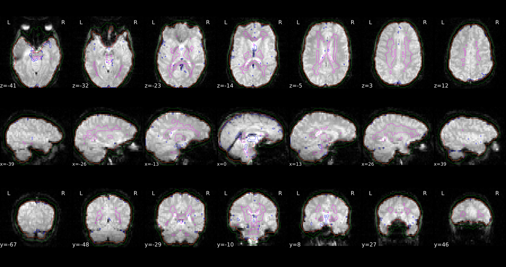
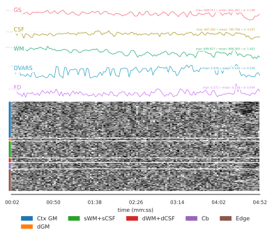

fMRIprep#
Author: Steffen Bollmann
Date: 17 Oct 2024
License:
Note: If this notebook uses neuroimaging tools from Neurocontainers, those tools retain their original licenses. Please see Neurodesk citation guidelines for details.
Citation and Resources#
Tools included in this workflow#
fMRIPrep:
Esteban, O., Markiewicz, C.J., Blair, R.W. et al. fMRIPrep: a robust preprocessing pipeline for functional MRI. Nat Methods 16, 111–116 (2019). https://doi.org/10.1038/s41592-018-0235-4
Dataset#
Flanker Dataset from OpenNeuro:
Kelly AMC and Uddin LQ and Biswal BB and Castellanos FX and Milham MP (2018). Flanker task (event-related). OpenNeuro Dataset ds000102
Kelly, A. M., Uddin, L. Q., Biswal, B. B., Castellanos, F. X., & Milham, M. P. (2008). Competition between functional brain networks mediates behavioral variability. NeuroImage, 39(1), 527–537. https://doi.org/10.1016/j.neuroimage.2007.08.008
Educational resources#
Demonstrationg fMRIprep on Neurodesk#
Preprocessing is a critical step in fMRI analysis, converting raw fMRI data into a form ready for statistical analysis. fMRIPrep is a robust, automated preprocessing pipeline that performs basic processing steps (coregistration, normalization, unwarping, noise component extraction, segmentation, skull-stripping, etc.), providing outputs that can be easily submitted to a variety of group level analyses, including task-based or resting-state fMRI, graph theory measures, and surface or volume-based statistics. It combines tools from well-known software packages including FSL, ANTs, FreeSurfer and AFNI, and generates quality reports that allow users to easily identify outliers
In this notebook, we demonstrate how to run fMRIPrep on a BIDS-formatted dataset and explore examples of the outputs it generates.

Load fMRIPrep and request FreeSurfer license#
# load fmriprep
import module
import os
await module.load('fmriprep/24.1.0')
await module.list()
['fmriprep/24.1.0']
# Request a freesurfer license and store it in your homedirectory. This is just an exampe - please replace with your license id:
!echo "Steffen.Bollmann@cai.uq.edu.au" > ~/.license
!echo "21029" >> ~/.license
!echo "*Cqyn12sqTCxo" >> ~/.license
!echo "FSxgcvGkNR59Y" >> ~/.license
Download Data#
!datalad install https://github.com/OpenNeuroDatasets/ds000102.git
!cd ds000102 && datalad get sub-08
Cloning: 0%| | 0.00/2.00 [00:00<?, ? candidates/s]
Enumerating: 0.00 Objects [00:00, ? Objects/s]
Counting: 0%| | 0.00/27.0 [00:00<?, ? Objects/s]
Compressing: 0%| | 0.00/23.0 [00:00<?, ? Objects/s]
Receiving: 0%| | 0.00/2.15k [00:00<?, ? Objects/s]
Resolving: 0%| | 0.00/537 [00:00<?, ? Deltas/s]
[INFO ] Remote origin not usable by git-annex; setting annex-ignore
[INFO ] https://github.com/OpenNeuroDatasets/ds000102.git/config download failed: Not Found
[INFO ] access to 1 dataset sibling s3-PRIVATE not auto-enabled, enable with:
| datalad siblings -d "/home/jovyan/workspace/books/examples/functional_imaging/ds000102" enable -s s3-PRIVATE
install(ok): /home/jovyan/workspace/books/examples/functional_imaging/ds000102 (dataset)
Total: 0%| | 0.00/67.8M [00:00<?, ? Bytes/s]
Get sub-08/a .. 8_T1w.nii.gz: 0%| | 0.00/10.6M [00:00<?, ? Bytes/s]
Get sub-08/a .. 8_T1w.nii.gz: 0%| | 33.4k/10.6M [00:00<01:05, 160k Bytes/s]
Get sub-08/a .. 8_T1w.nii.gz: 1%| | 85.6k/10.6M [00:00<00:49, 210k Bytes/s]
Get sub-08/a .. 8_T1w.nii.gz: 1%| | 138k/10.6M [00:00<00:45, 228k Bytes/s]
Get sub-08/a .. 8_T1w.nii.gz: 3%|▏ | 294k/10.6M [00:00<00:23, 432k Bytes/s]
Get sub-08/a .. 8_T1w.nii.gz: 6%|▎ | 608k/10.6M [00:01<00:12, 813k Bytes/s]
Get sub-08/a .. 8_T1w.nii.gz: 12%|▎ | 1.22M/10.6M [00:01<00:06, 1.52M Bytes/s]
Get sub-08/a .. 8_T1w.nii.gz: 22%|▋ | 2.30M/10.6M [00:01<00:03, 2.70M Bytes/s]
Get sub-08/a .. 8_T1w.nii.gz: 37%|█ | 3.91M/10.6M [00:01<00:01, 5.14M Bytes/s]
Get sub-08/a .. 8_T1w.nii.gz: 44%|█▎ | 4.63M/10.6M [00:01<00:01, 5.45M Bytes/s]
Get sub-08/a .. 8_T1w.nii.gz: 60%|█▊ | 6.29M/10.6M [00:01<00:00, 7.92M Bytes/s]
Get sub-08/a .. 8_T1w.nii.gz: 76%|██▎| 8.07M/10.6M [00:01<00:00, 8.14M Bytes/s]
Get sub-08/a .. 8_T1w.nii.gz: 97%|██▉| 10.3M/10.6M [00:02<00:00, 8.94M Bytes/s]
Get sub-08/a .. 8_T1w.nii.gz: 0%| | 0.00/10.6M [00:00<?, ? Bytes/s]
Total: 16%|████ | 10.6M/67.8M [00:03<00:18, 3.11M Bytes/s]
Get sub-08/f .. _bold.nii.gz: 0%| | 0.00/28.6M [00:00<?, ? Bytes/s]
Get sub-08/f .. _bold.nii.gz: 11%|▎ | 3.13M/28.6M [00:00<00:01, 15.0M Bytes/s]
Get sub-08/f .. _bold.nii.gz: 22%|▋ | 6.23M/28.6M [00:00<00:01, 12.3M Bytes/s]
Get sub-08/f .. _bold.nii.gz: 30%|▉ | 8.56M/28.6M [00:00<00:01, 11.8M Bytes/s]
Get sub-08/f .. _bold.nii.gz: 37%|█ | 10.6M/28.6M [00:00<00:01, 11.0M Bytes/s]
Get sub-08/f .. _bold.nii.gz: 45%|█▎ | 12.9M/28.6M [00:01<00:01, 11.0M Bytes/s]
Get sub-08/f .. _bold.nii.gz: 53%|█▌ | 15.1M/28.6M [00:01<00:01, 10.7M Bytes/s]
Get sub-08/f .. _bold.nii.gz: 60%|█▊ | 17.3M/28.6M [00:01<00:01, 10.7M Bytes/s]
Get sub-08/f .. _bold.nii.gz: 68%|██ | 19.5M/28.6M [00:01<00:00, 10.6M Bytes/s]
Get sub-08/f .. _bold.nii.gz: 76%|██▎| 21.7M/28.6M [00:01<00:00, 10.6M Bytes/s]
Get sub-08/f .. _bold.nii.gz: 83%|██▌| 23.9M/28.6M [00:02<00:00, 10.6M Bytes/s]
Get sub-08/f .. _bold.nii.gz: 91%|██▋| 26.0M/28.6M [00:02<00:00, 10.4M Bytes/s]
Get sub-08/f .. _bold.nii.gz: 99%|██▉| 28.4M/28.6M [00:02<00:00, 10.6M Bytes/s]
Get sub-08/f .. _bold.nii.gz: 0%| | 0.00/28.6M [00:00<?, ? Bytes/s]
Total: 58%|███████████████ | 39.2M/67.8M [00:06<00:04, 6.17M Bytes/s]
Get sub-08/f .. _bold.nii.gz: 0%| | 0.00/28.6M [00:00<?, ? Bytes/s]
Get sub-08/f .. _bold.nii.gz: 5%|▏ | 1.47M/28.6M [00:00<00:01, 14.7M Bytes/s]
Get sub-08/f .. _bold.nii.gz: 11%|▎ | 3.09M/28.6M [00:00<00:01, 15.5M Bytes/s]
Get sub-08/f .. _bold.nii.gz: 21%|▋ | 6.13M/28.6M [00:00<00:01, 12.4M Bytes/s]
Get sub-08/f .. _bold.nii.gz: 30%|▉ | 8.52M/28.6M [00:00<00:01, 12.0M Bytes/s]
Get sub-08/f .. _bold.nii.gz: 38%|█▏ | 10.9M/28.6M [00:00<00:01, 11.6M Bytes/s]
Get sub-08/f .. _bold.nii.gz: 46%|█▍ | 13.2M/28.6M [00:01<00:01, 11.3M Bytes/s]
Get sub-08/f .. _bold.nii.gz: 54%|█▌ | 15.4M/28.6M [00:01<00:01, 11.1M Bytes/s]
Get sub-08/f .. _bold.nii.gz: 62%|█▊ | 17.7M/28.6M [00:01<00:01, 10.9M Bytes/s]
Get sub-08/f .. _bold.nii.gz: 69%|██ | 19.9M/28.6M [00:01<00:00, 10.8M Bytes/s]
Get sub-08/f .. _bold.nii.gz: 77%|██▎| 22.1M/28.6M [00:01<00:00, 10.7M Bytes/s]
Get sub-08/f .. _bold.nii.gz: 85%|██▌| 24.5M/28.6M [00:02<00:00, 10.9M Bytes/s]
Get sub-08/f .. _bold.nii.gz: 93%|██▊| 26.5M/28.6M [00:02<00:00, 10.6M Bytes/s]
Get sub-08/f .. _bold.nii.gz: 0%| | 0.00/28.6M [00:00<?, ? Bytes/s]
get(ok): sub-08/anat/sub-08_T1w.nii.gz (file) [from s3-PUBLIC...]
get(ok): sub-08/func/sub-08_task-flanker_run-1_bold.nii.gz (file) [from s3-PUBLIC...]
get(ok): sub-08/func/sub-08_task-flanker_run-2_bold.nii.gz (file) [from s3-PUBLIC...]
get(ok): sub-08 (directory)
action summary:
get (ok: 4)
Run fMRIPrep#
%%bash
# set up environment variables
export SUBJECTS_DIR=$PWD/fmriprep-freesurfer-dir
export APPTAINERENV_SUBJECTS_DIR=$SUBJECTS_DIR
export ITK_GLOBAL_DEFAULT_NUMBER_OF_THREADS=2
export MPLCONFIGDIR=~/matplotlib-mpldir
# create subjects directory
mkdir -p $SUBJECTS_DIR
# run fmriprep
fmriprep ds000102/ fmriprep-output participant \
--fs-license-file ~/.license \
--output-spaces T1w MNI152NLin2009cAsym fsaverage fsnative \
--participant-label 08 \
--nprocs $ITK_GLOBAL_DEFAULT_NUMBER_OF_THREADS \
--mem 10000 \
--skip_bids_validation \
--fs-subjects-dir $SUBJECTS_DIR \
-v
260303-05:34:48,689 nipype.workflow IMPORTANT:
Running fMRIPrep version 24.1.0
License N
OTICE ##################################################
fMRIPrep 24.1.0
Copyright
The NiPreps Developers.
This product includes software developed by
the
NiPreps Community (https://nipreps.org/).
Portions of this software were develop
ed at the Department of
Psychology at Stanford University, Stanford, CA, US.
This software is also distributed as a Docker container image.
The bootstrapping file
for the image ("Dockerfile") is licensed
under the MIT License.
This sof
tware may be distributed through an add-on package called
"Docker Wrapper" that is under th
e BSD 3-clause License.
#################################################################
260303-05:34:48,718 nipype.workflow IMPORTANT:
Building fMRIPrep's workflow:
* BIDS dat
aset path: /home/jovyan/workspace/books/examples/functional_imaging/ds000102.
* Participa
nt list: ['08'].
* Run identifier: 20260303-053408_2e25b063-ff87-49b2-9625-012dfe2fc9a4.
* Output spaces: T1w MNI152NLin2009cAsym:res-native fsaverage:den-164k fsnative.
* Pre-run FreeSurfer's SUBJECTS_DIR: /home/jovyan/workspace/books/examples/functional_imaging/fmr
iprep-freesurfer-dir.
260303-05:34:57,273 nipype.workflow INFO:
ANAT Stage 1: Adding template workflow
260303-05:34:59,331 nipype.workflow INFO:
ANAT Stage 2: Preparing brain extraction workflow
260303-05:35:14,633 nipype.workflow INFO:
ANAT Stage 3: Preparing segmentation workflow
260303-05:35:14,649 nipype.workflow INFO:
ANAT Stage 4: Preparing normalization workflow for ['MNI
152NLin2009cAsym']
260303-05:35:14,677 nipype.workflow INFO:
ANAT Stage 5: Preparing surface reconstruction workflow
260303-05:35:14,729 nipype.workflow INFO:
ANAT Stage 6: Preparing mask refinement workflow
260303-05:35:14,739 nipype.workflow INFO:
ANAT No T2w images provided - skipping Stage 7
260303-05:35:14,740 nipype.workflow INFO:
ANAT Stage 8: Creating GIFTI surfaces for ['white', 'pia
l', 'midthickness', 'sphere_reg', 'sphere']
260303-05:35:14,791 nipype.workflow INFO:
ANAT Stage 8: Creating GIFTI metrics for ['thickness', '
sulc']
260303-05:35:14,806 nipype.workflow INFO:
ANAT Stage 8a: Creating cortical ribbon mask
260303-05:35:14,812 nipype.workflow INFO:
ANAT Stage 9: Creating fsLR registration sphere
260303-05:35:14,822 nipype.workflow INFO:
ANAT Stage 10: Creating MSM-Sulc registration sphere
260303-05:35:15,266 nipype.workflow INFO:
No single-band-reference found for sub-08_task-flanker_r
un-1_bold.nii.gz.
260303-05:35:15,577 nipype.workflow INFO:
Stage 1: Adding HMC boldref workflow
260303-05:35:15,604 nipype.workflow INFO:
Stage 2: Adding motion correction workflow
260303-05:35:15,640 nipype.workflow INFO:
Stage 3: Adding coregistration boldref workflow
260303-05:35:30,298 nipype.workflow INFO:
No single-band-reference found for sub-08_task-flanker_r
un-2_bold.nii.gz.
260303-05:35:30,419 nipype.workflow INFO:
Stage 1: Adding HMC boldref workflow
260303-05:35:30,431 nipype.workflow INFO:
Stage 2: Adding motion correction workflow
260303-05:35:30,442 nipype.workflow INFO:
Stage 3: Adding coregistration boldref workflow
260303-05:35:37,215 nipype.workflow INFO:
fMRIPrep workflow graph with 580 nodes built successfull
y.
260303-05:36:04,594 nipype.workflow IMPORTANT:
fMRIPrep started!
260303-05:36:07,786 nipype.workflow INFO:
Workflow fmriprep_24_1_wf settings: ['check', 'execution
', 'logging', 'monitoring']
260303-05:36:08,291 nipype.workflow INFO:
Running in parallel.
260303-05:36:08,295 nipype.workflow WARNING:
Some nodes exceed the total amount of memory availabl
e (10.00GB).
260303-05:36:08,308 nipype.workflow INFO:
[MultiProc] Running 0 tasks, and 21 jobs ready. Free mem
ory (GB): 10.00/10.00, Free processors: 2/2.
260303-05:36:08,575 nipype.workflow INFO:
[Node] Setting-up "fmriprep_24_1_wf.fsdir_run_20260303_0
53408_2e25b063_ff87_49b2_9625_012dfe2fc9a4" in "/home/jovyan/workspace/books/examples/functional_ima
ging/work/fmriprep_24_1_wf/fsdir_run_20260303_053408_2e25b063_ff87_49b2_9625_012dfe2fc9a4".
260303-05:36:08,579 nipype.workflow INFO:
[Node] Executing "fsdir_run_20260303_053408_2e25b063_ff8
7_49b2_9625_012dfe2fc9a4" <niworkflows.interfaces.bids.BIDSFreeSurferDir>
260303-05:36:18,231 nipype.workflow INFO:
[Node] Finished "fsdir_run_20260303_053408_2e25b063_ff87
_49b2_9625_012dfe2fc9a4", elapsed time 9.644422s.
260303-05:36:18,235 nipype.workflow INFO:
[Job 0] Completed (fmriprep_24_1_wf.fsdir_run_20260303_0
53408_2e25b063_ff87_49b2_9625_012dfe2fc9a4).
260303-05:36:18,502 nipype.workflow INFO:
[Node] Setting-up "fmriprep_24_1_wf.sub_08_wf.about" in
"/home/jovyan/workspace/books/examples/functional_imaging/work/fmriprep_24_1_wf/sub_08_wf/about".
260303-05:36:18,506 nipype.workflow INFO:
[Node] Executing "about" <fmriprep.interfaces.reports.Ab
outSummary>
260303-05:36:18,507 nipype.workflow INFO:
[Node] Finished "about", elapsed time 0.000358s.
260303-
05:36:18,509 nipype.workflow INFO:
[Job 2] Completed (fmriprep_24_1_wf.sub_08_wf.about).
260303-05:36:18,793 nipype.workflow INFO:
[MultiProc] Running 2 tasks, and 17 jobs ready. Free mem
ory (GB): 9.60/10.00, Free processors: 0/2.
Currently running:
* fmriprep_24_1_wf.sub_08_wf.anat_fit_wf.brain_extraction_wf.res_tmpl
* fmriprep_24_1_wf.sub_08_wf.bidssrc
260303-05:36:24,492 nipype.workflow INFO:
[Node] Setting-up "fmriprep_24_1_wf.sub_08_wf.anat_fit_w
f.brain_extraction_wf.res_tmpl" in "/home/jovyan/workspace/books/examples/functional_imaging/work/fm
riprep_24_1_wf/sub_08_wf/anat_fit_wf/brain_extraction_wf/res_tmpl".
260303-05:36:24,496 nipype.workflow INFO:
[Node] Executing "res_tmpl" <niworkflows.interfaces.niba
bel.RegridToZooms>
260303-05:36:25,457 nipype.workflow INFO:
[Node] Setting-up "fmriprep_24_1_wf.sub_08_wf.bidssrc" i
n "/home/jovyan/workspace/books/examples/functional_imaging/work/fmriprep_24_1_wf/sub_08_wf/bidssrc"
.
260303-05:36:25,459 nipype.workflow INFO:
[Node] Executing "bidssrc" <niworkflows.interfaces.bids.
BIDSDataGrabber>
260303-05:36:25,464 nipype.interface INFO:
No "t2w" images found for sub-08
260303-05:36:25,464 ni
pype.interface INFO:
No "flair" images found for sub-08
260303-05:36:25,465 nipype.interface INFO:
No "fmap" images found for sub-08
260303-05:36:25,465 nipype.interface INFO:
No "sbref" images
found for sub-08
260303-05:36:25,465 nipype.interface INFO:
No "roi" images found for sub-08
260303-05:36:25,465 nipype.interface INFO:
No "pet" images found for sub-08
260303-05:36:25,465 ni
pype.interface INFO:
No "asl" images found for sub-08
260303-05:36:25,465 nipype.workflow INFO:
[Node] Finished "bidssrc", elapsed time 0.000591s.
260303-05:36:26,256 nipype.workflow INFO:
[Node] Finished "res_tmpl", elapsed time 1.755396s.
260303-05:36:26,793 nipype.workflow INFO:
[Job 1] Completed (fmriprep_24_1_wf.sub_08_wf.bidssrc).
260303-05:36:26,796 nipype.workflow INFO:
[Job 3] Completed (fmriprep_24_1_wf.sub_08_wf.anat_fit_w
f.brain_extraction_wf.res_tmpl).
260303-05:36:26,799 nipype.workflow INFO:
[MultiProc] Running 0 tasks, and 20 jobs ready. Free mem
ory (GB): 10.00/10.00, Free processors: 2/2.
260303-05:36:27,96 nipype.workflow INFO:
[Node] Setting-up "fmriprep_24_1_wf.sub_08_wf.anat_fit_wf
.brain_extraction_wf.full_wm" in "/home/jovyan/workspace/books/examples/functional_imaging/work/fmri
prep_24_1_wf/sub_08_wf/anat_fit_wf/brain_extraction_wf/full_wm".
260303-05:36:27,99 nipype.workflow INFO:
[Node] Executing "full_wm" <nipype.interfaces.utility.wra
ppers.Function>
260303-05:36:27,145 nipype.workflow INFO:
[Node] Setting-up "fmriprep_24_1_wf.sub_08_wf.anat_fit_w
f.brain_extraction_wf.lap_tmpl" in "/home/jovyan/workspace/books/examples/functional_imaging/work/fm
riprep_24_1_wf/sub_08_wf/anat_fit_wf/brain_extraction_wf/lap_tmpl".
260303-05:36:27,149 nipype.workflow INFO:
[Node] Executing "lap_tmpl" <nipype.interfaces.ants.util
s.ImageMath>
260303-05:36:27,791 nipype.workflow INFO:
[Node] Finished "full_wm", elapsed time 0.690363s.
260303-05:36:28,794 nipype.workflow INFO:
[Job 4] Completed (fmriprep_24_1_wf.sub_08_wf.anat_fit_w
f.brain_extraction_wf.full_wm).
260303-05:36:28,799 nipype.workflow INFO:
[MultiProc] Running 1 tasks, and 18 jobs ready. Free mem
ory (GB): 9.80/10.00, Free processors: 1/2.
Currently running:
* fmriprep_24_1_wf.sub_08_wf.anat_fit_wf.brain_extraction_wf.lap_tmpl
260303-05:36:29,64 nipype.workflow INFO:
[Node] Setting-up "fmriprep_24_1_wf.sub_08_wf.bold_task_f
lanker_run_1_wf.bold_fit_wf.hmc_boldref_wf.val_bold" in "/home/jovyan/workspace/books/examples/funct
ional_imaging/work/fmriprep_24_1_wf/sub_08_wf/bold_task_flanker_run_1_wf/bold_fit_wf/hmc_boldref_wf/
val_bold".
260303-05:36:29,67 nipype.workflow INFO:
[Node] Executing "val_bold" <niworkflows.interfaces.heade
r.ValidateImage>
260303-05:36:29,165 nipype.workflow INFO:
[Node] Finished "val_bold", elapsed time 0.096376s.
260303-05:36:30,794 nipype.workflow INFO:
[Job 6] Completed (fmriprep_24_1_wf.sub_08_wf.bold_task_
flanker_run_1_wf.bold_fit_wf.hmc_boldref_wf.val_bold).
260303-05:36:30,798 nipype.workflow INFO:
[MultiProc] Running 1 tasks, and 18 jobs ready. Free mem
ory (GB): 9.80/10.00, Free processors: 1/2.
Currently running:
* fmriprep_24_1_wf.sub_08_wf.anat_fit_wf.brain_extraction_wf.lap_tmpl
260303-05:36:31,27 nipype.workflow INFO:
[Node] Setting-up "fmriprep_24_1_wf.sub_08_wf.bold_task_f
lanker_run_1_wf.bold_fit_wf.hmc_boldref_wf.get_dummy" in "/home/jovyan/workspace/books/examples/func
tional_imaging/work/fmriprep_24_1_wf/sub_08_wf/bold_task_flanker_run_1_wf/bold_fit_wf/hmc_boldref_wf
/get_dummy".
260303-05:36:31,31 nipype.workflow INFO:
[Node] Executing "get_dummy" <niworkflows.interfaces.bold
.NonsteadyStatesDetector>
260303-05:36:32,419 nipype.workflow INFO:
[Node] Finished "get_dummy", elapsed time 1.386587s.
260303-05:36:32,794 nipype.workflow INFO:
[Job 7] Completed (fmriprep_24_1_wf.sub_08_wf.bold_task_
flanker_run_1_wf.bold_fit_wf.hmc_boldref_wf.get_dummy).
260303-05:36:32,802 nipype.workflow INFO:
[MultiProc] Running 1 tasks, and 19 jobs ready. Free mem
ory (GB): 9.80/10.00, Free processors: 1/2.
Currently running:
* fmriprep_24_1_wf.sub_08_wf.anat_fit_wf.brain_extraction_wf.lap_tmpl
260303-05:36:33,116 nipype.workflow INFO:
[Node] Setting-up "fmriprep_24_1_wf.sub_08_wf.bold_task_
flanker_run_1_wf.bold_fit_wf.ds_hmc_boldref_wf.sources" in "/home/jovyan/workspace/books/examples/fu
nctional_imaging/work/fmriprep_24_1_wf/sub_08_wf/bold_task_flanker_run_1_wf/bold_fit_wf/ds_hmc_boldr
ef_wf/sources".
260303-05:36:33,119 nipype.workflow INFO:
[Node] Executing "sources" <fmriprep.interfaces.bids.BID
SURI>
260303-05:36:33,120 nipype.workflow INFO:
[Node] Finished "sources", elapsed time 0.000368s.
260303-05:36:34,795 nipype.workflow INFO:
[Job 8] Completed (fmriprep_24_1_wf.sub_08_wf.bold_task_
flanker_run_1_wf.bold_fit_wf.ds_hmc_boldref_wf.sources).
260303-05:36:34,800 nipype.workflow INFO:
[MultiProc] Running 1 tasks, and 18 jobs ready. Free mem
ory (GB): 9.80/10.00, Free processors: 1/2.
Currently running:
* fmriprep_24_1_wf.sub_08_wf.anat_fit_wf.brain_extraction_wf.lap_tmpl
260303-05:36:35,60 nipype.workflow INFO:
[Node] Setting-up "fmriprep_24_1_wf.sub_08_wf.bold_task_f
lanker_run_1_wf.bold_fit_wf.ds_hmc_wf.sources" in "/home/jovyan/workspace/books/examples/functional_
imaging/work/fmriprep_24_1_wf/sub_08_wf/bold_task_flanker_run_1_wf/bold_fit_wf/ds_hmc_wf/sources".
260303-05:36:35,65 nipype.workflow INFO:
[Node] Executing "sources" <fmriprep.interfaces.bids.BIDS
URI>
260303-05:36:35,66 nipype.workflow INFO:
[Node] Finished "sources", elapsed time 0.000406s.
260303-05:36:36,794 nipype.workflow INFO:
[Job 9] Completed (fmriprep_24_1_wf.sub_08_wf.bold_task_
flanker_run_1_wf.bold_fit_wf.ds_hmc_wf.sources).
260303-05:36:36,798 nipype.workflow INFO:
[MultiProc] Running 1 tasks, and 17 jobs ready. Free mem
ory (GB): 9.80/10.00, Free processors: 1/2.
Currently running:
* fmriprep_24_1_wf.sub_08_wf.anat_fit_wf.brain_extraction_wf.lap_tmpl
260303-05:36:37,84 nipype.workflow INFO:
[Node] Setting-up "fmriprep_24_1_wf.sub_08_wf.bold_task_f
lanker_run_1_wf.bold_fit_wf.ds_boldmask_wf.sources" in "/home/jovyan/workspace/books/examples/functi
onal_imaging/work/fmriprep_24_1_wf/sub_08_wf/bold_task_flanker_run_1_wf/bold_fit_wf/ds_boldmask_wf/s
ources".
260303-05:36:37,88 nipype.workflow INFO:
[Node] Executing "sources" <fmriprep.interfaces.bids.BIDS
URI>
260303-05:36:37,90 nipype.workflow INFO:
[Node] Finished "sources", elapsed time 0.000399s.
260303-05:36:38,438 nipype.workflow INFO:
[Node] Finished "lap_tmpl", elapsed time 10.917979s.
260303-05:36:38,796 nipype.workflow INFO:
[Job 5] Completed (fmriprep_24_1_wf.sub_08_wf.anat_fit_w
f.brain_extraction_wf.lap_tmpl).
260303-05:36:38,798 nipype.workflow INFO:
[Job 10] Completed (fmriprep_24_1_wf.sub_08_wf.bold_task
_flanker_run_1_wf.bold_fit_wf.ds_boldmask_wf.sources).
260303-05:36:38,801 nipype.workflow INFO:
[MultiProc] Running 0 tasks, and 17 jobs ready. Free mem
ory (GB): 10.00/10.00, Free processors: 2/2.
260303-05:36:39,68 nipype.workflow INFO:
[Node] Setting-up "fmriprep_24_1_wf.sub_08_wf.bold_task_f
lanker_run_1_wf.bold_native_wf.bold_source" in "/home/jovyan/workspace/books/examples/functional_ima
ging/work/fmriprep_24_1_wf/sub_08_wf/bold_task_flanker_run_1_wf/bold_native_wf/bold_source".
260303-05:36:39,71 nipype.workflow INFO:
[Node] Executing "bold_source" <nipype.interfaces.utility
.base.Select>
260303-05:36:39,73 nipype.workflow INFO:
[Node] Finished "bold_source", elapsed time
0.000393s.
260303-05:36:39,80 nipype.workflow INFO:
[Node] Setting-up "fmriprep_24_1_wf.sub_08_wf.bold_task_f
lanker_run_2_wf.bold_fit_wf.hmc_boldref_wf.val_bold" in "/home/jovyan/workspace/books/examples/funct
ional_imaging/work/fmriprep_24_1_wf/sub_08_wf/bold_task_flanker_run_2_wf/bold_fit_wf/hmc_boldref_wf/
val_bold".
260303-05:36:39,83 nipype.workflow INFO:
[Node] Executing "val_bold" <niworkflows.interfaces.heade
r.ValidateImage>
260303-05:36:39,177 nipype.workflow INFO:
[Node] Finished "val_bold", elapsed time 0.093558s.
260303-05:36:40,795 nipype.workflow INFO:
[Job 11] Completed (fmriprep_24_1_wf.sub_08_wf.bold_task
_flanker_run_1_wf.bold_native_wf.bold_source).
260303-05:36:40,797 nipype.workflow INFO:
[Job 12] Completed (fmriprep_24_1_wf.sub_08_wf.bold_task
_flanker_run_2_wf.bold_fit_wf.hmc_boldref_wf.val_bold).
260303-05:36:40,801 nipype.workflow INFO:
[MultiProc] Running 0 tasks, and 17 jobs ready. Free mem
ory (GB): 10.00/10.00, Free processors: 2/2.
260303-05:36:41,27 nipype.workflow INFO:
[Node] Setting-up "fmriprep_24_1_wf.sub_08_wf.bold_task_f
lanker_run_2_wf.bold_fit_wf.hmc_boldref_wf.get_dummy" in "/home/jovyan/workspace/books/examples/func
tional_imaging/work/fmriprep_24_1_wf/sub_08_wf/bold_task_flanker_run_2_wf/bold_fit_wf/hmc_boldref_wf
/get_dummy".
260303-05:36:41,30 nipype.workflow INFO:
[Node] Executing "get_dummy" <niworkflows.interfaces.bold
.NonsteadyStatesDetector>
260303-05:36:42,529 nipype.workflow INFO:
[Node] Finished "get_dummy", elapsed time 1.497572s.
260303-05:36:42,581 nipype.workflow INFO:
[Node] Setting-up "fmriprep_24_1_wf.sub_08_wf.bold_task_
flanker_run_2_wf.bold_fit_wf.ds_hmc_boldref_wf.sources" in "/home/jovyan/workspace/books/examples/fu
nctional_imaging/work/fmriprep_24_1_wf/sub_08_wf/bold_task_flanker_run_2_wf/bold_fit_wf/ds_hmc_boldr
ef_wf/sources".
260303-05:36:42,585 nipype.workflow INFO:
[Node] Executing "sources" <fmriprep.interfaces.bids.BID
SURI>
260303-05:36:42,586 nipype.workflow INFO:
[Node] Finished "sources", elapsed time 0.000339s.
260303-05:36:42,796 nipype.workflow INFO:
[Job 13] Completed (fmriprep_24_1_wf.sub_08_wf.bold_task
_flanker_run_2_wf.bold_fit_wf.hmc_boldref_wf.get_dummy).
260303-05:36:42,798 nipype.workflow INFO:
[Job 14] Completed (fmriprep_24_1_wf.sub_08_wf.bold_task
_flanker_run_2_wf.bold_fit_wf.ds_hmc_boldref_wf.sources).
260303-05:36:42,803 nipype.workflow INFO:
[MultiProc] Running 0 tasks, and 17 jobs ready. Free mem
ory (GB): 10.00/10.00, Free processors: 2/2.
260303-05:36:43,51 nipype.workflow INFO:
[Node] Setting-up "fmriprep_24_1_wf.sub_08_wf.bold_task_f
lanker_run_2_wf.bold_fit_wf.ds_hmc_wf.sources" in "/home/jovyan/workspace/books/examples/functional_
imaging/work/fmriprep_24_1_wf/sub_08_wf/bold_task_flanker_run_2_wf/bold_fit_wf/ds_hmc_wf/sources".
2
60303-05:36:43,52 nipype.workflow INFO:
[Node] Setting-up "fmriprep_24_1_wf.sub_08_wf.bold_task_fl
anker_run_2_wf.bold_fit_wf.ds_boldmask_wf.sources" in "/home/jovyan/workspace/books/examples/functio
nal_imaging/work/fmriprep_24_1_wf/sub_08_wf/bold_task_flanker_run_2_wf/bold_fit_wf/ds_boldmask_wf/so
urces".
260303-05:36:43,55 nipype.workflow INFO:
[Node] Executing "sources" <fmriprep.interfaces.bids.BIDS
URI>
260303-05:36:43,55 nipype.workflow INFO:
[Node] Executing "sources" <fmriprep.interfaces.bids
.BIDSURI>
260303-05:36:43,56 nipype.workflow INFO:
[Node] Finished "sources", elapsed time 0.00042
4s.
260303-05:36:43,56 nipype.workflow INFO:
[Node] Finished "sources", elapsed time 0.000423s.
260303-05:36:44,796 nipype.workflow INFO:
[Job 15] Completed (fmriprep_24_1_wf.sub_08_wf.bold_task
_flanker_run_2_wf.bold_fit_wf.ds_hmc_wf.sources).
260303-05:36:44,798 nipype.workflow INFO:
[Job 16] Completed (fmriprep_24_1_wf.sub_08_wf.bold_task
_flanker_run_2_wf.bold_fit_wf.ds_boldmask_wf.sources).
260303-05:36:44,801 nipype.workflow INFO:
[MultiProc] Running 0 tasks, and 15 jobs ready. Free mem
ory (GB): 10.00/10.00, Free processors: 2/2.
260303-05:36:45,95 nipype.workflow INFO:
[Node] Setting-up "fmriprep_24_1_wf.sub_08_wf.anat_fit_wf
.register_template_wf.split_desc" in "/home/jovyan/workspace/books/examples/functional_imaging/work/
fmriprep_24_1_wf/sub_08_wf/anat_fit_wf/register_template_wf/_template_MNI152NLin2009cAsym/split_desc
".
260303-05:36:45,97 nipype.workflow INFO:
[Node] Setting-up "fmriprep_24_1_wf.sub_08_wf.bold_task_f
lanker_run_2_wf.bold_native_wf.bold_source" in "/home/jovyan/workspace/books/examples/functional_ima
ging/work/fmriprep_24_1_wf/sub_08_wf/bold_task_flanker_run_2_wf/bold_native_wf/bold_source".
260303-
05:36:45,98 nipype.workflow INFO:
[Node] Executing "split_desc" <smriprep.interfaces.templateflow.
TemplateDesc>
260303-05:36:45,99 nipype.workflow INFO:
[Node] Finished "split_desc", elapsed time
0.000165s.
260303-05:36:45,100 nipype.workflow INFO:
[Node] Executing "bold_source" <nipype.interf
aces.utility.base.Select>
260303-05:36:45,101 nipype.workflow INFO:
[Job 18] Completed (fmriprep_2
4_1_wf.sub_08_wf.anat_fit_wf.register_template_wf.split_desc).
260303-05:36:45,101 nipype.workflow I
NFO:
[Node] Finished "bold_source", elapsed time 0.000441s.
260303-05:36:45,362 nipype.workflow INFO:
[Node] Setting-up "fmriprep_24_1_wf.sub_08_wf.template_i
terator_wf.spacesource" in "/home/jovyan/workspace/books/examples/functional_imaging/work/fmriprep_2
4_1_wf/sub_08_wf/template_iterator_wf/_in_tuple_MNI152NLin2009cAsym.resnative/spacesource".
260303-05:36:45,365 nipype.workflow INFO:
[Node] Executing "spacesource" <niworkflows.interfaces.s
pace.SpaceDataSource>
260303-05:36:45,366 nipype.workflow INFO:
[Node] Finished "spacesource", ela
psed time 0.00033s.
260303-05:36:45,368 nipype.workflow INFO:
[Job 19] Completed (fmriprep_24_1_wf
.sub_08_wf.template_iterator_wf.spacesource).
260303-05:36:45,662 nipype.workflow INFO:
[Node] Setting-up "fmriprep_24_1_wf.sub_08_wf.anat_fit_w
f.anat_reports_wf.template_iterator_wf.spacesource" in "/home/jovyan/workspace/books/examples/functi
onal_imaging/work/fmriprep_24_1_wf/sub_08_wf/anat_fit_wf/anat_reports_wf/template_iterator_wf/_in_tu
ple_MNI152NLin2009cAsym.resnative/spacesource".
260303-05:36:45,665 nipype.workflow INFO:
[Node] Executing "spacesource" <niworkflows.interfaces.s
pace.SpaceDataSource>
260303-05:36:45,666 nipype.workflow INFO:
[Node] Finished "spacesource", ela
psed time 0.000217s.
260303-05:36:45,667 nipype.workflow INFO:
[Job 20] Completed (fmriprep_24_1_w
f.sub_08_wf.anat_fit_wf.anat_reports_wf.template_iterator_wf.spacesource).
260303-05:36:45,919 nipype.workflow INFO:
[Node] Setting-up "fmriprep_24_1_wf.sub_08_wf.bids_info"
in "/home/jovyan/workspace/books/examples/functional_imaging/work/fmriprep_24_1_wf/sub_08_wf/bids_i
nfo".
260303-05:36:45,924 nipype.workflow INFO:
[Node] Executing "bids_info" <niworkflows.interfaces.bid
s.BIDSInfo>
260303-05:36:45,939 nipype.workflow INFO:
[Node] Finished "bids_info", elapsed time 0.013617s.
260303-05:36:46,797 nipype.workflow INFO:
[Job 17] Completed (fmriprep_24_1_wf.sub_08_wf.bold_task
_flanker_run_2_wf.bold_native_wf.bold_source).
260303-05:36:46,799 nipype.workflow INFO:
[Job 21]
Completed (fmriprep_24_1_wf.sub_08_wf.bids_info).
260303-05:36:46,804 nipype.workflow INFO:
[MultiProc] Running 0 tasks, and 19 jobs ready. Free mem
ory (GB): 10.00/10.00, Free processors: 2/2.
260303-05:36:47,58 nipype.workflow INFO:
[Node] Setting-up "fmriprep_24_1_wf.sub_08_wf.ds_report_a
bout" in "/home/jovyan/workspace/books/examples/functional_imaging/work/fmriprep_24_1_wf/sub_08_wf/d
s_report_about".
260303-05:36:47,65 nipype.workflow INFO:
[Node] Executing "ds_report_about" <fmriprep.interfaces.D
erivativesDataSink>
260303-05:36:47,68 nipype.workflow INFO:
[Node] Setting-up "fmriprep_24_1_wf.sub_08_wf.anat_fit_wf
.anat_template_wf.anat_ref_dimensions" in "/home/jovyan/workspace/books/examples/functional_imaging/
work/fmriprep_24_1_wf/sub_08_wf/anat_fit_wf/anat_template_wf/anat_ref_dimensions".
260303-05:36:47,72 nipype.workflow INFO:
[Node] Executing "anat_ref_dimensions" <niworkflows.inter
faces.images.TemplateDimensions>
260303-05:36:47,82 nipype.workflow INFO:
[Node] Finished "ds_report_about", elapsed time 0.015079s
.
260303-05:36:47,85 nipype.workflow INFO:
[Job 23] Completed (fmriprep_24_1_wf.sub_08_wf.ds_report_
about).
260303-05:36:47,327 nipype.workflow INFO:
[Node] Setting-up "fmriprep_24_1_wf.sub_08_wf.anat_fit_w
f.brain_extraction_wf.mrg_tmpl" in "/home/jovyan/workspace/books/examples/functional_imaging/work/fm
riprep_24_1_wf/sub_08_wf/anat_fit_wf/brain_extraction_wf/mrg_tmpl".
260303-05:36:47,331 nipype.workf
low INFO:
[Node] Executing "mrg_tmpl" <nipype.interfaces.utility.base.Merge>
260303-05:36:47,332 n
ipype.workflow INFO:
[Node] Finished "mrg_tmpl", elapsed time 0.00031s.
260303-05:36:47,629 nipype.workflow INFO:
[Node] Finished "anat_ref_dimensions", elapsed time 0.55
5592s.
260303-05:36:48,797 nipype.workflow INFO:
[Job 22] Completed (fmriprep_24_1_wf.sub_08_wf.anat_fit_
wf.anat_template_wf.anat_ref_dimensions).
260303-05:36:48,800 nipype.workflow INFO:
[Job 24] Completed (fmriprep_24_1_wf.sub_08_wf.anat_fit_
wf.brain_extraction_wf.mrg_tmpl).
260303-05:36:48,805 nipype.workflow INFO:
[MultiProc] Running 0 tasks, and 20 jobs ready. Free mem
ory (GB): 10.00/10.00, Free processors: 2/2.
260303-05:36:49,48 nipype.workflow INFO:
[Node] Setting-up "fmriprep_24_1_wf.sub_08_wf.bold_task_f
lanker_run_1_wf.bold_fit_wf.func_fit_reports_wf.ds_report_validation" in "/home/jovyan/workspace/boo
ks/examples/functional_imaging/work/fmriprep_24_1_wf/sub_08_wf/bold_task_flanker_run_1_wf/bold_fit_w
f/func_fit_reports_wf/ds_report_validation".
260303-05:36:49,54 nipype.workflow INFO:
[Node] Executing "ds_report_validation" <fmriprep.interfa
ces.DerivativesDataSink>
260303-05:36:49,66 nipype.workflow INFO:
[Node] Finished "ds_report_validation", elapsed time 0.01
1269s.
260303-05:36:49,69 nipype.workflow INFO:
[Job 25] Completed (fmriprep_24_1_wf.sub_08_wf.bold_task_
flanker_run_1_wf.bold_fit_wf.func_fit_reports_wf.ds_report_validation).
260303-05:36:49,316 nipype.workflow INFO:
[Node] Setting-up "fmriprep_24_1_wf.sub_08_wf.bold_task_
flanker_run_1_wf.bold_fit_wf.hmc_boldref_wf.calc_dummy_scans" in "/home/jovyan/workspace/books/examp
les/functional_imaging/work/fmriprep_24_1_wf/sub_08_wf/bold_task_flanker_run_1_wf/bold_fit_wf/hmc_bo
ldref_wf/calc_dummy_scans".
260303-05:36:49,321 nipype.workflow INFO:
[Node] Executing "calc_dummy_scans" <nipype.interfaces.u
tility.wrappers.Function>
260303-05:36:49,322 nipype.workflow INFO:
[Node] Finished "calc_dummy_sc
ans", elapsed time 0.000542s.
260303-05:36:49,324 nipype.workflow INFO:
[Job 27] Completed (fmriprep_24_1_wf.sub_08_wf.bold_task
_flanker_run_1_wf.bold_fit_wf.hmc_boldref_wf.calc_dummy_scans).
260303-05:36:49,326 nipype.workflow
INFO:
[Node] Setting-up "fmriprep_24_1_wf.sub_08_wf.bold_task_flanker_run_1_wf.bold_fit_wf.hmc_bol
dref_wf.gen_avg" in "/home/jovyan/workspace/books/examples/functional_imaging/work/fmriprep_24_1_wf/
sub_08_wf/bold_task_flanker_run_1_wf/bold_fit_wf/hmc_boldref_wf/gen_avg".
260303-05:36:49,335 nipype.workflow INFO:
[Node] Executing "gen_avg" <niworkflows.interfaces.image
s.RobustAverage>
260303-05:36:49,568 nipype.workflow INFO:
[Node] Setting-up "fmriprep_24_1_wf.sub_08_wf.bold_task_
flanker_run_1_wf.bold_native_wf.validate_bold" in "/home/jovyan/workspace/books/examples/functional_
imaging/work/fmriprep_24_1_wf/sub_08_wf/bold_task_flanker_run_1_wf/bold_native_wf/validate_bold".
260303-05:36:49,571 nipype.workflow INFO:
[Node] Executing "validate_bold" <niworkflows.interfaces
.header.ValidateImage>
260303-05:36:49,665 nipype.workflow INFO:
[Node] Finished "validate_bold", elapsed time 0.09342s.
260303-05:36:50,797 nipype.workflow INFO:
[Job 28] Completed (fmriprep_24_1_wf.sub_08_wf.bold_task
_flanker_run_1_wf.bold_native_wf.validate_bold).
260303-05:36:50,801 nipype.workflow INFO:
[MultiProc] Running 1 tasks, and 16 jobs ready. Free mem
ory (GB): 9.00/10.00, Free processors: 1/2.
Currently running:
* fmriprep_24_1_wf.sub_08_wf.bold_task_flanker_run_1_wf.bold_fit_wf.hmc_boldref_wf.gen_avg
260303-05:36:51,9 nipype.interface INFO:
stderr 2026-03-03T05:36:51.009511:++ 3dvolreg: AFNI versi
on=AFNI_24.2.06 (Sep 11 2024) [64-bit]
260303-05:36:51,9 nipype.interface INFO:
stderr 2026-03-03T
05:36:51.009511:++ Authored by: RW Cox
260303-05:36:51,12 nipype.interface INFO:
stderr 2026-03-03T05:36:51.012159:** AFNI converts NIFTI
_datatype=4 (INT16) in file /home/jovyan/workspace/books/examples/functional_imaging/work/fmriprep_2
4_1_wf/sub_08_wf/bold_task_flanker_run_1_wf/bold_fit_wf/hmc_boldref_wf/gen_avg/sub-08_task-flanker_r
un-1_bold_sliced.nii.gz to FLOAT32
260303-05:36:51,12 nipype.interface INFO:
stderr 2026-03-03T05:
36:51.012159: Warnings of this type will be muted for this session.
260303-05:36:51,12 nipype.in
terface INFO:
stderr 2026-03-03T05:36:51.012159: Set AFNI_NIFTI_TYPE_WARN to YES to see them a
ll, NO to see none.
260303-05:36:51,14 nipype.interface INFO:
stderr 2026-03-03T05:36:51.014452:++ Coarse del was 10,
replaced with 4
260303-05:36:51,49 nipype.workflow INFO:
[Node] Setting-up "fmriprep_24_1_wf.sub_08_wf.bold_task_f
lanker_run_2_wf.bold_fit_wf.func_fit_reports_wf.ds_report_validation" in "/home/jovyan/workspace/boo
ks/examples/functional_imaging/work/fmriprep_24_1_wf/sub_08_wf/bold_task_flanker_run_2_wf/bold_fit_w
f/func_fit_reports_wf/ds_report_validation".
260303-05:36:51,54 nipype.workflow INFO:
[Node] Executing "ds_report_validation" <fmriprep.interfa
ces.DerivativesDataSink>
260303-05:36:51,67 nipype.workflow INFO:
[Node] Finished "ds_report_validation", elapsed time 0.01
0817s.
260303-05:36:51,69 nipype.workflow INFO:
[Job 29] Completed (fmriprep_24_1_wf.sub_08_wf.bold_task_
flanker_run_2_wf.bold_fit_wf.func_fit_reports_wf.ds_report_validation).
260303-05:36:51,319 nipype.workflow INFO:
[Node] Setting-up "fmriprep_24_1_wf.sub_08_wf.bold_task_
flanker_run_2_wf.bold_fit_wf.hmc_boldref_wf.gen_avg" in "/home/jovyan/workspace/books/examples/funct
ional_imaging/work/fmriprep_24_1_wf/sub_08_wf/bold_task_flanker_run_2_wf/bold_fit_wf/hmc_boldref_wf/
gen_avg".
260303-05:36:51,328 nipype.workflow INFO:
[Node] Executing "gen_avg" <niworkflows.interfaces.image
s.RobustAverage>
260303-05:36:52,678 nipype.interface INFO:
stderr 2026-03-03T05:36:52.677984:++ 3dvolreg: AFNI ver
sion=AFNI_24.2.06 (Sep 11 2024) [64-bit]
260303-05:36:52,678 nipype.interface INFO:
stderr 2026-03-03T05:36:52.677984:++ Authored by: RW Co
x
260303-05:36:52,678 nipype.interface INFO:
stderr 2026-03-03T05:36:52.678885:** AFNI converts NI
FTI_datatype=4 (INT16) in file /home/jovyan/workspace/books/examples/functional_imaging/work/fmripre
p_24_1_wf/sub_08_wf/bold_task_flanker_run_2_wf/bold_fit_wf/hmc_boldref_wf/gen_avg/sub-08_task-flanke
r_run-2_bold_sliced.nii.gz to FLOAT32
260303-05:36:52,678 nipype.interface INFO:
stderr 2026-03-03
T05:36:52.678885: Warnings of this type will be muted for this session.
260303-05:36:52,679 nipy
pe.interface INFO:
stderr 2026-03-03T05:36:52.678885: Set AFNI_NIFTI_TYPE_WARN to YES to see t
hem all, NO to see none.
260303-05:36:52,679 nipype.interface INFO:
stderr 2026-03-03T05:36:52.679
630:++ Coarse del was 10, replaced with 4
260303-05:36:52,800 nipype.workflow INFO:
[MultiProc] Running 2 tasks, and 14 jobs ready. Free mem
ory (GB): 8.00/10.00, Free processors: 0/2.
Currently running:
* fmriprep_24_1_wf.sub_08_wf.bold_task_flanker_run_2_wf.bold_fit_wf.hmc_boldref_wf.gen_avg
* fmriprep_24_1_wf.sub_08_wf.bold_task_flanker_run_1_wf.bold_fit_wf.hmc_boldref
_wf.gen_avg
260303-05:37:08,678 nipype.interface INFO:
stderr 2026-03-03T05:37:08.678265:++ Max displacement i
n automask = 0.12 (mm) at sub-brick 18
260303-05:37:08,678 nipype.interface INFO:
stderr 2026-03-0
3T05:37:08.678265:++ Max delta displ in automask = 0.10 (mm) at sub-brick 5
260303-05:37:10,141 nipype.interface INFO:
stderr 2026-03-03T05:37:10.141303:++ Max displacement i
n automask = 1.01 (mm) at sub-brick 17
260303-05:37:10,142 nipype.interface INFO:
stderr 2026-03-03T05:37:10.141303:++ Max delta displ i
n automask = 0.39 (mm) at sub-brick 17
260303-05:37:10,305 nipype.workflow INFO:
[Node] Finished "gen_avg", elapsed time 20.969318s.
260303-05:37:10,801 nipype.workflow INFO:
[Job 26] Completed (fmriprep_24_1_wf.sub_08_wf.bold_task
_flanker_run_1_wf.bold_fit_wf.hmc_boldref_wf.gen_avg).
260303-05:37:10,807 nipype.workflow INFO:
[MultiProc] Running 1 tasks, and 17 jobs ready. Free mem
ory (GB): 9.00/10.00, Free processors: 1/2.
Currently running:
* fmriprep_24_1_wf.sub_08_wf.bold_task_flanker_run_2_wf.bold_fit_wf.hmc_boldref_wf.gen_avg
260303-05:37:11,73 nipype.workflow INFO:
[Node] Setting-up "fmriprep_24_1_wf.sub_08_wf.bold_task_f
lanker_run_2_wf.bold_fit_wf.hmc_boldref_wf.calc_dummy_scans" in "/home/jovyan/workspace/books/exampl
es/functional_imaging/work/fmriprep_24_1_wf/sub_08_wf/bold_task_flanker_run_2_wf/bold_fit_wf/hmc_bol
dref_wf/calc_dummy_scans".
260303-05:37:11,76 nipype.workflow INFO:
[Node] Executing "calc_dummy_scans" <nipype.interfaces.ut
ility.wrappers.Function>
260303-05:37:11,77 nipype.workflow INFO:
[Node] Finished "calc_dummy_scan
s", elapsed time 0.000415s.
260303-05:37:11,78 nipype.workflow INFO:
[Job 31] Completed (fmriprep_
24_1_wf.sub_08_wf.bold_task_flanker_run_2_wf.bold_fit_wf.hmc_boldref_wf.calc_dummy_scans).
260303-05:37:11,324 nipype.workflow INFO:
[Node] Setting-up "fmriprep_24_1_wf.sub_08_wf.bold_task_
flanker_run_2_wf.bold_native_wf.validate_bold" in "/home/jovyan/workspace/books/examples/functional_
imaging/work/fmriprep_24_1_wf/sub_08_wf/bold_task_flanker_run_2_wf/bold_native_wf/validate_bold".
260303-05:37:11,327 nipype.workflow INFO:
[Node] Executing "validate_bold" <niworkflows.interfaces
.header.ValidateImage>
260303-05:37:11,425 nipype.workflow INFO:
[Node] Finished "validate_bold", elapsed time 0.096826s.
260303-05:37:11,874 nipype.workflow INFO:
[Node] Finished "gen_avg", elapsed time 20.544213s.
260303-05:37:12,801 nipype.workflow INFO:
[Job 30] Completed (fmriprep_24_1_wf.sub_08_wf.bold_task
_flanker_run_2_wf.bold_fit_wf.hmc_boldref_wf.gen_avg).
260303-05:37:12,804 nipype.workflow INFO:
[Job 32] Completed (fmriprep_24_1_wf.sub_08_wf.bold_task
_flanker_run_2_wf.bold_native_wf.validate_bold).
260303-05:37:12,808 nipype.workflow INFO:
[MultiProc] Running 0 tasks, and 18 jobs ready. Free mem
ory (GB): 10.00/10.00, Free processors: 2/2.
260303-05:37:13,64 nipype.workflow INFO:
[Node] Setting-up "fmriprep_24_1_wf.sub_08_wf.anat_fit_wf
.register_template_wf.tf_select" in "/home/jovyan/workspace/books/examples/functional_imaging/work/f
mriprep_24_1_wf/sub_08_wf/anat_fit_wf/register_template_wf/_template_MNI152NLin2009cAsym/tf_select".
260303-05:37:13,67 nipype.workflow INFO:
[Node] Executing "tf_select" <smriprep.interfaces.templat
eflow.TemplateFlowSelect>
260303-05:37:13,233 nipype.workflow INFO:
[Node] Finished "tf_select", elapsed time 0.165014s.
260303-05:37:13,236 nipype.workflow INFO:
[Job 33] Completed (fmriprep_24_1_wf.sub_08_wf.anat_fit_
wf.register_template_wf.tf_select).
260303-05:37:13,496 nipype.workflow INFO:
[Node] Setting-up "fmriprep_24_1_wf.sub_08_wf.anat_fit_w
f.register_template_wf.fmt_cohort" in "/home/jovyan/workspace/books/examples/functional_imaging/work
/fmriprep_24_1_wf/sub_08_wf/anat_fit_wf/register_template_wf/_template_MNI152NLin2009cAsym/fmt_cohor
t".
260303-05:37:13,500 nipype.workflow INFO:
[Node] Executing "fmt_cohort" <nipype.interfaces.utility
.wrappers.Function>
260303-05:37:13,501 nipype.workflow INFO:
[Node] Finished "fmt_cohort", elapsed time 0.000571s.
26
0303-05:37:13,503 nipype.workflow INFO:
[Job 34] Completed (fmriprep_24_1_wf.sub_08_wf.anat_fit_wf
.register_template_wf.fmt_cohort).
260303-05:37:13,734 nipype.workflow INFO:
[Node] Setting-up "fmriprep_24_1_wf.sub_08_wf.template_i
terator_wf.gen_tplid" in "/home/jovyan/workspace/books/examples/functional_imaging/work/fmriprep_24_
1_wf/sub_08_wf/template_iterator_wf/_in_tuple_MNI152NLin2009cAsym.resnative/gen_tplid".
260303-05:37:13,738 nipype.workflow INFO:
[Node] Executing "gen_tplid" <nipype.interfaces.utility.
wrappers.Function>
260303-05:37:13,739 nipype.workflow INFO:
[Node] Finished "gen_tplid", elapsed time 0.00047s.
2603
03-05:37:13,741 nipype.workflow INFO:
[Job 35] Completed (fmriprep_24_1_wf.sub_08_wf.template_iter
ator_wf.gen_tplid).
260303-05:37:13,965 nipype.workflow INFO:
[Node] Setting-up "fmriprep_24_1_wf.sub_08_wf.template_i
terator_wf.select_tpl" in "/home/jovyan/workspace/books/examples/functional_imaging/work/fmriprep_24
_1_wf/sub_08_wf/template_iterator_wf/_in_tuple_MNI152NLin2009cAsym.resnative/select_tpl".
260303-05:37:13,969 nipype.workflow INFO:
[Node] Executing "select_tpl" <smriprep.interfaces.templ
ateflow.TemplateFlowSelect>
260303-05:37:14,118 nipype.workflow INFO:
[Node] Finished "select_tpl", elapsed time 0.14859s.
260303-05:37:14,121 nipype.workflow INFO:
[Job 36] Completed (fmriprep_24_1_wf.sub_08_wf.template_
iterator_wf.select_tpl).
260303-05:37:14,360 nipype.workflow INFO:
[Node] Setting-up "fmriprep_24_1_wf.sub_08_wf.anat_fit_w
f.anat_reports_wf.template_iterator_wf.gen_tplid" in "/home/jovyan/workspace/books/examples/function
al_imaging/work/fmriprep_24_1_wf/sub_08_wf/anat_fit_wf/anat_reports_wf/template_iterator_wf/_in_tupl
e_MNI152NLin2009cAsym.resnative/gen_tplid".
260303-05:37:14,364 nipype.workflow INFO:
[Node] Executing "gen_tplid" <nipype.interfaces.utility.
wrappers.Function>
260303-05:37:14,365 nipype.workflow INFO:
[Node] Finished "gen_tplid", elapsed
time 0.000569s.
260303-05:37:14,367 nipype.workflow INFO:
[Job 37] Completed (fmriprep_24_1_wf.sub_08_wf.anat_fit_
wf.anat_reports_wf.template_iterator_wf.gen_tplid).
260303-05:37:14,591 nipype.workflow INFO:
[Node] Setting-up "fmriprep_24_1_wf.sub_08_wf.anat_fit_w
f.anat_reports_wf.template_iterator_wf.select_tpl" in "/home/jovyan/workspace/books/examples/functio
nal_imaging/work/fmriprep_24_1_wf/sub_08_wf/anat_fit_wf/anat_reports_wf/template_iterator_wf/_in_tup
le_MNI152NLin2009cAsym.resnative/select_tpl".
260303-05:37:14,594 nipype.workflow INFO:
[Node] Executing "select_tpl" <smriprep.interfaces.templ
ateflow.TemplateFlowSelect>
260303-05:37:14,689 nipype.workflow INFO:
[Node] Finished "select_tpl", elapsed time 0.094288s.
260303-05:37:14,691 nipype.workflow INFO:
[Job 38] Completed (fmriprep_24_1_wf.sub_08_wf.anat_fit_
wf.anat_reports_wf.template_iterator_wf.select_tpl).
260303-05:37:14,888 nipype.workflow INFO:
[Node] Setting-up "fmriprep_24_1_wf.sub_08_wf.summary" i
n "/home/jovyan/workspace/books/examples/functional_imaging/work/fmriprep_24_1_wf/sub_08_wf/summary"
.
260303-05:37:14,891 nipype.workflow INFO:
[Node] Executing "summary" <fmriprep.interfaces.reports.
SubjectSummary>
260303-05:37:14,894 nipype.workflow INFO:
[Node] Finished "summary", elapsed time 0.002185s.
260303-05:37:14,895 nipype.workflow INFO:
[Job 39] Completed (fmriprep_24_1_wf.sub_08_wf.summary).
260303-05:37:15,109 nipype.workflow INFO:
[Node] Setting-up "fmriprep_24_1_wf.sub_08_wf.anat_fit_w
f.fs_isrunning" in "/home/jovyan/workspace/books/examples/functional_imaging/work/fmriprep_24_1_wf/s
ub_08_wf/anat_fit_wf/fs_isrunning".
260303-05:37:15,110 nipype.workflow INFO:
[MultiProc] Running 2 tasks, and 10 jobs ready. Free mem
ory (GB): 9.60/10.00, Free processors: 0/2.
Currently running:
* fmriprep_24_1_wf.sub_08_wf.anat_fit_wf.anat_template_wf.denoise
* fm
riprep_24_1_wf.sub_08_wf.anat_fit_wf.fs_isrunning
260303-05:37:15,115 nipype.workflow INFO:
[Node]
Executing "fs_isrunning" <nipype.interfaces.utility.wrappers.Function>
260303-05:37:15,117 nipype.workflow INFO:
[Node] Finished "fs_isrunning", elapsed time 0.001104s.
260303-05:37:15,169 nipype.workflow INFO:
[Node] Setting-up "_denoise0" in "/home/jovyan/workspace
/books/examples/functional_imaging/work/fmriprep_24_1_wf/sub_08_wf/anat_fit_wf/anat_template_wf/deno
ise/mapflow/_denoise0".
260303-05:37:15,172 nipype.workflow INFO:
[Node] Executing "_denoise0" <nipype.interfaces.ants.seg
mentation.DenoiseImage>
260303-05:37:17,111 nipype.workflow INFO:
[Job 40] Completed (fmriprep_24_1_wf.sub_08_wf.anat_fit_
wf.fs_isrunning).
260303-05:37:17,115 nipype.workflow INFO:
[MultiProc] Running 1 tasks, and 10 jobs ready. Free mem
ory (GB): 9.80/10.00, Free processors: 1/2.
Currently running:
* fmriprep_24_1_wf.sub_08_wf.anat_fit_wf.anat_template_wf.denoise
260303-05:37:17,355 nipype.workflow INFO:
[Node] Setting-up "fmriprep_24_1_wf.sub_08_wf.anat_fit_w
f.ds_t1w_mask_wf.raw_sources" in "/home/jovyan/workspace/books/examples/functional_imaging/work/fmri
prep_24_1_wf/sub_08_wf/anat_fit_wf/ds_t1w_mask_wf/raw_sources".
260303-05:37:17,360 nipype.workflow INFO:
[Node] Executing "raw_sources" <nipype.interfaces.utilit
y.wrappers.Function>
260303-05:37:17,361 nipype.workflow INFO:
[Node] Finished "raw_sources", elapsed time 0.000777s.
260303-05:37:19,112 nipype.workflow INFO:
[Job 42] Completed (fmriprep_24_1_wf.sub_08_wf.anat_fit_
wf.ds_t1w_mask_wf.raw_sources).
260303-05:37:19,116 nipype.workflow INFO:
[MultiProc] Running 1 tasks, and 9 jobs ready. Free memo
ry (GB): 9.80/10.00, Free processors: 1/2.
Currently running:
* fmriprep_24_1_wf.sub_08_wf.anat_fit_wf.anat_template_wf.denoise
260303-05:37:19,353 nipype.workflow INFO:
[Node] Setting-up "fmriprep_24_1_wf.sub_08_wf.anat_fit_w
f.ds_ribbon_mask_wf.raw_sources" in "/home/jovyan/workspace/books/examples/functional_imaging/work/f
mriprep_24_1_wf/sub_08_wf/anat_fit_wf/ds_ribbon_mask_wf/raw_sources".
260303-05:37:19,357 nipype.workflow INFO:
[Node] Executing "raw_sources" <nipype.interfaces.utilit
y.wrappers.Function>
260303-05:37:19,358 nipype.workflow INFO:
[Node] Finished "raw_sources", elapsed time 0.000658s.
260303-05:37:21,113 nipype.workflow INFO:
[Job 43] Completed (fmriprep_24_1_wf.sub_08_wf.anat_fit_
wf.ds_ribbon_mask_wf.raw_sources).
260303-05:37:21,121 nipype.workflow INFO:
[MultiProc] Running 1 tasks, and 8 jobs ready. Free memo
ry (GB): 9.80/10.00, Free processors: 1/2.
Currently running:
* fmriprep_24_1_wf.sub_08_wf.anat_fit_wf.anat_template_wf.denoise
260303-05:37:21,369 nipype.workflow INFO:
[Node] Setting-up "fmriprep_24_1_wf.sub_08_wf.anat_fit_w
f.anat_reports_wf.t1w_conform_check" in "/home/jovyan/workspace/books/examples/functional_imaging/wo
rk/fmriprep_24_1_wf/sub_08_wf/anat_fit_wf/anat_reports_wf/t1w_conform_check".
260303-05:37:21,372 nipype.workflow INFO:
[Node] Executing "t1w_conform_check" <nipype.interfaces.
utility.wrappers.Function>
260303-05:37:21,374 nipype.workflow INFO:
[Node] Finished "t1w_conform_check", elapsed time 0.0005
42s.
260303-05:37:21,376 nipype.workflow INFO:
[Job 44] Completed (fmriprep_24_1_wf.sub_08_wf.anat_fit_
wf.anat_reports_wf.t1w_conform_check).
260303-05:37:21,640 nipype.workflow INFO:
[Node] Setting-up "fmriprep_24_1_wf.sub_08_wf.bold_task_
flanker_run_1_wf.bold_fit_wf.fmapref_buffer" in "/home/jovyan/workspace/books/examples/functional_im
aging/work/fmriprep_24_1_wf/sub_08_wf/bold_task_flanker_run_1_wf/bold_fit_wf/fmapref_buffer".
260303
-05:37:21,644 nipype.workflow INFO:
[Node] Executing "fmapref_buffer" <nipype.interfaces.utility.w
rappers.Function>
260303-05:37:21,648 nipype.workflow INFO:
[Node] Finished "fmapref_buffer", elapsed time 0.002518s
.
260303-05:37:23,112 nipype.workflow INFO:
[Job 45] Completed (fmriprep_24_1_wf.sub_08_wf.bold_task
_flanker_run_1_wf.bold_fit_wf.fmapref_buffer).
260303-05:37:23,117 nipype.workflow INFO:
[MultiProc] Running 1 tasks, and 8 jobs ready. Free memo
ry (GB): 9.80/10.00, Free processors: 1/2.
Currently running:
* fmriprep_24_1_wf.sub_08_wf.anat_fit_wf.anat_template_wf.denoise
260303-05:37:23,361 nipype.workflow INFO:
[Node] Setting-up "fmriprep_24_1_wf.sub_08_wf.bold_task_
flanker_run_1_wf.bold_fit_wf.ds_hmc_boldref_wf.ds_boldref" in "/home/jovyan/workspace/books/examples
/functional_imaging/work/fmriprep_24_1_wf/sub_08_wf/bold_task_flanker_run_1_wf/bold_fit_wf/ds_hmc_bo
ldref_wf/ds_boldref".
260303-05:37:23,368 nipype.workflow INFO:
[Node] Executing "ds_boldref" <fmriprep.interfaces.Deriv
ativesDataSink>
260303-05:37:23,396 nipype.interface WARNING:
Changing /home/jovyan/workspace/books/examples/funct
ional_imaging/fmriprep-output/sub-08/func/sub-08_task-flanker_run-1_desc-hmc_boldref.nii.gz dtype fr
om int16 to float32
260303-05:37:23,482 nipype.workflow INFO:
[Node] Finished "ds_boldref", elapsed time 0.112485s.
260303-05:37:23,485 nipype.workflow INFO:
[Job 46] Completed (fmriprep_24_1_wf.sub_08_wf.bold_task
_flanker_run_1_wf.bold_fit_wf.ds_hmc_boldref_wf.ds_boldref).
260303-05:37:23,861 nipype.workflow INFO:
[Node] Setting-up "fmriprep_24_1_wf.sub_08_wf.bold_task_
flanker_run_1_wf.bold_fit_wf.bold_hmc_wf.mcflirt" in "/home/jovyan/workspace/books/examples/function
al_imaging/work/fmriprep_24_1_wf/sub_08_wf/bold_task_flanker_run_1_wf/bold_fit_wf/bold_hmc_wf/mcflir
t".
260303-05:37:23,869 nipype.workflow INFO:
[Node] Executing "mcflirt" <nipype.interfaces.fsl.prepro
cess.MCFLIRT>
260303-05:37:25,115 nipype.workflow INFO:
[MultiProc] Running 2 tasks, and 7 jobs ready. Free memo
ry (GB): 9.27/10.00, Free processors: 0/2.
Currently running:
* fmriprep_24_1_wf.sub_08_wf.bold_task_flanker_run_1_wf.bold_fit_wf.bold_hmc_wf.mcflirt
* fmriprep_24_1_wf.sub_08_wf.anat_fit_wf.anat_template_wf.denoise
260303-05:37:52,935 nipype.workflow INFO:
[Node] Finished "mcflirt", elapsed time 29.063633s.
260303-05:37:53,118 nipype.workflow INFO:
[Job 47] Completed (fmriprep_24_1_wf.sub_08_wf.bold_task
_flanker_run_1_wf.bold_fit_wf.bold_hmc_wf.mcflirt).
260303-05:37:53,123 nipype.workflow INFO:
[Mul
tiProc] Running 1 tasks, and 10 jobs ready. Free memory (GB): 9.80/10.00, Free processors: 1/2.
Currently running:
* fmriprep_24_1_wf.sub_08_wf.anat_fit_wf.
anat_template_wf.denoise
260303-05:37:53,379 nipype.workflow INFO:
[Node] Setting-up "fmriprep_24_1_wf.sub_08_wf.bold_task_
flanker_run_2_wf.bold_fit_wf.fmapref_buffer" in "/home/jovyan/workspace/books/examples/functional_im
aging/work/fmriprep_24_1_wf/sub_08_wf/bold_task_flanker_run_2_wf/bold_fit_wf/fmapref_buffer".
260303-05:37:53,383 nipype.workflow INFO:
[Node] Executing "fmapref_buffer" <nipype.interfaces.uti
lity.wrappers.Function>
260303-05:37:53,384 nipype.workflow INFO:
[Node] Finished "fmapref_buffer", elapsed time 0.000524s
.
260303-05:37:55,117 nipype.workflow INFO:
[Job 48] Completed (fmriprep_24_1_wf.sub_08_wf.bold_task
_flanker_run_2_wf.bold_fit_wf.fmapref_buffer).
260303-05:37:55,120 nipype.workflow INFO:
[MultiProc] Running 1 tasks, and 10 jobs ready. Free mem
ory (GB): 9.80/10.00, Free processors: 1/2.
Currently running:
* fmriprep_24_1_wf.sub_08_wf.anat_fit_wf.anat_template_wf.denoise
260303-05:37:55,354 nipype.workflow INFO:
[Node] Setting-up "fmriprep_24_1_wf.sub_08_wf.bold_task_
flanker_run_2_wf.bold_fit_wf.ds_hmc_boldref_wf.ds_boldref" in "/home/jovyan/workspace/books/examples
/functional_imaging/work/fmriprep_24_1_wf/sub_08_wf/bold_task_flanker_run_2_wf/bold_fit_wf/ds_hmc_bo
ldref_wf/ds_boldref".
260303-05:37:55,360 nipype.workflow INFO:
[Node] Executing "ds_boldref" <fmriprep.interfaces.Deriv
ativesDataSink>
260303-05:37:55,386 nipype.interface WARNING:
Changing /home/jovyan/workspace/books/examples/funct
ional_imaging/fmriprep-output/sub-08/func/sub-08_task-flanker_run-2_desc-hmc_boldref.nii.gz dtype fr
om int16 to float32
260303-05:37:55,468 nipype.workflow INFO:
[Node] Finished "ds_boldref", elapsed time 0.106326s.
260303-05:37:55,470 nipype.workflow INFO:
[Job 49] Completed (fmriprep_24_1_wf.sub_08_wf.bold_task
_flanker_run_2_wf.bold_fit_wf.ds_hmc_boldref_wf.ds_boldref).
260303-05:37:55,708 nipype.workflow INFO:
[Node] Setting-up "fmriprep_24_1_wf.sub_08_wf.bold_task_
flanker_run_2_wf.bold_fit_wf.bold_hmc_wf.mcflirt" in "/home/jovyan/workspace/books/examples/function
al_imaging/work/fmriprep_24_1_wf/sub_08_wf/bold_task_flanker_run_2_wf/bold_fit_wf/bold_hmc_wf/mcflir
t".
260303-05:37:55,712 nipype.workflow INFO:
[Node] Executing "mcflirt" <nipype.interfaces.fsl.prepro
cess.MCFLIRT>
260303-05:37:57,120 nipype.workflow INFO:
[MultiProc] Running 2 tasks, and 9 jobs ready. Free memo
ry (GB): 9.27/10.00, Free processors: 0/2.
Currently running:
* fmriprep_24_1_wf.sub_08_wf.bold_task_flanker_run_2_wf.bold_fit_wf.bold_hmc_wf.mcflirt
* fmriprep_24_1_wf.sub_08_wf.anat_fit_wf.anat_template_wf.denoise
260303-05:38:23,741 nipype.workflow INFO:
[Node] Finished "mcflirt", elapsed time 28.028084s.
260303-05:38:25,122 nipype.workflow INFO:
[Job 50] Completed (fmriprep_24_1_wf.sub_08_wf.bold_task
_flanker_run_2_wf.bold_fit_wf.bold_hmc_wf.mcflirt).
260303-05:38:25,126 nipype.workflow INFO:
[Mul
tiProc] Running 1 tasks, and 12 jobs ready. Free memory (GB): 9.80/10.00, Free processors: 1/2.
Currently running:
* fmriprep_24_1_wf.sub_08_wf.anat_fit_wf.
anat_template_wf.denoise
260303-05:38:25,372 nipype.workflow INFO:
[Node] Setting-up "fmriprep_24_1_wf.sub_08_wf.ds_report_
summary" in "/home/jovyan/workspace/books/examples/functional_imaging/work/fmriprep_24_1_wf/sub_08_w
f/ds_report_summary".
260303-05:38:25,379 nipype.workflow INFO:
[Node] Executing "ds_report_summary" <fmriprep.interface
s.DerivativesDataSink>
260303-05:38:25,398 nipype.workflow INFO:
[Node] Finished "ds_report_summary", elapsed time 0.0162
06s.
260303-05:38:25,401 nipype.workflow INFO:
[Job 51] Completed (fmriprep_24_1_wf.sub_08_wf.ds_report
_summary).
260303-05:38:25,663 nipype.workflow INFO:
[Node] Setting-up "fmriprep_24_1_wf.sub_08_wf.anat_fit_w
f.anat_reports_wf.ds_t1w_conform_report" in "/home/jovyan/workspace/books/examples/functional_imagin
g/work/fmriprep_24_1_wf/sub_08_wf/anat_fit_wf/anat_reports_wf/ds_t1w_conform_report".
260303-05:38:25,670 nipype.workflow INFO:
[Node] Executing "ds_t1w_conform_report" <smriprep.inter
faces.DerivativesDataSink>
260303-05:38:25,683 nipype.workflow INFO:
[Node] Finished "ds_t1w_conform_report", elapsed time 0.
010939s.
260303-05:38:25,686 nipype.workflow INFO:
[Job 53] Completed (fmriprep_24_1_wf.sub_08_wf.anat_fit_
wf.anat_reports_wf.ds_t1w_conform_report).
260303-05:38:25,925 nipype.workflow INFO:
[Node] Setting-up "fmriprep_24_1_wf.sub_08_wf.bold_task_
flanker_run_1_wf.bold_fit_wf.enhance_and_skullstrip_bold_wf.init_aff" in "/home/jovyan/workspace/boo
ks/examples/functional_imaging/work/fmriprep_24_1_wf/sub_08_wf/bold_task_flanker_run_1_wf/bold_fit_w
f/enhance_and_skullstrip_bold_wf/init_aff".
260303-05:38:25,929 nipype.workflow INFO:
[Node] Executing "init_aff" <nipype.interfaces.ants.util
s.AI>
260303-05:38:27,125 nipype.workflow INFO:
[MultiProc] Running 2 tasks, and 9 jobs ready. Free memo
ry (GB): 9.60/10.00, Free processors: 0/2.
Currently running:
* fmriprep_24_1_wf.sub_08_wf.bold_task_flanker_run_1_wf.bold_fit_wf.enhance_and_skullstrip_bol
d_wf.init_aff
* fmriprep_24_1_wf.sub_08_wf.anat_fit_wf.anat_template_wf.denoi
se
260303-05:40:59,272 nipype.workflow INFO:
[Node] Finished "init_aff", elapsed time 153.342172s.
260303-05:41:01,151 nipype.workflow INFO:
[Job 54] Completed (fmriprep_24_1_wf.sub_08_wf.bold_task
_flanker_run_1_wf.bold_fit_wf.enhance_and_skullstrip_bold_wf.init_aff).
260303-05:41:01,157 nipype.workflow INFO:
[MultiProc] Running 1 tasks, and 10 jobs ready. Free mem
ory (GB): 9.80/10.00, Free processors: 1/2.
Currently running:
* fmriprep_24_1_wf.sub_08_wf.anat_fit_wf.anat_template_wf.denoise
260303-05:41:01,416 nipype.workflow INFO:
[Node] Setting-up "fmriprep_24_1_wf.sub_08_wf.bold_task_
flanker_run_1_wf.bold_fit_wf.ds_coreg_boldref_wf.sources" in "/home/jovyan/workspace/books/examples/
functional_imaging/work/fmriprep_24_1_wf/sub_08_wf/bold_task_flanker_run_1_wf/bold_fit_wf/ds_coreg_b
oldref_wf/sources".
260303-05:41:01,421 nipype.workflow INFO:
[Node] Executing "sources" <fmriprep.interfaces.bids.BID
SURI>
260303-05:41:01,422 nipype.workflow INFO:
[Node] Finished "sources", elapsed time 0.000371s.
260303-05:41:03,152 nipype.workflow INFO:
[Job 55] Completed (fmriprep_24_1_wf.sub_08_wf.bold_task
_flanker_run_1_wf.bold_fit_wf.ds_coreg_boldref_wf.sources).
260303-05:41:03,157 nipype.workflow INFO:
[MultiProc] Running 1 tasks, and 9 jobs ready. Free memo
ry (GB): 9.80/10.00, Free processors: 1/2.
Currently running:
* fmriprep_24_1_wf.sub_08_wf.anat_fit_wf.anat_template_wf.denoise
260303-05:41:03,527 nipype.workflow INFO:
[Node] Setting-up "fmriprep_24_1_wf.sub_08_wf.bold_task_
flanker_run_1_wf.bold_fit_wf.bold_hmc_wf.fsl2itk" in "/home/jovyan/workspace/books/examples/function
al_imaging/work/fmriprep_24_1_wf/sub_08_wf/bold_task_flanker_run_1_wf/bold_fit_wf/bold_hmc_wf/fsl2it
k".
260303-05:41:03,564 nipype.workflow INFO:
[Node] Executing "fsl2itk" <niworkflows.interfaces.itk.M
CFLIRT2ITK>
260303-05:41:03,565 nipype.interface WARNING:
Multithreading is deprecated. Remove the num_threads
input.
260303-05:41:03,749 nipype.workflow INFO:
[Node] Finished "fsl2itk", elapsed time 0.183039s.
260303-05:41:05,152 nipype.workflow INFO:
[Job 56] Completed (fmriprep_24_1_wf.sub_08_wf.bold_task
_flanker_run_1_wf.bold_fit_wf.bold_hmc_wf.fsl2itk).
260303-05:41:05,156 nipype.workflow INFO:
[MultiProc] Running 1 tasks, and 9 jobs ready. Free memo
ry (GB): 9.80/10.00, Free processors: 1/2.
Currently running:
* fmriprep_24_1_wf.sub_08_wf.anat_fit_wf.anat_template_wf.denoise
260303-05:41:06,0 nipype.workflow INFO:
[Node] Setting-up "fmriprep_24_1_wf.sub_08_wf.bold_task_fl
anker_run_1_wf.bold_fit_wf.bold_hmc_wf.normalize_motion" in "/home/jovyan/workspace/books/examples/f
unctional_imaging/work/fmriprep_24_1_wf/sub_08_wf/bold_task_flanker_run_1_wf/bold_fit_wf/bold_hmc_wf
/normalize_motion".
260303-05:41:06,13 nipype.workflow INFO:
[Node] Executing "normalize_motion" <niworkflows.interfac
es.confounds.NormalizeMotionParams>
260303-05:41:06,18 nipype.workflow INFO:
[Node] Finished "normalize_motion", elapsed time 0.003887
s.
260303-05:41:07,153 nipype.workflow INFO:
[Job 57] Completed (fmriprep_24_1_wf.sub_08_wf.bold_task
_flanker_run_1_wf.bold_fit_wf.bold_hmc_wf.normalize_motion).
260303-05:41:07,157 nipype.workflow INFO:
[MultiProc] Running 1 tasks, and 10 jobs ready. Free mem
ory (GB): 9.80/10.00, Free processors: 1/2.
Currently running:
* fmriprep_24_1_wf.sub_08_wf.anat_fit_wf.anat_template_wf.denoise
260303-05:41:07,413 nipype.workflow INFO:
[Node] Setting-up "fmriprep_24_1_wf.sub_08_wf.bold_task_
flanker_run_1_wf.bold_confounds_wf.add_rmsd_header" in "/home/jovyan/workspace/books/examples/functi
onal_imaging/work/fmriprep_24_1_wf/sub_08_wf/bold_task_flanker_run_1_wf/bold_confounds_wf/add_rmsd_h
eader".
260303-05:41:07,427 nipype.workflow INFO:
[Node] Executing "add_rmsd_header" <niworkflows.interfac
es.utility.AddTSVHeader>
260303-05:41:07,430 nipype.workflow INFO:
[Node] Finished "add_rmsd_header", elapsed time 0.00171s
.
260303-05:41:07,432 nipype.workflow INFO:
[Job 58] Completed (fmriprep_24_1_wf.sub_08_wf.bold_task
_flanker_run_1_wf.bold_confounds_wf.add_rmsd_header).
260303-05:41:07,682 nipype.workflow INFO:
[Node] Setting-up "fmriprep_24_1_wf.sub_08_wf.bold_task_
flanker_run_2_wf.bold_fit_wf.enhance_and_skullstrip_bold_wf.init_aff" in "/home/jovyan/workspace/boo
ks/examples/functional_imaging/work/fmriprep_24_1_wf/sub_08_wf/bold_task_flanker_run_2_wf/bold_fit_w
f/enhance_and_skullstrip_bold_wf/init_aff".
260303-05:41:07,686 nipype.workflow INFO:
[Node] Executing "init_aff" <nipype.interfaces.ants.util
s.AI>
260303-05:41:09,155 nipype.workflow INFO:
[MultiProc] Running 2 tasks, and 8 jobs ready. Free memo
ry (GB): 9.60/10.00, Free processors: 0/2.
Currently running:
* fmriprep_24_1_wf.sub_08_wf.bold_task_flanker_run_2_wf.bold_fit_wf.enhance_and_skullstrip_bol
d_wf.init_aff
* fmriprep_24_1_wf.sub_08_wf.anat_fit_wf.anat_template_wf.denoi
se
260303-05:43:37,21 nipype.workflow INFO:
[Node] Finished "init_aff", elapsed time 149.334675s.
260303-05:43:37,177 nipype.workflow INFO:
[Job 59] Completed (fmriprep_24_1_wf.sub_08_wf.bold_task
_flanker_run_2_wf.bold_fit_wf.enhance_and_skullstrip_bold_wf.init_aff).
260303-05:43:37,183 nipype.workflow INFO:
[MultiProc] Running 1 tasks, and 9 jobs ready. Free memo
ry (GB): 9.80/10.00, Free processors: 1/2.
Currently running:
* fmriprep_24_1_wf.sub_08_wf.anat_fit_wf.anat_template_wf.denoise
260303-05:43:37,445 nipype.workflow INFO:
[Node] Setting-up "fmriprep_24_1_wf.sub_08_wf.bold_task_
flanker_run_2_wf.bold_fit_wf.ds_coreg_boldref_wf.sources" in "/home/jovyan/workspace/books/examples/
functional_imaging/work/fmriprep_24_1_wf/sub_08_wf/bold_task_flanker_run_2_wf/bold_fit_wf/ds_coreg_b
oldref_wf/sources".
260303-05:43:37,450 nipype.workflow INFO:
[Node] Executing "sources" <fmriprep.interfaces.bids.BID
SURI>
260303-05:43:37,452 nipype.workflow INFO:
[Node] Finished "sources", elapsed time 0.000553s.
260303-05:43:39,177 nipype.workflow INFO:
[Job 60] Completed (fmriprep_24_1_wf.sub_08_wf.bold_task
_flanker_run_2_wf.bold_fit_wf.ds_coreg_boldref_wf.sources).
260303-05:43:39,182 nipype.workflow INFO:
[MultiProc] Running 1 tasks, and 8 jobs ready. Free memo
ry (GB): 9.80/10.00, Free processors: 1/2.
Currently running:
* fmriprep_24_1_wf.sub_08_wf.anat_fit_wf.anat_template_wf.denoise
260303-05:43:39,428 nipype.workflow INFO:
[Node] Setting-up "fmriprep_24_1_wf.sub_08_wf.bold_task_
flanker_run_2_wf.bold_fit_wf.bold_hmc_wf.fsl2itk" in "/home/jovyan/workspace/books/examples/function
al_imaging/work/fmriprep_24_1_wf/sub_08_wf/bold_task_flanker_run_2_wf/bold_fit_wf/bold_hmc_wf/fsl2it
k".
260303-05:43:39,452 nipype.workflow INFO:
[Node] Executing "fsl2itk" <niworkflows.interfaces.itk.M
CFLIRT2ITK>
260303-05:43:39,454 nipype.interface WARNING:
Multithreading is deprecated. Remove the num_threads
input.
260303-05:43:39,559 nipype.workflow INFO:
[Node] Finished "fsl2itk", elapsed time 0.105186s.
260303-05:43:41,177 nipype.workflow INFO:
[Job 61] Completed (fmriprep_24_1_wf.sub_08_wf.bold_task
_flanker_run_2_wf.bold_fit_wf.bold_hmc_wf.fsl2itk).
260303-05:43:41,183 nipype.workflow INFO:
[MultiProc] Running 1 tasks, and 8 jobs ready. Free memo
ry (GB): 9.80/10.00, Free processors: 1/2.
Currently running:
* fmriprep_24_1_wf.sub_08_wf.anat_fit_wf.anat_template_wf.denoise
260303-05:43:41,432 nipype.workflow INFO:
[Node] Setting-up "fmriprep_24_1_wf.sub_08_wf.bold_task_
flanker_run_2_wf.bold_fit_wf.bold_hmc_wf.normalize_motion" in "/home/jovyan/workspace/books/examples
/functional_imaging/work/fmriprep_24_1_wf/sub_08_wf/bold_task_flanker_run_2_wf/bold_fit_wf/bold_hmc_
wf/normalize_motion".
260303-05:43:41,445 nipype.workflow INFO:
[Node] Executing "normalize_motion" <niworkflows.interfa
ces.confounds.NormalizeMotionParams>
260303-05:43:41,451 nipype.workflow INFO:
[Node] Finished "normalize_motion", elapsed time 0.00440
5s.
260303-05:43:43,178 nipype.workflow INFO:
[Job 62] Completed (fmriprep_24_1_wf.sub_08_wf.bold_task
_flanker_run_2_wf.bold_fit_wf.bold_hmc_wf.normalize_motion).
260303-05:43:43,182 nipype.workflow INFO:
[MultiProc] Running 1 tasks, and 9 jobs ready. Free memo
ry (GB): 9.80/10.00, Free processors: 1/2.
Currently running:
* fmriprep_24_1_wf.sub_08_wf.anat_fit_wf.anat_template_wf.denoise
260303-05:43:43,393 nipype.workflow INFO:
[Node] Setting-up "fmriprep_24_1_wf.sub_08_wf.bold_task_
flanker_run_2_wf.bold_confounds_wf.add_rmsd_header" in "/home/jovyan/workspace/books/examples/functi
onal_imaging/work/fmriprep_24_1_wf/sub_08_wf/bold_task_flanker_run_2_wf/bold_confounds_wf/add_rmsd_h
eader".
260303-05:43:43,400 nipype.workflow INFO:
[Node] Executing "add_rmsd_header" <niworkflows.interfac
es.utility.AddTSVHeader>
260303-05:43:43,402 nipype.workflow INFO:
[Node] Finished "add_rmsd_header", elapsed time 0.001048
s.
260303-05:43:43,403 nipype.workflow INFO:
[Job 63] Completed (fmriprep_24_1_wf.sub_08_wf.bold_t
ask_flanker_run_2_wf.bold_confounds_wf.add_rmsd_header).
260303-05:43:43,617 nipype.workflow INFO:
[Node] Setting-up "fmriprep_24_1_wf.sub_08_wf.bold_task_
flanker_run_1_wf.bold_fit_wf.enhance_and_skullstrip_bold_wf.norm" in "/home/jovyan/workspace/books/e
xamples/functional_imaging/work/fmriprep_24_1_wf/sub_08_wf/bold_task_flanker_run_1_wf/bold_fit_wf/en
hance_and_skullstrip_bold_wf/norm".
260303-05:43:43,629 nipype.workflow INFO:
[Node] Executing "norm" <niworkflows.interfaces.fixes.Fi
xHeaderRegistration>
260303-05:43:45,181 nipype.workflow INFO:
[MultiProc] Running 2 tasks, and 7 jobs ready. Free memo
ry (GB): 9.60/10.00, Free processors: 0/2.
Currently running:
* fmriprep_24_1_wf.sub_08_wf.bold_task_flanker_run_1_wf.bold_fit_wf.enhance_and_skullstrip_bol
d_wf.norm
* fmriprep_24_1_wf.sub_08_wf.anat_fit_wf.anat_template_wf.denoise
260303-05:43:47,6 nipype.workflow INFO:
[Node] Finished "norm", elapsed time 3.375503s.
260303-05:43:47,178 nipype.workflow INFO:
[Job 65] Completed (fmriprep_24_1_wf.sub_08_wf.bold_task
_flanker_run_1_wf.bold_fit_wf.enhance_and_skullstrip_bold_wf.norm).
260303-05:43:47,185 nipype.workflow INFO:
[MultiProc] Running 1 tasks, and 8 jobs ready. Free memo
ry (GB): 9.80/10.00, Free processors: 1/2.
Currently running:
* fmriprep_24_1_wf.sub_08_wf.anat_fit_wf.anat_template_wf.denoise
260303-05:43:47,425 nipype.workflow INFO:
[Node] Setting-up "fmriprep_24_1_wf.sub_08_wf.bold_task_
flanker_run_1_wf.bold_fit_wf.ds_hmc_wf.ds_xforms" in "/home/jovyan/workspace/books/examples/function
al_imaging/work/fmriprep_24_1_wf/sub_08_wf/bold_task_flanker_run_1_wf/bold_fit_wf/ds_hmc_wf/ds_xform
s".
260303-05:43:47,431 nipype.workflow INFO:
[Node] Executing "ds_xforms" <fmriprep.interfaces.Deriva
tivesDataSink>
260303-05:43:47,444 nipype.workflow INFO:
[Node] Finished "ds_xforms", elapsed time 0.011068s.
260303-05:43:47,447 nipype.workflow INFO:
[Job 66] Completed (fmriprep_24_1_wf.sub_08_wf.bold_task
_flanker_run_1_wf.bold_fit_wf.ds_hmc_wf.ds_xforms).
260303-05:43:47,696 nipype.workflow INFO:
[Node] Setting-up "fmriprep_24_1_wf.sub_08_wf.bold_task_
flanker_run_1_wf.bold_confounds_wf.fdisp" in "/home/jovyan/workspace/books/examples/functional_imagi
ng/work/fmriprep_24_1_wf/sub_08_wf/bold_task_flanker_run_1_wf/bold_confounds_wf/fdisp".
260303-05:43:47,701 nipype.workflow INFO:
[Node] Executing "fdisp" <nipype.algorithms.confounds.Fr
amewiseDisplacement>
260303-05:43:47,705 nipype.workflow INFO:
[Node] Finished "fdisp", elapsed time 0.003751s.
260303-05:43:49,179 nipype.workflow INFO:
[Job 67] Completed (fmriprep_24_1_wf.sub_08_wf.bold_task
_flanker_run_1_wf.bold_confounds_wf.fdisp).
260303-05:43:49,183 nipype.workflow INFO:
[MultiProc] Running 1 tasks, and 6 jobs ready. Free memo
ry (GB): 9.80/10.00, Free processors: 1/2.
Currently running:
* fmriprep_24_1_wf.sub_08_wf.anat_fit_wf.anat_template_wf.denoise
260303-05:43:49,428 nipype.workflow INFO:
[Node] Setting-up "fmriprep_24_1_wf.sub_08_wf.bold_task_
flanker_run_1_wf.bold_confounds_wf.add_motion_headers" in "/home/jovyan/workspace/books/examples/fun
ctional_imaging/work/fmriprep_24_1_wf/sub_08_wf/bold_task_flanker_run_1_wf/bold_confounds_wf/add_mot
ion_headers".
260303-05:43:49,431 nipype.workflow INFO:
[Node] Executing "add_motion_headers" <niworkflows.inter
faces.utility.AddTSVHeader>
260303-05:43:49,436 nipype.workflow INFO:
[Node] Finished "add_motion_headers", elapsed time 0.003
556s.
260303-05:43:49,438 nipype.workflow INFO:
[Job 68] Completed (fmriprep_24_1_wf.sub_08_wf.bol
d_task_flanker_run_1_wf.bold_confounds_wf.add_motion_headers).
260303-05:43:49,670 nipype.workflow INFO:
[Node] Setting-up "fmriprep_24_1_wf.sub_08_wf.bold_task_
flanker_run_2_wf.bold_fit_wf.enhance_and_skullstrip_bold_wf.norm" in "/home/jovyan/workspace/books/e
xamples/functional_imaging/work/fmriprep_24_1_wf/sub_08_wf/bold_task_flanker_run_2_wf/bold_fit_wf/en
hance_and_skullstrip_bold_wf/norm".
260303-05:43:49,682 nipype.workflow INFO:
[Node] Executing "norm" <niworkflows.interfaces.fixes.Fi
xHeaderRegistration>
260303-05:43:51,181 nipype.workflow INFO:
[MultiProc] Running 2 tasks, and 4 jobs ready. Free memo
ry (GB): 9.60/10.00, Free processors: 0/2.
Currently running:
* fmriprep_24_1_wf.sub_08_wf.bold_task_flanker_run_2_wf.bold_fit_wf.enhance_and_skullstrip_bol
d_wf.norm
* fmriprep_24_1_wf.sub_08_wf.anat_fit_wf.anat_template_wf.denoise
260303-05:43:53,579 nipype.workflow INFO:
[Node] Finished "norm", elapsed time 3.89444s.
260303-05:43:55,179 nipype.workflow INFO:
[Job 69] Completed (fmriprep_24_1_wf.sub_08_wf.bold_task
_flanker_run_2_wf.bold_fit_wf.enhance_and_skullstrip_bold_wf.norm).
260303-05:43:55,184 nipype.workflow INFO:
[MultiProc] Running 1 tasks, and 5 jobs ready. Free memo
ry (GB): 9.80/10.00, Free processors: 1/2.
Currently running:
* fmriprep_24_1_wf.sub_08_wf.anat_fit_wf.anat_template_wf.denoise
260303-05:43:55,422 nipype.workflow INFO:
[Node] Setting-up "fmriprep_24_1_wf.sub_08_wf.bold_task_
flanker_run_2_wf.bold_fit_wf.ds_hmc_wf.ds_xforms" in "/home/jovyan/workspace/books/examples/function
al_imaging/work/fmriprep_24_1_wf/sub_08_wf/bold_task_flanker_run_2_wf/bold_fit_wf/ds_hmc_wf/ds_xform
s".
260303-05:43:55,429 nipype.workflow INFO:
[Node] Executing "ds_xforms" <fmriprep.interfaces.Deriva
tivesDataSink>
260303-05:43:55,441 nipype.workflow INFO:
[Node] Finished "ds_xforms", elapsed time 0.01009s.
260303-05:43:55,444 nipype.workflow INFO:
[Job 70] Completed (fmriprep_24_1_wf.sub_08_wf.bold_task
_flanker_run_2_wf.bold_fit_wf.ds_hmc_wf.ds_xforms).
260303-05:43:55,677 nipype.workflow INFO:
[Node] Setting-up "fmriprep_24_1_wf.sub_08_wf.bold_task_
flanker_run_2_wf.bold_confounds_wf.fdisp" in "/home/jovyan/workspace/books/examples/functional_imagi
ng/work/fmriprep_24_1_wf/sub_08_wf/bold_task_flanker_run_2_wf/bold_confounds_wf/fdisp".
260303-05:43:55,681 nipype.workflow INFO:
[Node] Executing "fdisp" <nipype.algorithms.confounds.Fr
amewiseDisplacement>
260303-05:43:55,687 nipype.workflow INFO:
[Node] Finished "fdisp", elapsed time 0.004113s.
260303-05:43:57,180 nipype.workflow INFO:
[Job 71] Completed (fmriprep_24_1_wf.sub_08_wf.bold_task
_flanker_run_2_wf.bold_confounds_wf.fdisp).
260303-05:43:57,186 nipype.workflow INFO:
[MultiProc] Running 1 tasks, and 3 jobs ready. Free memo
ry (GB): 9.80/10.00, Free processors: 1/2.
Currently running:
* fmriprep_24_1_wf.sub_08_wf.anat_fit_wf.anat_template_wf.denoise
260303-05:43:57,428 nipype.workflow INFO:
[Node] Setting-up "fmriprep_24_1_wf.sub_08_wf.bold_task_
flanker_run_2_wf.bold_confounds_wf.add_motion_headers" in "/home/jovyan/workspace/books/examples/fun
ctional_imaging/work/fmriprep_24_1_wf/sub_08_wf/bold_task_flanker_run_2_wf/bold_confounds_wf/add_mot
ion_headers".
260303-05:43:57,432 nipype.workflow INFO:
[Node] Executing "add_motion_headers" <niworkflows.inter
faces.utility.AddTSVHeader>
260303-05:43:57,436 nipype.workflow INFO:
[Node] Finished "add_motion_headers", elapsed time 0.003
345s.
260303-05:43:57,438 nipype.workflow INFO:
[Job 72] Completed (fmriprep_24_1_wf.sub_08_wf.bold_task
_flanker_run_2_wf.bold_confounds_wf.add_motion_headers).
260303-05:43:57,680 nipype.workflow INFO:
[Node] Setting-up "fmriprep_24_1_wf.sub_08_wf.bold_task_
flanker_run_1_wf.bold_fit_wf.enhance_and_skullstrip_bold_wf.map_brainmask" in "/home/jovyan/workspac
e/books/examples/functional_imaging/work/fmriprep_24_1_wf/sub_08_wf/bold_task_flanker_run_1_wf/bold_
fit_wf/enhance_and_skullstrip_bold_wf/map_brainmask".
260303-05:43:57,686 nipype.workflow INFO:
[Node] Executing "map_brainmask" <niworkflows.interfaces
.fixes.FixHeaderApplyTransforms>
260303-05:43:58,566 nipype.workflow INFO:
[Node] Finished "map_brainmask", elapsed time 0.878882s.
260303-05:43:59,180 nipype.workflow INFO:
[Job 74] Completed (fmriprep_24_1_wf.sub_08_wf.bold_task
_flanker_run_1_wf.bold_fit_wf.enhance_and_skullstrip_bold_wf.map_brainmask).
260303-05:43:59,185 nipype.workflow INFO:
[MultiProc] Running 1 tasks, and 2 jobs ready. Free memo
ry (GB): 9.80/10.00, Free processors: 1/2.
Currently running:
* fmriprep_24_1_wf.sub_08_wf.anat_fit_wf.anat_template_wf.denoise
260303-05:43:59,452 nipype.workflow INFO:
[Node] Setting-up "fmriprep_24_1_wf.sub_08_wf.bold_task_
flanker_run_2_wf.bold_fit_wf.enhance_and_skullstrip_bold_wf.map_brainmask" in "/home/jovyan/workspac
e/books/examples/functional_imaging/work/fmriprep_24_1_wf/sub_08_wf/bold_task_flanker_run_2_wf/bold_
fit_wf/enhance_and_skullstrip_bold_wf/map_brainmask".
260303-05:43:59,459 nipype.workflow INFO:
[Node] Executing "map_brainmask" <niworkflows.interfaces
.fixes.FixHeaderApplyTransforms>
260303-05:44:00,41 nipype.workflow INFO:
[Node] Finished "map_brainmask", elapsed time 0.581614s.
260303-05:44:01,181 nipype.workflow INFO:
[Job 75] Completed (fmriprep_24_1_wf.sub_08_wf.bold_task
_flanker_run_2_wf.bold_fit_wf.enhance_and_skullstrip_bold_wf.map_brainmask).
260303-05:44:01,185 nipype.workflow INFO:
[MultiProc] Running 1 tasks, and 2 jobs ready. Free memo
ry (GB): 9.80/10.00, Free processors: 1/2.
Currently running:
* fmriprep_24_1_wf.sub_08_wf.anat_fit_wf.anat_template_wf.denoise
260303-05:44:01,456 nipype.workflow INFO:
[Node] Setting-up "fmriprep_24_1_wf.sub_08_wf.bold_task_
flanker_run_1_wf.bold_fit_wf.enhance_and_skullstrip_bold_wf.fix_header" in "/home/jovyan/workspace/b
ooks/examples/functional_imaging/work/fmriprep_24_1_wf/sub_08_wf/bold_task_flanker_run_1_wf/bold_fit
_wf/enhance_and_skullstrip_bold_wf/fix_header".
260303-05:44:01,460 nipype.workflow INFO:
[Node] Executing "fix_header" <niworkflows.interfaces.he
ader.CopyHeader>
260303-05:44:01,516 nipype.workflow INFO:
[Node] Finished "fix_header", elapsed time 0.054548s.
260303-05:44:01,519 nipype.workflow INFO:
[Job 79] Completed (fmriprep_24_1_wf.sub_08_wf.bold_task
_flanker_run_1_wf.bold_fit_wf.enhance_and_skullstrip_bold_wf.fix_header).
260303-05:44:01,754 nipype.workflow INFO:
[Node] Setting-up "fmriprep_24_1_wf.sub_08_wf.bold_task_
flanker_run_2_wf.bold_fit_wf.enhance_and_skullstrip_bold_wf.fix_header" in "/home/jovyan/workspace/b
ooks/examples/functional_imaging/work/fmriprep_24_1_wf/sub_08_wf/bold_task_flanker_run_2_wf/bold_fit
_wf/enhance_and_skullstrip_bold_wf/fix_header".
260303-05:44:01,757 nipype.workflow INFO:
[Node] Executing "fix_header" <niworkflows.interfaces.he
ader.CopyHeader>
260303-05:44:01,797 nipype.workflow INFO:
[Node] Finished "fix_header", elapsed time 0.038418s.
260303-05:44:01,799 nipype.workflow INFO:
[Job 80] Completed (fmriprep_24_1_wf.sub_08_wf.bold_task
_flanker_run_2_wf.bold_fit_wf.enhance_and_skullstrip_bold_wf.fix_header).
260303-05:44:03,183 nipype.workflow INFO:
[MultiProc] Running 1 tasks, and 2 jobs ready. Free memo
ry (GB): 9.80/10.00, Free processors: 1/2.
Currently running:
* fmriprep_24_1_wf.sub_08_wf.anat_fit_wf.anat_template_wf.denoise
260303-05:44:03,415 nipype.workflow INFO:
[Node] Setting-up "fmriprep_24_1_wf.sub_08_wf.bold_task_
flanker_run_1_wf.bold_fit_wf.enhance_and_skullstrip_bold_wf.n4_correct" in "/home/jovyan/workspace/b
ooks/examples/functional_imaging/work/fmriprep_24_1_wf/sub_08_wf/bold_task_flanker_run_1_wf/bold_fit
_wf/enhance_and_skullstrip_bold_wf/n4_correct".
260303-05:44:03,420 nipype.workflow INFO:
[Node] Executing "n4_correct" <niworkflows.interfaces.fi
xes.FixN4BiasFieldCorrection>
260303-05:44:05,164 nipype.workflow INFO:
[Node] Finished "n4_correct", elapsed time 1.742192s.
260303-05:44:05,181 nipype.workflow INFO:
[Job 83] Completed (fmriprep_24_1_wf.sub_08_wf.bold_task
_flanker_run_1_wf.bold_fit_wf.enhance_and_skullstrip_bold_wf.n4_correct).
260303-05:44:05,186 nipype.workflow INFO:
[MultiProc] Running 1 tasks, and 3 jobs ready. Free memo
ry (GB): 9.80/10.00, Free processors: 1/2.
Currently running:
* fmriprep_24_1_wf.sub_08_wf.anat_fit_wf.anat_template_wf.denoise
260303-05:44:05,434 nipype.workflow INFO:
[Node] Setting-up "fmriprep_24_1_wf.sub_08_wf.bold_task_
flanker_run_2_wf.bold_fit_wf.enhance_and_skullstrip_bold_wf.n4_correct" in "/home/jovyan/workspace/b
ooks/examples/functional_imaging/work/fmriprep_24_1_wf/sub_08_wf/bold_task_flanker_run_2_wf/bold_fit
_wf/enhance_and_skullstrip_bold_wf/n4_correct".
260303-05:44:05,439 nipype.workflow INFO:
[Node] Executing "n4_correct" <niworkflows.interfaces.fi
xes.FixN4BiasFieldCorrection>
260303-05:44:06,972 nipype.workflow INFO:
[Node] Finished "n4_correct", elapsed time 1.531523s.
260303-05:44:07,181 nipype.workflow INFO:
[Job 84] Completed (fmriprep_24_1_wf.sub_08_wf.bold_task
_flanker_run_2_wf.bold_fit_wf.enhance_and_skullstrip_bold_wf.n4_correct).
260303-05:44:07,187 nipype.workflow INFO:
[MultiProc] Running 1 tasks, and 4 jobs ready. Free memo
ry (GB): 9.80/10.00, Free processors: 1/2.
Currently running:
* fmriprep_24_1_wf.sub_08_wf.anat_fit_wf.anat_template_wf.denoise
260303-05:44:07,436 nipype.workflow INFO:
[Node] Setting-up "fmriprep_24_1_wf.sub_08_wf.bold_task_
flanker_run_1_wf.bold_fit_wf.enhance_and_skullstrip_bold_wf.skullstrip_first_pass" in "/home/jovyan/
workspace/books/examples/functional_imaging/work/fmriprep_24_1_wf/sub_08_wf/bold_task_flanker_run_1_
wf/bold_fit_wf/enhance_and_skullstrip_bold_wf/skullstrip_first_pass".
260303-05:44:07,440 nipype.workflow INFO:
[Node] Executing "skullstrip_first_pass" <nipype.interfa
ces.fsl.preprocess.BET>
260303-05:44:09,185 nipype.workflow INFO:
[MultiProc] Running 2 tasks, and 3 jobs ready. Free memo
ry (GB): 9.60/10.00, Free processors: 0/2.
Currently running:
* fmriprep_24_1_wf.sub_08_wf.bold_task_flanker_run_1_wf.bold_fit_wf.enhance_and_skullstrip_bol
d_wf.skullstrip_first_pass
* fmriprep_24_1_wf.sub_08_wf.anat_fit_wf.anat_temp
late_wf.denoise
260303-05:44:09,675 nipype.workflow INFO:
[Node] Finished "skullstrip_first_pass", elapsed time 2.
233287s.
260303-05:44:11,182 nipype.workflow INFO:
[Job 88] Completed (fmriprep_24_1_wf.sub_08_wf.bold_task
_flanker_run_1_wf.bold_fit_wf.enhance_and_skullstrip_bold_wf.skullstrip_first_pass).
260303-05:44:11,187 nipype.workflow INFO:
[MultiProc] Running 1 tasks, and 4 jobs ready. Free memo
ry (GB): 9.80/10.00, Free processors: 1/2.
Currently running:
* fmriprep_24_1_wf.sub_08_wf.anat_fit_wf.anat_template_wf.denoise
260303-05:44:11,437 nipype.workflow INFO:
[Node] Setting-up "fmriprep_24_1_wf.sub_08_wf.bold_task_
flanker_run_1_wf.bold_fit_wf.ds_coreg_boldref_wf.ds_boldref" in "/home/jovyan/workspace/books/exampl
es/functional_imaging/work/fmriprep_24_1_wf/sub_08_wf/bold_task_flanker_run_1_wf/bold_fit_wf/ds_core
g_boldref_wf/ds_boldref".
260303-05:44:11,446 nipype.workflow INFO:
[Node] Executing "ds_boldref" <fmriprep.interfaces.Deriv
ativesDataSink>
260303-05:44:11,475 nipype.interface WARNING:
Changing /home/jovyan/workspace/books/examples/funct
ional_imaging/fmriprep-output/sub-08/func/sub-08_task-flanker_run-1_desc-coreg_boldref.nii.gz dtype
from int16 to float32
260303-05:44:11,570 nipype.workflow INFO:
[Node] Finished "ds_boldref", elapsed time 0.122165s.
260303-05:44:11,573 nipype.workflow INFO:
[Job 89] Completed (fmriprep_24_1_wf.sub_08_wf.bold_task
_flanker_run_1_wf.bold_fit_wf.ds_coreg_boldref_wf.ds_boldref).
260303-05:44:11,820 nipype.workflow INFO:
[Node] Setting-up "fmriprep_24_1_wf.sub_08_wf.bold_task_
flanker_run_2_wf.bold_fit_wf.enhance_and_skullstrip_bold_wf.skullstrip_first_pass" in "/home/jovyan/
workspace/books/examples/functional_imaging/work/fmriprep_24_1_wf/sub_08_wf/bold_task_flanker_run_2_
wf/bold_fit_wf/enhance_and_skullstrip_bold_wf/skullstrip_first_pass".
260303-05:44:11,825 nipype.workflow INFO:
[Node] Executing "skullstrip_first_pass" <nipype.interfa
ces.fsl.preprocess.BET>
260303-05:44:13,185 nipype.workflow INFO:
[MultiProc] Running 2 tasks, and 5 jobs ready. Free memo
ry (GB): 9.60/10.00, Free processors: 0/2.
Currently running:
* fmriprep_24_1_wf.sub_08_wf.bold_task_flanker_run_2_wf.bold_fit_wf.enhance_and_skullstrip_bol
d_wf.skullstrip_first_pass
* fmriprep_24_1_wf.sub_08_wf.anat_fit_wf.anat_temp
late_wf.denoise
260303-05:44:13,848 nipype.workflow INFO:
[Node] Finished "skullstrip_first_pass", elapsed time 2.
021415s.
260303-05:44:15,183 nipype.workflow INFO:
[Job 90] Completed (fmriprep_24_1_wf.sub_08_wf.bold_task
_flanker_run_2_wf.bold_fit_wf.enhance_and_skullstrip_bold_wf.skullstrip_first_pass).
260303-05:44:15,187 nipype.workflow INFO:
[MultiProc] Running 1 tasks, and 6 jobs ready. Free memo
ry (GB): 9.80/10.00, Free processors: 1/2.
Currently running:
* fmriprep_24_1_wf.sub_08_wf.anat_fit_wf.anat_template_wf.denoise
260303-05:44:15,428 nipype.workflow INFO:
[Node] Setting-up "fmriprep_24_1_wf.sub_08_wf.bold_task_
flanker_run_2_wf.bold_fit_wf.ds_coreg_boldref_wf.ds_boldref" in "/home/jovyan/workspace/books/exampl
es/functional_imaging/work/fmriprep_24_1_wf/sub_08_wf/bold_task_flanker_run_2_wf/bold_fit_wf/ds_core
g_boldref_wf/ds_boldref".
260303-05:44:15,435 nipype.workflow INFO:
[Node] Executing "ds_boldref" <fmriprep.interfaces.Deriv
ativesDataSink>
260303-05:44:15,460 nipype.interface WARNING:
Changing /home/jovyan/workspace/books/examples/funct
ional_imaging/fmriprep-output/sub-08/func/sub-08_task-flanker_run-2_desc-coreg_boldref.nii.gz dtype
from int16 to float32
260303-05:44:15,546 nipype.workflow INFO:
[Node] Finished "ds_boldref", elapsed time 0.10882s.
260303-05:44:15,549 nipype.workflow INFO:
[Job 91] Completed (fmriprep_24_1_wf.sub_08_wf.bold_task
_flanker_run_2_wf.bold_fit_wf.ds_coreg_boldref_wf.ds_boldref).
260303-05:44:15,800 nipype.workflow INFO:
[Node] Setting-up "fmriprep_24_1_wf.sub_08_wf.bold_task_
flanker_run_1_wf.bold_fit_wf.enhance_and_skullstrip_bold_wf.first_dilate" in "/home/jovyan/workspace
/books/examples/functional_imaging/work/fmriprep_24_1_wf/sub_08_wf/bold_task_flanker_run_1_wf/bold_f
it_wf/enhance_and_skullstrip_bold_wf/first_dilate".
260303-05:44:15,804 nipype.workflow INFO:
[Node] Executing "first_dilate" <niworkflows.interfaces.
nibabel.BinaryDilation>
260303-05:44:16,680 nipype.workflow INFO:
[Node] Finished "first_dilate", elapsed time 0.875s.
260303-05:44:17,183 nipype.workflow INFO:
[Job 95] Completed (fmriprep_24_1_wf.sub_08_wf.bold_task
_flanker_run_1_wf.bold_fit_wf.enhance_and_skullstrip_bold_wf.first_dilate).
260303-05:44:17,188 nipype.workflow INFO:
[MultiProc] Running 1 tasks, and 8 jobs ready. Free memo
ry (GB): 9.80/10.00, Free processors: 1/2.
Currently running:
* fmriprep_24_1_wf.sub_08_wf.anat_fit_wf.anat_template_wf.denoise
260303-05:44:17,441 nipype.workflow INFO:
[Node] Setting-up "fmriprep_24_1_wf.sub_08_wf.bold_task_
flanker_run_1_wf.bold_fit_wf.ds_boldreg_wf.sources" in "/home/jovyan/workspace/books/examples/functi
onal_imaging/work/fmriprep_24_1_wf/sub_08_wf/bold_task_flanker_run_1_wf/bold_fit_wf/ds_boldreg_wf/so
urces".
260303-05:44:17,447 nipype.workflow INFO:
[Node] Executing "sources" <fmriprep.interfaces.bids.BID
SURI>
260303-05:44:17,449 nipype.workflow INFO:
[Node] Finished "sources", elapsed time 0.000434s.
260303-05:44:19,183 nipype.workflow INFO:
[Job 96] Completed (fmriprep_24_1_wf.sub_08_wf.bold_task
_flanker_run_1_wf.bold_fit_wf.ds_boldreg_wf.sources).
260303-05:44:19,189 nipype.workflow INFO:
[MultiProc] Running 1 tasks, and 7 jobs ready. Free memo
ry (GB): 9.80/10.00, Free processors: 1/2.
Currently running:
* fmriprep_24_1_wf.sub_08_wf.anat_fit_wf.anat_template_wf.denoise
260303-05:44:19,547 nipype.workflow INFO:
[Node] Setting-up "fmriprep_24_1_wf.sub_08_wf.bold_task_
flanker_run_1_wf.bold_native_wf.boldref_bold" in "/home/jovyan/workspace/books/examples/functional_i
maging/work/fmriprep_24_1_wf/sub_08_wf/bold_task_flanker_run_1_wf/bold_native_wf/boldref_bold".
260303-05:44:19,553 nipype.workflow INFO:
[Node] Executing "boldref_bold" <fmriprep.interfaces.res
ampling.ResampleSeries>
260303-05:44:21,186 nipype.workflow INFO:
[MultiProc] Running 2 tasks, and 6 jobs ready. Free memo
ry (GB): 9.09/10.00, Free processors: 0/2.
Currently running:
* fmriprep_24_1_wf.sub_08_wf.bold_task_flanker_run_1_wf.bold_native_wf.boldref_bold
* fmriprep_24_1_wf.sub_08_wf.anat_fit_wf.anat_template_wf.denoise
260303-05:44:35,753 nipype.workflow INFO:
[Node] Finished "boldref_bold", elapsed time 16.199365s.
260303-05:44:37,186 nipype.workflow INFO:
[Job 97] Completed (fmriprep_24_1_wf.sub_08_wf.bold_task
_flanker_run_1_wf.bold_native_wf.boldref_bold).
260303-05:44:37,191 nipype.workflow INFO:
[MultiProc] Running 1 tasks, and 6 jobs ready. Free memo
ry (GB): 9.80/10.00, Free processors: 1/2.
Currently running:
* fmriprep_24_1_wf.sub_08_wf.anat_fit_wf.anat_template_wf.denoise
260303-05:44:37,436 nipype.workflow INFO:
[Node] Setting-up "fmriprep_24_1_wf.sub_08_wf.bold_task_
flanker_run_1_wf.bold_std_wf.gen_ref" in "/home/jovyan/workspace/books/examples/functional_imaging/w
ork/fmriprep_24_1_wf/sub_08_wf/bold_task_flanker_run_1_wf/bold_std_wf/_in_tuple_MNI152NLin2009cAsym.
resnative/gen_ref".
260303-05:44:37,458 nipype.workflow INFO:
[Node] Executing "gen_ref" <niworkflows.interfaces.nibab
el.GenerateSamplingReference>
260303-05:44:39,190 nipype.workflow INFO:
[MultiProc] Running 2 tasks, and 5 jobs ready. Free memo
ry (GB): 9.50/10.00, Free processors: 0/2.
Currently running:
* fmriprep_24_1_wf.sub_08_wf.bold_task_flanker_run_1_wf.bold_std_wf.gen_ref
* fmriprep_24_1_wf.sub_08_wf.anat_fit_wf.anat_template_wf.denoise
260303-05:44:40,321 nipype.workflow INFO:
[Node] Finished "gen_ref", elapsed time 2.861222s.
260303-05:44:41,187 nipype.workflow INFO:
[Job 98] Completed (fmriprep_24_1_wf.sub_08_wf.bold_task
_flanker_run_1_wf.bold_std_wf.gen_ref).
260303-05:44:41,192 nipype.workflow INFO:
[MultiProc] Running 1 tasks, and 5 jobs ready. Free memo
ry (GB): 9.80/10.00, Free processors: 1/2.
Currently running:
* fmriprep_24_1_wf.sub_08_wf.anat_fit_wf.anat_template_wf.denoise
260303-05:44:41,438 nipype.workflow INFO:
[Node] Setting-up "fmriprep_24_1_wf.sub_08_wf.bold_task_
flanker_run_2_wf.bold_fit_wf.enhance_and_skullstrip_bold_wf.first_dilate" in "/home/jovyan/workspace
/books/examples/functional_imaging/work/fmriprep_24_1_wf/sub_08_wf/bold_task_flanker_run_2_wf/bold_f
it_wf/enhance_and_skullstrip_bold_wf/first_dilate".
260303-05:44:41,443 nipype.workflow INFO:
[Node] Executing "first_dilate" <niworkflows.interfaces.
nibabel.BinaryDilation>
260303-05:44:41,702 nipype.workflow INFO:
[Node] Finished "first_dilate", elapsed time 0.257416s.
260303-05:44:43,187 nipype.workflow INFO:
[Job 99] Completed (fmriprep_24_1_wf.sub_08_wf.bold_task
_flanker_run_2_wf.bold_fit_wf.enhance_and_skullstrip_bold_wf.first_dilate).
260303-05:44:43,190 nipype.workflow INFO:
[MultiProc] Running 1 tasks, and 5 jobs ready. Free memo
ry (GB): 9.80/10.00, Free processors: 1/2.
Currently running:
* fmriprep_24_1_wf.sub_08_wf.anat_fit_wf.anat_template_wf.denoise
260303-05:44:43,429 nipype.workflow INFO:
[Node] Setting-up "fmriprep_24_1_wf.sub_08_wf.bold_task_
flanker_run_2_wf.bold_fit_wf.ds_boldreg_wf.sources" in "/home/jovyan/workspace/books/examples/functi
onal_imaging/work/fmriprep_24_1_wf/sub_08_wf/bold_task_flanker_run_2_wf/bold_fit_wf/ds_boldreg_wf/so
urces".
260303-05:44:43,435 nipype.workflow INFO:
[Node] Executing "sources" <fmriprep.interfaces.bids.BID
SURI>
260303-05:44:43,436 nipype.workflow INFO:
[Node] Finished "sources", elapsed time 0.000521s.
260303-05:44:45,188 nipype.workflow INFO:
[Job 100] Completed (fmriprep_24_1_wf.sub_08_wf.bold_tas
k_flanker_run_2_wf.bold_fit_wf.ds_boldreg_wf.sources).
260303-05:44:45,192 nipype.workflow INFO:
[MultiProc] Running 1 tasks, and 4 jobs ready. Free memo
ry (GB): 9.80/10.00, Free processors: 1/2.
Currently running:
* fmriprep_24_1_wf.sub_08_wf.anat_fit_wf.anat_template_wf.denoise
260303-05:44:45,450 nipype.workflow INFO:
[Node] Setting-up "fmriprep_24_1_wf.sub_08_wf.bold_task_
flanker_run_2_wf.bold_native_wf.boldref_bold" in "/home/jovyan/workspace/books/examples/functional_i
maging/work/fmriprep_24_1_wf/sub_08_wf/bold_task_flanker_run_2_wf/bold_native_wf/boldref_bold".
260303-05:44:45,458 nipype.workflow INFO:
[Node] Executing "boldref_bold" <fmriprep.interfaces.res
ampling.ResampleSeries>
260303-05:44:47,190 nipype.workflow INFO:
[MultiProc] Running 2 tasks, and 3 jobs ready. Free memo
ry (GB): 9.09/10.00, Free processors: 0/2.
Currently running:
* fmriprep_24_1_wf.sub_08_wf.bold_task_flanker_run_2_wf.bold_native_wf.boldref_bold
* fmriprep_24_1_wf.sub_08_wf.anat_fit_wf.anat_template_wf.denoise
260303-05:45:04,712 nipype.workflow INFO:
[Node] Finished "boldref_bold", elapsed time 19.25284s.
260303-05:45:05,191 nipype.workflow INFO:
[Job 101] Completed (fmriprep_24_1_wf.sub_08_wf.bold_tas
k_flanker_run_2_wf.bold_native_wf.boldref_bold).
260303-05:45:05,196 nipype.workflow INFO:
[MultiProc] Running 1 tasks, and 3 jobs ready. Free memo
ry (GB): 9.80/10.00, Free processors: 1/2.
Currently running:
* fmriprep_24_1_wf.sub_08_wf.anat_fit_wf.anat_template_wf.denoise
260303-05:45:05,437 nipype.workflow INFO:
[Node] Setting-up "fmriprep_24_1_wf.sub_08_wf.bold_task_
flanker_run_2_wf.bold_std_wf.gen_ref" in "/home/jovyan/workspace/books/examples/functional_imaging/w
ork/fmriprep_24_1_wf/sub_08_wf/bold_task_flanker_run_2_wf/bold_std_wf/_in_tuple_MNI152NLin2009cAsym.
resnative/gen_ref".
260303-05:45:05,444 nipype.workflow INFO:
[Node] Executing "gen_ref" <niworkflows.interfaces.nibab
el.GenerateSamplingReference>
260303-05:45:07,193 nipype.workflow INFO:
[MultiProc] Running 2 tasks, and 2 jobs ready. Free memo
ry (GB): 9.50/10.00, Free processors: 0/2.
Currently running:
* fmriprep_24_1_wf.sub_08_wf.bold_task_flanker_run_2_wf.bold_std_wf.gen_ref
* fmriprep_24_1_wf.sub_08_wf.anat_fit_wf.anat_template_wf.denoise
260303-05:45:07,485 nipype.workflow INFO:
[Node] Finished "gen_ref", elapsed time 2.040333s.
260303-05:45:09,192 nipype.workflow INFO:
[Job 102] Completed (fmriprep_24_1_wf.sub_08_wf.bold_tas
k_flanker_run_2_wf.bold_std_wf.gen_ref).
260303-05:45:09,197 nipype.workflow INFO:
[MultiProc] Running 1 tasks, and 2 jobs ready. Free memo
ry (GB): 9.80/10.00, Free processors: 1/2.
Currently running:
* fmriprep_24_1_wf.sub_08_wf.anat_fit_wf.anat_template_wf.denoise
260303-05:45:09,458 nipype.workflow INFO:
[Node] Setting-up "fmriprep_24_1_wf.sub_08_wf.bold_task_
flanker_run_1_wf.bold_fit_wf.enhance_and_skullstrip_bold_wf.first_mask" in "/home/jovyan/workspace/b
ooks/examples/functional_imaging/work/fmriprep_24_1_wf/sub_08_wf/bold_task_flanker_run_1_wf/bold_fit
_wf/enhance_and_skullstrip_bold_wf/first_mask".
260303-05:45:09,463 nipype.workflow INFO:
[Node] Executing "first_mask" <niworkflows.interfaces.ni
babel.ApplyMask>
260303-05:45:09,519 nipype.workflow INFO:
[Node] Finished "first_mask", elapsed time 0.054493s.
260303-05:45:11,191 nipype.workflow INFO:
[Job 106] Completed (fmriprep_24_1_wf.sub_08_wf.bold_tas
k_flanker_run_1_wf.bold_fit_wf.enhance_and_skullstrip_bold_wf.first_mask).
260303-05:45:11,196 nipype.workflow INFO:
[MultiProc] Running 1 tasks, and 2 jobs ready. Free memo
ry (GB): 9.80/10.00, Free processors: 1/2.
Currently running:
* fmriprep_24_1_wf.sub_08_wf.anat_fit_wf.anat_template_wf.denoise
260303-05:45:11,442 nipype.workflow INFO:
[Node] Setting-up "fmriprep_24_1_wf.sub_08_wf.bold_task_
flanker_run_2_wf.bold_fit_wf.enhance_and_skullstrip_bold_wf.first_mask" in "/home/jovyan/workspace/b
ooks/examples/functional_imaging/work/fmriprep_24_1_wf/sub_08_wf/bold_task_flanker_run_2_wf/bold_fit
_wf/enhance_and_skullstrip_bold_wf/first_mask".
260303-05:45:11,445 nipype.workflow INFO:
[Node] Executing "first_mask" <niworkflows.interfaces.ni
babel.ApplyMask>
260303-05:45:11,484 nipype.workflow INFO:
[Node] Finished "first_mask", elapsed time 0.037483s.
260303-05:45:13,191 nipype.workflow INFO:
[Job 107] Completed (fmriprep_24_1_wf.sub_08_wf.bold_tas
k_flanker_run_2_wf.bold_fit_wf.enhance_and_skullstrip_bold_wf.first_mask).
260303-05:45:13,194 nipype.workflow INFO:
[MultiProc] Running 1 tasks, and 2 jobs ready. Free memo
ry (GB): 9.80/10.00, Free processors: 1/2.
Currently running:
* fmriprep_24_1_wf.sub_08_wf.anat_fit_wf.anat_template_wf.denoise
260303-05:45:13,423 nipype.workflow INFO:
[Node] Setting-up "fmriprep_24_1_wf.sub_08_wf.bold_task_
flanker_run_1_wf.bold_fit_wf.enhance_and_skullstrip_bold_wf.unifize" in "/home/jovyan/workspace/book
s/examples/functional_imaging/work/fmriprep_24_1_wf/sub_08_wf/bold_task_flanker_run_1_wf/bold_fit_wf
/enhance_and_skullstrip_bold_wf/unifize".
260303-05:45:13,428 nipype.workflow INFO:
[Node] Executing "unifize" <nipype.interfaces.afni.utils
.Unifize>
260303-05:45:15,194 nipype.workflow INFO:
[MultiProc] Running 2 tasks, and 1 jobs ready. Free memo
ry (GB): 9.60/10.00, Free processors: 0/2.
Currently running:
* fmriprep_24_1_wf.sub_08_wf.bold_task_flanker_run_1_wf.bold_fit_wf.enhance_and_skullstrip_bol
d_wf.unifize
* fmriprep_24_1_wf.sub_08_wf.anat_fit_wf.anat_template_wf.denois
e
260303-05:45:24,708 nipype.workflow INFO:
[Node] Finished "_denoise0", elapsed time 489.108321s.
260303-05:45:25,194 nipype.workflow INFO:
[Job 41] Completed (fmriprep_24_1_wf.sub_08_wf.anat_fit_
wf.anat_template_wf.denoise).
260303-05:45:25,199 nipype.workflow INFO:
[MultiProc] Running 1 tasks, and 2 jobs ready. Free memo
ry (GB): 9.80/10.00, Free processors: 1/2.
Currently running:
* fmriprep_24_1_wf.sub_08_wf.bold_task_flanker_run_1_wf.bold_fit_wf.enhance_and_skullstrip_bol
d_wf.unifize
260303-05:45:25,459 nipype.workflow INFO:
[Node] Setting-up "_anat_conform0" in "/home/jovyan/work
space/books/examples/functional_imaging/work/fmriprep_24_1_wf/sub_08_wf/anat_fit_wf/anat_template_wf
/anat_conform/mapflow/_anat_conform0".
260303-05:45:25,462 nipype.workflow INFO:
[Node] Executing "_anat_conform0" <niworkflows.interface
s.images.Conform>
260303-05:45:27,198 nipype.workflow INFO:
[MultiProc] Running 2 tasks, and 1 jobs ready. Free memo
ry (GB): 9.60/10.00, Free processors: 0/2.
Currently running:
* fmriprep_24_1_wf.sub_08_wf.anat_fit_wf.anat_template_wf.anat_conform
* fmriprep_24_1_wf.sub_08_wf.bold_task_flanker_run_1_wf.bold_fit_wf.enhance_and_skullstrip_bold_wf.u
nifize
260303-05:45:28,92 nipype.workflow INFO:
[Node] Finished "_anat_conform0", elapsed time 2.628613s.
260303-05:45:29,194 nipype.workflow INFO:
[Job 52] Completed (fmriprep_24_1_wf.sub_08_wf.anat_fit_
wf.anat_template_wf.anat_conform).
260303-05:45:29,199 nipype.workflow INFO:
[MultiProc] Running 1 tasks, and 2 jobs ready. Free memo
ry (GB): 9.80/10.00, Free processors: 1/2.
Currently running:
* fmriprep_24_1_wf.sub_08_wf.bold_task_flanker_run_1_wf.bold_fit_wf.enhance_and_skullstrip_bol
d_wf.unifize
260303-05:45:29,473 nipype.workflow INFO:
[Node] Setting-up "fmriprep_24_1_wf.sub_08_wf.anat_fit_w
f.anat_template_wf.get1st" in "/home/jovyan/workspace/books/examples/functional_imaging/work/fmripre
p_24_1_wf/sub_08_wf/anat_fit_wf/anat_template_wf/get1st".
260303-05:45:29,477 nipype.workflow INFO:
[Node] Executing "get1st" <nipype.interfaces.utility.bas
e.Select>
260303-05:45:29,479 nipype.workflow INFO:
[Node] Finished "get1st", elapsed time 0.000423s.
260303-05:45:31,194 nipype.workflow INFO:
[Job 64] Completed (fmriprep_24_1_wf.sub_08_wf.anat_fit_
wf.anat_template_wf.get1st).
260303-05:45:31,199 nipype.workflow INFO:
[MultiProc] Running 1 tasks, and 2 jobs ready. Free memo
ry (GB): 9.80/10.00, Free processors: 1/2.
Currently running:
* fmriprep_24_1_wf.sub_08_wf.bold_task_flanker_run_1_wf.bold_fit_wf.enhance_and_skullstrip_bol
d_wf.unifize
260303-05:45:31,475 nipype.workflow INFO:
[Node] Setting-up "fmriprep_24_1_wf.sub_08_wf.anat_fit_w
f.anat_validate" in "/home/jovyan/workspace/books/examples/functional_imaging/work/fmriprep_24_1_wf/
sub_08_wf/anat_fit_wf/anat_validate".
260303-05:45:31,479 nipype.workflow INFO:
[Node] Executing "anat_validate" <niworkflows.interfaces
.header.ValidateImage>
260303-05:45:33,748 nipype.workflow INFO:
[Node] Finished "anat_validate", elapsed time 2.2685s.
260303-05:45:33,750 nipype.workflow INFO:
[Job 73] Completed (fmriprep_24_1_wf.sub_08_wf.anat_fit_
wf.anat_validate).
260303-05:45:33,946 nipype.workflow INFO:
[MultiProc] Running 2 tasks, and 3 jobs ready. Free memo
ry (GB): 9.60/10.00, Free processors: 0/2.
Currently running:
* fmriprep_24_1_wf.sub_08_wf.bold_task_flanker_run_2_wf.bold_fit_wf.enhance_and_skullstrip_bol
d_wf.unifize
* fmriprep_24_1_wf.sub_08_wf.bold_task_flanker_run_1_wf.bold_fit
_wf.enhance_and_skullstrip_bold_wf.unifize
260303-05:45:33,948 nipype.workflow INFO:
[Node] Setting-up "fmriprep_24_1_wf.sub_08_wf.bold_task_
flanker_run_2_wf.bold_fit_wf.enhance_and_skullstrip_bold_wf.unifize" in "/home/jovyan/workspace/book
s/examples/functional_imaging/work/fmriprep_24_1_wf/sub_08_wf/bold_task_flanker_run_2_wf/bold_fit_wf
/enhance_and_skullstrip_bold_wf/unifize".
260303-05:45:33,962 nipype.workflow INFO:
[Node] Executing "unifize" <nipype.interfaces.afni.utils
.Unifize>
260303-05:46:48,102 nipype.workflow INFO:
[Node] Finished "unifize", elapsed time 94.67277s.
260303-05:46:49,960 nipype.workflow INFO:
[Job 110] Completed (fmriprep_24_1_wf.sub_08_wf.bold_tas
k_flanker_run_1_wf.bold_fit_wf.enhance_and_skullstrip_bold_wf.unifize).
260303-05:46:49,966 nipype.workflow INFO:
[MultiProc] Running 1 tasks, and 4 jobs ready. Free memo
ry (GB): 9.80/10.00, Free processors: 1/2.
Currently running:
* fmriprep_24_1_wf.sub_08_wf.bold_task_flanker_run_2_wf.bold_fit_wf.enhance_and_skullstrip_bol
d_wf.unifize
260303-05:46:50,233 nipype.workflow INFO:
[Node] Setting-up "_truncate_images0" in "/home/jovyan/w
orkspace/books/examples/functional_imaging/work/fmriprep_24_1_wf/sub_08_wf/anat_fit_wf/brain_extract
ion_wf/truncate_images/mapflow/_truncate_images0".
260303-05:46:50,236 nipype.workflow INFO:
[Node] Executing "_truncate_images0" <nipype.interfaces.
ants.utils.ImageMath>
260303-05:46:51,963 nipype.workflow INFO:
[MultiProc] Running 2 tasks, and 3 jobs ready. Free memo
ry (GB): 9.60/10.00, Free processors: 0/2.
Currently running:
* fmriprep_24_1_wf.sub_08_wf.anat_fit_wf.brain_extraction_wf.truncate_images
* fmriprep_24_1_wf.sub_08_wf.bold_task_flanker_run_2_wf.bold_fit_wf.enhance_and_skullstrip_bol
d_wf.unifize
260303-05:46:57,163 nipype.workflow INFO:
[Node] Finished "_truncate_images0", elapsed time 6.9257
66s.
260303-05:46:57,961 nipype.workflow INFO:
[Job 76] Completed (fmriprep_24_1_wf.sub_08_wf.anat_fit_
wf.brain_extraction_wf.truncate_images).
260303-05:46:57,966 nipype.workflow INFO:
[MultiProc] Running 1 tasks, and 4 jobs ready. Free memo
ry (GB): 9.80/10.00, Free processors: 1/2.
Currently running:
* fmriprep_24_1_wf.sub_08_wf.bold_task_flanker_run_2_wf.bold_fit_wf.enhance_and_skullstrip_bol
d_wf.unifize
260303-05:46:58,747 nipype.workflow INFO:
[Node] Setting-up "fmriprep_24_1_wf.sub_08_wf.anat_fit_w
f.surface_recon_wf.recon_config" in "/home/jovyan/workspace/books/examples/functional_imaging/work/f
mriprep_24_1_wf/sub_08_wf/anat_fit_wf/surface_recon_wf/recon_config".
260303-05:46:58,752 nipype.workflow INFO:
[Node] Executing "recon_config" <niworkflows.interfaces.
freesurfer.FSDetectInputs>
260303-05:46:58,829 nipype.workflow INFO:
[Node] Finished "recon_config", elapsed time 0.076267s.
260303-05:46:59,961 nipype.workflow INFO:
[Job 77] Completed (fmriprep_24_1_wf.sub_08_wf.anat_fit_
wf.surface_recon_wf.recon_config).
260303-05:46:59,965 nipype.workflow INFO:
[MultiProc] Running 1 tasks, and 3 jobs ready. Free memo
ry (GB): 9.80/10.00, Free processors: 1/2.
Currently running:
* fmriprep_24_1_wf.sub_08_wf.bold_task_flanker_run_2_wf.bold_fit_wf.enhance_and_skullstrip_bol
d_wf.unifize
260303-05:47:00,218 nipype.workflow INFO:
[Node] Setting-up "fmriprep_24_1_wf.sub_08_wf.anat_fit_w
f.surface_recon_wf.fov_check" in "/home/jovyan/workspace/books/examples/functional_imaging/work/fmri
prep_24_1_wf/sub_08_wf/anat_fit_wf/surface_recon_wf/fov_check".
260303-05:47:00,221 nipype.workflow INFO:
[Node] Executing "fov_check" <nipype.interfaces.utility.
wrappers.Function>
260303-05:47:00,954 nipype.workflow INFO:
[Node] Finished "fov_check", elapsed time 0.731438s.
260303-05:47:01,961 nipype.workflow INFO:
[Job 78] Completed (fmriprep_24_1_wf.sub_08_wf.anat_fit_
wf.surface_recon_wf.fov_check).
260303-05:47:01,965 nipype.workflow INFO:
[MultiProc] Running 1 tasks, and 3 jobs ready. Free memo
ry (GB): 9.80/10.00, Free processors: 1/2.
Currently running:
* fmriprep_24_1_wf.sub_08_wf.bold_task_flanker_run_2_wf.bold_fit_wf.enhance_and_skullstrip_bol
d_wf.unifize
260303-05:47:02,216 nipype.workflow INFO:
[Node] Setting-up "_inu_n40" in "/home/jovyan/workspace/
books/examples/functional_imaging/work/fmriprep_24_1_wf/sub_08_wf/anat_fit_wf/brain_extraction_wf/in
u_n4/mapflow/_inu_n40".
260303-05:47:02,222 nipype.workflow INFO:
[Node] Executing "_inu_n40" <nipype.interfaces.ants.segm
entation.N4BiasFieldCorrection>
260303-05:47:03,965 nipype.workflow INFO:
[MultiProc] Running 2 tasks, and 2 jobs ready. Free memo
ry (GB): 9.60/10.00, Free processors: 0/2.
Currently running:
* fmriprep_24_1_wf.sub_08_wf.anat_fit_wf.brain_extraction_wf.inu_n4
* f
mriprep_24_1_wf.sub_08_wf.bold_task_flanker_run_2_wf.bold_fit_wf.enhance_and_skullstrip_bold_wf.unif
ize
260303-05:47:10,482 nipype.workflow INFO:
[Node] Finished "unifize", elapsed time 96.518575s.
260303-05:47:11,963 nipype.workflow INFO:
[Job 111] Completed (fmriprep_24_1_wf.sub_08_wf.bold_tas
k_flanker_run_2_wf.bold_fit_wf.enhance_and_skullstrip_bold_wf.unifize).
260303-05:47:11,967 nipype.workflow INFO:
[MultiProc] Running 1 tasks, and 3 jobs ready. Free memo
ry (GB): 9.80/10.00, Free processors: 1/2.
Currently running:
* fmriprep_24_1_wf.sub_08_wf.anat_fit_wf.brain_extraction_wf.inu_n4
260303-05:47:13,511 nipype.workflow INFO:
[Node] Setting-up "fmriprep_24_1_wf.sub_08_wf.anat_fit_w
f.surface_recon_wf.autorecon1" in "/home/jovyan/workspace/books/examples/functional_imaging/work/fmr
iprep_24_1_wf/sub_08_wf/anat_fit_wf/surface_recon_wf/autorecon1".
260303-05:47:13,518 nipype.workflow INFO:
[Node] Executing "autorecon1" <smriprep.interfaces.frees
urfer.ReconAll>
260303-05:47:13,965 nipype.workflow INFO:
[MultiProc] Running 2 tasks, and 2 jobs ready. Free memo
ry (GB): 4.80/10.00, Free processors: 0/2.
Currently running:
* fmriprep_24_1_wf.sub_08_wf.anat_fit_wf.surface_recon_wf.autorecon1
*
fmriprep_24_1_wf.sub_08_wf.anat_fit_wf.brain_extraction_wf.inu_n4
260303-05:49:22,367 nipype.workflow INFO:
[Node] Finished "_inu_n40", elapsed time 140.142503s.
260303-05:49:23,986 nipype.workflow INFO:
[Job 81] Completed (fmriprep_24_1_wf.sub_08_wf.anat_fit_
wf.brain_extraction_wf.inu_n4).
260303-05:49:23,991 nipype.workflow INFO:
[MultiProc] Running 1 tasks, and 4 jobs ready. Free memo
ry (GB): 5.00/10.00, Free processors: 1/2.
Currently running:
* fmriprep_24_1_wf.sub_08_wf.anat_fit_wf.surface_recon_wf.autorecon1
260303-05:49:24,237 nipype.workflow INFO:
[Node] Setting-up "fmriprep_24_1_wf.sub_08_wf.anat_fit_w
f.brain_extraction_wf.res_target" in "/home/jovyan/workspace/books/examples/functional_imaging/work/
fmriprep_24_1_wf/sub_08_wf/anat_fit_wf/brain_extraction_wf/res_target".
260303-05:49:24,242 nipype.workflow INFO:
[Node] Executing "res_target" <niworkflows.interfaces.ni
babel.RegridToZooms>
260303-05:49:25,988 nipype.workflow INFO:
[MultiProc] Running 2 tasks, and 3 jobs ready. Free memo
ry (GB): 4.80/10.00, Free processors: 0/2.
Currently running:
* fmriprep_24_1_wf.sub_08_wf.anat_fit_wf.brain_extraction_wf.res_target
* fmriprep_24_1_wf.sub_08_wf.anat_fit_wf.surface_recon_wf.autorecon1
260303-05:49:26,241 nipype.workflow INFO:
[Node] Finished "res_target", elapsed time 1.998179s.
260303-05:49:27,986 nipype.workflow INFO:
[Job 85] Completed (fmriprep_24_1_wf.sub_08_wf.anat_fit_
wf.brain_extraction_wf.res_target).
260303-05:49:27,990 nipype.workflow INFO:
[MultiProc] Running 1 tasks, and 4 jobs ready. Free memo
ry (GB): 5.00/10.00, Free processors: 1/2.
Currently running:
* fmriprep_24_1_wf.sub_08_wf.anat_fit_wf.surface_recon_wf.autorecon1
260303-05:49:28,236 nipype.workflow INFO:
[Node] Setting-up "fmriprep_24_1_wf.sub_08_wf.anat_fit_w
f.brain_extraction_wf.lap_target" in "/home/jovyan/workspace/books/examples/functional_imaging/work/
fmriprep_24_1_wf/sub_08_wf/anat_fit_wf/brain_extraction_wf/lap_target".
260303-05:49:28,240 nipype.workflow INFO:
[Node] Executing "lap_target" <nipype.interfaces.ants.ut
ils.ImageMath>
260303-05:49:29,989 nipype.workflow INFO:
[MultiProc] Running 2 tasks, and 3 jobs ready. Free memo
ry (GB): 4.80/10.00, Free processors: 0/2.
Currently running:
* fmriprep_24_1_wf.sub_08_wf.anat_fit_wf.brain_extraction_wf.lap_target
* fmriprep_24_1_wf.sub_08_wf.anat_fit_wf.surface_recon_wf.autorecon1
260303-05:49:39,182 nipype.workflow INFO:
[Node] Finished "lap_target", elapsed time 10.939936s.
260303-05:49:39,988 nipype.workflow INFO:
[Job 86] Completed (fmriprep_24_1_wf.sub_08_wf.anat_fit_
wf.brain_extraction_wf.lap_target).
260303-05:49:39,992 nipype.workflow INFO:
[MultiProc] Running 1 tasks, and 4 jobs ready. Free memo
ry (GB): 5.00/10.00, Free processors: 1/2.
Currently running:
* fmriprep_24_1_wf.sub_08_wf.anat_fit_wf.surface_recon_wf.autorecon1
260303-05:49:40,274 nipype.workflow INFO:
[Node] Setting-up "fmriprep_24_1_wf.sub_08_wf.anat_fit_w
f.brain_extraction_wf.init_aff" in "/home/jovyan/workspace/books/examples/functional_imaging/work/fm
riprep_24_1_wf/sub_08_wf/anat_fit_wf/brain_extraction_wf/init_aff".
260303-05:49:40,279 nipype.workf
low INFO:
[Node] Executing "init_aff" <nipype.interfaces.ants.utils.AI>
260303-05:49:41,992 nipype.workflow INFO:
[MultiProc] Running 2 tasks, and 3 jobs ready. Free memo
ry (GB): 4.80/10.00, Free processors: 0/2.
Currently running:
* fmriprep_24_1_wf.sub_08_wf.anat_fit_wf.brain_extraction_wf.init_aff
*
fmriprep_24_1_wf.sub_08_wf.anat_fit_wf.surface_recon_wf.autorecon1
260303-05:51:08,772 nipype.workflow INFO:
[Node] Finished "init_aff", elapsed time 88.491919s.
260303-05:51:10,4 nipype.workflow INFO:
[Job 92] Completed (fmriprep_24_1_wf.sub_08_wf.anat_fit_wf
.brain_extraction_wf.init_aff).
260303-05:51:10,9 nipype.workflow INFO:
[MultiProc] Running 1 tasks, and 3 jobs ready. Free memory
(GB): 5.00/10.00, Free processors: 1/2.
Currently running:
* fmriprep_24_1_wf.sub_08_wf.anat_fit_wf.surface_recon_wf.autorecon1
260303-05:51:10,268 nipype.workflow INFO:
[Node] Setting-up "fmriprep_24_1_wf.sub_08_wf.anat_fit_w
f.brain_extraction_wf.mrg_target" in "/home/jovyan/workspace/books/examples/functional_imaging/work/
fmriprep_24_1_wf/sub_08_wf/anat_fit_wf/brain_extraction_wf/mrg_target".
260303-05:51:10,274 nipype.workflow INFO:
[Node] Executing "mrg_target" <nipype.interfaces.utility
.base.Merge>
260303-05:51:10,276 nipype.workflow INFO:
[Node] Finished "mrg_target", elapsed time 0.000426s.
260303-05:51:12,5 nipype.workflow INFO:
[Job 93] Completed (fmriprep_24_1_wf.sub_08_wf.anat_fit_wf
.brain_extraction_wf.mrg_target).
260303-05:51:12,10 nipype.workflow INFO:
[MultiProc] Running 1 tasks, and 3 jobs ready. Free memor
y (GB): 5.00/10.00, Free processors: 1/2.
Currently running:
* fmriprep_24_1_wf.sub_08_wf.anat_fit_wf.surface_recon_wf.autorecon1
260303-05:51:12,245 nipype.workflow INFO:
[Node] Setting-up "fmriprep_24_1_wf.sub_08_wf.anat_fit_w
f.brain_extraction_wf.norm" in "/home/jovyan/workspace/books/examples/functional_imaging/work/fmripr
ep_24_1_wf/sub_08_wf/anat_fit_wf/brain_extraction_wf/norm".
260303-05:51:12,258 nipype.workflow INFO:
[Node] Executing "norm" <niworkflows.interfaces.fixes.Fi
xHeaderRegistration>
260303-05:51:14,6 nipype.workflow INFO:
[MultiProc] Running 2 tasks, and 2 jobs ready. Free memory
(GB): 2.00/10.00, Free processors: 0/2.
Currently running:
* fmriprep_24_1_wf.sub_08_wf.anat_fit_wf.brain_extraction_wf.norm
* fmrip
rep_24_1_wf.sub_08_wf.anat_fit_wf.surface_recon_wf.autorecon1
260303-05:57:38,62 nipype.workflow INFO:
[Node] Finished "autorecon1", elapsed time 624.541924s.
260303-05:57:40,66 nipype.workflow INFO:
[Job 82] Completed (fmriprep_24_1_wf.sub_08_wf.anat_fit_w
f.surface_recon_wf.autorecon1).
260303-05:57:40,72 nipype.workflow INFO:
[MultiProc] Running 1 tasks, and 3 jobs ready. Free memor
y (GB): 7.00/10.00, Free processors: 1/2.
Currently running:
* fmriprep_24_1_wf.sub_08_wf.anat_fit_wf.brain_extraction_wf.norm
260303-05:57:40,342 nipype.workflow INFO:
[Node] Setting-up "fmriprep_24_1_wf.sub_08_wf.anat_fit_w
f.surface_recon_wf.fsnative2t1w_xfm" in "/home/jovyan/workspace/books/examples/functional_imaging/wo
rk/fmriprep_24_1_wf/sub_08_wf/anat_fit_wf/surface_recon_wf/fsnative2t1w_xfm".
260303-05:57:40,348 nipype.workflow INFO:
[Node] Executing "fsnative2t1w_xfm" <niworkflows.interfa
ces.freesurfer.PatchedRobustRegister>
260303-05:57:42,68 nipype.workflow INFO:
[MultiProc] Running 2 tasks, and 2 jobs ready. Free memor
y (GB): 6.80/10.00, Free processors: 0/2.
Currently running:
* fmriprep_24_1_wf.sub_08_wf.anat_fit_wf.surface_recon_wf.fsnative2t1w_xfm
* fmriprep_24_1_wf.sub_08_wf.anat_fit_wf.brain_extraction_wf.norm
260303-05:58:22,862 nipype.workflow INFO:
[Node] Finished "fsnative2t1w_xfm", elapsed time 42.5121
05s.
260303-05:58:24,73 nipype.workflow INFO:
[Job 87] Completed (fmriprep_24_1_wf.sub_08_wf.anat_fit_w
f.surface_recon_wf.fsnative2t1w_xfm).
260303-05:58:24,78 nipype.workflow INFO:
[MultiProc] Running 1 tasks, and 3 jobs ready. Free memor
y (GB): 7.00/10.00, Free processors: 1/2.
Currently running:
* fmriprep_24_1_wf.sub_08_wf.anat_fit_wf.brain_extraction_wf.norm
260303-05:58:24,327 nipype.workflow INFO:
[Node] Setting-up "fmriprep_24_1_wf.sub_08_wf.anat_fit_w
f.ds_fs_registration_wf.lta2itk" in "/home/jovyan/workspace/books/examples/functional_imaging/work/f
mriprep_24_1_wf/sub_08_wf/anat_fit_wf/ds_fs_registration_wf/lta2itk".
260303-05:58:24,331 nipype.workflow INFO:
[Node] Executing "lta2itk" <niworkflows.interfaces.nitra
nsforms.ConcatenateXFMs>
260303-05:58:24,339 nipype.workflow INFO:
[Node] Finished "lta2itk", elapsed time 0.006434s.
260303-05:58:24,341 nipype.workflow INFO:
[Job 94] Completed (fmriprep_24_1_wf.sub_08_wf.anat_fit_
wf.ds_fs_registration_wf.lta2itk).
260303-05:58:24,575 nipype.workflow INFO:
[Node] Setting-up "fmriprep_24_1_wf.sub_08_wf.bold_task_
flanker_run_1_wf.bold_fit_wf.enhance_and_skullstrip_bold_wf.fixhdr_unifize" in "/home/jovyan/workspa
ce/books/examples/functional_imaging/work/fmriprep_24_1_wf/sub_08_wf/bold_task_flanker_run_1_wf/bold
_fit_wf/enhance_and_skullstrip_bold_wf/fixhdr_unifize".
260303-05:58:24,579 nipype.workflow INFO:
[Node] Executing "fixhdr_unifize" <niworkflows.interface
s.header.CopyXForm>
260303-05:58:24,609 nipype.workflow INFO:
[Node] Finished "fixhdr_unifize", elapsed time 0.029722s
.
260303-05:58:26,73 nipype.workflow INFO:
[Job 114] Completed (fmriprep_24_1_wf.sub_08_wf.bold_task
_flanker_run_1_wf.bold_fit_wf.enhance_and_skullstrip_bold_wf.fixhdr_unifize).
260303-05:58:26,78 nipype.workflow INFO:
[MultiProc] Running 1 tasks, and 4 jobs ready. Free memor
y (GB): 7.00/10.00, Free processors: 1/2.
Currently running:
* fmriprep_24_1_wf.sub_08_wf.anat_fit_wf.brain_extraction_wf.norm
260303-05:58:26,326 nipype.workflow INFO:
[Node] Setting-up "fmriprep_24_1_wf.sub_08_wf.anat_fit_w
f.ds_fs_registration_wf.ds_anat_fsnative" in "/home/jovyan/workspace/books/examples/functional_imagi
ng/work/fmriprep_24_1_wf/sub_08_wf/anat_fit_wf/ds_fs_registration_wf/ds_anat_fsnative".
260303-05:58:26,331 nipype.workflow INFO:
[Node] Executing "ds_anat_fsnative" <smriprep.interfaces
.DerivativesDataSink>
260303-05:58:26,342 nipype.workflow INFO:
[Node] Finished "ds_anat_fsnative", elapsed time 0.00959
s.
260303-05:58:26,344 nipype.workflow INFO:
[Job 104] Completed (fmriprep_24_1_wf.sub_08_wf.anat_fit
_wf.ds_fs_registration_wf.ds_anat_fsnative).
260303-05:58:26,583 nipype.workflow INFO:
[Node] Setting-up "fmriprep_24_1_wf.sub_08_wf.anat_fit_w
f.ds_fs_registration_wf.ds_fsnative_anat" in "/home/jovyan/workspace/books/examples/functional_imagi
ng/work/fmriprep_24_1_wf/sub_08_wf/anat_fit_wf/ds_fs_registration_wf/ds_fsnative_anat".
260303-05:58:26,591 nipype.workflow INFO:
[Node] Executing "ds_fsnative_anat" <smriprep.interfaces
.DerivativesDataSink>
260303-05:58:26,601 nipype.workflow INFO:
[Node] Finished "ds_fsnative_anat", elapsed time 0.00827
3s.
260303-05:58:26,603 nipype.workflow INFO:
[Job 105] Completed (fmriprep_24_1_wf.sub_08_wf.anat_fit
_wf.ds_fs_registration_wf.ds_fsnative_anat).
260303-05:58:26,870 nipype.workflow INFO:
[Node] Setting-up "fmriprep_24_1_wf.sub_08_wf.bold_task_
flanker_run_2_wf.bold_fit_wf.enhance_and_skullstrip_bold_wf.fixhdr_unifize" in "/home/jovyan/workspa
ce/books/examples/functional_imaging/work/fmriprep_24_1_wf/sub_08_wf/bold_task_flanker_run_2_wf/bold
_fit_wf/enhance_and_skullstrip_bold_wf/fixhdr_unifize".
260303-05:58:26,876 nipype.workflow INFO:
[Node] Executing "fixhdr_unifize" <niworkflows.interface
s.header.CopyXForm>
260303-05:58:26,926 nipype.workflow INFO:
[Node] Finished "fixhdr_unifize", elapsed time 0.048916s
.
260303-05:58:28,74 nipype.workflow INFO:
[Job 115] Completed (fmriprep_24_1_wf.sub_08_wf.bold_task
_flanker_run_2_wf.bold_fit_wf.enhance_and_skullstrip_bold_wf.fixhdr_unifize).
260303-05:58:28,79 nipype.workflow INFO:
[MultiProc] Running 1 tasks, and 2 jobs ready. Free memor
y (GB): 7.00/10.00, Free processors: 1/2.
Currently running:
* fmriprep_24_1_wf.sub_08_wf.anat_fit_wf.brain_extraction_wf.norm
260303-05:58:28,338 nipype.workflow INFO:
[Node] Setting-up "fmriprep_24_1_wf.sub_08_wf.bold_task_
flanker_run_1_wf.bold_fit_wf.enhance_and_skullstrip_bold_wf.skullstrip_second_pass" in "/home/jovyan
/workspace/books/examples/functional_imaging/work/fmriprep_24_1_wf/sub_08_wf/bold_task_flanker_run_1
_wf/bold_fit_wf/enhance_and_skullstrip_bold_wf/skullstrip_second_pass".
260303-05:58:28,342 nipype.workflow INFO:
[Node] Executing "skullstrip_second_pass" <nipype.interf
aces.afni.preprocess.Automask>
260303-05:58:28,720 nipype.workflow INFO:
[Node] Finished "skullstrip_second_pass", elapsed time 0
.376387s.
260303-05:58:30,74 nipype.workflow INFO:
[Job 119] Completed (fmriprep_24_1_wf.sub_08_wf.bold_task
_flanker_run_1_wf.bold_fit_wf.enhance_and_skullstrip_bold_wf.skullstrip_second_pass).
260303-05:58:30,79 nipype.workflow INFO:
[MultiProc] Running 1 tasks, and 2 jobs ready. Free memor
y (GB): 7.00/10.00, Free processors: 1/2.
Currently running:
* fmriprep_24_1_wf.sub_08_wf.anat_fit_wf.brain_extraction_wf.norm
260303-05:58:30,329 nipype.workflow INFO:
[Node] Setting-up "fmriprep_24_1_wf.sub_08_wf.bold_task_
flanker_run_2_wf.bold_fit_wf.enhance_and_skullstrip_bold_wf.skullstrip_second_pass" in "/home/jovyan
/workspace/books/examples/functional_imaging/work/fmriprep_24_1_wf/sub_08_wf/bold_task_flanker_run_2
_wf/bold_fit_wf/enhance_and_skullstrip_bold_wf/skullstrip_second_pass".
260303-05:58:30,334 nipype.workflow INFO:
[Node] Executing "skullstrip_second_pass" <nipype.interf
aces.afni.preprocess.Automask>
260303-05:58:30,599 nipype.workflow INFO:
[Node] Finished "skullstrip_second_pass", elapsed time 0
.264107s.
260303-05:58:32,75 nipype.workflow INFO:
[Job 120] Completed (fmriprep_24_1_wf.sub_08_wf.bold_task
_flanker_run_2_wf.bold_fit_wf.enhance_and_skullstrip_bold_wf.skullstrip_second_pass).
260303-05:58:32,80 nipype.workflow INFO:
[MultiProc] Running 1 tasks, and 2 jobs ready. Free memor
y (GB): 7.00/10.00, Free processors: 1/2.
Currently running:
* fmriprep_24_1_wf.sub_08_wf.anat_fit_wf.brain_extraction_wf.norm
260303-05:58:32,328 nipype.workflow INFO:
[Node] Setting-up "fmriprep_24_1_wf.sub_08_wf.bold_task_
flanker_run_1_wf.bold_fit_wf.enhance_and_skullstrip_bold_wf.fixhdr_skullstrip2" in "/home/jovyan/wor
kspace/books/examples/functional_imaging/work/fmriprep_24_1_wf/sub_08_wf/bold_task_flanker_run_1_wf/
bold_fit_wf/enhance_and_skullstrip_bold_wf/fixhdr_skullstrip2".
260303-05:58:32,334 nipype.workflow INFO:
[Node] Executing "fixhdr_skullstrip2" <niworkflows.inter
faces.header.CopyXForm>
260303-05:58:32,358 nipype.workflow INFO:
[Node] Finished "fixhdr_skullstrip2", elapsed time 0.022
938s.
260303-05:58:34,75 nipype.workflow INFO:
[Job 122] Completed (fmriprep_24_1_wf.sub_08_wf.bold_task
_flanker_run_1_wf.bold_fit_wf.enhance_and_skullstrip_bold_wf.fixhdr_skullstrip2).
260303-05:58:34,79 nipype.workflow INFO:
[MultiProc] Running 1 tasks, and 2 jobs ready. Free memor
y (GB): 7.00/10.00, Free processors: 1/2.
Currently running:
* fmriprep_24_1_wf.sub_08_wf.anat_fit_wf.brain_extraction_wf.norm
260303-05:58:34,326 nipype.workflow INFO:
[Node] Setting-up "fmriprep_24_1_wf.sub_08_wf.bold_task_
flanker_run_2_wf.bold_fit_wf.enhance_and_skullstrip_bold_wf.fixhdr_skullstrip2" in "/home/jovyan/wor
kspace/books/examples/functional_imaging/work/fmriprep_24_1_wf/sub_08_wf/bold_task_flanker_run_2_wf/
bold_fit_wf/enhance_and_skullstrip_bold_wf/fixhdr_skullstrip2".
260303-05:58:34,334 nipype.workflow INFO:
[Node] Executing "fixhdr_skullstrip2" <niworkflows.inter
faces.header.CopyXForm>
260303-05:58:34,359 nipype.workflow INFO:
[Node] Finished "fixhdr_skullstrip2", elapsed time 0.022
988s.
260303-05:58:36,75 nipype.workflow INFO:
[Job 123] Completed (fmriprep_24_1_wf.sub_08_wf.bold_task
_flanker_run_2_wf.bold_fit_wf.enhance_and_skullstrip_bold_wf.fixhdr_skullstrip2).
260303-05:58:36,79 nipype.workflow INFO:
[MultiProc] Running 1 tasks, and 2 jobs ready. Free memor
y (GB): 7.00/10.00, Free processors: 1/2.
Currently running:
* fmriprep_24_1_wf.sub_08_wf.anat_fit_wf.brain_extraction_wf.norm
260303-05:58:36,322 nipype.workflow INFO:
[Node] Setting-up "fmriprep_24_1_wf.sub_08_wf.bold_task_
flanker_run_1_wf.bold_fit_wf.enhance_and_skullstrip_bold_wf.combine_masks" in "/home/jovyan/workspac
e/books/examples/functional_imaging/work/fmriprep_24_1_wf/sub_08_wf/bold_task_flanker_run_1_wf/bold_
fit_wf/enhance_and_skullstrip_bold_wf/combine_masks".
260303-05:58:36,327 nipype.workflow INFO:
[N
ode] Executing "combine_masks" <nipype.interfaces.fsl.maths.BinaryMaths>
260303-05:58:36,537 nipype.workflow INFO:
[Node] Finished "combine_masks", elapsed time 0.208926s.
260303-05:58:38,76 nipype.workflow INFO:
[Job 125] Completed (fmriprep_24_1_wf.sub_08_wf.bold_task
_flanker_run_1_wf.bold_fit_wf.enhance_and_skullstrip_bold_wf.combine_masks).
260303-05:58:38,81 nipype.workflow INFO:
[MultiProc] Running 1 tasks, and 3 jobs ready. Free memor
y (GB): 7.00/10.00, Free processors: 1/2.
Currently running:
* fmriprep_24_1_wf.sub_08_wf.anat_fit_wf.brain_extraction_wf.norm
260303-05:58:38,323 nipype.workflow INFO:
[Node] Setting-up "fmriprep_24_1_wf.sub_08_wf.bold_task_
flanker_run_2_wf.bold_fit_wf.enhance_and_skullstrip_bold_wf.combine_masks" in "/home/jovyan/workspac
e/books/examples/functional_imaging/work/fmriprep_24_1_wf/sub_08_wf/bold_task_flanker_run_2_wf/bold_
fit_wf/enhance_and_skullstrip_bold_wf/combine_masks".
260303-05:58:38,332 nipype.workflow INFO:
[Node] Executing "combine_masks" <nipype.interfaces.fsl.
maths.BinaryMaths>
260303-05:58:38,530 nipype.workflow INFO:
[Node] Finished "combine_masks", elapsed time 0.195402s.
260303-05:58:40,76 nipype.workflow INFO:
[Job 126] Completed (fmriprep_24_1_wf.sub_08_wf.bold_task
_flanker_run_2_wf.bold_fit_wf.enhance_and_skullstrip_bold_wf.combine_masks).
260303-05:58:40,81 nipype.workflow INFO:
[MultiProc] Running 1 tasks, and 4 jobs ready. Free memor
y (GB): 7.00/10.00, Free processors: 1/2.
Currently running:
* fmriprep_24_1_wf.sub_08_wf.anat_fit_wf.brain_extraction_wf.norm
260303-05:58:40,341 nipype.workflow INFO:
[Node] Setting-up "fmriprep_24_1_wf.sub_08_wf.bold_task_
flanker_run_1_wf.bold_fit_wf.enhance_and_skullstrip_bold_wf.apply_mask" in "/home/jovyan/workspace/b
ooks/examples/functional_imaging/work/fmriprep_24_1_wf/sub_08_wf/bold_task_flanker_run_1_wf/bold_fit
_wf/enhance_and_skullstrip_bold_wf/apply_mask".
260303-05:58:40,346 nipype.workflow INFO:
[Node] Executing "apply_mask" <niworkflows.interfaces.ni
babel.ApplyMask>
260303-05:58:40,392 nipype.workflow INFO:
[Node] Finished "apply_mask", elapsed time 0.045322s.
260303-05:58:42,76 nipype.workflow INFO:
[Job 129] Completed (fmriprep_24_1_wf.sub_08_wf.bold_task
_flanker_run_1_wf.bold_fit_wf.enhance_and_skullstrip_bold_wf.apply_mask).
260303-05:58:42,81 nipype.workflow INFO:
[MultiProc] Running 1 tasks, and 3 jobs ready. Free memor
y (GB): 7.00/10.00, Free processors: 1/2.
Currently running:
* fmriprep_24_1_wf.sub_08_wf.anat_fit_wf.brain_extraction_wf.norm
260303-05:58:42,350 nipype.workflow INFO:
[Node] Setting-up "fmriprep_24_1_wf.sub_08_wf.bold_task_
flanker_run_1_wf.bold_fit_wf.ds_boldmask_wf.ds_boldmask" in "/home/jovyan/workspace/books/examples/f
unctional_imaging/work/fmriprep_24_1_wf/sub_08_wf/bold_task_flanker_run_1_wf/bold_fit_wf/ds_boldmask
_wf/ds_boldmask".
260303-05:58:42,357 nipype.workflow INFO:
[Node] Executing "ds_boldmask" <fmriprep.interfaces.Deri
vativesDataSink>
260303-05:58:42,383 nipype.interface WARNING:
Changing /home/jovyan/workspace/books/examples/funct
ional_imaging/fmriprep-output/sub-08/func/sub-08_task-flanker_run-1_desc-brain_mask.nii.gz dtype fro
m float32 to uint8
260303-05:58:42,426 nipype.workflow INFO:
[Node] Finished "ds_boldmask", elapsed time 0.066866s.
260303-05:58:42,429 nipype.workflow INFO:
[Job 130] Completed (fmriprep_24_1_wf.sub_08_wf.bold_tas
k_flanker_run_1_wf.bold_fit_wf.ds_boldmask_wf.ds_boldmask).
260303-05:58:42,648 nipype.workflow INFO:
[Node] Setting-up "fmriprep_24_1_wf.sub_08_wf.bold_task_
flanker_run_2_wf.bold_fit_wf.enhance_and_skullstrip_bold_wf.apply_mask" in "/home/jovyan/workspace/b
ooks/examples/functional_imaging/work/fmriprep_24_1_wf/sub_08_wf/bold_task_flanker_run_2_wf/bold_fit
_wf/enhance_and_skullstrip_bold_wf/apply_mask".
260303-05:58:42,654 nipype.workflow INFO:
[Node] Executing "apply_mask" <niworkflows.interfaces.ni
babel.ApplyMask>
260303-05:58:42,712 nipype.workflow INFO:
[Node] Finished "apply_mask", elapsed time 0.056797s.
260303-05:58:44,77 nipype.workflow INFO:
[Job 131] Completed (fmriprep_24_1_wf.sub_08_wf.bold_task
_flanker_run_2_wf.bold_fit_wf.enhance_and_skullstrip_bold_wf.apply_mask).
260303-05:58:44,84 nipype.workflow INFO:
[MultiProc] Running 1 tasks, and 3 jobs ready. Free memor
y (GB): 7.00/10.00, Free processors: 1/2.
Currently running:
* fmriprep_24_1_wf.sub_08_wf.anat_fit_wf.brain_extraction_wf.norm
260303-05:58:44,344 nipype.workflow INFO:
[Node] Setting-up "fmriprep_24_1_wf.sub_08_wf.bold_task_
flanker_run_2_wf.bold_fit_wf.ds_boldmask_wf.ds_boldmask" in "/home/jovyan/workspace/books/examples/f
unctional_imaging/work/fmriprep_24_1_wf/sub_08_wf/bold_task_flanker_run_2_wf/bold_fit_wf/ds_boldmask
_wf/ds_boldmask".
260303-05:58:44,351 nipype.workflow INFO:
[Node] Executing "ds_boldmask" <fmriprep.interfaces.Deri
vativesDataSink>
260303-05:58:44,373 nipype.interface WARNING:
Changing /home/jovyan/workspace/books/examples/funct
ional_imaging/fmriprep-output/sub-08/func/sub-08_task-flanker_run-2_desc-brain_mask.nii.gz dtype fro
m float32 to uint8
260303-05:58:44,416 nipype.workflow INFO:
[Node] Finished "ds_boldmask", elapsed time 0.062917s.
260303-05:58:44,418 nipype.workflow INFO:
[Job 132] Completed (fmriprep_24_1_wf.sub_08_wf.bold_tas
k_flanker_run_2_wf.bold_fit_wf.ds_boldmask_wf.ds_boldmask).
260303-05:58:44,678 nipype.workflow INFO:
[Node] Setting-up "fmriprep_24_1_wf.sub_08_wf.bold_task_
flanker_run_1_wf.bold_confounds_wf.dvars" in "/home/jovyan/workspace/books/examples/functional_imagi
ng/work/fmriprep_24_1_wf/sub_08_wf/bold_task_flanker_run_1_wf/bold_confounds_wf/dvars".
260303-05:58:45,56 nipype.workflow INFO:
[Node] Executing "dvars" <nipype.algorithms.confounds.Com
puteDVARS>
260303-05:58:46,79 nipype.workflow INFO:
[MultiProc] Running 2 tasks, and 3 jobs ready. Free memor
y (GB): 6.03/10.00, Free processors: 0/2.
Currently running:
* fmriprep_24_1_wf.sub_08_wf.bold_task_flanker_run_1_wf.bold_confounds_wf.dvars
* fmriprep_24_1_wf.sub_08_wf.anat_fit_wf.brain_extraction_wf.norm
260303-05:58:52,793 nipype.workflow INFO:
[Node] Finished "dvars", elapsed time 7.735927s.
260303-05:58:54,78 nipype.workflow INFO:
[Job 135] Completed (fmriprep_24_1_wf.sub_08_wf.bold_task
_flanker_run_1_wf.bold_confounds_wf.dvars).
260303-05:58:54,83 nipype.workflow INFO:
[MultiProc] R
unning 1 tasks, and 5 jobs ready. Free memory (GB): 7.00/10.00, Free processors: 1/2.
Currently running:
* fmriprep_24_1_wf.sub_08_wf.anat_fit_wf.brain_extr
action_wf.norm
260303-05:58:54,353 nipype.workflow INFO:
[Node] Setting-up "fmriprep_24_1_wf.sub_08_wf.bold_task_
flanker_run_1_wf.bold_confounds_wf.tcompcor" in "/home/jovyan/workspace/books/examples/functional_im
aging/work/fmriprep_24_1_wf/sub_08_wf/bold_task_flanker_run_1_wf/bold_confounds_wf/tcompcor".
260303
-05:58:54,361 nipype.workflow INFO:
[Node] Executing "tcompcor" <niworkflows.interfaces.patches.Ro
bustTCompCor>
260303-05:58:55,965 nipype.workflow INFO:
[Node] Finished "tcompcor", elapsed time 1.603179s.
260303-05:58:56,78 nipype.workflow INFO:
[Job 136] Completed (fmriprep_24_1_wf.sub_08_wf.bold_task
_flanker_run_1_wf.bold_confounds_wf.tcompcor).
260303-05:58:56,83 nipype.workflow INFO:
[MultiProc] Running 1 tasks, and 5 jobs ready. Free memor
y (GB): 7.00/10.00, Free processors: 1/2.
Currently running:
* fmriprep_24_1_wf.sub_08_wf.anat_fit_wf.brain_extraction_wf.norm
260303-05:58:56,331 nipype.workflow INFO:
[Node] Setting-up "fmriprep_24_1_wf.sub_08_wf.bold_task_
flanker_run_2_wf.bold_confounds_wf.dvars" in "/home/jovyan/workspace/books/examples/functional_imagi
ng/work/fmriprep_24_1_wf/sub_08_wf/bold_task_flanker_run_2_wf/bold_confounds_wf/dvars".
260303-05:58:56,338 nipype.workflow INFO:
[Node] Executing "dvars" <nipype.algorithms.confounds.Co
mputeDVARS>
260303-05:58:58,82 nipype.workflow INFO:
[MultiProc] Running 2 tasks, and 4 jobs ready. Free memor
y (GB): 6.03/10.00, Free processors: 0/2.
Currently running:
* fmriprep_24_1_wf.sub_08_wf.bold_task_flanker_run_2_wf.bold_confounds_wf.dvars
* fmriprep_24_1_wf.sub_08_wf.anat_fit_wf.brain_extraction_wf.norm
260303-05:59:04,719 nipype.workflow INFO:
[Node] Finished "dvars", elapsed time 8.380277s.
260303-05:59:06,80 nipype.workflow INFO:
[Job 137] Completed (fmriprep_24_1_wf.sub_08_wf.bold_task
_flanker_run_2_wf.bold_confounds_wf.dvars).
260303-05:59:06,85 nipype.workflow INFO:
[MultiProc] Running 1 tasks, and 6 jobs ready. Free memor
y (GB): 7.00/10.00, Free processors: 1/2.
Currently running:
* fmriprep_24_1_wf.sub_08_wf.anat_fit_wf.brain_extraction_wf.norm
260303-05:59:06,332 nipype.workflow INFO:
[Node] Setting-up "fmriprep_24_1_wf.sub_08_wf.bold_task_
flanker_run_2_wf.bold_confounds_wf.tcompcor" in "/home/jovyan/workspace/books/examples/functional_im
aging/work/fmriprep_24_1_wf/sub_08_wf/bold_task_flanker_run_2_wf/bold_confounds_wf/tcompcor".
260303-05:59:06,339 nipype.workflow INFO:
[Node] Executing "tcompcor" <niworkflows.interfaces.patc
hes.RobustTCompCor>
260303-05:59:08,82 nipype.workflow INFO:
[MultiProc] Running 2 tasks, and 5 jobs ready. Free memor
y (GB): 6.03/10.00, Free processors: 0/2.
Currently running:
* fmriprep_24_1_wf.sub_08_wf.bold_task_flanker_run_2_wf.bold_confounds_wf.tcompcor
* fmriprep_24_1_wf.sub_08_wf.anat_fit_wf.brain_extraction_wf.norm
260303-05:59:08,200 nipype.workflow INFO:
[Node] Finished "tcompcor", elapsed time 1.8606120000000
002s.
260303-05:59:10,81 nipype.workflow INFO:
[Job 138] Completed (fmriprep_24_1_wf.sub_08_wf.bold_task
_flanker_run_2_wf.bold_confounds_wf.tcompcor).
260303-05:59:10,86 nipype.workflow INFO:
[MultiProc] Running 1 tasks, and 6 jobs ready. Free memor
y (GB): 7.00/10.00, Free processors: 1/2.
Currently running:
* fmriprep_24_1_wf.sub_08_wf.anat_fit_wf.brain_extraction_wf.norm
260303-05:59:10,334 nipype.workflow INFO:
[Node] Setting-up "fmriprep_24_1_wf.sub_08_wf.bold_task_
flanker_run_1_wf.bold_confounds_wf.add_dvars_header" in "/home/jovyan/workspace/books/examples/funct
ional_imaging/work/fmriprep_24_1_wf/sub_08_wf/bold_task_flanker_run_1_wf/bold_confounds_wf/add_dvars
_header".
260303-05:59:10,338 nipype.workflow INFO:
[Node] Executing "add_dvars_header" <niworkflows.interfa
ces.utility.AddTSVHeader>
260303-05:59:10,341 nipype.workflow INFO:
[Node] Finished "add_dvars_header", elapsed time 0.00200
6s.
260303-05:59:10,343 nipype.workflow INFO:
[Job 144] Completed (fmriprep_24_1_wf.sub_08_wf.bold_tas
k_flanker_run_1_wf.bold_confounds_wf.add_dvars_header).
260303-05:59:10,596 nipype.workflow INFO:
[Node] Setting-up "fmriprep_24_1_wf.sub_08_wf.bold_task_
flanker_run_1_wf.bold_confounds_wf.add_std_dvars_header" in "/home/jovyan/workspace/books/examples/f
unctional_imaging/work/fmriprep_24_1_wf/sub_08_wf/bold_task_flanker_run_1_wf/bold_confounds_wf/add_s
td_dvars_header".
260303-05:59:10,600 nipype.workflow INFO:
[Node] Executing "add_std_dvars_header" <niworkflows.int
erfaces.utility.AddTSVHeader>
260303-05:59:10,602 nipype.workflow INFO:
[Node] Finished "add_std_dvars_header", elapsed time 0.0
01451s.
260303-05:59:10,606 nipype.workflow INFO:
[Job 145] Completed (fmriprep_24_1_wf.sub_08_wf.bold_tas
k_flanker_run_1_wf.bold_confounds_wf.add_std_dvars_header).
260303-05:59:11,437 nipype.workflow INFO:
[Node] Setting-up "fmriprep_24_1_wf.sub_08_wf.bold_task_
flanker_run_1_wf.bold_confounds_wf.tcc_metadata_filter" in "/home/jovyan/workspace/books/examples/fu
nctional_imaging/work/fmriprep_24_1_wf/sub_08_wf/bold_task_flanker_run_1_wf/bold_confounds_wf/tcc_me
tadata_filter".
260303-05:59:11,441 nipype.workflow INFO:
[Node] Executing "tcc_metadata_filter" <fmriprep.interfa
ces.confounds.FilterDropped>
260303-05:59:11,466 nipype.workflow INFO:
[Node] Finished "tcc_metadata_filter", elapsed time 0.02
407s.
260303-05:59:12,81 nipype.workflow INFO:
[Job 146] Completed (fmriprep_24_1_wf.sub_08_wf.bold_task
_flanker_run_1_wf.bold_confounds_wf.tcc_metadata_filter).
260303-05:59:12,86 nipype.workflow INFO:
[MultiProc] Running 1 tasks, and 4 jobs ready. Free memor
y (GB): 7.00/10.00, Free processors: 1/2.
Currently running:
* fmriprep_24_1_wf.sub_08_wf.anat_fit_wf.brain_extraction_wf.norm
260303-05:59:12,344 nipype.workflow INFO:
[Node] Setting-up "fmriprep_24_1_wf.sub_08_wf.bold_task_
flanker_run_2_wf.bold_confounds_wf.add_dvars_header" in "/home/jovyan/workspace/books/examples/funct
ional_imaging/work/fmriprep_24_1_wf/sub_08_wf/bold_task_flanker_run_2_wf/bold_confounds_wf/add_dvars
_header".
260303-05:59:12,347 nipype.workflow INFO:
[Node] Executing "add_dvars_header" <niworkflows.interfa
ces.utility.AddTSVHeader>
260303-05:59:12,349 nipype.workflow INFO:
[Node] Finished "add_dvars_header", elapsed time 0.00140
8s.
260303-05:59:12,351 nipype.workflow INFO:
[Job 147] Completed (fmriprep_24_1_wf.sub_08_wf.bold_tas
k_flanker_run_2_wf.bold_confounds_wf.add_dvars_header).
260303-05:59:12,597 nipype.workflow INFO:
[Node] Setting-up "fmriprep_24_1_wf.sub_08_wf.bold_task_
flanker_run_2_wf.bold_confounds_wf.add_std_dvars_header" in "/home/jovyan/workspace/books/examples/f
unctional_imaging/work/fmriprep_24_1_wf/sub_08_wf/bold_task_flanker_run_2_wf/bold_confounds_wf/add_s
td_dvars_header".
260303-05:59:12,601 nipype.workflow INFO:
[Node] Executing "add_std_dvars_header" <niworkflows.int
erfaces.utility.AddTSVHeader>
260303-05:59:12,603 nipype.workflow INFO:
[Node] Finished "add_std_dvars_header", elapsed time 0.0
01539s.
260303-05:59:12,605 nipype.workflow INFO:
[Job 148] Completed (fmriprep_24_1_wf.sub_08_wf.bold_tas
k_flanker_run_2_wf.bold_confounds_wf.add_std_dvars_header).
260303-05:59:12,855 nipype.workflow INFO:
[Node] Setting-up "fmriprep_24_1_wf.sub_08_wf.bold_task_
flanker_run_2_wf.bold_confounds_wf.tcc_metadata_filter" in "/home/jovyan/workspace/books/examples/fu
nctional_imaging/work/fmriprep_24_1_wf/sub_08_wf/bold_task_flanker_run_2_wf/bold_confounds_wf/tcc_me
tadata_filter".
260303-05:59:12,860 nipype.workflow INFO:
[Node] Executing "tcc_metadata_filter" <fmriprep.interfa
ces.confounds.FilterDropped>
260303-05:59:12,866 nipype.workflow INFO:
[Node] Finished "tcc_metadata_filter", elapsed time 0.00
5141s.
260303-05:59:14,82 nipype.workflow INFO:
[Job 149] Completed (fmriprep_24_1_wf.sub_08_wf.bold_task
_flanker_run_2_wf.bold_confounds_wf.tcc_metadata_filter).
260303-05:59:14,88 nipype.workflow INFO:
[MultiProc] Running 1 tasks, and 2 jobs ready. Free memor
y (GB): 7.00/10.00, Free processors: 1/2.
Currently running:
* fmriprep_24_1_wf.sub_08_wf.anat_fit_wf.brain_extraction_wf.norm
260303-05:59:14,318 nipype.workflow INFO:
[Node] Setting-up "fmriprep_24_1_wf.sub_08_wf.bold_task_
flanker_run_1_wf.bold_confounds_wf.tcc_metadata_fmt" in "/home/jovyan/workspace/books/examples/funct
ional_imaging/work/fmriprep_24_1_wf/sub_08_wf/bold_task_flanker_run_1_wf/bold_confounds_wf/tcc_metad
ata_fmt".
260303-05:59:14,322 nipype.workflow INFO:
[Node] Executing "tcc_metadata_fmt" <niworkflows.interfa
ces.utility.TSV2JSON>
260303-05:59:14,331 nipype.workflow INFO:
[Node] Finished "tcc_metadata_fmt", elapsed time 0.00776
s.
260303-05:59:16,82 nipype.workflow INFO:
[Job 153] Completed (fmriprep_24_1_wf.sub_08_wf.bold_task
_flanker_run_1_wf.bold_confounds_wf.tcc_metadata_fmt).
260303-05:59:16,86 nipype.workflow INFO:
[MultiProc] Running 1 tasks, and 1 jobs ready. Free memor
y (GB): 7.00/10.00, Free processors: 1/2.
Currently running:
* fmriprep_24_1_wf.sub_08_wf.anat_fit_wf.brain_extraction_wf.norm
260303-05:59:16,328 nipype.workflow INFO:
[Node] Setting-up "fmriprep_24_1_wf.sub_08_wf.bold_task_
flanker_run_2_wf.bold_confounds_wf.tcc_metadata_fmt" in "/home/jovyan/workspace/books/examples/funct
ional_imaging/work/fmriprep_24_1_wf/sub_08_wf/bold_task_flanker_run_2_wf/bold_confounds_wf/tcc_metad
ata_fmt".
260303-05:59:16,332 nipype.workflow INFO:
[Node] Executing "tcc_metadata_fmt" <niworkflows.interfa
ces.utility.TSV2JSON>
260303-05:59:16,337 nipype.workflow INFO:
[Node] Finished "tcc_metadata_fmt", elapsed time 0.00482
9s.
260303-05:59:18,83 nipype.workflow INFO:
[Job 154] Completed (fmriprep_24_1_wf.sub_08_wf.bold_task
_flanker_run_2_wf.bold_confounds_wf.tcc_metadata_fmt).
260303-05:59:18,88 nipype.workflow INFO:
[MultiProc] Running 1 tasks, and 0 jobs ready. Free memor
y (GB): 7.00/10.00, Free processors: 1/2.
Currently running:
* fmriprep_24_1_wf.sub_08_wf.anat_fit_wf.brain_extraction_wf.norm
260303-06:36:26,433 nipype.workflow INFO:
[Node] Finished "norm", elapsed time 2714.17285s.
260303-06:36:28,468 nipype.workflow INFO:
[Job 103] Completed (fmriprep_24_1_wf.sub_08_wf.anat_fit
_wf.brain_extraction_wf.norm).
260303-06:36:28,472 nipype.workflow INFO:
[MultiProc] Running 0 tasks, and 2 jobs ready. Free memo
ry (GB): 10.00/10.00, Free processors: 2/2.
260303-06:36:28,707 nipype.workflow INFO:
[Node] Setting-up "fmriprep_24_1_wf.sub_08_wf.anat_fit_w
f.brain_extraction_wf.map_wmmask" in "/home/jovyan/workspace/books/examples/functional_imaging/work/
fmriprep_24_1_wf/sub_08_wf/anat_fit_wf/brain_extraction_wf/map_wmmask".
260303-06:36:28,710 nipype.w
orkflow INFO:
[Node] Setting-up "fmriprep_24_1_wf.sub_08_wf.anat_fit_wf.brain_extraction_wf.map_br
ainmask" in "/home/jovyan/workspace/books/examples/functional_imaging/work/fmriprep_24_1_wf/sub_08_w
f/anat_fit_wf/brain_extraction_wf/map_brainmask".
260303-06:36:28,716 nipype.workflow INFO:
[Node]
Executing "map_wmmask" <niworkflows.interfaces.fixes.FixHeaderApplyTransforms>
260303-06:36:28,724 nipype.workflow INFO:
[Node] Executing "map_brainmask" <niworkflows.interfaces
.fixes.FixHeaderApplyTransforms>
260303-06:36:30,470 nipype.workflow INFO:
[MultiProc] Running 2 tasks, and 0 jobs ready. Free memo
ry (GB): 8.00/10.00, Free processors: 0/2.
Currently running:
* fmriprep_24_1_wf.sub_08_wf.anat_fit_wf.brain_extraction_wf.map_wmmask
* fmriprep_24_1_wf.sub_08_wf.anat_fit_wf.brain_extraction_wf.map_brainmask
260303-06:36:49,288 nipype.workflow INFO:
[Node] Finished "map_wmmask", elapsed time 20.570633s.
260303-06:36:50,472 nipype.workflow INFO:
[Job 109] Completed (fmriprep_24_1_wf.sub_08_wf.anat_fit
_wf.brain_extraction_wf.map_wmmask).
260303-06:36:50,477 nipype.workflow INFO:
[MultiProc] Running 1 tasks, and 1 jobs ready. Free memo
ry (GB): 9.00/10.00, Free processors: 1/2.
Currently running:
* fmriprep_24_1_wf.sub_08_wf.anat_fit_wf.brain_extraction_wf.map_brainmask
260303-06:36:50,742 nipype.workflow INFO:
[Node] Setting-up "_inu_n4_final0" in "/home/jovyan/work
space/books/examples/functional_imaging/work/fmriprep_24_1_wf/sub_08_wf/anat_fit_wf/brain_extraction
_wf/inu_n4_final/mapflow/_inu_n4_final0".
260303-06:36:50,745 nipype.workflow INFO:
[Node] Executing "_inu_n4_final0" <nipype.interfaces.ant
s.segmentation.N4BiasFieldCorrection>
260303-06:36:50,834 nipype.workflow INFO:
[Node] Finished "map_brainmask", elapsed time 22.108939s
.
260303-06:36:52,472 nipype.workflow INFO:
[Job 108] Completed (fmriprep_24_1_wf.sub_08_wf.anat_fit
_wf.brain_extraction_wf.map_brainmask).
260303-06:36:52,477 nipype.workflow INFO:
[MultiProc] Running 1 tasks, and 1 jobs ready. Free memo
ry (GB): 9.80/10.00, Free processors: 1/2.
Currently running:
* fmriprep_24_1_wf.sub_08_wf.anat_fit_wf.brain_extraction_wf.inu_n4_final
260303-06:36:52,763 nipype.workflow INFO:
[Node] Setting-up "fmriprep_24_1_wf.sub_08_wf.anat_fit_w
f.brain_extraction_wf.thr_brainmask" in "/home/jovyan/workspace/books/examples/functional_imaging/wo
rk/fmriprep_24_1_wf/sub_08_wf/anat_fit_wf/brain_extraction_wf/thr_brainmask".
260303-06:36:52,768 nipype.workflow INFO:
[Node] Executing "thr_brainmask" <nipype.interfaces.ants
.utils.ThresholdImage>
260303-06:36:54,475 nipype.workflow INFO:
[MultiProc] Running 2 tasks, and 0 jobs ready. Free memo
ry (GB): 9.60/10.00, Free processors: 0/2.
Currently running:
* fmriprep_24_1_wf.sub_08_wf.anat_fit_wf.brain_extraction_wf.thr_brainmask
* fmriprep_24_1_wf.sub_08_wf.anat_fit_wf.brain_extraction_wf.inu_n4_final
260303-06:36:54,488 nipype.workflow INFO:
[Node] Finished "thr_brainmask", elapsed time 1.718611s.
260303-06:36:56,473 nipype.workflow INFO:
[Job 112] Completed (fmriprep_24_1_wf.sub_08_wf.anat_fit
_wf.brain_extraction_wf.thr_brainmask).
260303-06:36:56,477 nipype.workflow INFO:
[MultiProc] Runn
ing 1 tasks, and 2 jobs ready. Free memory (GB): 9.80/10.00, Free processors: 1/2.
Currently running:
* fmriprep_24_1_wf.sub_08_wf.anat_fit_wf.brain_extract
ion_wf.inu_n4_final
260303-06:36:56,741 nipype.workflow INFO:
[Node] Setting-up "fmriprep_24_1_wf.sub_08_wf.anat_fit_w
f.brain_extraction_wf.atropos_wf.dil_brainmask" in "/home/jovyan/workspace/books/examples/functional
_imaging/work/fmriprep_24_1_wf/sub_08_wf/anat_fit_wf/brain_extraction_wf/atropos_wf/dil_brainmask".
260303-06:36:56,744 nipype.workflow INFO:
[Node] Executing "dil_brainmask" <nipype.interfaces.ants
.utils.ImageMath>
260303-06:36:58,476 nipype.workflow INFO:
[MultiProc] Running 2 tasks, and 1 jobs ready. Free memo
ry (GB): 9.60/10.00, Free processors: 0/2.
Currently running:
* fmriprep_24_1_wf.sub_08_wf.anat_fit_wf.brain_extraction_wf.atropos_wf.dil_brainmask
* fmriprep_24_1_wf.sub_08_wf.anat_fit_wf.brain_extraction_wf.inu_n4_final
260303-06:36:58,798 nipype.workflow INFO:
[Node] Finished "dil_brainmask", elapsed time 2.052463s.
260303-06:37:00,474 nipype.workflow INFO:
[Job 116] Completed (fmriprep_24_1_wf.sub_08_wf.anat_fit
_wf.brain_extraction_wf.atropos_wf.dil_brainmask).
260303-06:37:00,478 nipype.workflow INFO:
[Mult
iProc] Running 1 tasks, and 2 jobs ready. Free memory (GB): 9.80/10.00, Free processors: 1/2.
Currently running:
* fmriprep_24_1_wf.sub_08_wf.anat_fit_wf.br
ain_extraction_wf.inu_n4_final
260303-06:37:00,742 nipype.workflow INFO:
[Node] Setting-up "fmriprep_24_1_wf.sub_08_wf.anat_fit_w
f.brain_extraction_wf.atropos_wf.03_pad_mask" in "/home/jovyan/workspace/books/examples/functional_i
maging/work/fmriprep_24_1_wf/sub_08_wf/anat_fit_wf/brain_extraction_wf/atropos_wf/03_pad_mask".
260303-06:37:00,746 nipype.workflow INFO:
[Node] Executing "03_pad_mask" <nipype.interfaces.ants.u
tils.ImageMath>
260303-06:37:01,904 nipype.workflow INFO:
[Node] Finished "03_pad_mask", elapsed time 1.156499s.
260303-06:37:02,474 nipype.workflow INFO:
[Job 117] Completed (fmriprep_24_1_wf.sub_08_wf.anat_fit
_wf.brain_extraction_wf.atropos_wf.03_pad_mask).
260303-06:37:02,479 nipype.workflow INFO:
[MultiProc] Running 1 tasks, and 1 jobs ready. Free memo
ry (GB): 9.80/10.00, Free processors: 1/2.
Currently running:
* fmriprep_24_1_wf.sub_08_wf.anat_fit_wf.brain_extraction_wf.inu_n4_final
260303-06:37:02,715 nipype.workflow INFO:
[Node] Setting-up "fmriprep_24_1_wf.sub_08_wf.anat_fit_w
f.brain_extraction_wf.atropos_wf.get_brainmask" in "/home/jovyan/workspace/books/examples/functional
_imaging/work/fmriprep_24_1_wf/sub_08_wf/anat_fit_wf/brain_extraction_wf/atropos_wf/get_brainmask".
260303-06:37:02,720 nipype.workflow INFO:
[Node] Executing "get_brainmask" <nipype.interfaces.ants
.utils.ImageMath>
260303-06:37:04,476 nipype.workflow INFO:
[MultiProc] Running 2 tasks, and 0 jobs ready. Free memo
ry (GB): 9.60/10.00, Free processors: 0/2.
Currently running:
* fmriprep_24_1_wf.sub_08_wf.anat_fit_wf.brain_extraction_wf.atropos_wf.get_brainmask
* fmriprep_24_1_wf.sub_08_wf.anat_fit_wf.brain_extraction_wf.inu_n4_final
260303-06:37:04,826 nipype.workflow INFO:
[Node] Finished "get_brainmask", elapsed time 2.104594s.
260303-06:37:06,475 nipype.workflow INFO:
[Job 121] Completed (fmriprep_24_1_wf.sub_08_wf.anat_fit
_wf.brain_extraction_wf.atropos_wf.get_brainmask).
260303-06:37:06,479 nipype.workflow INFO:
[MultiProc] Running 1 tasks, and 0 jobs ready. Free memo
ry (GB): 9.80/10.00, Free processors: 1/2.
Currently running:
* fmriprep_24_1_wf.sub_08_wf.anat_fit_wf.brain_extraction_wf.inu_n4_final
260303-06:37:35,8 nipype.workflow INFO:
[Node] Finished "_inu_n4_final0", elapsed time 44.261494s.
260303-06:37:36,480 nipype.workflow INFO:
[Job 113] Completed (fmriprep_24_1_wf.sub_08_wf.anat_fit
_wf.brain_extraction_wf.inu_n4_final).
260303-06:37:36,485 nipype.workflow INFO:
[MultiProc] Running 0 tasks, and 2 jobs ready. Free memo
ry (GB): 10.00/10.00, Free processors: 2/2.
260303-06:37:36,730 nipype.workflow INFO:
[Node] Setting-up "fmriprep_24_1_wf.sub_08_wf.anat_fit_w
f.brain_extraction_wf.atropos_wf.01_atropos" in "/home/jovyan/workspace/books/examples/functional_im
aging/work/fmriprep_24_1_wf/sub_08_wf/anat_fit_wf/brain_extraction_wf/atropos_wf/01_atropos".
260303-06:37:36,734 nipype.workflow INFO:
[Node] Setting-up "_apply_mask0" in "/home/jovyan/worksp
ace/books/examples/functional_imaging/work/fmriprep_24_1_wf/sub_08_wf/anat_fit_wf/brain_extraction_w
f/apply_mask/mapflow/_apply_mask0".
260303-06:37:36,735 nipype.workflow INFO:
[Node] Executing "01_atropos" <nipype.interfaces.ants.se
gmentation.Atropos>
260303-06:37:36,736 nipype.workflow INFO:
[Node] Executing "_apply_mask0" <niw
orkflows.interfaces.nibabel.ApplyMask>
260303-06:37:37,762 nipype.workflow INFO:
[Node] Finished "_apply_mask0", elapsed time 1.025165s.
260303-06:37:38,481 nipype.workflow INFO:
[Job 118] Completed (fmriprep_24_1_wf.sub_08_wf.anat_fit
_wf.brain_extraction_wf.apply_mask).
260303-06:37:38,486 nipype.workflow INFO:
[MultiProc] Running 1 tasks, and 0 jobs ready. Free memo
ry (GB): 7.00/10.00, Free processors: 1/2.
Currently running:
* fmriprep_24_1_wf.sub_08_wf.anat_fit_wf.brain_extraction_wf.atropos_wf.01_atropos
260303-06:38:31,562 nipype.workflow INFO:
[Node] Finished "01_atropos", elapsed time 54.825671s.
260303-06:38:32,490 nipype.workflow INFO:
[Job 124] Completed (fmriprep_24_1_wf.sub_08_wf.anat_fit
_wf.brain_extraction_wf.atropos_wf.01_atropos).
260303-06:38:32,493 nipype.workflow INFO:
[MultiProc] Running 0 tasks, and 2 jobs ready. Free memo
ry (GB): 10.00/10.00, Free processors: 2/2.
260303-06:38:32,730 nipype.workflow INFO:
[Node] Setting-up "fmriprep_24_1_wf.sub_08_wf.anat_fit_w
f.brain_extraction_wf.atropos_wf.match_wm" in "/home/jovyan/workspace/books/examples/functional_imag
ing/work/fmriprep_24_1_wf/sub_08_wf/anat_fit_wf/brain_extraction_wf/atropos_wf/match_wm".
260303-06:38:32,732 nipype.workflow INFO:
[Node] Setting-up "fmriprep_24_1_wf.sub_08_wf.anat_fit_w
f.brain_extraction_wf.atropos_wf.02_pad_segm" in "/home/jovyan/workspace/books/examples/functional_i
maging/work/fmriprep_24_1_wf/sub_08_wf/anat_fit_wf/brain_extraction_wf/atropos_wf/02_pad_segm".
260303-06:38:32,736 nipype.workflow INFO:
[Node] Executing "match_wm" <nipype.interfaces.utility.w
rappers.Function>
260303-06:38:32,737 nipype.workflow INFO:
[Node] Finished "match_wm", elapsed ti
me 0.00041s.
260303-06:38:32,737 nipype.workflow INFO:
[Node] Executing "02_pad_segm" <nipype.inte
rfaces.ants.utils.ImageMath>
260303-06:38:32,739 nipype.workflow INFO:
[Job 128] Completed (fmriprep_24_1_wf.sub_08_wf.anat_fit
_wf.brain_extraction_wf.atropos_wf.match_wm).
260303-06:38:34,228 nipype.workflow INFO:
[Node] Finished "02_pad_segm", elapsed time 1.4900820000
000001s.
260303-06:38:34,491 nipype.workflow INFO:
[Job 127] Completed (fmriprep_24_1_wf.sub_08_wf.anat_fit
_wf.brain_extraction_wf.atropos_wf.02_pad_segm).
260303-06:38:34,496 nipype.workflow INFO:
[MultiProc] Running 0 tasks, and 2 jobs ready. Free memo
ry (GB): 10.00/10.00, Free processors: 2/2.
260303-06:38:34,768 nipype.workflow INFO:
[Node] Setting-up "fmriprep_24_1_wf.sub_08_wf.anat_fit_w
f.brain_extraction_wf.atropos_wf.overlap" in "/home/jovyan/workspace/books/examples/functional_imagi
ng/work/fmriprep_24_1_wf/sub_08_wf/anat_fit_wf/brain_extraction_wf/atropos_wf/overlap".
260303-06:38:34,770 nipype.workflow INFO:
[Node] Setting-up "fmriprep_24_1_wf.sub_08_wf.anat_fit_w
f.brain_extraction_wf.atropos_wf.04_sel_labels" in "/home/jovyan/workspace/books/examples/functional
_imaging/work/fmriprep_24_1_wf/sub_08_wf/anat_fit_wf/brain_extraction_wf/atropos_wf/04_sel_labels".
260303-06:38:34,774 nipype.workflow INFO:
[Node] Executing "overlap" <nipype.algorithms.metrics.Fu
zzyOverlap>
260303-06:38:34,775 nipype.workflow INFO:
[Node] Executing "04_sel_labels" <nipype.int
erfaces.utility.wrappers.Function>
260303-06:38:35,376 nipype.workflow INFO:
[Node] Finished "04_sel_labels", elapsed time 0.599669s.
260303-06:38:38,681 nipype.workflow INFO:
[Node] Finished "overlap", elapsed time 3.905488s.
260303-06:38:38,683 nipype.workflow INFO:
[Job 134] Completed (fmriprep_24_1_wf.sub_08_wf.anat_fit
_wf.brain_extraction_wf.atropos_wf.overlap).
260303-06:38:38,888 nipype.workflow INFO:
[Job 133] Completed (fmriprep_24_1_wf.sub_08_wf.anat_fit
_wf.brain_extraction_wf.atropos_wf.04_sel_labels).
260303-06:38:38,890 nipype.workflow INFO:
[MultiProc] Running 0 tasks, and 5 jobs ready. Free memo
ry (GB): 10.00/10.00, Free processors: 2/2.
260303-06:38:39,221 nipype.workflow INFO:
[Node] Setting-up "fmriprep_24_1_wf.sub_08_wf.anat_fit_w
f.brain_extraction_wf.atropos_wf.05_get_wm" in "/home/jovyan/workspace/books/examples/functional_ima
ging/work/fmriprep_24_1_wf/sub_08_wf/anat_fit_wf/brain_extraction_wf/atropos_wf/05_get_wm".
260303-0
6:38:39,222 nipype.workflow INFO:
[Node] Setting-up "fmriprep_24_1_wf.sub_08_wf.anat_fit_wf.brain_
extraction_wf.atropos_wf.06_get_gm" in "/home/jovyan/workspace/books/examples/functional_imaging/wor
k/fmriprep_24_1_wf/sub_08_wf/anat_fit_wf/brain_extraction_wf/atropos_wf/06_get_gm".
260303-06:38:39,224 nipype.workflow INFO:
[Node] Executing "05_get_wm" <nipype.interfaces.ants.uti
ls.ImageMath>
260303-06:38:39,226 nipype.workflow INFO:
[Node] Executing "06_get_gm" <nipype.inter
faces.ants.utils.ImageMath>
260303-06:38:40,893 nipype.workflow INFO:
[MultiProc] Running 2 tasks, and 3 jobs ready. Free memo
ry (GB): 9.60/10.00, Free processors: 0/2.
Currently running:
* fmriprep_24_1_wf.sub_08_wf.anat_fit_wf.brain_extraction_wf.atropos_wf.06_get_gm
* fmriprep_24_1_wf.sub_08_wf.anat_fit_wf.brain_extraction_wf.atropos_wf.05_get_wm
260303-06:38:41,632 nipype.workflow INFO:
[Node] Finished "06_get_gm", elapsed time 2.40497s.
260303-06:38:41,654 nipype.workflow INFO:
[Node] Finished "05_get_wm", elapsed time 2.428992s.
260303-06:38:42,891 nipype.workflow INFO:
[Job 139] Completed (fmriprep_24_1_wf.sub_08_wf.anat_fit
_wf.brain_extraction_wf.atropos_wf.05_get_wm).
260303-06:38:42,893 nipype.workflow INFO:
[Job 140] Completed (fmriprep_24_1_wf.sub_08_wf.anat_fit
_wf.brain_extraction_wf.atropos_wf.06_get_gm).
260303-06:38:42,897 nipype.workflow INFO:
[MultiProc] Running 0 tasks, and 5 jobs ready. Free memo
ry (GB): 10.00/10.00, Free processors: 2/2.
260303-06:38:43,165 nipype.workflow INFO:
[Node] Setting-up "fmriprep_24_1_wf.sub_08_wf.anat_fit_w
f.brain_extraction_wf.atropos_wf.27_depad_csf" in "/home/jovyan/workspace/books/examples/functional_
imaging/work/fmriprep_24_1_wf/sub_08_wf/anat_fit_wf/brain_extraction_wf/atropos_wf/27_depad_csf".
26
0303-06:38:43,165 nipype.workflow INFO:
[Node] Setting-up "fmriprep_24_1_wf.sub_08_wf.anat_fit_wf.
brain_extraction_wf.atropos_wf.10_me_csf" in "/home/jovyan/workspace/books/examples/functional_imagi
ng/work/fmriprep_24_1_wf/sub_08_wf/anat_fit_wf/brain_extraction_wf/atropos_wf/10_me_csf".
260303-06:38:43,168 nipype.workflow INFO:
[Node] Executing "27_depad_csf" <nipype.interfaces.ants.
utils.ImageMath>
260303-06:38:43,168 nipype.workflow INFO:
[Node] Executing "10_me_csf" <nipype.in
terfaces.ants.utils.ImageMath>
260303-06:38:44,343 nipype.workflow INFO:
[Node] Finished "27_depad_csf", elapsed time 1.173734s.
260303-06:38:44,891 nipype.workflow INFO:
[Job 142] Completed (fmriprep_24_1_wf.sub_08_wf.anat_fit
_wf.brain_extraction_wf.atropos_wf.27_depad_csf).
260303-06:38:44,894 nipype.workflow INFO:
[MultiProc] Running 1 tasks, and 3 jobs ready. Free memo
ry (GB): 9.80/10.00, Free processors: 1/2.
Currently running:
* fmriprep_24_1_wf.sub_08_wf.anat_fit_wf.brain_extraction_wf.atropos_wf.10_me_csf
260303-06:38:45,132 nipype.workflow INFO:
[Node] Setting-up "fmriprep_24_1_wf.sub_08_wf.anat_fit_w
f.brain_extraction_wf.atropos_wf.sel_wm" in "/home/jovyan/workspace/books/examples/functional_imagin
g/work/fmriprep_24_1_wf/sub_08_wf/anat_fit_wf/brain_extraction_wf/atropos_wf/sel_wm".
260303-06:38:45,137 nipype.workflow INFO:
[Node] Executing "sel_wm" <nipype.interfaces.utility.bas
e.Select>
260303-06:38:45,139 nipype.workflow INFO:
[Node] Finished "sel_wm", elapsed time 0.000327s.
260303-06:38:45,141 nipype.workflow INFO:
[Job 143] Completed (fmriprep_24_1_wf.sub_08_wf.anat_fit
_wf.brain_extraction_wf.atropos_wf.sel_wm).
260303-06:38:45,402 nipype.workflow INFO:
[Node] Setting-up "fmriprep_24_1_wf.sub_08_wf.anat_fit_w
f.brain_extraction_wf.atropos_wf.09_relabel_wm" in "/home/jovyan/workspace/books/examples/functional
_imaging/work/fmriprep_24_1_wf/sub_08_wf/anat_fit_wf/brain_extraction_wf/atropos_wf/09_relabel_wm".
260303-06:38:45,405 nipype.workflow INFO:
[Node] Executing "09_relabel_wm" <nipype.interfaces.ants
.utils.MultiplyImages>
260303-06:38:46,441 nipype.workflow INFO:
[Node] Finished "09_relabel_wm", elapsed time 1.035039s.
260303-06:38:46,891 nipype.workflow INFO:
[Job 150] Completed (fmriprep_24_1_wf.sub_08_wf.anat_fit
_wf.brain_extraction_wf.atropos_wf.09_relabel_wm).
260303-06:38:46,895 nipype.workflow INFO:
[MultiProc] Running 1 tasks, and 3 jobs ready. Free memo
ry (GB): 9.80/10.00, Free processors: 1/2.
Currently running:
* fmriprep_24_1_wf.sub_08_wf.anat_fit_wf.brain_extraction_wf.atropos_wf.10_me_csf
260303-06:38:47,157 nipype.workflow INFO:
[Node] Setting-up "fmriprep_24_1_wf.sub_08_wf.anat_fit_w
f.brain_extraction_wf.atropos_wf.07_fill_gm" in "/home/jovyan/workspace/books/examples/functional_im
aging/work/fmriprep_24_1_wf/sub_08_wf/anat_fit_wf/brain_extraction_wf/atropos_wf/07_fill_gm".
260303-06:38:47,161 nipype.workflow INFO:
[Node] Executing "07_fill_gm" <nipype.interfaces.ants.ut
ils.ImageMath>
260303-06:38:48,894 nipype.workflow INFO:
[MultiProc] Running 2 tasks, and 2 jobs ready. Free memo
ry (GB): 9.60/10.00, Free processors: 0/2.
Currently running:
* fmriprep_24_1_wf.sub_08_wf.anat_fit_wf.brain_extraction_wf.atropos_wf.07_fill_gm
* fmriprep_24_1_wf.sub_08_wf.anat_fit_wf.brain_extraction_wf.atropos_wf.10_me_csf
260303-06:38:49,56 nipype.workflow INFO:
[Node] Finished "10_me_csf", elapsed time 5.8861930000000
005s.
260303-06:38:50,892 nipype.workflow INFO:
[Job 141] Completed (fmriprep_24_1_wf.sub_08_wf.anat_fit
_wf.brain_extraction_wf.atropos_wf.10_me_csf).
260303-06:38:50,896 nipype.workflow INFO:
[MultiProc] Running 1 tasks, and 2 jobs ready. Free memo
ry (GB): 9.80/10.00, Free processors: 1/2.
Currently running:
* fmriprep_24_1_wf.sub_08_wf.anat_fit_wf.brain_extraction_wf.atropos_wf.07_fill_gm
260303-06:38:51,158 nipype.workflow INFO:
[Node] Setting-up "fmriprep_24_1_wf.sub_08_wf.anat_fit_w
f.brain_extraction_wf.atropos_wf.copy_xform_wm" in "/home/jovyan/workspace/books/examples/functional
_imaging/work/fmriprep_24_1_wf/sub_08_wf/anat_fit_wf/brain_extraction_wf/atropos_wf/copy_xform_wm".
260303-06:38:51,162 nipype.workflow INFO:
[Node] Executing "copy_xform_wm" <niworkflows.interfaces
.header.CopyXForm>
260303-06:38:52,71 nipype.workflow INFO:
[Node] Finished "copy_xform_wm", elapsed time 0.908649s.
260303-06:38:52,74 nipype.workflow INFO:
[Job 152] Completed (fmriprep_24_1_wf.sub_08_wf.anat_fit_
wf.brain_extraction_wf.atropos_wf.copy_xform_wm).
260303-06:38:52,327 nipype.workflow INFO:
[Node] Setting-up "fmriprep_24_1_wf.sub_08_wf.anat_fit_w
f.brain_extraction_wf.atropos_wf.26_depad_wm" in "/home/jovyan/workspace/books/examples/functional_i
maging/work/fmriprep_24_1_wf/sub_08_wf/anat_fit_wf/brain_extraction_wf/atropos_wf/26_depad_wm".
260303-06:38:52,332 nipype.workflow INFO:
[Node] Executing "26_depad_wm" <nipype.interfaces.ants.u
tils.ImageMath>
260303-06:38:52,895 nipype.workflow INFO:
[MultiProc] Running 2 tasks, and 1 jobs ready. Free memo
ry (GB): 9.60/10.00, Free processors: 0/2.
Currently running:
* fmriprep_24_1_wf.sub_08_wf.anat_fit_wf.brain_extraction_wf.atropos_wf.26_depad_wm
* fmriprep_24_1_wf.sub_08_wf.anat_fit_wf.brain_extraction_wf.atropos_wf.07_fill_gm
260303-06:38:53,683 nipype.workflow INFO:
[Node] Finished "26_depad_wm", elapsed time 1.3493629999
999999s.
260303-06:38:54,892 nipype.workflow INFO:
[Job 155] Completed (fmriprep_24_1_wf.sub_08_wf.anat_fit
_wf.brain_extraction_wf.atropos_wf.26_depad_wm).
260303-06:38:54,897 nipype.workflow INFO:
[MultiProc] Running 1 tasks, and 1 jobs ready. Free memo
ry (GB): 9.80/10.00, Free processors: 1/2.
Currently running:
* fmriprep_24_1_wf.sub_08_wf.anat_fit_wf.brain_extraction_wf.atropos_wf.07_fill_gm
260303-06:38:55,146 nipype.workflow INFO:
[Node] Setting-up "fmriprep_24_1_wf.sub_08_wf.anat_fit_w
f.brain_extraction_wf.atropos_wf.apply_wm_prior" in "/home/jovyan/workspace/books/examples/functiona
l_imaging/work/fmriprep_24_1_wf/sub_08_wf/anat_fit_wf/brain_extraction_wf/atropos_wf/apply_wm_prior"
.
260303-06:38:55,152 nipype.workflow INFO:
[Node] Executing "apply_wm_prior" <nipype.interfaces.uti
lity.wrappers.Function>
260303-06:38:56,463 nipype.workflow INFO:
[Node] Finished "apply_wm_prior", elapsed time 1.309966s
.
260303-06:38:56,893 nipype.workflow INFO:
[Job 157] Completed (fmriprep_24_1_wf.sub_08_wf.anat_fit
_wf.brain_extraction_wf.atropos_wf.apply_wm_prior).
260303-06:38:56,897 nipype.workflow INFO:
[MultiProc] Running 1 tasks, and 1 jobs ready. Free memo
ry (GB): 9.80/10.00, Free processors: 1/2.
Currently running:
* fmriprep_24_1_wf.sub_08_wf.anat_fit_wf.brain_extraction_wf.atropos_wf.07_fill_gm
260303-06:38:57,157 nipype.workflow INFO:
[Node] Setting-up "_inu_n4_final0" in "/home/jovyan/work
space/books/examples/functional_imaging/work/fmriprep_24_1_wf/sub_08_wf/anat_fit_wf/brain_extraction
_wf/atropos_wf/inu_n4_final/mapflow/_inu_n4_final0".
260303-06:38:57,161 nipype.workflow INFO:
[Node] Executing "_inu_n4_final0" <nipype.interfaces.ant
s.segmentation.N4BiasFieldCorrection>
260303-06:38:58,894 nipype.workflow INFO:
[MultiProc] Running 2 tasks, and 0 jobs ready. Free memo
ry (GB): 9.60/10.00, Free processors: 0/2.
Currently running:
* fmriprep_24_1_wf.sub_08_wf.anat_fit_wf.brain_extraction_wf.atropos_wf.inu_n4_final
* fmriprep_24_1_wf.sub_08_wf.anat_fit_wf.brain_extraction_wf.atropos_wf.07_fill_gm
260303-06:38:59,10 nipype.workflow INFO:
[Node] Finished "07_fill_gm", elapsed time 11.847311s.
260303-06:39:00,893 nipype.workflow INFO:
[Job 151] Completed (fmriprep_24_1_wf.sub_08_wf.anat_fit
_wf.brain_extraction_wf.atropos_wf.07_fill_gm).
260303-06:39:00,899 nipype.workflow INFO:
[MultiProc] Running 1 tasks, and 1 jobs ready. Free memo
ry (GB): 9.80/10.00, Free processors: 1/2.
Currently running:
* fmriprep_24_1_wf.sub_08_wf.anat_fit_wf.brain_extraction_wf.atropos_wf.inu_n4_final
260303-06:39:01,148 nipype.workflow INFO:
[Node] Setting-up "fmriprep_24_1_wf.sub_08_wf.anat_fit_w
f.brain_extraction_wf.atropos_wf.08_mult_gm" in "/home/jovyan/workspace/books/examples/functional_im
aging/work/fmriprep_24_1_wf/sub_08_wf/anat_fit_wf/brain_extraction_wf/atropos_wf/08_mult_gm".
260303-06:39:01,154 nipype.workflow INFO:
[Node] Executing "08_mult_gm" <nipype.interfaces.ants.ut
ils.MultiplyImages>
260303-06:39:02,525 nipype.workflow INFO:
[Node] Finished "08_mult_gm", elapsed time 1.370485s.
260303-06:39:02,894 nipype.workflow INFO:
[Job 156] Completed (fmriprep_24_1_wf.sub_08_wf.anat_fit
_wf.brain_extraction_wf.atropos_wf.08_mult_gm).
260303-06:39:02,898 nipype.workflow INFO:
[MultiProc] Running 1 tasks, and 1 jobs ready. Free memo
ry (GB): 9.80/10.00, Free processors: 1/2.
Currently running:
* fmriprep_24_1_wf.sub_08_wf.anat_fit_wf.brain_extraction_wf.atropos_wf.inu_n4_final
260303-06:39:03,145 nipype.workflow INFO:
[Node] Setting-up "fmriprep_24_1_wf.sub_08_wf.anat_fit_w
f.brain_extraction_wf.atropos_wf.11_add_gm" in "/home/jovyan/workspace/books/examples/functional_ima
ging/work/fmriprep_24_1_wf/sub_08_wf/anat_fit_wf/brain_extraction_wf/atropos_wf/11_add_gm".
260303-06:39:03,150 nipype.workflow INFO:
[Node] Executing "11_add_gm" <nipype.interfaces.ants.uti
ls.ImageMath>
260303-06:39:04,896 nipype.workflow INFO:
[MultiProc] Running 2 tasks, and 0 jobs ready. Free memo
ry (GB): 9.60/10.00, Free processors: 0/2.
Currently running:
* fmriprep_24_1_wf.sub_08_wf.anat_fit_wf.brain_extraction_wf.atropos_wf.11_add_gm
* fmriprep_24_1_wf.sub_08_wf.anat_fit_wf.brain_extraction_wf.atropos_wf.inu_n4_final
260303-06:39:05,763 nipype.workflow INFO:
[Node] Finished "11_add_gm", elapsed time 2.611938s.
260303-06:39:06,895 nipype.workflow INFO:
[Job 158] Completed (fmriprep_24_1_wf.sub_08_wf.anat_fit
_wf.brain_extraction_wf.atropos_wf.11_add_gm).
260303-06:39:06,899 nipype.workflow INFO:
[MultiPro
c] Running 1 tasks, and 1 jobs ready. Free memory (GB): 9.80/10.00, Free processors: 1/2.
Currently running:
* fmriprep_24_1_wf.sub_08_wf.anat_fit_wf.brain_
extraction_wf.atropos_wf.inu_n4_final
260303-06:39:07,144 nipype.workflow INFO:
[Node] Setting-up "fmriprep_24_1_wf.sub_08_wf.anat_fit_w
f.brain_extraction_wf.atropos_wf.12_relabel_gm" in "/home/jovyan/workspace/books/examples/functional
_imaging/work/fmriprep_24_1_wf/sub_08_wf/anat_fit_wf/brain_extraction_wf/atropos_wf/12_relabel_gm".
260303-06:39:07,148 nipype.workflow INFO:
[Node] Executing "12_relabel_gm" <nipype.interfaces.ants
.utils.MultiplyImages>
260303-06:39:08,415 nipype.workflow INFO:
[Node] Finished "12_relabel_gm", elapsed time 1.265703s.
260303-06:39:08,895 nipype.workflow INFO:
[Job 160] Completed (fmriprep_24_1_wf.sub_08_wf.anat_fit
_wf.brain_extraction_wf.atropos_wf.12_relabel_gm).
260303-06:39:08,900 nipype.workflow INFO:
[MultiProc] Running 1 tasks, and 2 jobs ready. Free memo
ry (GB): 9.80/10.00, Free processors: 1/2.
Currently running:
* fmriprep_24_1_wf.sub_08_wf.anat_fit_wf.brain_extraction_wf.atropos_wf.inu_n4_final
260303-06:39:09,166 nipype.workflow INFO:
[Node] Setting-up "fmriprep_24_1_wf.sub_08_wf.anat_fit_w
f.brain_extraction_wf.atropos_wf.13_add_gm_wm" in "/home/jovyan/workspace/books/examples/functional_
imaging/work/fmriprep_24_1_wf/sub_08_wf/anat_fit_wf/brain_extraction_wf/atropos_wf/13_add_gm_wm".
260303-06:39:09,171 nipype.workflow INFO:
[Node] Executing "13_add_gm_wm" <nipype.interfaces.ants.
utils.ImageMath>
260303-06:39:10,897 nipype.workflow INFO:
[MultiProc] Running 2 tasks, and 1 jobs ready. Free memo
ry (GB): 9.60/10.00, Free processors: 0/2.
Currently running:
* fmriprep_24_1_wf.sub_08_wf.anat_fit_wf.brain_extraction_wf.atropos_wf.13_add_gm_wm
* fmriprep_24_1_wf.sub_08_wf.anat_fit_wf.brain_extraction_wf.atropos_wf.inu_n4_final
260303-06:39:11,837 nipype.workflow INFO:
[Node] Finished "13_add_gm_wm", elapsed time 2.665267s.
260303-06:39:12,896 nipype.workflow INFO:
[Job 161] Completed (fmriprep_24_1_wf.sub_08_wf.anat_fit
_wf.brain_extraction_wf.atropos_wf.13_add_gm_wm).
260303-06:39:12,900 nipype.workflow INFO:
[MultiProc] Running 1 tasks, and 3 jobs ready. Free memo
ry (GB): 9.80/10.00, Free processors: 1/2.
Currently running:
* fmriprep_24_1_wf.sub_08_wf.anat_fit_wf.brain_extraction_wf.atropos_wf.inu_n4_final
260303-06:39:13,156 nipype.workflow INFO:
[Node] Setting-up "fmriprep_24_1_wf.sub_08_wf.anat_fit_w
f.brain_extraction_wf.atropos_wf.25_depad_gm" in "/home/jovyan/workspace/books/examples/functional_i
maging/work/fmriprep_24_1_wf/sub_08_wf/anat_fit_wf/brain_extraction_wf/atropos_wf/25_depad_gm".
260303-06:39:13,161 nipype.workflow INFO:
[Node] Executing "25_depad_gm" <nipype.interfaces.ants.u
tils.ImageMath>
260303-06:39:14,535 nipype.workflow INFO:
[Node] Finished "25_depad_gm", elapsed time 1.37219s.
260303-06:39:14,897 nipype.workflow INFO:
[Job 162] Completed (fmriprep_24_1_wf.sub_08_wf.anat_fit
_wf.brain_extraction_wf.atropos_wf.25_depad_gm).
260303-06:39:14,902 nipype.workflow INFO:
[MultiProc] Running 1 tasks, and 3 jobs ready. Free memo
ry (GB): 9.80/10.00, Free processors: 1/2.
Currently running:
* fmriprep_24_1_wf.sub_08_wf.anat_fit_wf.brain_extraction_wf.atropos_wf.inu_n4_final
260303-06:39:15,152 nipype.workflow INFO:
[Node] Setting-up "fmriprep_24_1_wf.sub_08_wf.anat_fit_w
f.brain_extraction_wf.atropos_wf.14_sel_labels2" in "/home/jovyan/workspace/books/examples/functiona
l_imaging/work/fmriprep_24_1_wf/sub_08_wf/anat_fit_wf/brain_extraction_wf/atropos_wf/14_sel_labels2"
.
260303-06:39:15,156 nipype.workflow INFO:
[Node] Executing "14_sel_labels2" <nipype.interfaces.uti
lity.wrappers.Function>
260303-06:39:15,404 nipype.workflow INFO:
[Node] Finished "14_sel_labels2", elapsed time 0.246994s
.
260303-06:39:16,896 nipype.workflow INFO:
[Job 163] Completed (fmriprep_24_1_wf.sub_08_wf.anat_fit
_wf.brain_extraction_wf.atropos_wf.14_sel_labels2).
260303-06:39:16,901 nipype.workflow INFO:
[MultiProc] Running 1 tasks, and 3 jobs ready. Free memo
ry (GB): 9.80/10.00, Free processors: 1/2.
Currently running:
* fmriprep_24_1_wf.sub_08_wf.anat_fit_wf.brain_extraction_wf.atropos_wf.inu_n4_final
260303-06:39:17,148 nipype.workflow INFO:
[Node] Setting-up "fmriprep_24_1_wf.sub_08_wf.anat_fit_w
f.brain_extraction_wf.atropos_wf.24_depad_segm" in "/home/jovyan/workspace/books/examples/functional
_imaging/work/fmriprep_24_1_wf/sub_08_wf/anat_fit_wf/brain_extraction_wf/atropos_wf/24_depad_segm".
260303-06:39:17,152 nipype.workflow INFO:
[Node] Executing "24_depad_segm" <nipype.interfaces.ants
.utils.ImageMath>
260303-06:39:18,370 nipype.workflow INFO:
[Node] Finished "24_depad_segm", elapsed time 1.21744s.
260303-06:39:18,897 nipype.workflow INFO:
[Job 164] Completed (fmriprep_24_1_wf.sub_08_wf.anat_fit
_wf.brain_extraction_wf.atropos_wf.24_depad_segm).
260303-06:39:18,901 nipype.workflow INFO:
[MultiProc] Running 1 tasks, and 2 jobs ready. Free memo
ry (GB): 9.80/10.00, Free processors: 1/2.
Currently running:
* fmriprep_24_1_wf.sub_08_wf.anat_fit_wf.brain_extraction_wf.atropos_wf.inu_n4_final
260303-06:39:19,162 nipype.workflow INFO:
[Node] Setting-up "fmriprep_24_1_wf.sub_08_wf.anat_fit_w
f.brain_extraction_wf.atropos_wf.merge_tpms" in "/home/jovyan/workspace/books/examples/functional_im
aging/work/fmriprep_24_1_wf/sub_08_wf/anat_fit_wf/brain_extraction_wf/atropos_wf/merge_tpms".
260303-06:39:19,168 nipype.workflow INFO:
[Node] Executing "merge_tpms" <nipype.interfaces.utility
.base.Merge>
260303-06:39:19,169 nipype.workflow INFO:
[Node] Finished "merge_tpms", elapsed time 0.000309s.
260303-06:39:20,897 nipype.workflow INFO:
[Job 165] Completed (fmriprep_24_1_wf.sub_08_wf.anat_fit
_wf.brain_extraction_wf.atropos_wf.merge_tpms).
260303-06:39:20,901 nipype.workflow INFO:
[MultiProc] Running 1 tasks, and 1 jobs ready. Free memo
ry (GB): 9.80/10.00, Free processors: 1/2.
Currently running:
* fmriprep_24_1_wf.sub_08_wf.anat_fit_wf.brain_extraction_wf.atropos_wf.inu_n4_final
260303-06:39:21,147 nipype.workflow INFO:
[Node] Setting-up "fmriprep_24_1_wf.sub_08_wf.anat_fit_w
f.brain_extraction_wf.atropos_wf.15_add_7" in "/home/jovyan/workspace/books/examples/functional_imag
ing/work/fmriprep_24_1_wf/sub_08_wf/anat_fit_wf/brain_extraction_wf/atropos_wf/15_add_7".
260303-06:39:21,151 nipype.workflow INFO:
[Node] Executing "15_add_7" <nipype.interfaces.ants.util
s.ImageMath>
260303-06:39:22,899 nipype.workflow INFO:
[MultiProc] Running 2 tasks, and 0 jobs ready. Free memo
ry (GB): 9.60/10.00, Free processors: 0/2.
Currently running:
* fmriprep_24_1_wf.sub_08_wf.anat_fit_wf.brain_extraction_wf.atropos_wf.15_add_7
* fmriprep_24_1_wf.sub_08_wf.anat_fit_wf.brain_extraction_wf.atropos_wf.inu_n4_final
260303-06:39:23,432 nipype.workflow INFO:
[Node] Finished "15_add_7", elapsed time 2.279325s.
260303-06:39:24,897 nipype.workflow INFO:
[Job 166] Completed (fmriprep_24_1_wf.sub_08_wf.anat_fit
_wf.brain_extraction_wf.atropos_wf.15_add_7).
260303-06:39:24,904 nipype.workflow INFO:
[MultiProc] Running 1 tasks, and 1 jobs ready. Free memo
ry (GB): 9.80/10.00, Free processors: 1/2.
Currently running:
* fmriprep_24_1_wf.sub_08_wf.anat_fit_wf.brain_extraction_wf.atropos_wf.inu_n4_final
260303-06:39:25,186 nipype.workflow INFO:
[Node] Setting-up "fmriprep_24_1_wf.sub_08_wf.anat_fit_w
f.brain_extraction_wf.atropos_wf.16_me_7" in "/home/jovyan/workspace/books/examples/functional_imagi
ng/work/fmriprep_24_1_wf/sub_08_wf/anat_fit_wf/brain_extraction_wf/atropos_wf/16_me_7".
260303-06:39:25,191 nipype.workflow INFO:
[Node] Executing "16_me_7" <nipype.interfaces.ants.utils
.ImageMath>
260303-06:39:26,900 nipype.workflow INFO:
[MultiProc] Running 2 tasks, and 0 jobs ready. Free memo
ry (GB): 9.60/10.00, Free processors: 0/2.
Currently running:
* fmriprep_24_1_wf.sub_08_wf.anat_fit_wf.brain_extraction_wf.atropos_wf.16_me_7
* fmriprep_24_1_wf.sub_08_wf.anat_fit_wf.brain_extraction_wf.atropos_wf.inu_n4_final
260303-06:39:28,625 nipype.workflow INFO:
[Node] Finished "16_me_7", elapsed time 3.432158s.
260303-06:39:28,898 nipype.workflow INFO:
[Job 167] Completed (fmriprep_24_1_wf.sub_08_wf.anat_fit
_wf.brain_extraction_wf.atropos_wf.16_me_7).
260303-06:39:28,903 nipype.workflow INFO:
[MultiProc] Running 1 tasks, and 1 jobs ready. Free memo
ry (GB): 9.80/10.00, Free processors: 1/2.
Currently running:
* fmriprep_24_1_wf.sub_08_wf.anat_fit_wf.brain_extraction_wf.atropos_wf.inu_n4_final
260303-06:39:29,152 nipype.workflow INFO:
[Node] Setting-up "fmriprep_24_1_wf.sub_08_wf.anat_fit_w
f.brain_extraction_wf.atropos_wf.17_comp_7" in "/home/jovyan/workspace/books/examples/functional_ima
ging/work/fmriprep_24_1_wf/sub_08_wf/anat_fit_wf/brain_extraction_wf/atropos_wf/17_comp_7".
260303-06:39:29,156 nipype.workflow INFO:
[Node] Executing "17_comp_7" <nipype.interfaces.ants.uti
ls.ImageMath>
260303-06:39:30,900 nipype.workflow INFO:
[MultiProc] Running 2 tasks, and 0 jobs ready. Free memo
ry (GB): 9.60/10.00, Free processors: 0/2.
Currently running:
* fmriprep_24_1_wf.sub_08_wf.anat_fit_wf.brain_extraction_wf.atropos_wf.17_comp_7
* fmriprep_24_1_wf.sub_08_wf.anat_fit_wf.brain_extraction_wf.atropos_wf.inu_n4_final
260303-06:39:31,463 nipype.workflow INFO:
[Node] Finished "17_comp_7", elapsed time 2.306223s.
260303-06:39:32,899 nipype.workflow INFO:
[Job 168] Completed (fmriprep_24_1_wf.sub_08_wf.anat_fit
_wf.brain_extraction_wf.atropos_wf.17_comp_7).
260303-06:39:32,903 nipype.workflow INFO:
[MultiProc] Running 1 tasks, and 1 jobs ready. Free memo
ry (GB): 9.80/10.00, Free processors: 1/2.
Currently running:
* fmriprep_24_1_wf.sub_08_wf.anat_fit_wf.brain_extraction_wf.atropos_wf.inu_n4_final
260303-06:39:33,141 nipype.workflow INFO:
[Node] Setting-up "fmriprep_24_1_wf.sub_08_wf.anat_fit_w
f.brain_extraction_wf.atropos_wf.18_md_7" in "/home/jovyan/workspace/books/examples/functional_imagi
ng/work/fmriprep_24_1_wf/sub_08_wf/anat_fit_wf/brain_extraction_wf/atropos_wf/18_md_7".
260303-06:39:33,146 nipype.workflow INFO:
[Node] Executing "18_md_7" <nipype.interfaces.ants.utils
.ImageMath>
260303-06:39:34,901 nipype.workflow INFO:
[MultiProc] Running 2 tasks, and 0 jobs ready. Free memo
ry (GB): 9.60/10.00, Free processors: 0/2.
Currently running:
* fmriprep_24_1_wf.sub_08_wf.anat_fit_wf.brain_extraction_wf.atropos_wf.18_md_7
* fmriprep_24_1_wf.sub_08_wf.anat_fit_wf.brain_extraction_wf.atropos_wf.inu_n4_final
260303-06:39:35,567 nipype.workflow INFO:
[Node] Finished "18_md_7", elapsed time 2.420025s.
260303-06:39:36,899 nipype.workflow INFO:
[Job 169] Completed (fmriprep_24_1_wf.sub_08_wf.anat_fit
_wf.brain_extraction_wf.atropos_wf.18_md_7).
260303-06:39:36,903 nipype.workflow INFO:
[MultiProc]
Running 1 tasks, and 1 jobs ready. Free memory (GB): 9.80/10.00, Free processors: 1/2.
Currently running:
* fmriprep_24_1_wf.sub_08_wf.anat_fit_wf.brain_ex
traction_wf.atropos_wf.inu_n4_final
260303-06:39:37,116 nipype.workflow INFO:
[Node] Setting-up "fmriprep_24_1_wf.sub_08_wf.anat_fit_w
f.brain_extraction_wf.atropos_wf.19_fill_7" in "/home/jovyan/workspace/books/examples/functional_ima
ging/work/fmriprep_24_1_wf/sub_08_wf/anat_fit_wf/brain_extraction_wf/atropos_wf/19_fill_7".
260303-06:39:37,120 nipype.workflow INFO:
[Node] Executing "19_fill_7" <nipype.interfaces.ants.uti
ls.ImageMath>
260303-06:39:38,903 nipype.workflow INFO:
[MultiProc] Running 2 tasks, and 0 jobs ready. Free memo
ry (GB): 9.60/10.00, Free processors: 0/2.
Currently running:
* fmriprep_24_1_wf.sub_08_wf.anat_fit_wf.brain_extraction_wf.atropos_wf.19_fill_7
* fmriprep_24_1_wf.sub_08_wf.anat_fit_wf.brain_extraction_wf.atropos_wf.inu_n4_final
260303-06:39:44,357 nipype.workflow INFO:
[Node] Finished "_inu_n4_final0", elapsed time 47.194332
s.
260303-06:39:44,901 nipype.workflow INFO:
[Job 159] Completed (fmriprep_24_1_wf.sub_08_wf.anat_fit
_wf.brain_extraction_wf.atropos_wf.inu_n4_final).
260303-06:39:44,905 nipype.workflow INFO:
[MultiProc] Running 1 tasks, and 0 jobs ready. Free memo
ry (GB): 9.80/10.00, Free processors: 1/2.
Currently running:
* fmriprep_24_1_wf.sub_08_wf.anat_fit_wf.brain_extraction_wf.atropos_wf.19_fill_7
260303-06:39:48,363 nipype.workflow INFO:
[Node] Finished "19_fill_7", elapsed time 11.24217s.
260303-06:39:48,902 nipype.workflow INFO:
[Job 170] Completed (fmriprep_24_1_wf.sub_08_wf.anat_fit
_wf.brain_extraction_wf.atropos_wf.19_fill_7).
260303-06:39:48,907 nipype.workflow INFO:
[MultiProc] Running 0 tasks, and 1 jobs ready. Free memo
ry (GB): 10.00/10.00, Free processors: 2/2.
260303-06:39:49,169 nipype.workflow INFO:
[Node] Setting-up "fmriprep_24_1_wf.sub_08_wf.anat_fit_w
f.brain_extraction_wf.atropos_wf.20_add_7_2" in "/home/jovyan/workspace/books/examples/functional_im
aging/work/fmriprep_24_1_wf/sub_08_wf/anat_fit_wf/brain_extraction_wf/atropos_wf/20_add_7_2".
260303-06:39:49,173 nipype.workflow INFO:
[Node] Executing "20_add_7_2" <nipype.interfaces.ants.ut
ils.ImageMath>
260303-06:39:50,904 nipype.workflow INFO:
[MultiProc] Running 1 tasks, and 0 jobs ready. Free memo
ry (GB): 9.80/10.00, Free processors: 1/2.
Currently running:
* fmriprep_24_1_wf.sub_08_wf.anat_fit_wf.brain_extraction_wf.atropos_wf.20_add_7_2
260303-06:39:51,667 nipype.workflow INFO:
[Node] Finished "20_add_7_2", elapsed time 2.492349s.
260303-06:39:52,902 nipype.workflow INFO:
[Job 171] Completed (fmriprep_24_1_wf.sub_08_wf.anat_fit
_wf.brain_extraction_wf.atropos_wf.20_add_7_2).
260303-06:39:52,906 nipype.workflow INFO:
[MultiProc] Running 0 tasks, and 1 jobs ready. Free memo
ry (GB): 10.00/10.00, Free processors: 2/2.
260303-06:39:53,160 nipype.workflow INFO:
[Node] Setting-up "fmriprep_24_1_wf.sub_08_wf.anat_fit_w
f.brain_extraction_wf.atropos_wf.21_md_7_2" in "/home/jovyan/workspace/books/examples/functional_ima
ging/work/fmriprep_24_1_wf/sub_08_wf/anat_fit_wf/brain_extraction_wf/atropos_wf/21_md_7_2".
260303-06:39:53,164 nipype.workflow INFO:
[Node] Executing "21_md_7_2" <nipype.interfaces.ants.uti
ls.ImageMath>
260303-06:39:54,905 nipype.workflow INFO:
[MultiProc] Running 1 tasks, and 0 jobs ready. Free memo
ry (GB): 9.80/10.00, Free processors: 1/2.
Currently running:
* fmriprep_24_1_wf.sub_08_wf.anat_fit_wf.brain_extraction_wf.atropos_wf.21_md_7_2
260303-06:39:55,759 nipype.workflow INFO:
[Node] Finished "21_md_7_2", elapsed time 2.59357s.
260303-06:39:56,902 nipype.workflow INFO:
[Job 172] Completed (fmriprep_24_1_wf.sub_08_wf.anat_fit
_wf.brain_extraction_wf.atropos_wf.21_md_7_2).
260303-06:39:56,906 nipype.workflow INFO:
[MultiProc] Running 0 tasks, and 1 jobs ready. Free memo
ry (GB): 10.00/10.00, Free processors: 2/2.
260303-06:39:57,150 nipype.workflow INFO:
[Node] Setting-up "fmriprep_24_1_wf.sub_08_wf.anat_fit_w
f.brain_extraction_wf.atropos_wf.22_me_7_2" in "/home/jovyan/workspace/books/examples/functional_ima
ging/work/fmriprep_24_1_wf/sub_08_wf/anat_fit_wf/brain_extraction_wf/atropos_wf/22_me_7_2".
260303-06:39:57,153 nipype.workflow INFO:
[Node] Executing "22_me_7_2" <nipype.interfaces.ants.uti
ls.ImageMath>
260303-06:39:58,904 nipype.workflow INFO:
[MultiProc] Running 1 tasks, and 0 jobs ready. Free memo
ry (GB): 9.80/10.00, Free processors: 1/2.
Currently running:
* fmriprep_24_1_wf.sub_08_wf.anat_fit_wf.brain_extraction_wf.atropos_wf.22_me_7_2
260303-06:40:01,475 nipype.workflow INFO:
[Node] Finished "22_me_7_2", elapsed time 4.320529s.
260303-06:40:02,903 nipype.workflow INFO:
[Job 173] Completed (fmriprep_24_1_wf.sub_08_wf.anat_fit
_wf.brain_extraction_wf.atropos_wf.22_me_7_2).
260303-06:40:02,908 nipype.workflow INFO:
[MultiProc] Running 0 tasks, and 1 jobs ready. Free memo
ry (GB): 10.00/10.00, Free processors: 2/2.
260303-06:40:03,150 nipype.workflow INFO:
[Node] Setting-up "fmriprep_24_1_wf.sub_08_wf.anat_fit_w
f.brain_extraction_wf.atropos_wf.23_depad_mask" in "/home/jovyan/workspace/books/examples/functional
_imaging/work/fmriprep_24_1_wf/sub_08_wf/anat_fit_wf/brain_extraction_wf/atropos_wf/23_depad_mask".
260303-06:40:03,155 nipype.workflow INFO:
[Node] Executing "23_depad_mask" <nipype.interfaces.ants
.utils.ImageMath>
260303-06:40:04,381 nipype.workflow INFO:
[Node] Finished "23_depad_mask", elapsed time 1.225198s.
260303-06:40:04,904 nipype.workflow INFO:
[Job 174] Completed (fmriprep_24_1_wf.sub_08_wf.anat_fit
_wf.brain_extraction_wf.atropos_wf.23_depad_mask).
260303-06:40:04,909 nipype.workflow INFO:
[MultiProc] Running 0 tasks, and 1 jobs ready. Free memo
ry (GB): 10.00/10.00, Free processors: 2/2.
260303-06:40:05,177 nipype.workflow INFO:
[Node] Setting-up "fmriprep_24_1_wf.sub_08_wf.anat_fit_w
f.brain_extraction_wf.atropos_wf.msk_conform" in "/home/jovyan/workspace/books/examples/functional_i
maging/work/fmriprep_24_1_wf/sub_08_wf/anat_fit_wf/brain_extraction_wf/atropos_wf/msk_conform".
260303-06:40:05,182 nipype.workflow INFO:
[Node] Executing "msk_conform" <nipype.interfaces.utilit
y.wrappers.Function>
260303-06:40:05,672 nipype.workflow INFO:
[Node] Finished "msk_conform", elapsed time 0.488484s.
260303-06:40:06,904 nipype.workflow INFO:
[Job 175] Completed (fmriprep_24_1_wf.sub_08_wf.anat_fit
_wf.brain_extraction_wf.atropos_wf.msk_conform).
260303-06:40:06,909 nipype.workflow INFO:
[MultiProc] Running 0 tasks, and 1 jobs ready. Free memo
ry (GB): 10.00/10.00, Free processors: 2/2.
260303-06:40:07,158 nipype.workflow INFO:
[Node] Setting-up "fmriprep_24_1_wf.sub_08_wf.anat_fit_w
f.brain_extraction_wf.atropos_wf.copy_xform" in "/home/jovyan/workspace/books/examples/functional_im
aging/work/fmriprep_24_1_wf/sub_08_wf/anat_fit_wf/brain_extraction_wf/atropos_wf/copy_xform".
260303-06:40:07,166 nipype.workflow INFO:
[Node] Executing "copy_xform" <niworkflows.interfaces.he
ader.CopyXForm>
260303-06:40:13,383 nipype.workflow INFO:
[Node] Finished "copy_xform", elapsed time 6.215727s.
260303-06:40:13,386 nipype.workflow INFO:
[Job 176] Completed (fmriprep_24_1_wf.sub_08_wf.anat_fit
_wf.brain_extraction_wf.atropos_wf.copy_xform).
260303-06:40:13,589 nipype.workflow INFO:
[MultiProc] Running 0 tasks, and 3 jobs ready. Free memo
ry (GB): 10.00/10.00, Free processors: 2/2.
260303-06:40:13,795 nipype.workflow INFO:
[Node] Setting-up "fmriprep_24_1_wf.sub_08_wf.anat_fit_w
f.ds_template_wf.ds_anat_preproc" in "/home/jovyan/workspace/books/examples/functional_imaging/work/
fmriprep_24_1_wf/sub_08_wf/anat_fit_wf/ds_template_wf/ds_anat_preproc".
260303-06:40:13,799 nipype.workflow INFO:
[Node] Executing "ds_anat_preproc" <smriprep.interfaces.
DerivativesDataSink>
260303-06:40:13,801 nipype.workflow INFO:
[Node] Setting-up "_apply_mask0" in "/home/jovyan/worksp
ace/books/examples/functional_imaging/work/fmriprep_24_1_wf/sub_08_wf/anat_fit_wf/brain_extraction_w
f/atropos_wf/apply_mask/mapflow/_apply_mask0".
260303-06:40:13,803 nipype.workflow INFO:
[Node] Executing "_apply_mask0" <niworkflows.interfaces.
nibabel.ApplyMask>
260303-06:40:14,943 nipype.workflow INFO:
[Node] Finished "_apply_mask0", elapsed time 1.138527s.
260303-06:40:16,518 nipype.workflow INFO:
[Node] Finished "ds_anat_preproc", elapsed time 2.717578
s.
260303-06:40:16,519 nipype.workflow INFO:
[Job 178] Completed (fmriprep_24_1_wf.sub_08_wf.anat_fit
_wf.ds_template_wf.ds_anat_preproc).
260303-06:40:16,723 nipype.workflow INFO:
[Node] Setting-up "fmriprep_24_1_wf.sub_08_wf.anat_fit_w
f.register_template_wf.trunc_mov" in "/home/jovyan/workspace/books/examples/functional_imaging/work/
fmriprep_24_1_wf/sub_08_wf/anat_fit_wf/register_template_wf/_template_MNI152NLin2009cAsym/trunc_mov"
.
260303-06:40:16,724 nipype.workflow INFO:
[Job 177] Completed (fmriprep_24_1_wf.sub_08_wf.anat_fit
_wf.brain_extraction_wf.atropos_wf.apply_mask).
260303-06:40:16,725 nipype.workflow INFO:
[MultiPr
oc] Running 1 tasks, and 2 jobs ready. Free memory (GB): 9.80/10.00, Free processors: 1/2.
Currently running:
* fmriprep_24_1_wf.sub_08_wf.anat_fit_wf.regis
ter_template_wf.trunc_mov
260303-06:40:16,727 nipype.workflow INFO:
[Node] Executing "trunc_mov" <
nipype.interfaces.ants.utils.ImageMath>
260303-06:40:16,929 nipype.workflow INFO:
[Node] Setting-up "fmriprep_24_1_wf.sub_08_wf.anat_fit_w
f.surface_recon_wf.skull_strip_extern" in "/home/jovyan/workspace/books/examples/functional_imaging/
work/fmriprep_24_1_wf/sub_08_wf/anat_fit_wf/surface_recon_wf/skull_strip_extern".
260303-06:40:16,938 nipype.workflow INFO:
[Node] Executing "skull_strip_extern" <niworkflows.inter
faces.freesurfer.FSInjectBrainExtracted>
260303-06:40:18,728 nipype.workflow INFO:
[MultiProc] Running 2 tasks, and 1 jobs ready. Free memo
ry (GB): 9.60/10.00, Free processors: 0/2.
Currently running:
* fmriprep_24_1_wf.sub_08_wf.anat_fit_wf.surface_recon_wf.skull_strip_extern
* fmriprep_24_1_wf.sub_08_wf.anat_fit_wf.register_template_wf.trunc_mov
260303-06:40:20,115 nipype.workflow INFO:
[Node] Finished "skull_strip_extern", elapsed time 3.174
738s.
260303-06:40:20,725 nipype.workflow INFO:
[Job 180] Completed (fmriprep_24_1_wf.sub_08_wf.anat_fit
_wf.surface_recon_wf.skull_strip_extern).
260303-06:40:20,730 nipype.workflow INFO:
[MultiProc] Running 1 tasks, and 2 jobs ready. Free memo
ry (GB): 9.80/10.00, Free processors: 1/2.
Currently running:
* fmriprep_24_1_wf.sub_08_wf.anat_fit_wf.register_template_wf.trunc_mov
260303-06:40:20,971 nipype.workflow INFO:
[Node] Setting-up "fmriprep_24_1_wf.sub_08_wf.ds_std_vol
umes_wf.gen_ref" in "/home/jovyan/workspace/books/examples/functional_imaging/work/fmriprep_24_1_wf/
sub_08_wf/ds_std_volumes_wf/_in_tuple_MNI152NLin2009cAsym.resnative/gen_ref".
260303-06:40:20,986 nipype.workflow INFO:
[Node] Executing "gen_ref" <niworkflows.interfaces.nibab
el.GenerateSamplingReference>
260303-06:40:22,472 nipype.workflow INFO:
[Node] Finished "gen_ref", elapsed time 1.484384s.
260303-06:40:22,725 nipype.workflow INFO:
[Job 181] Completed (fmriprep_24_1_wf.sub_08_wf.ds_std_v
olumes_wf.gen_ref).
260303-06:40:22,730 nipype.workflow INFO:
[MultiProc] Running 1 tasks, and 1 jobs ready. Free memo
ry (GB): 9.80/10.00, Free processors: 1/2.
Currently running:
* fmriprep_24_1_wf.sub_08_wf.anat_fit_wf.register_template_wf.trunc_mov
260303-06:40:22,850 nipype.workflow INFO:
[Node] Finished "trunc_mov", elapsed time 6.122688s.
260303-06:40:23,20 nipype.workflow INFO:
[Node] Setting-up "fmriprep_24_1_wf.sub_08_wf.anat_fit_wf
.surface_recon_wf.autorecon_resume_wf.gcareg" in "/home/jovyan/workspace/books/examples/functional_i
maging/work/fmriprep_24_1_wf/sub_08_wf/anat_fit_wf/surface_recon_wf/autorecon_resume_wf/gcareg".
260303-06:40:23,25 nipype.workflow INFO:
[Node] Executing "gcareg" <smriprep.interfaces.freesurfer
.ReconAll>
260303-06:40:23,27 nipype.interface INFO:
resume recon-all : recon-all -openmp 1 -subjid sub-08 -s
d /home/jovyan/workspace/books/examples/functional_imaging/fmriprep-freesurfer-dir -gcareg
260303-06:40:23,28 nipype.interface INFO:
resume recon-all : recon-all -openmp 1 -subjid sub-08 -s
d /home/jovyan/workspace/books/examples/functional_imaging/fmriprep-freesurfer-dir -gcareg
260303-06:40:24,726 nipype.workflow INFO:
[Job 179] Completed (fmriprep_24_1_wf.sub_08_wf.anat_fit
_wf.register_template_wf.trunc_mov).
260303-06:40:24,730 nipype.workflow INFO:
[MultiProc] Running 1 tasks, and 0 jobs ready. Free memo
ry (GB): 5.00/10.00, Free processors: 1/2.
Currently running:
* fmriprep_24_1_wf.sub_08_wf.anat_fit_wf.surface_recon_wf.autorecon_resume_wf.gcareg
260303-06:53:13,48 nipype.workflow INFO:
[Node] Finished "gcareg", elapsed time 770.021254s.
260303-06:53:14,861 nipype.workflow INFO:
[Job 182] Completed (fmriprep_24_1_wf.sub_08_wf.anat_fit
_wf.surface_recon_wf.autorecon_resume_wf.gcareg).
260303-06:53:14,866 nipype.workflow INFO:
[MultiProc] Running 0 tasks, and 1 jobs ready. Free memo
ry (GB): 10.00/10.00, Free processors: 2/2.
260303-06:53:15,115 nipype.workflow INFO:
[Node] Setting-up "fmriprep_24_1_wf.sub_08_wf.anat_fit_w
f.surface_recon_wf.autorecon_resume_wf.autorecon2_vol" in "/home/jovyan/workspace/books/examples/fun
ctional_imaging/work/fmriprep_24_1_wf/sub_08_wf/anat_fit_wf/surface_recon_wf/autorecon_resume_wf/aut
orecon2_vol".
260303-06:53:15,123 nipype.workflow INFO:
[Node] Executing "autorecon2_vol" <smriprep.interfaces.f
reesurfer.ReconAll>
260303-06:53:15,126 nipype.interface INFO:
resume recon-all : recon-all -autorecon2-volonly -openm
p 1 -subjid sub-08 -sd /home/jovyan/workspace/books/examples/functional_imaging/fmriprep-freesurfer-
dir -nogcareg
260303-06:53:15,128 nipype.interface INFO:
resume recon-all : recon-all -autorecon2-volonly -openm
p 1 -subjid sub-08 -sd /home/jovyan/workspace/books/examples/functional_imaging/fmriprep-freesurfer-
dir -nogcareg
260303-06:53:16,863 nipype.workflow INFO:
[MultiProc] Running 1 tasks, and 0 jobs ready. Free memo
ry (GB): 5.00/10.00, Free processors: 1/2.
Currently running:
* fmriprep_24_1_wf.sub_08_wf.anat_fit_wf.surface_recon_wf.autorecon_resume_wf.autorecon2_vol
260303-09:47:17,38 nipype.workflow INFO:
[Node] Finished "autorecon2_vol", elapsed time 10441.9123
12s.
260303-09:47:18,690 nipype.workflow INFO:
[Job 183] Completed (fmriprep_24_1_wf.sub_08_wf.anat_fit
_wf.surface_recon_wf.autorecon_resume_wf.autorecon2_vol).
260303-09:47:18,695 nipype.workflow INFO:
[MultiProc] Running 0 tasks, and 1 jobs ready. Free memo
ry (GB): 10.00/10.00, Free processors: 2/2.
260303-09:47:20,692 nipype.workflow INFO:
[MultiProc] Running 0 tasks, and 2 jobs ready. Free memo
ry (GB): 10.00/10.00, Free processors: 2/2.
260303-09:47:20,924 nipype.workflow INFO:
[Node] Setting-up "_autorecon_surfs1" in "/home/jovyan/w
orkspace/books/examples/functional_imaging/work/fmriprep_24_1_wf/sub_08_wf/anat_fit_wf/surface_recon
_wf/autorecon_resume_wf/autorecon_surfs/mapflow/_autorecon_surfs1".
260303-09:47:20,926 nipype.workflow INFO:
[Node] Executing "_autorecon_surfs1" <smriprep.interface
s.freesurfer.ReconAll>
260303-09:47:20,926 nipype.workflow INFO:
[Node] Setting-up "_autorecon_sur
fs0" in "/home/jovyan/workspace/books/examples/functional_imaging/work/fmriprep_24_1_wf/sub_08_wf/an
at_fit_wf/surface_recon_wf/autorecon_resume_wf/autorecon_surfs/mapflow/_autorecon_surfs0".
260303-09
:47:20,927 nipype.interface INFO:
resume recon-all : recon-all -autorecon-hemi rh -noparcstats -no
parcstats2 -noparcstats3 -nohyporelabel -nobalabels -rh-only -openmp 1 -subjid sub-08 -sd /home/jovy
an/workspace/books/examples/functional_imaging/fmriprep-freesurfer-dir
260303-09:47:20,928 nipype.interface INFO:
resume recon-all : recon-all -autorecon-hemi rh -noparc
stats -noparcstats2 -noparcstats3 -nohyporelabel -nobalabels -rh-only -openmp 1 -subjid sub-08 -sd /
home/jovyan/workspace/books/examples/functional_imaging/fmriprep-freesurfer-dir
260303-09:47:20,934 nipype.workflow INFO:
[Node] Executing "_autorecon_surfs0" <smriprep.interface
s.freesurfer.ReconAll>
260303-09:47:20,937 nipype.interface INFO:
resume recon-all : recon-all -autorecon-hemi lh -noparc
stats -noparcstats2 -noparcstats3 -nohyporelabel -nobalabels -lh-only -openmp 1 -subjid sub-08 -sd /
home/jovyan/workspace/books/examples/functional_imaging/fmriprep-freesurfer-dir
260303-09:47:20,938 nipype.interface INFO:
resume recon-all : recon-all -autorecon-hemi lh -noparc
stats -noparcstats2 -noparcstats3 -nohyporelabel -nobalabels -lh-only -openmp 1 -subjid sub-08 -sd /
home/jovyan/workspace/books/examples/functional_imaging/fmriprep-freesurfer-dir
260303-09:47:22,692 nipype.workflow INFO:
[MultiProc] Running 2 tasks, and 0 jobs ready. Free memo
ry (GB): 0.00/10.00, Free processors: 0/2.
Currently running:
* _autorecon_surfs1
* _autorecon_surfs0
260303-10:39:54,205 nipype.workflow INFO:
[Node] Finished "_autorecon_surfs0", elapsed time 3153.2
68883s.
260303-10:39:55,475 nipype.workflow INFO:
[Job 430] Completed (_autorecon_surfs0).
260303-10:39:55,478 nipype.workflow INFO:
[MultiProc] Running 1 tasks, and 0 jobs ready. Free memo
ry (GB): 5.00/10.00, Free processors: 1/2.
Currently running:
* _autorecon_surfs1
260303-10:56:49,858 nipype.workflow INFO:
[Node] Finished "_autorecon_surfs1", elapsed time 4168.9
31098s.
260303-10:56:51,641 nipype.workflow INFO:
[Job 431] Completed (_autorecon_surfs1).
260303-10:56:51,645 nipype.workflow INFO:
[MultiProc] Running 0 tasks, and 1 jobs ready. Free memo
ry (GB): 10.00/10.00, Free processors: 2/2.
260303-10:56:51,914 nipype.workflow INFO:
[Node] Setting-up "_autorecon_surfs0" in "/home/jovyan/w
orkspace/books/examples/functional_imaging/work/fmriprep_24_1_wf/sub_08_wf/anat_fit_wf/surface_recon
_wf/autorecon_resume_wf/autorecon_surfs/mapflow/_autorecon_surfs0".
260303-10:56:51,919 nipype.workflow INFO:
[Node] Executing "_autorecon_surfs0" <smriprep.interface
s.freesurfer.ReconAll>
260303-10:56:51,923 nipype.interface INFO:
recon-all complete : Not running
260303-10:56:51,924 nipype.interface INFO:
recon-all complete : Not running
260303-10:56:52,183 nipype.workflow INFO:
[Node] Finished "_autorecon_surfs0", elapsed time 0.2610
79s.
260303-10:56:52,190 nipype.workflow INFO:
[Node] Setting-up "_autorecon_surfs1" in "/home/jovyan/w
orkspace/books/examples/functional_imaging/work/fmriprep_24_1_wf/sub_08_wf/anat_fit_wf/surface_recon
_wf/autorecon_resume_wf/autorecon_surfs/mapflow/_autorecon_surfs1".
260303-10:56:52,194 nipype.workflow INFO:
[Node] Executing "_autorecon_surfs1" <smriprep.interface
s.freesurfer.ReconAll>
260303-10:56:52,196 nipype.interface INFO:
recon-all complete : Not running
260303-10:56:52,197 ni
pype.interface INFO:
recon-all complete : Not running
260303-10:56:52,383 nipype.workflow INFO:
[Node] Finished "_autorecon_surfs1", elapsed time 0.1875
49s.
260303-10:56:53,641 nipype.workflow INFO:
[Job 184] Completed (fmriprep_24_1_wf.sub_08_wf.anat_fit
_wf.surface_recon_wf.autorecon_resume_wf.autorecon_surfs).
260303-10:56:53,645 nipype.workflow INFO:
[MultiProc] Running 0 tasks, and 1 jobs ready. Free memo
ry (GB): 10.00/10.00, Free processors: 2/2.
260303-10:56:53,914 nipype.workflow INFO:
[Node] Setting-up "fmriprep_24_1_wf.sub_08_wf.anat_fit_w
f.surface_recon_wf.autorecon_resume_wf.cortribbon" in "/home/jovyan/workspace/books/examples/functio
nal_imaging/work/fmriprep_24_1_wf/sub_08_wf/anat_fit_wf/surface_recon_wf/autorecon_resume_wf/cortrib
bon".
260303-10:56:53,923 nipype.workflow INFO:
[Node] Executing "cortribbon" <smriprep.interfaces.frees
urfer.ReconAll>
260303-10:56:53,925 nipype.interface INFO:
resume recon-all : recon-all -parallel -subjid sub-08 -
sd /home/jovyan/workspace/books/examples/functional_imaging/fmriprep-freesurfer-dir -cortribbon
2603
03-10:56:53,925 nipype.interface INFO:
resume recon-all : recon-all -parallel -subjid sub-08 -sd /
home/jovyan/workspace/books/examples/functional_imaging/fmriprep-freesurfer-dir -cortribbon
260303-10:56:55,644 nipype.workflow INFO:
[MultiProc] Running 1 tasks, and 0 jobs ready. Free memo
ry (GB): 9.80/10.00, Free processors: 0/2.
Currently running:
* fmriprep_24_1_wf.sub_08_wf.anat_fit_wf.surface_recon_wf.autorecon_resume_wf.cortribbon
260303-11:15:41,178 nipype.workflow INFO:
[Node] Finished "cortribbon", elapsed time 1127.253616s.
260303-11:15:41,829 nipype.workflow INFO:
[Job 185] Completed (fmriprep_24_1_wf.sub_08_wf.anat_fit
_wf.surface_recon_wf.autorecon_resume_wf.cortribbon).
260303-11:15:41,837 nipype.workflow INFO:
[MultiProc] Running 0 tasks, and 1 jobs ready. Free memo
ry (GB): 10.00/10.00, Free processors: 2/2.
260303-11:15:43,832 nipype.workflow INFO:
[MultiProc] Running 0 tasks, and 2 jobs ready. Free memo
ry (GB): 10.00/10.00, Free processors: 2/2.
260303-11:15:44,81 nipype.workflow INFO:
[Node] Setting-up "_parcstats0" in "/home/jovyan/workspac
e/books/examples/functional_imaging/work/fmriprep_24_1_wf/sub_08_wf/anat_fit_wf/surface_recon_wf/aut
orecon_resume_wf/parcstats/mapflow/_parcstats0".
260303-11:15:44,82 nipype.workflow INFO:
[Node] S
etting-up "_parcstats1" in "/home/jovyan/workspace/books/examples/functional_imaging/work/fmriprep_2
4_1_wf/sub_08_wf/anat_fit_wf/surface_recon_wf/autorecon_resume_wf/parcstats/mapflow/_parcstats1".
26
0303-11:15:44,85 nipype.workflow INFO:
[Node] Executing "_parcstats0" <smriprep.interfaces.freesur
fer.ReconAll>
260303-11:15:44,86 nipype.workflow INFO:
[Node] Executing "_parcstats1" <smriprep.in
terfaces.freesurfer.ReconAll>
260303-11:15:44,88 nipype.interface INFO:
resume recon-all : recon-a
ll -autorecon-hemi lh -nohyporelabel -lh-only -openmp 1 -subjid sub-08 -sd /home/jovyan/workspace/bo
oks/examples/functional_imaging/fmriprep-freesurfer-dir -notessellate -nosmooth1 -noinflate1 -noqsph
ere -nofix -nowhite -nosmooth2 -noinflate2 -nocurvHK -nocurvstats -nosphere -nosurfreg -nojacobian_w
hite -noavgcurv -nocortparc -nopial -nocortparc2 -nocortparc3 -nopctsurfcon
260303-11:15:44,89 nipyp
e.interface INFO:
resume recon-all : recon-all -autorecon-hemi rh -nohyporelabel -rh-only -openmp
1 -subjid sub-08 -sd /home/jovyan/workspace/books/examples/functional_imaging/fmriprep-freesurfer-di
r -notessellate -nosmooth1 -noinflate1 -noqsphere -nofix -nowhite -nosmooth2 -noinflate2 -nocurvHK -
nocurvstats -nosphere -nosurfreg -nojacobian_white -noavgcurv -nocortparc -nopial -nocortparc2 -noco
rtparc3 -nopctsurfcon
260303-11:15:44,89 nipype.interface INFO:
resume recon-all : recon-all -auto
recon-hemi lh -nohyporelabel -lh-only -openmp 1 -subjid sub-08 -sd /home/jovyan/workspace/books/exam
ples/functional_imaging/fmriprep-freesurfer-dir -notessellate -nosmooth1 -noinflate1 -noqsphere -nof
ix -nowhite -nosmooth2 -noinflate2 -nocurvHK -nocurvstats -nosphere -nosurfreg -nojacobian_white -no
avgcurv -nocortparc -nopial -nocortparc2 -nocortparc3 -nopctsurfcon
260303-11:15:44,90 nipype.interface INFO:
resume recon-all : recon-all -autorecon-hemi rh -nohypor
elabel -rh-only -openmp 1 -subjid sub-08 -sd /home/jovyan/workspace/books/examples/functional_imagin
g/fmriprep-freesurfer-dir -notessellate -nosmooth1 -noinflate1 -noqsphere -nofix -nowhite -nosmooth2
-noinflate2 -nocurvHK -nocurvstats -nosphere -nosurfreg -nojacobian_white -noavgcurv -nocortparc -n
opial -nocortparc2 -nocortparc3 -nopctsurfcon
260303-11:15:45,832 nipype.workflow INFO:
[MultiProc] Running 2 tasks, and 0 jobs ready. Free memo
ry (GB): 0.00/10.00, Free processors: 0/2.
Currently running:
* _parcstats1
* _parcstats0
260303-11:21:17,227 nipype.workflow INFO:
[Node] Finished "_parcstats0", elapsed time 333.139544s.
260303-11:21:17,887 nipype.workflow INFO:
[Job 432] Completed (_parcstats0).
260303-11:21:17,891 n
ipype.workflow INFO:
[MultiProc] Running 1 tasks, and 0 jobs ready. Free memory (GB): 5.00/10.00,
Free processors: 1/2.
Currently running:
* _parcstats1
260303-11:21:20,617 nipype.workflow INFO:
[Node] Finished "_parcstats1", elapsed time 336.529423s.
260303-11:21:21,888 nipype.workflow INFO:
[Job 433] Completed (_parcstats1).
260303-11:21:21,891 nipype.workflow INFO:
[MultiProc] Running 0 tasks, and 1 jobs ready. Free memo
ry (GB): 10.00/10.00, Free processors: 2/2.
260303-11:21:22,168 nipype.workflow INFO:
[Node] Setting-up "_parcstats0" in "/home/jovyan/workspa
ce/books/examples/functional_imaging/work/fmriprep_24_1_wf/sub_08_wf/anat_fit_wf/surface_recon_wf/au
torecon_resume_wf/parcstats/mapflow/_parcstats0".
260303-11:21:22,172 nipype.workflow INFO:
[Node] Executing "_parcstats0" <smriprep.interfaces.free
surfer.ReconAll>
260303-11:21:22,174 nipype.interface INFO:
recon-all complete : Not running
260303-11:21:22,175 nipype.interface INFO:
recon-all complete : Not running
260303-11:21:22,360 nipype.workflow INFO:
[Node] Finished "_parcstats0", elapsed time 0.186571s.
260303-11:21:22,367 nipype.workflow INFO:
[Node] Setting-up "_parcstats1" in "/home/jovyan/workspa
ce/books/examples/functional_imaging/work/fmriprep_24_1_wf/sub_08_wf/anat_fit_wf/surface_recon_wf/au
torecon_resume_wf/parcstats/mapflow/_parcstats1".
260303-11:21:22,371 nipype.workflow INFO:
[Node] Executing "_parcstats1" <smriprep.interfaces.free
surfer.ReconAll>
260303-11:21:22,372 nipype.interface INFO:
recon-all complete : Not running
260303-11:21:22,373 ni
pype.interface INFO:
recon-all complete : Not running
260303-11:21:22,552 nipype.workflow INFO:
[Node] Finished "_parcstats1", elapsed time 0.179982s.
260303-11:21:23,889 nipype.workflow INFO:
[Job 186] Completed (fmriprep_24_1_wf.sub_08_wf.anat_fit
_wf.surface_recon_wf.autorecon_resume_wf.parcstats).
260303-11:21:23,895 nipype.workflow INFO:
[MultiProc] Running 0 tasks, and 1 jobs ready. Free memo
ry (GB): 10.00/10.00, Free processors: 2/2.
260303-11:21:24,142 nipype.workflow INFO:
[Node] Setting-up "fmriprep_24_1_wf.sub_08_wf.anat_fit_w
f.surface_recon_wf.autorecon_resume_wf.autorecon3" in "/home/jovyan/workspace/books/examples/functio
nal_imaging/work/fmriprep_24_1_wf/sub_08_wf/anat_fit_wf/surface_recon_wf/autorecon_resume_wf/autorec
on3".
260303-11:21:24,149 nipype.workflow INFO:
[Node] Executing "autorecon3" <smriprep.interfaces.frees
urfer.ReconAll>
260303-11:21:24,152 nipype.interface INFO:
resume recon-all : recon-all -autorecon3 -openmp 1 -sub
jid sub-08 -sd /home/jovyan/workspace/books/examples/functional_imaging/fmriprep-freesurfer-dir -nos
phere -nosurfreg -nojacobian_white -noavgcurv -nocortparc -nopial -noparcstats -nocortparc2 -noparcs
tats2 -nocortparc3 -noparcstats3 -nopctsurfcon -nocortribbon -nobalabels
260303-11:21:24,154 nipype.
interface INFO:
resume recon-all : recon-all -autorecon3 -openmp 1 -subjid sub-08 -sd /home/jovyan
/workspace/books/examples/functional_imaging/fmriprep-freesurfer-dir -nosphere -nosurfreg -nojacobia
n_white -noavgcurv -nocortparc -nopial -noparcstats -nocortparc2 -noparcstats2 -nocortparc3 -noparcs
tats3 -nopctsurfcon -nocortribbon -nobalabels
260303-11:21:25,891 nipype.workflow INFO:
[MultiProc] Running 1 tasks, and 0 jobs ready. Free memo
ry (GB): 5.00/10.00, Free processors: 1/2.
Currently running:
* fmriprep_24_1_wf.sub_08_wf.anat_fit_wf.surface_recon_wf.autorecon_resume_wf.autorecon3
260303-11:51:43,357 nipype.workflow INFO:
[Node] Finished "autorecon3", elapsed time 1819.206923s.
260303-11:51:44,185 nipype.workflow INFO:
[Job 187] Completed (fmriprep_24_1_wf.sub_08_wf.anat_fit
_wf.surface_recon_wf.autorecon_resume_wf.autorecon3).
260303-11:51:44,190 nipype.workflow INFO:
[MultiProc] Running 0 tasks, and 1 jobs ready. Free memo
ry (GB): 10.00/10.00, Free processors: 2/2.
260303-11:51:44,457 nipype.workflow INFO:
[Node] Setting-up "fmriprep_24_1_wf.sub_08_wf.anat_fit_w
f.surface_recon_wf.get_surfaces" in "/home/jovyan/workspace/books/examples/functional_imaging/work/f
mriprep_24_1_wf/sub_08_wf/anat_fit_wf/surface_recon_wf/get_surfaces".
260303-11:51:44,465 nipype.wor
kflow INFO:
[Node] Executing "get_surfaces" <niworkflows.interfaces.patches.FreeSurferSource>
260303-11:51:44,484 nipype.workflow INFO:
[Node] Finished "get_surfaces", elapsed time 0.016987s.
260303-11:51:46,185 nipype.workflow INFO:
[Job 188] Completed (fmriprep_24_1_wf.sub_08_wf.anat_fit
_wf.surface_recon_wf.get_surfaces).
260303-11:51:46,191 nipype.workflow INFO:
[MultiProc] Running 0 tasks, and 1 jobs ready. Free memo
ry (GB): 10.00/10.00, Free processors: 2/2.
260303-11:51:48,188 nipype.workflow INFO:
[MultiProc] Running 0 tasks, and 2 jobs ready. Free memo
ry (GB): 10.00/10.00, Free processors: 2/2.
260303-11:51:48,457 nipype.workflow INFO:
[Node] Setting-up "_midthickness0" in "/home/jovyan/work
space/books/examples/functional_imaging/work/fmriprep_24_1_wf/sub_08_wf/anat_fit_wf/surface_recon_wf
/midthickness/mapflow/_midthickness0".
260303-11:51:48,458 nipype.workflow INFO:
[Node] Setting-up "_midthickness1" in "/home/jovyan/work
space/books/examples/functional_imaging/work/fmriprep_24_1_wf/sub_08_wf/anat_fit_wf/surface_recon_wf
/midthickness/mapflow/_midthickness1".
260303-11:51:48,464 nipype.workflow INFO:
[Node] Executing "_midthickness1" <smriprep.interfaces.f
reesurfer.MakeMidthickness>
260303-11:51:48,466 nipype.workflow INFO:
[Node] Executing "_midthickness0" <smriprep.interfaces.f
reesurfer.MakeMidthickness>
260303-11:51:50,189 nipype.workflow INFO:
[MultiProc] Running 2 tasks, and 0 jobs ready. Free memo
ry (GB): 9.60/10.00, Free processors: 0/2.
Currently running:
* _midthickness1
* _midthickness0
260303-12:15:59,873 nipype.workflow INFO:
[Node] Finished "_midthickness0", elapsed time 1451.4048
6s.
260303-12:16:00,410 nipype.workflow INFO:
[Job 434] Completed (_midthickness0).
260303-12:16:00,414 nipype.workflow INFO:
[MultiProc] Running 1 tasks, and 0 jobs ready. Free memo
ry (GB): 9.80/10.00, Free processors: 1/2.
Currently running:
* _midthickness1
260303-12:16:53,149 nipype.workflow INFO:
[Node] Finished "_midthickness1", elapsed time 1504.6822
59s.
260303-12:16:54,419 nipype.workflow INFO:
[Job 435] Completed (_midthickness1).
260303-12:16:54,423 nipype.workflow INFO:
[MultiProc] Running 0 tasks, and 1 jobs ready. Free memo
ry (GB): 10.00/10.00, Free processors: 2/2.
260303-12:16:54,669 nipype.workflow INFO:
[Node] Setting-up "_midthickness0" in "/home/jovyan/work
space/books/examples/functional_imaging/work/fmriprep_24_1_wf/sub_08_wf/anat_fit_wf/surface_recon_wf
/midthickness/mapflow/_midthickness0".
260303-12:16:54,671 nipype.workflow INFO:
[Node] Cached "_midthickness0" - collecting precomputed
outputs
260303-12:16:54,671 nipype.workflow INFO:
[Node] "_midthickness0" found cached.
260303-12:16:54,672 nipype.workflow INFO:
[Node] Setting-up "_midthickness1" in "/home/jovyan/work
space/books/examples/functional_imaging/work/fmriprep_24_1_wf/sub_08_wf/anat_fit_wf/surface_recon_wf
/midthickness/mapflow/_midthickness1".
260303-12:16:54,674 nipype.workflow INFO:
[Node] Cached "_m
idthickness1" - collecting precomputed outputs
260303-12:16:54,674 nipype.workflow INFO:
[Node] "_
midthickness1" found cached.
260303-12:16:56,419 nipype.workflow INFO:
[Job 189] Completed (fmriprep_24_1_wf.sub_08_wf.anat_fit
_wf.surface_recon_wf.midthickness).
260303-12:16:56,423 nipype.workflow INFO:
[MultiProc] Running 0 tasks, and 1 jobs ready. Free memo
ry (GB): 10.00/10.00, Free processors: 2/2.
260303-12:16:56,678 nipype.workflow INFO:
[Node] Setting-up "fmriprep_24_1_wf.sub_08_wf.anat_fit_w
f.surface_recon_wf.save_midthickness" in "/home/jovyan/workspace/books/examples/functional_imaging/w
ork/fmriprep_24_1_wf/sub_08_wf/anat_fit_wf/surface_recon_wf/save_midthickness".
260303-12:16:56,688 nipype.workflow INFO:
[Node] Executing "save_midthickness" <nipype.interfaces.
io.DataSink>
260303-12:16:56,691 nipype.workflow INFO:
[Node] Finished "save_midthickness", elapsed time 0.0012
59s.
260303-12:16:58,420 nipype.workflow INFO:
[Job 190] Completed (fmriprep_24_1_wf.sub_08_wf.anat_fit
_wf.surface_recon_wf.save_midthickness).
260303-12:16:58,426 nipype.workflow INFO:
[MultiProc] Running 0 tasks, and 1 jobs ready. Free memo
ry (GB): 10.00/10.00, Free processors: 2/2.
260303-12:16:58,672 nipype.workflow INFO:
[Node] Setting-up "fmriprep_24_1_wf.sub_08_wf.anat_fit_w
f.surface_recon_wf.sync" in "/home/jovyan/workspace/books/examples/functional_imaging/work/fmriprep_
24_1_wf/sub_08_wf/anat_fit_wf/surface_recon_wf/sync".
260303-12:16:58,675 nipype.workflow INFO:
[N
ode] Executing "sync" <nipype.interfaces.utility.wrappers.Function>
260303-12:16:58,678 nipype.workf
low INFO:
[Node] Finished "sync", elapsed time 0.001195s.
260303-12:17:00,421 nipype.workflow INFO:
[Job 191] Completed (fmriprep_24_1_wf.sub_08_wf.anat_fit
_wf.surface_recon_wf.sync).
260303-12:17:00,425 nipype.workflow INFO:
[MultiProc] Running 0 tasks, and 13 jobs ready. Free mem
ory (GB): 10.00/10.00, Free processors: 2/2.
260303-12:17:00,671 nipype.workflow INFO:
[Node] Setting-up "fmriprep_24_1_wf.sub_08_wf.anat_fit_w
f.gifti_surface_wf.get_surfaces" in "/home/jovyan/workspace/books/examples/functional_imaging/work/f
mriprep_24_1_wf/sub_08_wf/anat_fit_wf/gifti_surface_wf/get_surfaces".
260303-12:17:00,671 nipype.workflow INFO:
[Node] Setting-up "fmriprep_24_1_wf.sub_08_wf.anat_fit_w
f.gifti_spheres_wf.get_surfaces" in "/home/jovyan/workspace/books/examples/functional_imaging/work/f
mriprep_24_1_wf/sub_08_wf/anat_fit_wf/gifti_spheres_wf/get_surfaces".
260303-12:17:00,675 nipype.workflow INFO:
[Node] Executing "get_surfaces" <nipype.interfaces.utili
ty.wrappers.Function>
260303-12:17:00,675 nipype.workflow INFO:
[Node] Executing "get_surfaces" <n
ipype.interfaces.utility.wrappers.Function>
260303-12:17:00,678 nipype.workflow INFO:
[Node] Finis
hed "get_surfaces", elapsed time 0.002019s.
260303-12:17:00,680 nipype.workflow INFO:
[Node] Finis
hed "get_surfaces", elapsed time 0.003711s.
260303-12:17:02,421 nipype.workflow INFO:
[Job 192] Completed (fmriprep_24_1_wf.sub_08_wf.anat_fit
_wf.gifti_surface_wf.get_surfaces).
260303-12:17:02,424 nipype.workflow INFO:
[Job 193] Completed (fmriprep_24_1_wf.sub_08_wf.anat_fit
_wf.gifti_spheres_wf.get_surfaces).
260303-12:17:02,428 nipype.workflow INFO:
[MultiProc] Running 0 tasks, and 13 jobs ready. Free mem
ory (GB): 10.00/10.00, Free processors: 2/2.
260303-12:17:02,690 nipype.workflow INFO:
[Node] Setting-up "fmriprep_24_1_wf.sub_08_wf.anat_fit_w
f.refinement_wf.segs_to_native_wf_aseg.fs_datasource" in "/home/jovyan/workspace/books/examples/func
tional_imaging/work/fmriprep_24_1_wf/sub_08_wf/anat_fit_wf/refinement_wf/segs_to_native_wf_aseg/fs_d
atasource".
260303-12:17:02,694 nipype.workflow INFO:
[Node] Executing "fs_datasource" <niworkflows.interfaces
.patches.FreeSurferSource>
260303-12:17:02,695 nipype.workflow INFO:
[Node] Setting-up "fmriprep_24_1_wf.sub_08_wf.anat_fit_w
f.gifti_morphometrics_wf.get_surfaces" in "/home/jovyan/workspace/books/examples/functional_imaging/
work/fmriprep_24_1_wf/sub_08_wf/anat_fit_wf/gifti_morphometrics_wf/get_surfaces".
260303-12:17:02,69
7 nipype.workflow INFO:
[Node] Executing "get_surfaces" <niworkflows.interfaces.patches.FreeSurfer
Source>
260303-12:17:02,711 nipype.workflow INFO:
[Node] Finished "get_surfaces", elapsed time 0.012438s.
260303-12:17:02,712 nipype.workflow INFO:
[Node] Finished "fs_datasource", elapsed time 0.01695s.
260303-12:17:04,421 nipype.workflow INFO:
[Job 194] Completed (fmriprep_24_1_wf.sub_08_wf.anat_fit
_wf.gifti_morphometrics_wf.get_surfaces).
260303-12:17:04,424 nipype.workflow INFO:
[Job 195] Completed (fmriprep_24_1_wf.sub_08_wf.anat_fit
_wf.refinement_wf.segs_to_native_wf_aseg.fs_datasource).
260303-12:17:04,427 nipype.workflow INFO:
[MultiProc] Running 0 tasks, and 13 jobs ready. Free mem
ory (GB): 10.00/10.00, Free processors: 2/2.
260303-12:17:04,689 nipype.workflow INFO:
[Node] Setting-up "fmriprep_24_1_wf.sub_08_wf.bold_task_
flanker_run_1_wf.bold_fit_wf.bold_reg_wf.bbreg_wf.mri_coreg" in "/home/jovyan/workspace/books/exampl
es/functional_imaging/work/fmriprep_24_1_wf/sub_08_wf/bold_task_flanker_run_1_wf/bold_fit_wf/bold_re
g_wf/bbreg_wf/mri_coreg".
260303-12:17:04,689 nipype.workflow INFO:
[Node] Setting-up "fmriprep_24
_1_wf.sub_08_wf.anat_fit_wf.anat_reports_wf.recon_report" in "/home/jovyan/workspace/books/examples/
functional_imaging/work/fmriprep_24_1_wf/sub_08_wf/anat_fit_wf/anat_reports_wf/recon_report".
260303-12:17:04,693 nipype.workflow INFO:
[Node] Executing "recon_report" <smriprep.interfaces.rep
orts.FSSurfaceReport>
260303-12:17:04,696 nipype.workflow INFO:
[Node] Executing "mri_coreg" <fmri
prep.interfaces.patches.MRICoreg>
260303-12:17:06,423 nipype.workflow INFO:
[MultiProc] Running 2 tasks, and 11 jobs ready. Free mem
ory (GB): 4.80/10.00, Free processors: 0/2.
Currently running:
* fmriprep_24_1_wf.sub_08_wf.bold_task_flanker_run_1_wf.bold_fit_wf.bold_reg_wf.bbreg_wf.mri_
coreg
* fmriprep_24_1_wf.sub_08_wf.anat_fit_wf.anat_reports_wf.recon_report
260303-12:17:46,524 nipype.workflow INFO:
[Node] Finished "recon_report", elapsed time 41.830181s.
260303-12:17:48,428 nipype.workflow INFO:
[Job 196] Completed (fmriprep_24_1_wf.sub_08_wf.anat_fit
_wf.anat_reports_wf.recon_report).
260303-12:17:48,433 nipype.workflow INFO:
[MultiProc] Running 1 tasks, and 12 jobs ready. Free mem
ory (GB): 5.00/10.00, Free processors: 1/2.
Currently running:
* fmriprep_24_1_wf.sub_08_wf.bold_task_flanker_run_1_wf.bold_fit_wf.bold_reg_wf.bbreg_wf.mri_
coreg
260303-12:17:48,700 nipype.workflow INFO:
[Node] Setting-up "fmriprep_24_1_wf.sub_08_wf.bold_task_
flanker_run_2_wf.bold_fit_wf.bold_reg_wf.bbreg_wf.mri_coreg" in "/home/jovyan/workspace/books/exampl
es/functional_imaging/work/fmriprep_24_1_wf/sub_08_wf/bold_task_flanker_run_2_wf/bold_fit_wf/bold_re
g_wf/bbreg_wf/mri_coreg".
260303-12:17:48,707 nipype.workflow INFO:
[Node] Executing "mri_coreg" <fmriprep.interfaces.patche
s.MRICoreg>
260303-12:17:50,431 nipype.workflow INFO:
[MultiProc] Running 2 tasks, and 11 jobs ready. Free mem
ory (GB): 0.00/10.00, Free processors: 0/2.
Currently running:
* fmriprep_24_1_wf.sub_08_wf.bold_task_flanker_run_2_wf.bold_fit_wf.bold_reg_wf.bbreg_wf.mri_
coreg
* fmriprep_24_1_wf.sub_08_wf.bold_task_flanker_run_1_wf.bold_fit_wf.bol
d_reg_wf.bbreg_wf.mri_coreg
260303-12:18:29,47 nipype.workflow INFO:
[Node] Finished "mri_coreg", elapsed time 84.350016s.
260303-12:18:30,436 nipype.workflow INFO:
[Job 197] Completed (fmriprep_24_1_wf.sub_08_wf.bold_tas
k_flanker_run_1_wf.bold_fit_wf.bold_reg_wf.bbreg_wf.mri_coreg).
260303-12:18:30,440 nipype.workflow INFO:
[MultiProc] Running 1 tasks, and 12 jobs ready. Free mem
ory (GB): 5.00/10.00, Free processors: 1/2.
Currently running:
* fmriprep_24_1_wf.sub_08_wf.bold_task_flanker_run_2_wf.bold_fit_wf.bold_reg_wf.bbreg_wf.mri_
coreg
260303-12:18:30,697 nipype.workflow INFO:
[Node] Setting-up "fmriprep_24_1_wf.sub_08_wf.bold_task_
flanker_run_1_wf.bold_surf_wf.get_fsnative" in "/home/jovyan/workspace/books/examples/functional_ima
ging/work/fmriprep_24_1_wf/sub_08_wf/bold_task_flanker_run_1_wf/bold_surf_wf/get_fsnative".
260303-12:18:30,700 nipype.workflow INFO:
[Node] Executing "get_fsnative" <nipype.interfaces.io.Fr
eeSurferSource>
260303-12:18:30,717 nipype.workflow INFO:
[Node] Finished "get_fsnative", elapsed time 0.016118s.
260303-12:18:30,721 nipype.workflow INFO:
[Job 199] Completed (fmriprep_24_1_wf.sub_08_wf.bold_tas
k_flanker_run_1_wf.bold_surf_wf.get_fsnative).
260303-12:18:30,963 nipype.workflow INFO:
[Node] Setting-up "fmriprep_24_1_wf.sub_08_wf.bold_task_
flanker_run_2_wf.bold_surf_wf.get_fsnative" in "/home/jovyan/workspace/books/examples/functional_ima
ging/work/fmriprep_24_1_wf/sub_08_wf/bold_task_flanker_run_2_wf/bold_surf_wf/get_fsnative".
260303-12:18:30,966 nipype.workflow INFO:
[Node] Executing "get_fsnative" <nipype.interfaces.io.Fr
eeSurferSource>
260303-12:18:30,981 nipype.workflow INFO:
[Node] Finished "get_fsnative", elapsed time 0.013424s.
260303-12:18:30,984 nipype.workflow INFO:
[Job 200] Completed (fmriprep_24_1_wf.sub_08_wf.bold_tas
k_flanker_run_2_wf.bold_surf_wf.get_fsnative).
260303-12:18:31,220 nipype.workflow INFO:
[Node] Setting-up "fmriprep_24_1_wf.sub_08_wf.bold_task_
flanker_run_2_wf.bold_surf_wf.targets" in "/home/jovyan/workspace/books/examples/functional_imaging/
work/fmriprep_24_1_wf/sub_08_wf/bold_task_flanker_run_2_wf/bold_surf_wf/_target_fsaverage/targets".
260303-12:18:31,223 nipype.workflow INFO:
[Node] Executing "targets" <nipype.interfaces.utility.wr
appers.Function>
260303-12:18:31,224 nipype.workflow INFO:
[Node] Finished "targets", elapsed time
0.000456s.
260303-12:18:31,226 nipype.workflow INFO:
[Job 201] Completed (fmriprep_24_1_wf.sub_08_wf.bold_tas
k_flanker_run_2_wf.bold_surf_wf.targets).
260303-12:18:31,458 nipype.workflow INFO:
[Node] Setting-up "fmriprep_24_1_wf.sub_08_wf.bold_task_
flanker_run_2_wf.bold_surf_wf.targets" in "/home/jovyan/workspace/books/examples/functional_imaging/
work/fmriprep_24_1_wf/sub_08_wf/bold_task_flanker_run_2_wf/bold_surf_wf/_target_fsnative/targets".
260303-12:18:31,460 nipype.workflow INFO:
[Node] Executing "targets" <nipype.interfaces.utility.wr
appers.Function>
260303-12:18:31,461 nipype.workflow INFO:
[Node] Finished "targets", elapsed time
0.000383s.
260303-12:18:31,462 nipype.workflow INFO:
[Job 202] Completed (fmriprep_24_1_wf.sub_08_wf.bold_tas
k_flanker_run_2_wf.bold_surf_wf.targets).
260303-12:18:31,687 nipype.workflow INFO:
[Node] Setting-up "fmriprep_24_1_wf.sub_08_wf.bold_task_
flanker_run_1_wf.bold_surf_wf.targets" in "/home/jovyan/workspace/books/examples/functional_imaging/
work/fmriprep_24_1_wf/sub_08_wf/bold_task_flanker_run_1_wf/bold_surf_wf/_target_fsaverage/targets".
260303-12:18:31,689 nipype.workflow INFO:
[Node] Executing "targets" <nipype.interfaces.utility.wr
appers.Function>
260303-12:18:31,690 nipype.workflow INFO:
[Node] Finished "targets", elapsed time
0.000315s.
260303-12:18:31,692 nipype.workflow INFO:
[Job 203] Completed (fmriprep_24_1_wf.sub_08
_wf.bold_task_flanker_run_1_wf.bold_surf_wf.targets).
260303-12:18:31,900 nipype.workflow INFO:
[Node] Setting-up "fmriprep_24_1_wf.sub_08_wf.bold_task_
flanker_run_1_wf.bold_surf_wf.targets" in "/home/jovyan/workspace/books/examples/functional_imaging/
work/fmriprep_24_1_wf/sub_08_wf/bold_task_flanker_run_1_wf/bold_surf_wf/_target_fsnative/targets".
260303-12:18:31,902 nipype.workflow INFO:
[Node] Executing "targets" <nipype.interfaces.utility.wr
appers.Function>
260303-12:18:31,903 nipype.workflow INFO:
[Node] Finished "targets", elapsed time
0.000296s.
260303-12:18:31,904 nipype.workflow INFO:
[Job 204] Completed (fmriprep_24_1_wf.sub_08
_wf.bold_task_flanker_run_1_wf.bold_surf_wf.targets).
260303-12:18:32,109 nipype.workflow INFO:
[Node] Setting-up "fmriprep_24_1_wf.sub_08_wf.anat_fit_w
f.gifti_surface_wf.surface_list" in "/home/jovyan/workspace/books/examples/functional_imaging/work/f
mriprep_24_1_wf/sub_08_wf/anat_fit_wf/gifti_surface_wf/surface_list".
260303-12:18:32,111 nipype.workflow INFO:
[Node] Executing "surface_list" <nipype.interfaces.utili
ty.base.Merge>
260303-12:18:32,112 nipype.workflow INFO:
[Node] Finished "surface_list", elapsed t
ime 0.000164s.
260303-12:18:32,113 nipype.workflow INFO:
[Job 205] Completed (fmriprep_24_1_wf.sub_08_wf.anat_fit
_wf.gifti_surface_wf.surface_list).
260303-12:18:32,312 nipype.workflow INFO:
[Node] Setting-up "fmriprep_24_1_wf.sub_08_wf.anat_fit_w
f.gifti_spheres_wf.surface_list" in "/home/jovyan/workspace/books/examples/functional_imaging/work/f
mriprep_24_1_wf/sub_08_wf/anat_fit_wf/gifti_spheres_wf/surface_list".
260303-12:18:32,314 nipype.workflow INFO:
[Node] Executing "surface_list" <nipype.interfaces.utili
ty.base.Merge>
260303-12:18:32,315 nipype.workflow INFO:
[Node] Finished "surface_list", elapsed t
ime 0.000144s.
260303-12:18:32,316 nipype.workflow INFO:
[Job 206] Completed (fmriprep_24_1_wf.sub
_08_wf.anat_fit_wf.gifti_spheres_wf.surface_list).
260303-12:18:32,507 nipype.workflow INFO:
[Node] Setting-up "fmriprep_24_1_wf.sub_08_wf.anat_fit_w
f.gifti_morphometrics_wf.surfmorph_list" in "/home/jovyan/workspace/books/examples/functional_imagin
g/work/fmriprep_24_1_wf/sub_08_wf/anat_fit_wf/gifti_morphometrics_wf/surfmorph_list".
260303-12:18:32,510 nipype.workflow INFO:
[Node] Executing "surfmorph_list" <nipype.interfaces.uti
lity.base.Merge>
260303-12:18:32,511 nipype.workflow INFO:
[Node] Finished "surfmorph_list", elaps
ed time 0.000136s.
260303-12:18:32,512 nipype.workflow INFO:
[Job 207] Completed (fmriprep_24_1_wf.sub_08_wf.anat_fit
_wf.gifti_morphometrics_wf.surfmorph_list).
260303-12:18:32,712 nipype.workflow INFO:
[Node] Setting-up "fmriprep_24_1_wf.sub_08_wf.anat_fit_w
f.refinement_wf.segs_to_native_wf_aseg.lta" in "/home/jovyan/workspace/books/examples/functional_ima
ging/work/fmriprep_24_1_wf/sub_08_wf/anat_fit_wf/refinement_wf/segs_to_native_wf_aseg/lta".
260303-12:18:32,715 nipype.workflow INFO:
[Node] Executing "lta" <niworkflows.interfaces.nitransfo
rms.ConcatenateXFMs>
260303-12:18:32,843 nipype.workflow INFO:
[Node] Finished "lta", elapsed time 0.127174s.
260303-12:18:32,844 nipype.workflow INFO:
[Job 208] Completed (fmriprep_24_1_wf.sub_08_wf.anat_fit
_wf.refinement_wf.segs_to_native_wf_aseg.lta).
260303-12:18:33,39 nipype.workflow INFO:
[Node] Setting-up "fmriprep_24_1_wf.sub_08_wf.anat_fit_wf
.anat_reports_wf.ds_recon_report" in "/home/jovyan/workspace/books/examples/functional_imaging/work/
fmriprep_24_1_wf/sub_08_wf/anat_fit_wf/anat_reports_wf/ds_recon_report".
260303-12:18:33,43 nipype.workflow INFO:
[Node] Executing "ds_recon_report" <smriprep.interfaces.D
erivativesDataSink>
260303-12:18:33,52 nipype.workflow INFO:
[Node] Finished "ds_recon_report", elapsed time 0.008648s
.
260303-12:18:33,54 nipype.workflow INFO:
[Job 209] Completed (fmriprep_24_1_wf.sub_08_wf.anat_fit_
wf.anat_reports_wf.ds_recon_report).
260303-12:18:33,257 nipype.workflow INFO:
[MultiProc] Running 1 tasks, and 5 jobs ready. Free memo
ry (GB): 5.00/10.00, Free processors: 1/2.
Currently running:
* fmriprep_24_1_wf.sub_08_wf.bold_task_flanker_run_2_wf.bold_fit_wf.bold_reg_wf.bbreg_wf.mri_c
oreg
260303-12:18:33,477 nipype.workflow INFO:
[Node] Setting-up "fmriprep_24_1_wf.sub_08_wf.anat_fit_w
f.refinement_wf.segs_to_native_wf_aseg.resample" in "/home/jovyan/workspace/books/examples/functiona
l_imaging/work/fmriprep_24_1_wf/sub_08_wf/anat_fit_wf/refinement_wf/segs_to_native_wf_aseg/resample"
.
260303-12:18:33,488 nipype.workflow INFO:
[Node] Executing "resample" <nipype.interfaces.freesurfe
r.preprocess.ApplyVolTransform>
260303-12:18:35,259 nipype.workflow INFO:
[MultiProc] Running 2 tasks, and 15 jobs ready. Free mem
ory (GB): 4.80/10.00, Free processors: 0/2.
Currently running:
* fmriprep_24_1_wf.sub_08_wf.anat_fit_wf.refinement_wf.segs_to_native_wf_aseg.resample
* fmriprep_24_1_wf.sub_08_wf.bold_task_flanker_run_2_wf.bold_fit_wf.bold_reg_wf.bbr
eg_wf.mri_coreg
260303-12:18:36,291 nipype.workflow INFO:
[Node] Finished "resample", elapsed time 2.800569s.
260303-12:18:37,258 nipype.workflow INFO:
[Job 215] Completed (fmriprep_24_1_wf.sub_08_wf.anat_fit
_wf.refinement_wf.segs_to_native_wf_aseg.resample).
260303-12:18:37,265 nipype.workflow INFO:
[MultiProc] Running 1 tasks, and 16 jobs ready. Free mem
ory (GB): 5.00/10.00, Free processors: 1/2.
Currently running:
* fmriprep_24_1_wf.sub_08_wf.bold_task_flanker_run_2_wf.bold_fit_wf.bold_reg_wf.bbreg_wf.mri_
coreg
260303-12:18:37,517 nipype.workflow INFO:
[Node] Setting-up "fmriprep_24_1_wf.sub_08_wf.anat_fit_w
f.refinement_wf.refine" in "/home/jovyan/workspace/books/examples/functional_imaging/work/fmriprep_2
4_1_wf/sub_08_wf/anat_fit_wf/refinement_wf/refine".
260303-12:18:37,523 nipype.workflow INFO:
[Node] Executing "refine" <niworkflows.interfaces.freesu
rfer.RefineBrainMask>
260303-12:18:39,260 nipype.workflow INFO:
[MultiProc] Running 2 tasks, and 15 jobs ready. Free mem
ory (GB): 4.80/10.00, Free processors: 0/2.
Currently running:
* fmriprep_24_1_wf.sub_08_wf.anat_fit_wf.refinement_wf.refine
* fmripr
ep_24_1_wf.sub_08_wf.bold_task_flanker_run_2_wf.bold_fit_wf.bold_reg_wf.bbreg_wf.mri_coreg
260303-12:19:12,326 nipype.workflow INFO:
[Node] Finished "mri_coreg", elapsed time 83.617226s.
260303-12:19:13,263 nipype.workflow INFO:
[Job 198] Completed (fmriprep_24_1_wf.sub_08_wf.bold_tas
k_flanker_run_2_wf.bold_fit_wf.bold_reg_wf.bbreg_wf.mri_coreg).
260303-12:19:13,269 nipype.workflow INFO:
[MultiProc] Running 1 tasks, and 16 jobs ready. Free mem
ory (GB): 9.80/10.00, Free processors: 1/2.
Currently running:
* fmriprep_24_1_wf.sub_08_wf.anat_fit_wf.refinement_wf.refine
260303-12:19:13,522 nipype.workflow INFO:
[Node] Setting-up "_fs2gii0" in "/home/jovyan/workspace/
books/examples/functional_imaging/work/fmriprep_24_1_wf/sub_08_wf/anat_fit_wf/gifti_surface_wf/fs2gi
i/mapflow/_fs2gii0".
260303-12:19:13,525 nipype.workflow INFO:
[Node] Executing "_fs2gii0" <nipype.interfaces.freesurfe
r.utils.MRIsConvert>
260303-12:19:15,266 nipype.workflow INFO:
[MultiProc] Running 2 tasks, and 15 jobs ready. Free mem
ory (GB): 9.60/10.00, Free processors: 0/2.
Currently running:
* _fs2gii0
* fmriprep_24_1_wf.sub_08_wf.anat_fit_wf.refinement_wf.refi
ne
260303-12:19:15,838 nipype.workflow INFO:
[Node] Finished "_fs2gii0", elapsed time 2.3119899999999
998s.
260303-12:19:17,264 nipype.workflow INFO:
[Job 436] Completed (_fs2gii0).
260303-12:19:17,271 nipype.workflow INFO:
[MultiProc] Running 1 tasks, and 15 jobs ready. Free mem
ory (GB): 9.80/10.00, Free processors: 1/2.
Currently running:
* fmriprep_24_1_wf.sub_08_wf.anat_fit_wf.refinement_wf.refine
260303-12:19:17,532 nipype.workflow INFO:
[Node] Setting-up "_fs2gii1" in "/home/jovyan/workspace/
books/examples/functional_imaging/work/fmriprep_24_1_wf/sub_08_wf/anat_fit_wf/gifti_surface_wf/fs2gi
i/mapflow/_fs2gii1".
260303-12:19:17,537 nipype.workflow INFO:
[Node] Executing "_fs2gii1" <nipype.interfaces.freesurfe
r.utils.MRIsConvert>
260303-12:19:19,266 nipype.workflow INFO:
[MultiProc] Running 2 tasks, and 14 jobs ready. Free mem
ory (GB): 9.60/10.00, Free processors: 0/2.
Currently running:
* _fs2gii1
* fmriprep_24_1_wf.sub_08_wf.anat_fit_wf.refinement_wf.refi
ne
260303-12:19:19,849 nipype.workflow INFO:
[Node] Finished "_fs2gii1", elapsed time 2.309644s.
260303-12:19:21,183 nipype.workflow INFO:
[Node] Finished "refine", elapsed time 43.659455s.
260303-12:19:21,265 nipype.workflow INFO:
[Job 221] Completed (fmriprep_24_1_wf.sub_08_wf.anat_fit
_wf.refinement_wf.refine).
260303-12:19:21,267 nipype.workflow INFO:
[Job 437] Completed (_fs2gii1).
260303-12:19:21,269 nipype.workflow INFO:
[MultiProc] Running 0 tasks, and 17 jobs ready. Free mem
ory (GB): 10.00/10.00, Free processors: 2/2.
260303-12:19:21,520 nipype.workflow INFO:
[Node] Setting-up "fmriprep_24_1_wf.sub_08_wf.bold_task_
flanker_run_1_wf.bold_fit_wf.bold_reg_wf.bbreg_wf.bbregister" in "/home/jovyan/workspace/books/examp
les/functional_imaging/work/fmriprep_24_1_wf/sub_08_wf/bold_task_flanker_run_1_wf/bold_fit_wf/bold_r
eg_wf/bbreg_wf/bbregister".
260303-12:19:21,529 nipype.workflow INFO:
[Node] Executing "bbregister" <nipype.interfaces.freesur
fer.preprocess.BBRegister>
260303-12:19:23,267 nipype.workflow INFO:
[MultiProc] Running 1 tasks, and 16 jobs ready. Free mem
ory (GB): 0.00/10.00, Free processors: 1/2.
Currently running:
* fmriprep_24_1_wf.sub_08_wf.bold_task_flanker_run_1_wf.bold_fit_wf.bold_reg_wf.bbreg_wf.bbre
gister
260303-12:20:00,891 nipype.workflow INFO:
[Node] Finished "bbregister", elapsed time 39.358778s.
260303-12:20:01,275 nipype.workflow INFO:
[Job 210] Completed (fmriprep_24_1_wf.sub_08_wf.bold_tas
k_flanker_run_1_wf.bold_fit_wf.bold_reg_wf.bbreg_wf.bbregister).
260303-12:20:01,279 nipype.workflow
INFO:
[MultiProc] Running 0 tasks, and 17 jobs ready. Free memory (GB): 10.00/10.00, Free process
ors: 2/2.
260303-12:20:01,518 nipype.workflow INFO:
[Node] Setting-up "fmriprep_24_1_wf.sub_08_wf.bold_task_
flanker_run_2_wf.bold_fit_wf.bold_reg_wf.bbreg_wf.bbregister" in "/home/jovyan/workspace/books/examp
les/functional_imaging/work/fmriprep_24_1_wf/sub_08_wf/bold_task_flanker_run_2_wf/bold_fit_wf/bold_r
eg_wf/bbreg_wf/bbregister".
260303-12:20:01,525 nipype.workflow INFO:
[Node] Executing "bbregister
" <nipype.interfaces.freesurfer.preprocess.BBRegister>
260303-12:20:03,278 nipype.workflow INFO:
[MultiProc] Running 1 tasks, and 16 jobs ready. Free mem
ory (GB): 0.00/10.00, Free processors: 1/2.
Currently running:
* fmriprep_24_1_wf.sub_08_wf.bold_task_flanker_run_2_wf.bold_fit_wf.bold_reg_wf.bbreg_wf.bbre
gister
260303-12:20:48,124 nipype.workflow INFO:
[Node] Finished "bbregister", elapsed time 46.597935s.
260303-12:20:49,284 nipype.workflow INFO:
[Job 211] Completed (fmriprep_24_1_wf.sub_08_wf.bold_tas
k_flanker_run_2_wf.bold_fit_wf.bold_reg_wf.bbreg_wf.bbregister).
260303-12:20:49,288 nipype.workflow
INFO:
[MultiProc] Running 0 tasks, and 17 jobs ready. Free memory (GB): 10.00/10.00, Free process
ors: 2/2.
260303-12:20:49,574 nipype.workflow INFO:
[Node] Setting-up "fmriprep_24_1_wf.sub_08_wf.bold_task_
flanker_run_1_wf.bold_fit_wf.bold_reg_wf.bbreg_wf.transforms" in "/home/jovyan/workspace/books/examp
les/functional_imaging/work/fmriprep_24_1_wf/sub_08_wf/bold_task_flanker_run_1_wf/bold_fit_wf/bold_r
eg_wf/bbreg_wf/transforms".
260303-12:20:49,579 nipype.workflow INFO:
[Node] Executing "transforms" <nipype.interfaces.utility
.base.Merge>
260303-12:20:49,580 nipype.workflow INFO:
[Node] Finished "transforms", elapsed time 0.000265s.
26
0303-12:20:49,582 nipype.workflow INFO:
[Job 216] Completed (fmriprep_24_1_wf.sub_08_wf.bold_task_
flanker_run_1_wf.bold_fit_wf.bold_reg_wf.bbreg_wf.transforms).
260303-12:20:49,845 nipype.workflow INFO:
[Node] Setting-up "fmriprep_24_1_wf.sub_08_wf.bold_task_
flanker_run_2_wf.bold_fit_wf.bold_reg_wf.bbreg_wf.transforms" in "/home/jovyan/workspace/books/examp
les/functional_imaging/work/fmriprep_24_1_wf/sub_08_wf/bold_task_flanker_run_2_wf/bold_fit_wf/bold_r
eg_wf/bbreg_wf/transforms".
260303-12:20:49,853 nipype.workflow INFO:
[Node] Executing "transforms" <nipype.interfaces.utility
.base.Merge>
260303-12:20:49,856 nipype.workflow INFO:
[Node] Finished "transforms", elapsed time 0.000637s.
260303-12:20:49,859 nipype.workflow INFO:
[Job 217] Completed (fmriprep_24_1_wf.sub_08_wf.bold_tas
k_flanker_run_2_wf.bold_fit_wf.bold_reg_wf.bbreg_wf.transforms).
260303-12:20:50,100 nipype.workflow INFO:
[Node] Setting-up "fmriprep_24_1_wf.sub_08_wf.anat_fit_w
f.ds_t1w_mask_wf.ds_anat_mask" in "/home/jovyan/workspace/books/examples/functional_imaging/work/fmr
iprep_24_1_wf/sub_08_wf/anat_fit_wf/ds_t1w_mask_wf/ds_anat_mask".
260303-12:20:50,100 nipype.workflow INFO:
[Node] Setting-up "fmriprep_24_1_wf.sub_08_wf.anat_fit_w
f.applyrefined" in "/home/jovyan/workspace/books/examples/functional_imaging/work/fmriprep_24_1_wf/s
ub_08_wf/anat_fit_wf/applyrefined".
260303-12:20:50,105 nipype.workflow INFO:
[Node] Executing "applyrefined" <nipype.interfaces.fsl.m
aths.ApplyMask>
260303-12:20:50,110 nipype.workflow INFO:
[Node] Executing "ds_anat_mask" <smriprep.interfaces.Der
ivativesDataSink>
260303-12:20:50,769 nipype.workflow INFO:
[Node] Finished "ds_anat_mask", elapsed time 0.656926s.
260303-12:20:50,772 nipype.workflow INFO:
[Job 230] Completed (fmriprep_24_1_wf.sub_08_wf.anat_fit
_wf.ds_t1w_mask_wf.ds_anat_mask).
260303-12:20:50,991 nipype.workflow INFO:
[Node] Setting-up "fmriprep_24_1_wf.sub_08_wf.anat_fit_w
f.register_template_wf.registration" in "/home/jovyan/workspace/books/examples/functional_imaging/wo
rk/fmriprep_24_1_wf/sub_08_wf/anat_fit_wf/register_template_wf/_template_MNI152NLin2009cAsym/registr
ation".
260303-12:20:50,996 nipype.workflow INFO:
[Node] Executing "registration" <niworkflows.interfaces.
norm.SpatialNormalization>
260303-12:20:51,286 nipype.workflow INFO:
[MultiProc] Running 2 tasks, and 17 jobs ready. Free mem
ory (GB): 7.80/10.00, Free processors: 0/2.
Currently running:
* fmriprep_24_1_wf.sub_08_wf.anat_fit_wf.register_template_wf.registration
* fmriprep_24_1_wf.sub_08_wf.anat_fit_wf.applyrefined
260303-12:20:52,603 nipype.workflow INFO:
[Node] Finished "applyrefined", elapsed time 2.496913s.
260303-12:20:53,284 nipype.workflow INFO:
[Job 229] Completed (fmriprep_24_1_wf.sub_08_wf.anat_fit
_wf.applyrefined).
260303-12:20:53,288 nipype.workflow INFO:
[MultiProc] Running 1 tasks, and 18 j
obs ready. Free memory (GB): 8.00/10.00, Free processors: 1/2.
Currently runnin
g:
* fmriprep_24_1_wf.sub_08_wf.anat_fit_wf.register_template_wf.registration
260303-12:20:53,571 nipype.workflow INFO:
[Node] Setting-up "fmriprep_24_1_wf.sub_08_wf.bold_task_
flanker_run_1_wf.bold_fit_wf.bold_reg_wf.bbreg_wf.compare_transforms" in "/home/jovyan/workspace/boo
ks/examples/functional_imaging/work/fmriprep_24_1_wf/sub_08_wf/bold_task_flanker_run_1_wf/bold_fit_w
f/bold_reg_wf/bbreg_wf/compare_transforms".
260303-12:20:53,575 nipype.workflow INFO:
[Node] Executing "compare_transforms" <nipype.interfaces
.utility.wrappers.Function>
260303-12:20:53,598 nipype.workflow INFO:
[Node] Finished "compare_transforms", elapsed time 0.022
23s.
260303-12:20:55,285 nipype.workflow INFO:
[Job 222] Completed (fmriprep_24_1_wf.sub_08_wf.bold_tas
k_flanker_run_1_wf.bold_fit_wf.bold_reg_wf.bbreg_wf.compare_transforms).
260303-12:20:55,289 nipype.workflow INFO:
[MultiProc] Running 1 tasks, and 19 jobs ready. Free mem
ory (GB): 8.00/10.00, Free processors: 1/2.
Currently running:
* fmriprep_24_1_wf.sub_08_wf.anat_fit_wf.register_template_wf.registration
260303-12:20:55,561 nipype.workflow INFO:
[Node] Setting-up "fmriprep_24_1_wf.sub_08_wf.bold_task_
flanker_run_2_wf.bold_fit_wf.bold_reg_wf.bbreg_wf.compare_transforms" in "/home/jovyan/workspace/boo
ks/examples/functional_imaging/work/fmriprep_24_1_wf/sub_08_wf/bold_task_flanker_run_2_wf/bold_fit_w
f/bold_reg_wf/bbreg_wf/compare_transforms".
260303-12:20:55,565 nipype.workflow INFO:
[Node] Executing "compare_transforms" <nipype.interfaces
.utility.wrappers.Function>
260303-12:20:55,576 nipype.workflow INFO:
[Node] Finished "compare_transforms", elapsed time 0.009
44s.
260303-12:20:57,285 nipype.workflow INFO:
[Job 223] Completed (fmriprep_24_1_wf.sub_08_wf.bold_tas
k_flanker_run_2_wf.bold_fit_wf.bold_reg_wf.bbreg_wf.compare_transforms).
260303-12:20:57,290 nipype.workflow INFO:
[MultiProc] Running 1 tasks, and 20 jobs ready. Free mem
ory (GB): 8.00/10.00, Free processors: 1/2.
Currently running:
* fmriprep_24_1_wf.sub_08_wf.anat_fit_wf.register_template_wf.registration
260303-12:20:57,546 nipype.workflow INFO:
[Node] Setting-up "fmriprep_24_1_wf.sub_08_wf.bold_task_
flanker_run_1_wf.bold_fit_wf.bold_reg_wf.bbreg_wf.select_transform" in "/home/jovyan/workspace/books
/examples/functional_imaging/work/fmriprep_24_1_wf/sub_08_wf/bold_task_flanker_run_1_wf/bold_fit_wf/
bold_reg_wf/bbreg_wf/select_transform".
260303-12:20:57,550 nipype.workflow INFO:
[Node] Executing "select_transform" <nipype.interfaces.u
tility.base.Select>
260303-12:20:57,551 nipype.workflow INFO:
[Node] Finished "select_transform",
elapsed time 0.000384s.
260303-12:20:57,554 nipype.workflow INFO:
[Job 232] Completed (fmriprep_24_1_wf.sub_08_wf.bold_tas
k_flanker_run_1_wf.bold_fit_wf.bold_reg_wf.bbreg_wf.select_transform).
260303-12:20:57,770 nipype.workflow INFO:
[Node] Setting-up "fmriprep_24_1_wf.sub_08_wf.bold_task_
flanker_run_1_wf.bold_fit_wf.summary" in "/home/jovyan/workspace/books/examples/functional_imaging/w
ork/fmriprep_24_1_wf/sub_08_wf/bold_task_flanker_run_1_wf/bold_fit_wf/summary".
260303-12:20:57,774 nipype.workflow INFO:
[Node] Executing "summary" <fmriprep.interfaces.reports.
FunctionalSummary>
260303-12:20:57,775 nipype.interface WARNING:
Cannot determine world direction
of phase encoding. Orientation: RAS; PE dir: None
260303-12:20:57,775 nipype.workflow INFO:
[Node] Finished "summary", elapsed time 0.000405s.
26030
3-12:20:57,777 nipype.workflow INFO:
[Job 233] Completed (fmriprep_24_1_wf.sub_08_wf.bold_task_fla
nker_run_1_wf.bold_fit_wf.summary).
260303-12:20:57,983 nipype.workflow INFO:
[Node] Setting-up "fmriprep_24_1_wf.sub_08_wf.bold_task_
flanker_run_2_wf.bold_fit_wf.bold_reg_wf.bbreg_wf.select_transform" in "/home/jovyan/workspace/books
/examples/functional_imaging/work/fmriprep_24_1_wf/sub_08_wf/bold_task_flanker_run_2_wf/bold_fit_wf/
bold_reg_wf/bbreg_wf/select_transform".
260303-12:20:57,985 nipype.workflow INFO:
[Node] Executing "select_transform" <nipype.interfaces.u
tility.base.Select>
260303-12:20:57,986 nipype.workflow INFO:
[Node] Finished "select_transform",
elapsed time 0.000184s.
260303-12:20:57,987 nipype.workflow INFO:
[Job 234] Completed (fmriprep_24_1_wf.sub_08_wf.bold_tas
k_flanker_run_2_wf.bold_fit_wf.bold_reg_wf.bbreg_wf.select_transform).
260303-12:20:58,182 nipype.workflow INFO:
[Node] Setting-up "fmriprep_24_1_wf.sub_08_wf.bold_task_
flanker_run_2_wf.bold_fit_wf.summary" in "/home/jovyan/workspace/books/examples/functional_imaging/w
ork/fmriprep_24_1_wf/sub_08_wf/bold_task_flanker_run_2_wf/bold_fit_wf/summary".
260303-12:20:58,185 nipype.workflow INFO:
[Node] Executing "summary" <fmriprep.interfaces.reports.
FunctionalSummary>
260303-12:20:58,185 nipype.interface WARNING:
Cannot determine world direction of phase encoding.
Orientation: RAS; PE dir: None
260303-12:20:58,185 nipype.workflow INFO:
[Node] Finished "summary"
, elapsed time 0.000261s.
260303-12:20:58,186 nipype.workflow INFO:
[Job 235] Completed (fmriprep_
24_1_wf.sub_08_wf.bold_task_flanker_run_2_wf.bold_fit_wf.summary).
260303-12:20:58,451 nipype.workflow INFO:
[Node] Setting-up "fmriprep_24_1_wf.sub_08_wf.anat_fit_w
f.fast" in "/home/jovyan/workspace/books/examples/functional_imaging/work/fmriprep_24_1_wf/sub_08_wf
/anat_fit_wf/fast".
260303-12:20:58,458 nipype.workflow INFO:
[Node] Executing "fast" <nipype.inte
rfaces.fsl.preprocess.FAST>
260303-12:20:59,287 nipype.workflow INFO:
[MultiProc] Running 2 tasks, and 19 jobs ready. Free mem
ory (GB): 5.00/10.00, Free processors: 0/2.
Currently running:
* fmriprep_24_1_wf.sub_08_wf.anat_fit_wf.fast
* fmriprep_24_1_wf.sub_0
8_wf.anat_fit_wf.register_template_wf.registration
260303-12:22:39,681 nipype.workflow INFO:
[Node] Finished "fast", elapsed time 101.220817s.
260303-12:22:41,301 nipype.workflow INFO:
[Job 244] Completed (fmriprep_24_1_wf.sub_08_wf.anat_fit
_wf.fast).
260303-12:22:41,310 nipype.workflow INFO:
[MultiProc] Running 1 tasks, and 21 jobs ready. Free mem
ory (GB): 8.00/10.00, Free processors: 1/2.
Currently running:
* fmriprep_24_1_wf.sub_08_wf.anat_fit_wf.register_template_wf.registration
260303-12:22:41,581 nipype.workflow INFO:
[Node] Setting-up "fmriprep_24_1_wf.sub_08_wf.ds_std_vol
umes_wf.mask_anat" in "/home/jovyan/workspace/books/examples/functional_imaging/work/fmriprep_24_1_w
f/sub_08_wf/ds_std_volumes_wf/mask_anat".
260303-12:22:41,588 nipype.workflow INFO:
[Node] Executing "mask_anat" <niworkflows.interfaces.nib
abel.ApplyMask>
260303-12:22:42,768 nipype.workflow INFO:
[Node] Finished "mask_anat", elapsed time 1.178352s.
260303-12:22:43,302 nipype.workflow INFO:
[Job 245] Completed (fmriprep_24_1_wf.sub_08_wf.ds_std_v
olumes_wf.mask_anat).
260303-12:22:43,308 nipype.workflow INFO:
[MultiProc] Running 1 tasks, and 20 jobs ready. Free mem
ory (GB): 8.00/10.00, Free processors: 1/2.
Currently running:
* fmriprep_24_1_wf.sub_08_wf.anat_fit_wf.register_template_wf.registration
260303-12:22:43,551 nipype.workflow INFO:
[Node] Setting-up "fmriprep_24_1_wf.sub_08_wf.bold_task_
flanker_run_1_wf.bold_anat_wf.gen_ref" in "/home/jovyan/workspace/books/examples/functional_imaging/
work/fmriprep_24_1_wf/sub_08_wf/bold_task_flanker_run_1_wf/bold_anat_wf/gen_ref".
260303-12:22:43,558 nipype.workflow INFO:
[Node] Executing "gen_ref" <niworkflows.interfaces.nibab
el.GenerateSamplingReference>
260303-12:22:45,306 nipype.workflow INFO:
[MultiProc] Running 2 tasks, and 19 jobs ready. Free mem
ory (GB): 7.70/10.00, Free processors: 0/2.
Currently running:
* fmriprep_24_1_wf.sub_08_wf.bold_task_flanker_run_1_wf.bold_anat_wf.gen_ref
* fmriprep_24_1_wf.sub_08_wf.anat_fit_wf.register_template_wf.registration
260303-12:22:49,279 nipype.workflow INFO:
[Node] Finished "gen_ref", elapsed time 5.719491s.
260303-12:22:49,304 nipype.workflow INFO:
[Job 246] Completed (fmriprep_24_1_wf.sub_08_wf.bold_tas
k_flanker_run_1_wf.bold_anat_wf.gen_ref).
260303-12:22:49,307 nipype.workflow INFO:
[MultiProc] Ru
nning 1 tasks, and 19 jobs ready. Free memory (GB): 8.00/10.00, Free processors: 1/2.
Currently running:
* fmriprep_24_1_wf.sub_08_wf.anat_fit_wf.register_t
emplate_wf.registration
260303-12:22:49,560 nipype.workflow INFO:
[Node] Setting-up "fmriprep_24_1_wf.sub_08_wf.bold_task_
flanker_run_2_wf.bold_anat_wf.gen_ref" in "/home/jovyan/workspace/books/examples/functional_imaging/
work/fmriprep_24_1_wf/sub_08_wf/bold_task_flanker_run_2_wf/bold_anat_wf/gen_ref".
260303-12:22:49,566 nipype.workflow INFO:
[Node] Executing "gen_ref" <niworkflows.interfaces.nibab
el.GenerateSamplingReference>
260303-12:22:51,305 nipype.workflow INFO:
[MultiProc] Running 2 tasks, and 18 jobs ready. Free mem
ory (GB): 7.70/10.00, Free processors: 0/2.
Currently running:
* fmriprep_24_1_wf.sub_08_wf.bold_task_flanker_run_2_wf.bold_anat_wf.gen_ref
* fmriprep_24_1_wf.sub_08_wf.anat_fit_wf.register_template_wf.registration
260303-12:22:55,469 nipype.workflow INFO:
[Node] Finished "gen_ref", elapsed time 5.901569s.
260303-12:22:57,304 nipype.workflow INFO:
[Job 247] Completed (fmriprep_24_1_wf.sub_08_wf.bold_tas
k_flanker_run_2_wf.bold_anat_wf.gen_ref).
260303-12:22:57,309 nipype.workflow INFO:
[MultiProc] Running 1 tasks, and 18 jobs ready. Free mem
ory (GB): 8.00/10.00, Free processors: 1/2.
Currently running:
* fmriprep_24_1_wf.sub_08_wf.anat_fit_wf.register_template_wf.registration
260303-12:22:57,524 nipype.workflow INFO:
[Node] Setting-up "fmriprep_24_1_wf.sub_08_wf.bold_task_
flanker_run_1_wf.bold_fit_wf.bold_reg_wf.bbreg_wf.merge_ltas" in "/home/jovyan/workspace/books/examp
les/functional_imaging/work/fmriprep_24_1_wf/sub_08_wf/bold_task_flanker_run_1_wf/bold_fit_wf/bold_r
eg_wf/bbreg_wf/merge_ltas".
260303-12:22:57,528 nipype.workflow INFO:
[Node] Executing "merge_ltas" <nipype.interfaces.utility
.base.Merge>
260303-12:22:57,529 nipype.workflow INFO:
[Node] Finished "merge_ltas", elapsed time
0.000202s.
260303-12:22:57,531 nipype.workflow INFO:
[Job 249] Completed (fmriprep_24_1_wf.sub_08_wf.bold_tas
k_flanker_run_1_wf.bold_fit_wf.bold_reg_wf.bbreg_wf.merge_ltas).
260303-12:22:57,760 nipype.workflow INFO:
[Node] Setting-up "fmriprep_24_1_wf.sub_08_wf.bold_task_
flanker_run_1_wf.bold_fit_wf.func_fit_reports_wf.ds_report_summary" in "/home/jovyan/workspace/books
/examples/functional_imaging/work/fmriprep_24_1_wf/sub_08_wf/bold_task_flanker_run_1_wf/bold_fit_wf/
func_fit_reports_wf/ds_report_summary".
260303-12:22:57,769 nipype.workflow INFO:
[Node] Executing "ds_report_summary" <fmriprep.interface
s.DerivativesDataSink>
260303-12:22:57,788 nipype.workflow INFO:
[Node] Finished "ds_report_summary", elapsed time 0.0164
03s.
260303-12:22:57,793 nipype.workflow INFO:
[Job 250] Completed (fmriprep_24_1_wf.sub_08_wf.bold_tas
k_flanker_run_1_wf.bold_fit_wf.func_fit_reports_wf.ds_report_summary).
260303-12:22:58,42 nipype.workflow INFO:
[Node] Setting-up "fmriprep_24_1_wf.sub_08_wf.bold_task_f
lanker_run_2_wf.bold_fit_wf.bold_reg_wf.bbreg_wf.merge_ltas" in "/home/jovyan/workspace/books/exampl
es/functional_imaging/work/fmriprep_24_1_wf/sub_08_wf/bold_task_flanker_run_2_wf/bold_fit_wf/bold_re
g_wf/bbreg_wf/merge_ltas".
260303-12:22:58,49 nipype.workflow INFO:
[Node] Executing "merge_ltas" <nipype.interfaces.utility.
base.Merge>
260303-12:22:58,51 nipype.workflow INFO:
[Node] Finished "merge_ltas", elapsed time 0.000404s.
260303-12:22:58,54 nipype.workflow INFO:
[Job 251] Completed (fmriprep_24_1_wf.sub_08_wf.bold_task
_flanker_run_2_wf.bold_fit_wf.bold_reg_wf.bbreg_wf.merge_ltas).
260303-12:22:58,294 nipype.workflow INFO:
[Node] Setting-up "fmriprep_24_1_wf.sub_08_wf.bold_task_
flanker_run_2_wf.bold_fit_wf.func_fit_reports_wf.ds_report_summary" in "/home/jovyan/workspace/books
/examples/functional_imaging/work/fmriprep_24_1_wf/sub_08_wf/bold_task_flanker_run_2_wf/bold_fit_wf/
func_fit_reports_wf/ds_report_summary".
260303-12:22:58,301 nipype.workflow INFO:
[Node] Executing "ds_report_summary" <fmriprep.interface
s.DerivativesDataSink>
260303-12:22:58,314 nipype.workflow INFO:
[Node] Finished "ds_report_summary", elapsed time 0.0115
04s.
260303-12:22:58,317 nipype.workflow INFO:
[Job 252] Completed (fmriprep_24_1_wf.sub_08_wf.bold_tas
k_flanker_run_2_wf.bold_fit_wf.func_fit_reports_wf.ds_report_summary).
260303-12:22:58,572 nipype.workflow INFO:
[Node] Setting-up "fmriprep_24_1_wf.sub_08_wf.anat_fit_w
f.lut_t1w_dseg" in "/home/jovyan/workspace/books/examples/functional_imaging/work/fmriprep_24_1_wf/s
ub_08_wf/anat_fit_wf/lut_t1w_dseg".
260303-12:22:58,577 nipype.workflow INFO:
[Node] Executing "lut_t1w_dseg" <nipype.interfaces.utili
ty.wrappers.Function>
260303-12:22:58,984 nipype.workflow INFO:
[Node] Finished "lut_t1w_dseg", elapsed time 0.405177s.
260303-12:22:59,305 nipype.workflow INFO:
[Job 255] Completed (fmriprep_24_1_wf.sub_08_wf.anat_fit
_wf.lut_t1w_dseg).
260303-12:22:59,309 nipype.workflow INFO:
[MultiProc] Running 1 tasks, and 16 jobs ready. Free mem
ory (GB): 8.00/10.00, Free processors: 1/2.
Currently running:
* fmriprep_24_1_wf.sub_08_wf.anat_fit_wf.register_template_wf.registration
260303-12:22:59,566 nipype.workflow INFO:
[Node] Setting-up "fmriprep_24_1_wf.sub_08_wf.anat_fit_w
f.fast2bids" in "/home/jovyan/workspace/books/examples/functional_imaging/work/fmriprep_24_1_wf/sub_
08_wf/anat_fit_wf/fast2bids".
260303-12:22:59,570 nipype.workflow INFO:
[Node] Executing "fast2bids" <nipype.interfaces.utility.
wrappers.Function>
260303-12:22:59,571 nipype.workflow INFO:
[Node] Finished "fast2bids", elapsed time 0.000429s.
260303-12:22:59,573 nipype.workflow INFO:
[Job 256] Completed (fmriprep_24_1_wf.sub_08_wf.anat_fit
_wf.fast2bids).
260303-12:22:59,800 nipype.workflow INFO:
[Node] Setting-up "fmriprep_24_1_wf.sub_08_wf.bold_task_
flanker_run_1_wf.bold_fit_wf.bold_reg_wf.bbreg_wf.concat_xfm" in "/home/jovyan/workspace/books/examp
les/functional_imaging/work/fmriprep_24_1_wf/sub_08_wf/bold_task_flanker_run_1_wf/bold_fit_wf/bold_r
eg_wf/bbreg_wf/concat_xfm".
260303-12:22:59,806 nipype.workflow INFO:
[Node] Executing "concat_xfm" <niworkflows.interfaces.ni
transforms.ConcatenateXFMs>
260303-12:22:59,819 nipype.workflow INFO:
[Node] Finished "concat_xfm", elapsed time 0.011802s.
260303-12:23:01,306 nipype.workflow INFO:
[Job 260] Completed (fmriprep_24_1_wf.sub_08_wf.bold_tas
k_flanker_run_1_wf.bold_fit_wf.bold_reg_wf.bbreg_wf.concat_xfm).
260303-12:23:01,309 nipype.workflow INFO:
[MultiProc] Running 1 tasks, and 16 jobs ready. Free mem
ory (GB): 8.00/10.00, Free processors: 1/2.
Currently running:
* fmriprep_24_1_wf.sub_08_wf.anat_fit_wf.register_template_wf.registration
260303-12:23:01,550 nipype.workflow INFO:
[Node] Setting-up "fmriprep_24_1_wf.sub_08_wf.bold_task_
flanker_run_2_wf.bold_fit_wf.bold_reg_wf.bbreg_wf.concat_xfm" in "/home/jovyan/workspace/books/examp
les/functional_imaging/work/fmriprep_24_1_wf/sub_08_wf/bold_task_flanker_run_2_wf/bold_fit_wf/bold_r
eg_wf/bbreg_wf/concat_xfm".
260303-12:23:01,558 nipype.workflow INFO:
[Node] Executing "concat_xfm" <niworkflows.interfaces.ni
transforms.ConcatenateXFMs>
260303-12:23:01,571 nipype.workflow INFO:
[Node] Finished "concat_xfm", elapsed time 0.010251s.
260303-12:23:03,305 nipype.workflow INFO:
[Job 261] Completed (fmriprep_24_1_wf.sub_08_wf.bold_tas
k_flanker_run_2_wf.bold_fit_wf.bold_reg_wf.bbreg_wf.concat_xfm).
260303-12:23:03,310 nipype.workflow INFO:
[MultiProc] Running 1 tasks, and 16 jobs ready. Free mem
ory (GB): 8.00/10.00, Free processors: 1/2.
Currently running:
* fmriprep_24_1_wf.sub_08_wf.anat_fit_wf.register_template_wf.registration
260303-12:23:03,550 nipype.workflow INFO:
[Node] Setting-up "fmriprep_24_1_wf.sub_08_wf.anat_fit_w
f.ds_dseg_wf.ds_anat_dseg" in "/home/jovyan/workspace/books/examples/functional_imaging/work/fmripre
p_24_1_wf/sub_08_wf/anat_fit_wf/ds_dseg_wf/ds_anat_dseg".
260303-12:23:03,558 nipype.workflow INFO:
[Node] Executing "ds_anat_dseg" <smriprep.interfaces.Der
ivativesDataSink>
260303-12:23:05,616 nipype.workflow INFO:
[Node] Finished "ds_anat_dseg", elapsed time 2.056857s.
260303-12:23:05,618 nipype.workflow INFO:
[Job 264] Completed (fmriprep_24_1_wf.sub_08_wf.anat_fit
_wf.ds_dseg_wf.ds_anat_dseg).
260303-12:23:05,818 nipype.workflow INFO:
[Node] Setting-up "fmriprep_24_1_wf.sub_08_wf.anat_fit_w
f.ds_tpms_wf.ds_anat_tpms" in "/home/jovyan/workspace/books/examples/functional_imaging/work/fmripre
p_24_1_wf/sub_08_wf/anat_fit_wf/ds_tpms_wf/ds_anat_tpms".
260303-12:23:05,823 nipype.workflow INFO:
[Node] Executing "ds_anat_tpms" <smriprep.interfaces.Der
ivativesDataSink>
260303-12:23:09,843 nipype.workflow INFO:
[Node] Finished "ds_anat_tpms", elapsed time 4.018599s.
260303-12:23:09,845 nipype.workflow INFO:
[Job 265] Completed (fmriprep_24_1_wf.sub_08_wf.anat_fit
_wf.ds_tpms_wf.ds_anat_tpms).
260303-12:23:10,40 nipype.workflow INFO:
[Node] Setting-up "fmriprep_24_1_wf.sub_08_wf.bold_task_f
lanker_run_1_wf.bold_fit_wf.ds_boldreg_wf.ds_xform" in "/home/jovyan/workspace/books/examples/functi
onal_imaging/work/fmriprep_24_1_wf/sub_08_wf/bold_task_flanker_run_1_wf/bold_fit_wf/ds_boldreg_wf/ds
_xform".
260303-12:23:10,44 nipype.workflow INFO:
[Node] Executing "ds_xform" <fmriprep.interfaces.Derivati
vesDataSink>
260303-12:23:10,50 nipype.workflow INFO:
[Node] Finished "ds_xform", elapsed time 0.005207s.
260303-12:23:10,52 nipype.workflow INFO:
[Job 268] Completed (fmriprep_24_1_wf.sub_08_wf.bold_task
_flanker_run_1_wf.bold_fit_wf.ds_boldreg_wf.ds_xform).
260303-12:23:10,242 nipype.workflow INFO:
[Node] Setting-up "fmriprep_24_1_wf.sub_08_wf.bold_task_
flanker_run_2_wf.bold_fit_wf.ds_boldreg_wf.ds_xform" in "/home/jovyan/workspace/books/examples/funct
ional_imaging/work/fmriprep_24_1_wf/sub_08_wf/bold_task_flanker_run_2_wf/bold_fit_wf/ds_boldreg_wf/d
s_xform".
260303-12:23:10,246 nipype.workflow INFO:
[Node] Executing "ds_xform" <fmriprep.interfaces.Derivat
ivesDataSink>
260303-12:23:10,252 nipype.workflow INFO:
[Node] Finished "ds_xform", elapsed time 0.005392s.
260303-12:23:10,254 nipype.workflow INFO:
[Job 269] Completed (fmriprep_24_1_wf.sub_08_wf.bold_tas
k_flanker_run_2_wf.bold_fit_wf.ds_boldreg_wf.ds_xform).
260303-12:23:10,453 nipype.workflow INFO:
[Node] Setting-up "_fs2gii2" in "/home/jovyan/workspace/
books/examples/functional_imaging/work/fmriprep_24_1_wf/sub_08_wf/anat_fit_wf/gifti_surface_wf/fs2gi
i/mapflow/_fs2gii2".
260303-12:23:10,454 nipype.workflow INFO:
[MultiProc] Running 2 tasks, and 28 jobs ready. Free mem
ory (GB): 7.80/10.00, Free processors: 0/2.
Currently running:
* _fs2gii2
* fmriprep_24_1_wf.sub_08_wf.anat_fit_wf.register_template_
wf.registration
260303-12:23:10,457 nipype.workflow INFO:
[Node] Executing "_fs2gii2" <nipype.interfaces.freesurfe
r.utils.MRIsConvert>
260303-12:23:12,635 nipype.workflow INFO:
[Node] Finished "_fs2gii2", elapsed time 2.176684s.
260303-12:23:14,456 nipype.workflow INFO:
[Job 438] Completed (_fs2gii2).
260303-12:23:14,460 nipype.workflow INFO:
[MultiProc] Running 1 tasks, and 28 jobs ready. Free mem
ory (GB): 8.00/10.00, Free processors: 1/2.
Currently running:
* fmriprep_24_1_wf.sub_08_wf.anat_fit_wf.register_template_wf.registration
260303-12:23:14,731 nipype.workflow INFO:
[Node] Setting-up "fmriprep_24_1_wf.sub_08_wf.anat_fit_w
f.anat_reports_wf.seg_rpt" in "/home/jovyan/workspace/books/examples/functional_imaging/work/fmripre
p_24_1_wf/sub_08_wf/anat_fit_wf/anat_reports_wf/seg_rpt".
260303-12:23:14,738 nipype.workflow INFO:
[Node] Executing "seg_rpt" <niworkflows.interfaces.repor
tlets.masks.ROIsPlot>
260303-12:23:16,458 nipype.workflow INFO:
[MultiProc] Running 2 tasks, and 27 jobs ready. Free mem
ory (GB): 7.80/10.00, Free processors: 0/2.
Currently running:
* fmriprep_24_1_wf.sub_08_wf.anat_fit_wf.anat_reports_wf.seg_rpt
* fmr
iprep_24_1_wf.sub_08_wf.anat_fit_wf.register_template_wf.registration
260303-12:23:42,849 nipype.workflow INFO:
[Node] Finished "seg_rpt", elapsed time 28.109846s.
260303-12:23:44,469 nipype.workflow INFO:
[Job 271] Completed (fmriprep_24_1_wf.sub_08_wf.anat_fit
_wf.anat_reports_wf.seg_rpt).
260303-12:23:44,477 nipype.workflow INFO:
[MultiProc] Running 1 tasks, and 28 jobs ready. Free mem
ory (GB): 8.00/10.00, Free processors: 1/2.
Currently running:
* fmriprep_24_1_wf.sub_08_wf.anat_fit_wf.register_template_wf.registration
260303-12:23:44,739 nipype.workflow INFO:
[Node] Setting-up "fmriprep_24_1_wf.sub_08_wf.bold_task_
flanker_run_1_wf.bold_fit_wf.func_fit_reports_wf.t1w_wm" in "/home/jovyan/workspace/books/examples/f
unctional_imaging/work/fmriprep_24_1_wf/sub_08_wf/bold_task_flanker_run_1_wf/bold_fit_wf/func_fit_re
ports_wf/t1w_wm".
260303-12:23:44,746 nipype.workflow INFO:
[Node] Executing "t1w_wm" <nipype.interfaces.utility.wra
ppers.Function>
260303-12:23:44,965 nipype.workflow INFO:
[Node] Finished "t1w_wm", elapsed time 0.217563s.
260303-12:23:46,468 nipype.workflow INFO:
[Job 272] Completed (fmriprep_24_1_wf.sub_08_wf.bold_tas
k_flanker_run_1_wf.bold_fit_wf.func_fit_reports_wf.t1w_wm).
260303-12:23:46,471 nipype.workflow INFO:
[MultiProc] Running 1 tasks, and 28 jobs ready. Free mem
ory (GB): 8.00/10.00, Free processors: 1/2.
Currently running:
* fmriprep_24_1_wf.sub_08_wf.anat_fit_wf.register_template_wf.registration
260303-12:23:46,703 nipype.workflow INFO:
[Node] Setting-up "fmriprep_24_1_wf.sub_08_wf.bold_task_
flanker_run_2_wf.bold_fit_wf.func_fit_reports_wf.t1w_wm" in "/home/jovyan/workspace/books/examples/f
unctional_imaging/work/fmriprep_24_1_wf/sub_08_wf/bold_task_flanker_run_2_wf/bold_fit_wf/func_fit_re
ports_wf/t1w_wm".
260303-12:23:46,707 nipype.workflow INFO:
[Node] Executing "t1w_wm" <nipype.interfaces.utility.wra
ppers.Function>
260303-12:23:46,923 nipype.workflow INFO:
[Node] Finished "t1w_wm", elapsed time 0.215306s.
260303-12:23:48,469 nipype.workflow INFO:
[Job 273] Completed (fmriprep_24_1_wf.sub_08_wf.bold_tas
k_flanker_run_2_wf.bold_fit_wf.func_fit_reports_wf.t1w_wm).
260303-12:23:48,473 nipype.workflow INFO:
[MultiProc] Running 1 tasks, and 28 jobs ready. Free mem
ory (GB): 8.00/10.00, Free processors: 1/2.
Currently running:
* fmriprep_24_1_wf.sub_08_wf.anat_fit_wf.register_template_wf.registration
260303-12:23:48,937 nipype.workflow INFO:
[Node] Setting-up "fmriprep_24_1_wf.sub_08_wf.bold_task_
flanker_run_1_wf.bold_confounds_wf.acc_masks" in "/home/jovyan/workspace/books/examples/functional_i
maging/work/fmriprep_24_1_wf/sub_08_wf/bold_task_flanker_run_1_wf/bold_confounds_wf/acc_masks".
260303-12:23:49,26 nipype.workflow INFO:
[Node] Executing "acc_masks" <fmriprep.interfaces.confoun
ds.aCompCorMasks>
260303-12:23:50,472 nipype.workflow INFO:
[MultiProc] Running 2 tasks, and 27 jobs ready. Free mem
ory (GB): 7.80/10.00, Free processors: 0/2.
Currently running:
* fmriprep_24_1_wf.sub_08_wf.bold_task_flanker_run_1_wf.bold_confounds_wf.acc_masks
* fmriprep_24_1_wf.sub_08_wf.anat_fit_wf.register_template_wf.registration
260303-12:23:56,462 nipype.workflow INFO:
[Node] Finished "acc_masks", elapsed time 7.434813s.
260303-12:23:56,471 nipype.workflow INFO:
[Job 274] Completed (fmriprep_24_1_wf.sub_08_wf.bold_tas
k_flanker_run_1_wf.bold_confounds_wf.acc_masks).
260303-12:23:56,477 nipype.workflow INFO:
[MultiProc] Running 1 tasks, and 28 jobs ready. Free mem
ory (GB): 8.00/10.00, Free processors: 1/2.
Currently running:
* fmriprep_24_1_wf.sub_08_wf.anat_fit_wf.register_template_wf.registration
260303-12:23:56,735 nipype.workflow INFO:
[Node] Setting-up "fmriprep_24_1_wf.sub_08_wf.bold_task_
flanker_run_2_wf.bold_confounds_wf.acc_masks" in "/home/jovyan/workspace/books/examples/functional_i
maging/work/fmriprep_24_1_wf/sub_08_wf/bold_task_flanker_run_2_wf/bold_confounds_wf/acc_masks".
260303-12:23:56,840 nipype.workflow INFO:
[Node] Executing "acc_masks" <fmriprep.interfaces.confou
nds.aCompCorMasks>
260303-12:23:58,472 nipype.workflow INFO:
[MultiProc] Running 2 tasks, and 29 jobs ready. Free mem
ory (GB): 7.80/10.00, Free processors: 0/2.
Currently running:
* fmriprep_24_1_wf.sub_08_wf.bold_task_flanker_run_2_wf.bold_confounds_wf.acc_masks
* fmriprep_24_1_wf.sub_08_wf.anat_fit_wf.register_template_wf.registration
260303-12:24:05,302 nipype.workflow INFO:
[Node] Finished "acc_masks", elapsed time 8.460342s.
260303-12:24:06,472 nipype.workflow INFO:
[Job 275] Completed (fmriprep_24_1_wf.sub_08_wf.bold_tas
k_flanker_run_2_wf.bold_confounds_wf.acc_masks).
260303-12:24:06,477 nipype.workflow INFO:
[MultiProc] Running 1 tasks, and 30 jobs ready. Free mem
ory (GB): 8.00/10.00, Free processors: 1/2.
Currently running:
* fmriprep_24_1_wf.sub_08_wf.anat_fit_wf.register_template_wf.registration
260303-12:24:06,722 nipype.workflow INFO:
[Node] Setting-up "fmriprep_24_1_wf.sub_08_wf.bold_task_
flanker_run_1_wf.merge_surface_sources" in "/home/jovyan/workspace/books/examples/functional_imaging
/work/fmriprep_24_1_wf/sub_08_wf/bold_task_flanker_run_1_wf/merge_surface_sources".
260303-12:24:06,728 nipype.workflow INFO:
[Node] Executing "merge_surface_sources" <nipype.interfa
ces.utility.base.Merge>
260303-12:24:06,729 nipype.workflow INFO:
[Node] Finished "merge_surface_sources", elapsed time 0.
000236s.
260303-12:24:06,731 nipype.workflow INFO:
[Job 279] Completed (fmriprep_24_1_wf.sub_08_wf.bold_tas
k_flanker_run_1_wf.merge_surface_sources).
260303-12:24:06,981 nipype.workflow INFO:
[Node] Setting-up "fmriprep_24_1_wf.sub_08_wf.bold_task_
flanker_run_1_wf.bold_fit_wf.func_fit_reports_wf.t1w_boldref" in "/home/jovyan/workspace/books/examp
les/functional_imaging/work/fmriprep_24_1_wf/sub_08_wf/bold_task_flanker_run_1_wf/bold_fit_wf/func_f
it_reports_wf/t1w_boldref".
260303-12:24:06,990 nipype.workflow INFO:
[Node] Executing "t1w_boldref" <niworkflows.interfaces.f
ixes.FixHeaderApplyTransforms>
260303-12:24:08,474 nipype.workflow INFO:
[MultiProc] Running 2 tasks, and 31 jobs ready. Free mem
ory (GB): 7.00/10.00, Free processors: 0/2.
Currently running:
* fmriprep_24_1_wf.sub_08_wf.bold_task_flanker_run_1_wf.bold_fit_wf.func_fit_reports_wf.t1w_b
oldref
* fmriprep_24_1_wf.sub_08_wf.anat_fit_wf.register_template_wf.registra
tion
260303-12:24:09,169 nipype.workflow INFO:
[Node] Finished "t1w_boldref", elapsed time 2.177986s.
260303-12:24:10,473 nipype.workflow INFO:
[Job 280] Completed (fmriprep_24_1_wf.sub_08_wf.bold_tas
k_flanker_run_1_wf.bold_fit_wf.func_fit_reports_wf.t1w_boldref).
260303-12:24:10,479 nipype.workflow INFO:
[MultiProc] Running 1 tasks, and 31 jobs ready. Free mem
ory (GB): 8.00/10.00, Free processors: 1/2.
Currently running:
* fmriprep_24_1_wf.sub_08_wf.anat_fit_wf.register_template_wf.registration
260303-12:24:10,736 nipype.workflow INFO:
[Node] Setting-up "fmriprep_24_1_wf.sub_08_wf.bold_task_
flanker_run_1_wf.bold_anat_wf.boldref2target" in "/home/jovyan/workspace/books/examples/functional_i
maging/work/fmriprep_24_1_wf/sub_08_wf/bold_task_flanker_run_1_wf/bold_anat_wf/boldref2target".
260303-12:24:10,740 nipype.workflow INFO:
[Node] Executing "boldref2target" <nipype.interfaces.uti
lity.base.Merge>
260303-12:24:10,741 nipype.workflow INFO:
[Node] Finished "boldref2target", elapsed time 0.000286s
.
260303-12:24:10,744 nipype.workflow INFO:
[Job 281] Completed (fmriprep_24_1_wf.sub_08_wf.bold_tas
k_flanker_run_1_wf.bold_anat_wf.boldref2target).
260303-12:24:10,988 nipype.workflow INFO:
[Node] Setting-up "fmriprep_24_1_wf.sub_08_wf.bold_task_
flanker_run_1_wf.bold_confounds_wf.t1w_mask_tfm" in "/home/jovyan/workspace/books/examples/functiona
l_imaging/work/fmriprep_24_1_wf/sub_08_wf/bold_task_flanker_run_1_wf/bold_confounds_wf/t1w_mask_tfm"
.
260303-12:24:10,997 nipype.workflow INFO:
[Node] Executing "t1w_mask_tfm" <niworkflows.interfaces.
fixes.FixHeaderApplyTransforms>
260303-12:24:12,477 nipype.workflow INFO:
[MultiProc] Running 2 tasks, and 30 jobs ready. Free mem
ory (GB): 7.80/10.00, Free processors: 0/2.
Currently running:
* fmriprep_24_1_wf.sub_08_wf.bold_task_flanker_run_1_wf.bold_confounds_wf.t1w_mask_tfm
* fmriprep_24_1_wf.sub_08_wf.anat_fit_wf.register_template_wf.registration
260303-12:24:13,169 nipype.workflow INFO:
[Node] Finished "t1w_mask_tfm", elapsed time 2.170408s.
260303-12:24:14,474 nipype.workflow INFO:
[Job 282] Completed (fmriprep_24_1_wf.sub_08_wf.bold_tas
k_flanker_run_1_wf.bold_confounds_wf.t1w_mask_tfm).
260303-12:24:14,478 nipype.workflow INFO:
[MultiProc] Running 1 tasks, and 31 jobs ready. Free mem
ory (GB): 8.00/10.00, Free processors: 1/2.
Currently running:
* fmriprep_24_1_wf.sub_08_wf.anat_fit_wf.register_template_wf.registration
260303-12:24:14,748 nipype.workflow INFO:
[Node] Setting-up "fmriprep_24_1_wf.sub_08_wf.bold_task_
flanker_run_1_wf.ds_bold_t1_wf.sources" in "/home/jovyan/workspace/books/examples/functional_imaging
/work/fmriprep_24_1_wf/sub_08_wf/bold_task_flanker_run_1_wf/ds_bold_t1_wf/sources".
260303-12:24:14,754 nipype.workflow INFO:
[Node] Executing "sources" <fmriprep.interfaces.bids.BID
SURI>
260303-12:24:14,756 nipype.workflow INFO:
[Node] Finished "sources", elapsed time 0.000816s.
260303-12:24:16,474 nipype.workflow INFO:
[Job 283] Completed (fmriprep_24_1_wf.sub_08_wf.bold_tas
k_flanker_run_1_wf.ds_bold_t1_wf.sources).
260303-12:24:16,478 nipype.workflow INFO:
[MultiProc] Running 1 tasks, and 30 jobs ready. Free mem
ory (GB): 8.00/10.00, Free processors: 1/2.
Currently running:
* fmriprep_24_1_wf.sub_08_wf.anat_fit_wf.register_template_wf.registration
260303-12:24:16,741 nipype.workflow INFO:
[Node] Setting-up "fmriprep_24_1_wf.sub_08_wf.bold_task_
flanker_run_1_wf.ds_bold_t1_wf.boldref2target" in "/home/jovyan/workspace/books/examples/functional_
imaging/work/fmriprep_24_1_wf/sub_08_wf/bold_task_flanker_run_1_wf/ds_bold_t1_wf/boldref2target".
260303-12:24:16,746 nipype.workflow INFO:
[Node] Executing "boldref2target" <nipype.interfaces.uti
lity.base.Merge>
260303-12:24:16,747 nipype.workflow INFO:
[Node] Finished "boldref2target", elapsed time 0.0003s.
260303-12:24:18,475 nipype.workflow INFO:
[Job 284] Completed (fmriprep_24_1_wf.sub_08_wf.bold_tas
k_flanker_run_1_wf.ds_bold_t1_wf.boldref2target).
260303-12:24:18,479 nipype.workflow INFO:
[MultiProc] Running 1 tasks, and 31 jobs ready. Free mem
ory (GB): 8.00/10.00, Free processors: 1/2.
Currently running:
* fmriprep_24_1_wf.sub_08_wf.anat_fit_wf.register_template_wf.registration
260303-12:24:18,757 nipype.workflow INFO:
[Node] Setting-up "fmriprep_24_1_wf.sub_08_wf.bold_task_
flanker_run_2_wf.merge_surface_sources" in "/home/jovyan/workspace/books/examples/functional_imaging
/work/fmriprep_24_1_wf/sub_08_wf/bold_task_flanker_run_2_wf/merge_surface_sources".
260303-12:24:18,762 nipype.workflow INFO:
[Node] Executing "merge_surface_sources" <nipype.interfa
ces.utility.base.Merge>
260303-12:24:18,764 nipype.workflow INFO:
[Node] Finished "merge_surface_sources", elapsed time 0.
000342s.
260303-12:24:18,766 nipype.workflow INFO:
[Job 285] Completed (fmriprep_24_1_wf.sub_08_wf.bold_tas
k_flanker_run_2_wf.merge_surface_sources).
260303-12:24:19,32 nipype.workflow INFO:
[Node] Setting-up "fmriprep_24_1_wf.sub_08_wf.bold_task_f
lanker_run_2_wf.bold_fit_wf.func_fit_reports_wf.t1w_boldref" in "/home/jovyan/workspace/books/exampl
es/functional_imaging/work/fmriprep_24_1_wf/sub_08_wf/bold_task_flanker_run_2_wf/bold_fit_wf/func_fi
t_reports_wf/t1w_boldref".
260303-12:24:19,40 nipype.workflow INFO:
[Node] Executing "t1w_boldref" <niworkflows.interfaces.fi
xes.FixHeaderApplyTransforms>
260303-12:24:20,475 nipype.workflow INFO:
[MultiProc] Running 2 tasks, and 30 jobs ready. Free mem
ory (GB): 7.00/10.00, Free processors: 0/2.
Currently running:
* fmriprep_24_1_wf.sub_08_wf.bold_task_flanker_run_2_wf.bold_fit_wf.func_fit_reports_wf.t1w_b
oldref
* fmriprep_24_1_wf.sub_08_wf.anat_fit_wf.register_template_wf.registra
tion
260303-12:24:20,987 nipype.workflow INFO:
[Node] Finished "t1w_boldref", elapsed time 1.9459659999
999999s.
260303-12:24:22,474 nipype.workflow INFO:
[Job 286] Completed (fmriprep_24_1_wf.sub_08_wf.bold_tas
k_flanker_run_2_wf.bold_fit_wf.func_fit_reports_wf.t1w_boldref).
260303-12:24:22,478 nipype.workflow INFO:
[MultiProc] Running 1 tasks, and 30 jobs ready. Free mem
ory (GB): 8.00/10.00, Free processors: 1/2.
Currently running:
* fmriprep_24_1_wf.sub_08_wf.anat_fit_wf.register_template_wf.registration
260303-12:24:22,734 nipype.workflow INFO:
[Node] Setting-up "fmriprep_24_1_wf.sub_08_wf.bold_task_
flanker_run_2_wf.bold_anat_wf.boldref2target" in "/home/jovyan/workspace/books/examples/functional_i
maging/work/fmriprep_24_1_wf/sub_08_wf/bold_task_flanker_run_2_wf/bold_anat_wf/boldref2target".
260303-12:24:22,738 nipype.workflow INFO:
[Node] Executing "boldref2target" <nipype.interfaces.uti
lity.base.Merge>
260303-12:24:22,739 nipype.workflow INFO:
[Node] Finished "boldref2target", elapsed time 0.000252s
.
260303-12:24:22,741 nipype.workflow INFO:
[Job 287] Completed (fmriprep_24_1_wf.sub_08_wf.bold_tas
k_flanker_run_2_wf.bold_anat_wf.boldref2target).
260303-12:24:22,987 nipype.workflow INFO:
[Node] Setting-up "fmriprep_24_1_wf.sub_08_wf.bold_task_
flanker_run_2_wf.bold_confounds_wf.t1w_mask_tfm" in "/home/jovyan/workspace/books/examples/functiona
l_imaging/work/fmriprep_24_1_wf/sub_08_wf/bold_task_flanker_run_2_wf/bold_confounds_wf/t1w_mask_tfm"
.
260303-12:24:22,994 nipype.workflow INFO:
[Node] Executing "t1w_mask_tfm" <niworkflows.interfaces.
fixes.FixHeaderApplyTransforms>
260303-12:24:24,477 nipype.workflow INFO:
[MultiProc] Running 2 tasks, and 29 jobs ready. Free mem
ory (GB): 7.80/10.00, Free processors: 0/2.
Currently running:
* fmriprep_24_1_wf.sub_08_wf.bold_task_flanker_run_2_wf.bold_confounds_wf.t1w_mask_tfm
* fmriprep_24_1_wf.sub_08_wf.anat_fit_wf.register_template_wf.registration
260303-12:24:24,904 nipype.workflow INFO:
[Node] Finished "t1w_mask_tfm", elapsed time 1.908939000
0000002s.
260303-12:24:26,476 nipype.workflow INFO:
[Job 288] Completed (fmriprep_24_1_wf.sub_08_wf.bold_tas
k_flanker_run_2_wf.bold_confounds_wf.t1w_mask_tfm).
260303-12:24:26,480 nipype.workflow INFO:
[MultiProc] Running 1 tasks, and 30 jobs ready. Free mem
ory (GB): 8.00/10.00, Free processors: 1/2.
Currently running:
* fmriprep_24_1_wf.sub_08_wf.anat_fit_wf.register_template_wf.registration
260303-12:24:26,731 nipype.workflow INFO:
[Node] Setting-up "fmriprep_24_1_wf.sub_08_wf.bold_task_
flanker_run_2_wf.ds_bold_t1_wf.sources" in "/home/jovyan/workspace/books/examples/functional_imaging
/work/fmriprep_24_1_wf/sub_08_wf/bold_task_flanker_run_2_wf/ds_bold_t1_wf/sources".
260303-12:24:26,737 nipype.workflow INFO:
[Node] Executing "sources" <fmriprep.interfaces.bids.BID
SURI>
260303-12:24:26,738 nipype.workflow INFO:
[Node] Finished "sources", elapsed time 0.000504s.
260303-12:24:28,477 nipype.workflow INFO:
[Job 289] Completed (fmriprep_24_1_wf.sub_08_wf.bold_tas
k_flanker_run_2_wf.ds_bold_t1_wf.sources).
260303-12:24:28,482 nipype.workflow INFO:
[MultiProc] Running 1 tasks, and 29 jobs ready. Free mem
ory (GB): 8.00/10.00, Free processors: 1/2.
Currently running:
* fmriprep_24_1_wf.sub_08_wf.anat_fit_wf.register_template_wf.registration
260303-12:24:28,757 nipype.workflow INFO:
[Node] Setting-up "fmriprep_24_1_wf.sub_08_wf.bold_task_
flanker_run_2_wf.ds_bold_t1_wf.boldref2target" in "/home/jovyan/workspace/books/examples/functional_
imaging/work/fmriprep_24_1_wf/sub_08_wf/bold_task_flanker_run_2_wf/ds_bold_t1_wf/boldref2target".
260303-12:24:28,761 nipype.workflow INFO:
[Node] Executing "boldref2target" <nipype.interfaces.uti
lity.base.Merge>
260303-12:24:28,762 nipype.workflow INFO:
[Node] Finished "boldref2target", elapsed time 0.000312s
.
260303-12:24:30,477 nipype.workflow INFO:
[Job 290] Completed (fmriprep_24_1_wf.sub_08_wf.bold_tas
k_flanker_run_2_wf.ds_bold_t1_wf.boldref2target).
260303-12:24:30,482 nipype.workflow INFO:
[MultiProc] Running 1 tasks, and 30 jobs ready. Free mem
ory (GB): 8.00/10.00, Free processors: 1/2.
Currently running:
* fmriprep_24_1_wf.sub_08_wf.anat_fit_wf.register_template_wf.registration
260303-12:24:30,737 nipype.workflow INFO:
[Node] Setting-up "fmriprep_24_1_wf.sub_08_wf.anat_fit_w
f.anat_reports_wf.ds_t1w_dseg_mask_report" in "/home/jovyan/workspace/books/examples/functional_imag
ing/work/fmriprep_24_1_wf/sub_08_wf/anat_fit_wf/anat_reports_wf/ds_t1w_dseg_mask_report".
260303-12:24:30,744 nipype.workflow INFO:
[Node] Executing "ds_t1w_dseg_mask_report" <smriprep.int
erfaces.DerivativesDataSink>
260303-12:24:30,759 nipype.workflow INFO:
[Node] Finished "ds_t1w_dseg_mask_report", elapsed time
0.012888s.
260303-12:24:30,762 nipype.workflow INFO:
[Job 292] Completed (fmriprep_24_1_wf.sub_08_wf.anat_fit
_wf.anat_reports_wf.ds_t1w_dseg_mask_report).
260303-12:24:31,56 nipype.workflow INFO:
[Node] Setting-up "fmriprep_24_1_wf.sub_08_wf.bold_task_f
lanker_run_1_wf.bold_fit_wf.func_fit_reports_wf.boldref_wm" in "/home/jovyan/workspace/books/example
s/functional_imaging/work/fmriprep_24_1_wf/sub_08_wf/bold_task_flanker_run_1_wf/bold_fit_wf/func_fit
_reports_wf/boldref_wm".
260303-12:24:31,63 nipype.workflow INFO:
[Node] Executing "boldref_wm" <n
iworkflows.interfaces.fixes.FixHeaderApplyTransforms>
260303-12:24:31,574 nipype.workflow INFO:
[Node] Finished "boldref_wm", elapsed time 0.509704s.
260303-12:24:32,477 nipype.workflow INFO:
[Job 293] Completed (fmriprep_24_1_wf.sub_08_wf.bold_tas
k_flanker_run_1_wf.bold_fit_wf.func_fit_reports_wf.boldref_wm).
260303-12:24:32,481 nipype.workflow INFO:
[MultiProc] Running 1 tasks, and 29 jobs ready. Free mem
ory (GB): 8.00/10.00, Free processors: 1/2.
Currently running:
* fmriprep_24_1_wf.sub_08_wf.anat_fit_wf.register_template_wf.registration
260303-12:24:32,715 nipype.workflow INFO:
[Node] Setting-up "fmriprep_24_1_wf.sub_08_wf.bold_task_
flanker_run_2_wf.bold_fit_wf.func_fit_reports_wf.boldref_wm" in "/home/jovyan/workspace/books/exampl
es/functional_imaging/work/fmriprep_24_1_wf/sub_08_wf/bold_task_flanker_run_2_wf/bold_fit_wf/func_fi
t_reports_wf/boldref_wm".
260303-12:24:32,726 nipype.workflow INFO:
[Node] Executing "boldref_wm" <niworkflows.interfaces.fi
xes.FixHeaderApplyTransforms>
260303-12:24:33,243 nipype.workflow INFO:
[Node] Finished "boldref_wm", elapsed time 0.515298s.
260303-12:24:34,477 nipype.workflow INFO:
[Job 294] Completed (fmriprep_24_1_wf.sub_08_wf.bold_tas
k_flanker_run_2_wf.bold_fit_wf.func_fit_reports_wf.boldref_wm).
260303-12:24:34,481 nipype.workflow INFO:
[MultiProc] Running 1 tasks, and 29 jobs ready. Free mem
ory (GB): 8.00/10.00, Free processors: 1/2.
Currently running:
* fmriprep_24_1_wf.sub_08_wf.anat_fit_wf.register_template_wf.registration
260303-12:24:34,750 nipype.workflow INFO:
[Node] Setting-up "fmriprep_24_1_wf.sub_08_wf.bold_task_
flanker_run_1_wf.bold_surf_wf.surfs_sources" in "/home/jovyan/workspace/books/examples/functional_im
aging/work/fmriprep_24_1_wf/sub_08_wf/bold_task_flanker_run_1_wf/bold_surf_wf/surfs_sources".
260303-12:24:34,754 nipype.workflow INFO:
[Node] Executing "surfs_sources" <fmriprep.interfaces.bi
ds.BIDSURI>
260303-12:24:34,756 nipype.workflow INFO:
[Node] Finished "surfs_sources", elapsed tim
e 0.000813s.
260303-12:24:36,478 nipype.workflow INFO:
[Job 311] Completed (fmriprep_24_1_wf.sub_08_wf.bold_tas
k_flanker_run_1_wf.bold_surf_wf.surfs_sources).
260303-12:24:36,482 nipype.workflow INFO:
[MultiProc] Running 1 tasks, and 28 jobs ready. Free mem
ory (GB): 8.00/10.00, Free processors: 1/2.
Currently running:
* fmriprep_24_1_wf.sub_08_wf.anat_fit_wf.register_template_wf.registration
260303-12:24:36,733 nipype.workflow INFO:
[Node] Setting-up "fmriprep_24_1_wf.sub_08_wf.bold_task_
flanker_run_1_wf.bold_anat_wf.bold2target" in "/home/jovyan/workspace/books/examples/functional_imag
ing/work/fmriprep_24_1_wf/sub_08_wf/bold_task_flanker_run_1_wf/bold_anat_wf/bold2target".
260303-12:24:36,737 nipype.workflow INFO:
[Node] Executing "bold2target" <nipype.interfaces.utilit
y.base.Merge>
260303-12:24:36,738 nipype.workflow INFO:
[Node] Finished "bold2target", elapsed time 0.000215s.
260303-12:24:36,740 nipype.workflow INFO:
[Job 312] Completed (fmriprep_24_1_wf.sub_08_wf.bold_tas
k_flanker_run_1_wf.bold_anat_wf.bold2target).
260303-12:24:36,982 nipype.workflow INFO:
[Node] Setting-up "fmriprep_24_1_wf.sub_08_wf.bold_task_
flanker_run_1_wf.bold_confounds_wf.union_mask" in "/home/jovyan/workspace/books/examples/functional_
imaging/work/fmriprep_24_1_wf/sub_08_wf/bold_task_flanker_run_1_wf/bold_confounds_wf/union_mask".
260303-12:24:36,986 nipype.workflow INFO:
[Node] Executing "union_mask" <nipype.interfaces.utility
.wrappers.Function>
260303-12:24:37,11 nipype.workflow INFO:
[Node] Finished "union_mask", elapsed time 0.023123s.
260303-12:24:38,477 nipype.workflow INFO:
[Job 313] Completed (fmriprep_24_1_wf.sub_08_wf.bold_tas
k_flanker_run_1_wf.bold_confounds_wf.union_mask).
260303-12:24:38,481 nipype.workflow INFO:
[MultiProc] Running 1 tasks, and 28 jobs ready. Free mem
ory (GB): 8.00/10.00, Free processors: 1/2.
Currently running:
* fmriprep_24_1_wf.sub_08_wf.anat_fit_wf.register_template_wf.registration
260303-12:24:38,740 nipype.workflow INFO:
[Node] Setting-up "fmriprep_24_1_wf.sub_08_wf.bold_task_
flanker_run_1_wf.ds_bold_t1_wf.resample_ref" in "/home/jovyan/workspace/books/examples/functional_im
aging/work/fmriprep_24_1_wf/sub_08_wf/bold_task_flanker_run_1_wf/ds_bold_t1_wf/resample_ref".
260303-12:24:38,747 nipype.workflow INFO:
[Node] Executing "resample_ref" <niworkflows.interfaces.
fixes.FixHeaderApplyTransforms>
260303-12:24:40,118 nipype.workflow INFO:
[Node] Finished "resample_ref", elapsed time 1.36985s.
260303-12:24:40,478 nipype.workflow INFO:
[Job 314] Completed (fmriprep_24_1_wf.sub_08_wf.bold_tas
k_flanker_run_1_wf.ds_bold_t1_wf.resample_ref).
260303-12:24:40,482 nipype.workflow INFO:
[MultiProc] Running 1 tasks, and 28 jobs ready. Free mem
ory (GB): 8.00/10.00, Free processors: 1/2.
Currently running:
* fmriprep_24_1_wf.sub_08_wf.anat_fit_wf.register_template_wf.registration
260303-12:24:40,742 nipype.workflow INFO:
[Node] Setting-up "fmriprep_24_1_wf.sub_08_wf.bold_task_
flanker_run_1_wf.ds_bold_t1_wf.resample_mask" in "/home/jovyan/workspace/books/examples/functional_i
maging/work/fmriprep_24_1_wf/sub_08_wf/bold_task_flanker_run_1_wf/ds_bold_t1_wf/resample_mask".
260303-12:24:40,748 nipype.workflow INFO:
[Node] Executing "resample_mask" <niworkflows.interfaces
.fixes.FixHeaderApplyTransforms>
260303-12:24:42,457 nipype.workflow INFO:
[Node] Finished "resample_mask", elapsed time 1.707277s.
260303-12:24:42,477 nipype.workflow INFO:
[Job 315] Completed (fmriprep_24_1_wf.sub_08_wf.bold_tas
k_flanker_run_1_wf.ds_bold_t1_wf.resample_mask).
260303-12:24:42,483 nipype.workflow INFO:
[MultiProc] Running 1 tasks, and 28 jobs ready. Free mem
ory (GB): 8.00/10.00, Free processors: 1/2.
Currently running:
* fmriprep_24_1_wf.sub_08_wf.anat_fit_wf.register_template_wf.registration
260303-12:24:42,719 nipype.workflow INFO:
[Node] Setting-up "fmriprep_24_1_wf.sub_08_wf.bold_task_
flanker_run_2_wf.bold_surf_wf.surfs_sources" in "/home/jovyan/workspace/books/examples/functional_im
aging/work/fmriprep_24_1_wf/sub_08_wf/bold_task_flanker_run_2_wf/bold_surf_wf/surfs_sources".
260303-12:24:42,725 nipype.workflow INFO:
[Node] Executing "surfs_sources" <fmriprep.interfaces.bi
ds.BIDSURI>
260303-12:24:42,727 nipype.workflow INFO:
[Node] Finished "surfs_sources", elapsed tim
e 0.00054s.
260303-12:24:44,479 nipype.workflow INFO:
[Job 316] Completed (fmriprep_24_1_wf.sub_08_wf.bold_tas
k_flanker_run_2_wf.bold_surf_wf.surfs_sources).
260303-12:24:44,484 nipype.workflow INFO:
[MultiProc] Running 1 tasks, and 27 jobs ready. Free mem
ory (GB): 8.00/10.00, Free processors: 1/2.
Currently running:
* fmriprep_24_1_wf.sub_08_wf.anat_fit_wf.register_template_wf.registration
260303-12:24:44,736 nipype.workflow INFO:
[Node] Setting-up "fmriprep_24_1_wf.sub_08_wf.bold_task_
flanker_run_2_wf.bold_anat_wf.bold2target" in "/home/jovyan/workspace/books/examples/functional_imag
ing/work/fmriprep_24_1_wf/sub_08_wf/bold_task_flanker_run_2_wf/bold_anat_wf/bold2target".
260303-12:24:44,740 nipype.workflow INFO:
[Node] Executing "bold2target" <nipype.interfaces.utilit
y.base.Merge>
260303-12:24:44,741 nipype.workflow INFO:
[Node] Finished "bold2target", elapsed tim
e 0.00024s.
260303-12:24:44,743 nipype.workflow INFO:
[Job 317] Completed (fmriprep_24_1_wf.sub_08_wf.bold_tas
k_flanker_run_2_wf.bold_anat_wf.bold2target).
260303-12:24:44,997 nipype.workflow INFO:
[Node] Setting-up "fmriprep_24_1_wf.sub_08_wf.bold_task_
flanker_run_2_wf.bold_confounds_wf.union_mask" in "/home/jovyan/workspace/books/examples/functional_
imaging/work/fmriprep_24_1_wf/sub_08_wf/bold_task_flanker_run_2_wf/bold_confounds_wf/union_mask".
260303-12:24:45,4 nipype.workflow INFO:
[Node] Executing "union_mask" <nipype.interfaces.utility.w
rappers.Function>
260303-12:24:45,29 nipype.workflow INFO:
[Node] Finished "union_mask", elapsed time 0.023756s.
260303-12:24:46,479 nipype.workflow INFO:
[Job 318] Completed (fmriprep_24_1_wf.sub_08_wf.bold_tas
k_flanker_run_2_wf.bold_confounds_wf.union_mask).
260303-12:24:46,485 nipype.workflow INFO:
[MultiProc] Running 1 tasks, and 27 jobs ready. Free mem
ory (GB): 8.00/10.00, Free processors: 1/2.
Currently running:
* fmriprep_24_1_wf.sub_08_wf.anat_fit_wf.register_template_wf.registration
260303-12:24:46,735 nipype.workflow INFO:
[Node] Setting-up "fmriprep_24_1_wf.sub_08_wf.bold_task_
flanker_run_2_wf.ds_bold_t1_wf.resample_ref" in "/home/jovyan/workspace/books/examples/functional_im
aging/work/fmriprep_24_1_wf/sub_08_wf/bold_task_flanker_run_2_wf/ds_bold_t1_wf/resample_ref".
260303-12:24:46,741 nipype.workflow INFO:
[Node] Executing "resample_ref" <niworkflows.interfaces.
fixes.FixHeaderApplyTransforms>
260303-12:24:48,60 nipype.workflow INFO:
[Node] Finished "resample_ref", elapsed time 1.31724s.
260303-12:24:48,479 nipype.workflow INFO:
[Job 319] Completed (fmriprep_24_1_wf.sub_08_wf.bold_tas
k_flanker_run_2_wf.ds_bold_t1_wf.resample_ref).
260303-12:24:48,484 nipype.workflow INFO:
[MultiProc] Running 1 tasks, and 27 jobs ready. Free mem
ory (GB): 8.00/10.00, Free processors: 1/2.
Currently running:
* fmriprep_24_1_wf.sub_08_wf.anat_fit_wf.register_template_wf.registration
260303-12:24:48,767 nipype.workflow INFO:
[Node] Setting-up "fmriprep_24_1_wf.sub_08_wf.bold_task_
flanker_run_2_wf.ds_bold_t1_wf.resample_mask" in "/home/jovyan/workspace/books/examples/functional_i
maging/work/fmriprep_24_1_wf/sub_08_wf/bold_task_flanker_run_2_wf/ds_bold_t1_wf/resample_mask".
260303-12:24:48,774 nipype.workflow INFO:
[Node] Executing "resample_mask" <niworkflows.interfaces
.fixes.FixHeaderApplyTransforms>
260303-12:24:50,481 nipype.workflow INFO:
[MultiProc] Running 2 tasks, and 26 jobs ready. Free mem
ory (GB): 7.80/10.00, Free processors: 0/2.
Currently running:
* fmriprep_24_1_wf.sub_08_wf.bold_task_flanker_run_2_wf.ds_bold_t1_wf.resample_mask
* fmriprep_24_1_wf.sub_08_wf.anat_fit_wf.register_template_wf.registration
260303-12:24:50,605 nipype.workflow INFO:
[Node] Finished "resample_mask", elapsed time 1.82927300
00000001s.
260303-12:24:52,480 nipype.workflow INFO:
[Job 320] Completed (fmriprep_24_1_wf.sub_08_wf.bold_tas
k_flanker_run_2_wf.ds_bold_t1_wf.resample_mask).
260303-12:24:52,485 nipype.workflow INFO:
[MultiProc] Running 1 tasks, and 27 jobs ready. Free mem
ory (GB): 8.00/10.00, Free processors: 1/2.
Currently running:
* fmriprep_24_1_wf.sub_08_wf.anat_fit_wf.register_template_wf.registration
260303-12:24:52,735 nipype.workflow INFO:
[Node] Setting-up "fmriprep_24_1_wf.sub_08_wf.bold_task_
flanker_run_1_wf.bold_fit_wf.func_fit_reports_wf.epi_t1_report" in "/home/jovyan/workspace/books/exa
mples/functional_imaging/work/fmriprep_24_1_wf/sub_08_wf/bold_task_flanker_run_1_wf/bold_fit_wf/func
_fit_reports_wf/epi_t1_report".
260303-12:24:52,741 nipype.workflow INFO:
[Node] Executing "epi_t1_report" <nireports.interfaces.r
eporting.base.SimpleBeforeAfterRPT>
260303-12:24:52,742 nipype.interface INFO:
Report - setting before (/home/jovyan/workspace/books/e
xamples/functional_imaging/fmriprep-output/sub-08/func/sub-08_task-flanker_run-1_desc-coreg_boldref.
nii.gz) and after (/home/jovyan/workspace/books/examples/functional_imaging/work/fmriprep_24_1_wf/su
b_08_wf/bold_task_flanker_run_1_wf/bold_fit_wf/func_fit_reports_wf/t1w_boldref/sub-08_desc-preproc_T
1w_trans.nii.gz) images
260303-12:24:52,742 nipype.interface INFO:
Generating visual report
260303-12:24:54,482 nipype.workflow INFO:
[MultiProc] Running 2 tasks, and 26 jobs ready. Free mem
ory (GB): 7.90/10.00, Free processors: 0/2.
Currently running:
* fmriprep_24_1_wf.sub_08_wf.bold_task_flanker_run_1_wf.bold_fit_wf.func_fit_reports_wf.epi_t
1_report
* fmriprep_24_1_wf.sub_08_wf.anat_fit_wf.register_template_wf.regist
ration
260303-12:25:19,663 nipype.workflow INFO:
[Node] Finished "epi_t1_report", elapsed time 26.920499s
.
260303-12:25:20,483 nipype.workflow INFO:
[Job 322] Completed (fmriprep_24_1_wf.sub_08_wf.bold_tas
k_flanker_run_1_wf.bold_fit_wf.func_fit_reports_wf.epi_t1_report).
260303-12:25:20,488 nipype.workflow INFO:
[MultiProc] Running 1 tasks, and 27 jobs ready. Free mem
ory (GB): 8.00/10.00, Free processors: 1/2.
Currently running:
* fmriprep_24_1_wf.sub_08_wf.anat_fit_wf.register_template_wf.registration
260303-12:25:20,752 nipype.workflow INFO:
[Node] Setting-up "fmriprep_24_1_wf.sub_08_wf.bold_task_
flanker_run_2_wf.bold_fit_wf.func_fit_reports_wf.epi_t1_report" in "/home/jovyan/workspace/books/exa
mples/functional_imaging/work/fmriprep_24_1_wf/sub_08_wf/bold_task_flanker_run_2_wf/bold_fit_wf/func
_fit_reports_wf/epi_t1_report".
260303-12:25:20,758 nipype.workflow INFO:
[Node] Executing "epi_t1_report" <nireports.interfaces.r
eporting.base.SimpleBeforeAfterRPT>
260303-12:25:20,760 nipype.interface INFO:
Report - setting before (/home/jovyan/workspace/books/e
xamples/functional_imaging/fmriprep-output/sub-08/func/sub-08_task-flanker_run-2_desc-coreg_boldref.
nii.gz) and after (/home/jovyan/workspace/books/examples/functional_imaging/work/fmriprep_24_1_wf/su
b_08_wf/bold_task_flanker_run_2_wf/bold_fit_wf/func_fit_reports_wf/t1w_boldref/sub-08_desc-preproc_T
1w_trans.nii.gz) images
260303-12:25:20,760 nipype.interface INFO:
Generating visual report
260303-12:25:22,486 nipype.workflow INFO:
[MultiProc] Running 2 tasks, and 26 jobs ready. Free mem
ory (GB): 7.90/10.00, Free processors: 0/2.
Currently running:
* fmriprep_24_1_wf.sub_08_wf.bold_task_flanker_run_2_wf.bold_fit_wf.func_fit_reports_wf.epi_t
1_report
* fmriprep_24_1_wf.sub_08_wf.anat_fit_wf.register_template_wf.regist
ration
260303-12:25:48,560 nipype.workflow INFO:
[Node] Finished "epi_t1_report", elapsed time 27.800324s
.
260303-12:25:50,489 nipype.workflow INFO:
[Job 323] Completed (fmriprep_24_1_wf.sub_08_wf.bold_tas
k_flanker_run_2_wf.bold_fit_wf.func_fit_reports_wf.epi_t1_report).
260303-12:25:50,493 nipype.workfl
ow INFO:
[MultiProc] Running 1 tasks, and 27 jobs ready. Free memory (GB): 8.00/10.00, Free proces
sors: 1/2.
Currently running:
* fmriprep_24_1_wf.sub_08_
wf.anat_fit_wf.register_template_wf.registration
260303-12:25:50,762 nipype.workflow INFO:
[Node] Setting-up "fmriprep_24_1_wf.sub_08_wf.bold_task_
flanker_run_1_wf.bold_anat_wf.resample" in "/home/jovyan/workspace/books/examples/functional_imaging
/work/fmriprep_24_1_wf/sub_08_wf/bold_task_flanker_run_1_wf/bold_anat_wf/resample".
260303-12:25:50,769 nipype.workflow INFO:
[Node] Executing "resample" <fmriprep.interfaces.resampl
ing.ResampleSeries>
260303-12:25:52,491 nipype.workflow INFO:
[MultiProc] Running 2 tasks, and 26 jobs ready. Free mem
ory (GB): 7.29/10.00, Free processors: 0/2.
Currently running:
* fmriprep_24_1_wf.sub_08_wf.bold_task_flanker_run_1_wf.bold_anat_wf.resample
* fmriprep_24_1_wf.sub_08_wf.anat_fit_wf.register_template_wf.registration
260303-12:26:01,406 nipype.workflow INFO:
[Node] Finished "resample", elapsed time 10.636274s.
260303-12:26:02,491 nipype.workflow INFO:
[Job 339] Completed (fmriprep_24_1_wf.sub_08_wf.bold_tas
k_flanker_run_1_wf.bold_anat_wf.resample).
260303-12:26:02,496 nipype.workflow INFO:
[MultiProc] Running 1 tasks, and 28 jobs ready. Free mem
ory (GB): 8.00/10.00, Free processors: 1/2.
Currently running:
* fmriprep_24_1_wf.sub_08_wf.anat_fit_wf.register_template_wf.registration
260303-12:26:02,758 nipype.workflow INFO:
[Node] Setting-up "fmriprep_24_1_wf.sub_08_wf.bold_task_
flanker_run_1_wf.bold_confounds_wf.dilated_mask" in "/home/jovyan/workspace/books/examples/functiona
l_imaging/work/fmriprep_24_1_wf/sub_08_wf/bold_task_flanker_run_1_wf/bold_confounds_wf/dilated_mask"
.
260303-12:26:02,762 nipype.workflow INFO:
[Node] Executing "dilated_mask" <niworkflows.interfaces.
morphology.BinaryDilation>
260303-12:26:02,792 nipype.workflow INFO:
[Node] Finished "dilated_mask", elapsed time 0.028798s.
260303-12:26:04,491 nipype.workflow INFO:
[Job 340] Completed (fmriprep_24_1_wf.sub_08_wf.bold_tas
k_flanker_run_1_wf.bold_confounds_wf.dilated_mask).
260303-12:26:04,496 nipype.workflow INFO:
[MultiProc] Running 1 tasks, and 28 jobs ready. Free mem
ory (GB): 8.00/10.00, Free processors: 1/2.
Currently running:
* fmriprep_24_1_wf.sub_08_wf.anat_fit_wf.register_template_wf.registration
260303-12:26:04,757 nipype.workflow INFO:
[Node] Setting-up "fmriprep_24_1_wf.sub_08_wf.bold_task_
flanker_run_1_wf.ds_bold_t1_wf.ds_ref" in "/home/jovyan/workspace/books/examples/functional_imaging/
work/fmriprep_24_1_wf/sub_08_wf/bold_task_flanker_run_1_wf/ds_bold_t1_wf/ds_ref".
260303-12:26:04,763 nipype.workflow INFO:
[Node] Executing "ds_ref" <fmriprep.interfaces.Derivativ
esDataSink>
260303-12:26:04,857 nipype.workflow INFO:
[Node] Finished "ds_ref", elapsed time 0.09185s.
260303-12:26:04,860 nipype.workflow INFO:
[Job 341] Completed (fmriprep_24_1_wf.sub_08_wf.bold_tas
k_flanker_run_1_wf.ds_bold_t1_wf.ds_ref).
260303-12:26:05,124 nipype.workflow INFO:
[Node] Setting-up "fmriprep_24_1_wf.sub_08_wf.bold_task_
flanker_run_1_wf.ds_bold_t1_wf.ds_mask" in "/home/jovyan/workspace/books/examples/functional_imaging
/work/fmriprep_24_1_wf/sub_08_wf/bold_task_flanker_run_1_wf/ds_bold_t1_wf/ds_mask".
260303-12:26:05,131 nipype.workflow INFO:
[Node] Executing "ds_mask" <fmriprep.interfaces.Derivati
vesDataSink>
260303-12:26:05,151 nipype.interface WARNING:
Changing /home/jovyan/workspace/books/examples/funct
ional_imaging/fmriprep-output/sub-08/func/sub-08_task-flanker_run-1_space-T1w_desc-brain_mask.nii.gz
dtype from float64 to uint8
260303-12:26:05,187 nipype.workflow INFO:
[Node] Finished "ds_mask", elapsed time 0.054373s.
260303-12:26:05,189 nipype.workflow INFO:
[Job 342] Completed (fmriprep_24_1_wf.sub_08_wf.bold_tas
k_flanker_run_1_wf.ds_bold_t1_wf.ds_mask).
260303-12:26:05,458 nipype.workflow INFO:
[Node] Setting-up "fmriprep_24_1_wf.sub_08_wf.bold_task_
flanker_run_2_wf.bold_anat_wf.resample" in "/home/jovyan/workspace/books/examples/functional_imaging
/work/fmriprep_24_1_wf/sub_08_wf/bold_task_flanker_run_2_wf/bold_anat_wf/resample".
260303-12:26:05,464 nipype.workflow INFO:
[Node] Executing "resample" <fmriprep.interfaces.resampl
ing.ResampleSeries>
260303-12:26:06,494 nipype.workflow INFO:
[MultiProc] Running 2 tasks, and 25 jobs ready. Free mem
ory (GB): 7.29/10.00, Free processors: 0/2.
Currently running:
* fmriprep_24_1_wf.sub_08_wf.bold_task_flanker_run_2_wf.bold_anat_wf.resample
* fmriprep_24_1_wf.sub_08_wf.anat_fit_wf.register_template_wf.registration
260303-12:26:17,799 nipype.workflow INFO:
[Node] Finished "resample", elapsed time 12.333791s.
260303-12:26:18,493 nipype.workflow INFO:
[Job 343] Completed (fmriprep_24_1_wf.sub_08_wf.bold_tas
k_flanker_run_2_wf.bold_anat_wf.resample).
260303-12:26:18,498 nipype.workflow INFO:
[MultiProc] Running 1 tasks, and 27 jobs ready. Free mem
ory (GB): 8.00/10.00, Free processors: 1/2.
Currently running:
* fmriprep_24_1_wf.sub_08_wf.anat_fit_wf.register_template_wf.registration
260303-12:26:18,745 nipype.workflow INFO:
[Node] Setting-up "fmriprep_24_1_wf.sub_08_wf.bold_task_
flanker_run_2_wf.bold_confounds_wf.dilated_mask" in "/home/jovyan/workspace/books/examples/functiona
l_imaging/work/fmriprep_24_1_wf/sub_08_wf/bold_task_flanker_run_2_wf/bold_confounds_wf/dilated_mask"
.
260303-12:26:18,749 nipype.workflow INFO:
[Node] Executing "dilated_mask" <niworkflows.interfaces.
morphology.BinaryDilation>
260303-12:26:18,776 nipype.workflow INFO:
[Node] Finished "dilated_mask", elapsed time 0.025959s.
260303-12:26:20,494 nipype.workflow INFO:
[Job 344] Completed (fmriprep_24_1_wf.sub_08_wf.bold_tas
k_flanker_run_2_wf.bold_confounds_wf.dilated_mask).
260303-12:26:20,497 nipype.workflow INFO:
[MultiProc] Running 1 tasks, and 27 jobs ready. Free mem
ory (GB): 8.00/10.00, Free processors: 1/2.
Currently running:
* fmriprep_24_1_wf.sub_08_wf.anat_fit_wf.register_template_wf.registration
260303-12:26:20,754 nipype.workflow INFO:
[Node] Setting-up "fmriprep_24_1_wf.sub_08_wf.bold_task_
flanker_run_2_wf.ds_bold_t1_wf.ds_ref" in "/home/jovyan/workspace/books/examples/functional_imaging/
work/fmriprep_24_1_wf/sub_08_wf/bold_task_flanker_run_2_wf/ds_bold_t1_wf/ds_ref".
260303-12:26:20,761 nipype.workflow INFO:
[Node] Executing "ds_ref" <fmriprep.interfaces.Derivativ
esDataSink>
260303-12:26:20,851 nipype.workflow INFO:
[Node] Finished "ds_ref", elapsed time 0.089409s.
260303-12:26:20,854 nipype.workflow INFO:
[Job 345] Completed (fmriprep_24_1_wf.sub_08_wf.bold_tas
k_flanker_run_2_wf.ds_bold_t1_wf.ds_ref).
260303-12:26:21,112 nipype.workflow INFO:
[Node] Setting-up "fmriprep_24_1_wf.sub_08_wf.bold_task_
flanker_run_2_wf.ds_bold_t1_wf.ds_mask" in "/home/jovyan/workspace/books/examples/functional_imaging
/work/fmriprep_24_1_wf/sub_08_wf/bold_task_flanker_run_2_wf/ds_bold_t1_wf/ds_mask".
260303-12:26:21,120 nipype.workflow INFO:
[Node] Executing "ds_mask" <fmriprep.interfaces.Derivati
vesDataSink>
260303-12:26:21,139 nipype.interface WARNING:
Changing /home/jovyan/workspace/books/examples/funct
ional_imaging/fmriprep-output/sub-08/func/sub-08_task-flanker_run-2_space-T1w_desc-brain_mask.nii.gz
dtype from float64 to uint8
260303-12:26:21,177 nipype.workflow INFO:
[Node] Finished "ds_mask", elapsed time 0.055423s.
260303-12:26:21,180 nipype.workflow INFO:
[Job 346] Completed (fmriprep_24_1_wf.sub_08_wf.bold_tas
k_flanker_run_2_wf.ds_bold_t1_wf.ds_mask).
260303-12:26:21,436 nipype.workflow INFO:
[Node] Setting-up "fmriprep_24_1_wf.sub_08_wf.bold_task_
flanker_run_1_wf.bold_fit_wf.func_fit_reports_wf.ds_epi_t1_report" in "/home/jovyan/workspace/books/
examples/functional_imaging/work/fmriprep_24_1_wf/sub_08_wf/bold_task_flanker_run_1_wf/bold_fit_wf/f
unc_fit_reports_wf/ds_epi_t1_report".
260303-12:26:21,442 nipype.workflow INFO:
[Node] Executing "ds_epi_t1_report" <fmriprep.interfaces
.DerivativesDataSink>
260303-12:26:21,461 nipype.workflow INFO:
[Node] Finished "ds_epi_t1_report", elapsed time 0.01812
6s.
260303-12:26:22,495 nipype.workflow INFO:
[Job 348] Completed (fmriprep_24_1_wf.sub_08_wf.bold_tas
k_flanker_run_1_wf.bold_fit_wf.func_fit_reports_wf.ds_epi_t1_report).
260303-12:26:22,499 nipype.workflow INFO:
[MultiProc] Running 1 tasks, and 24 jobs ready. Free mem
ory (GB): 8.00/10.00, Free processors: 1/2.
Currently running:
* fmriprep_24_1_wf.sub_08_wf.anat_fit_wf.register_template_wf.registration
260303-12:26:22,761 nipype.workflow INFO:
[Node] Setting-up "fmriprep_24_1_wf.sub_08_wf.bold_task_
flanker_run_2_wf.bold_fit_wf.func_fit_reports_wf.ds_epi_t1_report" in "/home/jovyan/workspace/books/
examples/functional_imaging/work/fmriprep_24_1_wf/sub_08_wf/bold_task_flanker_run_2_wf/bold_fit_wf/f
unc_fit_reports_wf/ds_epi_t1_report".
260303-12:26:22,767 nipype.workflow INFO:
[Node] Executing "ds_epi_t1_report" <fmriprep.interfaces
.DerivativesDataSink>
260303-12:26:22,783 nipype.workflow INFO:
[Node] Finished "ds_epi_t1_report", elapsed time 0.01378
5s.
260303-12:26:24,494 nipype.workflow INFO:
[Job 349] Completed (fmriprep_24_1_wf.sub_08_wf.bold_tas
k_flanker_run_2_wf.bold_fit_wf.func_fit_reports_wf.ds_epi_t1_report).
260303-12:26:24,499 nipype.workflow INFO:
[MultiProc] Running 1 tasks, and 23 jobs ready. Free mem
ory (GB): 8.00/10.00, Free processors: 1/2.
Currently running:
* fmriprep_24_1_wf.sub_08_wf.anat_fit_wf.register_template_wf.registration
260303-12:26:24,779 nipype.workflow INFO:
[Node] Setting-up "fmriprep_24_1_wf.sub_08_wf.bold_task_
flanker_run_1_wf.ds_bold_t1_wf.ds_bold" in "/home/jovyan/workspace/books/examples/functional_imaging
/work/fmriprep_24_1_wf/sub_08_wf/bold_task_flanker_run_1_wf/ds_bold_t1_wf/ds_bold".
260303-12:26:24,
786 nipype.workflow INFO:
[Node] Executing "ds_bold" <fmriprep.interfaces.DerivativesDataSink>
260303-12:26:26,497 nipype.workflow INFO:
[MultiProc] Running 2 tasks, and 22 jobs ready. Free mem
ory (GB): 7.99/10.00, Free processors: 0/2.
Currently running:
* fmriprep_24_1_wf.sub_08_wf.bold_task_flanker_run_1_wf.ds_bold_t1_wf.ds_bold
* fmriprep_24_1_wf.sub_08_wf.anat_fit_wf.register_template_wf.registration
260303-12:26:29,341 nipype.workflow INFO:
[Node] Finished "ds_bold", elapsed time 4.553184s.
260303-12:26:30,497 nipype.workflow INFO:
[Job 359] Completed (fmriprep_24_1_wf.sub_08_wf.bold_tas
k_flanker_run_1_wf.ds_bold_t1_wf.ds_bold).
260303-12:26:30,504 nipype.workflow INFO:
[MultiProc] Running 1 tasks, and 22 jobs ready. Free mem
ory (GB): 8.00/10.00, Free processors: 1/2.
Currently running:
* fmriprep_24_1_wf.sub_08_wf.anat_fit_wf.register_template_wf.registration
260303-12:26:30,770 nipype.workflow INFO:
[Node] Setting-up "fmriprep_24_1_wf.sub_08_wf.bold_task_
flanker_run_1_wf.bold_surf_wf.itk2lta" in "/home/jovyan/workspace/books/examples/functional_imaging/
work/fmriprep_24_1_wf/sub_08_wf/bold_task_flanker_run_1_wf/bold_surf_wf/itk2lta".
260303-12:26:30,778 nipype.workflow INFO:
[Node] Executing "itk2lta" <niworkflows.interfaces.nitra
nsforms.ConcatenateXFMs>
260303-12:26:31,198 nipype.workflow INFO:
[Node] Finished "itk2lta", elapsed time 0.418081s.
260303-12:26:31,201 nipype.workflow INFO:
[Job 360] Completed (fmriprep_24_1_wf.sub_08_wf.bold_tas
k_flanker_run_1_wf.bold_surf_wf.itk2lta).
260303-12:26:31,445 nipype.workflow INFO:
[Node] Setting-up "fmriprep_24_1_wf.sub_08_wf.bold_task_
flanker_run_1_wf.bold_confounds_wf.subtract_mask" in "/home/jovyan/workspace/books/examples/function
al_imaging/work/fmriprep_24_1_wf/sub_08_wf/bold_task_flanker_run_1_wf/bold_confounds_wf/subtract_mas
k".
260303-12:26:31,449 nipype.workflow INFO:
[Node] Executing "subtract_mask" <niworkflows.interfaces
.morphology.BinarySubtraction>
260303-12:26:31,470 nipype.workflow INFO:
[Node] Finished "subtract_mask", elapsed time 0.020404s.
260303-12:26:32,496 nipype.workflow INFO:
[Job 361] Completed (fmriprep_24_1_wf.sub_08_wf.bold_tas
k_flanker_run_1_wf.bold_confounds_wf.subtract_mask).
260303-12:26:32,500 nipype.workflow INFO:
[MultiProc] Running 1 tasks, and 23 jobs ready. Free mem
ory (GB): 8.00/10.00, Free processors: 1/2.
Currently running:
* fmriprep_24_1_wf.sub_08_wf.anat_fit_wf.register_template_wf.registration
260303-12:26:32,746 nipype.workflow INFO:
[Node] Setting-up "fmriprep_24_1_wf.sub_08_wf.bold_task_
flanker_run_2_wf.ds_bold_t1_wf.ds_bold" in "/home/jovyan/workspace/books/examples/functional_imaging
/work/fmriprep_24_1_wf/sub_08_wf/bold_task_flanker_run_2_wf/ds_bold_t1_wf/ds_bold".
260303-12:26:32,755 nipype.workflow INFO:
[Node] Executing "ds_bold" <fmriprep.interfaces.Derivati
vesDataSink>
260303-12:26:34,499 nipype.workflow INFO:
[MultiProc] Running 2 tasks, and 24 jobs ready. Free mem
ory (GB): 7.99/10.00, Free processors: 0/2.
Currently running:
* fmriprep_24_1_wf.sub_08_wf.bold_task_flanker_run_2_wf.ds_bold_t1_wf.ds_bold
* fmriprep_24_1_wf.sub_08_wf.anat_fit_wf.register_template_wf.registration
260303-12:26:36,718 nipype.workflow INFO:
[Node] Finished "ds_bold", elapsed time 3.961669s.
260303-12:26:38,497 nipype.workflow INFO:
[Job 362] Completed (fmriprep_24_1_wf.sub_08_wf.bold_tas
k_flanker_run_2_wf.ds_bold_t1_wf.ds_bold).
260303-12:26:38,501 nipype.workflow INFO:
[MultiProc] R
unning 1 tasks, and 24 jobs ready. Free memory (GB): 8.00/10.00, Free processors: 1/2.
Currently running:
* fmriprep_24_1_wf.sub_08_wf.anat_fit_wf.register_
template_wf.registration
260303-12:26:38,759 nipype.workflow INFO:
[Node] Setting-up "fmriprep_24_1_wf.sub_08_wf.bold_task_
flanker_run_2_wf.bold_surf_wf.itk2lta" in "/home/jovyan/workspace/books/examples/functional_imaging/
work/fmriprep_24_1_wf/sub_08_wf/bold_task_flanker_run_2_wf/bold_surf_wf/itk2lta".
260303-12:26:38,765 nipype.workflow INFO:
[Node] Executing "itk2lta" <niworkflows.interfaces.nitra
nsforms.ConcatenateXFMs>
260303-12:26:39,184 nipype.workflow INFO:
[Node] Finished "itk2lta", elapsed time 0.417686s.
260303-12:26:39,186 nipype.workflow INFO:
[Job 363] Completed (fmriprep_24_1_wf.sub_08_wf.bold_tas
k_flanker_run_2_wf.bold_surf_wf.itk2lta).
260303-12:26:39,449 nipype.workflow INFO:
[Node] Setting-up "fmriprep_24_1_wf.sub_08_wf.bold_task_
flanker_run_2_wf.bold_confounds_wf.subtract_mask" in "/home/jovyan/workspace/books/examples/function
al_imaging/work/fmriprep_24_1_wf/sub_08_wf/bold_task_flanker_run_2_wf/bold_confounds_wf/subtract_mas
k".
260303-12:26:39,454 nipype.workflow INFO:
[Node] Executing "subtract_mask" <niworkflows.interfaces
.morphology.BinarySubtraction>
260303-12:26:39,473 nipype.workflow INFO:
[Node] Finished "subtract_mask", elapsed time 0.017964s.
260303-12:26:40,497 nipype.workflow INFO:
[Job 364] Completed (fmriprep_24_1_wf.sub_08_wf.bold_tas
k_flanker_run_2_wf.bold_confounds_wf.subtract_mask).
260303-12:26:40,500 nipype.workflow INFO:
[Mu
ltiProc] Running 1 tasks, and 25 jobs ready. Free memory (GB): 8.00/10.00, Free processors: 1/2.
Currently running:
* fmriprep_24_1_wf.sub_08_wf.anat_fit_wf
.register_template_wf.registration
260303-12:26:40,761 nipype.workflow INFO:
[Node] Setting-up "fmriprep_24_1_wf.sub_08_wf.bold_task_
flanker_run_1_wf.bold_confounds_wf.crowncompcor" in "/home/jovyan/workspace/books/examples/functiona
l_imaging/work/fmriprep_24_1_wf/sub_08_wf/bold_task_flanker_run_1_wf/bold_confounds_wf/crowncompcor"
.
260303-12:26:40,768 nipype.workflow INFO:
[Node] Executing "crowncompcor" <niworkflows.interfaces.
patches.RobustACompCor>
260303-12:26:42,500 nipype.workflow INFO:
[MultiProc] Running 2 tasks, and 26 jobs ready. Free mem
ory (GB): 7.03/10.00, Free processors: 0/2.
Currently running:
* fmriprep_24_1_wf.sub_08_wf.bold_task_flanker_run_1_wf.bold_confounds_wf.crowncompcor
* fmriprep_24_1_wf.sub_08_wf.anat_fit_wf.register_template_wf.registration
260303-12:26:43,38 nipype.workflow INFO:
[Node] Finished "crowncompcor", elapsed time 2.267917s.
260303-12:26:44,499 nipype.workflow INFO:
[Job 374] Completed (fmriprep_24_1_wf.sub_08_wf.bold_tas
k_flanker_run_1_wf.bold_confounds_wf.crowncompcor).
260303-12:26:44,503 nipype.workflow INFO:
[MultiProc] Running 1 tasks, and 27 jobs ready. Free mem
ory (GB): 8.00/10.00, Free processors: 1/2.
Currently running:
* fmriprep_24_1_wf.sub_08_wf.anat_fit_wf.register_template_wf.registration
260303-12:26:44,752 nipype.workflow INFO:
[Node] Setting-up "fmriprep_24_1_wf.sub_08_wf.bold_task_
flanker_run_2_wf.bold_confounds_wf.crowncompcor" in "/home/jovyan/workspace/books/examples/functiona
l_imaging/work/fmriprep_24_1_wf/sub_08_wf/bold_task_flanker_run_2_wf/bold_confounds_wf/crowncompcor"
.
260303-12:26:44,756 nipype.workflow INFO:
[Node] Executing "crowncompcor" <niworkflows.interfaces.
patches.RobustACompCor>
260303-12:26:46,501 nipype.workflow INFO:
[MultiProc] Running 2 tasks, and 26 jobs ready. Free mem
ory (GB): 7.03/10.00, Free processors: 0/2.
Currently running:
* fmriprep_24_1_wf.sub_08_wf.bold_task_flanker_run_2_wf.bold_confounds_wf.crowncompcor
* fmriprep_24_1_wf.sub_08_wf.anat_fit_wf.register_template_wf.registration
260303-12:26:46,932 nipype.workflow INFO:
[Node] Finished "crowncompcor", elapsed time 2.174965s.
260303-12:26:48,499 nipype.workflow INFO:
[Job 379] Completed (fmriprep_24_1_wf.sub_08_wf.bold_tas
k_flanker_run_2_wf.bold_confounds_wf.crowncompcor).
260303-12:26:48,504 nipype.workflow INFO:
[Mul
tiProc] Running 1 tasks, and 27 jobs ready. Free memory (GB): 8.00/10.00, Free processors: 1/2.
Currently running:
* fmriprep_24_1_wf.sub_08_wf.anat_fit_wf.
register_template_wf.registration
260303-12:26:48,777 nipype.workflow INFO:
[Node] Setting-up "fmriprep_24_1_wf.sub_08_wf.bold_task_
flanker_run_1_wf.bold_confounds_wf.crowncc_metadata_fmt" in "/home/jovyan/workspace/books/examples/f
unctional_imaging/work/fmriprep_24_1_wf/sub_08_wf/bold_task_flanker_run_1_wf/bold_confounds_wf/crown
cc_metadata_fmt".
260303-12:26:48,781 nipype.workflow INFO:
[Node] Executing "crowncc_metadata_fmt" <niworkflows.int
erfaces.utility.TSV2JSON>
260303-12:26:48,794 nipype.workflow INFO:
[Node] Finished "crowncc_metadata_fmt", elapsed time 0.0
11858s.
260303-12:26:50,499 nipype.workflow INFO:
[Job 388] Completed (fmriprep_24_1_wf.sub_08_wf.bold_tas
k_flanker_run_1_wf.bold_confounds_wf.crowncc_metadata_fmt).
260303-12:26:50,502 nipype.workflow INFO:
[MultiProc] Running 1 tasks, and 26 jobs ready. Free mem
ory (GB): 8.00/10.00, Free processors: 1/2.
Currently running:
* fmriprep_24_1_wf.sub_08_wf.anat_fit_wf.register_template_wf.registration
260303-12:26:50,759 nipype.workflow INFO:
[Node] Setting-up "fmriprep_24_1_wf.sub_08_wf.bold_task_
flanker_run_2_wf.bold_confounds_wf.crowncc_metadata_fmt" in "/home/jovyan/workspace/books/examples/f
unctional_imaging/work/fmriprep_24_1_wf/sub_08_wf/bold_task_flanker_run_2_wf/bold_confounds_wf/crown
cc_metadata_fmt".
260303-12:26:50,763 nipype.workflow INFO:
[Node] Executing "crowncc_metadata_fmt" <niworkflows.int
erfaces.utility.TSV2JSON>
260303-12:26:50,772 nipype.workflow INFO:
[Node] Finished "crowncc_metadata_fmt", elapsed time 0.0
07579s.
260303-12:26:52,499 nipype.workflow INFO:
[Job 393] Completed (fmriprep_24_1_wf.sub_08_wf.bold_tas
k_flanker_run_2_wf.bold_confounds_wf.crowncc_metadata_fmt).
260303-12:26:52,503 nipype.workflow INFO:
[MultiProc] Running 1 tasks, and 25 jobs ready. Free mem
ory (GB): 8.00/10.00, Free processors: 1/2.
Currently running:
* fmriprep_24_1_wf.sub_08_wf.anat_fit_wf.register_template_wf.registration
260303-12:26:52,772 nipype.workflow INFO:
[Node] Setting-up "_fs2gii3" in "/home/jovyan/workspace/
books/examples/functional_imaging/work/fmriprep_24_1_wf/sub_08_wf/anat_fit_wf/gifti_surface_wf/fs2gi
i/mapflow/_fs2gii3".
260303-12:26:52,776 nipype.workflow INFO:
[Node] Executing "_fs2gii3" <nipype.interfaces.freesurfe
r.utils.MRIsConvert>
260303-12:26:54,503 nipype.workflow INFO:
[MultiProc] Running 2 tasks, and 24 jobs ready. Free mem
ory (GB): 7.80/10.00, Free processors: 0/2.
Currently running:
* _fs2gii3
* fmriprep_24_1_wf.sub_08_wf.anat_fit_wf.register_template_
wf.registration
260303-12:26:55,156 nipype.workflow INFO:
[Node] Finished "_fs2gii3", elapsed time 2.378874s.
260303-12:26:56,500 nipype.workflow INFO:
[Job 439] Completed (_fs2gii3).
260303-12:26:56,504 nipype.workflow INFO:
[MultiProc] Running 1 tasks, and 24 jobs ready. Free mem
ory (GB): 8.00/10.00, Free processors: 1/2.
Currently running:
* fmriprep_24_1_wf.sub_08_wf.anat_fit_wf.register_template_wf.registration
260303-12:26:56,762 nipype.workflow INFO:
[Node] Setting-up "_fs2gii4" in "/home/jovyan/workspace/
books/examples/functional_imaging/work/fmriprep_24_1_wf/sub_08_wf/anat_fit_wf/gifti_surface_wf/fs2gi
i/mapflow/_fs2gii4".
260303-12:26:56,765 nipype.workflow INFO:
[Node] Executing "_fs2gii4" <nipype.interfaces.freesurfe
r.utils.MRIsConvert>
260303-12:26:58,502 nipype.workflow INFO:
[MultiProc] Running 2 tasks, and 23 jobs ready. Free mem
ory (GB): 7.80/10.00, Free processors: 0/2.
Currently running:
* _fs2gii4
* fmriprep_24_1_wf.sub_08_wf.anat_fit_wf.register_template_
wf.registration
260303-12:26:59,589 nipype.workflow INFO:
[Node] Finished "_fs2gii4", elapsed time 2.822942s.
260303-12:27:00,500 nipype.workflow INFO:
[Job 440] Completed (_fs2gii4).
260303-12:27:00,504 nipype.workflow INFO:
[MultiProc] Running 1 tasks, and 23 jobs ready. Free mem
ory (GB): 8.00/10.00, Free processors: 1/2.
Currently running:
* fmriprep_24_1_wf.sub_08_wf.anat_fit_wf.register_template_wf.registration
260303-12:27:00,750 nipype.workflow INFO:
[Node] Setting-up "_fs2gii5" in "/home/jovyan/workspace/
books/examples/functional_imaging/work/fmriprep_24_1_wf/sub_08_wf/anat_fit_wf/gifti_surface_wf/fs2gi
i/mapflow/_fs2gii5".
260303-12:27:00,754 nipype.workflow INFO:
[Node] Executing "_fs2gii5" <nipype.interfaces.freesurfe
r.utils.MRIsConvert>
260303-12:27:02,504 nipype.workflow INFO:
[MultiProc] Running 2 tasks, and 22 jobs ready. Free mem
ory (GB): 7.80/10.00, Free processors: 0/2.
Currently running:
* _fs2gii5
* fmriprep_24_1_wf.sub_08_wf.anat_fit_wf.register_template_
wf.registration
260303-12:27:03,405 nipype.workflow INFO:
[Node] Finished "_fs2gii5", elapsed time 2.650093s.
260303-12:27:04,502 nipype.workflow INFO:
[Job 441] Completed (_fs2gii5).
260303-12:27:04,505 nipype.workflow INFO:
[MultiProc] Running 1 tasks, and 23 jobs ready. Free mem
ory (GB): 8.00/10.00, Free processors: 1/2.
Currently running:
* fmriprep_24_1_wf.sub_08_wf.anat_fit_wf.register_template_wf.registration
260303-12:27:04,774 nipype.workflow INFO:
[Node] Setting-up "_fs2gii0" in "/home/jovyan/workspace/
books/examples/functional_imaging/work/fmriprep_24_1_wf/sub_08_wf/anat_fit_wf/gifti_surface_wf/fs2gi
i/mapflow/_fs2gii0".
260303-12:27:04,776 nipype.workflow INFO:
[Node] Cached "_fs2gii0" - collecting precomputed output
s
260303-12:27:04,776 nipype.workflow INFO:
[Node] "_fs2gii0" found cached.
260303-12:27:04,778 nipype.workflow INFO:
[Node] Setting-up "_fs2gii1" in "/home/jovyan/workspace/
books/examples/functional_imaging/work/fmriprep_24_1_wf/sub_08_wf/anat_fit_wf/gifti_surface_wf/fs2gi
i/mapflow/_fs2gii1".
260303-12:27:04,779 nipype.workflow INFO:
[Node] Cached "_fs2gii1" - collecti
ng precomputed outputs
260303-12:27:04,779 nipype.workflow INFO:
[Node] "_fs2gii1" found cached.
260303-12:27:04,780 nipype.workflow INFO:
[Node] Setting-up "_fs2gii2" in "/home/jovyan/workspace/
books/examples/functional_imaging/work/fmriprep_24_1_wf/sub_08_wf/anat_fit_wf/gifti_surface_wf/fs2gi
i/mapflow/_fs2gii2".
260303-12:27:04,782 nipype.workflow INFO:
[Node] Cached "_fs2gii2" - collecti
ng precomputed outputs
260303-12:27:04,782 nipype.workflow INFO:
[Node] "_fs2gii2" found cached.
2
60303-12:27:04,783 nipype.workflow INFO:
[Node] Setting-up "_fs2gii3" in "/home/jovyan/workspace/b
ooks/examples/functional_imaging/work/fmriprep_24_1_wf/sub_08_wf/anat_fit_wf/gifti_surface_wf/fs2gii
/mapflow/_fs2gii3".
260303-12:27:04,784 nipype.workflow INFO:
[Node] Cached "_fs2gii3" - collecting precomputed output
s
260303-12:27:04,785 nipype.workflow INFO:
[Node] "_fs2gii3" found cached.
260303-12:27:04,786 ni
pype.workflow INFO:
[Node] Setting-up "_fs2gii4" in "/home/jovyan/workspace/books/examples/functio
nal_imaging/work/fmriprep_24_1_wf/sub_08_wf/anat_fit_wf/gifti_surface_wf/fs2gii/mapflow/_fs2gii4".
2
60303-12:27:04,788 nipype.workflow INFO:
[Node] Cached "_fs2gii4" - collecting precomputed outputs
260303-12:27:04,788 nipype.workflow INFO:
[Node] "_fs2gii4" found cached.
260303-12:27:04,789 nip
ype.workflow INFO:
[Node] Setting-up "_fs2gii5" in "/home/jovyan/workspace/books/examples/function
al_imaging/work/fmriprep_24_1_wf/sub_08_wf/anat_fit_wf/gifti_surface_wf/fs2gii/mapflow/_fs2gii5".
260303-12:27:04,790 nipype.workflow INFO:
[Node] Cached "_fs2gii5" - collecting precomputed output
s
260303-12:27:04,791 nipype.workflow INFO:
[Node] "_fs2gii5" found cached.
260303-12:27:06,502 nipype.workflow INFO:
[Job 212] Completed (fmriprep_24_1_wf.sub_08_wf.anat_fit
_wf.gifti_surface_wf.fs2gii).
260303-12:27:06,509 nipype.workflow INFO:
[MultiProc] Running 1 tasks, and 23 jobs ready. Free mem
ory (GB): 8.00/10.00, Free processors: 1/2.
Currently running:
* fmriprep_24_1_wf.sub_08_wf.anat_fit_wf.register_template_wf.registration
260303-12:27:06,770 nipype.workflow INFO:
[Node] Setting-up "_fs2gii0" in "/home/jovyan/workspace/
books/examples/functional_imaging/work/fmriprep_24_1_wf/sub_08_wf/anat_fit_wf/gifti_spheres_wf/fs2gi
i/mapflow/_fs2gii0".
260303-12:27:06,774 nipype.workflow INFO:
[Node] Executing "_fs2gii0" <nipype.interfaces.freesurfe
r.utils.MRIsConvert>
260303-12:27:08,503 nipype.workflow INFO:
[MultiProc] Running 2 tasks, and 27 jobs ready. Free mem
ory (GB): 7.80/10.00, Free processors: 0/2.
Currently running:
* _fs2gii0
* fmriprep_24_1_wf.sub_08_wf.anat_fit_wf.register_template_
wf.registration
260303-12:27:09,300 nipype.workflow INFO:
[Node] Finished "_fs2gii0", elapsed time 2.525035s.
260303-12:27:10,503 nipype.workflow INFO:
[Job 442] Completed (_fs2gii0).
260303-12:27:10,506 nipype.workflow INFO:
[MultiProc] Running 1 tasks, and 27 jobs ready. Free mem
ory (GB): 8.00/10.00, Free processors: 1/2.
Currently running:
* fmriprep_24_1_wf.sub_08_wf.anat_fit_wf.register_template_wf.registration
260303-12:27:10,751 nipype.workflow INFO:
[Node] Setting-up "_fs2gii1" in "/home/jovyan/workspace/
books/examples/functional_imaging/work/fmriprep_24_1_wf/sub_08_wf/anat_fit_wf/gifti_spheres_wf/fs2gi
i/mapflow/_fs2gii1".
260303-12:27:10,755 nipype.workflow INFO:
[Node] Executing "_fs2gii1" <nipype.interfaces.freesurfe
r.utils.MRIsConvert>
260303-12:27:12,504 nipype.workflow INFO:
[MultiProc] Running 2 tasks, and 26 jobs ready. Free mem
ory (GB): 7.80/10.00, Free processors: 0/2.
Currently running:
* _fs2gii1
* fmriprep_24_1_wf.sub_08_wf.anat_fit_wf.register_template_
wf.registration
260303-12:27:13,738 nipype.workflow INFO:
[Node] Finished "_fs2gii1", elapsed time 2.980696s.
260303-12:27:14,503 nipype.workflow INFO:
[Job 443] Completed (_fs2gii1).
260303-12:27:14,510 nipype.workflow INFO:
[MultiProc] Running 1 tasks, and 26 jobs ready. Free mem
ory (GB): 8.00/10.00, Free processors: 1/2.
Currently running:
* fmriprep_24_1_wf.sub_08_wf.anat_fit_wf.register_template_wf.registration
260303-12:27:14,765 nipype.workflow INFO:
[Node] Setting-up "_fs2gii2" in "/home/jovyan/workspace/
books/examples/functional_imaging/work/fmriprep_24_1_wf/sub_08_wf/anat_fit_wf/gifti_spheres_wf/fs2gi
i/mapflow/_fs2gii2".
260303-12:27:14,771 nipype.workflow INFO:
[Node] Executing "_fs2gii2" <nipype.interfaces.freesurfe
r.utils.MRIsConvert>
260303-12:27:16,507 nipype.workflow INFO:
[MultiProc] Running 2 tasks, and 25 jobs ready. Free mem
ory (GB): 7.80/10.00, Free processors: 0/2.
Currently running:
* _fs2gii2
* fmriprep_24_1_wf.sub_08_wf.anat_fit_wf.register_template_
wf.registration
260303-12:27:17,58 nipype.workflow INFO:
[Node] Finished "_fs2gii2", elapsed time 2.284808s.
260303-12:27:18,505 nipype.workflow INFO:
[Job 444] Completed (_fs2gii2).
260303-12:27:18,509 nipype.workflow INFO:
[MultiProc] Running 1 tasks, and 25 jobs ready. Free mem
ory (GB): 8.00/10.00, Free processors: 1/2.
Currently running:
* fmriprep_24_1_wf.sub_08_wf.anat_fit_wf.register_template_wf.registration
260303-12:27:18,772 nipype.workflow INFO:
[Node] Setting-up "_fs2gii3" in "/home/jovyan/workspace/
books/examples/functional_imaging/work/fmriprep_24_1_wf/sub_08_wf/anat_fit_wf/gifti_spheres_wf/fs2gi
i/mapflow/_fs2gii3".
260303-12:27:18,777 nipype.workflow INFO:
[Node] Executing "_fs2gii3" <nipype.interfaces.freesurfe
r.utils.MRIsConvert>
260303-12:27:20,506 nipype.workflow INFO:
[MultiProc] Running 2 tasks, and 24 jobs ready. Free mem
ory (GB): 7.80/10.00, Free processors: 0/2.
Currently running:
* _fs2gii3
* fmriprep_24_1_wf.sub_08_wf.anat_fit_wf.register_template_
wf.registration
260303-12:27:21,602 nipype.workflow INFO:
[Node] Finished "_fs2gii3", elapsed time 2.822692s.
260303-12:27:22,505 nipype.workflow INFO:
[Job 445] Completed (_fs2gii3).
260303-12:27:22,509 nipype.workflow INFO:
[MultiProc] Running 1 tasks, and 25 jobs ready. Free mem
ory (GB): 8.00/10.00, Free processors: 1/2.
Currently running:
* fmriprep_24_1_wf.sub_08_wf.anat_fit_wf.register_template_wf.registration
260303-12:27:22,769 nipype.workflow INFO:
[Node] Setting-up "_fs2gii0" in "/home/jovyan/workspace/
books/examples/functional_imaging/work/fmriprep_24_1_wf/sub_08_wf/anat_fit_wf/gifti_spheres_wf/fs2gi
i/mapflow/_fs2gii0".
260303-12:27:22,773 nipype.workflow INFO:
[Node] Cached "_fs2gii0" - collecting precomputed output
s
260303-12:27:22,773 nipype.workflow INFO:
[Node] "_fs2gii0" found cached.
260303-12:27:22,775 nipype.workflow INFO:
[Node] Setting-up "_fs2gii1" in "/home/jovyan/workspace/
books/examples/functional_imaging/work/fmriprep_24_1_wf/sub_08_wf/anat_fit_wf/gifti_spheres_wf/fs2gi
i/mapflow/_fs2gii1".
260303-12:27:22,776 nipype.workflow INFO:
[Node] Cached "_fs2gii1" - collecting precomputed output
s
260303-12:27:22,777 nipype.workflow INFO:
[Node] "_fs2gii1" found cached.
260303-12:27:22,778 ni
pype.workflow INFO:
[Node] Setting-up "_fs2gii2" in "/home/jovyan/workspace/books/examples/functio
nal_imaging/work/fmriprep_24_1_wf/sub_08_wf/anat_fit_wf/gifti_spheres_wf/fs2gii/mapflow/_fs2gii2".
2
60303-12:27:22,779 nipype.workflow INFO:
[Node] Cached "_fs2gii2" - collecting precomputed outputs
260303-12:27:22,780 nipype.workflow INFO:
[Node] "_fs2gii2" found cached.
260303-12:27:22,781 nipype.workflow INFO:
[Node] Setting-up "_fs2gii3" in "/home/jovyan/workspace/
books/examples/functional_imaging/work/fmriprep_24_1_wf/sub_08_wf/anat_fit_wf/gifti_spheres_wf/fs2gi
i/mapflow/_fs2gii3".
260303-12:27:22,782 nipype.workflow INFO:
[Node] Cached "_fs2gii3" - collecti
ng precomputed outputs
260303-12:27:22,782 nipype.workflow INFO:
[Node] "_fs2gii3" found cached.
260303-12:27:24,505 nipype.workflow INFO:
[Job 213] Completed (fmriprep_24_1_wf.sub_08_wf.anat_fit
_wf.gifti_spheres_wf.fs2gii).
260303-12:27:24,509 nipype.workflow INFO:
[MultiProc] Running 1 tasks, and 25 jobs ready. Free mem
ory (GB): 8.00/10.00, Free processors: 1/2.
Currently running:
* fmriprep_24_1_wf.sub_08_wf.anat_fit_wf.register_template_wf.registration
260303-12:27:24,775 nipype.workflow INFO:
[Node] Setting-up "_morphs2gii0" in "/home/jovyan/worksp
ace/books/examples/functional_imaging/work/fmriprep_24_1_wf/sub_08_wf/anat_fit_wf/gifti_morphometric
s_wf/morphs2gii/mapflow/_morphs2gii0".
260303-12:27:24,779 nipype.workflow INFO:
[Node] Executing "_morphs2gii0" <smriprep.interfaces.fre
esurfer.MRIsConvertData>
260303-12:27:26,508 nipype.workflow INFO:
[MultiProc] Running 2 tasks, and 27 jobs ready. Free mem
ory (GB): 7.80/10.00, Free processors: 0/2.
Currently running:
* _morphs2gii0
* fmriprep_24_1_wf.sub_08_wf.anat_fit_wf.register_templ
ate_wf.registration
260303-12:27:26,540 nipype.workflow INFO:
[Node] Finished "_morphs2gii0", elapsed time 1.760203999
9999999s.
260303-12:27:28,506 nipype.workflow INFO:
[Job 446] Completed (_morphs2gii0).
260303-12:27:28,509 nipype.workflow INFO:
[MultiProc] Running 1 tasks, and 27 jobs ready. Free mem
ory (GB): 8.00/10.00, Free processors: 1/2.
Currently running:
* fmriprep_24_1_wf.sub_08_wf.anat_fit_wf.register_template_wf.registration
260303-12:27:28,772 nipype.workflow INFO:
[Node] Setting-up "_morphs2gii1" in "/home/jovyan/worksp
ace/books/examples/functional_imaging/work/fmriprep_24_1_wf/sub_08_wf/anat_fit_wf/gifti_morphometric
s_wf/morphs2gii/mapflow/_morphs2gii1".
260303-12:27:28,775 nipype.workflow INFO:
[Node] Executing "_morphs2gii1" <smriprep.interfaces.fre
esurfer.MRIsConvertData>
260303-12:27:30,508 nipype.workflow INFO:
[MultiProc] Running 2 tasks, and 26 jobs ready. Free mem
ory (GB): 7.80/10.00, Free processors: 0/2.
Currently running:
* _morphs2gii1
* fmriprep_24_1_wf.sub_08_wf.anat_fit_wf.register_templ
ate_wf.registration
260303-12:27:30,539 nipype.workflow INFO:
[Node] Finished "_morphs2gii1", elapsed time 1.762357s.
260303-12:27:32,506 nipype.workflow INFO:
[Job 447] Completed (_morphs2gii1).
260303-12:27:32,509 nipype.workflow INFO:
[MultiProc] Running 1 tasks, and 26 jobs ready. Free mem
ory (GB): 8.00/10.00, Free processors: 1/2.
Currently running:
* fmriprep_24_1_wf.sub_08_wf.anat_fit_wf.register_template_wf.registration
260303-12:27:32,779 nipype.workflow INFO:
[Node] Setting-up "_morphs2gii2" in "/home/jovyan/worksp
ace/books/examples/functional_imaging/work/fmriprep_24_1_wf/sub_08_wf/anat_fit_wf/gifti_morphometric
s_wf/morphs2gii/mapflow/_morphs2gii2".
260303-12:27:32,785 nipype.workflow INFO:
[Node] Executing "_morphs2gii2" <smriprep.interfaces.fre
esurfer.MRIsConvertData>
260303-12:27:34,418 nipype.workflow INFO:
[Node] Finished "_morphs2gii2", elapsed time 1.631495000
0000001s.
260303-12:27:34,506 nipype.workflow INFO:
[Job 448] Completed (_morphs2gii2).
260303-12:27:34,509 nipype.workflow INFO:
[MultiProc] Running 1 tasks, and 25 jobs ready. Free mem
ory (GB): 8.00/10.00, Free processors: 1/2.
Currently running:
* fmriprep_24_1_wf.sub_08_wf.anat_fit_wf.register_template_wf.registration
260303-12:27:34,755 nipype.workflow INFO:
[Node] Setting-up "_morphs2gii3" in "/home/jovyan/worksp
ace/books/examples/functional_imaging/work/fmriprep_24_1_wf/sub_08_wf/anat_fit_wf/gifti_morphometric
s_wf/morphs2gii/mapflow/_morphs2gii3".
260303-12:27:34,758 nipype.workflow INFO:
[Node] Executing "_morphs2gii3" <smriprep.interfaces.fre
esurfer.MRIsConvertData>
260303-12:27:36,509 nipype.workflow INFO:
[MultiProc] Running 2 tasks, and 24 jobs ready. Free mem
ory (GB): 7.80/10.00, Free processors: 0/2.
Currently running:
* _morphs2gii3
* fmriprep_24_1_wf.sub_08_wf.anat_fit_wf.register_templ
ate_wf.registration
260303-12:27:36,529 nipype.workflow INFO:
[Node] Finished "_morphs2gii3", elapsed time 1.769612s.
260303-12:27:38,507 nipype.workflow INFO:
[Job 449] Completed (_morphs2gii3).
260303-12:27:38,510 nipype.workflow INFO:
[MultiProc] Running 1 tasks, and 25 jobs ready. Free mem
ory (GB): 8.00/10.00, Free processors: 1/2.
Currently running:
* fmriprep_24_1_wf.sub_08_wf.anat_fit_wf.register_template_wf.registration
260303-12:27:38,772 nipype.workflow INFO:
[Node] Setting-up "_morphs2gii0" in "/home/jovyan/worksp
ace/books/examples/functional_imaging/work/fmriprep_24_1_wf/sub_08_wf/anat_fit_wf/gifti_morphometric
s_wf/morphs2gii/mapflow/_morphs2gii0".
260303-12:27:38,774 nipype.workflow INFO:
[Node] Cached "_morphs2gii0" - collecting precomputed ou
tputs
260303-12:27:38,774 nipype.workflow INFO:
[Node] "_morphs2gii0" found cached.
260303-12:27:38,775 nipype.workflow INFO:
[Node] Setting-up "_morphs2gii1" in "/home/jovyan/worksp
ace/books/examples/functional_imaging/work/fmriprep_24_1_wf/sub_08_wf/anat_fit_wf/gifti_morphometric
s_wf/morphs2gii/mapflow/_morphs2gii1".
260303-12:27:38,777 nipype.workflow INFO:
[Node] Cached "_m
orphs2gii1" - collecting precomputed outputs
260303-12:27:38,777 nipype.workflow INFO:
[Node] "_mo
rphs2gii1" found cached.
260303-12:27:38,778 nipype.workflow INFO:
[Node] Setting-up "_morphs2gii2
" in "/home/jovyan/workspace/books/examples/functional_imaging/work/fmriprep_24_1_wf/sub_08_wf/anat_
fit_wf/gifti_morphometrics_wf/morphs2gii/mapflow/_morphs2gii2".
260303-12:27:38,779 nipype.workflow INFO:
[Node] Cached "_morphs2gii2" - collecting precomputed ou
tputs
260303-12:27:38,779 nipype.workflow INFO:
[Node] "_morphs2gii2" found cached.
260303-12:27:3
8,780 nipype.workflow INFO:
[Node] Setting-up "_morphs2gii3" in "/home/jovyan/workspace/books/exam
ples/functional_imaging/work/fmriprep_24_1_wf/sub_08_wf/anat_fit_wf/gifti_morphometrics_wf/morphs2gi
i/mapflow/_morphs2gii3".
260303-12:27:38,781 nipype.workflow INFO:
[Node] Cached "_morphs2gii3" -
collecting precomputed outputs
260303-12:27:38,781 nipype.workflow INFO:
[Node] "_morphs2gii3" fou
nd cached.
260303-12:27:40,507 nipype.workflow INFO:
[Job 214] Completed (fmriprep_24_1_wf.sub_08_wf.anat_fit
_wf.gifti_morphometrics_wf.morphs2gii).
260303-12:27:40,512 nipype.workflow INFO:
[MultiProc] Running 1 tasks, and 25 jobs ready. Free mem
ory (GB): 8.00/10.00, Free processors: 1/2.
Currently running:
* fmriprep_24_1_wf.sub_08_wf.anat_fit_wf.register_template_wf.registration
260303-12:27:40,758 nipype.workflow INFO:
[Node] Setting-up "fmriprep_24_1_wf.sub_08_wf.anat_fit_w
f.gifti_morphometrics_wf.morph_groups" in "/home/jovyan/workspace/books/examples/functional_imaging/
work/fmriprep_24_1_wf/sub_08_wf/anat_fit_wf/gifti_morphometrics_wf/morph_groups".
260303-12:27:40,762 nipype.workflow INFO:
[Node] Executing "morph_groups" <nipype.interfaces.utili
ty.base.Split>
260303-12:27:40,763 nipype.workflow INFO:
[Node] Finished "morph_groups", elapsed t
ime 0.000545s.
260303-12:27:40,765 nipype.workflow INFO:
[Job 220] Completed (fmriprep_24_1_wf.sub_08_wf.anat_fit
_wf.gifti_morphometrics_wf.morph_groups).
260303-12:27:41,19 nipype.workflow INFO:
[Node] Setting-up "_acc_msk_tfm0" in "/home/jovyan/worksp
ace/books/examples/functional_imaging/work/fmriprep_24_1_wf/sub_08_wf/bold_task_flanker_run_1_wf/bol
d_confounds_wf/acc_msk_tfm/mapflow/_acc_msk_tfm0".
260303-12:27:41,23 nipype.workflow INFO:
[Node] Executing "_acc_msk_tfm0" <niworkflows.interfaces.
fixes.FixHeaderApplyTransforms>
260303-12:27:42,105 nipype.workflow INFO:
[Node] Finished "_acc_msk_tfm0", elapsed time 1.081168s.
260303-12:27:42,508 nipype.workflow INFO:
[Job 450] Completed (_acc_msk_tfm0).
260303-12:27:42,512 nipype.workflow INFO:
[MultiProc] Running 1 tasks, and 26 jobs ready. Free mem
ory (GB): 8.00/10.00, Free processors: 1/2.
Currently running:
* fmriprep_24_1_wf.sub_08_wf.anat_fit_wf.register_template_wf.registration
260303-12:27:42,810 nipype.workflow INFO:
[Node] Setting-up "_acc_msk_tfm1" in "/home/jovyan/works
pace/books/examples/functional_imaging/work/fmriprep_24_1_wf/sub_08_wf/bold_task_flanker_run_1_wf/bo
ld_confounds_wf/acc_msk_tfm/mapflow/_acc_msk_tfm1".
260303-12:27:42,814 nipype.workflow INFO:
[Node] Executing "_acc_msk_tfm1" <niworkflows.interfaces
.fixes.FixHeaderApplyTransforms>
260303-12:27:43,862 nipype.workflow INFO:
[Node] Finished "_acc_msk_tfm1", elapsed time 1.04605s.
260303-12:27:44,508 nipype.workflow INFO:
[Job 451] Completed (_acc_msk_tfm1).
260303-12:27:44,512 nipype.workflow INFO:
[MultiProc] Running 1 tasks, and 28 jobs ready. Free mem
ory (GB): 8.00/10.00, Free processors: 1/2.
Currently running:
* fmriprep_24_1_wf.sub_08_wf.anat_fit_wf.register_template_wf.registration
260303-12:27:44,785 nipype.workflow INFO:
[Node] Setting-up "_acc_msk_tfm2" in "/home/jovyan/works
pace/books/examples/functional_imaging/work/fmriprep_24_1_wf/sub_08_wf/bold_task_flanker_run_1_wf/bo
ld_confounds_wf/acc_msk_tfm/mapflow/_acc_msk_tfm2".
260303-12:27:44,789 nipype.workflow INFO:
[Node] Executing "_acc_msk_tfm2" <niworkflows.interfaces
.fixes.FixHeaderApplyTransforms>
260303-12:27:45,732 nipype.workflow INFO:
[Node] Finished "_acc_msk_tfm2", elapsed time 0.941963s.
260303-12:27:46,509 nipype.workflow INFO:
[Job 452] Completed (_acc_msk_tfm2).
260303-12:27:46,513 nipype.workflow INFO:
[MultiProc] Running 1 tasks, and 28 jobs ready. Free mem
ory (GB): 8.00/10.00, Free processors: 1/2.
Currently running:
* fmriprep_24_1_wf.sub_08_wf.anat_fit_wf.register_template_wf.registration
260303-12:27:46,741 nipype.workflow INFO:
[Node] Setting-up "_acc_msk_tfm0" in "/home/jovyan/works
pace/books/examples/functional_imaging/work/fmriprep_24_1_wf/sub_08_wf/bold_task_flanker_run_1_wf/bo
ld_confounds_wf/acc_msk_tfm/mapflow/_acc_msk_tfm0".
260303-12:27:46,743 nipype.workflow INFO:
[Node] Cached "_acc_msk_tfm0" - collecting precomputed o
utputs
260303-12:27:46,744 nipype.workflow INFO:
[Node] "_acc_msk_tfm0" found cached.
260303-12:27:46,745 nipype.workflow INFO:
[Node] Setting-up "_acc_msk_tfm1" in "/home/jovyan/works
pace/books/examples/functional_imaging/work/fmriprep_24_1_wf/sub_08_wf/bold_task_flanker_run_1_wf/bo
ld_confounds_wf/acc_msk_tfm/mapflow/_acc_msk_tfm1".
260303-12:27:46,747 nipype.workflow INFO:
[Nod
e] Cached "_acc_msk_tfm1" - collecting precomputed outputs
260303-12:27:46,748 nipype.workflow INFO:
[Node] "_acc_msk_tfm1" found cached.
260303-12:27:46,749 nipype.workflow INFO:
[Node] Setting-up "_acc_msk_tfm2" in "/home/jovyan/works
pace/books/examples/functional_imaging/work/fmriprep_24_1_wf/sub_08_wf/bold_task_flanker_run_1_wf/bo
ld_confounds_wf/acc_msk_tfm/mapflow/_acc_msk_tfm2".
260303-12:27:46,751 nipype.workflow INFO:
[Nod
e] Cached "_acc_msk_tfm2" - collecting precomputed outputs
260303-12:27:46,751 nipype.workflow INFO:
[Node] "_acc_msk_tfm2" found cached.
260303-12:27:48,509 nipype.workflow INFO:
[Job 295] Completed (fmriprep_24_1_wf.sub_08_wf.bold_tas
k_flanker_run_1_wf.bold_confounds_wf.acc_msk_tfm).
260303-12:27:48,513 nipype.workflow INFO:
[MultiProc] Running 1 tasks, and 28 jobs ready. Free mem
ory (GB): 8.00/10.00, Free processors: 1/2.
Currently running:
* fmriprep_24_1_wf.sub_08_wf.anat_fit_wf.register_template_wf.registration
260303-12:27:48,788 nipype.workflow INFO:
[Node] Setting-up "_acc_msk_tfm0" in "/home/jovyan/works
pace/books/examples/functional_imaging/work/fmriprep_24_1_wf/sub_08_wf/bold_task_flanker_run_2_wf/bo
ld_confounds_wf/acc_msk_tfm/mapflow/_acc_msk_tfm0".
260303-12:27:48,793 nipype.workflow INFO:
[Node] Executing "_acc_msk_tfm0" <niworkflows.interfaces
.fixes.FixHeaderApplyTransforms>
260303-12:27:49,917 nipype.workflow INFO:
[Node] Finished "_acc_msk_tfm0", elapsed time 1.123164s.
260303-12:27:50,509 nipype.workflow INFO:
[Job 453] Completed (_acc_msk_tfm0).
260303-12:27:50,513 nipype.workflow INFO:
[MultiProc] Running 1 tasks, and 29 jobs ready. Free mem
ory (GB): 8.00/10.00, Free processors: 1/2.
Currently running:
* fmriprep_24_1_wf.sub_08_wf.anat_fit_wf.register_template_wf.registration
260303-12:27:50,780 nipype.workflow INFO:
[Node] Setting-up "_acc_msk_tfm1" in "/home/jovyan/works
pace/books/examples/functional_imaging/work/fmriprep_24_1_wf/sub_08_wf/bold_task_flanker_run_2_wf/bo
ld_confounds_wf/acc_msk_tfm/mapflow/_acc_msk_tfm1".
260303-12:27:50,784 nipype.workflow INFO:
[Node] Executing "_acc_msk_tfm1" <niworkflows.interfaces
.fixes.FixHeaderApplyTransforms>
260303-12:27:51,877 nipype.workflow INFO:
[Node] Finished "_acc_msk_tfm1", elapsed time 1.091987s.
260303-12:27:52,509 nipype.workflow INFO:
[Job 454] Completed (_acc_msk_tfm1).
260303-12:27:52,511 nipype.workflow INFO:
[MultiProc] Running 1 tasks, and 28 jobs ready. Free mem
ory (GB): 8.00/10.00, Free processors: 1/2.
Currently running:
* fmriprep_24_1_wf.sub_08_wf.anat_fit_wf.register_template_wf.registration
260303-12:27:52,705 nipype.workflow INFO:
[Node] Setting-up "_acc_msk_tfm2" in "/home/jovyan/works
pace/books/examples/functional_imaging/work/fmriprep_24_1_wf/sub_08_wf/bold_task_flanker_run_2_wf/bo
ld_confounds_wf/acc_msk_tfm/mapflow/_acc_msk_tfm2".
260303-12:27:52,709 nipype.workflow INFO:
[Node] Executing "_acc_msk_tfm2" <niworkflows.interfaces
.fixes.FixHeaderApplyTransforms>
260303-12:27:53,838 nipype.workflow INFO:
[Node] Finished "_acc_msk_tfm2", elapsed time 1.12752s.
260303-12:27:54,511 nipype.workflow INFO:
[Job 455] Completed (_acc_msk_tfm2).
260303-12:27:54,514 nipype.workflow INFO:
[MultiProc] Running 1 tasks, and 28 jobs ready. Free mem
ory (GB): 8.00/10.00, Free processors: 1/2.
Currently running:
* fmriprep_24_1_wf.sub_08_wf.anat_fit_wf.register_template_wf.registration
260303-12:27:54,789 nipype.workflow INFO:
[Node] Setting-up "_acc_msk_tfm0" in "/home/jovyan/works
pace/books/examples/functional_imaging/work/fmriprep_24_1_wf/sub_08_wf/bold_task_flanker_run_2_wf/bo
ld_confounds_wf/acc_msk_tfm/mapflow/_acc_msk_tfm0".
260303-12:27:54,791 nipype.workflow INFO:
[Node] Cached "_acc_msk_tfm0" - collecting precomputed o
utputs
260303-12:27:54,792 nipype.workflow INFO:
[Node] "_acc_msk_tfm0" found cached.
260303-12:27:54,793 nipype.workflow INFO:
[Node] Setting-up "_acc_msk_tfm1" in "/home/jovyan/works
pace/books/examples/functional_imaging/work/fmriprep_24_1_wf/sub_08_wf/bold_task_flanker_run_2_wf/bo
ld_confounds_wf/acc_msk_tfm/mapflow/_acc_msk_tfm1".
260303-12:27:54,795 nipype.workflow INFO:
[Nod
e] Cached "_acc_msk_tfm1" - collecting precomputed outputs
260303-12:27:54,795 nipype.workflow INFO:
[Node] "_acc_msk_tfm1" found cached.
260303-12:27:54,796 nipype.workflow INFO:
[Node] Setting-up "_acc_msk_tfm2" in "/home/jovyan/works
pace/books/examples/functional_imaging/work/fmriprep_24_1_wf/sub_08_wf/bold_task_flanker_run_2_wf/bo
ld_confounds_wf/acc_msk_tfm/mapflow/_acc_msk_tfm2".
260303-12:27:54,798 nipype.workflow INFO:
[Nod
e] Cached "_acc_msk_tfm2" - collecting precomputed outputs
260303-12:27:54,798 nipype.workflow INFO:
[Node] "_acc_msk_tfm2" found cached.
260303-12:27:56,510 nipype.workflow INFO:
[Job 296] Completed (fmriprep_24_1_wf.sub_08_wf.bold_tas
k_flanker_run_2_wf.bold_confounds_wf.acc_msk_tfm).
260303-12:27:56,515 nipype.workflow INFO:
[MultiProc] Running 1 tasks, and 28 jobs ready. Free mem
ory (GB): 8.00/10.00, Free processors: 1/2.
Currently running:
* fmriprep_24_1_wf.sub_08_wf.anat_fit_wf.register_template_wf.registration
260303-12:27:56,794 nipype.workflow INFO:
[Node] Setting-up "_sampler0" in "/home/jovyan/workspace
/books/examples/functional_imaging/work/fmriprep_24_1_wf/sub_08_wf/bold_task_flanker_run_1_wf/bold_s
urf_wf/_target_fsaverage/sampler/mapflow/_sampler0".
260303-12:27:56,798 nipype.workflow INFO:
[Node] Executing "_sampler0" <nipype.interfaces.freesurf
er.utils.SampleToSurface>
260303-12:27:58,516 nipype.workflow INFO:
[MultiProc] Running 2 tasks, and 29 jobs ready. Free mem
ory (GB): 5.86/10.00, Free processors: 0/2.
Currently running:
* _sampler0
* fmriprep_24_1_wf.sub_08_wf.anat_fit_wf.register_template
_wf.registration
260303-12:28:17,494 nipype.workflow INFO:
[Node] Finished "_sampler0", elapsed time 20.693957s.
260303-12:28:18,515 nipype.workflow INFO:
[Job 456] Completed (_sampler0).
260303-12:28:18,520 nipype.workflow INFO:
[MultiProc] Running 1 tasks, and 29 jobs ready. Free mem
ory (GB): 8.00/10.00, Free processors: 1/2.
Currently running:
* fmriprep_24_1_wf.sub_08_wf.anat_fit_wf.register_template_wf.registration
260303-12:28:18,777 nipype.workflow INFO:
[Node] Setting-up "_sampler1" in "/home/jovyan/workspace
/books/examples/functional_imaging/work/fmriprep_24_1_wf/sub_08_wf/bold_task_flanker_run_1_wf/bold_s
urf_wf/_target_fsaverage/sampler/mapflow/_sampler1".
260303-12:28:18,781 nipype.workflow INFO:
[Node] Executing "_sampler1" <nipype.interfaces.freesurf
er.utils.SampleToSurface>
260303-12:28:20,516 nipype.workflow INFO:
[MultiProc] Running 2 tasks, and 28 jobs ready. Free mem
ory (GB): 5.86/10.00, Free processors: 0/2.
Currently running:
* _sampler1
* fmriprep_24_1_wf.sub_08_wf.anat_fit_wf.register_template
_wf.registration
260303-12:28:40,461 nipype.workflow INFO:
[Node] Finished "_sampler1", elapsed time 21.679115s.
260303-12:28:40,519 nipype.workflow INFO:
[Job 457] Completed (_sampler1).
260303-12:28:40,522 nip
ype.workflow INFO:
[MultiProc] Running 1 tasks, and 29 jobs ready. Free memory (GB): 8.00/10.00, F
ree processors: 1/2.
Currently running:
* fmriprep_24_1_
wf.sub_08_wf.anat_fit_wf.register_template_wf.registration
260303-12:28:40,769 nipype.workflow INFO:
[Node] Setting-up "_sampler0" in "/home/jovyan/workspace
/books/examples/functional_imaging/work/fmriprep_24_1_wf/sub_08_wf/bold_task_flanker_run_1_wf/bold_s
urf_wf/_target_fsaverage/sampler/mapflow/_sampler0".
260303-12:28:40,772 nipype.workflow INFO:
[Node] Cached "_sampler0" - collecting precomputed outpu
ts
260303-12:28:40,772 nipype.workflow INFO:
[Node] "_sampler0" found cached.
260303-12:28:40,774 nip
ype.workflow INFO:
[Node] Setting-up "_sampler1" in "/home/jovyan/workspace/books/examples/functio
nal_imaging/work/fmriprep_24_1_wf/sub_08_wf/bold_task_flanker_run_1_wf/bold_surf_wf/_target_fsaverag
e/sampler/mapflow/_sampler1".
260303-12:28:40,776 nipype.workflow INFO:
[Node] Cached "_sampler1" - collecting precomputed outpu
ts
260303-12:28:40,776 nipype.workflow INFO:
[Node] "_sampler1" found cached.
260303-12:28:42,519 nipype.workflow INFO:
[Job 372] Completed (fmriprep_24_1_wf.sub_08_wf.bold_tas
k_flanker_run_1_wf.bold_surf_wf.sampler).
260303-12:28:42,525 nipype.workflow INFO:
[MultiProc] Running 1 tasks, and 29 jobs ready. Free mem
ory (GB): 8.00/10.00, Free processors: 1/2.
Currently running:
* fmriprep_24_1_wf.sub_08_wf.anat_fit_wf.register_template_wf.registration
260303-12:28:42,807 nipype.workflow INFO:
[Node] Setting-up "_sampler0" in "/home/jovyan/workspace
/books/examples/functional_imaging/work/fmriprep_24_1_wf/sub_08_wf/bold_task_flanker_run_1_wf/bold_s
urf_wf/_target_fsnative/sampler/mapflow/_sampler0".
260303-12:28:42,813 nipype.workflow INFO:
[Node] Executing "_sampler0" <nipype.interfaces.freesurf
er.utils.SampleToSurface>
260303-12:28:44,522 nipype.workflow INFO:
[MultiProc] Running 2 tasks, and 29 jobs ready. Free mem
ory (GB): 5.86/10.00, Free processors: 0/2.
Currently running:
* _sampler0
* fmriprep_24_1_wf.sub_08_wf.anat_fit_wf.register_template
_wf.registration
260303-12:28:58,478 nipype.workflow INFO:
[Node] Finished "_sampler0", elapsed time 15.663256s.
260303-12:28:58,522 nipype.workflow INFO:
[Job 458] Completed (_sampler0).
260303-12:28:58,526 nipype.workflow INFO:
[MultiProc] Running 1 tasks, and 29 jobs ready. Free mem
ory (GB): 8.00/10.00, Free processors: 1/2.
Currently running:
* fmriprep_24_1_wf.sub_08_wf.anat_fit_wf.register_template_wf.registration
260303-12:28:58,784 nipype.workflow INFO:
[Node] Setting-up "_sampler1" in "/home/jovyan/workspace
/books/examples/functional_imaging/work/fmriprep_24_1_wf/sub_08_wf/bold_task_flanker_run_1_wf/bold_s
urf_wf/_target_fsnative/sampler/mapflow/_sampler1".
260303-12:28:58,789 nipype.workflow INFO:
[Node] Executing "_sampler1" <nipype.interfaces.freesurf
er.utils.SampleToSurface>
260303-12:29:00,525 nipype.workflow INFO:
[MultiProc] Running 2 tasks, and 28 jobs ready. Free mem
ory (GB): 5.86/10.00, Free processors: 0/2.
Currently running:
* _sampler1
* fmriprep_24_1_wf.sub_08_wf.anat_fit_wf.register_template
_wf.registration
260303-12:29:14,341 nipype.workflow INFO:
[Node] Finished "_sampler1", elapsed time 15.549776s.
260303-12:29:14,524 nipype.workflow INFO:
[Job 459] Completed (_sampler1).
260303-12:29:14,527 nip
ype.workflow INFO:
[MultiProc] Running 1 tasks, and 29 jobs ready. Free memory (GB): 8.00/10.00, F
ree processors: 1/2.
Currently running:
* fmriprep_24_1_
wf.sub_08_wf.anat_fit_wf.register_template_wf.registration
260303-12:29:14,775 nipype.workflow INFO:
[Node] Setting-up "_sampler0" in "/home/jovyan/workspace
/books/examples/functional_imaging/work/fmriprep_24_1_wf/sub_08_wf/bold_task_flanker_run_1_wf/bold_s
urf_wf/_target_fsnative/sampler/mapflow/_sampler0".
260303-12:29:14,778 nipype.workflow INFO:
[Node] Cached "_sampler0" - collecting precomputed outpu
ts
260303-12:29:14,778 nipype.workflow INFO:
[Node] "_sampler0" found cached.
260303-12:29:14,780 nipype.workflow INFO:
[Node] Setting-up "_sampler1" in "/home/jovyan/workspace
/books/examples/functional_imaging/work/fmriprep_24_1_wf/sub_08_wf/bold_task_flanker_run_1_wf/bold_s
urf_wf/_target_fsnative/sampler/mapflow/_sampler1".
260303-12:29:14,783 nipype.workflow INFO:
[Nod
e] Cached "_sampler1" - collecting precomputed outputs
260303-12:29:14,783 nipype.workflow INFO:
[
Node] "_sampler1" found cached.
260303-12:29:16,525 nipype.workflow INFO:
[Job 373] Completed (fmriprep_24_1_wf.sub_08_wf.bold_tas
k_flanker_run_1_wf.bold_surf_wf.sampler).
260303-12:29:16,529 nipype.workflow INFO:
[MultiProc] Running 1 tasks, and 29 jobs ready. Free mem
ory (GB): 8.00/10.00, Free processors: 1/2.
Currently running:
* fmriprep_24_1_wf.sub_08_wf.anat_fit_wf.register_template_wf.registration
260303-12:29:16,786 nipype.workflow INFO:
[Node] Setting-up "_sampler0" in "/home/jovyan/workspace
/books/examples/functional_imaging/work/fmriprep_24_1_wf/sub_08_wf/bold_task_flanker_run_2_wf/bold_s
urf_wf/_target_fsaverage/sampler/mapflow/_sampler0".
260303-12:29:16,791 nipype.workflow INFO:
[Node] Executing "_sampler0" <nipype.interfaces.freesurf
er.utils.SampleToSurface>
260303-12:29:18,527 nipype.workflow INFO:
[MultiProc] Running 2 tasks, and 29 jobs ready. Free mem
ory (GB): 5.86/10.00, Free processors: 0/2.
Currently running:
* _sampler0
* fmriprep_24_1_wf.sub_08_wf.anat_fit_wf.register_template
_wf.registration
260303-12:29:37,979 nipype.workflow INFO:
[Node] Finished "_sampler0", elapsed time 21.18651s.
260303-12:29:38,528 nipype.workflow INFO:
[Job 460] Completed (_sampler0).
260303-12:29:38,532 nipype.workflow INFO:
[MultiProc] Running 1 tasks, and 29 jobs ready. Free mem
ory (GB): 8.00/10.00, Free processors: 1/2.
Currently running:
* fmriprep_24_1_wf.sub_08_wf.anat_fit_wf.register_template_wf.registration
260303-12:29:38,777 nipype.workflow INFO:
[Node] Setting-up "_sampler1" in "/home/jovyan/workspace
/books/examples/functional_imaging/work/fmriprep_24_1_wf/sub_08_wf/bold_task_flanker_run_2_wf/bold_s
urf_wf/_target_fsaverage/sampler/mapflow/_sampler1".
260303-12:29:38,782 nipype.workflow INFO:
[Node] Executing "_sampler1" <nipype.interfaces.freesurf
er.utils.SampleToSurface>
260303-12:29:40,532 nipype.workflow INFO:
[MultiProc] Running 2 tasks, and 28 jobs ready. Free mem
ory (GB): 5.86/10.00, Free processors: 0/2.
Currently running:
* _sampler1
* fmriprep_24_1_wf.sub_08_wf.anat_fit_wf.register_template
_wf.registration
260303-12:29:59,599 nipype.workflow INFO:
[Node] Finished "_sampler1", elapsed time 20.816184s.
260303-12:30:00,531 nipype.workflow INFO:
[Job 461] Completed (_sampler1).
260303-12:30:00,536 nipype.workflow INFO:
[MultiProc] Running 1 tasks, and 29 jobs ready. Free mem
ory (GB): 8.00/10.00, Free processors: 1/2.
Currently running:
* fmriprep_24_1_wf.sub_08_wf.anat_fit_wf.register_template_wf.registration
260303-12:30:00,819 nipype.workflow INFO:
[Node] Setting-up "_sampler0" in "/home/jovyan/workspace
/books/examples/functional_imaging/work/fmriprep_24_1_wf/sub_08_wf/bold_task_flanker_run_2_wf/bold_s
urf_wf/_target_fsaverage/sampler/mapflow/_sampler0".
260303-12:30:00,825 nipype.workflow INFO:
[Node] Cached "_sampler0" - collecting precomputed outpu
ts
260303-12:30:00,826 nipype.workflow INFO:
[Node] "_sampler0" found cached.
260303-12:30:00,828 nipype.workflow INFO:
[Node] Setting-up "_sampler1" in "/home/jovyan/workspace
/books/examples/functional_imaging/work/fmriprep_24_1_wf/sub_08_wf/bold_task_flanker_run_2_wf/bold_s
urf_wf/_target_fsaverage/sampler/mapflow/_sampler1".
260303-12:30:00,830 nipype.workflow INFO:
[Node] Cached "_sampler1" - collecting precomputed outpu
ts
260303-12:30:00,830 nipype.workflow INFO:
[Node] "_sampler1" found cached.
260303-12:30:02,532 nipype.workflow INFO:
[Job 377] Completed (fmriprep_24_1_wf.sub_08_wf.bold_tas
k_flanker_run_2_wf.bold_surf_wf.sampler).
260303-12:30:02,536 nipype.workflow INFO:
[MultiProc] Running 1 tasks, and 29 jobs ready. Free mem
ory (GB): 8.00/10.00, Free processors: 1/2.
Currently running:
* fmriprep_24_1_wf.sub_08_wf.anat_fit_wf.register_template_wf.registration
260303-12:30:02,818 nipype.workflow INFO:
[Node] Setting-up "_sampler0" in "/home/jovyan/workspace
/books/examples/functional_imaging/work/fmriprep_24_1_wf/sub_08_wf/bold_task_flanker_run_2_wf/bold_s
urf_wf/_target_fsnative/sampler/mapflow/_sampler0".
260303-12:30:02,828 nipype.workflow INFO:
[Node] Executing "_sampler0" <nipype.interfaces.freesurf
er.utils.SampleToSurface>
260303-12:30:04,534 nipype.workflow INFO:
[MultiProc] Running 2 tasks, and 29 jobs ready. Free mem
ory (GB): 5.86/10.00, Free processors: 0/2.
Currently running:
* _sampler0
* fmriprep_24_1_wf.sub_08_wf.anat_fit_wf.register_template
_wf.registration
260303-12:30:17,565 nipype.workflow INFO:
[Node] Finished "_sampler0", elapsed time 14.731664s.
260303-12:30:18,535 nipype.workflow INFO:
[Job 462] Completed (_sampler0).
260303-12:30:18,540 nipype.workflow INFO:
[MultiProc] Running 1 tasks, and 29 jobs ready. Free mem
ory (GB): 8.00/10.00, Free processors: 1/2.
Currently running:
* fmriprep_24_1_wf.sub_08_wf.anat_fit_wf.register_template_wf.registration
260303-12:30:18,791 nipype.workflow INFO:
[Node] Setting-up "_sampler1" in "/home/jovyan/workspace
/books/examples/functional_imaging/work/fmriprep_24_1_wf/sub_08_wf/bold_task_flanker_run_2_wf/bold_s
urf_wf/_target_fsnative/sampler/mapflow/_sampler1".
260303-12:30:18,796 nipype.workflow INFO:
[Node] Executing "_sampler1" <nipype.interfaces.freesurf
er.utils.SampleToSurface>
260303-12:30:20,538 nipype.workflow INFO:
[MultiProc] Running 2 tasks, and 28 jobs ready. Free mem
ory (GB): 5.86/10.00, Free processors: 0/2.
Currently running:
* _sampler1
* fmriprep_24_1_wf.sub_08_wf.anat_fit_wf.register_template
_wf.registration
260303-12:30:34,44 nipype.workflow INFO:
[Node] Finished "_sampler1", elapsed time 15.246345s.
260303-12:30:34,537 nipype.workflow INFO:
[Job 463] Completed (_sampler1).
260303-12:30:34,541 nipype.workflow INFO:
[MultiProc] Running 1 tasks, and 29 jobs ready. Free mem
ory (GB): 8.00/10.00, Free processors: 1/2.
Currently running:
* fmriprep_24_1_wf.sub_08_wf.anat_fit_wf.register_template_wf.registration
260303-12:30:34,785 nipype.workflow INFO:
[Node] Setting-up "_sampler0" in "/home/jovyan/workspace
/books/examples/functional_imaging/work/fmriprep_24_1_wf/sub_08_wf/bold_task_flanker_run_2_wf/bold_s
urf_wf/_target_fsnative/sampler/mapflow/_sampler0".
260303-12:30:34,787 nipype.workflow INFO:
[Node] Cached "_sampler0" - collecting precomputed outpu
ts
260303-12:30:34,787 nipype.workflow INFO:
[Node] "_sampler0" found cached.
260303-12:30:34,789 nip
ype.workflow INFO:
[Node] Setting-up "_sampler1" in "/home/jovyan/workspace/books/examples/functio
nal_imaging/work/fmriprep_24_1_wf/sub_08_wf/bold_task_flanker_run_2_wf/bold_surf_wf/_target_fsnative
/sampler/mapflow/_sampler1".
260303-12:30:34,790 nipype.workflow INFO:
[Node] Cached "_sampler1" -
collecting precomputed outputs
260303-12:30:34,790 nipype.workflow INFO:
[Node] "_sampler1" found
cached.
260303-12:30:36,538 nipype.workflow INFO:
[Job 378] Completed (fmriprep_24_1_wf.sub_08_wf.bold_tas
k_flanker_run_2_wf.bold_surf_wf.sampler).
260303-12:30:36,543 nipype.workflow INFO:
[MultiProc] Running 1 tasks, and 29 jobs ready. Free mem
ory (GB): 8.00/10.00, Free processors: 1/2.
Currently running:
* fmriprep_24_1_wf.sub_08_wf.anat_fit_wf.register_template_wf.registration
260303-12:30:36,801 nipype.workflow INFO:
[Node] Setting-up "_fix_surfs0" in "/home/jovyan/workspa
ce/books/examples/functional_imaging/work/fmriprep_24_1_wf/sub_08_wf/anat_fit_wf/gifti_surface_wf/fi
x_surfs/mapflow/_fix_surfs0".
260303-12:30:36,803 nipype.workflow INFO:
[Node] Executing "_fix_sur
fs0" <smriprep.interfaces.surf.NormalizeSurf>
260303-12:30:37,772 nipype.workflow INFO:
[Node] Finished "_fix_surfs0", elapsed time 0.96726s.
260303-12:30:38,538 nipype.workflow INFO:
[Job 464] Completed (_fix_surfs0).
260303-12:30:38,542 nipype.workflow INFO:
[MultiProc] Running 1 tasks, and 29 jobs ready. Free mem
ory (GB): 8.00/10.00, Free processors: 1/2.
Currently running:
* fmriprep_24_1_wf.sub_08_wf.anat_fit_wf.register_template_wf.registration
260303-12:30:38,790 nipype.workflow INFO:
[Node] Setting-up "_fix_surfs1" in "/home/jovyan/workspa
ce/books/examples/functional_imaging/work/fmriprep_24_1_wf/sub_08_wf/anat_fit_wf/gifti_surface_wf/fi
x_surfs/mapflow/_fix_surfs1".
260303-12:30:38,793 nipype.workflow INFO:
[Node] Executing "_fix_surfs1" <smriprep.interfaces.surf
.NormalizeSurf>
260303-12:30:39,738 nipype.workflow INFO:
[Node] Finished "_fix_surfs1", elapsed time 0.944809s.
260303-12:30:40,538 nipype.workflow INFO:
[Job 465] Completed (_fix_surfs1).
260303-12:30:40,542 nipype.workflow INFO:
[MultiProc] Running 1 tasks, and 28 jobs ready. Free mem
ory (GB): 8.00/10.00, Free processors: 1/2.
Currently running:
* fmriprep_24_1_wf.sub_08_wf.anat_fit_wf.register_template_wf.registration
260303-12:30:40,791 nipype.workflow INFO:
[Node] Setting-up "_fix_surfs2" in "/home/jovyan/workspa
ce/books/examples/functional_imaging/work/fmriprep_24_1_wf/sub_08_wf/anat_fit_wf/gifti_surface_wf/fi
x_surfs/mapflow/_fix_surfs2".
260303-12:30:40,794 nipype.workflow INFO:
[Node] Executing "_fix_surfs2" <smriprep.interfaces.surf
.NormalizeSurf>
260303-12:30:41,784 nipype.workflow INFO:
[Node] Finished "_fix_surfs2", elapsed time 0.98817s.
260303-12:30:42,539 nipype.workflow INFO:
[Job 466] Completed (_fix_surfs2).
260303-12:30:42,544 nipype.workflow INFO:
[MultiProc] Running 1 tasks, and 27 jobs ready. Free mem
ory (GB): 8.00/10.00, Free processors: 1/2.
Currently running:
* fmriprep_24_1_wf.sub_08_wf.anat_fit_wf.register_template_wf.registration
260303-12:30:42,793 nipype.workflow INFO:
[Node] Setting-up "_fix_surfs3" in "/home/jovyan/workspa
ce/books/examples/functional_imaging/work/fmriprep_24_1_wf/sub_08_wf/anat_fit_wf/gifti_surface_wf/fi
x_surfs/mapflow/_fix_surfs3".
260303-12:30:42,796 nipype.workflow INFO:
[Node] Executing "_fix_surfs3" <smriprep.interfaces.surf
.NormalizeSurf>
260303-12:30:43,802 nipype.workflow INFO:
[Node] Finished "_fix_surfs3", elapsed time 1.005038s.
260303-12:30:44,540 nipype.workflow INFO:
[Job 467] Completed (_fix_surfs3).
260303-12:30:44,544 nipype.workflow INFO:
[MultiProc] Running 1 tasks, and 26 jobs ready. Free mem
ory (GB): 8.00/10.00, Free processors: 1/2.
Currently running:
* fmriprep_24_1_wf.sub_08_wf.anat_fit_wf.register_template_wf.registration
260303-12:30:44,833 nipype.workflow INFO:
[Node] Setting-up "_fix_surfs4" in "/home/jovyan/workspa
ce/books/examples/functional_imaging/work/fmriprep_24_1_wf/sub_08_wf/anat_fit_wf/gifti_surface_wf/fi
x_surfs/mapflow/_fix_surfs4".
260303-12:30:44,836 nipype.workflow INFO:
[Node] Executing "_fix_surfs4" <smriprep.interfaces.surf
.NormalizeSurf>
260303-12:30:45,827 nipype.workflow INFO:
[Node] Finished "_fix_surfs4", elapsed time 0.989961s.
260303-12:30:46,540 nipype.workflow INFO:
[Job 468] Completed (_fix_surfs4).
260303-12:30:46,545 nipype.workflow INFO:
[MultiProc] Running 1 tasks, and 25 jobs ready. Free mem
ory (GB): 8.00/10.00, Free processors: 1/2.
Currently running:
* fmriprep_24_1_wf.sub_08_wf.anat_fit_wf.register_template_wf.registration
260303-12:30:46,794 nipype.workflow INFO:
[Node] Setting-up "_fix_surfs5" in "/home/jovyan/workspa
ce/books/examples/functional_imaging/work/fmriprep_24_1_wf/sub_08_wf/anat_fit_wf/gifti_surface_wf/fi
x_surfs/mapflow/_fix_surfs5".
260303-12:30:46,797 nipype.workflow INFO:
[Node] Executing "_fix_surfs5" <smriprep.interfaces.surf
.NormalizeSurf>
260303-12:30:47,759 nipype.workflow INFO:
[Node] Finished "_fix_surfs5", elapsed time 0.960565s.
260303-12:30:48,540 nipype.workflow INFO:
[Job 469] Completed (_fix_surfs5).
260303-12:30:48,543 nipype.workflow INFO:
[MultiProc] Running 1 tasks, and 25 jobs ready. Free mem
ory (GB): 8.00/10.00, Free processors: 1/2.
Currently running:
* fmriprep_24_1_wf.sub_08_wf.anat_fit_wf.register_template_wf.registration
260303-12:30:48,818 nipype.workflow INFO:
[Node] Setting-up "_fix_surfs0" in "/home/jovyan/workspa
ce/books/examples/functional_imaging/work/fmriprep_24_1_wf/sub_08_wf/anat_fit_wf/gifti_surface_wf/fi
x_surfs/mapflow/_fix_surfs0".
260303-12:30:48,820 nipype.workflow INFO:
[Node] Cached "_fix_surfs0" - collecting precomputed out
puts
260303-12:30:48,821 nipype.workflow INFO:
[Node] "_fix_surfs0" found cached.
260303-12:30:48,823 nipype.workflow INFO:
[Node] Setting-up "_fix_surfs1" in "/home/jovyan/workspa
ce/books/examples/functional_imaging/work/fmriprep_24_1_wf/sub_08_wf/anat_fit_wf/gifti_surface_wf/fi
x_surfs/mapflow/_fix_surfs1".
260303-12:30:48,825 nipype.workflow INFO:
[Node] Cached "_fix_surfs1
" - collecting precomputed outputs
260303-12:30:48,825 nipype.workflow INFO:
[Node] "_fix_surfs1"
found cached.
260303-12:30:48,828 nipype.workflow INFO:
[Node] Setting-up "_fix_surfs2" in "/home/jovyan/workspa
ce/books/examples/functional_imaging/work/fmriprep_24_1_wf/sub_08_wf/anat_fit_wf/gifti_surface_wf/fi
x_surfs/mapflow/_fix_surfs2".
260303-12:30:48,830 nipype.workflow INFO:
[Node] Cached "_fix_surfs2
" - collecting precomputed outputs
260303-12:30:48,830 nipype.workflow INFO:
[Node] "_fix_surfs2"
found cached.
260303-12:30:48,832 nipype.workflow INFO:
[Node] Setting-up "_fix_surfs3" in "/home/
jovyan/workspace/books/examples/functional_imaging/work/fmriprep_24_1_wf/sub_08_wf/anat_fit_wf/gifti
_surface_wf/fix_surfs/mapflow/_fix_surfs3".
260303-12:30:48,834 nipype.workflow INFO:
[Node] Cache
d "_fix_surfs3" - collecting precomputed outputs
260303-12:30:48,834 nipype.workflow INFO:
[Node]
"_fix_surfs3" found cached.
260303-12:30:48,837 nipype.workflow INFO:
[Node] Setting-up "_fix_surfs4" in "/home/jovyan/workspa
ce/books/examples/functional_imaging/work/fmriprep_24_1_wf/sub_08_wf/anat_fit_wf/gifti_surface_wf/fi
x_surfs/mapflow/_fix_surfs4".
260303-12:30:48,839 nipype.workflow INFO:
[Node] Cached "_fix_surfs4
" - collecting precomputed outputs
260303-12:30:48,840 nipype.workflow INFO:
[Node] "_fix_surfs4"
found cached.
260303-12:30:48,842 nipype.workflow INFO:
[Node] Setting-up "_fix_surfs5" in "/home/
jovyan/workspace/books/examples/functional_imaging/work/fmriprep_24_1_wf/sub_08_wf/anat_fit_wf/gifti
_surface_wf/fix_surfs/mapflow/_fix_surfs5".
260303-12:30:48,843 nipype.workflow INFO:
[Node] Cache
d "_fix_surfs5" - collecting precomputed outputs
260303-12:30:48,844 nipype.workflow INFO:
[Node]
"_fix_surfs5" found cached.
260303-12:30:50,541 nipype.workflow INFO:
[Job 218] Completed (fmriprep_24_1_wf.sub_08_wf.anat_fit
_wf.gifti_surface_wf.fix_surfs).
260303-12:30:50,546 nipype.workflow INFO:
[MultiProc] Running 1 tasks, and 25 jobs ready. Free mem
ory (GB): 8.00/10.00, Free processors: 1/2.
Currently running:
* fmriprep_24_1_wf.sub_08_wf.anat_fit_wf.register_template_wf.registration
260303-12:30:50,787 nipype.workflow INFO:
[Node] Setting-up "fmriprep_24_1_wf.sub_08_wf.anat_fit_w
f.gifti_surface_wf.surface_groups" in "/home/jovyan/workspace/books/examples/functional_imaging/work
/fmriprep_24_1_wf/sub_08_wf/anat_fit_wf/gifti_surface_wf/surface_groups".
260303-12:30:50,791 nipype.workflow INFO:
[Node] Executing "surface_groups" <nipype.interfaces.uti
lity.base.Split>
260303-12:30:50,792 nipype.workflow INFO:
[Node] Finished "surface_groups", elapsed time 0.000649s
.
260303-12:30:50,794 nipype.workflow INFO:
[Job 224] Completed (fmriprep_24_1_wf.sub_08_wf.anat_fit
_wf.gifti_surface_wf.surface_groups).
260303-12:30:51,33 nipype.workflow INFO:
[Node] Setting-up "_fix_surfs0" in "/home/jovyan/workspac
e/books/examples/functional_imaging/work/fmriprep_24_1_wf/sub_08_wf/anat_fit_wf/gifti_spheres_wf/fix
_surfs/mapflow/_fix_surfs0".
260303-12:30:51,38 nipype.workflow INFO:
[Node] Executing "_fix_surfs0" <smriprep.interfaces.surf.
NormalizeSurf>
260303-12:30:52,25 nipype.workflow INFO:
[Node] Finished "_fix_surfs0", elapsed time 0.986368s.
260303-12:30:52,540 nipype.workflow INFO:
[Job 470] Completed (_fix_surfs0).
260303-12:30:52,543 nipype.workflow INFO:
[MultiProc] Running 1 tasks, and 28 jobs ready. Free mem
ory (GB): 8.00/10.00, Free processors: 1/2.
Currently running:
* fmriprep_24_1_wf.sub_08_wf.anat_fit_wf.register_template_wf.registration
260303-12:30:52,850 nipype.workflow INFO:
[Node] Setting-up "_fix_surfs1" in "/home/jovyan/workspa
ce/books/examples/functional_imaging/work/fmriprep_24_1_wf/sub_08_wf/anat_fit_wf/gifti_spheres_wf/fi
x_surfs/mapflow/_fix_surfs1".
260303-12:30:52,852 nipype.workflow INFO:
[Node] Executing "_fix_surfs1" <smriprep.interfaces.surf
.NormalizeSurf>
260303-12:30:53,919 nipype.workflow INFO:
[Node] Finished "_fix_surfs1", elapsed time 1.065608s.
260303-12:30:54,541 nipype.workflow INFO:
[Job 471] Completed (_fix_surfs1).
260303-12:30:54,545 nipype.workflow INFO:
[MultiProc] Running 1 tasks, and 32 jobs ready. Free mem
ory (GB): 8.00/10.00, Free processors: 1/2.
Currently running:
* fmriprep_24_1_wf.sub_08_wf.anat_fit_wf.register_template_wf.registration
260303-12:30:54,795 nipype.workflow INFO:
[Node] Setting-up "_fix_surfs2" in "/home/jovyan/workspa
ce/books/examples/functional_imaging/work/fmriprep_24_1_wf/sub_08_wf/anat_fit_wf/gifti_spheres_wf/fi
x_surfs/mapflow/_fix_surfs2".
260303-12:30:54,797 nipype.workflow INFO:
[Node] Executing "_fix_surfs2" <smriprep.interfaces.surf
.NormalizeSurf>
260303-12:30:55,786 nipype.workflow INFO:
[Node] Finished "_fix_surfs2", elapsed time 0.988211s.
260303-12:30:56,541 nipype.workflow INFO:
[Job 472] Completed (_fix_surfs2).
260303-12:30:56,545 nipype.workflow INFO:
[MultiProc] Running 1 tasks, and 31 jobs ready. Free mem
ory (GB): 8.00/10.00, Free processors: 1/2.
Currently running:
* fmriprep_24_1_wf.sub_08_wf.anat_fit_wf.register_template_wf.registration
260303-12:30:56,801 nipype.workflow INFO:
[Node] Setting-up "_fix_surfs3" in "/home/jovyan/workspa
ce/books/examples/functional_imaging/work/fmriprep_24_1_wf/sub_08_wf/anat_fit_wf/gifti_spheres_wf/fi
x_surfs/mapflow/_fix_surfs3".
260303-12:30:56,804 nipype.workflow INFO:
[Node] Executing "_fix_surfs3" <smriprep.interfaces.surf
.NormalizeSurf>
260303-12:30:57,806 nipype.workflow INFO:
[Node] Finished "_fix_surfs3", elapsed time 1.001577s.
260303-12:30:58,542 nipype.workflow INFO:
[Job 473] Completed (_fix_surfs3).
260303-12:30:58,546 nipype.workflow INFO:
[MultiProc] Running 1 tasks, and 31 jobs ready. Free mem
ory (GB): 8.00/10.00, Free processors: 1/2.
Currently running:
* fmriprep_24_1_wf.sub_08_wf.anat_fit_wf.register_template_wf.registration
260303-12:30:58,797 nipype.workflow INFO:
[Node] Setting-up "_fix_surfs0" in "/home/jovyan/workspa
ce/books/examples/functional_imaging/work/fmriprep_24_1_wf/sub_08_wf/anat_fit_wf/gifti_spheres_wf/fi
x_surfs/mapflow/_fix_surfs0".
260303-12:30:58,799 nipype.workflow INFO:
[Node] Cached "_fix_surfs0" - collecting precomputed out
puts
260303-12:30:58,799 nipype.workflow INFO:
[Node] "_fix_surfs0" found cached.
260303-12:30:58,800 nipype.workflow INFO:
[Node] Setting-up "_fix_surfs1" in "/home/jovyan/workspa
ce/books/examples/functional_imaging/work/fmriprep_24_1_wf/sub_08_wf/anat_fit_wf/gifti_spheres_wf/fi
x_surfs/mapflow/_fix_surfs1".
260303-12:30:58,801 nipype.workflow INFO:
[Node] Cached "_fix_surfs1
" - collecting precomputed outputs
260303-12:30:58,801 nipype.workflow INFO:
[Node] "_fix_surfs1"
found cached.
260303-12:30:58,802 nipype.workflow INFO:
[Node] Setting-up "_fix_surfs2" in "/home/
jovyan/workspace/books/examples/functional_imaging/work/fmriprep_24_1_wf/sub_08_wf/anat_fit_wf/gifti
_spheres_wf/fix_surfs/mapflow/_fix_surfs2".
260303-12:30:58,803 nipype.workflow INFO:
[Node] Cached "_fix_surfs2" - collecting precomputed out
puts
260303-12:30:58,803 nipype.workflow INFO:
[Node] "_fix_surfs2" found cached.
260303-12:30:58,
804 nipype.workflow INFO:
[Node] Setting-up "_fix_surfs3" in "/home/jovyan/workspace/books/example
s/functional_imaging/work/fmriprep_24_1_wf/sub_08_wf/anat_fit_wf/gifti_spheres_wf/fix_surfs/mapflow/
_fix_surfs3".
260303-12:30:58,805 nipype.workflow INFO:
[Node] Cached "_fix_surfs3" - collecting p
recomputed outputs
260303-12:30:58,805 nipype.workflow INFO:
[Node] "_fix_surfs3" found cached.
260303-12:31:00,542 nipype.workflow INFO:
[Job 219] Completed (fmriprep_24_1_wf.sub_08_wf.anat_fit
_wf.gifti_spheres_wf.fix_surfs).
260303-12:31:00,548 nipype.workflow INFO:
[MultiProc] Running 1 tasks, and 31 jobs ready. Free mem
ory (GB): 8.00/10.00, Free processors: 1/2.
Currently running:
* fmriprep_24_1_wf.sub_08_wf.anat_fit_wf.register_template_wf.registration
260303-12:31:00,797 nipype.workflow INFO:
[Node] Setting-up "fmriprep_24_1_wf.sub_08_wf.anat_fit_w
f.gifti_spheres_wf.surface_groups" in "/home/jovyan/workspace/books/examples/functional_imaging/work
/fmriprep_24_1_wf/sub_08_wf/anat_fit_wf/gifti_spheres_wf/surface_groups".
260303-12:31:00,801 nipype.workflow INFO:
[Node] Executing "surface_groups" <nipype.interfaces.uti
lity.base.Split>
260303-12:31:00,803 nipype.workflow INFO:
[Node] Finished "surface_groups", elapsed time 0.000545s
.
260303-12:31:00,805 nipype.workflow INFO:
[Job 225] Completed (fmriprep_24_1_wf.sub_08_wf.anat_f
it_wf.gifti_spheres_wf.surface_groups).
260303-12:31:01,48 nipype.workflow INFO:
[Node] Setting-up "_ds_thickness0" in "/home/jovyan/works
pace/books/examples/functional_imaging/work/fmriprep_24_1_wf/sub_08_wf/anat_fit_wf/ds_morph_wf/ds_th
ickness/mapflow/_ds_thickness0".
260303-12:31:01,53 nipype.workflow INFO:
[Node] Executing "_ds_thickness0" <smriprep.interfaces.De
rivativesDataSink>
260303-12:31:01,76 nipype.workflow INFO:
[Node] Finished "_ds_thickness0", elapsed time 0.021889s.
260303-12:31:01,79 nipype.workflow INFO:
[Job 474] Completed (_ds_thickness0).
260303-12:31:01,313 nipype.workflow INFO:
[Node] Setting-up "_ds_thickness1" in "/home/jovyan/work
space/books/examples/functional_imaging/work/fmriprep_24_1_wf/sub_08_wf/anat_fit_wf/ds_morph_wf/ds_t
hickness/mapflow/_ds_thickness1".
260303-12:31:01,320 nipype.workflow INFO:
[Node] Executing "_ds_thickness1" <smriprep.interfaces.D
erivativesDataSink>
260303-12:31:01,349 nipype.workflow INFO:
[Node] Finished "_ds_thickness1", elapsed time 0.027611s
.
260303-12:31:01,352 nipype.workflow INFO:
[Job 475] Completed (_ds_thickness1).
260303-12:31:01,597 nipype.workflow INFO:
[Node] Setting-up "_ds_sulc0" in "/home/jovyan/workspace
/books/examples/functional_imaging/work/fmriprep_24_1_wf/sub_08_wf/anat_fit_wf/ds_morph_wf/ds_sulc/m
apflow/_ds_sulc0".
260303-12:31:01,602 nipype.workflow INFO:
[Node] Executing "_ds_sulc0" <smriprep.interfaces.Deriva
tivesDataSink>
260303-12:31:01,622 nipype.workflow INFO:
[Node] Finished "_ds_sulc0", elapsed time 0.01927s.
260303-12:31:01,625 nipype.workflow INFO:
[Job 476] Completed (_ds_sulc0).
260303-12:31:01,858 nipype.workflow INFO:
[Node] Setting-up "_ds_sulc1" in "/home/jovyan/workspace
/books/examples/functional_imaging/work/fmriprep_24_1_wf/sub_08_wf/anat_fit_wf/ds_morph_wf/ds_sulc/m
apflow/_ds_sulc1".
260303-12:31:01,862 nipype.workflow INFO:
[Node] Executing "_ds_sulc1" <smriprep.interfaces.Deriva
tivesDataSink>
260303-12:31:01,880 nipype.workflow INFO:
[Node] Finished "_ds_sulc1", elapsed time 0.016885s.
260303-12:31:01,882 nipype.workflow INFO:
[Job 477] Completed (_ds_sulc1).
260303-12:31:02,93 nipype.workflow INFO:
[Node] Setting-up "_invert_sulc0" in "/home/jovyan/worksp
ace/books/examples/functional_imaging/work/fmriprep_24_1_wf/sub_08_wf/anat_fit_wf/msm_sulc_wf/invert
_sulc/mapflow/_invert_sulc0".
260303-12:31:02,96 nipype.workflow INFO:
[Node] Executing "_invert_sulc0" <smriprep.interfaces.gif
ti.MetricMath>
260303-12:31:02,169 nipype.workflow INFO:
[Node] Finished "_invert_sulc0", elapsed time 0.071403s.
260303-12:31:02,543 nipype.workflow INFO:
[Job 478] Completed (_invert_sulc0).
260303-12:31:02,546 nipype.workflow INFO:
[MultiProc] Running 1 tasks, and 30 jobs ready. Free mem
ory (GB): 8.00/10.00, Free processors: 1/2.
Currently running:
* fmriprep_24_1_wf.sub_08_wf.anat_fit_wf.register_template_wf.registration
260303-12:31:02,811 nipype.workflow INFO:
[Node] Setting-up "_ds_thickness0" in "/home/jovyan/work
space/books/examples/functional_imaging/work/fmriprep_24_1_wf/sub_08_wf/anat_fit_wf/ds_morph_wf/ds_t
hickness/mapflow/_ds_thickness0".
260303-12:31:02,818 nipype.workflow INFO:
[Node] Executing "_ds_thickness0" <smriprep.interfaces.D
erivativesDataSink>
260303-12:31:02,830 nipype.workflow INFO:
[Node] Finished "_ds_thickness0", elapsed time 0.009409s
.
260303-12:31:02,838 nipype.workflow INFO:
[Node] Setting-up "_ds_thickness1" in "/home/jovyan/work
space/books/examples/functional_imaging/work/fmriprep_24_1_wf/sub_08_wf/anat_fit_wf/ds_morph_wf/ds_t
hickness/mapflow/_ds_thickness1".
260303-12:31:02,844 nipype.workflow INFO:
[Node] Executing "_ds_thickness1" <smriprep.interfaces.D
erivativesDataSink>
260303-12:31:02,857 nipype.workflow INFO:
[Node] Finished "_ds_thickness1", elapsed time 0.010456s
.
260303-12:31:02,864 nipype.workflow INFO:
[Job 226] Completed (fmriprep_24_1_wf.sub_08_wf.anat_fit
_wf.ds_morph_wf.ds_thickness).
260303-12:31:03,167 nipype.workflow INFO:
[Node] Setting-up "_ds_sulc0" in "/home/jovyan/workspace
/books/examples/functional_imaging/work/fmriprep_24_1_wf/sub_08_wf/anat_fit_wf/ds_morph_wf/ds_sulc/m
apflow/_ds_sulc0".
260303-12:31:03,172 nipype.workflow INFO:
[Node] Executing "_ds_sulc0" <smriprep.interfaces.Deriva
tivesDataSink>
260303-12:31:03,181 nipype.workflow INFO:
[Node] Finished "_ds_sulc0", elapsed time 0.007582s.
260303-12:31:03,187 nipype.workflow INFO:
[Node] Setting-up "_ds_sulc1" in "/home/jovyan/workspace
/books/examples/functional_imaging/work/fmriprep_24_1_wf/sub_08_wf/anat_fit_wf/ds_morph_wf/ds_sulc/m
apflow/_ds_sulc1".
260303-12:31:03,193 nipype.workflow INFO:
[Node] Executing "_ds_sulc1" <smriprep.interfaces.Deriva
tivesDataSink>
260303-12:31:03,203 nipype.workflow INFO:
[Node] Finished "_ds_sulc1", elapsed time 0.008587s.
260303-12:31:03,209 nipype.workflow INFO:
[Job 227] Completed (fmriprep_24_1_wf.sub_08_wf.anat_fit
_wf.ds_morph_wf.ds_sulc).
260303-12:31:03,528 nipype.workflow INFO:
[Node] Setting-up "_invert_sulc1" in "/home/jovyan/works
pace/books/examples/functional_imaging/work/fmriprep_24_1_wf/sub_08_wf/anat_fit_wf/msm_sulc_wf/inver
t_sulc/mapflow/_invert_sulc1".
260303-12:31:03,530 nipype.workflow INFO:
[Node] Executing "_invert_sulc1" <smriprep.interfaces.gi
fti.MetricMath>
260303-12:31:03,606 nipype.workflow INFO:
[Node] Finished "_invert_sulc1", elapsed time 0.07484s.
260303-12:31:04,543 nipype.workflow INFO:
[Job 479] Completed (_invert_sulc1).
260303-12:31:04,548 nipype.workflow INFO:
[MultiProc] Running 1 tasks, and 31 jobs ready. Free mem
ory (GB): 8.00/10.00, Free processors: 1/2.
Currently running:
* fmriprep_24_1_wf.sub_08_wf.anat_fit_wf.register_template_wf.registration
260303-12:31:04,798 nipype.workflow INFO:
[Node] Setting-up "_invert_sulc0" in "/home/jovyan/works
pace/books/examples/functional_imaging/work/fmriprep_24_1_wf/sub_08_wf/anat_fit_wf/msm_sulc_wf/inver
t_sulc/mapflow/_invert_sulc0".
260303-12:31:04,800 nipype.workflow INFO:
[Node] Cached "_invert_sulc0" - collecting precomputed o
utputs
260303-12:31:04,800 nipype.workflow INFO:
[Node] "_invert_sulc0" found cached.
260303-12:31:04,801 nipype.workflow INFO:
[Node] Setting-up "_invert_sulc1" in "/home/jovyan/works
pace/books/examples/functional_imaging/work/fmriprep_24_1_wf/sub_08_wf/anat_fit_wf/msm_sulc_wf/inver
t_sulc/mapflow/_invert_sulc1".
260303-12:31:04,802 nipype.workflow INFO:
[Node] Cached "_invert_su
lc1" - collecting precomputed outputs
260303-12:31:04,802 nipype.workflow INFO:
[Node] "_invert_su
lc1" found cached.
260303-12:31:06,543 nipype.workflow INFO:
[Job 228] Completed (fmriprep_24_1_wf.sub_08_wf.anat_fit
_wf.msm_sulc_wf.invert_sulc).
260303-12:31:06,548 nipype.workflow INFO:
[MultiProc] Running 1 tasks, and 30 jobs ready. Free mem
ory (GB): 8.00/10.00, Free processors: 1/2.
Currently running:
* fmriprep_24_1_wf.sub_08_wf.anat_fit_wf.register_template_wf.registration
260303-12:31:06,802 nipype.workflow INFO:
[Node] Setting-up "_acc_msk_brain0" in "/home/jovyan/wor
kspace/books/examples/functional_imaging/work/fmriprep_24_1_wf/sub_08_wf/bold_task_flanker_run_1_wf/
bold_confounds_wf/acc_msk_brain/mapflow/_acc_msk_brain0".
260303-12:31:06,806 nipype.workflow INFO:
[Node] Executing "_acc_msk_brain0" <niworkflows.interfac
es.nibabel.ApplyMask>
260303-12:31:06,872 nipype.workflow INFO:
[Node] Finished "_acc_msk_brain0", elapsed time 0.065103
s.
260303-12:31:08,543 nipype.workflow INFO:
[Job 480] Completed (_acc_msk_brain0).
260303-12:31:08,547 nipype.workflow INFO:
[MultiProc] Running 1 tasks, and 29 jobs ready. Free mem
ory (GB): 8.00/10.00, Free processors: 1/2.
Currently running:
* fmriprep_24_1_wf.sub_08_wf.anat_fit_wf.register_template_wf.registration
260303-12:31:08,804 nipype.workflow INFO:
[Node] Setting-up "_acc_msk_brain1" in "/home/jovyan/wor
kspace/books/examples/functional_imaging/work/fmriprep_24_1_wf/sub_08_wf/bold_task_flanker_run_1_wf/
bold_confounds_wf/acc_msk_brain/mapflow/_acc_msk_brain1".
260303-12:31:08,807 nipype.workflow INFO:
[Node] Executing "_acc_msk_brain1" <niworkflows.interfac
es.nibabel.ApplyMask>
260303-12:31:08,853 nipype.workflow INFO:
[Node] Finished "_acc_msk_brain1", elapsed time 0.044829
s.
260303-12:31:10,544 nipype.workflow INFO:
[Job 481] Completed (_acc_msk_brain1).
260303-12:31:10,548 nipype.workflow INFO:
[MultiProc] Running 1 tasks, and 28 jobs ready. Free mem
ory (GB): 8.00/10.00, Free processors: 1/2.
Currently running:
* fmriprep_24_1_wf.sub_08_wf.anat_fit_wf.register_template_wf.registration
260303-12:31:10,800 nipype.workflow INFO:
[Node] Setting-up "_acc_msk_brain2" in "/home/jovyan/wor
kspace/books/examples/functional_imaging/work/fmriprep_24_1_wf/sub_08_wf/bold_task_flanker_run_1_wf/
bold_confounds_wf/acc_msk_brain/mapflow/_acc_msk_brain2".
260303-12:31:10,802 nipype.workflow INFO:
[Node] Executing "_acc_msk_brain2" <niworkflows.interfaces.nibabel.ApplyMask>
260303-12:31:10,847 nipype.workflow INFO:
[Node] Finished "_acc_msk_brain2", elapsed time 0.043955
s.
260303-12:31:12,544 nipype.workflow INFO:
[Job 482] Completed (_acc_msk_brain2).
260303-12:31:12,548 nipype.workflow INFO:
[MultiProc] Running 1 tasks, and 28 jobs ready. Free mem
ory (GB): 8.00/10.00, Free processors: 1/2.
Currently running:
* fmriprep_24_1_wf.sub_08_wf.anat_fit_wf.register_template_wf.registration
260303-12:31:12,793 nipype.workflow INFO:
[Node] Setting-up "_acc_msk_brain0" in "/home/jovyan/wor
kspace/books/examples/functional_imaging/work/fmriprep_24_1_wf/sub_08_wf/bold_task_flanker_run_1_wf/
bold_confounds_wf/acc_msk_brain/mapflow/_acc_msk_brain0".
260303-12:31:12,795 nipype.workflow INFO:
[Node] Cached "_acc_msk_brain0" - collecting precomputed
outputs
260303-12:31:12,795 nipype.workflow INFO:
[Node] "_acc_msk_brain0" found cached.
260303-12:31:12,796 nipype.workflow INFO:
[Node] Setting-up "_acc_msk_brain1" in "/home/jovyan/wor
kspace/books/examples/functional_imaging/work/fmriprep_24_1_wf/sub_08_wf/bold_task_flanker_run_1_wf/
bold_confounds_wf/acc_msk_brain/mapflow/_acc_msk_brain1".
260303-12:31:12,797 nipype.workflow INFO:
[Node] Cached "_acc_msk_brain1" - collecting precomputed outputs
260303-12:31:12,797 nipype.workfl
ow INFO:
[Node] "_acc_msk_brain1" found cached.
260303-12:31:12,798 nipype.workflow INFO:
[Node]
Setting-up "_acc_msk_brain2" in "/home/jovyan/workspace/books/examples/functional_imaging/work/fmri
prep_24_1_wf/sub_08_wf/bold_task_flanker_run_1_wf/bold_confounds_wf/acc_msk_brain/mapflow/_acc_msk_b
rain2".
260303-12:31:12,800 nipype.workflow INFO:
[Node] Cached "_acc_msk_brain2" - collecting pre
computed outputs
260303-12:31:12,800 nipype.workflow INFO:
[Node] "_acc_msk_brain2" found cached.
260303-12:31:14,544 nipype.workflow INFO:
[Job 324] Completed (fmriprep_24_1_wf.sub_08_wf.bold_tas
k_flanker_run_1_wf.bold_confounds_wf.acc_msk_brain).
260303-12:31:14,549 nipype.workflow INFO:
[MultiProc] Running 1 tasks, and 28 jobs ready. Free mem
ory (GB): 8.00/10.00, Free processors: 1/2.
Currently running:
* fmriprep_24_1_wf.sub_08_wf.anat_fit_wf.register_template_wf.registration
260303-12:31:14,820 nipype.workflow INFO:
[Node] Setting-up "_acc_msk_brain0" in "/home/jovyan/wor
kspace/books/examples/functional_imaging/work/fmriprep_24_1_wf/sub_08_wf/bold_task_flanker_run_2_wf/
bold_confounds_wf/acc_msk_brain/mapflow/_acc_msk_brain0".
260303-12:31:14,823 nipype.workflow INFO:
[Node] Executing "_acc_msk_brain0" <niworkflows.interfaces.nibabel.ApplyMask>
260303-12:31:14,886 nipype.workflow INFO:
[Node] Finished "_acc_msk_brain0", elapsed time 0.06218s
.
260303-12:31:16,545 nipype.workflow INFO:
[Job 483] Completed (_acc_msk_brain0).
260303-12:31:16,549 nipype.workflow INFO:
[MultiProc] Running 1 tasks, and 29 jobs ready. Free mem
ory (GB): 8.00/10.00, Free processors: 1/2.
Currently running:
* fmriprep_24_1_wf.sub_08_wf.anat_fit_wf.register_template_wf.registration
260303-12:31:16,800 nipype.workflow INFO:
[Node] Setting-up "_acc_msk_brain1" in "/home/jovyan/wor
kspace/books/examples/functional_imaging/work/fmriprep_24_1_wf/sub_08_wf/bold_task_flanker_run_2_wf/
bold_confounds_wf/acc_msk_brain/mapflow/_acc_msk_brain1".
260303-12:31:16,803 nipype.workflow INFO:
[Node] Executing "_acc_msk_brain1" <niworkflows.interfac
es.nibabel.ApplyMask>
260303-12:31:16,850 nipype.workflow INFO:
[Node] Finished "_acc_msk_brain1", elapsed time 0.046173
s.
260303-12:31:18,545 nipype.workflow INFO:
[Job 484] Completed (_acc_msk_brain1).
260303-12:31:18,550 nipype.workflow INFO:
[MultiProc] Running 1 tasks, and 28 jobs ready. Free mem
ory (GB): 8.00/10.00, Free processors: 1/2.
Currently running:
* fmriprep_24_1_wf.sub_08_wf.anat_fit_wf.register_template_wf.registration
260303-12:31:18,804 nipype.workflow INFO:
[Node] Setting-up "_acc_msk_brain2" in "/home/jovyan/wor
kspace/books/examples/functional_imaging/work/fmriprep_24_1_wf/sub_08_wf/bold_task_flanker_run_2_wf/
bold_confounds_wf/acc_msk_brain/mapflow/_acc_msk_brain2".
260303-12:31:18,807 nipype.workflow INFO:
[Node] Executing "_acc_msk_brain2" <niworkflows.interfac
es.nibabel.ApplyMask>
260303-12:31:18,851 nipype.workflow INFO:
[Node] Finished "_acc_msk_brain2", elapsed time 0.043183
s.
260303-12:31:20,547 nipype.workflow INFO:
[Job 485] Completed (_acc_msk_brain2).
260303-12:31:20,551 nipype.workflow INFO:
[MultiProc] Running 1 tasks, and 28 jobs ready. Free mem
ory (GB): 8.00/10.00, Free processors: 1/2.
Currently running:
* fmriprep_24_1_wf.sub_08_wf.anat_fit_wf.register_template_wf.registration
260303-12:31:20,818 nipype.workflow INFO:
[Node] Setting-up "_acc_msk_brain0" in "/home/jovyan/wor
kspace/books/examples/functional_imaging/work/fmriprep_24_1_wf/sub_08_wf/bold_task_flanker_run_2_wf/
bold_confounds_wf/acc_msk_brain/mapflow/_acc_msk_brain0".
260303-12:31:20,820 nipype.workflow INFO:
[Node] Cached "_acc_msk_brain0" - collecting precomputed
outputs
260303-12:31:20,820 nipype.workflow INFO:
[Node] "_acc_msk_brain0" found cached.
260303-12:31:20,821 nipype.workflow INFO:
[Node] Setting-up "_acc_msk_brain1" in "/home/jovyan/wor
kspace/books/examples/functional_imaging/work/fmriprep_24_1_wf/sub_08_wf/bold_task_flanker_run_2_wf/
bold_confounds_wf/acc_msk_brain/mapflow/_acc_msk_brain1".
260303-12:31:20,823 nipype.workflow INFO:
[Node] Cached "_acc_msk_brain1" - collecting precomputed outputs
260303-12:31:20,823 nipype.workfl
ow INFO:
[Node] "_acc_msk_brain1" found cached.
260303-12:31:20,824 nipype.workflow INFO:
[Node]
Setting-up "_acc_msk_brain2" in "/home/jovyan/workspace/books/examples/functional_imaging/work/fmri
prep_24_1_wf/sub_08_wf/bold_task_flanker_run_2_wf/bold_confounds_wf/acc_msk_brain/mapflow/_acc_msk_b
rain2".
260303-12:31:20,825 nipype.workflow INFO:
[Node] Cached "_acc_msk_brain2" - collecting pre
computed outputs
260303-12:31:20,825 nipype.workflow INFO:
[Node] "_acc_msk_brain2" found cached.
260303-12:31:22,546 nipype.workflow INFO:
[Job 325] Completed (fmriprep_24_1_wf.sub_08_wf.bold_tas
k_flanker_run_2_wf.bold_confounds_wf.acc_msk_brain).
260303-12:31:22,551 nipype.workflow INFO:
[MultiProc] Running 1 tasks, and 28 jobs ready. Free mem
ory (GB): 8.00/10.00, Free processors: 1/2.
Currently running:
* fmriprep_24_1_wf.sub_08_wf.anat_fit_wf.register_template_wf.registration
260303-12:31:22,813 nipype.workflow INFO:
[Node] Setting-up "_update_metadata0" in "/home/jovyan/w
orkspace/books/examples/functional_imaging/work/fmriprep_24_1_wf/sub_08_wf/bold_task_flanker_run_1_w
f/bold_surf_wf/_target_fsaverage/update_metadata/mapflow/_update_metadata0".
260303-12:31:22,816 nipype.workflow INFO:
[Node] Executing "_update_metadata0" <niworkflows.interf
aces.surf.GiftiSetAnatomicalStructure>
260303-12:31:24,549 nipype.workflow INFO:
[MultiProc] Running 2 tasks, and 29 jobs ready. Free mem
ory (GB): 7.99/10.00, Free processors: 0/2.
Currently running:
* _update_metadata0
* fmriprep_24_1_wf.sub_08_wf.anat_fit_wf.register_
template_wf.registration
260303-12:31:30,63 nipype.workflow INFO:
[Node] Finished "_update_metadata0", elapsed time 7.24594
5s.
260303-12:31:30,547 nipype.workflow INFO:
[Job 486] Completed (_update_metadata0).
260303-12:31:30,551 nipype.workflow INFO:
[MultiProc] Running 1 tasks, and 29 jobs ready. Free mem
ory (GB): 8.00/10.00, Free processors: 1/2.
Currently running:
* fmriprep_24_1_wf.sub_08_wf.anat_fit_wf.register_template_wf.registration
260303-12:31:30,816 nipype.workflow INFO:
[Node] Setting-up "_update_metadata1" in "/home/jovyan/w
orkspace/books/examples/functional_imaging/work/fmriprep_24_1_wf/sub_08_wf/bold_task_flanker_run_1_w
f/bold_surf_wf/_target_fsaverage/update_metadata/mapflow/_update_metadata1".
260303-12:31:30,818 nipype.workflow INFO:
[Node] Executing "_update_metadata1" <niworkflows.interf
aces.surf.GiftiSetAnatomicalStructure>
260303-12:31:32,551 nipype.workflow INFO:
[MultiProc] Running 2 tasks, and 28 jobs ready. Free mem
ory (GB): 7.99/10.00, Free processors: 0/2.
Currently running:
* _update_metadata1
* fmriprep_24_1_wf.sub_08_wf.anat_fit_wf.register_
template_wf.registration
260303-12:31:39,362 nipype.workflow INFO:
[Node] Finished "_update_metadata1", elapsed time 8.5427
03s.
260303-12:31:40,550 nipype.workflow INFO:
[Job 487] Completed (_update_metadata1).
260303-12:31:40,553 nipype.workflow INFO:
[MultiProc] Running 1 tasks, and 29 jobs ready. Free mem
ory (GB): 8.00/10.00, Free processors: 1/2.
Currently running:
* fmriprep_24_1_wf.sub_08_wf.anat_fit_wf.register_template_wf.registration
260303-12:31:40,807 nipype.workflow INFO:
[Node] Setting-up "_update_metadata0" in "/home/jovyan/w
orkspace/books/examples/functional_imaging/work/fmriprep_24_1_wf/sub_08_wf/bold_task_flanker_run_1_w
f/bold_surf_wf/_target_fsaverage/update_metadata/mapflow/_update_metadata0".
260303-12:31:40,809 nipype.workflow INFO:
[Node] Cached "_update_metadata0" - collecting precomput
ed outputs
260303-12:31:40,809 nipype.workflow INFO:
[Node] "_update_metadata0" found cached.
260303-12:31:40,810 nipype.workflow INFO:
[Node] Setting-up "_update_metadata1" in "/home/jovyan/w
orkspace/books/examples/functional_imaging/work/fmriprep_24_1_wf/sub_08_wf/bold_task_flanker_run_1_w
f/bold_surf_wf/_target_fsaverage/update_metadata/mapflow/_update_metadata1".
260303-12:31:40,812 nip
ype.workflow INFO:
[Node] Cached "_update_metadata1" - collecting precomputed outputs
260303-12:31
:40,812 nipype.workflow INFO:
[Node] "_update_metadata1" found cached.
260303-12:31:42,549 nipype.workflow INFO:
[Job 386] Completed (fmriprep_24_1_wf.sub_08_wf.bold_tas
k_flanker_run_1_wf.bold_surf_wf.update_metadata).
260303-12:31:42,553 nipype.workflow INFO:
[MultiProc] Running 1 tasks, and 29 jobs ready. Free mem
ory (GB): 8.00/10.00, Free processors: 1/2.
Currently running:
* fmriprep_24_1_wf.sub_08_wf.anat_fit_wf.register_template_wf.registration
260303-12:31:42,818 nipype.workflow INFO:
[Node] Setting-up "_update_metadata0" in "/home/jovyan/w
orkspace/books/examples/functional_imaging/work/fmriprep_24_1_wf/sub_08_wf/bold_task_flanker_run_1_w
f/bold_surf_wf/_target_fsnative/update_metadata/mapflow/_update_metadata0".
260303-12:31:42,821 nipype.workflow INFO:
[Node] Executing "_update_metadata0" <niworkflows.interf
aces.surf.GiftiSetAnatomicalStructure>
260303-12:31:44,552 nipype.workflow INFO:
[MultiProc] Running 2 tasks, and 29 jobs ready. Free mem
ory (GB): 7.99/10.00, Free processors: 0/2.
Currently running:
* _update_metadata0
* fmriprep_24_1_wf.sub_08_wf.anat_fit_wf.register_
template_wf.registration
260303-12:31:49,812 nipype.workflow INFO:
[Node] Finished "_update_metadata0", elapsed time 6.9897
24s.
260303-12:31:50,550 nipype.workflow INFO:
[Job 488] Completed (_update_metadata0).
260303-12:31:50,553 nipype.workflow INFO:
[MultiProc] Running 1 tasks, and 29 jobs ready. Free mem
ory (GB): 8.00/10.00, Free processors: 1/2.
Currently running:
* fmriprep_24_1_wf.sub_08_wf.anat_fit_wf.register_template_wf.registration
260303-12:31:50,787 nipype.workflow INFO:
[Node] Setting-up "_update_metadata1" in "/home/jovyan/w
orkspace/books/examples/functional_imaging/work/fmriprep_24_1_wf/sub_08_wf/bold_task_flanker_run_1_w
f/bold_surf_wf/_target_fsnative/update_metadata/mapflow/_update_metadata1".
260303-12:31:50,792 nipype.workflow INFO:
[Node] Executing "_update_metadata1" <niworkflows.interf
aces.surf.GiftiSetAnatomicalStructure>
260303-12:31:52,554 nipype.workflow INFO:
[MultiProc] Running 2 tasks, and 28 jobs ready. Free mem
ory (GB): 7.99/10.00, Free processors: 0/2.
Currently running:
* _update_metadata1
* fmriprep_24_1_wf.sub_08_wf.anat_fit_wf.register_
template_wf.registration
260303-12:31:58,176 nipype.workflow INFO:
[Node] Finished "_update_metadata1", elapsed time 7.3825
73s.
260303-12:31:58,552 nipype.workflow INFO:
[Job 489] Completed (_update_metadata1).
260303-12:31:58
,554 nipype.workflow INFO:
[MultiProc] Running 1 tasks, and 29 jobs ready. Free memory (GB): 8.00/
10.00, Free processors: 1/2.
Currently running:
* fmripr
ep_24_1_wf.sub_08_wf.anat_fit_wf.register_template_wf.registration
260303-12:31:58,829 nipype.workflow INFO:
[Node] Setting-up "_update_metadata0" in "/home/jovyan/w
orkspace/books/examples/functional_imaging/work/fmriprep_24_1_wf/sub_08_wf/bold_task_flanker_run_1_w
f/bold_surf_wf/_target_fsnative/update_metadata/mapflow/_update_metadata0".
260303-12:31:58,830 nipype.workflow INFO:
[Node] Cached "_update_metadata0" - collecting precomput
ed outputs
260303-12:31:58,831 nipype.workflow INFO:
[Node] "_update_metadata0" found cached.
260303-12:31:58,832 nipype.workflow INFO:
[Node] Setting-up "_update_metadata1" in "/home/jovyan/w
orkspace/books/examples/functional_imaging/work/fmriprep_24_1_wf/sub_08_wf/bold_task_flanker_run_1_w
f/bold_surf_wf/_target_fsnative/update_metadata/mapflow/_update_metadata1".
260303-12:31:58,833 nipy
pe.workflow INFO:
[Node] Cached "_update_metadata1" - collecting precomputed outputs
260303-12:31:
58,833 nipype.workflow INFO:
[Node] "_update_metadata1" found cached.
260303-12:32:00,553 nipype.workflow INFO:
[Job 387] Completed (fmriprep_24_1_wf.sub_08_wf.bold_tas
k_flanker_run_1_wf.bold_surf_wf.update_metadata).
260303-12:32:00,557 nipype.workflow INFO:
[MultiProc] Running 1 tasks, and 29 jobs ready. Free mem
ory (GB): 8.00/10.00, Free processors: 1/2.
Currently running:
* fmriprep_24_1_wf.sub_08_wf.anat_fit_wf.register_template_wf.registration
260303-12:32:00,894 nipype.workflow INFO:
[Node] Setting-up "_update_metadata0" in "/home/jovyan/w
orkspace/books/examples/functional_imaging/work/fmriprep_24_1_wf/sub_08_wf/bold_task_flanker_run_2_w
f/bold_surf_wf/_target_fsaverage/update_metadata/mapflow/_update_metadata0".
260303-12:32:00,897 nipype.workflow INFO:
[Node] Executing "_update_metadata0" <niworkflows.interf
aces.surf.GiftiSetAnatomicalStructure>
260303-12:32:02,556 nipype.workflow INFO:
[MultiProc] Running 2 tasks, and 29 jobs ready. Free mem
ory (GB): 7.99/10.00, Free processors: 0/2.
Currently running:
* _update_metadata0
* fmriprep_24_1_wf.sub_08_wf.anat_fit_wf.register_
template_wf.registration
260303-12:32:07,524 nipype.workflow INFO:
[Node] Finished "_update_metadata0", elapsed time 6.6263
31s.
260303-12:32:08,553 nipype.workflow INFO:
[Job 490] Completed (_update_metadata0).
260303-12:32:08,557 nipype.workflow INFO:
[MultiProc] Running 1 tasks, and 29 jobs ready. Free mem
ory (GB): 8.00/10.00, Free processors: 1/2.
Currently running:
* fmriprep_24_1_wf.sub_08_wf.anat_fit_wf.register_template_wf.registration
260303-12:32:08,821 nipype.workflow INFO:
[Node] Setting-up "_update_metadata1" in "/home/jovyan/w
orkspace/books/examples/functional_imaging/work/fmriprep_24_1_wf/sub_08_wf/bold_task_flanker_run_2_w
f/bold_surf_wf/_target_fsaverage/update_metadata/mapflow/_update_metadata1".
260303-12:32:08,824 nipype.workflow INFO:
[Node] Executing "_update_metadata1" <niworkflows.interf
aces.surf.GiftiSetAnatomicalStructure>
260303-12:32:10,556 nipype.workflow INFO:
[MultiProc] Running 2 tasks, and 28 jobs ready. Free mem
ory (GB): 7.99/10.00, Free processors: 0/2.
Currently running:
* _update_metadata1
* fmriprep_24_1_wf.sub_08_wf.anat_fit_wf.register_
template_wf.registration
260303-12:32:15,351 nipype.workflow INFO:
[Node] Finished "_update_metadata1", elapsed time 6.5249
86s.
260303-12:32:16,555 nipype.workflow INFO:
[Job 491] Completed (_update_metadata1).
260303-12:32:16,558 nipype.workflow INFO:
[MultiProc] Running 1 tasks, and 29 jobs ready. Free mem
ory (GB): 8.00/10.00, Free processors: 1/2.
Currently running:
* fmriprep_24_1_wf.sub_08_wf.anat_fit_wf.register_template_wf.registration
260303-12:32:16,850 nipype.workflow INFO:
[Node] Setting-up "_update_metadata0" in "/home/jovyan/w
orkspace/books/examples/functional_imaging/work/fmriprep_24_1_wf/sub_08_wf/bold_task_flanker_run_2_w
f/bold_surf_wf/_target_fsaverage/update_metadata/mapflow/_update_metadata0".
260303-12:32:16,853 nipype.workflow INFO:
[Node] Cached "_update_metadata0" - collecting precomput
ed outputs
260303-12:32:16,853 nipype.workflow INFO:
[Node] "_update_metadata0" found cached.
260303-12:32:16
,855 nipype.workflow INFO:
[Node] Setting-up "_update_metadata1" in "/home/jovyan/workspace/books/
examples/functional_imaging/work/fmriprep_24_1_wf/sub_08_wf/bold_task_flanker_run_2_wf/bold_surf_wf/
_target_fsaverage/update_metadata/mapflow/_update_metadata1".
260303-12:32:16,857 nipype.workflow IN
FO:
[Node] Cached "_update_metadata1" - collecting precomputed outputs
260303-12:32:16,857 nipype.
workflow INFO:
[Node] "_update_metadata1" found cached.
260303-12:32:18,556 nipype.workflow INFO:
[Job 391] Completed (fmriprep_24_1_wf.sub_08_wf.bold_tas
k_flanker_run_2_wf.bold_surf_wf.update_metadata).
260303-12:32:18,561 nipype.workflow INFO:
[MultiProc] Running 1 tasks, and 29 jobs ready. Free mem
ory (GB): 8.00/10.00, Free processors: 1/2.
Currently running:
* fmriprep_24_1_wf.sub_08_wf.anat_fit_wf.register_template_wf.registration
260303-12:32:18,859 nipype.workflow INFO:
[Node] Setting-up "_update_metadata0" in "/home/jovyan/w
orkspace/books/examples/functional_imaging/work/fmriprep_24_1_wf/sub_08_wf/bold_task_flanker_run_2_w
f/bold_surf_wf/_target_fsnative/update_metadata/mapflow/_update_metadata0".
260303-12:32:18,863 nipype.workflow INFO:
[Node] Executing "_update_metadata0" <niworkflows.interf
aces.surf.GiftiSetAnatomicalStructure>
260303-12:32:20,558 nipype.workflow INFO:
[MultiProc] Running 2 tasks, and 29 jobs ready. Free mem
ory (GB): 7.99/10.00, Free processors: 0/2.
Currently running:
* _update_metadata0
* fmriprep_24_1_wf.sub_08_wf.anat_fit_wf.register_
template_wf.registration
260303-12:32:25,91 nipype.workflow INFO:
[Node] Finished "_update_metadata0", elapsed time 6.22671
9s.
260303-12:32:26,555 nipype.workflow INFO:
[Job 492] Completed (_update_metadata0).
260303-12:32:26,558 nipype.workflow INFO:
[MultiProc] Running 1 tasks, and 29 jobs ready. Free mem
ory (GB): 8.00/10.00, Free processors: 1/2.
Currently running:
* fmriprep_24_1_wf.sub_08_wf.anat_fit_wf.register_template_wf.registration
260303-12:32:26,780 nipype.workflow INFO:
[Node] Setting-up "_update_metadata1" in "/home/jovyan/w
orkspace/books/examples/functional_imaging/work/fmriprep_24_1_wf/sub_08_wf/bold_task_flanker_run_2_w
f/bold_surf_wf/_target_fsnative/update_metadata/mapflow/_update_metadata1".
260303-12:32:26,782 nipy
pe.workflow INFO:
[Node] Executing "_update_metadata1" <niworkflows.interfaces.surf.GiftiSetAnatom
icalStructure>
260303-12:32:28,559 nipype.workflow INFO:
[MultiProc] Running 2 tasks, and 28 jobs ready. Free mem
ory (GB): 7.99/10.00, Free processors: 0/2.
Currently running:
* _update_metadata1
* fmriprep_24_1_wf.sub_08_wf.anat_fit_wf.register_
template_wf.registration
260303-12:32:33,285 nipype.workflow INFO:
[Node] Finished "_update_metadata1", elapsed time 6.5019
16s.
260303-12:32:34,557 nipype.workflow INFO:
[Job 493] Completed (_update_metadata1).
260303-12:32:34,561 nipype.workflow INFO:
[MultiProc] Running 1 tasks, and 29 jobs ready. Free mem
ory (GB): 8.00/10.00, Free processors: 1/2.
Currently running:
* fmriprep_24_1_wf.sub_08_wf.anat_fit_wf.register_template_wf.registration
260303-12:32:34,835 nipype.workflow INFO:
[Node] Setting-up "_update_metadata0" in "/home/jovyan/w
orkspace/books/examples/functional_imaging/work/fmriprep_24_1_wf/sub_08_wf/bold_task_flanker_run_2_w
f/bold_surf_wf/_target_fsnative/update_metadata/mapflow/_update_metadata0".
260303-12:32:34,837 nipype.workflow INFO:
[Node] Cached "_update_metadata0" - collecting precomput
ed outputs
260303-12:32:34,837 nipype.workflow INFO:
[Node] "_update_metadata0" found cached.
2603
03-12:32:34,838 nipype.workflow INFO:
[Node] Setting-up "_update_metadata1" in "/home/jovyan/works
pace/books/examples/functional_imaging/work/fmriprep_24_1_wf/sub_08_wf/bold_task_flanker_run_2_wf/bo
ld_surf_wf/_target_fsnative/update_metadata/mapflow/_update_metadata1".
260303-12:32:34,839 nipype.workflow INFO:
[Node] Cached "_update_metadata1" - collecting precomput
ed outputs
260303-12:32:34,839 nipype.workflow INFO:
[Node] "_update_metadata1" found cached.
260303-12:32:36,558 nipype.workflow INFO:
[Job 392] Completed (fmriprep_24_1_wf.sub_08_wf.bold_tas
k_flanker_run_2_wf.bold_surf_wf.update_metadata).
260303-12:32:36,564 nipype.workflow INFO:
[MultiProc] Running 1 tasks, and 29 jobs ready. Free mem
ory (GB): 8.00/10.00, Free processors: 1/2.
Currently running:
* fmriprep_24_1_wf.sub_08_wf.anat_fit_wf.register_template_wf.registration
260303-12:32:36,849 nipype.workflow INFO:
[Node] Setting-up "_ds_white0" in "/home/jovyan/workspac
e/books/examples/functional_imaging/work/fmriprep_24_1_wf/sub_08_wf/anat_fit_wf/ds_surfaces_wf/ds_wh
ite/mapflow/_ds_white0".
260303-12:32:36,854 nipype.workflow INFO:
[Node] Executing "_ds_white0" <smriprep.interfaces.Deriv
ativesDataSink>
260303-12:32:36,972 nipype.workflow INFO:
[Node] Finished "_ds_white0", elapsed time 0.116689s.
260303-12:32:36,975 nipype.workflow INFO:
[Job 494] Completed (_ds_white0).
260303-12:32:37,220 nipype.workflow INFO:
[Node] Setting-up "_ds_white1" in "/home/jovyan/workspac
e/books/examples/functional_imaging/work/fmriprep_24_1_wf/sub_08_wf/anat_fit_wf/ds_surfaces_wf/ds_wh
ite/mapflow/_ds_white1".
260303-12:32:37,225 nipype.workflow INFO:
[Node] Executing "_ds_white1" <smriprep.interfaces.Deriv
ativesDataSink>
260303-12:32:37,339 nipype.workflow INFO:
[Node] Finished "_ds_white1", elapsed time 0.112292s.
260303-12:32:37,342 nipype.workflow INFO:
[Job 495] Completed (_ds_white1).
260303-12:32:37,578 nipype.workflow INFO:
[Node] Setting-up "_ds_pial0" in "/home/jovyan/workspace
/books/examples/functional_imaging/work/fmriprep_24_1_wf/sub_08_wf/anat_fit_wf/ds_surfaces_wf/ds_pia
l/mapflow/_ds_pial0".
260303-12:32:37,584 nipype.workflow INFO:
[Node] Executing "_ds_pial0" <smriprep.interfaces.Deriva
tivesDataSink>
260303-12:32:37,676 nipype.workflow INFO:
[Node] Finished "_ds_pial0", elapsed time 0.089961s.
260303-12:32:37,679 nipype.workflow INFO:
[Job 496] Completed (_ds_pial0).
260303-12:32:37,893 nipype.workflow INFO:
[Node] Setting-up "_ds_pial1" in "/home/jovyan/workspace
/books/examples/functional_imaging/work/fmriprep_24_1_wf/sub_08_wf/anat_fit_wf/ds_surfaces_wf/ds_pia
l/mapflow/_ds_pial1".
260303-12:32:37,898 nipype.workflow INFO:
[Node] Executing "_ds_pial1" <smriprep.interfaces.Deriva
tivesDataSink>
260303-12:32:37,970 nipype.workflow INFO:
[Node] Finished "_ds_pial1", elapsed time 0.071397s.
260303-12:32:37,973 nipype.workflow INFO:
[Job 497] Completed (_ds_pial1).
260303-12:32:38,181 nipype.workflow INFO:
[Node] Setting-up "_ds_midthickness0" in "/home/jovyan/w
orkspace/books/examples/functional_imaging/work/fmriprep_24_1_wf/sub_08_wf/anat_fit_wf/ds_surfaces_w
f/ds_midthickness/mapflow/_ds_midthickness0".
260303-12:32:38,184 nipype.workflow INFO:
[Node] Executing "_ds_midthickness0" <smriprep.interface
s.DerivativesDataSink>
260303-12:32:38,245 nipype.workflow INFO:
[Node] Finished "_ds_midthickness0", elapsed time 0.0601
71s.
260303-12:32:38,248 nipype.workflow INFO:
[Job 498] Completed (_ds_midthickness0).
260303-12:32:38,446 nipype.workflow INFO:
[Node] Setting-up "_ds_midthickness1" in "/home/jovyan/w
orkspace/books/examples/functional_imaging/work/fmriprep_24_1_wf/sub_08_wf/anat_fit_wf/ds_surfaces_w
f/ds_midthickness/mapflow/_ds_midthickness1".
260303-12:32:38,449 nipype.workflow INFO:
[Node] Executing "_ds_midthickness1" <smriprep.interface
s.DerivativesDataSink>
260303-12:32:38,519 nipype.workflow INFO:
[Node] Finished "_ds_midthickness1", elapsed time 0.0687
43s.
260303-12:32:38,521 nipype.workflow INFO:
[Job 499] Completed (_ds_midthickness1).
260303-12:32:38,727 nipype.workflow INFO:
[MultiProc] Running 2 tasks, and 26 jobs ready. Free mem
ory (GB): 7.80/10.00, Free processors: 0/2.
Currently running:
* _create_wm_distvol0
* fmriprep_24_1_wf.sub_08_wf.anat_fit_wf.registe
r_template_wf.registration
260303-12:32:38,740 nipype.workflow INFO:
[Node] Setting-up "_create_wm_distvol0" in "/home/jovyan
/workspace/books/examples/functional_imaging/work/fmriprep_24_1_wf/sub_08_wf/anat_fit_wf/anat_ribbon
_wf/create_wm_distvol/mapflow/_create_wm_distvol0".
260303-12:32:38,743 nipype.workflow INFO:
[Node] Executing "_create_wm_distvol0" <smriprep.interfa
ces.workbench.CreateSignedDistanceVolume>
260303-12:33:43,667 nipype.workflow INFO:
[Node] Finished "_create_wm_distvol0", elapsed time 63.6
37647s.
260303-12:33:44,739 nipype.workflow INFO:
[Job 500] Completed (_create_wm_distvol0).
260303-12:33:
44,742 nipype.workflow INFO:
[MultiProc] Running 1 tasks, and 26 jobs ready. Free memory (GB): 8.0
0/10.00, Free processors: 1/2.
Currently running:
* fmri
prep_24_1_wf.sub_08_wf.anat_fit_wf.register_template_wf.registration
260303-12:33:45,23 nipype.workflow INFO:
[Node] Setting-up "_ds_white0" in "/home/jovyan/workspace
/books/examples/functional_imaging/work/fmriprep_24_1_wf/sub_08_wf/anat_fit_wf/ds_surfaces_wf/ds_whi
te/mapflow/_ds_white0".
260303-12:33:45,28 nipype.workflow INFO:
[Node] Executing "_ds_white0" <smriprep.interfaces.Deriva
tivesDataSink>
260303-12:33:45,39 nipype.workflow INFO:
[Node] Finished "_ds_white0", elapsed time 0.009294s.
260303-12:33:45,44 nipype.workflow INFO:
[Node] Setting-up "_ds_white1" in "/home/jovyan/workspace
/books/examples/functional_imaging/work/fmriprep_24_1_wf/sub_08_wf/anat_fit_wf/ds_surfaces_wf/ds_whi
te/mapflow/_ds_white1".
260303-12:33:45,49 nipype.workflow INFO:
[Node] Executing "_ds_white1" <smriprep.interfaces.Deriva
tivesDataSink>
260303-12:33:45,57 nipype.workflow INFO:
[Node] Finished "_ds_white1", elapsed time 0.00705s.
260303-12:33:45,62 nipype.workflow INFO:
[Job 236] Completed (fmriprep_24_1_wf.sub_08_wf.anat_fit_
wf.ds_surfaces_wf.ds_white).
260303-12:33:45,311 nipype.workflow INFO:
[Node] Setting-up "_ds_pial0" in "/home/jovyan/workspace
/books/examples/functional_imaging/work/fmriprep_24_1_wf/sub_08_wf/anat_fit_wf/ds_surfaces_wf/ds_pia
l/mapflow/_ds_pial0".
260303-12:33:45,316 nipype.workflow INFO:
[Node] Executing "_ds_pial0" <smriprep.interfaces.Deriva
tivesDataSink>
260303-12:33:45,324 nipype.workflow INFO:
[Node] Finished "_ds_pial0", elapsed time 0.006973s.
260303-12:33:45,329 nipype.workflow INFO:
[Node] Setting-up "_ds_pial1" in "/home/jovyan/workspace
/books/examples/functional_imaging/work/fmriprep_24_1_wf/sub_08_wf/anat_fit_wf/ds_surfaces_wf/ds_pia
l/mapflow/_ds_pial1".
260303-12:33:45,334 nipype.workflow INFO:
[Node] Executing "_ds_pial1" <smriprep.interfaces.Deriva
tivesDataSink>
260303-12:33:45,342 nipype.workflow INFO:
[Node] Finished "_ds_pial1", elapsed time 0.007119s.
260303-12:33:45,346 nipype.workflow INFO:
[Job 237] Completed (fmriprep_24_1_wf.sub_08_wf.anat_fit
_wf.ds_surfaces_wf.ds_pial).
260303-12:33:45,600 nipype.workflow INFO:
[Node] Setting-up "_ds_midthickness0" in "/home/jovyan/w
orkspace/books/examples/functional_imaging/work/fmriprep_24_1_wf/sub_08_wf/anat_fit_wf/ds_surfaces_w
f/ds_midthickness/mapflow/_ds_midthickness0".
260303-12:33:45,605 nipype.workflow INFO:
[Node] Executing "_ds_midthickness0" <smriprep.interface
s.DerivativesDataSink>
260303-12:33:45,614 nipype.workflow INFO:
[Node] Finished "_ds_midthickness0", elapsed time 0.0077
46s.
260303-12:33:45,620 nipype.workflow INFO:
[Node] Setting-up "_ds_midthickness1" in "/home/jovyan/w
orkspace/books/examples/functional_imaging/work/fmriprep_24_1_wf/sub_08_wf/anat_fit_wf/ds_surfaces_w
f/ds_midthickness/mapflow/_ds_midthickness1".
260303-12:33:45,625 nipype.workflow INFO:
[Node] Executing "_ds_midthickness1" <smriprep.interface
s.DerivativesDataSink>
260303-12:33:45,633 nipype.workflow INFO:
[Node] Finished "_ds_midthickness1", elapsed time 0.0068
26s.
260303-12:33:45,638 nipype.workflow INFO:
[Job 238] Completed (fmriprep_24_1_wf.sub_08_wf.anat_fit
_wf.ds_surfaces_wf.ds_midthickness).
260303-12:33:45,873 nipype.workflow INFO:
[Node] Setting-up "_create_wm_distvol1" in "/home/jovyan
/workspace/books/examples/functional_imaging/work/fmriprep_24_1_wf/sub_08_wf/anat_fit_wf/anat_ribbon
_wf/create_wm_distvol/mapflow/_create_wm_distvol1".
260303-12:33:45,877 nipype.workflow INFO:
[Node] Executing "_create_wm_distvol1" <smriprep.interfa
ces.workbench.CreateSignedDistanceVolume>
260303-12:33:46,742 nipype.workflow INFO:
[MultiProc] Running 2 tasks, and 22 jobs ready. Free mem
ory (GB): 7.80/10.00, Free processors: 0/2.
Currently running:
* _create_wm_distvol1
* fmriprep_24_1_wf.sub_08_wf.anat_fit_wf.registe
r_template_wf.registration
260303-12:34:52,533 nipype.workflow INFO:
[Node] Finished "_create_wm_distvol1", elapsed time 66.3
45435s.
260303-12:34:52,751 nipype.workflow INFO:
[Job 501] Completed (_create_wm_distvol1).
260303-12:34:52,755 nipype.workflow INFO:
[MultiProc] Running 1 tasks, and 23 jobs ready. Free mem
ory (GB): 8.00/10.00, Free processors: 1/2.
Currently running:
* fmriprep_24_1_wf.sub_08_wf.anat_fit_wf.register_template_wf.registration
260303-12:34:53,19 nipype.workflow INFO:
[Node] Setting-up "_create_wm_distvol0" in "/home/jovyan/
workspace/books/examples/functional_imaging/work/fmriprep_24_1_wf/sub_08_wf/anat_fit_wf/anat_ribbon_
wf/create_wm_distvol/mapflow/_create_wm_distvol0".
260303-12:34:53,20 nipype.workflow INFO:
[Node] Cached "_create_wm_distvol0" - collecting precompu
ted outputs
260303-12:34:53,20 nipype.workflow INFO:
[Node] "_create_wm_distvol0" found cached.
26
0303-12:34:53,21 nipype.workflow INFO:
[Node] Setting-up "_create_wm_distvol1" in "/home/jovyan/wo
rkspace/books/examples/functional_imaging/work/fmriprep_24_1_wf/sub_08_wf/anat_fit_wf/anat_ribbon_wf
/create_wm_distvol/mapflow/_create_wm_distvol1".
260303-12:34:53,22 nipype.workflow INFO:
[Node] Cached "_create_wm_distvol1" - collecting precompu
ted outputs
260303-12:34:53,22 nipype.workflow INFO:
[Node] "_create_wm_distvol1" found cached.
260303-12:34:54,752 nipype.workflow INFO:
[Job 239] Completed (fmriprep_24_1_wf.sub_08_wf.anat_fit
_wf.anat_ribbon_wf.create_wm_distvol).
260303-12:34:54,757 nipype.workflow INFO:
[MultiProc] Running 1 tasks, and 22 jobs ready. Free mem
ory (GB): 8.00/10.00, Free processors: 1/2.
Currently running:
* fmriprep_24_1_wf.sub_08_wf.anat_fit_wf.register_template_wf.registration
260303-12:34:55,29 nipype.workflow INFO:
[Node] Setting-up "_create_pial_distvol0" in "/home/jovya
n/workspace/books/examples/functional_imaging/work/fmriprep_24_1_wf/sub_08_wf/anat_fit_wf/anat_ribbo
n_wf/create_pial_distvol/mapflow/_create_pial_distvol0".
260303-12:34:55,32 nipype.workflow INFO:
[Node] Executing "_create_pial_distvol0" <smriprep.interf
aces.workbench.CreateSignedDistanceVolume>
260303-12:34:56,754 nipype.workflow INFO:
[MultiProc] Running 2 tasks, and 21 jobs ready. Free mem
ory (GB): 7.80/10.00, Free processors: 0/2.
Currently running:
* _create_pial_distvol0
* fmriprep_24_1_wf.sub_08_wf.anat_fit_wf.regis
ter_template_wf.registration
260303-12:36:13,249 nipype.workflow INFO:
[Node] Finished "_create_pial_distvol0", elapsed time 77
.915746s.
260303-12:36:14,765 nipype.workflow INFO:
[Job 502] Completed (_create_pial_distvol0).
260303-12:36:14,770 nipype.workflow INFO:
[MultiProc] Running 1 tasks, and 21 jobs ready. Free mem
ory (GB): 8.00/10.00, Free processors: 1/2.
Currently running:
* fmriprep_24_1_wf.sub_08_wf.anat_fit_wf.register_template_wf.registration
260303-12:36:15,34 nipype.workflow INFO:
[Node] Setting-up "_create_pial_distvol1" in "/home/jovya
n/workspace/books/examples/functional_imaging/work/fmriprep_24_1_wf/sub_08_wf/anat_fit_wf/anat_ribbo
n_wf/create_pial_distvol/mapflow/_create_pial_distvol1".
260303-12:36:15,38 nipype.workflow INFO:
[Node] Executing "_create_pial_distvol1" <smriprep.interf
aces.workbench.CreateSignedDistanceVolume>
260303-12:36:16,769 nipype.workflow INFO:
[MultiProc] Running 2 tasks, and 20 jobs ready. Free mem
ory (GB): 7.80/10.00, Free processors: 0/2.
Currently running:
* _create_pial_distvol1
* fmriprep_24_1_wf.sub_08_wf.anat_fit_wf.regis
ter_template_wf.registration
260303-12:37:31,85 nipype.workflow INFO:
[Node] Finished "_create_pial_distvol1", elapsed time 75.
757971s.
260303-12:37:32,780 nipype.workflow INFO:
[Job 503] Completed (_create_pial_distvol1).
260303-12:37:32,783 nipype.workflow INFO:
[MultiProc] Running 1 tasks, and 21 jobs ready. Free mem
ory (GB): 8.00/10.00, Free processors: 1/2.
Currently running:
* fmriprep_24_1_wf.sub_08_wf.anat_fit_wf.register_template_wf.registration
260303-12:37:33,8 nipype.workflow INFO:
[Node] Setting-up "_create_pial_distvol0" in "/home/jovyan
/workspace/books/examples/functional_imaging/work/fmriprep_24_1_wf/sub_08_wf/anat_fit_wf/anat_ribbon
_wf/create_pial_distvol/mapflow/_create_pial_distvol0".
260303-12:37:33,10 nipype.workflow INFO:
[Node] Cached "_create_pial_distvol0" - collecting precom
puted outputs
260303-12:37:33,10 nipype.workflow INFO:
[Node] "_create_pial_distvol0" found cached
.
260303-12:37:33,11 nipype.workflow INFO:
[Node] Setting-up "_create_pial_distvol1" in "/home/jovya
n/workspace/books/examples/functional_imaging/work/fmriprep_24_1_wf/sub_08_wf/anat_fit_wf/anat_ribbo
n_wf/create_pial_distvol/mapflow/_create_pial_distvol1".
260303-12:37:33,13 nipype.workflow INFO:
[Node] Cached "_create_pial_distvol1" - collecting precomputed outputs
260303-12:37:33,13 nipype.wor
kflow INFO:
[Node] "_create_pial_distvol1" found cached.
260303-12:37:34,780 nipype.workflow INFO:
[Job 240] Completed (fmriprep_24_1_wf.sub_08_wf.anat_fit
_wf.anat_ribbon_wf.create_pial_distvol).
260303-12:37:34,784 nipype.workflow INFO:
[MultiProc] Running 1 tasks, and 21 jobs ready. Free mem
ory (GB): 8.00/10.00, Free processors: 1/2.
Currently running:
* fmriprep_24_1_wf.sub_08_wf.anat_fit_wf.register_template_wf.registration
260303-12:37:35,10 nipype.workflow INFO:
[Node] Setting-up "fmriprep_24_1_wf.sub_08_wf.anat_fit_wf
.anat_ribbon_wf.make_ribbon" in "/home/jovyan/workspace/books/examples/functional_imaging/work/fmrip
rep_24_1_wf/sub_08_wf/anat_fit_wf/anat_ribbon_wf/make_ribbon".
260303-12:37:35,15 nipype.workflow INFO:
[Node] Executing "make_ribbon" <smriprep.interfaces.surf.
MakeRibbon>
260303-12:37:36,509 nipype.workflow INFO:
[Node] Finished "make_ribbon", elapsed time 1.493264s.
260303-12:37:36,781 nipype.workflow INFO:
[Job 253] Completed (fmriprep_24_1_wf.sub_08_wf.anat_fit
_wf.anat_ribbon_wf.make_ribbon).
260303-12:37:36,785 nipype.workflow INFO:
[MultiProc] Running 1 tasks, and 21 jobs ready. Free mem
ory (GB): 8.00/10.00, Free processors: 1/2.
Currently running:
* fmriprep_24_1_wf.sub_08_wf.anat_fit_wf.register_template_wf.registration
260303-12:37:37,29 nipype.workflow INFO:
[Node] Setting-up "fmriprep_24_1_wf.sub_08_wf.anat_fit_wf
.ds_ribbon_mask_wf.ds_anat_mask" in "/home/jovyan/workspace/books/examples/functional_imaging/work/f
mriprep_24_1_wf/sub_08_wf/anat_fit_wf/ds_ribbon_mask_wf/ds_anat_mask".
260303-12:37:37,37 nipype.workflow INFO:
[Node] Executing "ds_anat_mask" <smriprep.interfaces.Deri
vativesDataSink>
260303-12:37:38,544 nipype.workflow INFO:
[Node] Finished "ds_anat_mask", elapsed time 1.504956s.
260303-12:37:38,545 nipype.workflow INFO:
[Job 262] Completed (fmriprep_24_1_wf.sub_08_wf.anat_fit
_wf.ds_ribbon_mask_wf.ds_anat_mask).
260303-12:37:38,735 nipype.workflow INFO:
[Node] Setting-up "_ds_sphere_reg0" in "/home/jovyan/wor
kspace/books/examples/functional_imaging/work/fmriprep_24_1_wf/sub_08_wf/anat_fit_wf/ds_spheres_wf/d
s_sphere_reg/mapflow/_ds_sphere_reg0".
260303-12:37:38,738 nipype.workflow INFO:
[Node] Executing "_ds_sphere_reg0" <smriprep.interfaces.
DerivativesDataSink>
260303-12:37:38,797 nipype.workflow INFO:
[Node] Finished "_ds_sphere_reg0", elapsed time 0.058304
s.
260303-12:37:38,799 nipype.workflow INFO:
[Job 504] Completed (_ds_sphere_reg0).
260303-12:37:39,3 nipype.workflow INFO:
[Node] Setting-up "_ds_sphere_reg1" in "/home/jovyan/works
pace/books/examples/functional_imaging/work/fmriprep_24_1_wf/sub_08_wf/anat_fit_wf/ds_spheres_wf/ds_
sphere_reg/mapflow/_ds_sphere_reg1".
260303-12:37:39,6 nipype.workflow INFO:
[Node] Executing "_ds_sphere_reg1" <smriprep.interfaces.De
rivativesDataSink>
260303-12:37:39,69 nipype.workflow INFO:
[Node] Finished "_ds_sphere_reg1", elapsed time 0.061891s
.
260303-12:37:39,70 nipype.workflow INFO:
[Job 505] Completed (_ds_sphere_reg1).
260303-12:37:39,284 nipype.workflow INFO:
[Node] Setting-up "_ds_sphere0" in "/home/jovyan/workspa
ce/books/examples/functional_imaging/work/fmriprep_24_1_wf/sub_08_wf/anat_fit_wf/ds_spheres_wf/ds_sp
here/mapflow/_ds_sphere0".
260303-12:37:39,287 nipype.workflow INFO:
[Node] Executing "_ds_sphere0" <smriprep.interfaces.Deri
vativesDataSink>
260303-12:37:39,353 nipype.workflow INFO:
[Node] Finished "_ds_sphere0", elapsed time 0.064254s.
260303-12:37:39,355 nipype.workflow INFO:
[Job 506] Completed (_ds_sphere0).
260303-12:37:39,561 nipype.workflow INFO:
[Node] Setting-up "_ds_sphere1" in "/home/jovyan/workspa
ce/books/examples/functional_imaging/work/fmriprep_24_1_wf/sub_08_wf/anat_fit_wf/ds_spheres_wf/ds_sp
here/mapflow/_ds_sphere1".
260303-12:37:39,564 nipype.workflow INFO:
[Node] Executing "_ds_sphere1" <smriprep.interfaces.Deri
vativesDataSink>
260303-12:37:39,628 nipype.workflow INFO:
[Node] Finished "_ds_sphere1", elapsed time 0.063057s.
260303-12:37:39,630 nipype.workflow INFO:
[Job 507] Completed (_ds_sphere1).
260303-12:37:39,831 nipype.workflow INFO:
[Node] Setting-up "_project_unproject0" in "/home/jovyan
/workspace/books/examples/functional_imaging/work/fmriprep_24_1_wf/sub_08_wf/anat_fit_wf/fsLR_reg_wf
/project_unproject/mapflow/_project_unproject0".
260303-12:37:39,831 nipype.workflow INFO:
[MultiProc] Running 2 tasks, and 17 jobs ready. Free mem
ory (GB): 7.80/10.00, Free processors: 0/2.
Currently running:
* _project_unproject0
* fmriprep_24_1_wf.sub_08_wf.anat_fit_wf.registe
r_template_wf.registration
260303-12:37:39,833 nipype.workflow INFO:
[Node] Executing "_project_un
project0" <smriprep.interfaces.workbench.SurfaceSphereProjectUnproject>
260303-12:37:44,991 nipype.workflow INFO:
[Node] Finished "_project_unproject0", elapsed time 4.84
6091s.
260303-12:37:45,832 nipype.workflow INFO:
[Job 508] Completed (_project_unproject0).
260303-12:37:
45,835 nipype.workflow INFO:
[MultiProc] Running 1 tasks, and 17 jobs ready. Free memory (GB): 8.0
0/10.00, Free processors: 1/2.
Currently running:
* fmri
prep_24_1_wf.sub_08_wf.anat_fit_wf.register_template_wf.registration
260303-12:37:46,83 nipype.workflow INFO:
[Node] Setting-up "_ds_sphere_reg0" in "/home/jovyan/work
space/books/examples/functional_imaging/work/fmriprep_24_1_wf/sub_08_wf/anat_fit_wf/ds_spheres_wf/ds
_sphere_reg/mapflow/_ds_sphere_reg0".
260303-12:37:46,89 nipype.workflow INFO:
[Node] Executing "_ds_sphere_reg0" <smriprep.interfaces.D
erivativesDataSink>
260303-12:37:46,97 nipype.workflow INFO:
[Node] Finished "_ds_sphere_reg0", elapsed time 0.007104s
.
260303-12:37:46,102 nipype.workflow INFO:
[Node] Setting-up "_ds_sphere_reg1" in "/home/jovyan/wor
kspace/books/examples/functional_imaging/work/fmriprep_24_1_wf/sub_08_wf/anat_fit_wf/ds_spheres_wf/d
s_sphere_reg/mapflow/_ds_sphere_reg1".
260303-12:37:46,107 nipype.workflow INFO:
[Node] Executing "_ds_sphere_reg1" <smriprep.interfaces.
DerivativesDataSink>
260303-12:37:46,115 nipype.workflow INFO:
[Node] Finished "_ds_sphere_reg1", elapsed time 0.006458
s.
260303-12:37:46,119 nipype.workflow INFO:
[Job 241] Completed (fmriprep_24_1_wf.sub_08_wf.anat_fit
_wf.ds_spheres_wf.ds_sphere_reg).
260303-12:37:46,371 nipype.workflow INFO:
[Node] Setting-up "_ds_sphere0" in "/home/jovyan/workspa
ce/books/examples/functional_imaging/work/fmriprep_24_1_wf/sub_08_wf/anat_fit_wf/ds_spheres_wf/ds_sp
here/mapflow/_ds_sphere0".
260303-12:37:46,376 nipype.workflow INFO:
[Node] Executing "_ds_sphere0" <smriprep.interfaces.Deri
vativesDataSink>
260303-12:37:46,384 nipype.workflow INFO:
[Node] Finished "_ds_sphere0", elapsed time 0.007414s.
260303-12:37:46,389 nipype.workflow INFO:
[Node] Setting-up "_ds_sphere1" in "/home/jovyan/workspa
ce/books/examples/functional_imaging/work/fmriprep_24_1_wf/sub_08_wf/anat_fit_wf/ds_spheres_wf/ds_sp
here/mapflow/_ds_sphere1".
260303-12:37:46,393 nipype.workflow INFO:
[Node] Executing "_ds_sphere1" <smriprep.interfaces.Deri
vativesDataSink>
260303-12:37:46,401 nipype.workflow INFO:
[Node] Finished "_ds_sphere1", elapsed time 0.006509s.
260303-12:37:46,405 nipype.workflow INFO:
[Job 242] Completed (fmriprep_24_1_wf.sub_08_wf.anat_fit
_wf.ds_spheres_wf.ds_sphere).
260303-12:37:46,646 nipype.workflow INFO:
[Node] Setting-up "_project_unproject1" in "/home/jovyan
/workspace/books/examples/functional_imaging/work/fmriprep_24_1_wf/sub_08_wf/anat_fit_wf/fsLR_reg_wf
/project_unproject/mapflow/_project_unproject1".
260303-12:37:46,649 nipype.workflow INFO:
[Node] Executing "_project_unproject1" <smriprep.interfa
ces.workbench.SurfaceSphereProjectUnproject>
260303-12:37:47,834 nipype.workflow INFO:
[MultiProc] Running 2 tasks, and 14 jobs ready. Free mem
ory (GB): 7.80/10.00, Free processors: 0/2.
Currently running:
* _project_unproject1
* fmriprep_24_1_wf.sub_08_wf.anat_fit_wf.registe
r_template_wf.registration
260303-12:37:51,778 nipype.workflow INFO:
[Node] Finished "_project_unproject1", elapsed time 4.83
4998s.
260303-12:37:51,833 nipype.workflow INFO:
[Job 509] Completed (_project_unproject1).
260303-12:37:51,837 nipype.workflow INFO:
[MultiProc] Running 1 tasks, and 15 jobs ready. Free mem
ory (GB): 8.00/10.00, Free processors: 1/2.
Currently running:
* fmriprep_24_1_wf.sub_08_wf.anat_fit_wf.register_template_wf.registration
260303-12:37:52,127 nipype.workflow INFO:
[Node] Setting-up "_project_unproject0" in "/home/jovyan
/workspace/books/examples/functional_imaging/work/fmriprep_24_1_wf/sub_08_wf/anat_fit_wf/fsLR_reg_wf
/project_unproject/mapflow/_project_unproject0".
260303-12:37:52,130 nipype.workflow INFO:
[Node] Cached "_project_unproject0" - collecting precomp
uted outputs
260303-12:37:52,130 nipype.workflow INFO:
[Node] "_project_unproject0" found cached.
260303-12:37:52,132 nipype.workflow INFO:
[Node] Setting-up "_project_unproject1" in "/home/jovyan
/workspace/books/examples/functional_imaging/work/fmriprep_24_1_wf/sub_08_wf/anat_fit_wf/fsLR_reg_wf
/project_unproject/mapflow/_project_unproject1".
260303-12:37:52,136 nipype.workflow INFO:
[Node] Cached "_project_unproject1" - collecting precomp
uted outputs
260303-12:37:52,136 nipype.workflow INFO:
[Node] "_project_unproject1" found cached.
260303-12:37:53,833 nipype.workflow INFO:
[Job 243] Completed (fmriprep_24_1_wf.sub_08_wf.anat_fit
_wf.fsLR_reg_wf.project_unproject).
260303-12:37:53,841 nipype.workflow INFO:
[MultiProc] Running 1 tasks, and 15 jobs ready. Free mem
ory (GB): 8.00/10.00, Free processors: 1/2.
Currently running:
* fmriprep_24_1_wf.sub_08_wf.anat_fit_wf.register_template_wf.registration
260303-12:37:54,148 nipype.workflow INFO:
[Node] Setting-up "_acc_msk_bin0" in "/home/jovyan/works
pace/books/examples/functional_imaging/work/fmriprep_24_1_wf/sub_08_wf/bold_task_flanker_run_1_wf/bo
ld_confounds_wf/acc_msk_bin/mapflow/_acc_msk_bin0".
260303-12:37:54,151 nipype.workflow INFO:
[Node] Executing "_acc_msk_bin0" <niworkflows.interfaces
.nibabel.Binarize>
260303-12:37:54,192 nipype.workflow INFO:
[Node] Finished "_acc_msk_bin0", elapsed time 0.039953s.
260303-12:37:55,834 nipype.workflow INFO:
[Job 510] Completed (_acc_msk_bin0).
260303-12:37:55,837 nipype.workflow INFO:
[MultiProc] Running 1 tasks, and 15 jobs ready. Free mem
ory (GB): 8.00/10.00, Free processors: 1/2.
Currently running:
* fmriprep_24_1_wf.sub_08_wf.anat_fit_wf.register_template_wf.registration
260303-12:37:56,115 nipype.workflow INFO:
[Node] Setting-up "_acc_msk_bin1" in "/home/jovyan/works
pace/books/examples/functional_imaging/work/fmriprep_24_1_wf/sub_08_wf/bold_task_flanker_run_1_wf/bo
ld_confounds_wf/acc_msk_bin/mapflow/_acc_msk_bin1".
260303-12:37:56,119 nipype.workflow INFO:
[Node] Executing "_acc_msk_bin1" <niworkflows.interfaces
.nibabel.Binarize>
260303-12:37:56,154 nipype.workflow INFO:
[Node] Finished "_acc_msk_bin1", elapsed time 0.033748s.
260303-12:37:57,834 nipype.workflow INFO:
[Job 511] Completed (_acc_msk_bin1).
260303-12:37:57,838 nipype.workflow INFO:
[MultiProc] Running 1 tasks, and 14 jobs ready. Free mem
ory (GB): 8.00/10.00, Free processors: 1/2.
Currently running:
* fmriprep_24_1_wf.sub_08_wf.anat_fit_wf.register_template_wf.registration
260303-12:37:58,121 nipype.workflow INFO:
[Node] Setting-up "_acc_msk_bin2" in "/home/jovyan/works
pace/books/examples/functional_imaging/work/fmriprep_24_1_wf/sub_08_wf/bold_task_flanker_run_1_wf/bo
ld_confounds_wf/acc_msk_bin/mapflow/_acc_msk_bin2".
260303-12:37:58,125 nipype.workflow INFO:
[Node] Executing "_acc_msk_bin2" <niworkflows.interfaces
.nibabel.Binarize>
260303-12:37:58,156 nipype.workflow INFO:
[Node] Finished "_acc_msk_bin2", elapsed time 0.03087s.
260303-12:37:59,834 nipype.workflow INFO:
[Job 512] Completed (_acc_msk_bin2).
260303-12:37:59,839 nipype.workflow INFO:
[MultiProc] Running 1 tasks, and 14 jobs ready. Free mem
ory (GB): 8.00/10.00, Free processors: 1/2.
Currently running:
* fmriprep_24_1_wf.sub_08_wf.anat_fit_wf.register_template_wf.registration
260303-12:38:00,127 nipype.workflow INFO:
[Node] Setting-up "_acc_msk_bin0" in "/home/jovyan/works
pace/books/examples/functional_imaging/work/fmriprep_24_1_wf/sub_08_wf/bold_task_flanker_run_1_wf/bo
ld_confounds_wf/acc_msk_bin/mapflow/_acc_msk_bin0".
260303-12:38:00,130 nipype.workflow INFO:
[Node] Cached "_acc_msk_bin0" - collecting precomputed o
utputs
260303-12:38:00,130 nipype.workflow INFO:
[Node] "_acc_msk_bin0" found cached.
260303-12:38:00,132 nipype.workflow INFO:
[Node] Setting-up "_acc_msk_bin1" in "/home/jovyan/works
pace/books/examples/functional_imaging/work/fmriprep_24_1_wf/sub_08_wf/bold_task_flanker_run_1_wf/bo
ld_confounds_wf/acc_msk_bin/mapflow/_acc_msk_bin1".
260303-12:38:00,134 nipype.workflow INFO:
[Node] Cached "_acc_msk_bin1" - collecting precomputed o
utputs
260303-12:38:00,135 nipype.workflow INFO:
[Node] "_acc_msk_bin1" found cached.
260303-12:38
:00,136 nipype.workflow INFO:
[Node] Setting-up "_acc_msk_bin2" in "/home/jovyan/workspace/books/e
xamples/functional_imaging/work/fmriprep_24_1_wf/sub_08_wf/bold_task_flanker_run_1_wf/bold_confounds
_wf/acc_msk_bin/mapflow/_acc_msk_bin2".
260303-12:38:00,139 nipype.workflow INFO:
[Node] Cached "_acc_msk_bin2" - collecting precomputed o
utputs
260303-12:38:00,139 nipype.workflow INFO:
[Node] "_acc_msk_bin2" found cached.
260303-12:38:01,835 nipype.workflow INFO:
[Job 350] Completed (fmriprep_24_1_wf.sub_08_wf.bold_tas
k_flanker_run_1_wf.bold_confounds_wf.acc_msk_bin).
260303-12:38:01,839 nipype.workflow INFO:
[MultiProc] Running 1 tasks, and 16 jobs ready. Free mem
ory (GB): 8.00/10.00, Free processors: 1/2.
Currently running:
* fmriprep_24_1_wf.sub_08_wf.anat_fit_wf.register_template_wf.registration
260303-12:38:02,113 nipype.workflow INFO:
[Node] Setting-up "fmriprep_24_1_wf.sub_08_wf.bold_task_
flanker_run_1_wf.bold_confounds_wf.acompcor" in "/home/jovyan/workspace/books/examples/functional_im
aging/work/fmriprep_24_1_wf/sub_08_wf/bold_task_flanker_run_1_wf/bold_confounds_wf/acompcor".
260303-12:38:02,121 nipype.workflow INFO:
[Node] Executing "acompcor" <niworkflows.interfaces.patc
hes.RobustACompCor>
260303-12:38:03,837 nipype.workflow INFO:
[MultiProc] Running 2 tasks, and 15 jobs ready. Free mem
ory (GB): 7.03/10.00, Free processors: 0/2.
Currently running:
* fmriprep_24_1_wf.sub_08_wf.bold_task_flanker_run_1_wf.bold_confounds_wf.acompcor
* fmriprep_24_1_wf.sub_08_wf.anat_fit_wf.register_template_wf.registration
260303-12:38:03,946 nipype.workflow INFO:
[Node] Finished "acompcor", elapsed time 1.824673s.
260303-12:38:05,836 nipype.workflow INFO:
[Job 365] Completed (fmriprep_24_1_wf.sub_08_wf.bold_tas
k_flanker_run_1_wf.bold_confounds_wf.acompcor).
260303-12:38:05,840 nipype.workflow INFO:
[MultiProc] Running 1 tasks, and 17 jobs ready. Free mem
ory (GB): 8.00/10.00, Free processors: 1/2.
Currently running:
* fmriprep_24_1_wf.sub_08_wf.anat_fit_wf.register_template_wf.registration
260303-12:38:06,106 nipype.workflow INFO:
[Node] Setting-up "fmriprep_24_1_wf.sub_08_wf.bold_task_
flanker_run_1_wf.bold_confounds_wf.merge_rois" in "/home/jovyan/workspace/books/examples/functional_
imaging/work/fmriprep_24_1_wf/sub_08_wf/bold_task_flanker_run_1_wf/bold_confounds_wf/merge_rois".
260303-12:38:06,112 nipype.workflow INFO:
[Node] Executing "merge_rois" <nipype.interfaces.utility
.base.Merge>
260303-12:38:06,113 nipype.workflow INFO:
[Node] Finished "merge_rois", elapsed time 0.000276s.
260303-12:38:06,115 nipype.workflow INFO:
[Job 366] Completed (fmriprep_24_1_wf.sub_08_wf.bold_tas
k_flanker_run_1_wf.bold_confounds_wf.merge_rois).
260303-12:38:06,368 nipype.workflow INFO:
[Node] Setting-up "fmriprep_24_1_wf.sub_08_wf.bold_task_
flanker_run_1_wf.bold_confounds_wf.mrg_compcor" in "/home/jovyan/workspace/books/examples/functional
_imaging/work/fmriprep_24_1_wf/sub_08_wf/bold_task_flanker_run_1_wf/bold_confounds_wf/mrg_compcor".
260303-12:38:06,373 nipype.workflow INFO:
[Node] Executing "mrg_compcor" <nipype.interfaces.utilit
y.base.Merge>
260303-12:38:06,374 nipype.workflow INFO:
[Node] Finished "mrg_compcor", elapsed time 0.000224s.
260303-12:38:06,376 nipype.workflow INFO:
[Job 375] Completed (fmriprep_24_1_wf.sub_08_wf.bold_tas
k_flanker_run_1_wf.bold_confounds_wf.mrg_compcor).
260303-12:38:06,653 nipype.workflow INFO:
[Node] Setting-up "fmriprep_24_1_wf.sub_08_wf.bold_task_
flanker_run_1_wf.bold_confounds_wf.rename_acompcor" in "/home/jovyan/workspace/books/examples/functi
onal_imaging/work/fmriprep_24_1_wf/sub_08_wf/bold_task_flanker_run_1_wf/bold_confounds_wf/rename_aco
mpcor".
260303-12:38:06,657 nipype.workflow INFO:
[Node] Executing "rename_acompcor" <fmriprep.interfaces.
confounds.RenameACompCor>
260303-12:38:06,719 nipype.workflow INFO:
[Node] Finished "rename_acompcor", elapsed time 0.060747
s.
260303-12:38:07,836 nipype.workflow INFO:
[Job 382] Completed (fmriprep_24_1_wf.sub_08_wf.bold_tas
k_flanker_run_1_wf.bold_confounds_wf.rename_acompcor).
260303-12:38:07,842 nipype.workflow INFO:
[MultiProc] Running 1 tasks, and 17 jobs ready. Free mem
ory (GB): 8.00/10.00, Free processors: 1/2.
Currently running:
* fmriprep_24_1_wf.sub_08_wf.anat_fit_wf.register_template_wf.registration
260303-12:38:08,112 nipype.workflow INFO:
[Node] Setting-up "fmriprep_24_1_wf.sub_08_wf.bold_task_
flanker_run_1_wf.bold_confounds_wf.signals" in "/home/jovyan/workspace/books/examples/functional_ima
ging/work/fmriprep_24_1_wf/sub_08_wf/bold_task_flanker_run_1_wf/bold_confounds_wf/signals".
260303-12:38:08,119 nipype.workflow INFO:
[Node] Executing "signals" <niworkflows.interfaces.image
s.SignalExtraction>
260303-12:38:09,839 nipype.workflow INFO:
[MultiProc] Running 2 tasks, and 16 jobs ready. Free mem
ory (GB): 7.03/10.00, Free processors: 0/2.
Currently running:
* fmriprep_24_1_wf.sub_08_wf.bold_task_flanker_run_1_wf.bold_confounds_wf.signals
* fmriprep_24_1_wf.sub_08_wf.anat_fit_wf.register_template_wf.registration
260303-12:38:10,158 nipype.workflow INFO:
[Node] Finished "signals", elapsed time 2.037312s.
260303-12:38:11,836 nipype.workflow INFO:
[Job 383] Completed (fmriprep_24_1_wf.sub_08_wf.bold_tas
k_flanker_run_1_wf.bold_confounds_wf.signals).
260303-12:38:11,841 nipype.workflow INFO:
[MultiProc] Running 1 tasks, and 17 jobs ready. Free mem
ory (GB): 8.00/10.00, Free processors: 1/2.
Currently running:
* fmriprep_24_1_wf.sub_08_wf.anat_fit_wf.register_template_wf.registration
260303-12:38:12,99 nipype.workflow INFO:
[Node] Setting-up "fmriprep_24_1_wf.sub_08_wf.bold_task_f
lanker_run_1_wf.bold_confounds_wf.merge_compcor_metadata" in "/home/jovyan/workspace/books/examples/
functional_imaging/work/fmriprep_24_1_wf/sub_08_wf/bold_task_flanker_run_1_wf/bold_confounds_wf/merg
e_compcor_metadata".
260303-12:38:12,105 nipype.workflow INFO:
[Node] Executing "merge_compcor_metadata" <nipype.interf
aces.utility.base.Merge>
260303-12:38:12,106 nipype.workflow INFO:
[Node] Finished "merge_compcor_metadata", elapsed time 0
.000227s.
260303-12:38:12,107 nipype.workflow INFO:
[Job 389] Completed (fmriprep_24_1_wf.sub_08_wf.bold_tas
k_flanker_run_1_wf.bold_confounds_wf.merge_compcor_metadata).
260303-12:38:12,351 nipype.workflow INFO:
[Node] Setting-up "fmriprep_24_1_wf.sub_08_wf.bold_task_
flanker_run_1_wf.bold_confounds_wf.rois_plot" in "/home/jovyan/workspace/books/examples/functional_i
maging/work/fmriprep_24_1_wf/sub_08_wf/bold_task_flanker_run_1_wf/bold_confounds_wf/rois_plot".
260303-12:38:12,357 nipype.workflow INFO:
[Node] Executing "rois_plot" <niworkflows.interfaces.rep
ortlets.masks.ROIsPlot>
260303-12:38:13,839 nipype.workflow INFO:
[MultiProc] Running 2 tasks, and 16 jobs ready. Free mem
ory (GB): 7.03/10.00, Free processors: 0/2.
Currently running:
* fmriprep_24_1_wf.sub_08_wf.bold_task_flanker_run_1_wf.bold_confounds_wf.rois_plot
* fmriprep_24_1_wf.sub_08_wf.anat_fit_wf.register_template_wf.registration
260303-12:38:29,199 nipype.workflow INFO:
[Node] Finished "rois_plot", elapsed time 16.8401s.
260303-12:38:29,839 nipype.workflow INFO:
[Job 390] Completed (fmriprep_24_1_wf.sub_08_wf.bold_tas
k_flanker_run_1_wf.bold_confounds_wf.rois_plot).
260303-12:38:29,843 nipype.workflow INFO:
[MultiP
roc] Running 1 tasks, and 17 jobs ready. Free memory (GB): 8.00/10.00, Free processors: 1/2.
Currently running:
* fmriprep_24_1_wf.sub_08_wf.anat_fit_wf.reg
ister_template_wf.registration
260303-12:38:30,103 nipype.workflow INFO:
[Node] Setting-up "fmriprep_24_1_wf.sub_08_wf.bold_task_
flanker_run_1_wf.bold_confounds_wf.acc_metadata_filter" in "/home/jovyan/workspace/books/examples/fu
nctional_imaging/work/fmriprep_24_1_wf/sub_08_wf/bold_task_flanker_run_1_wf/bold_confounds_wf/acc_me
tadata_filter".
260303-12:38:30,108 nipype.workflow INFO:
[Node] Executing "acc_metadata_filter" <fmriprep.interfa
ces.confounds.FilterDropped>
260303-12:38:30,117 nipype.workflow INFO:
[Node] Finished "acc_metadata_filter", elapsed time 0.00
7943s.
260303-12:38:31,841 nipype.workflow INFO:
[Job 396] Completed (fmriprep_24_1_wf.sub_08_wf.bold_tas
k_flanker_run_1_wf.bold_confounds_wf.acc_metadata_filter).
260303-12:38:31,844 nipype.workflow INFO:
[MultiProc] Running 1 tasks, and 17 jobs ready. Free mem
ory (GB): 8.00/10.00, Free processors: 1/2.
Currently running:
* fmriprep_24_1_wf.sub_08_wf.anat_fit_wf.register_template_wf.registration
260303-12:38:32,120 nipype.workflow INFO:
[Node] Setting-up "fmriprep_24_1_wf.sub_08_wf.bold_task_
flanker_run_1_wf.bold_confounds_wf.concat" in "/home/jovyan/workspace/books/examples/functional_imag
ing/work/fmriprep_24_1_wf/sub_08_wf/bold_task_flanker_run_1_wf/bold_confounds_wf/concat".
260303-12:38:32,126 nipype.workflow INFO:
[Node] Executing "concat" <fmriprep.interfaces.confounds
.GatherConfounds>
260303-12:38:32,223 nipype.workflow INFO:
[Node] Finished "concat", elapsed time 0.095782s.
260303-12:38:32,225 nipype.workflow INFO:
[Job 397] Completed (fmriprep_24_1_wf.sub_08_wf.bold_tas
k_flanker_run_1_wf.bold_confounds_wf.concat).
260303-12:38:32,482 nipype.workflow INFO:
[Node] Setting-up "fmriprep_24_1_wf.sub_08_wf.bold_task_
flanker_run_1_wf.bold_confounds_wf.compcor_plot" in "/home/jovyan/workspace/books/examples/functiona
l_imaging/work/fmriprep_24_1_wf/sub_08_wf/bold_task_flanker_run_1_wf/bold_confounds_wf/compcor_plot"
.
260303-12:38:32,487 nipype.workflow INFO:
[Node] Executing "compcor_plot" <nireports.interfaces.nu
isance.CompCorVariancePlot>
260303-12:38:33,21 nipype.workflow INFO:
[Node] Finished "compcor_plot", elapsed time 0.532191s.
260303-12:38:33,843 nipype.workflow INFO:
[Job 402] Completed (fmriprep_24_1_wf.sub_08_wf.bold_tas
k_flanker_run_1_wf.bold_confounds_wf.compcor_plot).
260303-12:38:33,848 nipype.workflow INFO:
[MultiProc] Running 1 tasks, and 18 jobs ready. Free mem
ory (GB): 8.00/10.00, Free processors: 1/2.
Currently running:
* fmriprep_24_1_wf.sub_08_wf.anat_fit_wf.register_template_wf.registration
260303-12:38:34,108 nipype.workflow INFO:
[Node] Setting-up "fmriprep_24_1_wf.sub_08_wf.bold_task_
flanker_run_1_wf.bold_confounds_wf.ds_report_bold_rois" in "/home/jovyan/workspace/books/examples/fu
nctional_imaging/work/fmriprep_24_1_wf/sub_08_wf/bold_task_flanker_run_1_wf/bold_confounds_wf/ds_rep
ort_bold_rois".
260303-12:38:34,112 nipype.workflow INFO:
[Node] Executing "ds_report_bold_rois" <fmriprep.interfa
ces.DerivativesDataSink>
260303-12:38:34,122 nipype.workflow INFO:
[Node] Finished "ds_report_bold_rois", elapsed time 0.00
9394s.
260303-12:38:34,125 nipype.workflow INFO:
[Job 403] Completed (fmriprep_24_1_wf.sub_08_wf.bold_tas
k_flanker_run_1_wf.bold_confounds_wf.ds_report_bold_rois).
260303-12:38:34,362 nipype.workflow INFO:
[Node] Setting-up "fmriprep_24_1_wf.sub_08_wf.bold_task_
flanker_run_1_wf.bold_confounds_wf.acc_metadata_fmt" in "/home/jovyan/workspace/books/examples/funct
ional_imaging/work/fmriprep_24_1_wf/sub_08_wf/bold_task_flanker_run_1_wf/bold_confounds_wf/acc_metad
ata_fmt".
260303-12:38:34,366 nipype.workflow INFO:
[Node] Executing "acc_metadata_fmt" <niworkflows.interfa
ces.utility.TSV2JSON>
260303-12:38:34,375 nipype.workflow INFO:
[Node] Finished "acc_metadata_fmt", elapsed time 0.00765
1s.
260303-12:38:35,843 nipype.workflow INFO:
[Job 408] Completed (fmriprep_24_1_wf.sub_08_wf.bold_tas
k_flanker_run_1_wf.bold_confounds_wf.acc_metadata_fmt).
260303-12:38:35,851 nipype.workflow INFO:
[MultiProc] Running 1 tasks, and 17 jobs ready. Free mem
ory (GB): 8.00/10.00, Free processors: 1/2.
Currently running:
* fmriprep_24_1_wf.sub_08_wf.anat_fit_wf.register_template_wf.registration
260303-12:38:36,166 nipype.workflow INFO:
[Node] Setting-up "fmriprep_24_1_wf.sub_08_wf.bold_task_
flanker_run_1_wf.bold_confounds_wf.model_expansion" in "/home/jovyan/workspace/books/examples/functi
onal_imaging/work/fmriprep_24_1_wf/sub_08_wf/bold_task_flanker_run_1_wf/bold_confounds_wf/model_expa
nsion".
260303-12:38:36,170 nipype.workflow INFO:
[Node] Executing "model_expansion" <niworkflows.interfac
es.confounds.ExpandModel>
260303-12:38:36,289 nipype.workflow INFO:
[Node] Finished "model_expansion", elapsed time 0.118353
s.
260303-12:38:37,842 nipype.workflow INFO:
[Job 409] Completed (fmriprep_24_1_wf.sub_08_wf.bold_tas
k_flanker_run_1_wf.bold_confounds_wf.model_expansion).
260303-12:38:37,846 nipype.workflow INFO:
[MultiProc] Running 1 tasks, and 17 jobs ready. Free mem
ory (GB): 8.00/10.00, Free processors: 1/2.
Currently running:
* fmriprep_24_1_wf.sub_08_wf.anat_fit_wf.register_template_wf.registration
260303-12:38:38,96 nipype.workflow INFO:
[Node] Setting-up "fmriprep_24_1_wf.sub_08_wf.bold_task_f
lanker_run_1_wf.bold_confounds_wf.conf_corr_plot" in "/home/jovyan/workspace/books/examples/function
al_imaging/work/fmriprep_24_1_wf/sub_08_wf/bold_task_flanker_run_1_wf/bold_confounds_wf/conf_corr_pl
ot".
260303-12:38:38,116 nipype.workflow INFO:
[Node] Executing "conf_corr_plot" <nireports.interfaces.
nuisance.ConfoundsCorrelationPlot>
260303-12:38:39,164 nipype.workflow INFO:
[Node] Finished "conf_corr_plot", elapsed time 1.046449s
.
260303-12:38:39,843 nipype.workflow INFO:
[Job 410] Completed (fmriprep_24_1_wf.sub_08_wf.bold_tas
k_flanker_run_1_wf.bold_confounds_wf.conf_corr_plot).
260303-12:38:39,847 nipype.workflow INFO:
[M
ultiProc] Running 1 tasks, and 17 jobs ready. Free memory (GB): 8.00/10.00, Free processors: 1/2.
Currently running:
* fmriprep_24_1_wf.sub_08_wf.anat_fit_w
f.register_template_wf.registration
260303-12:38:40,101 nipype.workflow INFO:
[Node] Setting-up "fmriprep_24_1_wf.sub_08_wf.bold_task_
flanker_run_1_wf.bold_confounds_wf.ds_report_compcor" in "/home/jovyan/workspace/books/examples/func
tional_imaging/work/fmriprep_24_1_wf/sub_08_wf/bold_task_flanker_run_1_wf/bold_confounds_wf/ds_repor
t_compcor".
260303-12:38:40,107 nipype.workflow INFO:
[Node] Executing "ds_report_compcor" <fmriprep.interface
s.DerivativesDataSink>
260303-12:38:40,121 nipype.workflow INFO:
[Node] Finished "ds_report_compcor", elapsed time 0.0129
4s.
260303-12:38:40,125 nipype.workflow INFO:
[Job 414] Completed (fmriprep_24_1_wf.sub_08_wf.bold_tas
k_flanker_run_1_wf.bold_confounds_wf.ds_report_compcor).
260303-12:38:40,387 nipype.workflow INFO:
[Node] Setting-up "fmriprep_24_1_wf.sub_08_wf.bold_task_
flanker_run_1_wf.bold_confounds_wf.merge_confound_metadata" in "/home/jovyan/workspace/books/example
s/functional_imaging/work/fmriprep_24_1_wf/sub_08_wf/bold_task_flanker_run_1_wf/bold_confounds_wf/me
rge_confound_metadata".
260303-12:38:40,453 nipype.workflow INFO:
[Node] Executing "merge_confound_metadata" <nipype.inter
faces.utility.base.Merge>
260303-12:38:40,459 nipype.workflow INFO:
[Node] Finished "merge_confound_metadata", elapsed time
0.003436s.
260303-12:38:40,490 nipype.workflow INFO:
[Job 416] Completed (fmriprep_24_1_wf.sub_08_wf.bold_tas
k_flanker_run_1_wf.bold_confounds_wf.merge_confound_metadata).
260303-12:38:40,742 nipype.workflow INFO:
[Node] Setting-up "fmriprep_24_1_wf.sub_08_wf.bold_task_
flanker_run_1_wf.bold_confounds_wf.spike_regressors" in "/home/jovyan/workspace/books/examples/funct
ional_imaging/work/fmriprep_24_1_wf/sub_08_wf/bold_task_flanker_run_1_wf/bold_confounds_wf/spike_reg
ressors".
260303-12:38:40,746 nipype.workflow INFO:
[Node] Executing "spike_regressors" <niworkflows.interfa
ces.confounds.SpikeRegressors>
260303-12:38:40,820 nipype.workflow INFO:
[Node] Finished "spike_regressors", elapsed time 0.07242
7s.
260303-12:38:41,844 nipype.workflow INFO:
[Job 417] Completed (fmriprep_24_1_wf.sub_08_wf.bold_tas
k_flanker_run_1_wf.bold_confounds_wf.spike_regressors).
260303-12:38:41,849 nipype.workflow INFO:
[MultiProc] Running 1 tasks, and 15 jobs ready. Free mem
ory (GB): 8.00/10.00, Free processors: 1/2.
Currently running:
* fmriprep_24_1_wf.sub_08_wf.anat_fit_wf.register_template_wf.registration
260303-12:38:42,148 nipype.workflow INFO:
[Node] Setting-up "fmriprep_24_1_wf.sub_08_wf.bold_task_
flanker_run_1_wf.bold_confounds_wf.ds_report_conf_corr" in "/home/jovyan/workspace/books/examples/fu
nctional_imaging/work/fmriprep_24_1_wf/sub_08_wf/bold_task_flanker_run_1_wf/bold_confounds_wf/ds_rep
ort_conf_corr".
260303-12:38:42,154 nipype.workflow INFO:
[Node] Executing "ds_report_conf_corr" <fmriprep.interfa
ces.DerivativesDataSink>
260303-12:38:42,165 nipype.workflow INFO:
[Node] Finished "ds_report_conf_corr", elapsed time 0.01
0486s.
260303-12:38:42,168 nipype.workflow INFO:
[Job 418] Completed (fmriprep_24_1_wf.sub_08_wf.bold_tas
k_flanker_run_1_wf.bold_confounds_wf.ds_report_conf_corr).
260303-12:38:42,424 nipype.workflow INFO:
[Node] Setting-up "fmriprep_24_1_wf.sub_08_wf.bold_task_
flanker_run_1_wf.bold_confounds_wf.merge_confound_metadata2" in "/home/jovyan/workspace/books/exampl
es/functional_imaging/work/fmriprep_24_1_wf/sub_08_wf/bold_task_flanker_run_1_wf/bold_confounds_wf/m
erge_confound_metadata2".
260303-12:38:42,494 nipype.workflow INFO:
[Node] Executing "merge_confound_metadata2" <niworkflows
.interfaces.utility.DictMerge>
260303-12:38:42,499 nipype.workflow INFO:
[Node] Finished "merge_confound_metadata2", elapsed time
0.003175s.
260303-12:38:42,528 nipype.workflow INFO:
[Job 422] Completed (fmriprep_24_1_wf.sub_08_wf.bold_tas
k_flanker_run_1_wf.bold_confounds_wf.merge_confound_metadata2).
260303-12:38:42,782 nipype.workflow INFO:
[Node] Setting-up "_acc_msk_bin0" in "/home/jovyan/works
pace/books/examples/functional_imaging/work/fmriprep_24_1_wf/sub_08_wf/bold_task_flanker_run_2_wf/bo
ld_confounds_wf/acc_msk_bin/mapflow/_acc_msk_bin0".
260303-12:38:42,785 nipype.workflow INFO:
[Node] Executing "_acc_msk_bin0" <niworkflows.interfaces
.nibabel.Binarize>
260303-12:38:42,827 nipype.workflow INFO:
[Node] Finished "_acc_msk_bin0", elapsed time 0.040652s.
260303-12:38:43,844 nipype.workflow INFO:
[Job 513] Completed (_acc_msk_bin0).
260303-12:38:43,848 nipype.workflow INFO:
[MultiProc] Running 1 tasks, and 13 jobs ready. Free mem
ory (GB): 8.00/10.00, Free processors: 1/2.
Currently running:
* fmriprep_24_1_wf.sub_08_wf.anat_fit_wf.register_template_wf.registration
260303-12:38:44,115 nipype.workflow INFO:
[Node] Setting-up "fmriprep_24_1_wf.sub_08_wf.bold_task_
flanker_run_1_wf.ds_confounds" in "/home/jovyan/workspace/books/examples/functional_imaging/work/fmr
iprep_24_1_wf/sub_08_wf/bold_task_flanker_run_1_wf/ds_confounds".
260303-12:38:44,187 nipype.workflow INFO:
[Node] Executing "ds_confounds" <fmriprep.interfaces.Der
ivativesDataSink>
260303-12:38:44,204 nipype.workflow INFO:
[Node] Finished "ds_confounds", elapsed time 0.015115s.
260303-12:38:44,216 nipype.workflow INFO:
[Job 426] Completed (fmriprep_24_1_wf.sub_08_wf.bold_tas
k_flanker_run_1_wf.ds_confounds).
260303-12:38:44,481 nipype.workflow INFO:
[Node] Setting-up "_acc_msk_bin1" in "/home/jovyan/works
pace/books/examples/functional_imaging/work/fmriprep_24_1_wf/sub_08_wf/bold_task_flanker_run_2_wf/bo
ld_confounds_wf/acc_msk_bin/mapflow/_acc_msk_bin1".
260303-12:38:44,484 nipype.workflow INFO:
[Node] Executing "_acc_msk_bin1" <niworkflows.interfaces
.nibabel.Binarize>
260303-12:38:44,518 nipype.workflow INFO:
[Node] Finished "_acc_msk_bin1", elapsed time 0.032737s.
260303-12:38:45,845 nipype.workflow INFO:
[Job 514] Completed (_acc_msk_bin1).
260303-12:38:45,849 nipype.workflow INFO:
[MultiProc] Running 1 tasks, and 11 jobs ready. Free mem
ory (GB): 8.00/10.00, Free processors: 1/2.
Currently running:
* fmriprep_24_1_wf.sub_08_wf.anat_fit_wf.register_template_wf.registration
260303-12:38:46,112 nipype.workflow INFO:
[Node] Setting-up "_acc_msk_bin2" in "/home/jovyan/works
pace/books/examples/functional_imaging/work/fmriprep_24_1_wf/sub_08_wf/bold_task_flanker_run_2_wf/bo
ld_confounds_wf/acc_msk_bin/mapflow/_acc_msk_bin2".
260303-12:38:46,115 nipype.workflow INFO:
[Node] Executing "_acc_msk_bin2" <niworkflows.interfaces
.nibabel.Binarize>
260303-12:38:46,149 nipype.workflow INFO:
[Node] Finished "_acc_msk_bin2", elapsed time 0.032842s.
260303-12:38:47,845 nipype.workflow INFO:
[Job 515] Completed (_acc_msk_bin2).
260303-12:38:47,848 nipype.workflow INFO:
[MultiProc] Running 1 tasks, and 11 jobs ready. Free mem
ory (GB): 8.00/10.00, Free processors: 1/2.
Currently running:
* fmriprep_24_1_wf.sub_08_wf.anat_fit_wf.register_template_wf.registration
260303-12:38:48,113 nipype.workflow INFO:
[Node] Setting-up "_acc_msk_bin0" in "/home/jovyan/works
pace/books/examples/functional_imaging/work/fmriprep_24_1_wf/sub_08_wf/bold_task_flanker_run_2_wf/bo
ld_confounds_wf/acc_msk_bin/mapflow/_acc_msk_bin0".
260303-12:38:48,115 nipype.workflow INFO:
[Node] Cached "_acc_msk_bin0" - collecting precomputed o
utputs
260303-12:38:48,115 nipype.workflow INFO:
[Node] "_acc_msk_bin0" found cached.
260303-12:38
:48,116 nipype.workflow INFO:
[Node] Setting-up "_acc_msk_bin1" in "/home/jovyan/workspace/books/e
xamples/functional_imaging/work/fmriprep_24_1_wf/sub_08_wf/bold_task_flanker_run_2_wf/bold_confounds
_wf/acc_msk_bin/mapflow/_acc_msk_bin1".
260303-12:38:48,117 nipype.workflow INFO:
[Node] Cached "_
acc_msk_bin1" - collecting precomputed outputs
260303-12:38:48,117 nipype.workflow INFO:
[Node] "_
acc_msk_bin1" found cached.
260303-12:38:48,119 nipype.workflow INFO:
[Node] Setting-up "_acc_msk_
bin2" in "/home/jovyan/workspace/books/examples/functional_imaging/work/fmriprep_24_1_wf/sub_08_wf/b
old_task_flanker_run_2_wf/bold_confounds_wf/acc_msk_bin/mapflow/_acc_msk_bin2".
260303-12:38:48,120 nipype.workflow INFO:
[Node] Cached "_acc_msk_bin2" - collecting precomputed o
utputs
260303-12:38:48,120 nipype.workflow INFO:
[Node] "_acc_msk_bin2" found cached.
260303-12:38:49,845 nipype.workflow INFO:
[Job 351] Completed (fmriprep_24_1_wf.sub_08_wf.bold_tas
k_flanker_run_2_wf.bold_confounds_wf.acc_msk_bin).
260303-12:38:49,850 nipype.workflow INFO:
[MultiProc] Running 1 tasks, and 13 jobs ready. Free mem
ory (GB): 8.00/10.00, Free processors: 1/2.
Currently running:
* fmriprep_24_1_wf.sub_08_wf.anat_fit_wf.register_template_wf.registration
260303-12:38:50,98 nipype.workflow INFO:
[Node] Setting-up "fmriprep_24_1_wf.sub_08_wf.bold_task_f
lanker_run_2_wf.bold_confounds_wf.acompcor" in "/home/jovyan/workspace/books/examples/functional_ima
ging/work/fmriprep_24_1_wf/sub_08_wf/bold_task_flanker_run_2_wf/bold_confounds_wf/acompcor".
260303-12:38:50,102 nipype.workflow INFO:
[Node] Executing "acompcor" <niworkflows.interfaces.patc
hes.RobustACompCor>
260303-12:38:51,848 nipype.workflow INFO:
[MultiProc] Running 2 tasks, and 12 jobs ready. Free mem
ory (GB): 7.03/10.00, Free processors: 0/2.
Currently running:
* fmriprep_24_1_wf.sub_08_wf.bold_task_flanker_run_2_wf.bold_confounds_wf.acompcor
* fmriprep_24_1_wf.sub_08_wf.anat_fit_wf.register_template_wf.registration
260303-12:38:52,334 nipype.workflow INFO:
[Node] Finished "acompcor", elapsed time 2.231164s.
260303-12:38:53,846 nipype.workflow INFO:
[Job 367] Completed (fmriprep_24_1_wf.sub_08_wf.bold_tas
k_flanker_run_2_wf.bold_confounds_wf.acompcor).
260303-12:38:53,851 nipype.workflow INFO:
[MultiProc] Running 1 tasks, and 14 jobs ready. Free mem
ory (GB): 8.00/10.00, Free processors: 1/2.
Currently running:
* fmriprep_24_1_wf.sub_08_wf.anat_fit_wf.register_template_wf.registration
260303-12:38:54,128 nipype.workflow INFO:
[Node] Setting-up "fmriprep_24_1_wf.sub_08_wf.bold_task_
flanker_run_2_wf.bold_confounds_wf.merge_rois" in "/home/jovyan/workspace/books/examples/functional_
imaging/work/fmriprep_24_1_wf/sub_08_wf/bold_task_flanker_run_2_wf/bold_confounds_wf/merge_rois".
260303-12:38:54,136 nipype.workflow INFO:
[Node] Executing "merge_rois" <nipype.interfaces.utility
.base.Merge>
260303-12:38:54,138 nipype.workflow INFO:
[Node] Finished "merge_rois", elapsed time 0.000367s.
260303-12:38:54,140 nipype.workflow INFO:
[Job 368] Completed (fmriprep_24_1_wf.sub_08_wf.bold_tas
k_flanker_run_2_wf.bold_confounds_wf.merge_rois).
260303-12:38:54,399 nipype.workflow INFO:
[Node] Setting-up "fmriprep_24_1_wf.sub_08_wf.bold_task_
flanker_run_2_wf.bold_confounds_wf.mrg_compcor" in "/home/jovyan/workspace/books/examples/functional
_imaging/work/fmriprep_24_1_wf/sub_08_wf/bold_task_flanker_run_2_wf/bold_confounds_wf/mrg_compcor".
260303-12:38:54,405 nipype.workflow INFO:
[Node] Executing "mrg_compcor" <nipype.interfaces.utilit
y.base.Merge>
260303-12:38:54,406 nipype.workflow INFO:
[Node] Finished "mrg_compcor", elapsed time 0.000308s.
260303-12:38:54,408 nipype.workflow INFO:
[Job 380] Completed (fmriprep_24_1_wf.sub_08_wf.bold_tas
k_flanker_run_2_wf.bold_confounds_wf.mrg_compcor).
260303-12:38:54,660 nipype.workflow INFO:
[Node] Setting-up "fmriprep_24_1_wf.sub_08_wf.bold_task_
flanker_run_2_wf.bold_confounds_wf.rename_acompcor" in "/home/jovyan/workspace/books/examples/functi
onal_imaging/work/fmriprep_24_1_wf/sub_08_wf/bold_task_flanker_run_2_wf/bold_confounds_wf/rename_aco
mpcor".
260303-12:38:54,664 nipype.workflow INFO:
[Node] Executing "rename_acompcor" <fmriprep.interfaces.
confounds.RenameACompCor>
260303-12:38:54,729 nipype.workflow INFO:
[Node] Finished "rename_acompcor", elapsed time 0.063587
s.
260303-12:38:55,846 nipype.workflow INFO:
[Job 384] Completed (fmriprep_24_1_wf.sub_08_wf.bold_tas
k_flanker_run_2_wf.bold_confounds_wf.rename_acompcor).
260303-12:38:55,851 nipype.workflow INFO:
[MultiProc] Running 1 tasks, and 14 jobs ready. Free mem
ory (GB): 8.00/10.00, Free processors: 1/2.
Currently running:
* fmriprep_24_1_wf.sub_08_wf.anat_fit_wf.register_template_wf.registration
260303-12:38:56,132 nipype.workflow INFO:
[Node] Setting-up "fmriprep_24_1_wf.sub_08_wf.bold_task_
flanker_run_2_wf.bold_confounds_wf.signals" in "/home/jovyan/workspace/books/examples/functional_ima
ging/work/fmriprep_24_1_wf/sub_08_wf/bold_task_flanker_run_2_wf/bold_confounds_wf/signals".
260303-12:38:56,137 nipype.workflow INFO:
[Node] Executing "signals" <niworkflows.interfaces.image
s.SignalExtraction>
260303-12:38:57,849 nipype.workflow INFO:
[MultiProc] Running 2 tasks, and 13 jobs ready. Free mem
ory (GB): 7.03/10.00, Free processors: 0/2.
Currently running:
* fmriprep_24_1_wf.sub_08_wf.bold_task_flanker_run_2_wf.bold_confounds_wf.signals
* fmriprep_24_1_wf.sub_08_wf.anat_fit_wf.register_template_wf.registration
260303-12:38:58,31 nipype.workflow INFO:
[Node] Finished "signals", elapsed time 1.892774999999999
9s.
260303-12:38:59,847 nipype.workflow INFO:
[Job 385] Completed (fmriprep_24_1_wf.sub_08_wf.bold_tas
k_flanker_run_2_wf.bold_confounds_wf.signals).
260303-12:38:59,852 nipype.workflow INFO:
[MultiPro
c] Running 1 tasks, and 14 jobs ready. Free memory (GB): 8.00/10.00, Free processors: 1/2.
Currently running:
* fmriprep_24_1_wf.sub_08_wf.anat_fit_wf.regis
ter_template_wf.registration
260303-12:39:00,94 nipype.workflow INFO:
[Node] Setting-up "fmriprep_24_1_wf.sub_08_wf.bold_task_f
lanker_run_2_wf.bold_confounds_wf.merge_compcor_metadata" in "/home/jovyan/workspace/books/examples/
functional_imaging/work/fmriprep_24_1_wf/sub_08_wf/bold_task_flanker_run_2_wf/bold_confounds_wf/merg
e_compcor_metadata".
260303-12:39:00,101 nipype.workflow INFO:
[Node] Executing "merge_compcor_metadata" <nipype.interf
aces.utility.base.Merge>
260303-12:39:00,102 nipype.workflow INFO:
[Node] Finished "merge_compcor_metadata", elapsed time 0
.000396s.
260303-12:39:00,105 nipype.workflow INFO:
[Job 394] Completed (fmriprep_24_1_wf.sub_08_wf.bold_tas
k_flanker_run_2_wf.bold_confounds_wf.merge_compcor_metadata).
260303-12:39:00,363 nipype.workflow INFO:
[Node] Setting-up "fmriprep_24_1_wf.sub_08_wf.bold_task_
flanker_run_2_wf.bold_confounds_wf.rois_plot" in "/home/jovyan/workspace/books/examples/functional_i
maging/work/fmriprep_24_1_wf/sub_08_wf/bold_task_flanker_run_2_wf/bold_confounds_wf/rois_plot".
260303-12:39:00,369 nipype.workflow INFO:
[Node] Executing "rois_plot" <niworkflows.interfaces.rep
ortlets.masks.ROIsPlot>
260303-12:39:01,849 nipype.workflow INFO:
[MultiProc] Running 2 tasks, and 13 jobs ready. Free mem
ory (GB): 7.03/10.00, Free processors: 0/2.
Currently running:
* fmriprep_24_1_wf.sub_08_wf.bold_task_flanker_run_2_wf.bold_confounds_wf.rois_plot
* fmriprep_24_1_wf.sub_08_wf.anat_fit_wf.register_template_wf.registration
260303-12:39:17,517 nipype.workflow INFO:
[Node] Finished "rois_plot", elapsed time 17.14678s.
260303-12:39:17,850 nipype.workflow INFO:
[Job 395] Completed (fmriprep_24_1_wf.sub_08_wf.bold_tas
k_flanker_run_2_wf.bold_confounds_wf.rois_plot).
260303-12:39:17,854 nipype.workflow INFO:
[MultiProc] Running 1 tasks, and 14 jobs ready. Free mem
ory (GB): 8.00/10.00, Free processors: 1/2.
Currently running:
* fmriprep_24_1_wf.sub_08_wf.anat_fit_wf.register_template_wf.registration
260303-12:39:18,101 nipype.workflow INFO:
[Node] Setting-up "fmriprep_24_1_wf.sub_08_wf.bold_task_
flanker_run_2_wf.bold_confounds_wf.acc_metadata_filter" in "/home/jovyan/workspace/books/examples/fu
nctional_imaging/work/fmriprep_24_1_wf/sub_08_wf/bold_task_flanker_run_2_wf/bold_confounds_wf/acc_me
tadata_filter".
260303-12:39:18,105 nipype.workflow INFO:
[Node] Executing "acc_metadata_filter" <fmriprep.interfa
ces.confounds.FilterDropped>
260303-12:39:18,112 nipype.workflow INFO:
[Node] Finished "acc_metadata_filter", elapsed time 0.00
5817s.
260303-12:39:19,851 nipype.workflow INFO:
[Job 398] Completed (fmriprep_24_1_wf.sub_08_wf.bold_tas
k_flanker_run_2_wf.bold_confounds_wf.acc_metadata_filter).
260303-12:39:19,855 nipype.workflow INFO:
[MultiProc] Running 1 tasks, and 14 jobs ready. Free mem
ory (GB): 8.00/10.00, Free processors: 1/2.
Currently running:
* fmriprep_24_1_wf.sub_08_wf.anat_fit_wf.register_template_wf.registration
260303-12:39:20,77 nipype.workflow INFO:
[Node] Setting-up "fmriprep_24_1_wf.sub_08_wf.bold_task_f
lanker_run_2_wf.bold_confounds_wf.concat" in "/home/jovyan/workspace/books/examples/functional_imagi
ng/work/fmriprep_24_1_wf/sub_08_wf/bold_task_flanker_run_2_wf/bold_confounds_wf/concat".
260303-12:39:20,84 nipype.workflow INFO:
[Node] Executing "concat" <fmriprep.interfaces.confounds.
GatherConfounds>
260303-12:39:20,175 nipype.workflow INFO:
[Node] Finished "concat", elapsed time 0.090607s.
260303-12:39:20,177 nipype.workflow INFO:
[Job 399] Completed (fmriprep_24_1_wf.sub_08_wf.bold_tas
k_flanker_run_2_wf.bold_confounds_wf.concat).
260303-12:39:20,404 nipype.workflow INFO:
[Node] Setting-up "fmriprep_24_1_wf.sub_08_wf.bold_task_
flanker_run_2_wf.bold_confounds_wf.compcor_plot" in "/home/jovyan/workspace/books/examples/functiona
l_imaging/work/fmriprep_24_1_wf/sub_08_wf/bold_task_flanker_run_2_wf/bold_confounds_wf/compcor_plot"
.
260303-12:39:20,408 nipype.workflow INFO:
[Node] Executing "compcor_plot" <nireports.interfaces.nu
isance.CompCorVariancePlot>
260303-12:39:20,939 nipype.workflow INFO:
[Node] Finished "compcor_plot", elapsed time 0.529934s.
260303-12:39:21,851 nipype.workflow INFO:
[Job 406] Completed (fmriprep_24_1_wf.sub_08_wf.bold_tas
k_flanker_run_2_wf.bold_confounds_wf.compcor_plot).
260303-12:39:21,855 nipype.workflow INFO:
[MultiProc] Running 1 tasks, and 15 jobs ready. Free mem
ory (GB): 8.00/10.00, Free processors: 1/2.
Currently running:
* fmriprep_24_1_wf.sub_08_wf.anat_fit_wf.register_template_wf.registration
260303-12:39:22,121 nipype.workflow INFO:
[Node] Setting-up "fmriprep_24_1_wf.sub_08_wf.bold_task_
flanker_run_2_wf.bold_confounds_wf.ds_report_bold_rois" in "/home/jovyan/workspace/books/examples/fu
nctional_imaging/work/fmriprep_24_1_wf/sub_08_wf/bold_task_flanker_run_2_wf/bold_confounds_wf/ds_rep
ort_bold_rois".
260303-12:39:22,126 nipype.workflow INFO:
[Node] Executing "ds_report_bold_rois" <fmriprep.interfa
ces.DerivativesDataSink>
260303-12:39:22,138 nipype.workflow INFO:
[Node] Finished "ds_report_bold_rois", elapsed time 0.01
0431s.
260303-12:39:22,140 nipype.workflow INFO:
[Job 407] Completed (fmriprep_24_1_wf.sub_08_wf.bold_tas
k_flanker_run_2_wf.bold_confounds_wf.ds_report_bold_rois).
260303-12:39:22,369 nipype.workflow INFO:
[Node] Setting-up "fmriprep_24_1_wf.sub_08_wf.bold_task_
flanker_run_2_wf.bold_confounds_wf.acc_metadata_fmt" in "/home/jovyan/workspace/books/examples/funct
ional_imaging/work/fmriprep_24_1_wf/sub_08_wf/bold_task_flanker_run_2_wf/bold_confounds_wf/acc_metad
ata_fmt".
260303-12:39:22,373 nipype.workflow INFO:
[Node] Executing "acc_metadata_fmt" <niworkflows.interfa
ces.utility.TSV2JSON>
260303-12:39:22,384 nipype.workflow INFO:
[Node] Finished "acc_metadata_fmt", elapsed time 0.01003
4s.
260303-12:39:23,851 nipype.workflow INFO:
[Job 411] Completed (fmriprep_24_1_wf.sub_08_wf.bold_tas
k_flanker_run_2_wf.bold_confounds_wf.acc_metadata_fmt).
260303-12:39:23,855 nipype.workflow INFO:
[MultiProc] Running 1 tasks, and 14 jobs ready. Free mem
ory (GB): 8.00/10.00, Free processors: 1/2.
Currently running:
* fmriprep_24_1_wf.sub_08_wf.anat_fit_wf.register_template_wf.registration
260303-12:39:24,98 nipype.workflow INFO:
[Node] Setting-up "fmriprep_24_1_wf.sub_08_wf.bold_task_f
lanker_run_2_wf.bold_confounds_wf.model_expansion" in "/home/jovyan/workspace/books/examples/functio
nal_imaging/work/fmriprep_24_1_wf/sub_08_wf/bold_task_flanker_run_2_wf/bold_confounds_wf/model_expan
sion".
260303-12:39:24,101 nipype.workflow INFO:
[Node] Executing "model_expansion" <niworkflows.interfac
es.confounds.ExpandModel>
260303-12:39:24,210 nipype.workflow INFO:
[Node] Finished "model_expansion", elapsed time 0.108163
s.
260303-12:39:25,851 nipype.workflow INFO:
[Job 412] Completed (fmriprep_24_1_wf.sub_08_wf.bold_tas
k_flanker_run_2_wf.bold_confounds_wf.model_expansion).
260303-12:39:25,855 nipype.workflow INFO:
[MultiProc] Running 1 tasks, and 14 jobs ready. Free mem
ory (GB): 8.00/10.00, Free processors: 1/2.
Currently running:
* fmriprep_24_1_wf.sub_08_wf.anat_fit_wf.register_template_wf.registration
260303-12:39:26,109 nipype.workflow INFO:
[Node] Setting-up "fmriprep_24_1_wf.sub_08_wf.bold_task_
flanker_run_2_wf.bold_confounds_wf.conf_corr_plot" in "/home/jovyan/workspace/books/examples/functio
nal_imaging/work/fmriprep_24_1_wf/sub_08_wf/bold_task_flanker_run_2_wf/bold_confounds_wf/conf_corr_p
lot".
260303-12:39:26,126 nipype.workflow INFO:
[Node] Executing "conf_corr_plot" <nireports.interfaces.
nuisance.ConfoundsCorrelationPlot>
260303-12:39:27,156 nipype.workflow INFO:
[Node] Finished "conf_corr_plot", elapsed time 1.026984s
.
260303-12:39:27,852 nipype.workflow INFO:
[Job 413] Completed (fmriprep_24_1_wf.sub_08_wf.bold_tas
k_flanker_run_2_wf.bold_confounds_wf.conf_corr_plot).
260303-12:39:27,857 nipype.workflow INFO:
[MultiProc] Running 1 tasks, and 14 jobs ready. Free mem
ory (GB): 8.00/10.00, Free processors: 1/2.
Currently running:
* fmriprep_24_1_wf.sub_08_wf.anat_fit_wf.register_template_wf.registration
260303-12:39:28,136 nipype.workflow INFO:
[Node] Setting-up "fmriprep_24_1_wf.sub_08_wf.bold_task_
flanker_run_2_wf.bold_confounds_wf.ds_report_compcor" in "/home/jovyan/workspace/books/examples/func
tional_imaging/work/fmriprep_24_1_wf/sub_08_wf/bold_task_flanker_run_2_wf/bold_confounds_wf/ds_repor
t_compcor".
260303-12:39:28,141 nipype.workflow INFO:
[Node] Executing "ds_report_compcor" <fmriprep.interface
s.DerivativesDataSink>
260303-12:39:28,153 nipype.workflow INFO:
[Node] Finished "ds_report_compcor", elapsed time 0.0108
41s.
260303-12:39:28,156 nipype.workflow INFO:
[Job 415] Completed (fmriprep_24_1_wf.sub_08_wf.bold_tas
k_flanker_run_2_wf.bold_confounds_wf.ds_report_compcor).
260303-12:39:28,424 nipype.workflow INFO:
[Node] Setting-up "fmriprep_24_1_wf.sub_08_wf.bold_task_
flanker_run_2_wf.bold_confounds_wf.merge_confound_metadata" in "/home/jovyan/workspace/books/example
s/functional_imaging/work/fmriprep_24_1_wf/sub_08_wf/bold_task_flanker_run_2_wf/bold_confounds_wf/me
rge_confound_metadata".
260303-12:39:28,486 nipype.workflow INFO:
[Node] Executing "merge_confound_metadata" <nipype.inter
faces.utility.base.Merge>
260303-12:39:28,490 nipype.workflow INFO:
[Node] Finished "merge_confound_metadata", elapsed time
0.002375s.
260303-12:39:28,518 nipype.workflow INFO:
[Job 419] Completed (fmriprep_24_1_wf.sub_08_wf.bold_tas
k_flanker_run_2_wf.bold_confounds_wf.merge_confound_metadata).
260303-12:39:28,790 nipype.workflow INFO:
[Node] Setting-up "fmriprep_24_1_wf.sub_08_wf.bold_task_
flanker_run_2_wf.bold_confounds_wf.spike_regressors" in "/home/jovyan/workspace/books/examples/funct
ional_imaging/work/fmriprep_24_1_wf/sub_08_wf/bold_task_flanker_run_2_wf/bold_confounds_wf/spike_reg
ressors".
260303-12:39:28,794 nipype.workflow INFO:
[Node] Executing "spike_regressors" <niworkflows.interfa
ces.confounds.SpikeRegressors>
260303-12:39:28,866 nipype.workflow INFO:
[Node] Finished "spike_regressors", elapsed time 0.07107
5s.
260303-12:39:29,852 nipype.workflow INFO:
[Job 420] Completed (fmriprep_24_1_wf.sub_08_wf.bold_tas
k_flanker_run_2_wf.bold_confounds_wf.spike_regressors).
260303-12:39:29,856 nipype.workflow INFO:
[MultiProc] Running 1 tasks, and 12 jobs ready. Free mem
ory (GB): 8.00/10.00, Free processors: 1/2.
Currently running:
* fmriprep_24_1_wf.sub_08_wf.anat_fit_wf.register_template_wf.registration
260303-12:39:30,110 nipype.workflow INFO:
[Node] Setting-up "fmriprep_24_1_wf.sub_08_wf.bold_task_
flanker_run_2_wf.bold_confounds_wf.ds_report_conf_corr" in "/home/jovyan/workspace/books/examples/fu
nctional_imaging/work/fmriprep_24_1_wf/sub_08_wf/bold_task_flanker_run_2_wf/bold_confounds_wf/ds_rep
ort_conf_corr".
260303-12:39:30,115 nipype.workflow INFO:
[Node] Executing "ds_report_conf_corr" <fmriprep.interfa
ces.DerivativesDataSink>
260303-12:39:30,128 nipype.workflow INFO:
[Node] Finished "ds_report_conf_corr", elapsed time 0.01
1738s.
260303-12:39:30,131 nipype.workflow INFO:
[Job 421] Completed (fmriprep_24_1_wf.sub_08_wf.bold_tas
k_flanker_run_2_wf.bold_confounds_wf.ds_report_conf_corr).
260303-12:39:30,376 nipype.workflow INFO:
[Node] Setting-up "fmriprep_24_1_wf.sub_08_wf.bold_task_
flanker_run_2_wf.bold_confounds_wf.merge_confound_metadata2" in "/home/jovyan/workspace/books/exampl
es/functional_imaging/work/fmriprep_24_1_wf/sub_08_wf/bold_task_flanker_run_2_wf/bold_confounds_wf/m
erge_confound_metadata2".
260303-12:39:30,446 nipype.workflow INFO:
[Node] Executing "merge_confound_metadata2" <niworkflows
.interfaces.utility.DictMerge>
260303-12:39:30,451 nipype.workflow INFO:
[Node] Finished "merge_confound_metadata2", elapsed time
0.003699s.
260303-12:39:30,482 nipype.workflow INFO:
[Job 424] Completed (fmriprep_24_1_wf.sub_08_wf.bold_tas
k_flanker_run_2_wf.bold_confounds_wf.merge_confound_metadata2).
260303-12:39:30,729 nipype.workflow INFO:
[Node] Setting-up "_ds_bold_surfs0" in "/home/jovyan/wor
kspace/books/examples/functional_imaging/work/fmriprep_24_1_wf/sub_08_wf/bold_task_flanker_run_1_wf/
bold_surf_wf/_target_fsaverage/ds_bold_surfs/mapflow/_ds_bold_surfs0".
260303-12:39:30,733 nipype.workflow INFO:
[Node] Executing "_ds_bold_surfs0" <fmriprep.interfaces.
DerivativesDataSink>
260303-12:39:32,478 nipype.workflow INFO:
[Node] Finished "_ds_bold_surfs0", elapsed time 1.743328
s.
260303-12:39:32,479 nipype.workflow INFO:
[Job 516] Completed (_ds_bold_surfs0).
260303-12:39:32,666 nipype.workflow INFO:
[Node] Setting-up "_ds_bold_surfs1" in "/home/jovyan/wor
kspace/books/examples/functional_imaging/work/fmriprep_24_1_wf/sub_08_wf/bold_task_flanker_run_1_wf/
bold_surf_wf/_target_fsaverage/ds_bold_surfs/mapflow/_ds_bold_surfs1".
260303-12:39:32,669 nipype.workflow INFO:
[Node] Executing "_ds_bold_surfs1" <fmriprep.interfaces.
DerivativesDataSink>
260303-12:39:33,731 nipype.workflow INFO:
[Node] Finished "_ds_bold_surfs1", elapsed time 1.061686
s.
260303-12:39:33,733 nipype.workflow INFO:
[Job 517] Completed (_ds_bold_surfs1).
260303-12:39:33,952 nipype.workflow INFO:
[Node] Setting-up "_ds_bold_surfs0" in "/home/jovyan/wor
kspace/books/examples/functional_imaging/work/fmriprep_24_1_wf/sub_08_wf/bold_task_flanker_run_1_wf/
bold_surf_wf/_target_fsnative/ds_bold_surfs/mapflow/_ds_bold_surfs0".
260303-12:39:33,955 nipype.workflow INFO:
[Node] Executing "_ds_bold_surfs0" <fmriprep.interfaces.
DerivativesDataSink>
260303-12:39:34,959 nipype.workflow INFO:
[Node] Finished "_ds_bold_surfs0", elapsed time 1.003108
s.
260303-12:39:34,961 nipype.workflow INFO:
[Job 518] Completed (_ds_bold_surfs0).
260303-12:39:35,167 nipype.workflow INFO:
[Node] Setting-up "_ds_bold_surfs1" in "/home/jovyan/wor
kspace/books/examples/functional_imaging/work/fmriprep_24_1_wf/sub_08_wf/bold_task_flanker_run_1_wf/
bold_surf_wf/_target_fsnative/ds_bold_surfs/mapflow/_ds_bold_surfs1".
260303-12:39:35,170 nipype.workflow INFO:
[Node] Executing "_ds_bold_surfs1" <fmriprep.interfaces.
DerivativesDataSink>
260303-12:39:36,195 nipype.workflow INFO:
[Node] Finished "_ds_bold_surfs1", elapsed time 1.023845
s.
260303-12:39:36,197 nipype.workflow INFO:
[Job 519] Completed (_ds_bold_surfs1).
260303-12:39:36,455 nipype.workflow INFO:
[Node] Setting-up "_ds_bold_surfs0" in "/home/jovyan/wor
kspace/books/examples/functional_imaging/work/fmriprep_24_1_wf/sub_08_wf/bold_task_flanker_run_2_wf/
bold_surf_wf/_target_fsaverage/ds_bold_surfs/mapflow/_ds_bold_surfs0".
260303-12:39:36,459 nipype.workflow INFO:
[Node] Executing "_ds_bold_surfs0" <fmriprep.interfaces.
DerivativesDataSink>
260303-12:39:37,577 nipype.workflow INFO:
[Node] Finished "_ds_bold_surfs0", elapsed time 1.117173
s.
260303-12:39:37,578 nipype.workflow INFO:
[Job 520] Completed (_ds_bold_surfs0).
260303-12:39:37,783 nipype.workflow INFO:
[Node] Setting-up "_ds_bold_surfs1" in "/home/jovyan/wor
kspace/books/examples/functional_imaging/work/fmriprep_24_1_wf/sub_08_wf/bold_task_flanker_run_2_wf/
bold_surf_wf/_target_fsaverage/ds_bold_surfs/mapflow/_ds_bold_surfs1".
260303-12:39:37,786 nipype.workflow INFO:
[Node] Executing "_ds_bold_surfs1" <fmriprep.interfaces.
DerivativesDataSink>
260303-12:39:39,6 nipype.workflow INFO:
[Node] Finished "_ds_bold_surfs1", elapsed time 1.21966900
00000001s.
260303-12:39:39,8 nipype.workflow INFO:
[Job 521] Completed (_ds_bold_surfs1).
260303-12:39:39,225 nipype.workflow INFO:
[Node] Setting-up "_ds_bold_surfs0" in "/home/jovyan/wor
kspace/books/examples/functional_imaging/work/fmriprep_24_1_wf/sub_08_wf/bold_task_flanker_run_2_wf/
bold_surf_wf/_target_fsnative/ds_bold_surfs/mapflow/_ds_bold_surfs0".
260303-12:39:39,228 nipype.workflow INFO:
[Node] Executing "_ds_bold_surfs0" <fmriprep.interfaces.
DerivativesDataSink>
260303-12:39:40,230 nipype.workflow INFO:
[Node] Finished "_ds_bold_surfs0", elapsed time 1.001371
s.
260303-12:39:40,232 nipype.workflow INFO:
[Job 522] Completed (_ds_bold_surfs0).
260303-12:39:40,456 nipype.workflow INFO:
[Node] Setting-up "_ds_bold_surfs1" in "/home/jovyan/wor
kspace/books/examples/functional_imaging/work/fmriprep_24_1_wf/sub_08_wf/bold_task_flanker_run_2_wf/
bold_surf_wf/_target_fsnative/ds_bold_surfs/mapflow/_ds_bold_surfs1".
260303-12:39:40,458 nipype.workflow INFO:
[Node] Executing "_ds_bold_surfs1" <fmriprep.interfaces.
DerivativesDataSink>
260303-12:39:41,518 nipype.workflow INFO:
[Node] Finished "_ds_bold_surfs1", elapsed time 1.059254
s.
260303-12:39:41,520 nipype.workflow INFO:
[Job 523] Completed (_ds_bold_surfs1).
260303-12:39:41,718 nipype.workflow INFO:
[Node] Setting-up "_ds_sphere_reg_fsLR0" in "/home/jovya
n/workspace/books/examples/functional_imaging/work/fmriprep_24_1_wf/sub_08_wf/anat_fit_wf/ds_fsLR_re
g_wf/ds_sphere_reg_fsLR/mapflow/_ds_sphere_reg_fsLR0".
260303-12:39:41,721 nipype.workflow INFO:
[Node] Executing "_ds_sphere_reg_fsLR0" <smriprep.interf
aces.DerivativesDataSink>
260303-12:39:41,786 nipype.workflow INFO:
[Node] Finished "_ds_sphere_reg_fsLR0", elapsed time 0.0
64656s.
260303-12:39:41,788 nipype.workflow INFO:
[Job 524] Completed (_ds_sphere_reg_fsLR0).
260303-12:39:42,7 nipype.workflow INFO:
[Node] Setting-up "_ds_sphere_reg_fsLR1" in "/home/jovyan/
workspace/books/examples/functional_imaging/work/fmriprep_24_1_wf/sub_08_wf/anat_fit_wf/ds_fsLR_reg_
wf/ds_sphere_reg_fsLR/mapflow/_ds_sphere_reg_fsLR1".
260303-12:39:42,9 nipype.workflow INFO:
[Node] Executing "_ds_sphere_reg_fsLR1" <smriprep.interfac
es.DerivativesDataSink>
260303-12:39:42,68 nipype.workflow INFO:
[Node] Finished "_ds_sphere_reg_fsLR1", elapsed time 0.05
8393s.
260303-12:39:42,70 nipype.workflow INFO:
[Job 525] Completed (_ds_sphere_reg_fsLR1).
260303-12:39:42,276 nipype.workflow INFO:
[MultiProc] Running 1 tasks, and 6 jobs ready. Free memo
ry (GB): 8.00/10.00, Free processors: 1/2.
Currently running:
* fmriprep_24_1_wf.sub_08_wf.anat_fit_wf.register_template_wf.registration
260303-12:39:42,478 nipype.workflow INFO:
[Node] Setting-up "_ds_sphere_reg_fsLR0" in "/home/jovya
n/workspace/books/examples/functional_imaging/work/fmriprep_24_1_wf/sub_08_wf/anat_fit_wf/ds_fsLR_re
g_wf/ds_sphere_reg_fsLR/mapflow/_ds_sphere_reg_fsLR0".
260303-12:39:42,481 nipype.workflow INFO:
[Node] Executing "_ds_sphere_reg_fsLR0" <smriprep.interf
aces.DerivativesDataSink>
260303-12:39:42,486 nipype.workflow INFO:
[Node] Finished "_ds_sphere_reg_fsLR0", elapsed time 0.0
04336s.
260303-12:39:42,488 nipype.workflow INFO:
[Node] Setting-up "_ds_sphere_reg_fsLR1" in "/home/jovya
n/workspace/books/examples/functional_imaging/work/fmriprep_24_1_wf/sub_08_wf/anat_fit_wf/ds_fsLR_re
g_wf/ds_sphere_reg_fsLR/mapflow/_ds_sphere_reg_fsLR1".
260303-12:39:42,491 nipype.workflow INFO:
[Node] Executing "_ds_sphere_reg_fsLR1" <smriprep.interf
aces.DerivativesDataSink>
260303-12:39:42,495 nipype.workflow INFO:
[Node] Finished "_ds_sphere_reg_fsLR1", elapsed time 0.0
04081s.
260303-12:39:42,498 nipype.workflow INFO:
[Job 254] Completed (fmriprep_24_1_wf.sub_08_wf.anat_fit
_wf.ds_fsLR_reg_wf.ds_sphere_reg_fsLR).
260303-12:39:42,695 nipype.workflow INFO:
[Node] Setting-up "_ds_bold_surfs0" in "/home/jovyan/wor
kspace/books/examples/functional_imaging/work/fmriprep_24_1_wf/sub_08_wf/bold_task_flanker_run_1_wf/
bold_surf_wf/_target_fsaverage/ds_bold_surfs/mapflow/_ds_bold_surfs0".
260303-12:39:42,698 nipype.workflow INFO:
[Node] Executing "_ds_bold_surfs0" <fmriprep.interfaces.
DerivativesDataSink>
260303-12:39:42,705 nipype.workflow INFO:
[Node] Finished "_ds_bold_surfs0", elapsed time 0.00585s
.
260303-12:39:42,708 nipype.workflow INFO:
[Node] Setting-up "_ds_bold_surfs1" in "/home/jovyan/wor
kspace/books/examples/functional_imaging/work/fmriprep_24_1_wf/sub_08_wf/bold_task_flanker_run_1_wf/
bold_surf_wf/_target_fsaverage/ds_bold_surfs/mapflow/_ds_bold_surfs1".
260303-12:39:42,711 nipype.workflow INFO:
[Node] Executing "_ds_bold_surfs1" <fmriprep.interfaces.
DerivativesDataSink>
260303-12:39:42,718 nipype.workflow INFO:
[Node] Finished "_ds_bold_surfs1", elapsed time 0.005763
s.
260303-12:39:42,721 nipype.workflow INFO:
[Job 400] Completed (fmriprep_24_1_wf.sub_08_wf.bold_tas
k_flanker_run_1_wf.bold_surf_wf.ds_bold_surfs).
260303-12:39:42,920 nipype.workflow INFO:
[Node] Setting-up "_ds_bold_surfs0" in "/home/jovyan/wor
kspace/books/examples/functional_imaging/work/fmriprep_24_1_wf/sub_08_wf/bold_task_flanker_run_1_wf/
bold_surf_wf/_target_fsnative/ds_bold_surfs/mapflow/_ds_bold_surfs0".
260303-12:39:42,923 nipype.workflow INFO:
[Node] Executing "_ds_bold_surfs0" <fmriprep.interfaces.
DerivativesDataSink>
260303-12:39:42,931 nipype.workflow INFO:
[Node] Finished "_ds_bold_surfs0", elapsed time 0.006802
s.
260303-12:39:42,935 nipype.workflow INFO:
[Node] Setting-up "_ds_bold_surfs1" in "/home/jovyan/wor
kspace/books/examples/functional_imaging/work/fmriprep_24_1_wf/sub_08_wf/bold_task_flanker_run_1_wf/
bold_surf_wf/_target_fsnative/ds_bold_surfs/mapflow/_ds_bold_surfs1".
260303-12:39:42,939 nipype.workflow INFO:
[Node] Executing "_ds_bold_surfs1" <fmriprep.interfaces.
DerivativesDataSink>
260303-12:39:42,946 nipype.workflow INFO:
[Node] Finished "_ds_bold_surfs1", elapsed time 0.006442
s.
260303-12:39:42,949 nipype.workflow INFO:
[Job 401] Completed (fmriprep_24_1_wf.sub_08_wf.bold_tas
k_flanker_run_1_wf.bold_surf_wf.ds_bold_surfs).
260303-12:39:43,169 nipype.workflow INFO:
[Node] Setting-up "_ds_bold_surfs0" in "/home/jovyan/wor
kspace/books/examples/functional_imaging/work/fmriprep_24_1_wf/sub_08_wf/bold_task_flanker_run_2_wf/
bold_surf_wf/_target_fsaverage/ds_bold_surfs/mapflow/_ds_bold_surfs0".
260303-12:39:43,173 nipype.workflow INFO:
[Node] Executing "_ds_bold_surfs0" <fmriprep.interfaces.
DerivativesDataSink>
260303-12:39:43,180 nipype.workflow INFO:
[Node] Finished "_ds_bold_surfs0", elapsed time 0.006566
s.
260303-12:39:43,184 nipype.workflow INFO:
[Node] Setting-up "_ds_bold_surfs1" in "/home/jovyan/wor
kspace/books/examples/functional_imaging/work/fmriprep_24_1_wf/sub_08_wf/bold_task_flanker_run_2_wf/
bold_surf_wf/_target_fsaverage/ds_bold_surfs/mapflow/_ds_bold_surfs1".
260303-12:39:43,188 nipype.workflow INFO:
[Node] Executing "_ds_bold_surfs1" <fmriprep.interfaces.
DerivativesDataSink>
260303-12:39:43,195 nipype.workflow INFO:
[Node] Finished "_ds_bold_surfs1", elapsed time 0.006085
s.
260303-12:39:43,198 nipype.workflow INFO:
[Job 404] Completed (fmriprep_24_1_wf.sub_08_wf.bold_tas
k_flanker_run_2_wf.bold_surf_wf.ds_bold_surfs).
260303-12:39:43,417 nipype.workflow INFO:
[Node] Setting-up "_ds_bold_surfs0" in "/home/jovyan/wor
kspace/books/examples/functional_imaging/work/fmriprep_24_1_wf/sub_08_wf/bold_task_flanker_run_2_wf/
bold_surf_wf/_target_fsnative/ds_bold_surfs/mapflow/_ds_bold_surfs0".
260303-12:39:43,421 nipype.workflow INFO:
[Node] Executing "_ds_bold_surfs0" <fmriprep.interfaces.
DerivativesDataSink>
260303-12:39:43,428 nipype.workflow INFO:
[Node] Finished "_ds_bold_surfs0", elapsed time 0.006599
s.
260303-12:39:43,431 nipype.workflow INFO:
[Node] Setting-up "_ds_bold_surfs1" in "/home/jovyan/wor
kspace/books/examples/functional_imaging/work/fmriprep_24_1_wf/sub_08_wf/bold_task_flanker_run_2_wf/
bold_surf_wf/_target_fsnative/ds_bold_surfs/mapflow/_ds_bold_surfs1".
260303-12:39:43,435 nipype.workflow INFO:
[Node] Executing "_ds_bold_surfs1" <fmriprep.interfaces.
DerivativesDataSink>
260303-12:39:43,442 nipype.workflow INFO:
[Node] Finished "_ds_bold_surfs1", elapsed time 0.005998
s.
260303-12:39:43,445 nipype.workflow INFO:
[Job 405] Completed (fmriprep_24_1_wf.sub_08_wf.bold_tas
k_flanker_run_2_wf.bold_surf_wf.ds_bold_surfs).
260303-12:39:43,662 nipype.workflow INFO:
[Node] Setting-up "fmriprep_24_1_wf.sub_08_wf.bold_task_
flanker_run_2_wf.ds_confounds" in "/home/jovyan/workspace/books/examples/functional_imaging/work/fmr
iprep_24_1_wf/sub_08_wf/bold_task_flanker_run_2_wf/ds_confounds".
260303-12:39:43,701 nipype.workflow INFO:
[Node] Executing "ds_confounds" <fmriprep.interfaces.Der
ivativesDataSink>
260303-12:39:43,712 nipype.workflow INFO:
[Node] Finished "ds_confounds", elapsed time 0.010017s.
260303-12:39:43,719 nipype.workflow INFO:
[Job 428] Completed (fmriprep_24_1_wf.sub_08_wf.bold_tas
k_flanker_run_2_wf.ds_confounds).
260303-12:39:44,279 nipype.workflow INFO:
[MultiProc] Running 1 tasks, and 1 jobs ready. Free memo
ry (GB): 8.00/10.00, Free processors: 1/2.
Currently running:
* fmriprep_24_1_wf.sub_08_wf.anat_fit_wf.register_template_wf.registration
260303-12:39:46,280 nipype.workflow INFO:
[MultiProc] Running 1 tasks, and 2 jobs ready. Free memo
ry (GB): 8.00/10.00, Free processors: 1/2.
Currently running:
* fmriprep_24_1_wf.sub_08_wf.anat_fit_wf.register_template_wf.registration
260303-12:39:46,584 nipype.workflow INFO:
[Node] Setting-up "_regress_affine0" in "/home/jovyan/wo
rkspace/books/examples/functional_imaging/work/fmriprep_24_1_wf/sub_08_wf/anat_fit_wf/msm_sulc_wf/re
gress_affine/mapflow/_regress_affine0".
260303-12:39:46,587 nipype.workflow INFO:
[Node] Executing "_regress_affine0" <smriprep.interfaces
.workbench.SurfaceAffineRegression>
260303-12:39:47,591 nipype.workflow INFO:
[Node] Finished "_regress_affine0", elapsed time 0.65223
s.
260303-12:39:48,279 nipype.workflow INFO:
[Job 526] Completed (_regress_affine0).
260303-12:39:48,281 nipype.workflow INFO:
[MultiProc] Running 1 tasks, and 1 jobs ready. Free memo
ry (GB): 8.00/10.00, Free processors: 1/2.
Currently running:
* fmriprep_24_1_wf.sub_08_wf.anat_fit_wf.register_template_wf.registration
260303-12:39:48,544 nipype.workflow INFO:
[Node] Setting-up "_regress_affine1" in "/home/jovyan/wo
rkspace/books/examples/functional_imaging/work/fmriprep_24_1_wf/sub_08_wf/anat_fit_wf/msm_sulc_wf/re
gress_affine/mapflow/_regress_affine1".
260303-12:39:48,547 nipype.workflow INFO:
[Node] Executing "_regress_affine1" <smriprep.interfaces
.workbench.SurfaceAffineRegression>
260303-12:39:49,642 nipype.workflow INFO:
[Node] Finished "_regress_affine1", elapsed time 0.73654
s.
260303-12:39:50,278 nipype.workflow INFO:
[Job 527] Completed (_regress_affine1).
260303-12:39:50,282 nipype.workflow INFO:
[MultiProc] Running 1 tasks, and 1 jobs ready. Free memo
ry (GB): 8.00/10.00, Free processors: 1/2.
Currently running:
* fmriprep_24_1_wf.sub_08_wf.anat_fit_wf.register_template_wf.registration
260303-12:39:50,585 nipype.workflow INFO:
[Node] Setting-up "_regress_affine0" in "/home/jovyan/wo
rkspace/books/examples/functional_imaging/work/fmriprep_24_1_wf/sub_08_wf/anat_fit_wf/msm_sulc_wf/re
gress_affine/mapflow/_regress_affine0".
260303-12:39:50,587 nipype.workflow INFO:
[Node] Cached "_regress_affine0" - collecting precompute
d outputs
260303-12:39:50,587 nipype.workflow INFO:
[Node] "_regress_affine0" found cached.
260303
-12:39:50,588 nipype.workflow INFO:
[Node] Setting-up "_regress_affine1" in "/home/jovyan/workspac
e/books/examples/functional_imaging/work/fmriprep_24_1_wf/sub_08_wf/anat_fit_wf/msm_sulc_wf/regress_
affine/mapflow/_regress_affine1".
260303-12:39:50,589 nipype.workflow INFO:
[Node] Cached "_regress_affine1" - collecting precompute
d outputs
260303-12:39:50,589 nipype.workflow INFO:
[Node] "_regress_affine1" found cached.
260303-12:39:52,278 nipype.workflow INFO:
[Job 263] Completed (fmriprep_24_1_wf.sub_08_wf.anat_fit
_wf.msm_sulc_wf.regress_affine).
260303-12:39:52,283 nipype.workflow INFO:
[MultiProc] Running 1 tasks, and 1 jobs ready. Free memo
ry (GB): 8.00/10.00, Free processors: 1/2.
Currently running:
* fmriprep_24_1_wf.sub_08_wf.anat_fit_wf.register_template_wf.registration
260303-12:39:54,281 nipype.workflow INFO:
[MultiProc] Running 1 tasks, and 2 jobs ready. Free memo
ry (GB): 8.00/10.00, Free processors: 1/2.
Currently running:
* fmriprep_24_1_wf.sub_08_wf.anat_fit_wf.register_template_wf.registration
260303-12:39:54,553 nipype.workflow INFO:
[Node] Setting-up "_apply_surface_affine0" in "/home/jov
yan/workspace/books/examples/functional_imaging/work/fmriprep_24_1_wf/sub_08_wf/anat_fit_wf/msm_sulc
_wf/apply_surface_affine/mapflow/_apply_surface_affine0".
260303-12:39:54,556 nipype.workflow INFO:
[Node] Executing "_apply_surface_affine0" <smriprep.interfaces.workbench.SurfaceApplyAffine>
260303-12:39:56,269 nipype.workflow INFO:
[Node] Finished "_apply_surface_affine0", elapsed time 1
.429822s.
260303-12:39:56,279 nipype.workflow INFO:
[Job 528] Completed (_apply_surface_affine0).
260303-12:39:56,283 nipype.workflow INFO:
[MultiProc] Running 1 tasks, and 1 jobs ready. Free memo
ry (GB): 8.00/10.00, Free processors: 1/2.
Currently running:
* fmriprep_24_1_wf.sub_08_wf.anat_fit_wf.register_template_wf.registration
260303-12:39:56,539 nipype.workflow INFO:
[Node] Setting-up "_apply_surface_affine1" in "/home/jov
yan/workspace/books/examples/functional_imaging/work/fmriprep_24_1_wf/sub_08_wf/anat_fit_wf/msm_sulc
_wf/apply_surface_affine/mapflow/_apply_surface_affine1".
260303-12:39:56,542 nipype.workflow INFO:
[Node] Executing "_apply_surface_affine1" <smriprep.inte
rfaces.workbench.SurfaceApplyAffine>
260303-12:39:58,258 nipype.workflow INFO:
[Node] Finished "_apply_surface_affine1", elapsed time 1
.430784s.
260303-12:39:58,279 nipype.workflow INFO:
[Job 529] Completed (_apply_surface_affine1).
260303-12:39:58,282 nipype.workflow INFO:
[MultiProc] Running 1 tasks, and 1 jobs ready. Free memo
ry (GB): 8.00/10.00, Free processors: 1/2.
Currently running:
* fmriprep_24_1_wf.sub_08_wf.anat_fit_wf.register_template_wf.registration
260303-12:39:58,530 nipype.workflow INFO:
[Node] Setting-up "_apply_surface_affine0" in "/home/jov
yan/workspace/books/examples/functional_imaging/work/fmriprep_24_1_wf/sub_08_wf/anat_fit_wf/msm_sulc
_wf/apply_surface_affine/mapflow/_apply_surface_affine0".
260303-12:39:58,531 nipype.workflow INFO:
[Node] Cached "_apply_surface_affine0" - collecting prec
omputed outputs
260303-12:39:58,531 nipype.workflow INFO:
[Node] "_apply_surface_affine0" found ca
ched.
260303-12:39:58,532 nipype.workflow INFO:
[Node] Setting-up "_apply_surface_affine1" in "/home/jov
yan/workspace/books/examples/functional_imaging/work/fmriprep_24_1_wf/sub_08_wf/anat_fit_wf/msm_sulc
_wf/apply_surface_affine/mapflow/_apply_surface_affine1".
260303-12:39:58,534 nipype.workflow INFO:
[Node] Cached "_apply_surface_affine1" - collecting precomputed outputs
260303-12:39:58,534 nipype
.workflow INFO:
[Node] "_apply_surface_affine1" found cached.
260303-12:40:00,281 nipype.workflow INFO:
[Job 270] Completed (fmriprep_24_1_wf.sub_08_wf.anat_fit
_wf.msm_sulc_wf.apply_surface_affine).
260303-12:40:00,285 nipype.workflow INFO:
[MultiProc] Running 1 tasks, and 1 jobs ready. Free memo
ry (GB): 8.00/10.00, Free processors: 1/2.
Currently running:
* fmriprep_24_1_wf.sub_08_wf.anat_fit_wf.register_template_wf.registration
260303-12:40:02,283 nipype.workflow INFO:
[MultiProc] Running 1 tasks, and 2 jobs ready. Free memo
ry (GB): 8.00/10.00, Free processors: 1/2.
Currently running:
* fmriprep_24_1_wf.sub_08_wf.anat_fit_wf.register_template_wf.registration
260303-12:40:02,542 nipype.workflow INFO:
[Node] Setting-up "_modify_sphere0" in "/home/jovyan/wor
kspace/books/examples/functional_imaging/work/fmriprep_24_1_wf/sub_08_wf/anat_fit_wf/msm_sulc_wf/mod
ify_sphere/mapflow/_modify_sphere0".
260303-12:40:02,545 nipype.workflow INFO:
[Node] Executing "_modify_sphere0" <smriprep.interfaces.
workbench.SurfaceModifySphere>
260303-12:40:04,282 nipype.workflow INFO:
[Node] Finished "_modify_sphere0", elapsed time 1.432415
s.
260303-12:40:04,284 nipype.workflow INFO:
[MultiProc] Running 2 tasks, and 1 jobs ready. Free memo
ry (GB): 7.80/10.00, Free processors: 0/2.
Currently running:
* _modify_sphere0
* fmriprep_24_1_wf.sub_08_wf.anat_fit_wf.register_tem
plate_wf.registration
260303-12:40:06,281 nipype.workflow INFO:
[Job 530] Completed (_modify_sphere0).
260303-12:40:06,284 nipype.workflow INFO:
[MultiProc] Running 1 tasks, and 1 jobs ready. Free memo
ry (GB): 8.00/10.00, Free processors: 1/2.
Currently running:
* fmriprep_24_1_wf.sub_08_wf.anat_fit_wf.register_template_wf.registration
260303-12:40:06,541 nipype.workflow INFO:
[Node] Setting-up "_modify_sphere1" in "/home/jovyan/wor
kspace/books/examples/functional_imaging/work/fmriprep_24_1_wf/sub_08_wf/anat_fit_wf/msm_sulc_wf/mod
ify_sphere/mapflow/_modify_sphere1".
260303-12:40:06,544 nipype.workflow INFO:
[Node] Executing "_modify_sphere1" <smriprep.interfaces.
workbench.SurfaceModifySphere>
260303-12:40:08,278 nipype.workflow INFO:
[Node] Finished "_modify_sphere1", elapsed time 1.416232
s.
260303-12:40:08,284 nipype.workflow INFO:
[MultiProc] Running 2 tasks, and 0 jobs ready. Free memo
ry (GB): 7.80/10.00, Free processors: 0/2.
Currently running:
* _modify_sphere1
* fmriprep_24_1_wf.sub_08_wf.anat_fit_wf.register_tem
plate_wf.registration
260303-12:40:10,281 nipype.workflow INFO:
[Job 531] Completed (_modify_sphere1).
260303-12:40:10,286 nipype.workflow INFO:
[MultiProc] Running 1 tasks, and 1 jobs ready. Free memo
ry (GB): 8.00/10.00, Free processors: 1/2.
Currently running:
* fmriprep_24_1_wf.sub_08_wf.anat_fit_wf.register_template_wf.registration
260303-12:40:10,573 nipype.workflow INFO:
[Node] Setting-up "_modify_sphere0" in "/home/jovyan/wor
kspace/books/examples/functional_imaging/work/fmriprep_24_1_wf/sub_08_wf/anat_fit_wf/msm_sulc_wf/mod
ify_sphere/mapflow/_modify_sphere0".
260303-12:40:10,577 nipype.workflow INFO:
[Node] Cached "_modify_sphere0" - collecting precomputed
outputs
260303-12:40:10,578 nipype.workflow INFO:
[Node] "_modify_sphere0" found cached.
260303-12:40:10,5
79 nipype.workflow INFO:
[Node] Setting-up "_modify_sphere1" in "/home/jovyan/workspace/books/exam
ples/functional_imaging/work/fmriprep_24_1_wf/sub_08_wf/anat_fit_wf/msm_sulc_wf/modify_sphere/mapflo
w/_modify_sphere1".
260303-12:40:10,580 nipype.workflow INFO:
[Node] Cached "_modify_sphere1" - collecting precomputed
outputs
260303-12:40:10,580 nipype.workflow INFO:
[Node] "_modify_sphere1" found cached.
260303-12:40:12,281 nipype.workflow INFO:
[Job 291] Completed (fmriprep_24_1_wf.sub_08_wf.anat_fit
_wf.msm_sulc_wf.modify_sphere).
260303-12:40:12,285 nipype.workflow INFO:
[MultiProc] Running 1 tasks, and 1 jobs ready. Free memo
ry (GB): 8.00/10.00, Free processors: 1/2.
Currently running:
* fmriprep_24_1_wf.sub_08_wf.anat_fit_wf.register_template_wf.registration
260303-12:40:14,284 nipype.workflow INFO:
[MultiProc] Running 1 tasks, and 2 jobs ready. Free memo
ry (GB): 8.00/10.00, Free processors: 1/2.
Currently running:
* fmriprep_24_1_wf.sub_08_wf.anat_fit_wf.register_template_wf.registration
260303-12:40:14,564 nipype.workflow INFO:
[Node] Setting-up "_msmsulc0" in "/home/jovyan/workspace
/books/examples/functional_imaging/work/fmriprep_24_1_wf/sub_08_wf/anat_fit_wf/msm_sulc_wf/msmsulc/m
apflow/_msmsulc0".
260303-12:40:14,573 nipype.workflow INFO:
[Node] Executing "_msmsulc0" <smriprep.interfaces.msm.MS
M>
260303-12:40:16,285 nipype.workflow INFO:
[MultiProc] Running 2 tasks, and 1 jobs ready. Free memo
ry (GB): 6.00/10.00, Free processors: 0/2.
Currently running:
* _msmsulc0
* fmriprep_24_1_wf.sub_08_wf.anat_fit_wf.register_template_
wf.registration
260303-13:18:25,889 nipype.workflow INFO:
[Node] Finished "_msmsulc0", elapsed time 2291.314721s.
260303-13:18:26,662 nipype.workflow INFO:
[Job 532] Completed (_msmsulc0).
260303-13:18:26,667 nip
ype.workflow INFO:
[MultiProc] Running 1 tasks, and 1 jobs ready. Free memory (GB): 8.00/10.00, Fr
ee processors: 1/2.
Currently running:
* fmriprep_24_1_w
f.sub_08_wf.anat_fit_wf.register_template_wf.registration
260303-13:18:26,998 nipype.workflow INFO:
[Node] Setting-up "_msmsulc1" in "/home/jovyan/workspace
/books/examples/functional_imaging/work/fmriprep_24_1_wf/sub_08_wf/anat_fit_wf/msm_sulc_wf/msmsulc/m
apflow/_msmsulc1".
260303-13:18:27,2 nipype.workflow INFO:
[Node] Executing "_msmsulc1" <smriprep.interfaces.msm.MSM>
260303-13:18:28,662 nipype.workflow INFO:
[MultiProc] Running 2 tasks, and 0 jobs ready. Free memo
ry (GB): 6.00/10.00, Free processors: 0/2.
Currently running:
* _msmsulc1
* fmriprep_24_1_wf.sub_08_wf.anat_fit_wf.register_template_
wf.registration
260303-13:56:15,457 nipype.workflow INFO:
[Node] Finished "_msmsulc1", elapsed time 2268.453859s.
260303-13:56:17,39 nipype.workflow INFO:
[Job 533] Completed (_msmsulc1).
260303-13:56:17,45 nipype.workflow INFO:
[MultiProc] Running 1 tasks, and 1 jobs ready. Free memor
y (GB): 8.00/10.00, Free processors: 1/2.
Currently running:
* fmriprep_24_1_wf.sub_08_wf.anat_fit_wf.register_template_wf.registration
260303-13:56:17,364 nipype.workflow INFO:
[Node] Setting-up "_msmsulc0" in "/home/jovyan/workspace
/books/examples/functional_imaging/work/fmriprep_24_1_wf/sub_08_wf/anat_fit_wf/msm_sulc_wf/msmsulc/m
apflow/_msmsulc0".
260303-13:56:17,373 nipype.workflow INFO:
[Node] Cached "_msmsulc0" - collecting precomputed outpu
ts
260303-13:56:17,373 nipype.workflow INFO:
[Node] "_msmsulc0" found cached.
260303-13:56:17,377 nipype.workflow INFO:
[Node] Setting-up "_msmsulc1" in "/home/jovyan/workspace
/books/examples/functional_imaging/work/fmriprep_24_1_wf/sub_08_wf/anat_fit_wf/msm_sulc_wf/msmsulc/m
apflow/_msmsulc1".
260303-13:56:17,384 nipype.workflow INFO:
[Node] Cached "_msmsulc1" - collecting precomputed outpu
ts
260303-13:56:17,385 nipype.workflow INFO:
[Node] "_msmsulc1" found cached.
260303-13:56:19,40 nipype.workflow INFO:
[Job 321] Completed (fmriprep_24_1_wf.sub_08_wf.anat_fit_
wf.msm_sulc_wf.msmsulc).
260303-13:56:19,44 nipype.workflow INFO:
[MultiProc] Running 1 tasks, and 1 jobs ready. Free memor
y (GB): 8.00/10.00, Free processors: 1/2.
Currently running:
* fmriprep_24_1_wf.sub_08_wf.anat_fit_wf.register_template_wf.registration
260303-13:56:21,42 nipype.workflow INFO:
[MultiProc] Running 1 tasks, and 2 jobs ready. Free memor
y (GB): 8.00/10.00, Free processors: 1/2.
Currently running:
* fmriprep_24_1_wf.sub_08_wf.anat_fit_wf.register_template_wf.registration
260303-13:56:21,301 nipype.workflow INFO:
[Node] Setting-up "_ds_sphere_reg_msm0" in "/home/jovyan
/workspace/books/examples/functional_imaging/work/fmriprep_24_1_wf/sub_08_wf/anat_fit_wf/ds_msmsulc_
wf/ds_sphere_reg_msm/mapflow/_ds_sphere_reg_msm0".
260303-13:56:21,306 nipype.workflow INFO:
[Node] Executing "_ds_sphere_reg_msm0" <smriprep.interfa
ces.DerivativesDataSink>
260303-13:56:21,427 nipype.workflow INFO:
[Node] Finished "_ds_sphere_reg_msm0", elapsed time 0.11
9132s.
260303-13:56:21,431 nipype.workflow INFO:
[Job 534] Completed (_ds_sphere_reg_msm0).
260303-13:56:21,695 nipype.workflow INFO:
[Node] Setting-up "_ds_sphere_reg_msm1" in "/home/jovyan
/workspace/books/examples/functional_imaging/work/fmriprep_24_1_wf/sub_08_wf/anat_fit_wf/ds_msmsulc_
wf/ds_sphere_reg_msm/mapflow/_ds_sphere_reg_msm1".
260303-13:56:21,700 nipype.workflow INFO:
[Node] Executing "_ds_sphere_reg_msm1" <smriprep.interfa
ces.DerivativesDataSink>
260303-13:56:21,818 nipype.workflow INFO:
[Node] Finished "_ds_sphere_reg_msm1", elapsed time 0.11
5935s.
260303-13:56:21,820 nipype.workflow INFO:
[Job 535] Completed (_ds_sphere_reg_msm1).
260303-13:56:23,43 nipype.workflow INFO:
[MultiProc] Running 1 tasks, and 1 jobs ready. Free memor
y (GB): 8.00/10.00, Free processors: 1/2.
Currently running:
* fmriprep_24_1_wf.sub_08_wf.anat_fit_wf.register_template_wf.registration
260303-13:56:23,317 nipype.workflow INFO:
[Node] Setting-up "_ds_sphere_reg_msm0" in "/home/jovyan
/workspace/books/examples/functional_imaging/work/fmriprep_24_1_wf/sub_08_wf/anat_fit_wf/ds_msmsulc_
wf/ds_sphere_reg_msm/mapflow/_ds_sphere_reg_msm0".
260303-13:56:23,321 nipype.workflow INFO:
[Node] Executing "_ds_sphere_reg_msm0" <smriprep.interfa
ces.DerivativesDataSink>
260303-13:56:23,331 nipype.workflow INFO:
[Node] Finished "_ds_sphere_reg_msm0", elapsed time 0.00
8379s.
260303-13:56:23,336 nipype.workflow INFO:
[Node] Setting-up "_ds_sphere_reg_msm1" in "/home/jovyan
/workspace/books/examples/functional_imaging/work/fmriprep_24_1_wf/sub_08_wf/anat_fit_wf/ds_msmsulc_
wf/ds_sphere_reg_msm/mapflow/_ds_sphere_reg_msm1".
260303-13:56:23,341 nipype.workflow INFO:
[Node] Executing "_ds_sphere_reg_msm1" <smriprep.interfa
ces.DerivativesDataSink>
260303-13:56:23,349 nipype.workflow INFO:
[Node] Finished "_ds_sphere_reg_msm1", elapsed time 0.00
7336s.
260303-13:56:23,354 nipype.workflow INFO:
[Job 347] Completed (fmriprep_24_1_wf.sub_08_wf.anat_fit
_wf.ds_msmsulc_wf.ds_sphere_reg_msm).
260303-13:56:25,42 nipype.workflow INFO:
[MultiProc] Running 1 tasks, and 0 jobs ready. Free memor
y (GB): 8.00/10.00, Free processors: 1/2.
Currently running:
* fmriprep_24_1_wf.sub_08_wf.anat_fit_wf.register_template_wf.registration
260303-14:44:33,261 nipype.workflow INFO:
[Node] Finished "registration", elapsed time 8622.263529
s.
260303-14:44:33,521 nipype.workflow INFO:
[Job 231] Completed (fmriprep_24_1_wf.sub_08_wf.anat_fit
_wf.register_template_wf.registration).
260303-14:44:33,528 nipype.workflow INFO:
[MultiProc] Running 0 tasks, and 1 jobs ready. Free memo
ry (GB): 10.00/10.00, Free processors: 2/2.
260303-14:44:33,817 nipype.workflow INFO:
[Node] Setting-up "fmriprep_24_1_wf.sub_08_wf.anat_fit_w
f.register_template_wf.outputnode" in "/home/jovyan/workspace/books/examples/functional_imaging/work
/fmriprep_24_1_wf/sub_08_wf/anat_fit_wf/register_template_wf/outputnode".
260303-14:44:33,825 nipype.workflow INFO:
[Node] Executing "outputnode" <nipype.interfaces.utility
.base.IdentityInterface>
260303-14:44:33,827 nipype.workflow INFO:
[Node] Finished "outputnode", elapsed time 0.00085s.
260303-14:44:35,521 nipype.workflow INFO:
[Job 248] Completed (fmriprep_24_1_wf.sub_08_wf.anat_fit
_wf.register_template_wf.outputnode).
260303-14:44:35,525 nipype.workflow INFO:
[MultiProc] Running 0 tasks, and 3 jobs ready. Free memo
ry (GB): 10.00/10.00, Free processors: 2/2.
260303-14:44:35,795 nipype.workflow INFO:
[Node] Setting-up "fmriprep_24_1_wf.sub_08_wf.anat_fit_w
f.template_buffer" in "/home/jovyan/workspace/books/examples/functional_imaging/work/fmriprep_24_1_w
f/sub_08_wf/anat_fit_wf/template_buffer".
260303-14:44:35,799 nipype.workflow INFO:
[Node] Executi
ng "template_buffer" <nipype.interfaces.utility.base.Merge>
260303-14:44:35,800 nipype.workflow INFO
:
[Node] Finished "template_buffer", elapsed time 0.000354s.
260303-14:44:35,808 nipype.workflow INFO:
[Node] Setting-up "_ds_anat2std_xfm0" in "/home/jovyan/w
orkspace/books/examples/functional_imaging/work/fmriprep_24_1_wf/sub_08_wf/anat_fit_wf/ds_template_r
egistration_wf/ds_anat2std_xfm/mapflow/_ds_anat2std_xfm0".
260303-14:44:35,812 nipype.workflow INFO:
[Node] Executing "_ds_anat2std_xfm0" <smriprep.interface
s.DerivativesDataSink>
260303-14:44:35,826 nipype.workflow INFO:
[Node] Finished "_ds_anat2std_xfm0", elapsed time 0.0119
74s.
260303-14:44:35,831 nipype.workflow INFO:
[Job 258] Completed (fmriprep_24_1_wf.sub_08_wf.anat_fit
_wf.ds_template_registration_wf.ds_anat2std_xfm).
260303-14:44:36,122 nipype.workflow INFO:
[Node] Setting-up "_ds_std2anat_xfm0" in "/home/jovyan/w
orkspace/books/examples/functional_imaging/work/fmriprep_24_1_wf/sub_08_wf/anat_fit_wf/ds_template_r
egistration_wf/ds_std2anat_xfm/mapflow/_ds_std2anat_xfm0".
260303-14:44:36,127 nipype.workflow INFO:
[Node] Executing "_ds_std2anat_xfm0" <smriprep.interface
s.DerivativesDataSink>
260303-14:44:36,137 nipype.workflow INFO:
[Node] Finished "_ds_std2anat_xfm0", elapsed time 0.0092
91s.
260303-14:44:36,142 nipype.workflow INFO:
[Job 259] Completed (fmriprep_24_1_wf.sub_08_wf.anat_fit
_wf.ds_template_registration_wf.ds_std2anat_xfm).
260303-14:44:37,521 nipype.workflow INFO:
[Job 257] Completed (fmriprep_24_1_wf.sub_08_wf.anat_fit
_wf.template_buffer).
260303-14:44:37,525 nipype.workflow INFO:
[MultiProc] Running 0 tasks, and 2 jobs ready. Free memo
ry (GB): 10.00/10.00, Free processors: 2/2.
260303-14:44:37,787 nipype.workflow INFO:
[Node] Setting-up "fmriprep_24_1_wf.sub_08_wf.anat_fit_w
f.anat2std_buffer" in "/home/jovyan/workspace/books/examples/functional_imaging/work/fmriprep_24_1_w
f/sub_08_wf/anat_fit_wf/anat2std_buffer".
260303-14:44:37,787 nipype.workflow INFO:
[Node] Setting
-up "fmriprep_24_1_wf.sub_08_wf.anat_fit_wf.std2anat_buffer" in "/home/jovyan/workspace/books/exampl
es/functional_imaging/work/fmriprep_24_1_wf/sub_08_wf/anat_fit_wf/std2anat_buffer".
260303-14:44:37,790 nipype.workflow INFO:
[Node] Executing "anat2std_buffer" <nipype.interfaces.ut
ility.base.Merge>
260303-14:44:37,791 nipype.workflow INFO:
[Node] Executing "std2anat_buffer" <ni
pype.interfaces.utility.base.Merge>
260303-14:44:37,791 nipype.workflow INFO:
[Node] Finished "ana
t2std_buffer", elapsed time 0.0004s.
260303-14:44:37,792 nipype.workflow INFO:
[Node] Finished "st
d2anat_buffer", elapsed time 0.000329s.
260303-14:44:39,521 nipype.workflow INFO:
[Job 266] Completed (fmriprep_24_1_wf.sub_08_wf.anat_fit
_wf.anat2std_buffer).
260303-14:44:39,524 nipype.workflow INFO:
[Job 267] Completed (fmriprep_24_1_wf.sub_08_wf.anat_fit
_wf.std2anat_buffer).
260303-14:44:39,527 nipype.workflow INFO:
[MultiProc] Running 0 tasks, and 3 jobs ready. Free memo
ry (GB): 10.00/10.00, Free processors: 2/2.
260303-14:44:39,803 nipype.workflow INFO:
[Node] Setting-up "fmriprep_24_1_wf.sub_08_wf.template_i
terator_wf.select_xfm" in "/home/jovyan/workspace/books/examples/functional_imaging/work/fmriprep_24
_1_wf/sub_08_wf/template_iterator_wf/_in_tuple_MNI152NLin2009cAsym.resnative/select_xfm".
260303-14:44:39,809 nipype.workflow INFO:
[Node] Executing "select_xfm" <niworkflows.interfaces.ut
ility.KeySelect>
260303-14:44:39,810 nipype.workflow INFO:
[Node] Finished "select_xfm", elapsed time 0.000339s.
260303-14:44:39,812 nipype.workflow INFO:
[Job 276] Completed (fmriprep_24_1_wf.sub_08_wf.template
_iterator_wf.select_xfm).
260303-14:44:40,110 nipype.workflow INFO:
[Node] Setting-up "fmriprep_24_1_wf.sub_08_wf.anat_fit_w
f.anat_reports_wf.template_iterator_wf.select_xfm" in "/home/jovyan/workspace/books/examples/functio
nal_imaging/work/fmriprep_24_1_wf/sub_08_wf/anat_fit_wf/anat_reports_wf/template_iterator_wf/_in_tup
le_MNI152NLin2009cAsym.resnative/select_xfm".
260303-14:44:40,115 nipype.workflow INFO:
[Node] Executing "select_xfm" <niworkflows.interfaces.ut
ility.KeySelect>
260303-14:44:40,116 nipype.workflow INFO:
[Node] Finished "select_xfm", elapsed time 0.000261s.
260303-14:44:40,118 nipype.workflow INFO:
[Job 277] Completed (fmriprep_24_1_wf.sub_08_wf.anat_fit
_wf.anat_reports_wf.template_iterator_wf.select_xfm).
260303-14:44:40,365 nipype.workflow INFO:
[Node] Setting-up "fmriprep_24_1_wf.sub_08_wf.select_MNI
2009c_xfm" in "/home/jovyan/workspace/books/examples/functional_imaging/work/fmriprep_24_1_wf/sub_08
_wf/select_MNI2009c_xfm".
260303-14:44:40,368 nipype.workflow INFO:
[Node] Executing "select_MNI2009c_xfm" <niworkflows.inte
rfaces.utility.KeySelect>
260303-14:44:40,369 nipype.workflow INFO:
[Node] Finished "select_MNI2009c_xfm", elapsed time 0.00
0203s.
260303-14:44:40,371 nipype.workflow INFO:
[Job 278] Completed (fmriprep_24_1_wf.sub_08_wf.s
elect_MNI2009c_xfm).
260303-14:44:41,524 nipype.workflow INFO:
[MultiProc] Running 0 tasks, and 14 jobs ready. Free mem
ory (GB): 10.00/10.00, Free processors: 2/2.
260303-14:44:41,789 nipype.workflow INFO:
[Node] Setting-up "fmriprep_24_1_wf.sub_08_wf.ds_std_vol
umes_wf.anat2std_mask" in "/home/jovyan/workspace/books/examples/functional_imaging/work/fmriprep_24
_1_wf/sub_08_wf/ds_std_volumes_wf/_in_tuple_MNI152NLin2009cAsym.resnative/anat2std_mask".
260303-14:44:41,790 nipype.workflow INFO:
[Node] Setting-up "fmriprep_24_1_wf.sub_08_wf.ds_std_vol
umes_wf.anat2std_dseg" in "/home/jovyan/workspace/books/examples/functional_imaging/work/fmriprep_24
_1_wf/sub_08_wf/ds_std_volumes_wf/_in_tuple_MNI152NLin2009cAsym.resnative/anat2std_dseg".
260303-14:44:41,795 nipype.workflow INFO:
[Node] Executing "anat2std_mask" <niworkflows.interfaces
.fixes.FixHeaderApplyTransforms>
260303-14:44:41,797 nipype.workflow INFO:
[Node] Executing "anat2std_dseg" <niworkflows.interfaces
.fixes.FixHeaderApplyTransforms>
260303-14:44:43,525 nipype.workflow INFO:
[MultiProc] Running 2 tasks, and 14 jobs ready. Free mem
ory (GB): 9.60/10.00, Free processors: 0/2.
Currently running:
* fmriprep_24_1_wf.sub_08_wf.ds_std_volumes_wf.anat2std_dseg
* fmripre
p_24_1_wf.sub_08_wf.ds_std_volumes_wf.anat2std_mask
260303-14:45:49,606 nipype.workflow INFO:
[Node] Finished "anat2std_mask", elapsed time 67.809349s
.
260303-14:45:51,534 nipype.workflow INFO:
[Job 297] Completed (fmriprep_24_1_wf.sub_08_wf.ds_std_v
olumes_wf.anat2std_mask).
260303-14:45:51,538 nipype.workflow INFO:
[MultiProc] Running 1 tasks, and 15 jobs ready. Free mem
ory (GB): 9.80/10.00, Free processors: 1/2.
Currently running:
* fmriprep_24_1_wf.sub_08_wf.ds_std_volumes_wf.anat2std_dseg
260303-14:45:51,834 nipype.workflow INFO:
[Node] Setting-up "fmriprep_24_1_wf.sub_08_wf.ds_std_vol
umes_wf.anat2std_t1w" in "/home/jovyan/workspace/books/examples/functional_imaging/work/fmriprep_24_
1_wf/sub_08_wf/ds_std_volumes_wf/_in_tuple_MNI152NLin2009cAsym.resnative/anat2std_t1w".
260303-14:45:51,841 nipype.workflow INFO:
[Node] Executing "anat2std_t1w" <niworkflows.interfaces.
fixes.FixHeaderApplyTransforms>
260303-14:45:53,537 nipype.workflow INFO:
[MultiProc] Running 2 tasks, and 14 jobs ready. Free mem
ory (GB): 9.60/10.00, Free processors: 0/2.
Currently running:
* fmriprep_24_1_wf.sub_08_wf.ds_std_volumes_wf.anat2std_t1w
* fmriprep
_24_1_wf.sub_08_wf.ds_std_volumes_wf.anat2std_dseg
260303-14:45:55,144 nipype.workflow INFO:
[Node] Finished "anat2std_dseg", elapsed time 73.346315s
.
260303-14:45:55,535 nipype.workflow INFO:
[Job 298] Completed (fmriprep_24_1_wf.sub_08_wf.ds_std_v
olumes_wf.anat2std_dseg).
260303-14:45:55,541 nipype.workflow INFO:
[MultiProc] Running 1 tasks, and 15 jobs ready. Free mem
ory (GB): 9.80/10.00, Free processors: 1/2.
Currently running:
* fmriprep_24_1_wf.sub_08_wf.ds_std_volumes_wf.anat2std_t1w
260303-14:45:55,803 nipype.workflow INFO:
[Node] Setting-up "fmriprep_24_1_wf.sub_08_wf.bold_task_
flanker_run_1_wf.bold_std_wf.boldref2target" in "/home/jovyan/workspace/books/examples/functional_im
aging/work/fmriprep_24_1_wf/sub_08_wf/bold_task_flanker_run_1_wf/bold_std_wf/_in_tuple_MNI152NLin200
9cAsym.resnative/boldref2target".
260303-14:45:55,808 nipype.workflow INFO:
[Node] Executing "boldref2target" <nipype.interfaces.uti
lity.base.Merge>
260303-14:45:55,809 nipype.workflow INFO:
[Node] Finished "boldref2target", elaps
ed time 0.00024s.
260303-14:45:55,810 nipype.workflow INFO:
[Job 301] Completed (fmriprep_24_1_wf.sub_08_wf.bold_tas
k_flanker_run_1_wf.bold_std_wf.boldref2target).
260303-14:45:56,60 nipype.workflow INFO:
[Node] Setting-up "fmriprep_24_1_wf.sub_08_wf.bold_task_f
lanker_run_2_wf.bold_std_wf.boldref2target" in "/home/jovyan/workspace/books/examples/functional_ima
ging/work/fmriprep_24_1_wf/sub_08_wf/bold_task_flanker_run_2_wf/bold_std_wf/_in_tuple_MNI152NLin2009
cAsym.resnative/boldref2target".
260303-14:45:56,64 nipype.workflow INFO:
[Node] Executing "boldref2target" <nipype.interfaces.util
ity.base.Merge>
260303-14:45:56,65 nipype.workflow INFO:
[Node] Finished "boldref2target", elapsed time 0.000238s.
260303-14:45:56,66 nipype.workflow INFO:
[Job 302] Completed (fmriprep_24_1_wf.sub_08_wf.bold_tas
k_flanker_run_2_wf.bold_std_wf.boldref2target).
260303-14:45:56,308 nipype.workflow INFO:
[Node] Setting-up "fmriprep_24_1_wf.sub_08_wf.bold_task_
flanker_run_1_wf.ds_bold_std_wf.sources" in "/home/jovyan/workspace/books/examples/functional_imagin
g/work/fmriprep_24_1_wf/sub_08_wf/bold_task_flanker_run_1_wf/ds_bold_std_wf/_in_tuple_MNI152NLin2009
cAsym.resnative/sources".
260303-14:45:56,316 nipype.workflow INFO:
[Node] Executing "sources" <fmriprep.interfaces.bids.BID
SURI>
260303-14:45:56,318 nipype.workflow INFO:
[Node] Finished "sources", elapsed time 0.000678s.
260303-14:45:57,535 nipype.workflow INFO:
[Job 303] Completed (fmriprep_24_1_wf.sub_08_wf.bold_tas
k_flanker_run_1_wf.ds_bold_std_wf.sources).
260303-14:45:57,539 nipype.workflow INFO:
[MultiProc] Running 1 tasks, and 14 jobs ready. Free mem
ory (GB): 9.80/10.00, Free processors: 1/2.
Currently running:
* fmriprep_24_1_wf.sub_08_wf.ds_std_volumes_wf.anat2std_t1w
260303-14:45:57,792 nipype.workflow INFO:
[Node] Setting-up "fmriprep_24_1_wf.sub_08_wf.bold_task_
flanker_run_1_wf.ds_bold_std_wf.boldref2target" in "/home/jovyan/workspace/books/examples/functional
_imaging/work/fmriprep_24_1_wf/sub_08_wf/bold_task_flanker_run_1_wf/ds_bold_std_wf/_in_tuple_MNI152N
Lin2009cAsym.resnative/boldref2target".
260303-14:45:57,798 nipype.workflow INFO:
[Node] Executing "boldref2target" <nipype.interfaces.uti
lity.base.Merge>
260303-14:45:57,799 nipype.workflow INFO:
[Node] Finished "boldref2target", elapsed time 0.000332s
.
260303-14:45:59,536 nipype.workflow INFO:
[Job 304] Completed (fmriprep_24_1_wf.sub_08_wf.bold_tas
k_flanker_run_1_wf.ds_bold_std_wf.boldref2target).
260303-14:45:59,542 nipype.workflow INFO:
[MultiProc] Running 1 tasks, and 15 jobs ready. Free mem
ory (GB): 9.80/10.00, Free processors: 1/2.
Currently running:
* fmriprep_24_1_wf.sub_08_wf.ds_std_volumes_wf.anat2std_t1w
260303-14:45:59,819 nipype.workflow INFO:
[Node] Setting-up "fmriprep_24_1_wf.sub_08_wf.bold_task_
flanker_run_2_wf.ds_bold_std_wf.sources" in "/home/jovyan/workspace/books/examples/functional_imagin
g/work/fmriprep_24_1_wf/sub_08_wf/bold_task_flanker_run_2_wf/ds_bold_std_wf/_in_tuple_MNI152NLin2009
cAsym.resnative/sources".
260303-14:45:59,828 nipype.workflow INFO:
[Node] Executing "sources" <fmriprep.interfaces.bids.BID
SURI>
260303-14:45:59,830 nipype.workflow INFO:
[Node] Finished "sources", elapsed time 0.000858s.
260303-14:46:01,536 nipype.workflow INFO:
[Job 305] Completed (fmriprep_24_1_wf.sub_08_wf.bold_tas
k_flanker_run_2_wf.ds_bold_std_wf.sources).
260303-14:46:01,541 nipype.workflow INFO:
[MultiProc] Running 1 tasks, and 14 jobs ready. Free mem
ory (GB): 9.80/10.00, Free processors: 1/2.
Currently running:
* fmriprep_24_1_wf.sub_08_wf.ds_std_volumes_wf.anat2std_t1w
260303-14:46:01,806 nipype.workflow INFO:
[Node] Setting-up "fmriprep_24_1_wf.sub_08_wf.bold_task_
flanker_run_2_wf.ds_bold_std_wf.boldref2target" in "/home/jovyan/workspace/books/examples/functional
_imaging/work/fmriprep_24_1_wf/sub_08_wf/bold_task_flanker_run_2_wf/ds_bold_std_wf/_in_tuple_MNI152N
Lin2009cAsym.resnative/boldref2target".
260303-14:46:01,811 nipype.workflow INFO:
[Node] Executing "boldref2target" <nipype.interfaces.uti
lity.base.Merge>
260303-14:46:01,813 nipype.workflow INFO:
[Node] Finished "boldref2target", elapsed time 0.000326s
.
260303-14:46:03,537 nipype.workflow INFO:
[Job 306] Completed (fmriprep_24_1_wf.sub_08_wf.bold_tas
k_flanker_run_2_wf.ds_bold_std_wf.boldref2target).
260303-14:46:03,543 nipype.workflow INFO:
[MultiProc] Running 1 tasks, and 15 jobs ready. Free mem
ory (GB): 9.80/10.00, Free processors: 1/2.
Currently running:
* fmriprep_24_1_wf.sub_08_wf.ds_std_volumes_wf.anat2std_t1w
260303-14:46:03,822 nipype.workflow INFO:
[Node] Setting-up "fmriprep_24_1_wf.sub_08_wf.anat_fit_w
f.anat_reports_wf.t1w_std" in "/home/jovyan/workspace/books/examples/functional_imaging/work/fmripre
p_24_1_wf/sub_08_wf/anat_fit_wf/anat_reports_wf/_in_tuple_MNI152NLin2009cAsym.resnative/t1w_std".
260303-14:46:03,829 nipype.workflow INFO:
[Node] Executing "t1w_std" <niworkflows.interfaces.fixes
.FixHeaderApplyTransforms>
260303-14:46:05,540 nipype.workflow INFO:
[MultiProc] Running 2 tasks, and 14 jobs ready. Free mem
ory (GB): 9.60/10.00, Free processors: 0/2.
Currently running:
* fmriprep_24_1_wf.sub_08_wf.anat_fit_wf.anat_reports_wf.t1w_std
* fmr
iprep_24_1_wf.sub_08_wf.ds_std_volumes_wf.anat2std_t1w
260303-14:46:35,592 nipype.workflow INFO:
[Node] Finished "anat2std_t1w", elapsed time 43.749393s.
260303-14:46:37,542 nipype.workflow INFO:
[Job 300] Completed (fmriprep_24_1_wf.sub_08_wf.ds_std_v
olumes_wf.anat2std_t1w).
260303-14:46:37,546 nipype.workflow INFO:
[MultiProc] Running 1 tasks, an
d 15 jobs ready. Free memory (GB): 9.80/10.00, Free processors: 1/2.
Currently
running:
* fmriprep_24_1_wf.sub_08_wf.anat_fit_wf.anat_reports_wf.t1w_std
260303-14:46:37,810 nipype.workflow INFO:
[Node] Setting-up "fmriprep_24_1_wf.sub_08_wf.anat_fit_w
f.anat_reports_wf.mask_std" in "/home/jovyan/workspace/books/examples/functional_imaging/work/fmripr
ep_24_1_wf/sub_08_wf/anat_fit_wf/anat_reports_wf/_in_tuple_MNI152NLin2009cAsym.resnative/mask_std".
260303-14:46:37,817 nipype.workflow INFO:
[Node] Executing "mask_std" <niworkflows.interfaces.fixe
s.FixHeaderApplyTransforms>
260303-14:46:39,545 nipype.workflow INFO:
[MultiProc] Running 2 tasks, and 14 jobs ready. Free mem
ory (GB): 9.60/10.00, Free processors: 0/2.
Currently running:
* fmriprep_24_1_wf.sub_08_wf.anat_fit_wf.anat_reports_wf.mask_std
* fm
riprep_24_1_wf.sub_08_wf.anat_fit_wf.anat_reports_wf.t1w_std
260303-14:46:50,299 nipype.workflow INFO:
[Node] Finished "t1w_std", elapsed time 46.467898s.
260303-14:46:51,544 nipype.workflow INFO:
[Job 307] Completed (fmriprep_24_1_wf.sub_08_wf.anat_fit
_wf.anat_reports_wf.t1w_std).
260303-14:46:51,547 nipype.workflow INFO:
[MultiProc] Running 1 task
s, and 14 jobs ready. Free memory (GB): 9.80/10.00, Free processors: 1/2.
Curre
ntly running:
* fmriprep_24_1_wf.sub_08_wf.anat_fit_wf.anat_reports_wf.mask_s
td
260303-14:46:51,806 nipype.workflow INFO:
[Node] Setting-up "fmriprep_24_1_wf.sub_08_wf.bold_task_
flanker_run_1_wf.carpetplot_wf.mrg_xfms" in "/home/jovyan/workspace/books/examples/functional_imagin
g/work/fmriprep_24_1_wf/sub_08_wf/bold_task_flanker_run_1_wf/carpetplot_wf/mrg_xfms".
260303-14:46:51,811 nipype.workflow INFO:
[Node] Executing "mrg_xfms" <nipype.interfaces.utility.b
ase.Merge>
260303-14:46:51,812 nipype.workflow INFO:
[Node] Finished "mrg_xfms", elapsed time 0.000358s.
260303-14:46:53,544 nipype.workflow INFO:
[Job 309] Completed (fmriprep_24_1_wf.sub_08_wf.bold_tas
k_flanker_run_1_wf.carpetplot_wf.mrg_xfms).
260303-14:46:53,548 nipype.workflow INFO:
[MultiProc] Running 1 tasks, and 14 jobs ready. Free mem
ory (GB): 9.80/10.00, Free processors: 1/2.
Currently running:
* fmriprep_24_1_wf.sub_08_wf.anat_fit_wf.anat_reports_wf.mask_std
260303-14:46:53,818 nipype.workflow INFO:
[Node] Setting-up "fmriprep_24_1_wf.sub_08_wf.bold_task_
flanker_run_2_wf.carpetplot_wf.mrg_xfms" in "/home/jovyan/workspace/books/examples/functional_imagin
g/work/fmriprep_24_1_wf/sub_08_wf/bold_task_flanker_run_2_wf/carpetplot_wf/mrg_xfms".
260303-14:46:53,823 nipype.workflow INFO:
[Node] Executing "mrg_xfms" <nipype.interfaces.utility.b
ase.Merge>
260303-14:46:53,825 nipype.workflow INFO:
[Node] Finished "mrg_xfms", elapsed time 0.000366s.
260303-14:46:55,545 nipype.workflow INFO:
[Job 310] Completed (fmriprep_24_1_wf.sub_08_wf.bold_tas
k_flanker_run_2_wf.carpetplot_wf.mrg_xfms).
260303-14:46:55,549 nipype.workflow INFO:
[MultiProc] Running 1 tasks, and 14 jobs ready. Free mem
ory (GB): 9.80/10.00, Free processors: 1/2.
Currently running:
* fmriprep_24_1_wf.sub_08_wf.anat_fit_wf.anat_reports_wf.mask_std
260303-14:46:55,807 nipype.workflow INFO:
[Node] Setting-up "fmriprep_24_1_wf.sub_08_wf.ds_std_vol
umes_wf.ds_std_mask" in "/home/jovyan/workspace/books/examples/functional_imaging/work/fmriprep_24_1
_wf/sub_08_wf/ds_std_volumes_wf/_in_tuple_MNI152NLin2009cAsym.resnative/ds_std_mask".
260303-14:46:55,815 nipype.workflow INFO:
[Node] Executing "ds_std_mask" <smriprep.interfaces.Deri
vativesDataSink>
260303-14:46:55,850 nipype.interface WARNING:
Changing /home/jovyan/workspace/books/examples/funct
ional_imaging/fmriprep-output/sub-08/anat/sub-08_space-MNI152NLin2009cAsym_desc-brain_mask.nii.gz dt
ype from float64 to uint8
260303-14:46:56,894 nipype.workflow INFO:
[Node] Finished "ds_std_mask", elapsed time 1.077382s.
260303-14:46:56,897 nipype.workflow INFO:
[Job 326] Completed (fmriprep_24_1_wf.sub_08_wf.ds_std_v
olumes_wf.ds_std_mask).
260303-14:46:57,147 nipype.workflow INFO:
[Node] Setting-up "fmriprep_24_1_wf.sub_08_wf.ds_std_vol
umes_wf.ds_std_dseg" in "/home/jovyan/workspace/books/examples/functional_imaging/work/fmriprep_24_1
_wf/sub_08_wf/ds_std_volumes_wf/_in_tuple_MNI152NLin2009cAsym.resnative/ds_std_dseg".
260303-14:46:57,154 nipype.workflow INFO:
[Node] Executing "ds_std_dseg" <smriprep.interfaces.Deri
vativesDataSink>
260303-14:46:57,183 nipype.interface WARNING:
Changing /home/jovyan/workspace/books/examples/funct
ional_imaging/fmriprep-output/sub-08/anat/sub-08_space-MNI152NLin2009cAsym_dseg.nii.gz dtype from fl
oat64 to int16
260303-14:46:59,219 nipype.workflow INFO:
[Node] Finished "ds_std_dseg", elapsed time 2.062787s.
260303-14:46:59,220 nipype.workflow INFO:
[Job 327] Completed (fmriprep_24_1_wf.sub_08_wf.ds_std_v
olumes_wf.ds_std_dseg).
260303-14:46:59,429 nipype.workflow INFO:
[Node] Setting-up "fmriprep_24_1_wf.sub_08_wf.ds_std_vol
umes_wf.ds_std_t1w" in "/home/jovyan/workspace/books/examples/functional_imaging/work/fmriprep_24_1_
wf/sub_08_wf/ds_std_volumes_wf/_in_tuple_MNI152NLin2009cAsym.resnative/ds_std_t1w".
260303-14:46:59,434 nipype.workflow INFO:
[Node] Executing "ds_std_t1w" <smriprep.interfaces.Deriv
ativesDataSink>
260303-14:47:00,300 nipype.workflow INFO:
[Node] Finished "ds_std_t1w", elapsed time 0.865204s.
260303-14:47:00,301 nipype.workflow INFO:
[Job 329] Completed (fmriprep_24_1_wf.sub_08_wf.ds_std_v
olumes_wf.ds_std_t1w).
260303-14:47:00,509 nipype.workflow INFO:
[Node] Setting-up "fmriprep_24_1_wf.sub_08_wf.bold_task_
flanker_run_1_wf.bold_std_wf.bold2target" in "/home/jovyan/workspace/books/examples/functional_imagi
ng/work/fmriprep_24_1_wf/sub_08_wf/bold_task_flanker_run_1_wf/bold_std_wf/_in_tuple_MNI152NLin2009cA
sym.resnative/bold2target".
260303-14:47:00,512 nipype.workflow INFO:
[Node] Executing "bold2target" <nipype.interfaces.utilit
y.base.Merge>
260303-14:47:00,513 nipype.workflow INFO:
[Node] Finished "bold2target", elapsed tim
e 0.000178s.
260303-14:47:00,514 nipype.workflow INFO:
[Job 330] Completed (fmriprep_24_1_wf.sub_0
8_wf.bold_task_flanker_run_1_wf.bold_std_wf.bold2target).
260303-14:47:00,759 nipype.workflow INFO:
[Node] Setting-up "fmriprep_24_1_wf.sub_08_wf.bold_task_
flanker_run_2_wf.bold_std_wf.bold2target" in "/home/jovyan/workspace/books/examples/functional_imagi
ng/work/fmriprep_24_1_wf/sub_08_wf/bold_task_flanker_run_2_wf/bold_std_wf/_in_tuple_MNI152NLin2009cA
sym.resnative/bold2target".
260303-14:47:00,764 nipype.workflow INFO:
[Node] Executing "bold2target" <nipype.interfaces.utilit
y.base.Merge>
260303-14:47:00,765 nipype.workflow INFO:
[Node] Finished "bold2target", elapsed tim
e 0.000238s.
260303-14:47:00,767 nipype.workflow INFO:
[Job 331] Completed (fmriprep_24_1_wf.sub_08_wf.bold_tas
k_flanker_run_2_wf.bold_std_wf.bold2target).
260303-14:47:01,12 nipype.workflow INFO:
[Node] Setting-up "fmriprep_24_1_wf.sub_08_wf.bold_task_f
lanker_run_1_wf.ds_bold_std_wf.resample_ref" in "/home/jovyan/workspace/books/examples/functional_im
aging/work/fmriprep_24_1_wf/sub_08_wf/bold_task_flanker_run_1_wf/ds_bold_std_wf/_in_tuple_MNI152NLin
2009cAsym.resnative/resample_ref".
260303-14:47:01,15 nipype.workflow INFO:
[MultiProc] Running 2
tasks, and 10 jobs ready. Free memory (GB): 9.60/10.00, Free processors: 0/2.
C
urrently running:
* fmriprep_24_1_wf.sub_08_wf.bold_task_flanker_run_1_wf.ds_
bold_std_wf.resample_ref
* fmriprep_24_1_wf.sub_08_wf.anat_fit_wf.anat_report
s_wf.mask_std
260303-14:47:01,18 nipype.workflow INFO:
[Node] Executing "resample_ref" <niworkflow
s.interfaces.fixes.FixHeaderApplyTransforms>
260303-14:47:03,407 nipype.workflow INFO:
[Node] Finished "resample_ref", elapsed time 2.38726s.
260303-14:47:05,15 nipype.workflow INFO:
[Job 332] Completed (fmriprep_24_1_wf.sub_08_wf.bold_task
_flanker_run_1_wf.ds_bold_std_wf.resample_ref).
260303-14:47:05,20 nipype.workflow INFO:
[MultiProc] Running 1 tasks, and 11 jobs ready. Free memo
ry (GB): 9.80/10.00, Free processors: 1/2.
Currently running:
* fmriprep_24_1_wf.sub_08_wf.anat_fit_wf.anat_reports_wf.mask_std
260303-14:47:05,284 nipype.workflow INFO:
[Node] Setting-up "fmriprep_24_1_wf.sub_08_wf.bold_task_
flanker_run_1_wf.ds_bold_std_wf.resample_mask" in "/home/jovyan/workspace/books/examples/functional_
imaging/work/fmriprep_24_1_wf/sub_08_wf/bold_task_flanker_run_1_wf/ds_bold_std_wf/_in_tuple_MNI152NL
in2009cAsym.resnative/resample_mask".
260303-14:47:05,291 nipype.workflow INFO:
[Node] Executing "resample_mask" <niworkflows.interfaces
.fixes.FixHeaderApplyTransforms>
260303-14:47:07,18 nipype.workflow INFO:
[MultiProc] Running 2 tasks, and 10 jobs ready. Free memo
ry (GB): 9.60/10.00, Free processors: 0/2.
Currently running:
* fmriprep_24_1_wf.sub_08_wf.bold_task_flanker_run_1_wf.ds_bold_std_wf.resample_mask
* fmriprep_24_1_wf.sub_08_wf.anat_fit_wf.anat_reports_wf.mask_std
260303-14:47:08,670 nipype.workflow INFO:
[Node] Finished "resample_mask", elapsed time 3.378472s.
260303-14:47:09,16 nipype.workflow INFO:
[Job 333] Completed (fmriprep_24_1_wf.sub_08_wf.bold_task
_flanker_run_1_wf.ds_bold_std_wf.resample_mask).
260303-14:47:09,22 nipype.workflow INFO:
[MultiProc] Running 1 tasks, and 11 jobs ready. Free memo
ry (GB): 9.80/10.00, Free processors: 1/2.
Currently running:
* fmriprep_24_1_wf.sub_08_wf.anat_fit_wf.anat_reports_wf.mask_std
260303-14:47:09,271 nipype.workflow INFO:
[Node] Setting-up "fmriprep_24_1_wf.sub_08_wf.bold_task_
flanker_run_2_wf.ds_bold_std_wf.resample_ref" in "/home/jovyan/workspace/books/examples/functional_i
maging/work/fmriprep_24_1_wf/sub_08_wf/bold_task_flanker_run_2_wf/ds_bold_std_wf/_in_tuple_MNI152NLi
n2009cAsym.resnative/resample_ref".
260303-14:47:09,278 nipype.workflow INFO:
[Node] Executing "resample_ref" <niworkflows.interfaces.
fixes.FixHeaderApplyTransforms>
260303-14:47:11,18 nipype.workflow INFO:
[MultiProc] Running 2 tasks, and 10 jobs ready. Free memo
ry (GB): 9.60/10.00, Free processors: 0/2.
Currently running:
* fmriprep_24_1_wf.sub_08_wf.bold_task_flanker_run_2_wf.ds_bold_std_wf.resample_ref
* fmriprep_24_1_wf.sub_08_wf.anat_fit_wf.anat_reports_wf.mask_std
260303-14:47:11,515 nipype.workflow INFO:
[Node] Finished "resample_ref", elapsed time 2.236614s.
260303-14:47:13,16 nipype.workflow INFO:
[Job 334] Completed (fmriprep_24_1_wf.sub_08_wf.bold_task
_flanker_run_2_wf.ds_bold_std_wf.resample_ref).
260303-14:47:13,20 nipype.workflow INFO:
[MultiPro
c] Running 1 tasks, and 11 jobs ready. Free memory (GB): 9.80/10.00, Free processors: 1/2.
Currently running:
* fmriprep_24_1_wf.sub_08_wf.anat_fit_wf.anat_
reports_wf.mask_std
260303-14:47:13,283 nipype.workflow INFO:
[Node] Setting-up "fmriprep_24_1_wf.sub_08_wf.bold_task_
flanker_run_2_wf.ds_bold_std_wf.resample_mask" in "/home/jovyan/workspace/books/examples/functional_
imaging/work/fmriprep_24_1_wf/sub_08_wf/bold_task_flanker_run_2_wf/ds_bold_std_wf/_in_tuple_MNI152NL
in2009cAsym.resnative/resample_mask".
260303-14:47:13,289 nipype.workflow INFO:
[Node] Executing "resample_mask" <niworkflows.interfaces
.fixes.FixHeaderApplyTransforms>
260303-14:47:15,19 nipype.workflow INFO:
[MultiProc] Running 2 tasks, and 10 jobs ready. Free memo
ry (GB): 9.60/10.00, Free processors: 0/2.
Currently running:
* fmriprep_24_1_wf.sub_08_wf.bold_task_flanker_run_2_wf.ds_bold_std_wf.resample_mask
* fmriprep_24_1_wf.sub_08_wf.anat_fit_wf.anat_reports_wf.mask_std
260303-14:47:15,988 nipype.workflow INFO:
[Node] Finished "resample_mask", elapsed time 2.697897s.
260303-14:47:17,17 nipype.workflow INFO:
[Job 335] Completed (fmriprep_24_1_wf.sub_08_wf.bold_task
_flanker_run_2_wf.ds_bold_std_wf.resample_mask).
260303-14:47:17,21 nipype.workflow INFO:
[MultiProc] Running 1 tasks, and 11 jobs ready. Free memo
ry (GB): 9.80/10.00, Free processors: 1/2.
Currently running:
* fmriprep_24_1_wf.sub_08_wf.anat_fit_wf.anat_reports_wf.mask_std
260303-14:47:17,282 nipype.workflow INFO:
[Node] Setting-up "fmriprep_24_1_wf.sub_08_wf.bold_task_
flanker_run_1_wf.carpetplot_wf.resample_parc" in "/home/jovyan/workspace/books/examples/functional_i
maging/work/fmriprep_24_1_wf/sub_08_wf/bold_task_flanker_run_1_wf/carpetplot_wf/resample_parc".
260303-14:47:17,290 nipype.workflow INFO:
[Node] Executing "resample_parc" <niworkflows.interfaces
.fixes.FixHeaderApplyTransforms>
260303-14:47:19,19 nipype.workflow INFO:
[MultiProc] Running 2 tasks, and 10 jobs ready. Free memo
ry (GB): 9.60/10.00, Free processors: 0/2.
Currently running:
* fmriprep_24_1_wf.sub_08_wf.bold_task_flanker_run_1_wf.carpetplot_wf.resample_parc
* fmriprep_24_1_wf.sub_08_wf.anat_fit_wf.anat_reports_wf.mask_std
260303-14:47:20,86 nipype.workflow INFO:
[Node] Finished "resample_parc", elapsed time 2.794988s.
260303-14:47:21,18 nipype.workflow INFO:
[Job 337] Completed (fmriprep_24_1_wf.sub_08_wf.bold_task
_flanker_run_1_wf.carpetplot_wf.resample_parc).
260303-14:47:21,21 nipype.workflow INFO:
[MultiProc] Running 1 tasks, and 11 jobs ready. Free memo
ry (GB): 9.80/10.00, Free processors: 1/2.
Currently running:
* fmriprep_24_1_wf.sub_08_wf.anat_fit_wf.anat_reports_wf.mask_std
260303-14:47:21,284 nipype.workflow INFO:
[Node] Setting-up "fmriprep_24_1_wf.sub_08_wf.bold_task_
flanker_run_2_wf.carpetplot_wf.resample_parc" in "/home/jovyan/workspace/books/examples/functional_i
maging/work/fmriprep_24_1_wf/sub_08_wf/bold_task_flanker_run_2_wf/carpetplot_wf/resample_parc".
260303-14:47:21,294 nipype.workflow INFO:
[Node] Executing "resample_parc" <niworkflows.interfaces
.fixes.FixHeaderApplyTransforms>
260303-14:47:23,19 nipype.workflow INFO:
[MultiProc] Running 2 tasks, and 10 jobs ready. Free memo
ry (GB): 9.60/10.00, Free processors: 0/2.
Currently running:
* fmriprep_24_1_wf.sub_08_wf.bold_task_flanker_run_2_wf.carpetplot_wf.resample_parc
* fmriprep_24_1_wf.sub_08_wf.anat_fit_wf.anat_reports_wf.mask_std
260303-14:47:24,82 nipype.workflow INFO:
[Node] Finished "resample_parc", elapsed time 2.786431s.
260303-14:47:25,18 nipype.workflow INFO:
[Job 338] Completed (fmriprep_24_1_wf.sub_08_wf.bold_task
_flanker_run_2_wf.carpetplot_wf.resample_parc).
260303-14:47:25,23 nipype.workflow INFO:
[MultiProc] Running 1 tasks, and 11 jobs ready. Free memo
ry (GB): 9.80/10.00, Free processors: 1/2.
Currently running:
* fmriprep_24_1_wf.sub_08_wf.anat_fit_wf.anat_reports_wf.mask_std
260303-14:47:25,269 nipype.workflow INFO:
[Node] Setting-up "fmriprep_24_1_wf.sub_08_wf.bold_task_
flanker_run_1_wf.bold_std_wf.resample" in "/home/jovyan/workspace/books/examples/functional_imaging/
work/fmriprep_24_1_wf/sub_08_wf/bold_task_flanker_run_1_wf/bold_std_wf/_in_tuple_MNI152NLin2009cAsym
.resnative/resample".
260303-14:47:25,280 nipype.workflow INFO:
[Node] Executing "resample" <fmriprep.interfaces.resampl
ing.ResampleSeries>
260303-14:47:27,20 nipype.workflow INFO:
[MultiProc] Running 2 tasks, and 10 jobs ready. Free memo
ry (GB): 9.09/10.00, Free processors: 0/2.
Currently running:
* fmriprep_24_1_wf.sub_08_wf.bold_task_flanker_run_1_wf.bold_std_wf.resample
* fmriprep_24_1_wf.sub_08_wf.anat_fit_wf.anat_reports_wf.mask_std
260303-14:47:41,819 nipype.workflow INFO:
[Node] Finished "resample", elapsed time 16.537611s.
260303-14:47:42,619 nipype.workflow INFO:
[Node] Finished "mask_std", elapsed time 64.800924s.
260303-14:47:43,21 nipype.workflow INFO:
[Job 308] Completed (fmriprep_24_1_wf.sub_08_wf.anat_fit_
wf.anat_reports_wf.mask_std).
260303-14:47:43,23 nipype.workflow INFO:
[Job 352] Completed (fmriprep_24_1_wf.sub_08_wf.bold_task
_flanker_run_1_wf.bold_std_wf.resample).
260303-14:47:43,27 nipype.workflow INFO:
[MultiProc] Running 0 tasks, and 12 jobs ready. Free memo
ry (GB): 10.00/10.00, Free processors: 2/2.
260303-14:47:43,295 nipype.workflow INFO:
[Node] Setting-up "fmriprep_24_1_wf.sub_08_wf.anat_fit_w
f.anat_reports_wf.norm_msk" in "/home/jovyan/workspace/books/examples/functional_imaging/work/fmripr
ep_24_1_wf/sub_08_wf/anat_fit_wf/anat_reports_wf/_in_tuple_MNI152NLin2009cAsym.resnative/norm_msk".
260303-14:47:43,295 nipype.workflow INFO:
[Node] Setting-up "fmriprep_24_1_wf.sub_08_wf.bold_task_
flanker_run_2_wf.bold_std_wf.resample" in "/home/jovyan/workspace/books/examples/functional_imaging/
work/fmriprep_24_1_wf/sub_08_wf/bold_task_flanker_run_2_wf/bold_std_wf/_in_tuple_MNI152NLin2009cAsym
.resnative/resample".
260303-14:47:43,301 nipype.workflow INFO:
[Node] Executing "norm_msk" <nipype.interfaces.utility.w
rappers.Function>
260303-14:47:43,301 nipype.workflow INFO:
[Node] Executing "resample" <fmriprep.
interfaces.resampling.ResampleSeries>
260303-14:47:44,870 nipype.workflow INFO:
[Node] Finished "norm_msk", elapsed time 1.5681850000000
002s.
260303-14:47:45,21 nipype.workflow INFO:
[Job 336] Completed (fmriprep_24_1_wf.sub_08_wf.anat_fit_
wf.anat_reports_wf.norm_msk).
260303-14:47:45,25 nipype.workflow INFO:
[MultiProc] Running 1 tasks, and 11 jobs ready. Free memo
ry (GB): 9.29/10.00, Free processors: 1/2.
Currently running:
* fmriprep_24_1_wf.sub_08_wf.bold_task_flanker_run_2_wf.bold_std_wf.resample
260303-14:47:45,286 nipype.workflow INFO:
[Node] Setting-up "fmriprep_24_1_wf.sub_08_wf.bold_task_
flanker_run_1_wf.ds_bold_std_wf.ds_ref" in "/home/jovyan/workspace/books/examples/functional_imaging
/work/fmriprep_24_1_wf/sub_08_wf/bold_task_flanker_run_1_wf/ds_bold_std_wf/_in_tuple_MNI152NLin2009c
Asym.resnative/ds_ref".
260303-14:47:45,294 nipype.workflow INFO:
[Node] Executing "ds_ref" <fmriprep.interfaces.Derivativ
esDataSink>
260303-14:47:45,415 nipype.workflow INFO:
[Node] Finished "ds_ref", elapsed time 0.117725s.
260303-14:47:45,417 nipype.workflow INFO:
[Job 354] Completed (fmriprep_24_1_wf.sub_08_wf.bold_tas
k_flanker_run_1_wf.ds_bold_std_wf.ds_ref).
260303-14:47:45,669 nipype.workflow INFO:
[Node] Setting-up "fmriprep_24_1_wf.sub_08_wf.bold_task_
flanker_run_1_wf.ds_bold_std_wf.ds_mask" in "/home/jovyan/workspace/books/examples/functional_imagin
g/work/fmriprep_24_1_wf/sub_08_wf/bold_task_flanker_run_1_wf/ds_bold_std_wf/_in_tuple_MNI152NLin2009
cAsym.resnative/ds_mask".
260303-14:47:45,675 nipype.workflow INFO:
[Node] Executing "ds_mask" <fmriprep.interfaces.Derivati
vesDataSink>
260303-14:47:45,703 nipype.interface WARNING:
Changing /home/jovyan/workspace/books/examples/funct
ional_imaging/fmriprep-output/sub-08/func/sub-08_task-flanker_run-1_space-MNI152NLin2009cAsym_desc-b
rain_mask.nii.gz dtype from float64 to uint8
260303-14:47:45,748 nipype.workflow INFO:
[Node] Finished "ds_mask", elapsed time 0.071174s.
260303-14:47:45,752 nipype.workflow INFO:
[Job 355] Completed (fmriprep_24_1_wf.sub_08_wf.bold_tas
k_flanker_run_1_wf.ds_bold_std_wf.ds_mask).
260303-14:47:45,992 nipype.workflow INFO:
[Node] Setting-up "fmriprep_24_1_wf.sub_08_wf.bold_task_
flanker_run_2_wf.ds_bold_std_wf.ds_ref" in "/home/jovyan/workspace/books/examples/functional_imaging
/work/fmriprep_24_1_wf/sub_08_wf/bold_task_flanker_run_2_wf/ds_bold_std_wf/_in_tuple_MNI152NLin2009c
Asym.resnative/ds_ref".
260303-14:47:45,998 nipype.workflow INFO:
[Node] Executing "ds_ref" <fmriprep.interfaces.Derivativ
esDataSink>
260303-14:47:46,91 nipype.workflow INFO:
[Node] Finished "ds_ref", elapsed time 0.091867s.
260303-14:47:46,94 nipype.workflow INFO:
[Job 356] Completed (fmriprep_24_1_wf.sub_08_wf.bold_task
_flanker_run_2_wf.ds_bold_std_wf.ds_ref).
260303-14:47:46,325 nipype.workflow INFO:
[Node] Setting-up "fmriprep_24_1_wf.sub_08_wf.bold_task_
flanker_run_2_wf.ds_bold_std_wf.ds_mask" in "/home/jovyan/workspace/books/examples/functional_imagin
g/work/fmriprep_24_1_wf/sub_08_wf/bold_task_flanker_run_2_wf/ds_bold_std_wf/_in_tuple_MNI152NLin2009
cAsym.resnative/ds_mask".
260303-14:47:46,331 nipype.workflow INFO:
[Node] Executing "ds_mask" <fmriprep.interfaces.Derivati
vesDataSink>
260303-14:47:46,344 nipype.interface WARNING:
Changing /home/jovyan/workspace/books/examples/funct
ional_imaging/fmriprep-output/sub-08/func/sub-08_task-flanker_run-2_space-MNI152NLin2009cAsym_desc-b
rain_mask.nii.gz dtype from float64 to uint8
260303-14:47:46,375 nipype.workflow INFO:
[Node] Finished "ds_mask", elapsed time 0.043263s.
260303-14:47:46,377 nipype.workflow INFO:
[Job 357] Completed (fmriprep_24_1_wf.sub_08_wf.bold_tas
k_flanker_run_2_wf.ds_bold_std_wf.ds_mask).
260303-14:47:46,592 nipype.workflow INFO:
[Node] Setting-up "fmriprep_24_1_wf.sub_08_wf.anat_fit_w
f.anat_reports_wf.norm_rpt" in "/home/jovyan/workspace/books/examples/functional_imaging/work/fmripr
ep_24_1_wf/sub_08_wf/anat_fit_wf/anat_reports_wf/_in_tuple_MNI152NLin2009cAsym.resnative/norm_rpt".
260303-14:47:46,597 nipype.workflow INFO:
[Node] Executing "norm_rpt" <niworkflows.interfaces.repo
rtlets.registration.SimpleBeforeAfterRPT>
260303-14:47:47,24 nipype.workflow INFO:
[MultiProc] Running 2 tasks, and 6 jobs ready. Free memor
y (GB): 9.19/10.00, Free processors: 0/2.
Currently running:
* fmriprep_24_1_wf.sub_08_wf.anat_fit_wf.anat_reports_wf.norm_rpt
* fmri
prep_24_1_wf.sub_08_wf.bold_task_flanker_run_2_wf.bold_std_wf.resample
260303-14:47:56,923 nipype.workflow INFO:
[Node] Finished "resample", elapsed time 13.620659s.
260303-14:47:57,23 nipype.workflow INFO:
[Job 353] Completed (fmriprep_24_1_wf.sub_08_wf.bold_task
_flanker_run_2_wf.bold_std_wf.resample).
260303-14:47:57,29 nipype.workflow INFO:
[MultiProc] Running 1 tasks, and 7 jobs ready. Free memor
y (GB): 9.90/10.00, Free processors: 1/2.
Currently running:
* fmriprep_24_1_wf.sub_08_wf.anat_fit_wf.anat_reports_wf.norm_rpt
260303-14:47:57,284 nipype.workflow INFO:
[Node] Setting-up "fmriprep_24_1_wf.sub_08_wf.bold_task_
flanker_run_1_wf.ds_bold_std_wf.ds_bold" in "/home/jovyan/workspace/books/examples/functional_imagin
g/work/fmriprep_24_1_wf/sub_08_wf/bold_task_flanker_run_1_wf/ds_bold_std_wf/_in_tuple_MNI152NLin2009
cAsym.resnative/ds_bold".
260303-14:47:57,292 nipype.workflow INFO:
[Node] Executing "ds_bold" <fmriprep.interfaces.Derivati
vesDataSink>
260303-14:47:59,26 nipype.workflow INFO:
[MultiProc] Running 2 tasks, and 6 jobs ready. Free memor
y (GB): 9.89/10.00, Free processors: 0/2.
Currently running:
* fmriprep_24_1_wf.sub_08_wf.bold_task_flanker_run_1_wf.ds_bold_std_wf.ds_bold
* fmriprep_24_1_wf.sub_08_wf.anat_fit_wf.anat_reports_wf.norm_rpt
260303-14:48:01,907 nipype.workflow INFO:
[Node] Finished "ds_bold", elapsed time 4.613532s.
260303-14:48:03,24 nipype.workflow INFO:
[Job 369] Completed (fmriprep_24_1_wf.sub_08_wf.bold_task
_flanker_run_1_wf.ds_bold_std_wf.ds_bold).
260303-14:48:03,28 nipype.workflow INFO:
[MultiProc] Ru
nning 1 tasks, and 6 jobs ready. Free memory (GB): 9.90/10.00, Free processors: 1/2.
Currently running:
* fmriprep_24_1_wf.sub_08_wf.anat_fit_wf.anat_report
s_wf.norm_rpt
260303-14:48:03,292 nipype.workflow INFO:
[Node] Setting-up "fmriprep_24_1_wf.sub_08_wf.bold_task_
flanker_run_2_wf.ds_bold_std_wf.ds_bold" in "/home/jovyan/workspace/books/examples/functional_imagin
g/work/fmriprep_24_1_wf/sub_08_wf/bold_task_flanker_run_2_wf/ds_bold_std_wf/_in_tuple_MNI152NLin2009
cAsym.resnative/ds_bold".
260303-14:48:03,299 nipype.workflow INFO:
[Node] Executing "ds_bold" <fmriprep.interfaces.Derivati
vesDataSink>
260303-14:48:05,30 nipype.workflow INFO:
[MultiProc] Running 2 tasks, and 5 jobs ready. Free memor
y (GB): 9.89/10.00, Free processors: 0/2.
Currently running:
* fmriprep_24_1_wf.sub_08_wf.bold_task_flanker_run_2_wf.ds_bold_std_wf.ds_bold
* fmriprep_24_1_wf.sub_08_wf.anat_fit_wf.anat_reports_wf.norm_rpt
260303-14:48:08,15 nipype.workflow INFO:
[Node] Finished "ds_bold", elapsed time 4.714545s.
260303-14:48:09,26 nipype.workflow INFO:
[Job 370] Completed (fmriprep_24_1_wf.sub_08_wf.bold_task
_flanker_run_2_wf.ds_bold_std_wf.ds_bold).
260303-14:48:09,31 nipype.workflow INFO:
[MultiProc] Running 1 tasks, and 5 jobs ready. Free memor
y (GB): 9.90/10.00, Free processors: 1/2.
Currently running:
* fmriprep_24_1_wf.sub_08_wf.anat_fit_wf.anat_reports_wf.norm_rpt
260303-14:48:09,301 nipype.workflow INFO:
[Node] Setting-up "fmriprep_24_1_wf.sub_08_wf.bold_task_
flanker_run_1_wf.carpetplot_wf.parcels" in "/home/jovyan/workspace/books/examples/functional_imaging
/work/fmriprep_24_1_wf/sub_08_wf/bold_task_flanker_run_1_wf/carpetplot_wf/parcels".
260303-14:48:09,306 nipype.workflow INFO:
[Node] Executing "parcels" <nipype.interfaces.utility.wr
appers.Function>
260303-14:48:09,343 nipype.workflow INFO:
[Node] Finished "parcels", elapsed time 0.036135s.
260303-14:48:11,26 nipype.workflow INFO:
[Job 376] Completed (fmriprep_24_1_wf.sub_08_wf.bold_task
_flanker_run_1_wf.carpetplot_wf.parcels).
260303-14:48:11,30 nipype.workflow INFO:
[MultiProc] Running 1 tasks, and 5 jobs ready. Free memor
y (GB): 9.90/10.00, Free processors: 1/2.
Currently running:
* fmriprep_24_1_wf.sub_08_wf.anat_fit_wf.anat_reports_wf.norm_rpt
260303-14:48:11,286 nipype.workflow INFO:
[Node] Setting-up "fmriprep_24_1_wf.sub_08_wf.bold_task_
flanker_run_2_wf.carpetplot_wf.parcels" in "/home/jovyan/workspace/books/examples/functional_imaging
/work/fmriprep_24_1_wf/sub_08_wf/bold_task_flanker_run_2_wf/carpetplot_wf/parcels".
260303-14:48:11,291 nipype.workflow INFO:
[Node] Executing "parcels" <nipype.interfaces.utility.wr
appers.Function>
260303-14:48:11,330 nipype.workflow INFO:
[Node] Finished "parcels", elapsed time 0.037335s.
260303-14:48:13,25 nipype.workflow INFO:
[Job 381] Completed (fmriprep_24_1_wf.sub_08_wf.bold_task
_flanker_run_2_wf.carpetplot_wf.parcels).
260303-14:48:13,29 nipype.workflow INFO:
[MultiProc] Running 1 tasks, and 5 jobs ready. Free memor
y (GB): 9.90/10.00, Free processors: 1/2.
Currently running:
* fmriprep_24_1_wf.sub_08_wf.anat_fit_wf.anat_reports_wf.norm_rpt
260303-14:48:13,303 nipype.workflow INFO:
[Node] Setting-up "fmriprep_24_1_wf.sub_08_wf.bold_task_
flanker_run_1_wf.carpetplot_wf.conf_plot" in "/home/jovyan/workspace/books/examples/functional_imagi
ng/work/fmriprep_24_1_wf/sub_08_wf/bold_task_flanker_run_1_wf/carpetplot_wf/conf_plot".
260303-14:48:13,311 nipype.workflow INFO:
[Node] Executing "conf_plot" <fmriprep.interfaces.confou
nds.FMRISummary>
260303-14:48:14,927 nipype.workflow INFO:
[Node] Finished "norm_rpt", elapsed time 28.328845s.
260303-14:48:15,27 nipype.workflow INFO:
[Job 358] Completed (fmriprep_24_1_wf.sub_08_wf.anat_fit_
wf.anat_reports_wf.norm_rpt).
260303-14:48:15,32 nipype.workflow INFO:
[MultiProc] Running 1 tasks, and 5 jobs ready. Free memor
y (GB): 9.29/10.00, Free processors: 1/2.
Currently running:
* fmriprep_24_1_wf.sub_08_wf.bold_task_flanker_run_1_wf.carpetplot_wf.conf_plot
260303-14:48:15,292 nipype.workflow INFO:
[Node] Setting-up "fmriprep_24_1_wf.sub_08_wf.anat_fit_w
f.anat_reports_wf.ds_std_t1w_report" in "/home/jovyan/workspace/books/examples/functional_imaging/wo
rk/fmriprep_24_1_wf/sub_08_wf/anat_fit_wf/anat_reports_wf/_in_tuple_MNI152NLin2009cAsym.resnative/ds
_std_t1w_report".
260303-14:48:15,299 nipype.workflow INFO:
[Node] Executing "ds_std_t1w_report" <smriprep.interface
s.DerivativesDataSink>
260303-14:48:15,312 nipype.workflow INFO:
[Node] Finished "ds_std_t1w_report", elapsed time 0.0115
88s.
260303-14:48:15,315 nipype.workflow INFO:
[Job 371] Completed (fmriprep_24_1_wf.sub_08_wf.anat_fit
_wf.anat_reports_wf.ds_std_t1w_report).
260303-14:48:15,571 nipype.workflow INFO:
[Node] Setting-up "fmriprep_24_1_wf.sub_08_wf.bold_task_
flanker_run_2_wf.carpetplot_wf.conf_plot" in "/home/jovyan/workspace/books/examples/functional_imagi
ng/work/fmriprep_24_1_wf/sub_08_wf/bold_task_flanker_run_2_wf/carpetplot_wf/conf_plot".
260303-14:48:15,583 nipype.workflow INFO:
[Node] Executing "conf_plot" <fmriprep.interfaces.confou
nds.FMRISummary>
260303-14:48:16,160 nipype.workflow INFO:
[Node] Finished "conf_plot", elapsed time 2.847702s.
260303-14:48:17,28 nipype.workflow INFO:
[Job 423] Completed (fmriprep_24_1_wf.sub_08_wf.bold_task
_flanker_run_1_wf.carpetplot_wf.conf_plot).
260303-14:48:17,32 nipype.workflow INFO:
[MultiProc] Running 1 tasks, and 4 jobs ready. Free memor
y (GB): 9.29/10.00, Free processors: 1/2.
Currently running:
* fmriprep_24_1_wf.sub_08_wf.bold_task_flanker_run_2_wf.carpetplot_wf.conf_plot
260303-14:48:17,259 nipype.workflow INFO:
[Node] Setting-up "fmriprep_24_1_wf.sub_08_wf.bold_task_
flanker_run_1_wf.carpetplot_wf.ds_report_bold_conf" in "/home/jovyan/workspace/books/examples/functi
onal_imaging/work/fmriprep_24_1_wf/sub_08_wf/bold_task_flanker_run_1_wf/carpetplot_wf/ds_report_bold
_conf".
260303-14:48:17,263 nipype.workflow INFO:
[Node] Executing "ds_report_bold_conf" <fmriprep.interfa
ces.DerivativesDataSink>
260303-14:48:17,272 nipype.workflow INFO:
[Node] Finished "ds_report_bold_conf", elapsed time 0.00
7669s.
260303-14:48:17,273 nipype.workflow INFO:
[Job 427] Completed (fmriprep_24_1_wf.sub_08_wf.bold_tas
k_flanker_run_1_wf.carpetplot_wf.ds_report_bold_conf).
260303-14:48:17,484 nipype.workflow INFO:
[Node] Setting-up "_anat2std_tpms0" in "/home/jovyan/wor
kspace/books/examples/functional_imaging/work/fmriprep_24_1_wf/sub_08_wf/ds_std_volumes_wf/_in_tuple
_MNI152NLin2009cAsym.resnative/anat2std_tpms/mapflow/_anat2std_tpms0".
260303-14:48:17,487 nipype.workflow INFO:
[Node] Executing "_anat2std_tpms0" <niworkflows.interfac
es.fixes.FixHeaderApplyTransforms>
260303-14:48:18,847 nipype.workflow INFO:
[Node] Finished "conf_plot", elapsed time 3.2633s.
260303-14:48:19,27 nipype.workflow INFO:
[Job 425] Completed (fmriprep_24_1_wf.sub_08_wf.bold_task
_flanker_run_2_wf.carpetplot_wf.conf_plot).
260303-14:48:19,31 nipype.workflow INFO:
[MultiProc] Running 1 tasks, and 3 jobs ready. Free memor
y (GB): 9.80/10.00, Free processors: 1/2.
Currently running:
* _anat2std_tpms0
260303-14:48:19,287 nipype.workflow INFO:
[Node] Setting-up "fmriprep_24_1_wf.sub_08_wf.bold_task_
flanker_run_2_wf.carpetplot_wf.ds_report_bold_conf" in "/home/jovyan/workspace/books/examples/functi
onal_imaging/work/fmriprep_24_1_wf/sub_08_wf/bold_task_flanker_run_2_wf/carpetplot_wf/ds_report_bold
_conf".
260303-14:48:19,292 nipype.workflow INFO:
[Node] Executing "ds_report_bold_conf" <fmriprep.interfa
ces.DerivativesDataSink>
260303-14:48:19,307 nipype.workflow INFO:
[Node] Finished "ds_report_bold_conf", elapsed time 0.01
2997s.
260303-14:48:19,309 nipype.workflow INFO:
[Job 429] Completed (fmriprep_24_1_wf.sub_08_wf.bold_tas
k_flanker_run_2_wf.carpetplot_wf.ds_report_bold_conf).
260303-14:48:19,565 nipype.workflow INFO:
[Node] Setting-up "_anat2std_tpms1" in "/home/jovyan/wor
kspace/books/examples/functional_imaging/work/fmriprep_24_1_wf/sub_08_wf/ds_std_volumes_wf/_in_tuple
_MNI152NLin2009cAsym.resnative/anat2std_tpms/mapflow/_anat2std_tpms1".
260303-14:48:19,569 nipype.workflow INFO:
[Node] Executing "_anat2std_tpms1" <niworkflows.interfac
es.fixes.FixHeaderApplyTransforms>
260303-14:48:21,29 nipype.workflow INFO:
[MultiProc] Running 2 tasks, and 1 jobs ready. Free memor
y (GB): 9.60/10.00, Free processors: 0/2.
Currently running:
* _anat2std_tpms1
* _anat2std_tpms0
260303-14:48:32,509 nipype.workflow INFO:
[Node] Finished "_anat2std_tpms0", elapsed time 15.02145
s.
260303-14:48:33,29 nipype.workflow INFO:
[Job 536] Completed (_anat2std_tpms0).
260303-14:48:33,33 nipype.workflow INFO:
[MultiProc] Running 1 tasks, and 1 jobs ready. Free memor
y (GB): 9.80/10.00, Free processors: 1/2.
Currently running:
* _anat2std_tpms1
260303-14:48:33,303 nipype.workflow INFO:
[Node] Setting-up "_anat2std_tpms2" in "/home/jovyan/wor
kspace/books/examples/functional_imaging/work/fmriprep_24_1_wf/sub_08_wf/ds_std_volumes_wf/_in_tuple
_MNI152NLin2009cAsym.resnative/anat2std_tpms/mapflow/_anat2std_tpms2".
260303-14:48:33,307 nipype.workflow INFO:
[Node] Executing "_anat2std_tpms2" <niworkflows.interfac
es.fixes.FixHeaderApplyTransforms>
260303-14:48:34,41 nipype.workflow INFO:
[Node] Finished "_anat2std_tpms1", elapsed time 14.470446
s.
260303-14:48:35,30 nipype.workflow INFO:
[Job 537] Completed (_anat2std_tpms1).
260303-14:48:35,34 nipype.workflow INFO:
[MultiProc] Running 1 tasks, and 0 jobs ready. Free memor
y (GB): 9.80/10.00, Free processors: 1/2.
Currently running:
* _anat2std_tpms2
260303-14:48:47,661 nipype.workflow INFO:
[Node] Finished "_anat2std_tpms2", elapsed time 14.35290
1s.
260303-14:48:49,31 nipype.workflow INFO:
[Job 538] Completed (_anat2std_tpms2).
260303-14:48:49,35 nipype.workflow INFO:
[MultiProc] Running 0 tasks, and 1 jobs ready. Free memor
y (GB): 10.00/10.00, Free processors: 2/2.
260303-14:48:49,318 nipype.workflow INFO:
[Node] Setting-up "_anat2std_tpms0" in "/home/jovyan/wor
kspace/books/examples/functional_imaging/work/fmriprep_24_1_wf/sub_08_wf/ds_std_volumes_wf/_in_tuple
_MNI152NLin2009cAsym.resnative/anat2std_tpms/mapflow/_anat2std_tpms0".
260303-14:48:49,320 nipype.workflow INFO:
[Node] Cached "_anat2std_tpms0" - collecting precomputed
outputs
260303-14:48:49,321 nipype.workflow INFO:
[Node] "_anat2std_tpms0" found cached.
260303-14:48:49,322 nipype.workflow INFO:
[Node] Setting-up "_anat2std_tpms1" in "/home/jovyan/wor
kspace/books/examples/functional_imaging/work/fmriprep_24_1_wf/sub_08_wf/ds_std_volumes_wf/_in_tuple
_MNI152NLin2009cAsym.resnative/anat2std_tpms/mapflow/_anat2std_tpms1".
260303-14:48:49,324 nipype.wo
rkflow INFO:
[Node] Cached "_anat2std_tpms1" - collecting precomputed outputs
260303-14:48:49,324
nipype.workflow INFO:
[Node] "_anat2std_tpms1" found cached.
260303-14:48:49,325 nipype.workflow INFO:
[Node] Setting-up "_anat2std_tpms2" in "/home/jovyan/wor
kspace/books/examples/functional_imaging/work/fmriprep_24_1_wf/sub_08_wf/ds_std_volumes_wf/_in_tuple
_MNI152NLin2009cAsym.resnative/anat2std_tpms/mapflow/_anat2std_tpms2".
260303-14:48:49,327 nipype.wo
rkflow INFO:
[Node] Cached "_anat2std_tpms2" - collecting precomputed outputs
260303-14:48:49,327
nipype.workflow INFO:
[Node] "_anat2std_tpms2" found cached.
260303-14:48:51,32 nipype.workflow INFO:
[Job 299] Completed (fmriprep_24_1_wf.sub_08_wf.ds_std_vo
lumes_wf.anat2std_tpms).
260303-14:48:51,36 nipype.workflow INFO:
[MultiProc] Running 0 tasks, and 1 jobs ready. Free memor
y (GB): 10.00/10.00, Free processors: 2/2.
260303-14:48:51,293 nipype.workflow INFO:
[Node] Setting-up "fmriprep_24_1_wf.sub_08_wf.ds_std_vol
umes_wf.ds_std_tpms" in "/home/jovyan/workspace/books/examples/functional_imaging/work/fmriprep_24_1
_wf/sub_08_wf/ds_std_volumes_wf/_in_tuple_MNI152NLin2009cAsym.resnative/ds_std_tpms".
260303-14:48:51,302 nipype.workflow INFO:
[Node] Executing "ds_std_tpms" <smriprep.interfaces.Deri
vativesDataSink>
260303-14:48:54,638 nipype.workflow INFO:
[Node] Finished "ds_std_tpms", elapsed time 3.335274s.
260303-14:48:54,640 nipype.workflow INFO:
[Job 328] Completed (fmriprep_24_1_wf.sub_08_wf.ds_std_v
olumes_wf.ds_std_tpms).
260303-14:48:54,924 nipype.workflow IMPORTANT:
fMRIPrep finished successfully!
260303-14:48:54,936 nipype.workflow IMPORTANT:
Works derived from this fMRIPrep execution should i
nclude the boilerplate text found in <OUTPUT_PATH>/logs/CITATION.md.
2026-03-03 05:34:08,346 [ WARNING] WARNING: SOCKS support in urllib3 requires the installation of op
tional dependencies: specifically, PySocks. For more information, see https://urllib3.readthedocs.i
o/en/latest/advanced-usage.html#socks-proxies
You are using fMRIPrep-24.1.0, and a newer version of fMRIPrep is available: 25.2.4.
Please check ou
t our documentation about how and when to upgrade:
https://fmriprep.readthedocs.io/en/latest/faq.htm
l#upgrading
2026-03-03 05:34:12,146 [ INFO] Telemetry system to collect crashes and errors is enabled - thank
s for your feedback!. Use option ``--notrack`` to opt out.
2026-03-03 05:34:12,962 [ WARNING] WARNING: `sentry_sdk.Hub` is deprecated and will be removed in a
future major release. Please consult our 1.x to 2.x migration guide for details on how to migrate `H
ub` usage to the new API: https://docs.sentry.io/platforms/python/migration/1.x-to-2.x
2026-03-03 05:34:14,784 [ WARNING] WARNING: sentry_sdk.configure_scope is deprecated and will be rem
oved in the next major version. Please consult our migration guide to learn how to migrate to the ne
w API: https://docs.sentry.io/platforms/python/migration/1.x-to-2.x#scope-configuring
2026-03-03 05:34:44,632 [ WARNING] WARNING: SOCKS support in urllib3 requires the installation of op
tional dependencies: specifically, PySocks. For more information, see https://urllib3.readthedocs.i
o/en/latest/advanced-usage.html#socks-proxies
2026-03-03 05:34:46,190 [ WARNING] WARNING: Niworkflows will be deprecating reporting in favor of a
standalone library "nireports".
2026-03-03 05:34:46,661 [ WARNING] WARNING: Niworkflows will be deprecating visualizations in favor
of a standalone library "nireports".
2026-03-03 05:34:48,689 [IMPORTANT] Running fMRIPrep version 24.1.0
License NOTICE #######
###########################################
fMRIPrep 24.1.0
Copyright The NiPreps
Developers.
This product includes software developed by
the NiPreps Comm
unity (https://nipreps.org/).
Portions of this software were developed at the Dep
artment of
Psychology at Stanford University, Stanford, CA, US.
This sof
tware is also distributed as a Docker container image.
The bootstrapping file for the image
("Dockerfile") is licensed
under the MIT License.
This software may be
distributed through an add-on package called
"Docker Wrapper" that is under the BSD 3-claus
e License.
#################################################################
2026-03-03 05:34:48,718 [IMPORTANT] Building fMRIPrep's workflow:
* BIDS dataset path: /h
ome/jovyan/workspace/books/examples/functional_imaging/ds000102.
* Participant list: ['08
'].
* Run identifier: 20260303-053408_2e25b063-ff87-49b2-9625-012dfe2fc9a4.
*
Output spaces: T1w MNI152NLin2009cAsym:res-native fsaverage:den-164k fsnative.
* Pre-run
FreeSurfer's SUBJECTS_DIR: /home/jovyan/workspace/books/examples/functional_imaging/fmriprep-freesur
fer-dir.
Downloading https://templateflow.s3.amazonaws.com/tpl-MNI152NLin2009cAsym/tpl-MNI152NLin2009cAsym_re
s-01_T1w.nii.gz
0%| | 0.00/13.7M [00:00<?, ?B/s]
0%| | 17.4k/13.7M [00:00<03:14, 70.2kB/s]
1%| | 69.6k/13.7M [00:00<01:29, 152kB/s]
1%| | 138k/13.7M [00:00<01:05, 207kB/s]
2%|▏ | 296k/13.7M [00:00<00:33, 398kB/s]
5%|▍ | 627k/13.7M [00:01<00:16, 792kB/s]
7%|▋ | 923k/13.7M [00:01<00:12, 987kB/s]
14%|█▎ | 1.88M/13.7M [00:01<00:05, 2.11MB/s]
28%|██▊ | 3.81M/13.7M [00:01<00:02, 4.30MB/s]
50%|█████ | 6.88M/13.7M [00:02<00:00, 7.48MB/s]
69%|██████▉ | 9.42M/13.7M [00:02<00:00, 8.88MB/s]
86%|████████▌ | 11.8M/13.7M [00:02<00:00, 9.58MB/s]
100%|██████████| 13.7M/13.7M [00:02<00:00, 5.49MB/s]
Downloading https://templateflow.s3.amazonaws.com/tpl-MNI152NLin2009cAsym/tpl-MNI152NLin2009cAsym_re
s-01_desc-brain_mask.nii.gz
0%| | 0.00/160k [00:00<?, ?B/s]
11%|█ | 17.4k/160k [00:00<00:01, 84.3kB/s]
44%|████▎ | 69.6k/160k [00:00<00:00, 182kB/s]
87%|████████▋ | 138k/160k [00:00<00:00, 248kB/s]
100%|██████████| 160k/160k [00:00<00:00, 254kB/s]
2026-03-03 05:34:57,273 [ INFO] ANAT Stage 1: Adding template workflow
2026-03-03 05:34:59,021 [ WARNING] WARNING: 'locale.getdefaultlocale' is deprecated and slated for r
emoval in Python 3.15. Use setlocale(), getencoding() and getlocale() instead.
2026-03-03 05:34:59,023 [ WARNING] WARNING: 'locale.getdefaultlocale' is deprecated and slated for r
emoval in Python 3.15. Use setlocale(), getencoding() and getlocale() instead.
2026-03-03 05:34:59,331 [ INFO] ANAT Stage 2: Preparing brain extraction workflow
Downloading https://templateflow.s3.amazonaws.com/tpl-OASIS30ANTs/tpl-OASIS30ANTs_res-01_T1w.nii.gz
0%| | 0.00/32.4M [00:00<?, ?B/s]
0%| | 17.4k/32.4M [00:00<07:43, 69.8kB/s]
0%| | 69.6k/32.4M [00:00<03:33, 151kB/s]
0%| | 122k/32.4M [00:00<03:02, 177kB/s]
1%| | 279k/32.4M [00:01<01:30, 354kB/s]
2%|▏ | 609k/32.4M [00:01<00:45, 701kB/s]
4%|▍ | 1.25M/32.4M [00:01<00:23, 1.34MB/s]
8%|▊ | 2.52M/32.4M [00:01<00:11, 2.55MB/s]
12%|█▏ | 3.73M/32.4M [00:02<00:08, 3.27MB/s]
19%|█▉ | 6.24M/32.4M [00:02<00:04, 5.36MB/s]
25%|██▍ | 8.07M/32.4M [00:02<00:04, 5.96MB/s]
32%|███▏ | 10.2M/32.4M [00:02<00:03, 6.75MB/s]
38%|███▊ | 12.2M/32.4M [00:03<00:02, 7.10MB/s]
44%|████▍ | 14.3M/32.4M [00:03<00:02, 7.41MB/s]
50%|█████ | 16.3M/32.4M [00:03<00:02, 7.62MB/s]
57%|█████▋ | 18.4M/32.4M [00:03<00:01, 7.79MB/s]
63%|██████▎ | 20.4M/32.4M [00:04<00:01, 7.87MB/s]
69%|██████▉ | 22.4M/32.4M [00:04<00:01, 7.95MB/s]
76%|███████▌ | 24.5M/32.4M [00:04<00:00, 7.99MB/s]
82%|████████▏ | 26.5M/32.4M [00:04<00:00, 8.02MB/s]
88%|████████▊ | 28.6M/32.4M [00:05<00:00, 8.05MB/s]
95%|█████████▍| 30.6M/32.4M [00:05<00:00, 8.05MB/s]
100%|██████████| 32.4M/32.4M [00:05<00:00, 6.09MB/s]
Downloading https://templateflow.s3.amazonaws.com/tpl-OASIS30ANTs/tpl-OASIS30ANTs_res-01_label-brain
_probseg.nii.gz
0%| | 0.00/2.59M [00:00<?, ?B/s]
1%| | 17.4k/2.59M [00:00<00:30, 84.0kB/s]
3%|▎ | 69.6k/2.59M [00:00<00:13, 181kB/s]
5%|▌ | 139k/2.59M [00:00<00:09, 250kB/s]
11%|█▏ | 296k/2.59M [00:00<00:05, 444kB/s]
25%|██▍ | 643k/2.59M [00:01<00:02, 879kB/s]
50%|█████ | 1.31M/2.59M [00:01<00:00, 1.64MB/s]
100%|██████████| 2.59M/2.59M [00:01<00:00, 2.01MB/s]
Downloading https://templateflow.s3.amazonaws.com/tpl-OASIS30ANTs/tpl-OASIS30ANTs_res-01_desc-BrainC
erebellumExtraction_mask.nii.gz
0%| | 0.00/265k [00:00<?, ?B/s]
7%|▋ | 17.4k/265k [00:00<00:02, 83.9kB/s]
26%|██▋ | 69.6k/265k [00:00<00:01, 181kB/s]
52%|█████▏ | 138k/265k [00:00<00:00, 248kB/s]
100%|██████████| 265k/265k [00:00<00:00, 419kB/s]
Downloading https://templateflow.s3.amazonaws.com/tpl-OASIS30ANTs/tpl-OASIS30ANTs_res-01_label-WM_pr
obseg.nii.gz
0%| | 0.00/4.06M [00:00<?, ?B/s]
0%| | 17.4k/4.06M [00:00<00:57, 70.2kB/s]
1%|▏ | 52.2k/4.06M [00:00<00:36, 111kB/s]
3%|▎ | 122k/4.06M [00:00<00:21, 187kB/s]
7%|▋ | 279k/4.06M [00:01<00:10, 360kB/s]
15%|█▍ | 592k/4.06M [00:01<00:05, 681kB/s]
27%|██▋ | 1.11M/4.06M [00:01<00:02, 1.16MB/s]
38%|███▊ | 1.53M/4.06M [00:01<00:01, 1.32MB/s]
76%|███████▌ | 3.07M/4.06M [00:02<00:00, 2.85MB/s]
100%|██████████| 4.06M/4.06M [00:02<00:00, 2.00MB/s]
Downloading https://templateflow.s3.amazonaws.com/tpl-OASIS30ANTs/tpl-OASIS30ANTs_res-01_label-BS_pr
obseg.nii.gz
0%| | 0.00/447k [00:00<?, ?B/s]
4%|▍ | 17.4k/447k [00:00<00:05, 83.3kB/s]
12%|█▏ | 52.2k/447k [00:00<00:03, 118kB/s]
19%|█▉ | 86.0k/447k [00:00<00:02, 126kB/s]
35%|███▌ | 157k/447k [00:00<00:01, 188kB/s]
62%|██████▏ | 279k/447k [00:01<00:00, 297kB/s]
90%|████████▉ | 400k/447k [00:01<00:00, 362kB/s]
100%|██████████| 447k/447k [00:01<00:00, 304kB/s]
2026-03-03 05:35:14,633 [ INFO] ANAT Stage 3: Preparing segmentation workflow
2026-03-03 05:35:14,649 [ INFO] ANAT Stage 4: Preparing normalization workflow for ['MNI152NLin20
09cAsym']
2026-03-03 05:35:14,677 [ INFO] ANAT Stage 5: Preparing surface reconstruction workflow
2026-03-03 05:35:14,729 [ INFO] ANAT Stage 6: Preparing mask refinement workflow
2026-03-03 05:35:14,739 [ INFO] ANAT No T2w images provided - skipping Stage 7
2026-03-03 05:35:1
4,740 [ INFO] ANAT Stage 8: Creating GIFTI surfaces for ['white', 'pial', 'midthickness', 'sphere
_reg', 'sphere']
2026-03-03 05:35:14,791 [ INFO] ANAT Stage 8: Creating GIFTI metrics for ['thickness', 'sulc']
2026-03-03 05:35:14,806 [ INFO] ANAT Stage 8a: Creating cortical ribbon mask
2026-03-03 05:35:14,812 [ INFO] ANAT Stage 9: Creating fsLR registration sphere
2026-03-03 05:35:14,822 [ INFO] ANAT Stage 10: Creating MSM-Sulc registration sphere
2026-03-03 05:35:15,266 [ INFO] No single-band-reference found for sub-08_task-flanker_run-1_bold
.nii.gz.
2026-03-03 05:35:15,577 [ INFO] Stage 1: Adding HMC boldref workflow
2026-03-03 05:35:15,604 [ INFO] Stage 2: Adding motion correction workflow
2026-03-03 05:35:15,640 [ INFO] Stage 3: Adding coregistration boldref workflow
2026-03-03 05:35:15,644 [ WARNING] WARNING: niworkflows.interfaces.nibabel.BinaryDilation is depreca
ted in favor of
niworkflows.interfaces.morphology.BinaryDilation. Please validate that
interface for
your use case and switch.
Downloading https://templateflow.s3.amazonaws.com/tpl-MNI152NLin2009cAsym/tpl-MNI152NLin2009cAsym_re
s-02_desc-fMRIPrep_boldref.nii.gz
0%| | 0.00/1.75M [00:00<?, ?B/s]
0%| | 1.02k/1.75M [00:00<05:53, 4.95kB/s]
1%| | 17.4k/1.75M [00:00<00:57, 30.2kB/s]
2%|▏ | 34.8k/1.75M [00:00<00:35, 48.5kB/s]
3%|▎ | 52.2k/1.75M [00:01<00:28, 59.8kB/s]
4%|▍ | 69.6k/1.75M [00:01<00:25, 67.2kB/s]
5%|▍ | 87.0k/1.75M [00:01<00:23, 72.1kB/s]
6%|▌ | 104k/1.75M [00:01<00:28, 57.6kB/s]
7%|▋ | 122k/1.75M [00:02<00:25, 64.0kB/s]
8%|▊ | 139k/1.75M [00:02<00:23, 69.0kB/s]
9%|▉ | 157k/1.75M [00:02<00:21, 72.8kB/s]
10%|▉ | 174k/1.75M [00:02<00:20, 75.6kB/s]
12%|█▏ | 208k/1.75M [00:02<00:15, 100kB/s]
13%|█▎ | 226k/1.75M [00:03<00:15, 96.4kB/s]
14%|█▍ | 244k/1.75M [00:03<00:16, 92.4kB/s]
15%|█▍ | 261k/1.75M [00:03<00:16, 89.6kB/s]
16%|█▌ | 279k/1.75M [00:03<00:16, 87.6kB/s]
18%|█▊ | 313k/1.75M [00:03<00:12, 111kB/s]
19%|█▉ | 331k/1.75M [00:04<00:13, 102kB/s]
20%|█▉ | 348k/1.75M [00:04<00:14, 96.6kB/s]
22%|██▏ | 383k/1.75M [00:04<00:11, 117kB/s]
23%|██▎ | 400k/1.75M [00:04<00:12, 107kB/s]
25%|██▍ | 435k/1.75M [00:05<00:10, 124kB/s]
27%|██▋ | 470k/1.75M [00:05<00:09, 137kB/s]
29%|██▉ | 505k/1.75M [00:05<00:08, 145kB/s]
31%|███ | 540k/1.75M [00:05<00:08, 151kB/s]
33%|███▎ | 574k/1.75M [00:05<00:07, 156kB/s]
36%|███▌ | 627k/1.75M [00:06<00:06, 183kB/s]
39%|███▉ | 679k/1.75M [00:06<00:05, 203kB/s]
43%|████▎ | 749k/1.75M [00:06<00:04, 241kB/s]
47%|████▋ | 818k/1.75M [00:06<00:03, 268kB/s]
51%|█████ | 888k/1.75M [00:06<00:03, 288kB/s]
56%|█████▌ | 975k/1.75M [00:07<00:02, 325kB/s]
62%|██████▏ | 1.08M/1.75M [00:07<00:01, 374kB/s]
68%|██████▊ | 1.18M/1.75M [00:07<00:01, 410kB/s]
74%|███████▎ | 1.29M/1.75M [00:07<00:01, 436kB/s]
82%|████████▏ | 1.43M/1.75M [00:07<00:00, 504kB/s]
89%|████████▉ | 1.57M/1.75M [00:08<00:00, 551kB/s]
98%|█████████▊| 1.72M/1.75M [00:08<00:00, 609kB/s]
100%|██████████| 1.75M/1.75M [00:08<00:00, 208kB/s]
Downloading https://templateflow.s3.amazonaws.com/tpl-MNI152NLin2009cAsym/tpl-MNI152NLin2009cAsym_re
s-02_desc-brain_mask.nii.gz
0%| | 0.00/29.6k [00:00<?, ?B/s]
62%|██████▏ | 18.4k/29.6k [00:00<00:00, 88.3kB/s]
100%|██████████| 29.6k/29.6k [00:00<00:00, 141kB/s]
Downloading https://templateflow.s3.amazonaws.com/tpl-MNI152NLin2009cAsym/tpl-MNI152NLin2009cAsym_re
s-01_label-brain_probseg.nii.gz
0%| | 0.00/3.93M [00:00<?, ?B/s]
0%| | 17.4k/3.93M [00:00<00:46, 83.4kB/s]
2%|▏ | 63.5k/3.93M [00:00<00:23, 163kB/s]
3%|▎ | 124k/3.93M [00:00<00:17, 220kB/s]
7%|▋ | 263k/3.93M [00:00<00:09, 394kB/s]
13%|█▎ | 524k/3.93M [00:01<00:04, 699kB/s]
27%|██▋ | 1.05M/3.93M [00:01<00:02, 1.30MB/s]
54%|█████▎ | 2.11M/3.93M [00:01<00:00, 2.52MB/s]
100%|██████████| 3.93M/3.93M [00:01<00:00, 2.59MB/s]
Downloading https://templateflow.s3.amazonaws.com/tpl-MNI152NLin2009cAsym/tpl-MNI152NLin2009cAsym_re
s-01_desc-carpet_dseg.nii.gz
0%| | 0.00/451k [00:00<?, ?B/s]
4%|▍ | 17.4k/451k [00:00<00:05, 83.2kB/s]
15%|█▌ | 69.6k/451k [00:00<00:02, 181kB/s]
31%|███ | 139k/451k [00:00<00:01, 247kB/s]
100%|██████████
| 451k/451k [00:00<00:00, 534kB/s]
2026-03-03 05:35:30,298 [ INFO] No single-band-reference found for sub-08_task-flanker_run-2_bold
.nii.gz.
2026-03-03 05:35:30,419 [ INFO] Stage 1: Adding HMC boldref workflow
2026-03-03 05:35:30,431 [ INFO] Stage 2: Adding motion correction workflow
2026-03-03 05:35:30,442 [ INFO] Stage 3: Adding coregistration boldref workflow
2026-03-03 05:35:30,443 [ WARNING] WARNING: niworkflows.interfaces.nibabel.BinaryDilation is depreca
ted in favor of
niworkflows.interfaces.morphology.BinaryDilation. Please validate that
interface for
your use case and switch.
2026-03-03 05:35:35,725 [ WARNING] WARNING: SOCKS support in urllib3 requires the installation of op
tional dependencies: specifically, PySocks. For more information, see https://urllib3.readthedocs.i
o/en/latest/advanced-usage.html#socks-proxies
2026-03-03 05:35:36,127 [ WARNING] WARNING: Niworkflows will be deprecating reporting in favor of a
standalone library "nireports".
2026-03-03 05:35:36,237 [ WARNING] WARNING: Niworkflows will be deprecating visualizations in favor
of a standalone library "nireports".
2026-03-03 05:35:37,215 [ INFO] fMRIPrep workflow graph with 580 nodes built successfully.
2026-03-03 05:35:41,957 [ WARNING] WARNING: Niworkflows will be deprecating reporting in favor of a
standalone library "nireports".
2026-03-03 05:35:42,037 [ WARNING] WARNING: Niworkflows will be deprecating visualizations in favor
of a standalone library "nireports".
2026-03-03 05:35:57,982 [ WARNING] WARNING: SOCKS support in urllib3 requires the installation of op
tional dependencies: specifically, PySocks. For more information, see https://urllib3.readthedocs.i
o/en/latest/advanced-usage.html#socks-proxies
2026-03-03 05:35:58,412 [ WARNING] WARNING: Niworkflows will be deprecating reporting in favor of a
standalone library "nireports".
2026-03-03 05:35:58,517 [ WARNING] WARNING: Niworkflows will be deprecating visualizations in favor
of a standalone library "nireports".
2026-03-03 05:36:02,981 [ WARNING] WARNING: sentry_sdk.configure_scope is deprecated and will be rem
oved in the next major version. Please consult our migration guide to learn how to migrate to the ne
w API: https://docs.sentry.io/platforms/python/migration/1.x-to-2.x#scope-configuring
2026-03-03 05:36:04,594 [IMPORTANT] fMRIPrep started!
2026-03-03 05:36:07,786 [ INFO] Workflow fmriprep_24_1_wf settings: ['check', 'execution', 'loggi
ng', 'monitoring']
2026-03-03 05:36:08,291 [ INFO] Running in parallel.
2026-03-03 05:36:08,295 [ WARNING] Some nodes exceed the total amount of memory available (10.00GB).
2026-03-03 05:36:08,308 [ INFO] [MultiProc] Running 0 tasks, and 21 jobs ready. Free memory (GB):
10.00/10.00, Free processors: 2/2.
2026-03-03 05:36:08,575 [ INFO] [Node] Setting-up "fmriprep_24_1_wf.fsdir_run_20260303_053408_2e2
5b063_ff87_49b2_9625_012dfe2fc9a4" in "/home/jovyan/workspace/books/examples/functional_imaging/work
/fmriprep_24_1_wf/fsdir_run_20260303_053408_2e25b063_ff87_49b2_9625_012dfe2fc9a4".
2026-03-03 05:36:08,579 [ INFO] [Node] Executing "fsdir_run_20260303_053408_2e25b063_ff87_49b2_96
25_012dfe2fc9a4" <niworkflows.interfaces.bids.BIDSFreeSurferDir>
2026-03-03 05:36:18,231 [ INFO] [Node] Finished "fsdir_run_20260303_053408_2e25b063_ff87_49b2_962
5_012dfe2fc9a4", elapsed time 9.644422s.
2026-03-03 05:36:18,235 [ INFO] [Job 0] Completed (fmriprep_24_1_wf.fsdir_run_20260303_053408_2e2
5b063_ff87_49b2_9625_012dfe2fc9a4).
2026-03-03 05:36:18,502 [ INFO] [Node] Setting-up "fmriprep_24_1_wf.sub_08_wf.about" in "/home/jo
vyan/workspace/books/examples/functional_imaging/work/fmriprep_24_1_wf/sub_08_wf/about".
2026-03-03 05:36:18,506 [ INFO] [Node] Executing "about" <fmriprep.interfaces.reports.AboutSummar
y>
2026-03-03 05:36:18,507 [ INFO] [Node] Finished "about", elapsed time 0.000358s.
2026-03-03 05:36
:18,509 [ INFO] [Job 2] Completed (fmriprep_24_1_wf.sub_08_wf.about).
2026-03-03 05:36:18,793 [ INFO] [MultiProc] Running 2 tasks, and 17 jobs ready. Free memory (GB):
9.60/10.00, Free processors: 0/2.
Currently running:
*
fmriprep_24_1_wf.sub_08_wf.anat_fit_wf.brain_extraction_wf.res_tmpl
* fmripre
p_24_1_wf.sub_08_wf.bidssrc
2026-03-03 05:36:24,492 [ INFO] [Node] Setting-up "fmriprep_24_1_wf.sub_08_wf.anat_fit_wf.brain_e
xtraction_wf.res_tmpl" in "/home/jovyan/workspace/books/examples/functional_imaging/work/fmriprep_24
_1_wf/sub_08_wf/anat_fit_wf/brain_extraction_wf/res_tmpl".
2026-03-03 05:36:24,496 [ INFO] [Node] Executing "res_tmpl" <niworkflows.interfaces.nibabel.Regri
dToZooms>
2026-03-03 05:36:25,457 [ INFO] [Node] Setting-up "fmriprep_24_1_wf.sub_08_wf.bidssrc" in "/home/
jovyan/workspace/books/examples/functional_imaging/work/fmriprep_24_1_wf/sub_08_wf/bidssrc".
2026-03
-03 05:36:25,459 [ INFO] [Node] Executing "bidssrc" <niworkflows.interfaces.bids.BIDSDataGrabber>
2026-03-03 05:36:25,464 [ INFO] No "t2w" images found for sub-08
2026-03-03 05:36:25,464 [ INF
O] No "flair" images found for sub-08
2026-03-03 05:36:25,465 [ INFO] No "fmap" images found for
sub-08
2026-03-03 05:36:25,465 [ INFO] No "sbref" images found for sub-08
2026-03-03 05:36:25,465
[ INFO] No "roi" images found for sub-08
2026-03-03 05:36:25,465 [ INFO] No "pet" images found for sub-08
2026-03-03 05:36:25,465 [ INF
O] No "asl" images found for sub-08
2026-03-03 05:36:25,465 [ INFO] [Node] Finished "bidssrc", el
apsed time 0.000591s.
2026-03-03 05:36:26,256 [ INFO] [Node] Finished "res_tmpl", elapsed time 1.755396s.
2026-03-03 05:36:26,793 [ INFO] [Job 1] Completed (fmriprep_24_1_wf.sub_08_wf.bidssrc).
2026-03-03 05:36:26,796 [ INFO] [Job 3] Completed (fmriprep_24_1_wf.sub_08_wf.anat_fit_wf.brain_e
xtraction_wf.res_tmpl).
2026-03-03 05:36:26,799 [ INFO] [MultiProc] Running 0 tasks, and 20 jobs ready. Free memory (GB):
10.00/10.00, Free processors: 2/2.
2026-03-03 05:36:27,096 [ INFO] [Node] Setting-up "fmriprep_24_1_wf.sub_08_wf.anat_fit_wf.brain_e
xtraction_wf.full_wm" in "/home/jovyan/workspace/books/examples/functional_imaging/work/fmriprep_24_
1_wf/sub_08_wf/anat_fit_wf/brain_extraction_wf/full_wm".
2026-03-03 05:36:27,099 [ INFO] [Node] Executing "full_wm" <nipype.interfaces.utility.wrappers.Fu
nction>
2026-03-03 05:36:27,145 [ INFO] [Node] Setting-up "fmriprep_24_1_wf.sub_08_wf.anat_fit_wf.brain_e
xtraction_wf.lap_tmpl" in "/home/jovyan/workspace/books/examples/functional_imaging/work/fmriprep_24
_1_wf/sub_08_wf/anat_fit_wf/brain_extraction_wf/lap_tmpl".
2026-03-03 05:36:27,149 [ INFO] [Node] Executing "lap_tmpl" <nipype.interfaces.ants.utils.ImageMa
th>
2026-03-03 05:36:27,421 [ WARNING] WARNING: 'locale.getdefaultlocale' is deprecated and slated for r
emoval in Python 3.15. Use setlocale(), getencoding() and getlocale() instead.
2026-03-03 05:36:27,422 [ WARNING] WARNING: 'locale.getdefaultlocale' is deprecated and slated for r
emoval in Python 3.15. Use setlocale(), getencoding() and getlocale() instead.
2026-03-03 05:36:27,791 [ INFO] [Node] Finished "full_wm", elapsed time 0.690363s.
2026-03-03 05:36:28,794 [ INFO] [Job 4] Completed (fmriprep_24_1_wf.sub_08_wf.anat_fit_wf.brain_e
xtraction_wf.full_wm).
2026-03-03 05:36:28,799 [ INFO] [MultiProc] Running 1 tasks, and 18 jobs ready. Free memory (GB):
9.80/10.00, Free processors: 1/2.
Currently running:
*
fmriprep_24_1_wf.sub_08_wf.anat_fit_wf.brain_extraction_wf.lap_tmpl
2026-03-03 05:36:29,064 [ INFO] [Node] Setting-up "fmriprep_24_1_wf.sub_08_wf.bold_task_flanker_r
un_1_wf.bold_fit_wf.hmc_boldref_wf.val_bold" in "/home/jovyan/workspace/books/examples/functional_im
aging/work/fmriprep_24_1_wf/sub_08_wf/bold_task_flanker_run_1_wf/bold_fit_wf/hmc_boldref_wf/val_bold
".
2026-03-03 05:36:29,067 [ INFO] [Node] Executing "val_bold" <niworkflows.interfaces.header.Val
idateImage>
2026-03-03 05:36:29,165 [ INFO] [Node] Finished "val_bold", elapsed time 0.096376s.
2026-03-03 05:36:30,794 [ INFO] [Job 6] Completed (fmriprep_24_1_wf.sub_08_wf.bold_task_flanker_r
un_1_wf.bold_fit_wf.hmc_boldref_wf.val_bold).
2026-03-03 05:36:30,798 [ INFO] [MultiProc] Running 1 tasks, and 18 jobs ready. Free memory (GB):
9.80/10.00, Free processors: 1/2.
Currently running:
*
fmriprep_24_1_wf.sub_08_wf.anat_fit_wf.brain_extraction_wf.lap_tmpl
2026-03-03 05:36:31,027 [ INFO] [Node] Setting-up "fmriprep_24_1_wf.sub_08_wf.bold_task_flanker_r
un_1_wf.bold_fit_wf.hmc_boldref_wf.get_dummy" in "/home/jovyan/workspace/books/examples/functional_i
maging/work/fmriprep_24_1_wf/sub_08_wf/bold_task_flanker_run_1_wf/bold_fit_wf/hmc_boldref_wf/get_dum
my".
2026-03-03 05:36:31,031 [ INFO] [Node] Executing "get_dummy" <niworkflows.interfaces.bold.Nonstea
dyStatesDetector>
2026-03-03 05:36:32,419 [ INFO] [Node] Finished "get_dummy", elapsed time 1.386587s.
2026-03-03 05:36:32,794 [ INFO] [Job 7] Completed (fmriprep_24_1_wf.sub_08_wf.bold_task_flanker_r
un_1_wf.bold_fit_wf.hmc_boldref_wf.get_dummy).
2026-03-03 05:36:32,802 [ INFO] [MultiProc] Running 1 tasks, and 19 jobs ready. Free memory (GB):
9.80/10.00, Free processors: 1/2.
Currently running:
*
fmriprep_24_1_wf.sub_08_wf.anat_fit_wf.brain_extraction_wf.lap_tmpl
2026-03-03 05:36:33,116 [ INFO] [Node] Setting-up "fmriprep_24_1_wf.sub_08_wf.bold_task_flanker_r
un_1_wf.bold_fit_wf.ds_hmc_boldref_wf.sources" in "/home/jovyan/workspace/books/examples/functional_
imaging/work/fmriprep_24_1_wf/sub_08_wf/bold_task_flanker_run_1_wf/bold_fit_wf/ds_hmc_boldref_wf/sou
rces".
2026-03-03 05:36:33,119 [ INFO] [Node] Executing "sources" <fmriprep.interfaces.bids.BIDSURI>
202
6-03-03 05:36:33,120 [ INFO] [Node] Finished "sources", elapsed time 0.000368s.
2026-03-03 05:36:34,795 [ INFO] [Job 8] Completed (fmriprep_24_1_wf.sub_08_wf.bold_task_flanker_r
un_1_wf.bold_fit_wf.ds_hmc_boldref_wf.sources).
2026-03-03 05:36:34,800 [ INFO] [MultiProc] Running 1 tasks, and 18 jobs ready. Free memory (GB):
9.80/10.00, Free processors: 1/2.
Currently running:
*
fmriprep_24_1_wf.sub_08_wf.anat_fit_wf.brain_extraction_wf.lap_tmpl
2026-03-03 05:36:35,060 [ INFO] [Node] Setting-up "fmriprep_24_1_wf.sub_08_wf.bold_task_flanker_r
un_1_wf.bold_fit_wf.ds_hmc_wf.sources" in "/home/jovyan/workspace/books/examples/functional_imaging/
work/fmriprep_24_1_wf/sub_08_wf/bold_task_flanker_run_1_wf/bold_fit_wf/ds_hmc_wf/sources".
2026-03-03 05:36:35,065 [ INFO] [Node] Executing "sources" <fmriprep.interfaces.bids.BIDSURI>
2026-03-03 05:36:35,066 [ INFO] [Node] Finished "sources", elapsed time 0.000406s.
2026-03-03 05:36:36,356 [ WARNING] WARNING: 'locale.getdefaultlocale' is deprecated and slated for r
emoval in Python 3.15. Use setlocale(), getencoding() and getlocale() instead.
2026-03-03 05:36:36,3
56 [ WARNING] WARNING: 'locale.getdefaultlocale' is deprecated and slated for removal in Python 3.15
. Use setlocale(), getencoding() and getlocale() instead.
2026-03-03 05:36:36,794 [ INFO] [Job 9] Completed (fmriprep_24_1_wf.sub_08_wf.bold_task_flanker_r
un_1_wf.bold_fit_wf.ds_hmc_wf.sources).
2026-03-03 05:36:36,798 [ INFO] [MultiProc] Running 1 tasks, and 17 jobs ready. Free memory (GB):
9.80/10.00, Free processors: 1/2.
Currently running:
*
fmriprep_24_1_wf.sub_08_wf.anat_fit_wf.brain_extraction_wf.lap_tmpl
2026-03-03 05:36:37,084 [ INFO] [Node] Setting-up "fmriprep_24_1_wf.sub_08_wf.bold_task_flanker_r
un_1_wf.bold_fit_wf.ds_boldmask_wf.sources" in "/home/jovyan/workspace/books/examples/functional_ima
ging/work/fmriprep_24_1_wf/sub_08_wf/bold_task_flanker_run_1_wf/bold_fit_wf/ds_boldmask_wf/sources".
2026-03-03 05:36:37,088 [ INFO] [Node] Executing "sources" <fmriprep.interfaces.bids.BIDSURI>
2026-03-03 05:36:37,090 [ INFO] [Node] Finished "sources", elapsed time 0.000399s.
2026-03-03 05:36:38,438 [ INFO] [Node] Finished "lap_tmpl", elapsed time 10.917979s.
2026-03-03 05:36:38,796 [ INFO] [Job 5] Completed (fmriprep_24_1_wf.sub_08_wf.anat_fit_wf.brain_e
xtraction_wf.lap_tmpl).
2026-03-03 05:36:38,798 [ INFO] [Job 10] Completed (fmriprep_24_1_wf.sub_08_wf.bold_task_flanker_
run_1_wf.bold_fit_wf.ds_boldmask_wf.sources).
2026-03-03 05:36:38,801 [ INFO] [MultiProc] Running 0 tasks, and 17 jobs ready. Free memory (GB):
10.00/10.00, Free processors: 2/2.
2026-03-03 05:36:39,068 [ INFO] [Node] Setting-up "fmriprep_24_1_wf.sub_08_wf.bold_task_flanker_r
un_1_wf.bold_native_wf.bold_source" in "/home/jovyan/workspace/books/examples/functional_imaging/wor
k/fmriprep_24_1_wf/sub_08_wf/bold_task_flanker_run_1_wf/bold_native_wf/bold_source".
2026-03-03 05:36:39,071 [ INFO] [Node] Executing "bold_source" <nipype.interfaces.utility.base.Se
lect>
2026-03-03 05:36:39,073 [ INFO] [Node] Finished "bold_source", elapsed time 0.000393s.
2026-03-03 05:36:39,080 [ INFO] [Node] Setting-up "fmriprep_24_1_wf.sub_08_wf.bold_task_flanker_r
un_2_wf.bold_fit_wf.hmc_boldref_wf.val_bold" in "/home/jovyan/workspace/books/examples/functional_im
aging/work/fmriprep_24_1_wf/sub_08_wf/bold_task_flanker_run_2_wf/bold_fit_wf/hmc_boldref_wf/val_bold
".
2026-03-03 05:36:39,083 [ INFO] [Node] Executing "val_bold" <niworkflows.interfaces.header.Valida
teImage>
2026-03-03 05:36:39,177 [ INFO] [Node] Finished "val_bold", elapsed time 0.093558s.
2026-03-03 05:36:40,795 [ INFO] [Job 11] Completed (fmriprep_24_1_wf.sub_08_wf.bold_task_flanker_
run_1_wf.bold_native_wf.bold_source).
2026-03-03 05:36:40,797 [ INFO] [Job 12] Completed (fmriprep_24_1_wf.sub_08_wf.bold_task_flanker_
run_2_wf.bold_fit_wf.hmc_boldref_wf.val_bold).
2026-03-03 05:36:40,801 [ INFO] [MultiProc] Running 0 tasks, and 17 jobs ready. Free memory (GB):
10.00/10.00, Free processors: 2/2.
2026-03-03 05:36:41,027 [ INFO] [Node] Setting-up "fmriprep_24_1_wf.sub_08_wf.bold_task_flanker_r
un_2_wf.bold_fit_wf.hmc_boldref_wf.get_dummy" in "/home/jovyan/workspace/books/examples/functional_i
maging/work/fmriprep_24_1_wf/sub_08_wf/bold_task_flanker_run_2_wf/bold_fit_wf/hmc_boldref_wf/get_dum
my".
2026-03-03 05:36:41,030 [ INFO] [Node] Executing "get_dummy" <niworkflows.interfaces.bold.No
nsteadyStatesDetector>
2026-03-03 05:36:42,529 [ INFO] [Node] Finished "get_dummy", elapsed time 1.497572s.
2026-03-03 05:36:42,581 [ INFO] [Node] Setting-up "fmriprep_24_1_wf.sub_08_wf.bold_task_flanker_r
un_2_wf.bold_fit_wf.ds_hmc_boldref_wf.sources" in "/home/jovyan/workspace/books/examples/functional_
imaging/work/fmriprep_24_1_wf/sub_08_wf/bold_task_flanker_run_2_wf/bold_fit_wf/ds_hmc_boldref_wf/sou
rces".
2026-03-03 05:36:42,585 [ INFO] [Node] Executing "sources" <fmriprep.interfaces.bids.BIDSURI>
202
6-03-03 05:36:42,586 [ INFO] [Node] Finished "sources", elapsed time 0.000339s.
2026-03-03 05:36:42,796 [ INFO] [Job 13] Completed (fmriprep_24_1_wf.sub_08_wf.bold_task_flanker_
run_2_wf.bold_fit_wf.hmc_boldref_wf.get_dummy).
2026-03-03 05:36:42,798 [ INFO] [Job 14] Completed (fmriprep_24_1_wf.sub_08_wf.bold_task_flanker_
run_2_wf.bold_fit_wf.ds_hmc_boldref_wf.sources).
2026-03-03 05:36:42,803 [ INFO] [MultiProc] Running 0 tasks, and 17 jobs ready. Free memory (GB):
10.00/10.00, Free processors: 2/2.
2026-03-03 05:36:43,051 [ INFO] [Node] Setting-up "fmriprep_24_1_wf.sub_08_wf.bold_task_flanker_r
un_2_wf.bold_fit_wf.ds_hmc_wf.sources" in "/home/jovyan/workspace/books/examples/functional_imaging/
work/fmriprep_24_1_wf/sub_08_wf/bold_task_flanker_run_2_wf/bold_fit_wf/ds_hmc_wf/sources".
2026-03-0
3 05:36:43,052 [ INFO] [Node] Setting-up "fmriprep_24_1_wf.sub_08_wf.bold_task_flanker_run_2_wf.b
old_fit_wf.ds_boldmask_wf.sources" in "/home/jovyan/workspace/books/examples/functional_imaging/work
/fmriprep_24_1_wf/sub_08_wf/bold_task_flanker_run_2_wf/bold_fit_wf/ds_boldmask_wf/sources".
2026-03-03 05:36:43,055 [ INFO] [Node] Executing "sources" <fmriprep.interfaces.bids.BIDSURI>
202
6-03-03 05:36:43,055 [ INFO] [Node] Executing "sources" <fmriprep.interfaces.bids.BIDSURI>
2026-0
3-03 05:36:43,056 [ INFO] [Node] Finished "sources", elapsed time 0.000424s.
2026-03-03 05:36:43,
056 [ INFO] [Node] Finished "sources", elapsed time 0.000423s.
2026-03-03 05:36:44,796 [ INFO] [Job 15] Completed (fmriprep_24_1_wf.sub_08_wf.bold_task_flanker_
run_2_wf.bold_fit_wf.ds_hmc_wf.sources).
2026-03-03 05:36:44,798 [ INFO] [Job 16] Completed (fmriprep_24_1_wf.sub_08_wf.bold_task_flanker_
run_2_wf.bold_fit_wf.ds_boldmask_wf.sources).
2026-03-03 05:36:44,801 [ INFO] [MultiProc] Running 0 tasks, and 15 jobs ready. Free memory (GB):
10.00/10.00, Free processors: 2/2.
2026-03-03 05:36:45,095 [ INFO] [Node] Setting-up "fmriprep_24_1_wf.sub_08_wf.anat_fit_wf.registe
r_template_wf.split_desc" in "/home/jovyan/workspace/books/examples/functional_imaging/work/fmriprep
_24_1_wf/sub_08_wf/anat_fit_wf/register_template_wf/_template_MNI152NLin2009cAsym/split_desc".
2026-03-03 05:36:45,097 [ INFO] [Node] Setting-up "fmriprep_24_1_wf.sub_08_wf.bold_task_flanker_r
un_2_wf.bold_native_wf.bold_source" in "/home/jovyan/workspace/books/examples/functional_imaging/wor
k/fmriprep_24_1_wf/sub_08_wf/bold_task_flanker_run_2_wf/bold_native_wf/bold_source".
2026-03-03 05:3
6:45,098 [ INFO] [Node] Executing "split_desc" <smriprep.interfaces.templateflow.TemplateDesc>
20
26-03-03 05:36:45,099 [ INFO] [Node] Finished "split_desc", elapsed time 0.000165s.
2026-03-03 05
:36:45,100 [ INFO] [Node] Executing "bold_source" <nipype.interfaces.utility.base.Select>
2026-03
-03 05:36:45,101 [ INFO] [Job 18] Completed (fmriprep_24_1_wf.sub_08_wf.anat_fit_wf.register_temp
late_wf.split_desc).
2026-03-03 05:36:45,101 [ INFO] [Node] Finished "bold_source", elapsed time
0.000441s.
2026-03-03 05:36:45,362 [ INFO] [Node] Setting-up "fmriprep_24_1_wf.sub_08_wf.template_iterator_w
f.spacesource" in "/home/jovyan/workspace/books/examples/functional_imaging/work/fmriprep_24_1_wf/su
b_08_wf/template_iterator_wf/_in_tuple_MNI152NLin2009cAsym.resnative/spacesource".
2026-03-03 05:36:45,365 [ INFO] [Node] Executing "spacesource" <niworkflows.interfaces.space.Spac
eDataSource>
2026-03-03 05:36:45,366 [ INFO] [Node] Finished "spacesource", elapsed time 0.00033s
.
2026-03-03 05:36:45,368 [ INFO] [Job 19] Completed (fmriprep_24_1_wf.sub_08_wf.template_iterato
r_wf.spacesource).
2026-03-03 05:36:45,662 [ INFO] [Node] Setting-up "fmriprep_24_1_wf.sub_08_wf.anat_fit_wf.anat_re
ports_wf.template_iterator_wf.spacesource" in "/home/jovyan/workspace/books/examples/functional_imag
ing/work/fmriprep_24_1_wf/sub_08_wf/anat_fit_wf/anat_reports_wf/template_iterator_wf/_in_tuple_MNI15
2NLin2009cAsym.resnative/spacesource".
2026-03-03 05:36:45,665 [ INFO] [Node] Executing "spacesource" <niworkflows.interfaces.space.Spac
eDataSource>
2026-03-03 05:36:45,666 [ INFO] [Node] Finished "spacesource", elapsed time 0.000217
s.
2026-03-03 05:36:45,667 [ INFO] [Job 20] Completed (fmriprep_24_1_wf.sub_08_wf.anat_fit_wf.ana
t_reports_wf.template_iterator_wf.spacesource).
2026-03-03 05:36:45,919 [ INFO] [Node] Setting-up "fmriprep_24_1_wf.sub_08_wf.bids_info" in "/hom
e/jovyan/workspace/books/examples/functional_imaging/work/fmriprep_24_1_wf/sub_08_wf/bids_info".
2026-03-03 05:36:45,924 [ INFO] [Node] Executing "bids_info" <niworkflows.interfaces.bids.BIDSInf
o>
2026-03-03 05:36:45,939 [ INFO] [Node] Finished "bids_info", elapsed time 0.013617s.
2026-03-03 05:36:46,797 [ INFO] [Job 17] Completed (fmriprep_24_1_wf.sub_08_wf.bold_task_flanker_
run_2_wf.bold_native_wf.bold_source).
2026-03-03 05:36:46,799 [ INFO] [Job 21] Completed (fmripre
p_24_1_wf.sub_08_wf.bids_info).
2026-03-03 05:36:46,804 [ INFO] [MultiProc] Running 0 tasks, and 19 jobs ready. Free memory (GB):
10.00/10.00, Free processors: 2/2.
2026-03-03 05:36:47,058 [ INFO] [Node] Setting-up "fmriprep_24_1_wf.sub_08_wf.ds_report_about" in
"/home/jovyan/workspace/books/examples/functional_imaging/work/fmriprep_24_1_wf/sub_08_wf/ds_report
_about".
2026-03-03 05:36:47,065 [ INFO] [Node] Executing "ds_report_about" <fmriprep.interfaces.Derivativ
esDataSink>
2026-03-03 05:36:47,068 [ INFO] [Node] Setting-up "fmriprep_24_1_wf.sub_08_wf.anat_fit_wf.anat_te
mplate_wf.anat_ref_dimensions" in "/home/jovyan/workspace/books/examples/functional_imaging/work/fmr
iprep_24_1_wf/sub_08_wf/anat_fit_wf/anat_template_wf/anat_ref_dimensions".
2026-03-03 05:36:47,072 [ INFO] [Node] Executing "anat_ref_dimensions" <niworkflows.interfaces.im
ages.TemplateDimensions>
2026-03-03 05:36:47,082 [ INFO] [Node] Finished "ds_report_about", elapsed time 0.015079s.
2026-03-03 05:36:47,085 [ INFO] [Job 23] Completed (fmriprep_24_1_wf.sub_08_wf.ds_report_about).
2026-03-03 05:36:47,327 [ INFO] [Node] Setting-up "fmriprep_24_1_wf.sub_08_wf.anat_fit_wf.brain_e
xtraction_wf.mrg_tmpl" in "/home/jovyan/workspace/books/examples/functional_imaging/work/fmriprep_24
_1_wf/sub_08_wf/anat_fit_wf/brain_extraction_wf/mrg_tmpl".
2026-03-03 05:36:47,331 [ INFO] [Node]
Executing "mrg_tmpl" <nipype.interfaces.utility.base.Merge>
2026-03-03 05:36:47,332 [ INFO] [Nod
e] Finished "mrg_tmpl", elapsed time 0.00031s.
2026-03-03 05:36:47,629 [ INFO] [Node] Finished "anat_ref_dimensions", elapsed time 0.555592s.
2026-03-03 05:36:48,797 [ INFO] [Job 22] Completed (fmriprep_24_1_wf.sub_08_wf.anat_fit_wf.anat_t
emplate_wf.anat_ref_dimensions).
2026-03-03 05:36:48,800 [ INFO] [Job 24] Completed (fmriprep_24_1_wf.sub_08_wf.anat_fit_wf.brain_
extraction_wf.mrg_tmpl).
2026-03-03 05:36:48,805 [ INFO] [MultiProc] Running 0 tasks, and 20 jobs ready. Free memory (GB):
10.00/10.00, Free processors: 2/2.
2026-03-03 05:36:49,048 [ INFO] [Node] Setting-up "fmriprep_24_1_wf.sub_08_wf.bold_task_flanker_r
un_1_wf.bold_fit_wf.func_fit_reports_wf.ds_report_validation" in "/home/jovyan/workspace/books/examp
les/functional_imaging/work/fmriprep_24_1_wf/sub_08_wf/bold_task_flanker_run_1_wf/bold_fit_wf/func_f
it_reports_wf/ds_report_validation".
2026-03-03 05:36:49,054 [ INFO] [Node] Executing "ds_report_validation" <fmriprep.interfaces.Deri
vativesDataSink>
2026-03-03 05:36:49,066 [ INFO] [Node] Finished "ds_report_validation", elapsed time 0.011269s.
2026-03-03 05:36:49,069 [ INFO] [Job 25] Completed (fmriprep_24_1_wf.sub_08_wf.bold_task_flanker_
run_1_wf.bold_fit_wf.func_fit_reports_wf.ds_report_validation).
2026-03-03 05:36:49,316 [ INFO] [Node] Setting-up "fmriprep_24_1_wf.sub_08_wf.bold_task_flanker_r
un_1_wf.bold_fit_wf.hmc_boldref_wf.calc_dummy_scans" in "/home/jovyan/workspace/books/examples/funct
ional_imaging/work/fmriprep_24_1_wf/sub_08_wf/bold_task_flanker_run_1_wf/bold_fit_wf/hmc_boldref_wf/
calc_dummy_scans".
2026-03-03 05:36:49,321 [ INFO] [Node] Executing "calc_dummy_scans" <nipype.interfaces.utility.wr
appers.Function>
2026-03-03 05:36:49,322 [ INFO] [Node] Finished "calc_dummy_scans", elapsed time
0.000542s.
2026-03-03 05:36:49,324 [ INFO] [Job 27] Completed (fmriprep_24_1_wf.sub_08_wf.bold_task_flanker_
run_1_wf.bold_fit_wf.hmc_boldref_wf.calc_dummy_scans).
2026-03-03 05:36:49,326 [ INFO] [Node] Set
ting-up "fmriprep_24_1_wf.sub_08_wf.bold_task_flanker_run_1_wf.bold_fit_wf.hmc_boldref_wf.gen_avg" i
n "/home/jovyan/workspace/books/examples/functional_imaging/work/fmriprep_24_1_wf/sub_08_wf/bold_tas
k_flanker_run_1_wf/bold_fit_wf/hmc_boldref_wf/gen_avg".
2026-03-03 05:36:49,335 [ INFO] [Node] Executing "gen_avg" <niworkflows.interfaces.images.RobustA
verage>
2026-03-03 05:36:49,568 [ INFO] [Node] Setting-up "fmriprep_24_1_wf.sub_08_wf.bold_task_flanker_r
un_1_wf.bold_native_wf.validate_bold" in "/home/jovyan/workspace/books/examples/functional_imaging/w
ork/fmriprep_24_1_wf/sub_08_wf/bold_task_flanker_run_1_wf/bold_native_wf/validate_bold".
2026-03-03 05:36:49,571 [ INFO] [Node] Executing "validate_bold" <niworkflows.interfaces.header.V
alidateImage>
2026-03-03 05:36:49,665 [ INFO] [Node] Finished "validate_bold", elapsed time 0.09342s.
2026-03-03 05:36:50,797 [ INFO] [Job 28] Completed (fmriprep_24_1_wf.sub_08_wf.bold_task_flanker_
run_1_wf.bold_native_wf.validate_bold).
2026-03-03 05:36:50,801 [ INFO] [MultiProc] Running 1 tasks, and 16 jobs ready. Free memory (GB):
9.00/10.00, Free processors: 1/2.
Currently running:
*
fmriprep_24_1_wf.sub_08_wf.bold_task_flanker_run_1_wf.bold_fit_wf.hmc_boldref_wf.gen_avg
2026-03-03 05:36:50,994 [ WARNING] WARNING: 'locale.getdefaultlocale' is deprecated and slated for r
emoval in Python 3.15. Use setlocale(), getencoding() and getlocale() instead.
2026-03-03 05:36:50,994 [ WARNING] WARNING: 'locale.getdefaultlocale' is deprecated and slated for r
emoval in Python 3.15. Use setlocale(), getencoding() and getlocale() instead.
2026-03-03 05:36:51,009 [ INFO] stderr 2026-03-03T05:36:51.009511:++ 3dvolreg: AFNI version=AFNI_
24.2.06 (Sep 11 2024) [64-bit]
2026-03-03 05:36:51,009 [ INFO] stderr 2026-03-03T05:36:51.009511:
++ Authored by: RW Cox
2026-03-03 05:36:51,012 [ INFO] stderr 2026-03-03T05:36:51.012159:** AFNI converts NIFTI_datatype
=4 (INT16) in file /home/jovyan/workspace/books/examples/functional_imaging/work/fmriprep_24_1_wf/su
b_08_wf/bold_task_flanker_run_1_wf/bold_fit_wf/hmc_boldref_wf/gen_avg/sub-08_task-flanker_run-1_bold
_sliced.nii.gz to FLOAT32
2026-03-03 05:36:51,012 [ INFO] stderr 2026-03-03T05:36:51.012159:
Warnings of this type will be muted for this session.
2026-03-03 05:36:51,012 [ INFO] stderr 2026
-03-03T05:36:51.012159: Set AFNI_NIFTI_TYPE_WARN to YES to see them all, NO to see none.
2026-03-03 05:36:51,014 [ INFO] stderr 2026-03-03T05:36:51.014452:++ Coarse del was 10, replaced
with 4
2026-03-03 05:36:51,049 [ INFO] [Node] Setting-up "fmriprep_24_1_wf.sub_08_wf.bold_task_flanker_r
un_2_wf.bold_fit_wf.func_fit_reports_wf.ds_report_validation" in "/home/jovyan/workspace/books/examp
les/functional_imaging/work/fmriprep_24_1_wf/sub_08_wf/bold_task_flanker_run_2_wf/bold_fit_wf/func_f
it_reports_wf/ds_report_validation".
2026-03-03 05:36:51,054 [ INFO] [Node] Executing "ds_report_validation" <fmriprep.interfaces.Deri
vativesDataSink>
2026-03-03 05:36:51,067 [ INFO] [Node] Finished "ds_report_validation", elapsed time 0.010817s.
2026-03-03 05:36:51,069 [ INFO] [Job 29] Completed (fmriprep_24_1_wf.sub_08_wf.bold_task_flanker_
run_2_wf.bold_fit_wf.func_fit_reports_wf.ds_report_validation).
2026-03-03 05:36:51,319 [ INFO] [Node] Setting-up "fmriprep_24_1_wf.sub_08_wf.bold_task_flanker_r
un_2_wf.bold_fit_wf.hmc_boldref_wf.gen_avg" in "/home/jovyan/workspace/books/examples/functional_ima
ging/work/fmriprep_24_1_wf/sub_08_wf/bold_task_flanker_run_2_wf/bold_fit_wf/hmc_boldref_wf/gen_avg".
2026-03-03 05:36:51,328 [ INFO] [Node] Executing "gen_avg" <niworkflows.interfaces.images.RobustA
verage>
2026-03-03 05:36:52,665 [ WARNING] WARNING: 'locale.getdefaultlocale' is deprecated and slated for r
emoval in Python 3.15. Use setlocale(), getencoding() and getlocale() instead.
2026-03-03 05:36:52,6
66 [ WARNING] WARNING: 'locale.getdefaultlocale' is deprecated and slated for removal in Python 3.15
. Use setlocale(), getencoding() and getlocale() instead.
2026-03-03 05:36:52,678 [ INFO] stderr 2026-03-03T05:36:52.677984:++ 3dvolreg: AFNI version=AFNI_
24.2.06 (Sep 11 2024) [64-bit]
2026-03-03 05:36:52,678 [ INFO] stderr 2026-03-03T05:36:52.677984:
++ Authored by: RW Cox
2026-03-03 05:36:52,678 [ INFO] stderr 2026-03-03T05:36:52.678885:** AFNI
converts NIFTI_datatype=4 (INT16) in file /home/jovyan/workspace/books/examples/functional_imaging/w
ork/fmriprep_24_1_wf/sub_08_wf/bold_task_flanker_run_2_wf/bold_fit_wf/hmc_boldref_wf/gen_avg/sub-08_
task-flanker_run-2_bold_sliced.nii.gz to FLOAT32
2026-03-03 05:36:52,678 [ INFO] stderr 2026-03-0
3T05:36:52.678885: Warnings of this type will be muted for this session.
2026-03-03 05:36:52,679
[ INFO] stderr 2026-03-03T05:36:52.678885: Set AFNI_NIFTI_TYPE_WARN to YES to see them all,
NO to see none.
2026-03-03 05:36:52,679 [ INFO] stderr 2026-03-03T05:36:52.679630:++ Coarse del w
as 10, replaced with 4
2026-03-03 05:36:52,800 [ INFO] [MultiProc] Running 2 tasks, and 14 jobs ready. Free memory (GB):
8.00/10.00, Free processors: 0/2.
Currently running:
*
fmriprep_24_1_wf.sub_08_wf.bold_task_flanker_run_2_wf.bold_fit_wf.hmc_boldref_wf.gen_avg
* fmriprep_24_1_wf.sub_08_wf.bold_task_flanker_run_1_wf.bold_fit_wf.hmc_boldref_wf.gen_a
vg
2026-03-03 05:37:08,678 [ INFO] stderr 2026-03-03T05:37:08.678265:++ Max displacement in automask
= 0.12 (mm) at sub-brick 18
2026-03-03 05:37:08,678 [ INFO] stderr 2026-03-03T05:37:08.678265:++
Max delta displ in automask = 0.10 (mm) at sub-brick 5
2026-03-03 05:37:10,141 [ INFO] stderr 2026-03-03T05:37:10.141303:++ Max displacement in automask
= 1.01 (mm) at sub-brick 17
2026-03-03 05:37:10,142 [ INFO] stderr 2026-03-03T05:37:10.141303:++
Max delta displ in automask = 0.39 (mm) at sub-brick 17
2026-03-03 05:37:10,305 [ INFO] [Node] Finished "gen_avg", elapsed time 20.969318s.
2026-03-03 05:37:10,801 [ INFO] [Job 26] Completed (fmriprep_24_1_wf.sub_08_wf.bold_task_flanker_
run_1_wf.bold_fit_wf.hmc_boldref_wf.gen_avg).
2026-03-03 05:37:10,807 [ INFO] [MultiProc] Running 1 tasks, and 17 jobs ready. Free memory (GB):
9.00/10.00, Free processors: 1/2.
Currently running:
*
fmriprep_24_1_wf.sub_08_wf.bold_task_flanker_run_2_wf.bold_fit_wf.hmc_boldref_wf.gen_avg
2026-03-03 05:37:11,073 [ INFO] [Node] Setting-up "fmriprep_24_1_wf.sub_08_wf.bold_task_flanker_r
un_2_wf.bold_fit_wf.hmc_boldref_wf.calc_dummy_scans" in "/home/jovyan/workspace/books/examples/funct
ional_imaging/work/fmriprep_24_1_wf/sub_08_wf/bold_task_flanker_run_2_wf/bold_fit_wf/hmc_boldref_wf/
calc_dummy_scans".
2026-03-03 05:37:11,076 [ INFO] [Node] Executing "calc_dummy_scans" <nipype.interfaces.utility.wr
appers.Function>
2026-03-03 05:37:11,077 [ INFO] [Node] Finished "calc_dummy_scans", elapsed time
0.000415s.
2026-03-03 05:37:11,078 [ INFO] [Job 31] Completed (fmriprep_24_1_wf.sub_08_wf.bold_t
ask_flanker_run_2_wf.bold_fit_wf.hmc_boldref_wf.calc_dummy_scans).
2026-03-03 05:37:11,324 [ INFO] [Node] Setting-up "fmriprep_24_1_wf.sub_08_wf.bold_task_flanker_r
un_2_wf.bold_native_wf.validate_bold" in "/home/jovyan/workspace/books/examples/functional_imaging/w
ork/fmriprep_24_1_wf/sub_08_wf/bold_task_flanker_run_2_wf/bold_native_wf/validate_bold".
2026-03-03 05:37:11,327 [ INFO] [Node] Executing "validate_bold" <niworkflows.interfaces.header.V
alidateImage>
2026-03-03 05:37:11,425 [ INFO] [Node] Finished "validate_bold", elapsed time 0.096826s.
2026-03-03 05:37:11,874 [ INFO] [Node] Finished "gen_avg", elapsed time 20.544213s.
2026-03-03 05:37:12,801 [ INFO] [Job 30] Completed (fmriprep_24_1_wf.sub_08_wf.bold_task_flanker_
run_2_wf.bold_fit_wf.hmc_boldref_wf.gen_avg).
2026-03-03 05:37:12,804 [ INFO] [Job 32] Completed (fmriprep_24_1_wf.sub_08_wf.bold_task_flanker_
run_2_wf.bold_native_wf.validate_bold).
2026-03-03 05:37:12,808 [ INFO] [MultiProc] Running 0 tasks, and 18 jobs ready. Free memory (GB):
10.00/10.00, Free processors: 2/2.
2026-03-03 05:37:13,064 [ INFO] [Node] Setting-up "fmriprep_24_1_wf.sub_08_wf.anat_fit_wf.registe
r_template_wf.tf_select" in "/home/jovyan/workspace/books/examples/functional_imaging/work/fmriprep_
24_1_wf/sub_08_wf/anat_fit_wf/register_template_wf/_template_MNI152NLin2009cAsym/tf_select".
2026-03-03 05:37:13,067 [ INFO] [Node] Executing "tf_select" <smriprep.interfaces.templateflow.Te
mplateFlowSelect>
2026-03-03 05:37:13,233 [ INFO] [Node] Finished "tf_select", elapsed time 0.165014s.
2026-03-03 05:37:13,236 [ INFO] [Job 33] Completed (fmriprep_24_1_wf.sub_08_wf.anat_fit_wf.regist
er_template_wf.tf_select).
2026-03-03 05:37:13,496 [ INFO] [Node] Setting-up "fmriprep_24_1_wf.sub_08_wf.anat_fit_wf.registe
r_template_wf.fmt_cohort" in "/home/jovyan/workspace/books/examples/functional_imaging/work/fmriprep
_24_1_wf/sub_08_wf/anat_fit_wf/register_template_wf/_template_MNI152NLin2009cAsym/fmt_cohort".
2026-
03-03 05:37:13,500 [ INFO] [Node] Executing "fmt_cohort" <nipype.interfaces.utility.wrappers.Func
tion>
2026-03-03 05:37:13,501 [ INFO] [Node] Finished "fmt_cohort", elapsed time 0.000571s.
2026-03-03
05:37:13,503 [ INFO] [Job 34] Completed (fmriprep_24_1_wf.sub_08_wf.anat_fit_wf.register_template
_wf.fmt_cohort).
2026-03-03 05:37:13,734 [ INFO] [Node] Setting-up "fmriprep_24_1_wf.sub_08_wf.template_iterator_w
f.gen_tplid" in "/home/jovyan/workspace/books/examples/functional_imaging/work/fmriprep_24_1_wf/sub_
08_wf/template_iterator_wf/_in_tuple_MNI152NLin2009cAsym.resnative/gen_tplid".
2026-03-03 05:37:13,738 [ INFO] [Node] Executing "gen_tplid" <nipype.interfaces.utility.wrappers.
Function>
2026-03-03 05:37:13,739 [ INFO] [Node] Finished "gen_tplid", elapsed time 0.00047s.
2026-03-03 05
:37:13,741 [ INFO] [Job 35] Completed (fmriprep_24_1_wf.sub_08_wf.template_iterator_wf.gen_tplid)
.
2026-03-03 05:37:13,965 [ INFO] [Node] Setting-up "fmriprep_24_1_wf.sub_08_wf.template_iterator_w
f.select_tpl" in "/home/jovyan/workspace/books/examples/functional_imaging/work/fmriprep_24_1_wf/sub
_08_wf/template_iterator_wf/_in_tuple_MNI152NLin2009cAsym.resnative/select_tpl".
2026-03-03 05:37:13
,969 [ INFO] [Node] Executing "select_tpl" <smriprep.interfaces.templateflow.TemplateFlowSelect>
2026-03-03 05:37:14,118 [ INFO] [Node] Finished "select_tpl", elapsed time 0.14859s.
2026-03-03 05:37:14,121 [ INFO] [Job 36] Completed (fmriprep_24_1_wf.sub_08_wf.template_iterator_
wf.select_tpl).
2026-03-03 05:37:14,360 [ INFO] [Node] Setting-up "fmriprep_24_1_wf.sub_08_wf.anat_fit_wf.anat_re
ports_wf.template_iterator_wf.gen_tplid" in "/home/jovyan/workspace/books/examples/functional_imagin
g/work/fmriprep_24_1_wf/sub_08_wf/anat_fit_wf/anat_reports_wf/template_iterator_wf/_in_tuple_MNI152N
Lin2009cAsym.resnative/gen_tplid".
2026-03-03 05:37:14,364 [ INFO] [Node] Executing "gen_tplid" <nipype.interfaces.utility.wrappers.
Function>
2026-03-03 05:37:14,365 [ INFO] [Node] Finished "gen_tplid", elapsed time 0.000569s.
2026-03-03 05:37:14,367 [ INFO] [Job 37] Completed (fmriprep_24_1_wf.sub_08_wf.anat_fit_wf.anat_r
eports_wf.template_iterator_wf.gen_tplid).
2026-03-03 05:37:14,591 [ INFO] [Node] Setting-up "fmriprep_24_1_wf.sub_08_wf.anat_fit_wf.anat_re
ports_wf.template_iterator_wf.select_tpl" in "/home/jovyan/workspace/books/examples/functional_imagi
ng/work/fmriprep_24_1_wf/sub_08_wf/anat_fit_wf/anat_reports_wf/template_iterator_wf/_in_tuple_MNI152
NLin2009cAsym.resnative/select_tpl".
2026-03-03 05:37:14,594 [ INFO] [Node] Executing "select_tpl
" <smriprep.interfaces.templateflow.TemplateFlowSelect>
2026-03-03 05:37:14,689 [ INFO] [Node] Finished "select_tpl", elapsed time 0.094288s.
2026-03-03 05:37:14,691 [ INFO] [Job 38] Completed (fmriprep_24_1_wf.sub_08_wf.anat_fit_wf.anat_r
eports_wf.template_iterator_wf.select_tpl).
2026-03-03 05:37:14,888 [ INFO] [Node] Setting-up "fmriprep_24_1_wf.sub_08_wf.summary" in "/home/
jovyan/workspace/books/examples/functional_imaging/work/fmriprep_24_1_wf/sub_08_wf/summary".
2026-03-03 05:37:14,891 [ INFO] [Node] Executing "summary" <fmriprep.interfaces.reports.SubjectSu
mmary>
2026-03-03 05:37:14,894 [ INFO] [Node] Finished "summary", elapsed time 0.002185s.
2026-03-03 05:37:14,895 [ INFO] [Job 39] Completed (fmriprep_24_1_wf.sub_08_wf.summary).
2026-03-03 05:37:15,109 [ INFO] [Node] Setting-up "fmriprep_24_1_wf.sub_08_wf.anat_fit_wf.fs_isru
nning" in "/home/jovyan/workspace/books/examples/functional_imaging/work/fmriprep_24_1_wf/sub_08_wf/
anat_fit_wf/fs_isrunning".
2026-03-03 05:37:15,110 [ INFO] [MultiProc] Running 2 tasks, and 10 jobs ready. Free memory (GB):
9.60/10.00, Free processors: 0/2.
Currently running:
*
fmriprep_24_1_wf.sub_08_wf.anat_fit_wf.anat_template_wf.denoise
* fmriprep_24
_1_wf.sub_08_wf.anat_fit_wf.fs_isrunning
2026-03-03 05:37:15,115 [ INFO] [Node] Executing "fs_isr
unning" <nipype.interfaces.utility.wrappers.Function>
2026-03-03 05:37:15,117 [ INFO] [Node] Finished "fs_isrunning", elapsed time 0.001104s.
2026-03-03 05:37:15,169 [ INFO] [Node] Setting-up "_denoise0" in "/home/jovyan/workspace/books/ex
amples/functional_imaging/work/fmriprep_24_1_wf/sub_08_wf/anat_fit_wf/anat_template_wf/denoise/mapfl
ow/_denoise0".
2026-03-03 05:37:15,172 [ INFO] [Node] Executing "_denoise0" <nipype.interfaces.an
ts.segmentation.DenoiseImage>
2026-03-03 05:37:15,378 [ WARNING] WARNING: 'locale.getdefaultlocale' is deprecated and slated for r
emoval in Python 3.15. Use setlocale(), getencoding() and getlocale() instead.
2026-03-03 05:37:15,380 [ WARNING] WARNING: 'locale.getdefaultlocale' is deprecated and slated for r
emoval in Python 3.15. Use setlocale(), getencoding() and getlocale() instead.
2026-03-03 05:37:17,111 [ INFO] [Job 40] Completed (fmriprep_24_1_wf.sub_08_wf.anat_fit_wf.fs_isr
unning).
2026-03-03 05:37:17,115 [ INFO] [MultiProc] Running 1 tasks, and 10 jobs ready. Free memory (GB):
9.80/10.00, Free processors: 1/2.
Currently running:
*
fmriprep_24_1_wf.sub_08_wf.anat_fit_wf.anat_template_wf.denoise
2026-03-03 05:37:17,355 [ INFO] [Node] Setting-up "fmriprep_24_1_wf.sub_08_wf.anat_fit_wf.ds_t1w_
mask_wf.raw_sources" in "/home/jovyan/workspace/books/examples/functional_imaging/work/fmriprep_24_1
_wf/sub_08_wf/anat_fit_wf/ds_t1w_mask_wf/raw_sources".
2026-03-03 05:37:17,360 [ INFO] [Node] Executing "raw_sources" <nipype.interfaces.utility.wrapper
s.Function>
2026-03-03 05:37:17,361 [ INFO] [Node] Finished "raw_sources", elapsed time 0.000777s.
2026-03-03 05:37:19,112 [ INFO] [Job 42] Completed (fmriprep_24_1_wf.sub_08_wf.anat_fit_wf.ds_t1w
_mask_wf.raw_sources).
2026-03-03 05:37:19,116 [ INFO] [MultiProc] Running 1 tasks, and 9 jobs ready. Free memory (GB):
9.80/10.00, Free processors: 1/2.
Currently running:
* f
mriprep_24_1_wf.sub_08_wf.anat_fit_wf.anat_template_wf.denoise
2026-03-03 05:37:19,353 [ INFO] [Node] Setting-up "fmriprep_24_1_wf.sub_08_wf.anat_fit_wf.ds_ribb
on_mask_wf.raw_sources" in "/home/jovyan/workspace/books/examples/functional_imaging/work/fmriprep_2
4_1_wf/sub_08_wf/anat_fit_wf/ds_ribbon_mask_wf/raw_sources".
2026-03-03 05:37:19,357 [ INFO] [Node] Executing "raw_sources" <nipype.interfaces.utility.wrapper
s.Function>
2026-03-03 05:37:19,358 [ INFO] [Node] Finished "raw_sources", elapsed time 0.000658s.
2026-03-03 05:37:21,113 [ INFO] [Job 43] Completed (fmriprep_24_1_wf.sub_08_wf.anat_fit_wf.ds_rib
bon_mask_wf.raw_sources).
2026-03-03 05:37:21,121 [ INFO] [MultiProc] Running 1 tasks, and 8 jobs ready. Free memory (GB):
9.80/10.00, Free processors: 1/2.
Currently running:
* f
mriprep_24_1_wf.sub_08_wf.anat_fit_wf.anat_template_wf.denoise
2026-03-03 05:37:21,369 [ INFO] [Node] Setting-up "fmriprep_24_1_wf.sub_08_wf.anat_fit_wf.anat_re
ports_wf.t1w_conform_check" in "/home/jovyan/workspace/books/examples/functional_imaging/work/fmripr
ep_24_1_wf/sub_08_wf/anat_fit_wf/anat_reports_wf/t1w_conform_check".
2026-03-03 05:37:21,372 [ INFO] [Node] Executing "t1w_conform_check" <nipype.interfaces.utility.w
rappers.Function>
2026-03-03 05:37:21,374 [ INFO] [Node] Finished "t1w_conform_check", elapsed time 0.000542s.
2026-03-03 05:37:21,376 [ INFO] [Job 44] Completed (fmriprep_24_1_wf.sub_08_wf.anat_fit_wf.anat_r
eports_wf.t1w_conform_check).
2026-03-03 05:37:21,640 [ INFO] [Node] Setting-up "fmriprep_24_1_wf.sub_08_wf.bold_task_flanker_r
un_1_wf.bold_fit_wf.fmapref_buffer" in "/home/jovyan/workspace/books/examples/functional_imaging/wor
k/fmriprep_24_1_wf/sub_08_wf/bold_task_flanker_run_1_wf/bold_fit_wf/fmapref_buffer".
2026-03-03 05:3
7:21,644 [ INFO] [Node] Executing "fmapref_buffer" <nipype.interfaces.utility.wrappers.Function>
2026-03-03 05:37:21,648 [ INFO] [Node] Finished "fmapref_buffer", elapsed time 0.002518s.
2026-03-03 05:37:23,112 [ INFO] [Job 45] Completed (fmriprep_24_1_wf.sub_08_wf.bold_task_flanker_
run_1_wf.bold_fit_wf.fmapref_buffer).
2026-03-03 05:37:23,117 [ INFO] [MultiProc] Running 1 tasks, and 8 jobs ready. Free memory (GB):
9.80/10.00, Free processors: 1/2.
Currently running:
* f
mriprep_24_1_wf.sub_08_wf.anat_fit_wf.anat_template_wf.denoise
2026-03-03 05:37:23,361 [ INFO] [Node] Setting-up "fmriprep_24_1_wf.sub_08_wf.bold_task_flanker_r
un_1_wf.bold_fit_wf.ds_hmc_boldref_wf.ds_boldref" in "/home/jovyan/workspace/books/examples/function
al_imaging/work/fmriprep_24_1_wf/sub_08_wf/bold_task_flanker_run_1_wf/bold_fit_wf/ds_hmc_boldref_wf/
ds_boldref".
2026-03-03 05:37:23,368 [ INFO] [Node] Executing "ds_boldref" <fmriprep.interfaces.DerivativesDat
aSink>
2026-03-03 05:37:23,396 [ WARNING] Changing /home/jovyan/workspace/books/examples/functional_imaging
/fmriprep-output/sub-08/func/sub-08_task-flanker_run-1_desc-hmc_boldref.nii.gz dtype from int16 to f
loat32
2026-03-03 05:37:23,482 [ INFO] [Node] Finished "ds_boldref", elapsed time 0.112485s.
2026-03-03 05:37:23,485 [ INFO] [Job 46] Completed (fmriprep_24_1_wf.sub_08_wf.bold_task_flanker_
run_1_wf.bold_fit_wf.ds_hmc_boldref_wf.ds_boldref).
2026-03-03 05:37:23,861 [ INFO] [Node] Setting-up "fmriprep_24_1_wf.sub_08_wf.bold_task_flanker_r
un_1_wf.bold_fit_wf.bold_hmc_wf.mcflirt" in "/home/jovyan/workspace/books/examples/functional_imagin
g/work/fmriprep_24_1_wf/sub_08_wf/bold_task_flanker_run_1_wf/bold_fit_wf/bold_hmc_wf/mcflirt".
2026-03-03 05:37:23,869 [ INFO] [Node] Executing "mcflirt" <nipype.interfaces.fsl.preprocess.MCFL
IRT>
2026-03-03 05:37:25,115 [ INFO] [MultiProc] Running 2 tasks, and 7 jobs ready. Free memory (GB):
9.27/10.00, Free processors: 0/2.
Currently running:
* f
mriprep_24_1_wf.sub_08_wf.bold_task_flanker_run_1_wf.bold_fit_wf.bold_hmc_wf.mcflirt
* fmriprep_24_1_wf.sub_08_wf.anat_fit_wf.anat_template_wf.denoise
2026-03-03 05:37:52,637 [ WARNING] WARNING: 'locale.getdefaultlocale' is deprecated and slated for r
emoval in Python 3.15. Use setlocale(), getencoding() and getlocale() instead.
2026-03-03 05:37:52,6
38 [ WARNING] WARNING: 'locale.getdefaultlocale' is deprecated and slated for removal in Python 3.15
. Use setlocale(), getencoding() and getlocale() instead.
2026-03-03 05:37:52,935 [ INFO] [Node] Finished "mcflirt", elapsed time 29.063633s.
2026-03-03 05:37:53,118 [ INFO] [Job 47] Completed (fmriprep_24_1_wf.sub_08_wf.bold_task_flanker_
run_1_wf.bold_fit_wf.bold_hmc_wf.mcflirt).
2026-03-03 05:37:53,123 [ INFO] [MultiProc] Running 1
tasks, and 10 jobs ready. Free memory (GB): 9.80/10.00, Free processors: 1/2.
C
urrently running:
* fmriprep_24_1_wf.sub_08_wf.anat_fit_wf.anat_template_wf.d
enoise
2026-03-03 05:37:53,379 [ INFO] [Node] Setting-up "fmriprep_24_1_wf.sub_08_wf.bold_task_flanker_r
un_2_wf.bold_fit_wf.fmapref_buffer" in "/home/jovyan/workspace/books/examples/functional_imaging/wor
k/fmriprep_24_1_wf/sub_08_wf/bold_task_flanker_run_2_wf/bold_fit_wf/fmapref_buffer".
2026-03-03 05:37:53,383 [ INFO] [Node] Executing "fmapref_buffer" <nipype.interfaces.utility.wrap
pers.Function>
2026-03-03 05:37:53,384 [ INFO] [Node] Finished "fmapref_buffer", elapsed time 0.000524s.
2026-03-03 05:37:55,117 [ INFO] [Job 48] Completed (fmriprep_24_1_wf.sub_08_wf.bold_task_flanker_
run_2_wf.bold_fit_wf.fmapref_buffer).
2026-03-03 05:37:55,120 [ INFO] [MultiProc] Running 1 tasks, and 10 jobs ready. Free memory (GB):
9.80/10.00, Free processors: 1/2.
Currently running:
*
fmriprep_24_1_wf.sub_08_wf.anat_fit_wf.anat_template_wf.denoise
2026-03-03 05:37:55,354 [ INFO] [Node] Setting-up "fmriprep_24_1_wf.sub_08_wf.bold_task_flanker_r
un_2_wf.bold_fit_wf.ds_hmc_boldref_wf.ds_boldref" in "/home/jovyan/workspace/books/examples/function
al_imaging/work/fmriprep_24_1_wf/sub_08_wf/bold_task_flanker_run_2_wf/bold_fit_wf/ds_hmc_boldref_wf/
ds_boldref".
2026-03-03 05:37:55,360 [ INFO] [Node] Executing "ds_boldref" <fmriprep.interfaces.DerivativesDat
aSink>
2026-03-03 05:37:55,386 [ WARNING] Changing /home/jovyan/workspace/books/examples/functional_imaging
/fmriprep-output/sub-08/func/sub-08_task-flanker_run-2_desc-hmc_boldref.nii.gz dtype from int16 to f
loat32
2026-03-03 05:37:55,468 [ INFO] [Node] Finished "ds_boldref", elapsed time 0.106326s.
2026-03-03 05:37:55,470 [ INFO] [Job 49] Completed (fmriprep_24_1_wf.sub_08_wf.bold_task_flanker_
run_2_wf.bold_fit_wf.ds_hmc_boldref_wf.ds_boldref).
2026-03-03 05:37:55,708 [ INFO] [Node] Setting-up "fmriprep_24_1_wf.sub_08_wf.bold_task_flanker_r
un_2_wf.bold_fit_wf.bold_hmc_wf.mcflirt" in "/home/jovyan/workspace/books/examples/functional_imagin
g/work/fmriprep_24_1_wf/sub_08_wf/bold_task_flanker_run_2_wf/bold_fit_wf/bold_hmc_wf/mcflirt".
2026-03-03 05:37:55,712 [ INFO] [Node] Executing "mcflirt" <nipype.interfaces.fsl.preprocess.MCFL
IRT>
2026-03-03 05:37:57,120 [ INFO] [MultiProc] Running 2 tasks, and 9 jobs ready. Free memory (GB):
9.27/10.00, Free processors: 0/2.
Currently running:
* f
mriprep_24_1_wf.sub_08_wf.bold_task_flanker_run_2_wf.bold_fit_wf.bold_hmc_wf.mcflirt
* fmriprep_24_1_wf.sub_08_wf.anat_fit_wf.anat_template_wf.denoise
2026-03-03 05:38:23,501 [ WARNING] WARNING: 'locale.getdefaultlocale' is deprecated and slated for r
emoval in Python 3.15. Use setlocale(), getencoding() and getlocale() instead.
2026-03-03 05:38:23,5
02 [ WARNING] WARNING: 'locale.getdefaultlocale' is deprecated and slated for removal in Python 3.15
. Use setlocale(), getencoding() and getlocale() instead.
2026-03-03 05:38:23,741 [ INFO] [Node] Finished "mcflirt", elapsed time 28.028084s.
2026-03-03 05:38:25,122 [ INFO] [Job 50] Completed (fmriprep_24_1_wf.sub_08_wf.bold_task_flanker_
run_2_wf.bold_fit_wf.bold_hmc_wf.mcflirt).
2026-03-03 05:38:25,126 [ INFO] [MultiProc] Running 1
tasks, and 12 jobs ready. Free memory (GB): 9.80/10.00, Free processors: 1/2.
C
urrently running:
* fmriprep_24_1_wf.sub_08_wf.anat_fit_wf.anat_template_wf.d
enoise
2026-03-03 05:38:25,372 [ INFO] [Node] Setting-up "fmriprep_24_1_wf.sub_08_wf.ds_report_summary"
in "/home/jovyan/workspace/books/examples/functional_imaging/work/fmriprep_24_1_wf/sub_08_wf/ds_repo
rt_summary".
2026-03-03 05:38:25,379 [ INFO] [Node] Executing "ds_report_summary" <fmriprep.interfaces.Derivat
ivesDataSink>
2026-03-03 05:38:25,398 [ INFO] [Node] Finished "ds_report_summary", elapsed time 0.016206s.
2026-03-03 05:38:25,401 [ INFO] [Job 51] Completed (fmriprep_24_1_wf.sub_08_wf.ds_report_summary)
.
2026-03-03 05:38:25,663 [ INFO] [Node] Setting-up "fmriprep_24_1_wf.sub_08_wf.anat_fit_wf.anat_re
ports_wf.ds_t1w_conform_report" in "/home/jovyan/workspace/books/examples/functional_imaging/work/fm
riprep_24_1_wf/sub_08_wf/anat_fit_wf/anat_reports_wf/ds_t1w_conform_report".
2026-03-03 05:38:25,670 [ INFO] [Node] Executing "ds_t1w_conform_report" <smriprep.interfaces.Der
ivativesDataSink>
2026-03-03 05:38:25,683 [ INFO] [Node] Finished "ds_t1w_conform_report", elapsed time 0.010939s.
2026-03-03 05:38:25,686 [ INFO] [Job 53] Completed (fmriprep_24_1_wf.sub_08_wf.anat_fit_wf.anat_r
eports_wf.ds_t1w_conform_report).
2026-03-03 05:38:25,925 [ INFO] [Node] Setting-up "fmriprep_24_1_wf.sub_08_wf.bold_task_flanker_r
un_1_wf.bold_fit_wf.enhance_and_skullstrip_bold_wf.init_aff" in "/home/jovyan/workspace/books/exampl
es/functional_imaging/work/fmriprep_24_1_wf/sub_08_wf/bold_task_flanker_run_1_wf/bold_fit_wf/enhance
_and_skullstrip_bold_wf/init_aff".
2026-03-03 05:38:25,929 [ INFO] [Node] Executing "init_aff" <nipype.interfaces.ants.utils.AI>
2026-03-03 05:38:27,125 [ INFO] [MultiProc] Running 2 tasks, and 9 jobs ready. Free memory (GB):
9.60/10.00, Free processors: 0/2.
Currently running:
* f
mriprep_24_1_wf.sub_08_wf.bold_task_flanker_run_1_wf.bold_fit_wf.enhance_and_skullstrip_bold_wf.init
_aff
* fmriprep_24_1_wf.sub_08_wf.anat_fit_wf.anat_template_wf.denoise
2026-03-03 05:40:59,186 [ WARNING] WARNING: 'locale.getdefaultlocale' is deprecated and slated for r
emoval in Python 3.15. Use setlocale(), getencoding() and getlocale() instead.
2026-03-03 05:40:59,1
86 [ WARNING] WARNING: 'locale.getdefaultlocale' is deprecated and slated for removal in Python 3.15
. Use setlocale(), getencoding() and getlocale() instead.
2026-03-03 05:40:59,272 [ INFO] [Node] Finished "init_aff", elapsed time 153.342172s.
2026-03-03 05:41:01,151 [ INFO] [Job 54] Completed (fmriprep_24_1_wf.sub_08_wf.bold_task_flanker_
run_1_wf.bold_fit_wf.enhance_and_skullstrip_bold_wf.init_aff).
2026-03-03 05:41:01,157 [ INFO] [MultiProc] Running 1 tasks, and 10 jobs ready. Free memory (GB):
9.80/10.00, Free processors: 1/2.
Currently running:
*
fmriprep_24_1_wf.sub_08_wf.anat_fit_wf.anat_template_wf.denoise
2026-03-03 05:41:01,416 [ INFO] [Node] Setting-up "fmriprep_24_1_wf.sub_08_wf.bold_task_flanker_r
un_1_wf.bold_fit_wf.ds_coreg_boldref_wf.sources" in "/home/jovyan/workspace/books/examples/functiona
l_imaging/work/fmriprep_24_1_wf/sub_08_wf/bold_task_flanker_run_1_wf/bold_fit_wf/ds_coreg_boldref_wf
/sources".
2026-03-03 05:41:01,421 [ INFO] [Node] Executing "sources" <fmriprep.interfaces.bids.BIDSURI>
2026-03-03 05:41:01,422 [ INFO] [Node] Finished "sources", elapsed time 0.000371s.
2026-03-03 05:41:03,152 [ INFO] [Job 55] Completed (fmriprep_24_1_wf.sub_08_wf.bold_task_flanker_
run_1_wf.bold_fit_wf.ds_coreg_boldref_wf.sources).
2026-03-03 05:41:03,157 [ INFO] [MultiProc] Running 1 tasks, and 9 jobs ready. Free memory (GB):
9.80/10.00, Free processors: 1/2.
Currently running:
* f
mriprep_24_1_wf.sub_08_wf.anat_fit_wf.anat_template_wf.denoise
2026-03-03 05:41:03,527 [ INFO] [Node] Setting-up "fmriprep_24_1_wf.sub_08_wf.bold_task_flanker_r
un_1_wf.bold_fit_wf.bold_hmc_wf.fsl2itk" in "/home/jovyan/workspace/books/examples/functional_imagin
g/work/fmriprep_24_1_wf/sub_08_wf/bold_task_flanker_run_1_wf/bold_fit_wf/bold_hmc_wf/fsl2itk".
2026-03-03 05:41:03,564 [ INFO] [Node] Executing "fsl2itk" <niworkflows.interfaces.itk.MCFLIRT2IT
K>
2026-03-03 05:41:03,565 [ WARNING] Multithreading is deprecated. Remove the num_threads input.
2026-03-03 05:41:03,749 [ INFO] [Node] Finished "fsl2itk", elapsed time 0.183039s.
2026-03-03 05:41:05,152 [ INFO] [Job 56] Completed (fmriprep_24_1_wf.sub_08_wf.bold_task_flanker_
run_1_wf.bold_fit_wf.bold_hmc_wf.fsl2itk).
2026-03-03 05:41:05,156 [ INFO] [MultiProc] Running 1 tasks, and 9 jobs ready. Free memory (GB):
9.80/10.00, Free processors: 1/2.
Currently running:
* f
mriprep_24_1_wf.sub_08_wf.anat_fit_wf.anat_template_wf.denoise
2026-03-03 05:41:06,000 [ INFO] [Node] Setting-up "fmriprep_24_1_wf.sub_08_wf.bold_task_flanker_r
un_1_wf.bold_fit_wf.bold_hmc_wf.normalize_motion" in "/home/jovyan/workspace/books/examples/function
al_imaging/work/fmriprep_24_1_wf/sub_08_wf/bold_task_flanker_run_1_wf/bold_fit_wf/bold_hmc_wf/normal
ize_motion".
2026-03-03 05:41:06,013 [ INFO] [Node] Executing "normalize_motion" <niworkflows.interfaces.confo
unds.NormalizeMotionParams>
2026-03-03 05:41:06,018 [ INFO] [Node] Finished "normalize_motion", elapsed time 0.003887s.
2026-03-03 05:41:07,153 [ INFO] [Job 57] Completed (fmriprep_24_1_wf.sub_08_wf.bold_task_flanker_
run_1_wf.bold_fit_wf.bold_hmc_wf.normalize_motion).
2026-03-03 05:41:07,157 [ INFO] [MultiProc] Running 1 tasks, and 10 jobs ready. Free memory (GB):
9.80/10.00, Free processors: 1/2.
Currently running:
*
fmriprep_24_1_wf.sub_08_wf.anat_fit_wf.anat_template_wf.denoise
2026-03-03 05:41:07,413 [ INFO] [Node] Setting-up "fmriprep_24_1_wf.sub_08_wf.bold_task_flanker_r
un_1_wf.bold_confounds_wf.add_rmsd_header" in "/home/jovyan/workspace/books/examples/functional_imag
ing/work/fmriprep_24_1_wf/sub_08_wf/bold_task_flanker_run_1_wf/bold_confounds_wf/add_rmsd_header".
2026-03-03 05:41:07,427 [ INFO] [Node] Executing "add_rmsd_header" <niworkflows.interfaces.utilit
y.AddTSVHeader>
2026-03-03 05:41:07,430 [ INFO] [Node] Finished "add_rmsd_header", elapsed time 0.00171s.
2026-03-03 05:41:07,432 [ INFO] [Job 58] Completed (fmriprep_24_1_wf.sub_08_wf.bold_task_flanker_
run_1_wf.bold_confounds_wf.add_rmsd_header).
2026-03-03 05:41:07,682 [ INFO] [Node] Setting-up "fmriprep_24_1_wf.sub_08_wf.bold_task_flanker_r
un_2_wf.bold_fit_wf.enhance_and_skullstrip_bold_wf.init_aff" in "/home/jovyan/workspace/books/exampl
es/functional_imaging/work/fmriprep_24_1_wf/sub_08_wf/bold_task_flanker_run_2_wf/bold_fit_wf/enhance
_and_skullstrip_bold_wf/init_aff".
2026-03-03 05:41:07,686 [ INFO] [Node] Executing "init_aff" <nipype.interfaces.ants.utils.AI>
2026-03-03 05:41:09,155 [ INFO] [MultiProc] Running 2 tasks, and 8 jobs ready. Free memory (GB):
9.60/10.00, Free processors: 0/2.
Currently running:
* f
mriprep_24_1_wf.sub_08_wf.bold_task_flanker_run_2_wf.bold_fit_wf.enhance_and_skullstrip_bold_wf.init
_aff
* fmriprep_24_1_wf.sub_08_wf.anat_fit_wf.anat_template_wf.denoise
2026-03-03 05:43:36,885 [ WARNING] WARNING: 'locale.getdefaultlocale' is deprecated and slated for r
emoval in Python 3.15. Use setlocale(), getencoding() and getlocale() instead.
2026-03-03 05:43:36,8
86 [ WARNING] WARNING: 'locale.getdefaultlocale' is deprecated and slated for removal in Python 3.15
. Use setlocale(), getencoding() and getlocale() instead.
2026-03-03 05:43:37,021 [ INFO] [Node] Finished "init_aff", elapsed time 149.334675s.
2026-03-03 05:43:37,177 [ INFO] [Job 59] Completed (fmriprep_24_1_wf.sub_08_wf.bold_task_flanker_
run_2_wf.bold_fit_wf.enhance_and_skullstrip_bold_wf.init_aff).
2026-03-03 05:43:37,183 [ INFO] [MultiProc] Running 1 tasks, and 9 jobs ready. Free memory (GB):
9.80/10.00, Free processors: 1/2.
Currently running:
* f
mriprep_24_1_wf.sub_08_wf.anat_fit_wf.anat_template_wf.denoise
2026-03-03 05:43:37,445 [ INFO] [Node] Setting-up "fmriprep_24_1_wf.sub_08_wf.bold_task_flanker_r
un_2_wf.bold_fit_wf.ds_coreg_boldref_wf.sources" in "/home/jovyan/workspace/books/examples/functiona
l_imaging/work/fmriprep_24_1_wf/sub_08_wf/bold_task_flanker_run_2_wf/bold_fit_wf/ds_coreg_boldref_wf
/sources".
2026-03-03 05:43:37,450 [ INFO] [Node] Executing "sources" <fmriprep.interfaces.bids.BIDSURI>
2026-03-03 05:43:37,452 [ INFO] [Node] Finished "sources", elapsed time 0.000553s.
2026-03-03 05:43:39,177 [ INFO] [Job 60] Completed (fmriprep_24_1_wf.sub_08_wf.bold_task_flanker_
run_2_wf.bold_fit_wf.ds_coreg_boldref_wf.sources).
2026-03-03 05:43:39,182 [ INFO] [MultiProc] Running 1 tasks, and 8 jobs ready. Free memory (GB):
9.80/10.00, Free processors: 1/2.
Currently running:
* f
mriprep_24_1_wf.sub_08_wf.anat_fit_wf.anat_template_wf.denoise
2026-03-03 05:43:39,428 [ INFO] [Node] Setting-up "fmriprep_24_1_wf.sub_08_wf.bold_task_flanker_r
un_2_wf.bold_fit_wf.bold_hmc_wf.fsl2itk" in "/home/jovyan/workspace/books/examples/functional_imagin
g/work/fmriprep_24_1_wf/sub_08_wf/bold_task_flanker_run_2_wf/bold_fit_wf/bold_hmc_wf/fsl2itk".
2026-03-03 05:43:39,452 [ INFO] [Node] Executing "fsl2itk" <niworkflows.interfaces.itk.MCFLIRT2IT
K>
2026-03-03 05:43:39,454 [ WARNING] Multithreading is deprecated. Remove the num_threads input.
2026-03-03 05:43:39,559 [ INFO] [Node] Finished "fsl2itk", elapsed time 0.105186s.
2026-03-03 05:43:41,177 [ INFO] [Job 61] Completed (fmriprep_24_1_wf.sub_08_wf.bold_task_flanker_
run_2_wf.bold_fit_wf.bold_hmc_wf.fsl2itk).
2026-03-03 05:43:41,183 [ INFO] [MultiProc] Running 1 tasks, and 8 jobs ready. Free memory (GB):
9.80/10.00, Free processors: 1/2.
Currently running:
* f
mriprep_24_1_wf.sub_08_wf.anat_fit_wf.anat_template_wf.denoise
2026-03-03 05:43:41,432 [ INFO] [Node] Setting-up "fmriprep_24_1_wf.sub_08_wf.bold_task_flanker_r
un_2_wf.bold_fit_wf.bold_hmc_wf.normalize_motion" in "/home/jovyan/workspace/books/examples/function
al_imaging/work/fmriprep_24_1_wf/sub_08_wf/bold_task_flanker_run_2_wf/bold_fit_wf/bold_hmc_wf/normal
ize_motion".
2026-03-03 05:43:41,445 [ INFO] [Node] Executing "normalize_motion" <niworkflows.interfaces.confo
unds.NormalizeMotionParams>
2026-03-03 05:43:41,451 [ INFO] [Node] Finished "normalize_motion", elapsed time 0.004405s.
2026-03-03 05:43:43,178 [ INFO] [Job 62] Completed (fmriprep_24_1_wf.sub_08_wf.bold_task_flanker_
run_2_wf.bold_fit_wf.bold_hmc_wf.normalize_motion).
2026-03-03 05:43:43,182 [ INFO] [MultiProc] Running 1 tasks, and 9 jobs ready. Free memory (GB):
9.80/10.00, Free processors: 1/2.
Currently running:
* f
mriprep_24_1_wf.sub_08_wf.anat_fit_wf.anat_template_wf.denoise
2026-03-03 05:43:43,393 [ INFO] [Node] Setting-up "fmriprep_24_1_wf.sub_08_wf.bold_task_flanker_r
un_2_wf.bold_confounds_wf.add_rmsd_header" in "/home/jovyan/workspace/books/examples/functional_imag
ing/work/fmriprep_24_1_wf/sub_08_wf/bold_task_flanker_run_2_wf/bold_confounds_wf/add_rmsd_header".
2026-03-03 05:43:43,400 [ INFO] [Node] Executing "add_rmsd_header" <niworkflows.interfaces.utilit
y.AddTSVHeader>
2026-03-03 05:43:43,402 [ INFO] [Node] Finished "add_rmsd_header", elapsed time 0.001048s.
2026-0
3-03 05:43:43,403 [ INFO] [Job 63] Completed (fmriprep_24_1_wf.sub_08_wf.bold_task_flanker_run_2_
wf.bold_confounds_wf.add_rmsd_header).
2026-03-03 05:43:43,617 [ INFO] [Node] Setting-up "fmriprep_24_1_wf.sub_08_wf.bold_task_flanker_r
un_1_wf.bold_fit_wf.enhance_and_skullstrip_bold_wf.norm" in "/home/jovyan/workspace/books/examples/f
unctional_imaging/work/fmriprep_24_1_wf/sub_08_wf/bold_task_flanker_run_1_wf/bold_fit_wf/enhance_and
_skullstrip_bold_wf/norm".
2026-03-03 05:43:43,629 [ INFO] [Node] Executing "norm" <niworkflows.interfaces.fixes.FixHeaderRe
gistration>
2026-03-03 05:43:45,181 [ INFO] [MultiProc] Running 2 tasks, and 7 jobs ready. Free memory (GB):
9.60/10.00, Free processors: 0/2.
Currently running:
* f
mriprep_24_1_wf.sub_08_wf.bold_task_flanker_run_1_wf.bold_fit_wf.enhance_and_skullstrip_bold_wf.norm
* fmriprep_24_1_wf.sub_08_wf.anat_fit_wf.anat_template_wf.denoise
2026-03-03 05:43:46,871 [ WARNING] WARNING: 'locale.getdefaultlocale' is deprecated and slated for r
emoval in Python 3.15. Use setlocale(), getencoding() and getlocale() instead.
2026-03-03 05:43:46,872 [ WARNING] WARNING: 'locale.getdefaultlocale' is deprecated and slated for r
emoval in Python 3.15. Use setlocale(), getencoding() and getlocale() instead.
2026-03-03 05:43:47,006 [ INFO] [Node] Finished "norm", elapsed time 3.375503s.
2026-03-03 05:43:47,178 [ INFO] [Job 65] Completed (fmriprep_24_1_wf.sub_08_wf.bold_task_flanker_
run_1_wf.bold_fit_wf.enhance_and_skullstrip_bold_wf.norm).
2026-03-03 05:43:47,185 [ INFO] [MultiProc] Running 1 tasks, and 8 jobs ready. Free memory (GB):
9.80/10.00, Free processors: 1/2.
Currently running:
* f
mriprep_24_1_wf.sub_08_wf.anat_fit_wf.anat_template_wf.denoise
2026-03-03 05:43:47,425 [ INFO] [Node] Setting-up "fmriprep_24_1_wf.sub_08_wf.bold_task_flanker_r
un_1_wf.bold_fit_wf.ds_hmc_wf.ds_xforms" in "/home/jovyan/workspace/books/examples/functional_imagin
g/work/fmriprep_24_1_wf/sub_08_wf/bold_task_flanker_run_1_wf/bold_fit_wf/ds_hmc_wf/ds_xforms".
2026-03-03 05:43:47,431 [ INFO] [Node] Executing "ds_xforms" <fmriprep.interfaces.DerivativesData
Sink>
2026-03-03 05:43:47,444 [ INFO] [Node] Finished "ds_xforms", elapsed time 0.011068s.
2026-03-03 05:43:47,447 [ INFO] [Job 66] Completed (fmriprep_24_1_wf.sub_08_wf.bold_task_flanker_
run_1_wf.bold_fit_wf.ds_hmc_wf.ds_xforms).
2026-03-03 05:43:47,696 [ INFO] [Node] Setting-up "fmriprep_24_1_wf.sub_08_wf.bold_task_flanker_r
un_1_wf.bold_confounds_wf.fdisp" in "/home/jovyan/workspace/books/examples/functional_imaging/work/f
mriprep_24_1_wf/sub_08_wf/bold_task_flanker_run_1_wf/bold_confounds_wf/fdisp".
2026-03-03 05:43:47,701 [ INFO] [Node] Executing "fdisp" <nipype.algorithms.confounds.FramewiseDi
splacement>
2026-03-03 05:43:47,705 [ INFO] [Node] Finished "fdisp", elapsed time 0.003751s.
2026-03-03 05:43:49,179 [ INFO] [Job 67] Completed (fmriprep_24_1_wf.sub_08_wf.bold_task_flanker_
run_1_wf.bold_confounds_wf.fdisp).
2026-03-03 05:43:49,183 [ INFO] [MultiProc] Running 1 tasks, and 6 jobs ready. Free memory (GB):
9.80/10.00, Free processors: 1/2.
Currently running:
* f
mriprep_24_1_wf.sub_08_wf.anat_fit_wf.anat_template_wf.denoise
2026-03-03 05:43:49,428 [ INFO] [Node] Setting-up "fmriprep_24_1_wf.sub_08_wf.bold_task_flanker_r
un_1_wf.bold_confounds_wf.add_motion_headers" in "/home/jovyan/workspace/books/examples/functional_i
maging/work/fmriprep_24_1_wf/sub_08_wf/bold_task_flanker_run_1_wf/bold_confounds_wf/add_motion_heade
rs".
2026-03-03 05:43:49,431 [ INFO] [Node] Executing "add_motion_headers" <niworkflows.interfaces.uti
lity.AddTSVHeader>
2026-03-03 05:43:49,436 [ INFO] [Node] Finished "add_motion_headers", elapsed time 0.003556s.
202
6-03-03 05:43:49,438 [ INFO] [Job 68] Completed (fmriprep_24_1_wf.sub_08_wf.bold_task_flanker_run
_1_wf.bold_confounds_wf.add_motion_headers).
2026-03-03 05:43:49,670 [ INFO] [Node] Setting-up "fmriprep_24_1_wf.sub_08_wf.bold_task_flanker_r
un_2_wf.bold_fit_wf.enhance_and_skullstrip_bold_wf.norm" in "/home/jovyan/workspace/books/examples/f
unctional_imaging/work/fmriprep_24_1_wf/sub_08_wf/bold_task_flanker_run_2_wf/bold_fit_wf/enhance_and
_skullstrip_bold_wf/norm".
2026-03-03 05:43:49,682 [ INFO] [Node] Executing "norm" <niworkflows.interfaces.fixes.FixHeaderRe
gistration>
2026-03-03 05:43:51,181 [ INFO] [MultiProc] Running 2 tasks, and 4 jobs ready. Free memory (GB):
9.60/10.00, Free processors: 0/2.
Currently running:
* f
mriprep_24_1_wf.sub_08_wf.bold_task_flanker_run_2_wf.bold_fit_wf.enhance_and_skullstrip_bold_wf.norm
* fmriprep_24_1_wf.sub_08_wf.anat_fit_wf.anat_template_wf.denoise
2026-03-03 05:43:53,439 [ WARNING] WARNING: 'locale.getdefaultlocale' is deprecated and slated for r
emoval in Python 3.15. Use setlocale(), getencoding() and getlocale() instead.
2026-03-03 05:43:53,440 [ WARNING] WARNING: 'locale.getdefaultlocale' is deprecated and slated for r
emoval in Python 3.15. Use setlocale(), getencoding() and getlocale() instead.
2026-03-03 05:43:53,579 [ INFO] [Node] Finished "norm", elapsed time 3.89444s.
2026-03-03 05:43:55,179 [ INFO] [Job 69] Completed (fmriprep_24_1_wf.sub_08_wf.bold_task_flanker_
run_2_wf.bold_fit_wf.enhance_and_skullstrip_bold_wf.norm).
2026-03-03 05:43:55,184 [ INFO] [MultiProc] Running 1 tasks, and 5 jobs ready. Free memory (GB):
9.80/10.00, Free processors: 1/2.
Currently running:
* f
mriprep_24_1_wf.sub_08_wf.anat_fit_wf.anat_template_wf.denoise
2026-03-03 05:43:55,422 [ INFO] [Node] Setting-up "fmriprep_24_1_wf.sub_08_wf.bold_task_flanker_r
un_2_wf.bold_fit_wf.ds_hmc_wf.ds_xforms" in "/home/jovyan/workspace/books/examples/functional_imagin
g/work/fmriprep_24_1_wf/sub_08_wf/bold_task_flanker_run_2_wf/bold_fit_wf/ds_hmc_wf/ds_xforms".
2026-03-03 05:43:55,429 [ INFO] [Node] Executing "ds_xforms" <fmriprep.interfaces.DerivativesData
Sink>
2026-03-03 05:43:55,441 [ INFO] [Node] Finished "ds_xforms", elapsed time 0.01009s.
2026-03-03 05:43:55,444 [ INFO] [Job 70] Completed (fmriprep_24_1_wf.sub_08_wf.bold_task_flanker_
run_2_wf.bold_fit_wf.ds_hmc_wf.ds_xforms).
2026-03-03 05:43:55,677 [ INFO] [Node] Setting-up "fmriprep_24_1_wf.sub_08_wf.bold_task_flanker_r
un_2_wf.bold_confounds_wf.fdisp" in "/home/jovyan/workspace/books/examples/functional_imaging/work/f
mriprep_24_1_wf/sub_08_wf/bold_task_flanker_run_2_wf/bold_confounds_wf/fdisp".
2026-03-03 05:43:55,681 [ INFO] [Node] Executing "fdisp" <nipype.algorithms.confounds.FramewiseDi
splacement>
2026-03-03 05:43:55,687 [ INFO] [Node] Finished "fdisp", elapsed time 0.004113s.
2026-03-03 05:43:57,180 [ INFO] [Job 71] Completed (fmriprep_24_1_wf.sub_08_wf.bold_task_flanker_
run_2_wf.bold_confounds_wf.fdisp).
2026-03-03 05:43:57,186 [ INFO] [MultiProc] Running 1 tasks, and 3 jobs ready. Free memory (GB):
9.80/10.00, Free processors: 1/2.
Currently running:
* f
mriprep_24_1_wf.sub_08_wf.anat_fit_wf.anat_template_wf.denoise
2026-03-03 05:43:57,428 [ INFO] [Node] Setting-up "fmriprep_24_1_wf.sub_08_wf.bold_task_flanker_r
un_2_wf.bold_confounds_wf.add_motion_headers" in "/home/jovyan/workspace/books/examples/functional_i
maging/work/fmriprep_24_1_wf/sub_08_wf/bold_task_flanker_run_2_wf/bold_confounds_wf/add_motion_heade
rs".
2026-03-03 05:43:57,432 [ INFO] [Node] Executing "add_motion_headers" <niworkflows.interfaces.uti
lity.AddTSVHeader>
2026-03-03 05:43:57,436 [ INFO] [Node] Finished "add_motion_headers", elapsed time 0.003345s.
2026-03-03 05:43:57,438 [ INFO] [Job 72] Completed (fmriprep_24_1_wf.sub_08_wf.bold_task_flanker_
run_2_wf.bold_confounds_wf.add_motion_headers).
2026-03-03 05:43:57,680 [ INFO] [Node] Setting-up "fmriprep_24_1_wf.sub_08_wf.bold_task_flanker_r
un_1_wf.bold_fit_wf.enhance_and_skullstrip_bold_wf.map_brainmask" in "/home/jovyan/workspace/books/e
xamples/functional_imaging/work/fmriprep_24_1_wf/sub_08_wf/bold_task_flanker_run_1_wf/bold_fit_wf/en
hance_and_skullstrip_bold_wf/map_brainmask".
2026-03-03 05:43:57,686 [ INFO] [Node] Executing "map_brainmask" <niworkflows.interfaces.fixes.Fi
xHeaderApplyTransforms>
2026-03-03 05:43:58,341 [ WARNING] WARNING: 'locale.getdefaultlocale' is deprecated and slated for r
emoval in Python 3.15. Use setlocale(), getencoding() and getlocale() instead.
2026-03-03 05:43:58,342 [ WARNING] WARNING: 'locale.getdefaultlocale' is deprecated and slated for r
emoval in Python 3.15. Use setlocale(), getencoding() and getlocale() instead.
2026-03-03 05:43:58,566 [ INFO] [Node] Finished "map_brainmask", elapsed time 0.878882s.
2026-03-03 05:43:59,180 [ INFO] [Job 74] Completed (fmriprep_24_1_wf.sub_08_wf.bold_task_flanker_
run_1_wf.bold_fit_wf.enhance_and_skullstrip_bold_wf.map_brainmask).
2026-03-03 05:43:59,185 [ INFO] [MultiProc] Running 1 tasks, and 2 jobs ready. Free memory (GB):
9.80/10.00, Free processors: 1/2.
Currently running:
* f
mriprep_24_1_wf.sub_08_wf.anat_fit_wf.anat_template_wf.denoise
2026-03-03 05:43:59,452 [ INFO] [Node] Setting-up "fmriprep_24_1_wf.sub_08_wf.bold_task_flanker_r
un_2_wf.bold_fit_wf.enhance_and_skullstrip_bold_wf.map_brainmask" in "/home/jovyan/workspace/books/e
xamples/functional_imaging/work/fmriprep_24_1_wf/sub_08_wf/bold_task_flanker_run_2_wf/bold_fit_wf/en
hance_and_skullstrip_bold_wf/map_brainmask".
2026-03-03 05:43:59,459 [ INFO] [Node] Executing "map_brainmask" <niworkflows.interfaces.fixes.Fi
xHeaderApplyTransforms>
2026-03-03 05:43:59,866 [ WARNING] WARNING: 'locale.getdefaultlocale' is deprecated and slated for r
emoval in Python 3.15. Use setlocale(), getencoding() and getlocale() instead.
2026-03-03 05:43:59,866 [ WARNING] WARNING: 'locale.getdefaultlocale' is deprecated and slated for r
emoval in Python 3.15. Use setlocale(), getencoding() and getlocale() instead.
2026-03-03 05:44:00,041 [ INFO] [Node] Finished "map_brainmask", elapsed time 0.581614s.
2026-03-03 05:44:01,181 [ INFO] [Job 75] Completed (fmriprep_24_1_wf.sub_08_wf.bold_task_flanker_
run_2_wf.bold_fit_wf.enhance_and_skullstrip_bold_wf.map_brainmask).
2026-03-03 05:44:01,185 [ INFO] [MultiProc] Running 1 tasks, and 2 jobs ready. Free memory (GB):
9.80/10.00, Free processors: 1/2.
Currently running:
* f
mriprep_24_1_wf.sub_08_wf.anat_fit_wf.anat_template_wf.denoise
2026-03-03 05:44:01,456 [ INFO] [Node] Setting-up "fmriprep_24_1_wf.sub_08_wf.bold_task_flanker_r
un_1_wf.bold_fit_wf.enhance_and_skullstrip_bold_wf.fix_header" in "/home/jovyan/workspace/books/exam
ples/functional_imaging/work/fmriprep_24_1_wf/sub_08_wf/bold_task_flanker_run_1_wf/bold_fit_wf/enhan
ce_and_skullstrip_bold_wf/fix_header".
2026-03-03 05:44:01,460 [ INFO] [Node] Executing "fix_header" <niworkflows.interfaces.header.Copy
Header>
2026-03-03 05:44:01,516 [ INFO] [Node] Finished "fix_header", elapsed time 0.054548s.
2026-03-03 05:44:01,519 [ INFO] [Job 79] Completed (fmriprep_24_1_wf.sub_08_wf.bold_task_flanker_
run_1_wf.bold_fit_wf.enhance_and_skullstrip_bold_wf.fix_header).
2026-03-03 05:44:01,754 [ INFO] [Node] Setting-up "fmriprep_24_1_wf.sub_08_wf.bold_task_flanker_r
un_2_wf.bold_fit_wf.enhance_and_skullstrip_bold_wf.fix_header" in "/home/jovyan/workspace/books/exam
ples/functional_imaging/work/fmriprep_24_1_wf/sub_08_wf/bold_task_flanker_run_2_wf/bold_fit_wf/enhan
ce_and_skullstrip_bold_wf/fix_header".
2026-03-03 05:44:01,757 [ INFO] [Node] Executing "fix_head
er" <niworkflows.interfaces.header.CopyHeader>
2026-03-03 05:44:01,797 [ INFO] [Node] Finished "fix_header", elapsed time 0.038418s.
2026-03-03 05:44:01,799 [ INFO] [Job 80] Completed (fmriprep_24_1_wf.sub_08_wf.bold_task_flanker_
run_2_wf.bold_fit_wf.enhance_and_skullstrip_bold_wf.fix_header).
2026-03-03 05:44:03,183 [ INFO] [MultiProc] Running 1 tasks, and 2 jobs ready. Free memory (GB):
9.80/10.00, Free processors: 1/2.
Currently running:
* f
mriprep_24_1_wf.sub_08_wf.anat_fit_wf.anat_template_wf.denoise
2026-03-03 05:44:03,415 [ INFO] [Node] Setting-up "fmriprep_24_1_wf.sub_08_wf.bold_task_flanker_r
un_1_wf.bold_fit_wf.enhance_and_skullstrip_bold_wf.n4_correct" in "/home/jovyan/workspace/books/exam
ples/functional_imaging/work/fmriprep_24_1_wf/sub_08_wf/bold_task_flanker_run_1_wf/bold_fit_wf/enhan
ce_and_skullstrip_bold_wf/n4_correct".
2026-03-03 05:44:03,420 [ INFO] [Node] Executing "n4_correct" <niworkflows.interfaces.fixes.FixN4
BiasFieldCorrection>
2026-03-03 05:44:04,975 [ WARNING] WARNING: 'locale.getdefaultlocale' is deprecated and slated for r
emoval in Python 3.15. Use setlocale(), getencoding() and getlocale() instead.
2026-03-03 05:44:04,976 [ WARNING] WARNING: 'locale.getdefaultlocale' is deprecated and slated for r
emoval in Python 3.15. Use setlocale(), getencoding() and getlocale() instead.
2026-03-03 05:44:05,164 [ INFO] [Node] Finished "n4_correct", elapsed time 1.742192s.
2026-03-03 05:44:05,181 [ INFO] [Job 83] Completed (fmriprep_24_1_wf.sub_08_wf.bold_task_flanker_
run_1_wf.bold_fit_wf.enhance_and_skullstrip_bold_wf.n4_correct).
2026-03-03 05:44:05,186 [ INFO] [MultiProc] Running 1 tasks, and 3 jobs ready. Free memory (GB):
9.80/10.00, Free processors: 1/2.
Currently running:
* f
mriprep_24_1_wf.sub_08_wf.anat_fit_wf.anat_template_wf.denoise
2026-03-03 05:44:05,434 [ INFO] [Node] Setting-up "fmriprep_24_1_wf.sub_08_wf.bold_task_flanker_r
un_2_wf.bold_fit_wf.enhance_and_skullstrip_bold_wf.n4_correct" in "/home/jovyan/workspace/books/exam
ples/functional_imaging/work/fmriprep_24_1_wf/sub_08_wf/bold_task_flanker_run_2_wf/bold_fit_wf/enhan
ce_and_skullstrip_bold_wf/n4_correct".
2026-03-03 05:44:05,439 [ INFO] [Node] Executing "n4_correct" <niworkflows.interfaces.fixes.FixN4
BiasFieldCorrection>
2026-03-03 05:44:06,784 [ WARNING] WARNING: 'locale.getdefaultlocale' is deprecated and slated for r
emoval in Python 3.15. Use setlocale(), getencoding() and getlocale() instead.
2026-03-03 05:44:06,785 [ WARNING] WARNING: 'locale.getdefaultlocale' is deprecated and slated for r
emoval in Python 3.15. Use setlocale(), getencoding() and getlocale() instead.
2026-03-03 05:44:06,972 [ INFO] [Node] Finished "n4_correct", elapsed time 1.531523s.
2026-03-03 05:44:07,181 [ INFO] [Job 84] Completed (fmriprep_24_1_wf.sub_08_wf.bold_task_flanker_
run_2_wf.bold_fit_wf.enhance_and_skullstrip_bold_wf.n4_correct).
2026-03-03 05:44:07,187 [ INFO] [MultiProc] Running 1 tasks, and 4 jobs ready. Free memory (GB):
9.80/10.00, Free processors: 1/2.
Currently running:
* f
mriprep_24_1_wf.sub_08_wf.anat_fit_wf.anat_template_wf.denoise
2026-03-03 05:44:07,436 [ INFO] [Node] Setting-up "fmriprep_24_1_wf.sub_08_wf.bold_task_flanker_r
un_1_wf.bold_fit_wf.enhance_and_skullstrip_bold_wf.skullstrip_first_pass" in "/home/jovyan/workspace
/books/examples/functional_imaging/work/fmriprep_24_1_wf/sub_08_wf/bold_task_flanker_run_1_wf/bold_f
it_wf/enhance_and_skullstrip_bold_wf/skullstrip_first_pass".
2026-03-03 05:44:07,440 [ INFO] [Node] Executing "skullstrip_first_pass" <nipype.interfaces.fsl.p
reprocess.BET>
2026-03-03 05:44:09,185 [ INFO] [MultiProc] Running 2 tasks, and 3 jobs ready. Free memory (GB):
9.60/10.00, Free processors: 0/2.
Currently running:
* f
mriprep_24_1_wf.sub_08_wf.bold_task_flanker_run_1_wf.bold_fit_wf.enhance_and_skullstrip_bold_wf.skul
lstrip_first_pass
* fmriprep_24_1_wf.sub_08_wf.anat_fit_wf.anat_template_wf.d
enoise
2026-03-03 05:44:09,550 [ WARNING] WARNING: 'locale.getdefaultlocale' is deprecated and slated for r
emoval in Python 3.15. Use setlocale(), getencoding() and getlocale() instead.
2026-03-03 05:44:09,551 [ WARNING] WARNING: 'locale.getdefaultlocale' is deprecated and slated for r
emoval in Python 3.15. Use setlocale(), getencoding() and getlocale() instead.
2026-03-03 05:44:09,675 [ INFO] [Node] Finished "skullstrip_first_pass", elapsed time 2.233287s.
2026-03-03 05:44:11,182 [ INFO] [Job 88] Completed (fmriprep_24_1_wf.sub_08_wf.bold_task_flanker_
run_1_wf.bold_fit_wf.enhance_and_skullstrip_bold_wf.skullstrip_first_pass).
2026-03-03 05:44:11,187 [ INFO] [MultiProc] Running 1 tasks, and 4 jobs ready. Free memory (GB):
9.80/10.00, Free processors: 1/2.
Currently running:
* f
mriprep_24_1_wf.sub_08_wf.anat_fit_wf.anat_template_wf.denoise
2026-03-03 05:44:11,437 [ INFO] [Node] Setting-up "fmriprep_24_1_wf.sub_08_wf.bold_task_flanker_r
un_1_wf.bold_fit_wf.ds_coreg_boldref_wf.ds_boldref" in "/home/jovyan/workspace/books/examples/functi
onal_imaging/work/fmriprep_24_1_wf/sub_08_wf/bold_task_flanker_run_1_wf/bold_fit_wf/ds_coreg_boldref
_wf/ds_boldref".
2026-03-03 05:44:11,446 [ INFO] [Node] Executing "ds_boldref" <fmriprep.interfaces.DerivativesDat
aSink>
2026-03-03 05:44:11,475 [ WARNING] Changing /home/jovyan/workspace/books/examples/functional_imaging
/fmriprep-output/sub-08/func/sub-08_task-flanker_run-1_desc-coreg_boldref.nii.gz dtype from int16 to
float32
2026-03-03 05:44:11,570 [ INFO] [Node] Finished "ds_boldref", elapsed time 0.122165s.
2026-03-03 05:44:11,573 [ INFO] [Job 89] Completed (fmriprep_24_1_wf.sub_08_wf.bold_task_flanker_
run_1_wf.bold_fit_wf.ds_coreg_boldref_wf.ds_boldref).
2026-03-03 05:44:11,820 [ INFO] [Node] Setting-up "fmriprep_24_1_wf.sub_08_wf.bold_task_flanker_r
un_2_wf.bold_fit_wf.enhance_and_skullstrip_bold_wf.skullstrip_first_pass" in "/home/jovyan/workspace
/books/examples/functional_imaging/work/fmriprep_24_1_wf/sub_08_wf/bold_task_flanker_run_2_wf/bold_f
it_wf/enhance_and_skullstrip_bold_wf/skullstrip_first_pass".
2026-03-03 05:44:11,825 [ INFO] [Node] Executing "skullstrip_first_pass" <nipype.interfaces.fsl.p
reprocess.BET>
2026-03-03 05:44:13,185 [ INFO] [MultiProc] Running 2 tasks, and 5 jobs ready. Free memory (GB):
9.60/10.00, Free processors: 0/2.
Currently running:
* f
mriprep_24_1_wf.sub_08_wf.bold_task_flanker_run_2_wf.bold_fit_wf.enhance_and_skullstrip_bold_wf.skul
lstrip_first_pass
* fmriprep_24_1_wf.sub_08_wf.anat_fit_wf.anat_template_wf.d
enoise
2026-03-03 05:44:13,712 [ WARNING] WARNING: 'locale.getdefaultlocale' is deprecated and slated for r
emoval in Python 3.15. Use setlocale(), getencoding() and getlocale() instead.
2026-03-03 05:44:13,713 [ WARNING] WARNING: 'locale.getdefaultlocale' is deprecated and slated for r
emoval in Python 3.15. Use setlocale(), getencoding() and getlocale() instead.
2026-03-03 05:44:13,848 [ INFO] [Node] Finished "skullstrip_first_pass", elapsed time 2.021415s.
2026-03-03 05:44:15,183 [ INFO] [Job 90] Completed (fmriprep_24_1_wf.sub_08_wf.bold_task_flanker_
run_2_wf.bold_fit_wf.enhance_and_skullstrip_bold_wf.skullstrip_first_pass).
2026-03-03 05:44:15,187 [ INFO] [MultiProc] Running 1 tasks, and 6 jobs ready. Free memory (GB):
9.80/10.00, Free processors: 1/2.
Currently running:
* f
mriprep_24_1_wf.sub_08_wf.anat_fit_wf.anat_template_wf.denoise
2026-03-03 05:44:15,428 [ INFO] [Node] Setting-up "fmriprep_24_1_wf.sub_08_wf.bold_task_flanker_r
un_2_wf.bold_fit_wf.ds_coreg_boldref_wf.ds_boldref" in "/home/jovyan/workspace/books/examples/functi
onal_imaging/work/fmriprep_24_1_wf/sub_08_wf/bold_task_flanker_run_2_wf/bold_fit_wf/ds_coreg_boldref
_wf/ds_boldref".
2026-03-03 05:44:15,435 [ INFO] [Node] Executing "ds_boldref" <fmriprep.interfaces.DerivativesDat
aSink>
2026-03-03 05:44:15,460 [ WARNING] Changing /home/jovyan/workspace/books/examples/functional_imaging
/fmriprep-output/sub-08/func/sub-08_task-flanker_run-2_desc-coreg_boldref.nii.gz dtype from int16 to
float32
2026-03-03 05:44:15,546 [ INFO] [Node] Finished "ds_boldref", elapsed time 0.10882s.
2026-03-03 05:44:15,549 [ INFO] [Job 91] Completed (fmriprep_24_1_wf.sub_08_wf.bold_task_flanker_
run_2_wf.bold_fit_wf.ds_coreg_boldref_wf.ds_boldref).
2026-03-03 05:44:15,800 [ INFO] [Node] Setting-up "fmriprep_24_1_wf.sub_08_wf.bold_task_flanker_r
un_1_wf.bold_fit_wf.enhance_and_skullstrip_bold_wf.first_dilate" in "/home/jovyan/workspace/books/ex
amples/functional_imaging/work/fmriprep_24_1_wf/sub_08_wf/bold_task_flanker_run_1_wf/bold_fit_wf/enh
ance_and_skullstrip_bold_wf/first_dilate".
2026-03-03 05:44:15,804 [ INFO] [Node] Executing "first_dilate" <niworkflows.interfaces.nibabel.B
inaryDilation>
2026-03-03 05:44:15,858 [ WARNING] WARNING: `np.bool8` is a deprecated alias for `np.bool_`. (Depre
cated NumPy 1.24)
2026-03-03 05:44:15,859 [ WARNING] WARNING: `np.bool8` is a deprecated alias for `np.bool_`. (Depre
cated NumPy 1.24)
2026-03-03 05:44:16,680 [ INFO] [Node] Finished "first_dilate", elapsed time 0.875s.
2026-03-03 05:44:17,183 [ INFO] [Job 95] Completed (fmriprep_24_1_wf.sub_08_wf.bold_task_flanker_
run_1_wf.bold_fit_wf.enhance_and_skullstrip_bold_wf.first_dilate).
2026-03-03 05:44:17,188 [ INFO] [MultiProc] Running 1 tasks, and 8 jobs ready. Free memory (GB):
9.80/10.00, Free processors: 1/2.
Currently running:
* f
mriprep_24_1_wf.sub_08_wf.anat_fit_wf.anat_template_wf.denoise
2026-03-03 05:44:17,441 [ INFO] [Node] Setting-up "fmriprep_24_1_wf.sub_08_wf.bold_task_flanker_r
un_1_wf.bold_fit_wf.ds_boldreg_wf.sources" in "/home/jovyan/workspace/books/examples/functional_imag
ing/work/fmriprep_24_1_wf/sub_08_wf/bold_task_flanker_run_1_wf/bold_fit_wf/ds_boldreg_wf/sources".
2026-03-03 05:44:17,447 [ INFO] [Node] Executing "sources" <fmriprep.interfaces.bids.BIDSURI>
2026-03-03 05:44:17,449 [ INFO] [Node] Finished "sources", elapsed time 0.000434s.
2026-03-03 05:44:19,183 [ INFO] [Job 96] Completed (fmriprep_24_1_wf.sub_08_wf.bold_task_flanker_
run_1_wf.bold_fit_wf.ds_boldreg_wf.sources).
2026-03-03 05:44:19,189 [ INFO] [MultiProc] Running 1 tasks, and 7 jobs ready. Free memory (GB):
9.80/10.00, Free processors: 1/2.
Currently running:
* f
mriprep_24_1_wf.sub_08_wf.anat_fit_wf.anat_template_wf.denoise
2026-03-03 05:44:19,547 [ INFO] [Node] Setting-up "fmriprep_24_1_wf.sub_08_wf.bold_task_flanker_r
un_1_wf.bold_native_wf.boldref_bold" in "/home/jovyan/workspace/books/examples/functional_imaging/wo
rk/fmriprep_24_1_wf/sub_08_wf/bold_task_flanker_run_1_wf/bold_native_wf/boldref_bold".
2026-03-03 05:44:19,553 [ INFO] [Node] Executing "boldref_bold" <fmriprep.interfaces.resampling.R
esampleSeries>
2026-03-03 05:44:19,722 [ WARNING] WARNING: Reference space not set
2026-03-03 05:44:19,739 [ WARNING] WARNING: Reference space not set
2026-03-03 05:44:21,186 [ INFO] [MultiProc] Running 2 tasks, and 6 jobs ready. Free memory (GB):
9.09/10.00, Free processors: 0/2.
Currently running:
* f
mriprep_24_1_wf.sub_08_wf.bold_task_flanker_run_1_wf.bold_native_wf.boldref_bold
* fmriprep_24_1_wf.sub_08_wf.anat_fit_wf.anat_template_wf.denoise
2026-03-03 05:44:35,753 [ INFO] [Node] Finished "boldref_bold", elapsed time 16.199365s.
2026-03-03 05:44:37,186 [ INFO] [Job 97] Completed (fmriprep_24_1_wf.sub_08_wf.bold_task_flanker_
run_1_wf.bold_native_wf.boldref_bold).
2026-03-03 05:44:37,191 [ INFO] [MultiProc] Running 1 tasks, and 6 jobs ready. Free memory (GB):
9.80/10.00, Free processors: 1/2.
Currently running:
* f
mriprep_24_1_wf.sub_08_wf.anat_fit_wf.anat_template_wf.denoise
2026-03-03 05:44:37,436 [ INFO] [Node] Setting-up "fmriprep_24_1_wf.sub_08_wf.bold_task_flanker_r
un_1_wf.bold_std_wf.gen_ref" in "/home/jovyan/workspace/books/examples/functional_imaging/work/fmrip
rep_24_1_wf/sub_08_wf/bold_task_flanker_run_1_wf/bold_std_wf/_in_tuple_MNI152NLin2009cAsym.resnative
/gen_ref".
2026-03-03 05:44:37,458 [ INFO] [Node] Executing "gen_ref" <niworkflows.interfaces.nibabel.Genera
teSamplingReference>
2026-03-03 05:44:39,190 [ INFO] [MultiProc] Running 2 tasks, and 5 jobs ready. Free memory (GB):
9.50/10.00, Free processors: 0/2.
Currently running:
* f
mriprep_24_1_wf.sub_08_wf.bold_task_flanker_run_1_wf.bold_std_wf.gen_ref
* fm
riprep_24_1_wf.sub_08_wf.anat_fit_wf.anat_template_wf.denoise
2026-03-03 05:44:39,288 [ WARNING] WARNING: The behavior of affine_transform with a 1-D array suppli
ed for the matrix parameter has changed in SciPy 0.18.0.
2026-03-03 05:44:39,614 [ WARNING] WARNING: The behavior of affine_transform with a 1-D array suppli
ed for the matrix parameter has changed in SciPy 0.18.0.
2026-03-03 05:44:40,302 [ WARNING] WARNING: The behavior of affine_transform with a 1-D array suppli
ed for the matrix parameter has changed in SciPy 0.18.0.
2026-03-03 05:44:40,321 [ INFO] [Node] Finished "gen_ref", elapsed time 2.861222s.
2026-03-03 05:44:41,187 [ INFO] [Job 98] Completed (fmriprep_24_1_wf.sub_08_wf.bold_task_flanker_
run_1_wf.bold_std_wf.gen_ref).
2026-03-03 05:44:41,192 [ INFO] [MultiProc] Running 1 tasks, and 5 jobs ready. Free memory (GB):
9.80/10.00, Free processors: 1/2.
Currently running:
* f
mriprep_24_1_wf.sub_08_wf.anat_fit_wf.anat_template_wf.denoise
2026-03-03 05:44:41,438 [ INFO] [Node] Setting-up "fmriprep_24_1_wf.sub_08_wf.bold_task_flanker_r
un_2_wf.bold_fit_wf.enhance_and_skullstrip_bold_wf.first_dilate" in "/home/jovyan/workspace/books/ex
amples/functional_imaging/work/fmriprep_24_1_wf/sub_08_wf/bold_task_flanker_run_2_wf/bold_fit_wf/enh
ance_and_skullstrip_bold_wf/first_dilate".
2026-03-03 05:44:41,443 [ INFO] [Node] Executing "first_dilate" <niworkflows.interfaces.nibabel.B
inaryDilation>
2026-03-03 05:44:41,702 [ INFO] [Node] Finished "first_dilate", elapsed time 0.257416s.
2026-03-03 05:44:43,187 [ INFO] [Job 99] Completed (fmriprep_24_1_wf.sub_08_wf.bold_task_flanker_
run_2_wf.bold_fit_wf.enhance_and_skullstrip_bold_wf.first_dilate).
2026-03-03 05:44:43,190 [ INFO] [MultiProc] Running 1 tasks, and 5 jobs ready. Free memory (GB):
9.80/10.00, Free processors: 1/2.
Currently running:
* f
mriprep_24_1_wf.sub_08_wf.anat_fit_wf.anat_template_wf.denoise
2026-03-03 05:44:43,429 [ INFO] [Node] Setting-up "fmriprep_24_1_wf.sub_08_wf.bold_task_flanker_r
un_2_wf.bold_fit_wf.ds_boldreg_wf.sources" in "/home/jovyan/workspace/books/examples/functional_imag
ing/work/fmriprep_24_1_wf/sub_08_wf/bold_task_flanker_run_2_wf/bold_fit_wf/ds_boldreg_wf/sources".
2026-03-03 05:44:43,435 [ INFO] [Node] Executing "sources" <fmriprep.interfaces.bids.BIDSURI>
2026-03-03 05:44:43,436 [ INFO] [Node] Finished "sources", elapsed time 0.000521s.
2026-03-03 05:44:45,188 [ INFO] [Job 100] Completed (fmriprep_24_1_wf.sub_08_wf.bold_task_flanker
_run_2_wf.bold_fit_wf.ds_boldreg_wf.sources).
2026-03-03 05:44:45,192 [ INFO] [MultiProc] Running 1 tasks, and 4 jobs ready. Free memory (GB):
9.80/10.00, Free processors: 1/2.
Currently running:
* f
mriprep_24_1_wf.sub_08_wf.anat_fit_wf.anat_template_wf.denoise
2026-03-03 05:44:45,450 [ INFO] [Node] Setting-up "fmriprep_24_1_wf.sub_08_wf.bold_task_flanker_r
un_2_wf.bold_native_wf.boldref_bold" in "/home/jovyan/workspace/books/examples/functional_imaging/wo
rk/fmriprep_24_1_wf/sub_08_wf/bold_task_flanker_run_2_wf/bold_native_wf/boldref_bold".
2026-03-03 05:44:45,458 [ INFO] [Node] Executing "boldref_bold" <fmriprep.interfaces.resampling.R
esampleSeries>
2026-03-03 05:44:45,657 [ WARNING] WARNING: Reference space not set
2026-03-03 05:44:45,682 [ WARNING] WARNING: Reference space not set
2026-03-03 05:44:47,190 [ INFO] [MultiProc] Running 2 tasks, and 3 jobs ready. Free memory (GB):
9.09/10.00, Free processors: 0/2.
Currently running:
* f
mriprep_24_1_wf.sub_08_wf.bold_task_flanker_run_2_wf.bold_native_wf.boldref_bold
* fmriprep_24_1_wf.sub_08_wf.anat_fit_wf.anat_template_wf.denoise
2026-03-03 05:45:04,712 [ INFO] [Node] Finished "boldref_bold", elapsed time 19.25284s.
2026-03-03 05:45:05,191 [ INFO] [Job 101] Completed (fmriprep_24_1_wf.sub_08_wf.bold_task_flanker
_run_2_wf.bold_native_wf.boldref_bold).
2026-03-03 05:45:05,196 [ INFO] [MultiProc] Running 1 tasks, and 3 jobs ready. Free memory (GB):
9.80/10.00, Free processors: 1/2.
Currently running:
* f
mriprep_24_1_wf.sub_08_wf.anat_fit_wf.anat_template_wf.denoise
2026-03-03 05:45:05,437 [ INFO] [Node] Setting-up "fmriprep_24_1_wf.sub_08_wf.bold_task_flanker_r
un_2_wf.bold_std_wf.gen_ref" in "/home/jovyan/workspace/books/examples/functional_imaging/work/fmrip
rep_24_1_wf/sub_08_wf/bold_task_flanker_run_2_wf/bold_std_wf/_in_tuple_MNI152NLin2009cAsym.resnative
/gen_ref".
2026-03-03 05:45:05,444 [ INFO] [Node] Executing "gen_ref" <niworkflows.interfaces.nibabel.Genera
teSamplingReference>
2026-03-03 05:45:06,546 [ WARNING] WARNING: The behavior of affine_transform with a 1-D array suppli
ed for the matrix parameter has changed in SciPy 0.18.0.
2026-03-03 05:45:06,844 [ WARNING] WARNING: The behavior of affine_transform with a 1-D array suppli
ed for the matrix parameter has changed in SciPy 0.18.0.
2026-03-03 05:45:07,193 [ INFO] [MultiProc] Running 2 tasks, and 2 jobs ready. Free memory (GB):
9.50/10.00, Free processors: 0/2.
Currently running:
* f
mriprep_24_1_wf.sub_08_wf.bold_task_flanker_run_2_wf.bold_std_wf.gen_ref
* fm
riprep_24_1_wf.sub_08_wf.anat_fit_wf.anat_template_wf.denoise
2026-03-03 05:45:07,465 [ WARNING] WARNING: The behavior of affine_transform with a 1-D array suppli
ed for the matrix parameter has changed in SciPy 0.18.0.
2026-03-03 05:45:07,485 [ INFO] [Node] Finished "gen_ref", elapsed time 2.040333s.
2026-03-03 05:45:09,192 [ INFO] [Job 102] Completed (fmriprep_24_1_wf.sub_08_wf.bold_task_flanker
_run_2_wf.bold_std_wf.gen_ref).
2026-03-03 05:45:09,197 [ INFO] [MultiProc] Running 1 tasks, and 2 jobs ready. Free memory (GB):
9.80/10.00, Free processors: 1/2.
Currently running:
* f
mriprep_24_1_wf.sub_08_wf.anat_fit_wf.anat_template_wf.denoise
2026-03-03 05:45:09,458 [ INFO] [Node] Setting-up "fmriprep_24_1_wf.sub_08_wf.bold_task_flanker_r
un_1_wf.bold_fit_wf.enhance_and_skullstrip_bold_wf.first_mask" in "/home/jovyan/workspace/books/exam
ples/functional_imaging/work/fmriprep_24_1_wf/sub_08_wf/bold_task_flanker_run_1_wf/bold_fit_wf/enhan
ce_and_skullstrip_bold_wf/first_mask".
2026-03-03 05:45:09,463 [ INFO] [Node] Executing "first_mask" <niworkflows.interfaces.nibabel.App
lyMask>
2026-03-03 05:45:09,519 [ INFO] [Node] Finished "first_mask", elapsed time 0.054493s.
2026-03-03 05:45:11,191 [ INFO] [Job 106] Completed (fmriprep_24_1_wf.sub_08_wf.bold_task_flanker
_run_1_wf.bold_fit_wf.enhance_and_skullstrip_bold_wf.first_mask).
2026-03-03 05:45:11,196 [ INFO] [MultiProc] Running 1 tasks, and 2 jobs ready. Free memory (GB):
9.80/10.00, Free processors: 1/2.
Currently running:
* f
mriprep_24_1_wf.sub_08_wf.anat_fit_wf.anat_template_wf.denoise
2026-03-03 05:45:11,442 [ INFO] [Node] Setting-up "fmriprep_24_1_wf.sub_08_wf.bold_task_flanker_r
un_2_wf.bold_fit_wf.enhance_and_skullstrip_bold_wf.first_mask" in "/home/jovyan/workspace/books/exam
ples/functional_imaging/work/fmriprep_24_1_wf/sub_08_wf/bold_task_flanker_run_2_wf/bold_fit_wf/enhan
ce_and_skullstrip_bold_wf/first_mask".
2026-03-03 05:45:11,445 [ INFO] [Node] Executing "first_mask" <niworkflows.interfaces.nibabel.App
lyMask>
2026-03-03 05:45:11,484 [ INFO] [Node] Finished "first_mask", elapsed time 0.037483s.
2026-03-03 05:45:13,191 [ INFO] [Job 107] Completed (fmriprep_24_1_wf.sub_08_wf.bold_task_flanker
_run_2_wf.bold_fit_wf.enhance_and_skullstrip_bold_wf.first_mask).
2026-03-03 05:45:13,194 [ INFO] [MultiProc] Running 1 tasks, and 2 jobs ready. Free memory (GB):
9.80/10.00, Free processors: 1/2.
Currently running:
* f
mriprep_24_1_wf.sub_08_wf.anat_fit_wf.anat_template_wf.denoise
2026-03-03 05:45:13,423 [ INFO] [Node] Setting-up "fmriprep_24_1_wf.sub_08_wf.bold_task_flanker_r
un_1_wf.bold_fit_wf.enhance_and_skullstrip_bold_wf.unifize" in "/home/jovyan/workspace/books/example
s/functional_imaging/work/fmriprep_24_1_wf/sub_08_wf/bold_task_flanker_run_1_wf/bold_fit_wf/enhance_
and_skullstrip_bold_wf/unifize".
2026-03-03 05:45:13,428 [ INFO] [Node] Executing "unifize" <nipype.interfaces.afni.utils.Unifize>
2026-03-03 05:45:15,194 [ INFO] [MultiProc] Running 2 tasks, and 1 jobs ready. Free memory (GB):
9.60/10.00, Free processors: 0/2.
Currently running:
* f
mriprep_24_1_wf.sub_08_wf.bold_task_flanker_run_1_wf.bold_fit_wf.enhance_and_skullstrip_bold_wf.unif
ize
* fmriprep_24_1_wf.sub_08_wf.anat_fit_wf.anat_template_wf.denoise
2026-03-03 05:45:24,562 [ WARNING] WARNING: 'locale.getdefaultlocale' is deprecated and slated for r
emoval in Python 3.15. Use setlocale(), getencoding() and getlocale() instead.
2026-03-03 05:45:24,562 [ WARNING] WARNING: 'locale.getdefaultlocale' is deprecated and slated for r
emoval in Python 3.15. Use setlocale(), getencoding() and getlocale() instead.
2026-03-03 05:45:24,708 [ INFO] [Node] Finished "_denoise0", elapsed time 489.108321s.
2026-03-03 05:45:25,194 [ INFO] [Job 41] Completed (fmriprep_24_1_wf.sub_08_wf.anat_fit_wf.anat_t
emplate_wf.denoise).
2026-03-03 05:45:25,199 [ INFO] [MultiProc] Running 1 tasks, and 2 jobs ready. Free memory (GB):
9.80/10.00, Free processors: 1/2.
Currently running:
* f
mriprep_24_1_wf.sub_08_wf.bold_task_flanker_run_1_wf.bold_fit_wf.enhance_and_skullstrip_bold_wf.unif
ize
2026-03-03 05:45:25,459 [ INFO] [Node] Setting-up "_anat_conform0" in "/home/jovyan/workspace/boo
ks/examples/functional_imaging/work/fmriprep_24_1_wf/sub_08_wf/anat_fit_wf/anat_template_wf/anat_con
form/mapflow/_anat_conform0".
2026-03-03 05:45:25,462 [ INFO] [Node] Executing "_anat_conform0" <niworkflows.interfaces.images.
Conform>
2026-03-03 05:45:27,198 [ INFO] [MultiProc] Running 2 tasks, and 1 jobs ready. Free memory (GB):
9.60/10.00, Free processors: 0/2.
Currently running:
* f
mriprep_24_1_wf.sub_08_wf.anat_fit_wf.anat_template_wf.anat_conform
* fmripre
p_24_1_wf.sub_08_wf.bold_task_flanker_run_1_wf.bold_fit_wf.enhance_and_skullstrip_bold_wf.unifize
2026-03-03 05:45:28,092 [ INFO] [Node] Finished "_anat_conform0", elapsed time 2.628613s.
2026-03-03 05:45:29,194 [ INFO] [Job 52] Completed (fmriprep_24_1_wf.sub_08_wf.anat_fit_wf.anat_t
emplate_wf.anat_conform).
2026-03-03 05:45:29,199 [ INFO] [MultiProc] Running 1 tasks, and 2 jobs ready. Free memory (GB):
9.80/10.00, Free processors: 1/2.
Currently running:
* f
mriprep_24_1_wf.sub_08_wf.bold_task_flanker_run_1_wf.bold_fit_wf.enhance_and_skullstrip_bold_wf.unif
ize
2026-03-03 05:45:29,473 [ INFO] [Node] Setting-up "fmriprep_24_1_wf.sub_08_wf.anat_fit_wf.anat_te
mplate_wf.get1st" in "/home/jovyan/workspace/books/examples/functional_imaging/work/fmriprep_24_1_wf
/sub_08_wf/anat_fit_wf/anat_template_wf/get1st".
2026-03-03 05:45:29,477 [ INFO] [Node] Executing "get1st" <nipype.interfaces.utility.base.Select>
2026-03-03 05:45:29,479 [ INFO] [Node] Finished "get1st", elapsed time 0.000423s.
2026-03-03 05:45:31,194 [ INFO] [Job 64] Completed (fmriprep_24_1_wf.sub_08_wf.anat_fit_wf.anat_t
emplate_wf.get1st).
2026-03-03 05:45:31,199 [ INFO] [MultiProc] Running 1 tasks, and 2 jobs ready. Free memory (GB):
9.80/10.00, Free processors: 1/2.
Currently running:
* f
mriprep_24_1_wf.sub_08_wf.bold_task_flanker_run_1_wf.bold_fit_wf.enhance_and_skullstrip_bold_wf.unif
ize
2026-03-03 05:45:31,475 [ INFO] [Node] Setting-up "fmriprep_24_1_wf.sub_08_wf.anat_fit_wf.anat_va
lidate" in "/home/jovyan/workspace/books/examples/functional_imaging/work/fmriprep_24_1_wf/sub_08_wf
/anat_fit_wf/anat_validate".
2026-03-03 05:45:31,479 [ INFO] [Node] Executing "anat_validate" <niworkflows.interfaces.header.V
alidateImage>
2026-03-03 05:45:33,748 [ INFO] [Node] Finished "anat_validate", elapsed time 2.2685s.
2026-03-03 05:45:33,750 [ INFO] [Job 73] Completed (fmriprep_24_1_wf.sub_08_wf.anat_fit_wf.anat_v
alidate).
2026-03-03 05:45:33,946 [ INFO] [MultiProc] Running 2 tasks, and 3 jobs ready. Free memory (GB):
9.60/10.00, Free processors: 0/2.
Currently running:
* f
mriprep_24_1_wf.sub_08_wf.bold_task_flanker_run_2_wf.bold_fit_wf.enhance_and_skullstrip_bold_wf.unif
ize
* fmriprep_24_1_wf.sub_08_wf.bold_task_flanker_run_1_wf.bold_fit_wf.enhan
ce_and_skullstrip_bold_wf.unifize
2026-03-03 05:45:33,948 [ INFO] [Node] Setting-up "fmriprep_24_
1_wf.sub_08_wf.bold_task_flanker_run_2_wf.bold_fit_wf.enhance_and_skullstrip_bold_wf.unifize" in "/h
ome/jovyan/workspace/books/examples/functional_imaging/work/fmriprep_24_1_wf/sub_08_wf/bold_task_fla
nker_run_2_wf/bold_fit_wf/enhance_and_skullstrip_bold_wf/unifize".
2026-03-03 05:45:33,962 [ INFO] [Node] Executing "unifize" <nipype.interfaces.afni.utils.Unifize>
2026-03-03 05:46:47,940 [ WARNING] WARNING: 'locale.getdefaultlocale' is deprecated and slated for r
emoval in Python 3.15. Use setlocale(), getencoding() and getlocale() instead.
2026-03-03 05:46:47,9
40 [ WARNING] WARNING: 'locale.getdefaultlocale' is deprecated and slated for removal in Python 3.15
. Use setlocale(), getencoding() and getlocale() instead.
2026-03-03 05:46:48,102 [ INFO] [Node] Finished "unifize", elapsed time 94.67277s.
2026-03-03 05:46:49,960 [ INFO] [Job 110] Completed (fmriprep_24_1_wf.sub_08_wf.bold_task_flanker
_run_1_wf.bold_fit_wf.enhance_and_skullstrip_bold_wf.unifize).
2026-03-03 05:46:49,966 [ INFO] [MultiProc] Running 1 tasks, and 4 jobs ready. Free memory (GB):
9.80/10.00, Free processors: 1/2.
Currently running:
* f
mriprep_24_1_wf.sub_08_wf.bold_task_flanker_run_2_wf.bold_fit_wf.enhance_and_skullstrip_bold_wf.unif
ize
2026-03-03 05:46:50,233 [ INFO] [Node] Setting-up "_truncate_images0" in "/home/jovyan/workspace/
books/examples/functional_imaging/work/fmriprep_24_1_wf/sub_08_wf/anat_fit_wf/brain_extraction_wf/tr
uncate_images/mapflow/_truncate_images0".
2026-03-03 05:46:50,236 [ INFO] [Node] Executing "_truncate_images0" <nipype.interfaces.ants.util
s.ImageMath>
2026-03-03 05:46:51,963 [ INFO] [MultiProc] Running 2 tasks, and 3 jobs ready. Free memory (GB):
9.60/10.00, Free processors: 0/2.
Currently running:
* f
mriprep_24_1_wf.sub_08_wf.anat_fit_wf.brain_extraction_wf.truncate_images
* f
mriprep_24_1_wf.sub_08_wf.bold_task_flanker_run_2_wf.bold_fit_wf.enhance_and_skullstrip_bold_wf.unif
ize
2026-03-03 05:46:54,519 [ WARNING] WARNING: 'locale.getdefaultlocale' is deprecated and slated for r
emoval in Python 3.15. Use setlocale(), getencoding() and getlocale() instead.
2026-03-03 05:46:54,520 [ WARNING] WARNING: 'locale.getdefaultlocale' is deprecated and slated for r
emoval in Python 3.15. Use setlocale(), getencoding() and getlocale() instead.
2026-03-03 05:46:57,163 [ INFO] [Node] Finished "_truncate_images0", elapsed time 6.925766s.
2026-03-03 05:46:57,961 [ INFO] [Job 76] Completed (fmriprep_24_1_wf.sub_08_wf.anat_fit_wf.brain_
extraction_wf.truncate_images).
2026-03-03 05:46:57,966 [ INFO] [MultiProc] Running 1 tasks, and 4 jobs ready. Free memory (GB):
9.80/10.00, Free processors: 1/2.
Currently running:
* f
mriprep_24_1_wf.sub_08_wf.bold_task_flanker_run_2_wf.bold_fit_wf.enhance_and_skullstrip_bold_wf.unif
ize
2026-03-03 05:46:58,299 [ WARNING] WARNING: Niworkflows will be deprecating reporting in favor of a
standalone library "nireports".
2026-03-03 05:46:58,734 [ WARNING] WARNING: Niworkflows will be deprecating visualizations in favor
of a standalone library "nireports".
2026-03-03 05:46:58,747 [ INFO] [Node] Setting-up "fmriprep_24_1_wf.sub_08_wf.anat_fit_wf.surface
_recon_wf.recon_config" in "/home/jovyan/workspace/books/examples/functional_imaging/work/fmriprep_2
4_1_wf/sub_08_wf/anat_fit_wf/surface_recon_wf/recon_config".
2026-03-03 05:46:58,752 [ INFO] [Node] Executing "recon_config" <niworkflows.interfaces.freesurfe
r.FSDetectInputs>
2026-03-03 05:46:58,829 [ INFO] [Node] Finished "recon_config", elapsed time 0.076267s.
2026-03-03 05:46:59,961 [ INFO] [Job 77] Completed (fmriprep_24_1_wf.sub_08_wf.anat_fit_wf.surfac
e_recon_wf.recon_config).
2026-03-03 05:46:59,965 [ INFO] [MultiProc] Running 1 tasks, and 3 jobs ready. Free memory (GB):
9.80/10.00, Free processors: 1/2.
Currently running:
* f
mriprep_24_1_wf.sub_08_wf.bold_task_flanker_run_2_wf.bold_fit_wf.enhance_and_skullstrip_bold_wf.unif
ize
2026-03-03 05:47:00,218 [ INFO] [Node] Setting-up "fmriprep_24_1_wf.sub_08_wf.anat_fit_wf.surface
_recon_wf.fov_check" in "/home/jovyan/workspace/books/examples/functional_imaging/work/fmriprep_24_1
_wf/sub_08_wf/anat_fit_wf/surface_recon_wf/fov_check".
2026-03-03 05:47:00,221 [ INFO] [Node] Executing "fov_check" <nipype.interfaces.utility.wrappers.
Function>
2026-03-03 05:47:00,954 [ INFO] [Node] Finished "fov_check", elapsed time 0.731438s.
2026-03-03 05:47:01,961 [ INFO] [Job 78] Completed (fmriprep_24_1_wf.sub_08_wf.anat_fit_wf.surfac
e_recon_wf.fov_check).
2026-03-03 05:47:01,965 [ INFO] [MultiProc] Running 1 tasks, and 3 jobs ready. Free memory (GB):
9.80/10.00, Free processors: 1/2.
Currently running:
* f
mriprep_24_1_wf.sub_08_wf.bold_task_flanker_run_2_wf.bold_fit_wf.enhance_and_skullstrip_bold_wf.unif
ize
2026-03-03 05:47:02,216 [ INFO] [Node] Setting-up "_inu_n40" in "/home/jovyan/workspace/books/exa
mples/functional_imaging/work/fmriprep_24_1_wf/sub_08_wf/anat_fit_wf/brain_extraction_wf/inu_n4/mapf
low/_inu_n40".
2026-03-03 05:47:02,222 [ INFO] [Node] Executing "_inu_n40" <nipype.interfaces.ants.segmentation.
N4BiasFieldCorrection>
2026-03-03 05:47:03,965 [ INFO] [MultiProc] Running 2 tasks, and 2 jobs ready. Free memory (GB):
9.60/10.00, Free processors: 0/2.
Currently running:
* f
mriprep_24_1_wf.sub_08_wf.anat_fit_wf.brain_extraction_wf.inu_n4
* fmriprep_2
4_1_wf.sub_08_wf.bold_task_flanker_run_2_wf.bold_fit_wf.enhance_and_skullstrip_bold_wf.unifize
2026-03-03 05:47:10,384 [ WARNING] WARNING: 'locale.getdefaultlocale' is deprecated and slated for r
emoval in Python 3.15. Use setlocale(), getencoding() and getlocale() instead.
2026-03-03 05:47:10,3
84 [ WARNING] WARNING: 'locale.getdefaultlocale' is deprecated and slated for removal in Python 3.15
. Use setlocale(), getencoding() and getlocale() instead.
2026-03-03 05:47:10,482 [ INFO] [Node] Finished "unifize", elapsed time 96.518575s.
2026-03-03 05:47:11,963 [ INFO] [Job 111] Completed (fmriprep_24_1_wf.sub_08_wf.bold_task_flanker
_run_2_wf.bold_fit_wf.enhance_and_skullstrip_bold_wf.unifize).
2026-03-03 05:47:11,967 [ INFO] [MultiProc] Running 1 tasks, and 3 jobs ready. Free memory (GB):
9.80/10.00, Free processors: 1/2.
Currently running:
* f
mriprep_24_1_wf.sub_08_wf.anat_fit_wf.brain_extraction_wf.inu_n4
2026-03-03 05:47:12,316 [ WARNING] WARNING: Niworkflows will be deprecating reporting in favor of a
standalone library "nireports".
2026-03-03 05:47:13,493 [ WARNING] WARNING: Niworkflows will be deprecating visualizations in favor
of a standalone library "nireports".
2026-03-03 05:47:13,511 [ INFO] [Node] Setting-up "fmriprep_24_1_wf.sub_08_wf.anat_fit_wf.surface
_recon_wf.autorecon1" in "/home/jovyan/workspace/books/examples/functional_imaging/work/fmriprep_24_
1_wf/sub_08_wf/anat_fit_wf/surface_recon_wf/autorecon1".
2026-03-03 05:47:13,518 [ INFO] [Node] Executing "autorecon1" <smriprep.interfaces.freesurfer.Rec
onAll>
2026-03-03 05:47:13,965 [ INFO] [MultiProc] Running 2 tasks, and 2 jobs ready. Free memory (GB):
4.80/10.00, Free processors: 0/2.
Currently running:
* f
mriprep_24_1_wf.sub_08_wf.anat_fit_wf.surface_recon_wf.autorecon1
* fmriprep_
24_1_wf.sub_08_wf.anat_fit_wf.brain_extraction_wf.inu_n4
2026-03-03 05:49:20,119 [ WARNING] WARNING: 'locale.getdefaultlocale' is deprecated and slated for r
emoval in Python 3.15. Use setlocale(), getencoding() and getlocale() instead.
2026-03-03 05:49:20,1
20 [ WARNING] WARNING: 'locale.getdefaultlocale' is deprecated and slated for removal in Python 3.15
. Use setlocale(), getencoding() and getlocale() instead.
2026-03-03 05:49:22,367 [ INFO] [Node] Finished "_inu_n40", elapsed time 140.142503s.
2026-03-03 05:49:23,986 [ INFO] [Job 81] Completed (fmriprep_24_1_wf.sub_08_wf.anat_fit_wf.brain_
extraction_wf.inu_n4).
2026-03-03 05:49:23,991 [ INFO] [MultiProc] Running 1 tasks, and 4 jobs ready. Free memory (GB):
5.00/10.00, Free processors: 1/2.
Currently running:
* f
mriprep_24_1_wf.sub_08_wf.anat_fit_wf.surface_recon_wf.autorecon1
2026-03-03 05:49:24,237 [ INFO] [Node] Setting-up "fmriprep_24_1_wf.sub_08_wf.anat_fit_wf.brain_e
xtraction_wf.res_target" in "/home/jovyan/workspace/books/examples/functional_imaging/work/fmriprep_
24_1_wf/sub_08_wf/anat_fit_wf/brain_extraction_wf/res_target".
2026-03-03 05:49:24,242 [ INFO] [Node] Executing "res_target" <niworkflows.interfaces.nibabel.Reg
ridToZooms>
2026-03-03 05:49:25,988 [ INFO] [MultiProc] Running 2 tasks, and 3 jobs ready. Free memory (GB):
4.80/10.00, Free processors: 0/2.
Currently running:
* f
mriprep_24_1_wf.sub_08_wf.anat_fit_wf.brain_extraction_wf.res_target
* fmripr
ep_24_1_wf.sub_08_wf.anat_fit_wf.surface_recon_wf.autorecon1
2026-03-03 05:49:26,241 [ INFO] [Node] Finished "res_target", elapsed time 1.998179s.
2026-03-03 05:49:27,986 [ INFO] [Job 85] Completed (fmriprep_24_1_wf.sub_08_wf.anat_fit_wf.brain_
extraction_wf.res_target).
2026-03-03 05:49:27,990 [ INFO] [MultiProc] Running 1 tasks, and 4 jobs ready. Free memory (GB):
5.00/10.00, Free processors: 1/2.
Currently running:
* f
mriprep_24_1_wf.sub_08_wf.anat_fit_wf.surface_recon_wf.autorecon1
2026-03-03 05:49:28,236 [ INFO] [Node] Setting-up "fmriprep_24_1_wf.sub_08_wf.anat_fit_wf.brain_e
xtraction_wf.lap_target" in "/home/jovyan/workspace/books/examples/functional_imaging/work/fmriprep_
24_1_wf/sub_08_wf/anat_fit_wf/brain_extraction_wf/lap_target".
2026-03-03 05:49:28,240 [ INFO] [Node] Executing "lap_target" <nipype.interfaces.ants.utils.Image
Math>
2026-03-03 05:49:29,989 [ INFO] [MultiProc] Running 2 tasks, and 3 jobs ready. Free memory (GB):
4.80/10.00, Free processors: 0/2.
Currently running:
* f
mriprep_24_1_wf.sub_08_wf.anat_fit_wf.brain_extraction_wf.lap_target
* fmripr
ep_24_1_wf.sub_08_wf.anat_fit_wf.surface_recon_wf.autorecon1
2026-03-03 05:49:36,686 [ WARNING] WARNING: 'locale.getdefaultlocale' is deprecated and slated for r
emoval in Python 3.15. Use setlocale(), getencoding() and getlocale() instead.
2026-03-03 05:49:36,687 [ WARNING] WARNING: 'locale.getdefaultlocale' is deprecated and slated for r
emoval in Python 3.15. Use setlocale(), getencoding() and getlocale() instead.
2026-03-03 05:49:39,182 [ INFO] [Node] Finished "lap_target", elapsed time 10.939936s.
2026-03-03 05:49:39,988 [ INFO] [Job 86] Completed (fmriprep_24_1_wf.sub_08_wf.anat_fit_wf.brain_
extraction_wf.lap_target).
2026-03-03 05:49:39,992 [ INFO] [MultiProc] Running 1 tasks, and 4 jobs ready. Free memory (GB):
5.00/10.00, Free processors: 1/2.
Currently running:
* f
mriprep_24_1_wf.sub_08_wf.anat_fit_wf.surface_recon_wf.autorecon1
2026-03-03 05:49:40,274 [ INFO] [Node] Setting-up "fmriprep_24_1_wf.sub_08_wf.anat_fit_wf.brain_e
xtraction_wf.init_aff" in "/home/jovyan/workspace/books/examples/functional_imaging/work/fmriprep_24
_1_wf/sub_08_wf/anat_fit_wf/brain_extraction_wf/init_aff".
2026-03-03 05:49:40,279 [ INFO] [Node]
Executing "init_aff" <nipype.interfaces.ants.utils.AI>
2026-03-03 05:49:41,992 [ INFO] [MultiProc] Running 2 tasks, and 3 jobs ready. Free memory (GB):
4.80/10.00, Free processors: 0/2.
Currently running:
* f
mriprep_24_1_wf.sub_08_wf.anat_fit_wf.brain_extraction_wf.init_aff
* fmriprep
_24_1_wf.sub_08_wf.anat_fit_wf.surface_recon_wf.autorecon1
2026-03-03 05:51:08,602 [ WARNING] WARNING: 'locale.getdefaultlocale' is deprecated and slated for r
emoval in Python 3.15. Use setlocale(), getencoding() and getlocale() instead.
2026-03-03 05:51:08,6
02 [ WARNING] WARNING: 'locale.getdefaultlocale' is deprecated and slated for removal in Python 3.15
. Use setlocale(), getencoding() and getlocale() instead.
2026-03-03 05:51:08,772 [ INFO] [Node] Finished "init_aff", elapsed time 88.491919s.
2026-03-03 05:51:10,004 [ INFO] [Job 92] Completed (fmriprep_24_1_wf.sub_08_wf.anat_fit_wf.brain_
extraction_wf.init_aff).
2026-03-03 05:51:10,009 [ INFO] [MultiProc] Running 1 tasks, and 3 jobs ready. Free memory (GB):
5.00/10.00, Free processors: 1/2.
Currently running:
* f
mriprep_24_1_wf.sub_08_wf.anat_fit_wf.surface_recon_wf.autorecon1
2026-03-03 05:51:10,268 [ INFO] [Node] Setting-up "fmriprep_24_1_wf.sub_08_wf.anat_fit_wf.brain_e
xtraction_wf.mrg_target" in "/home/jovyan/workspace/books/examples/functional_imaging/work/fmriprep_
24_1_wf/sub_08_wf/anat_fit_wf/brain_extraction_wf/mrg_target".
2026-03-03 05:51:10,274 [ INFO] [Node] Executing "mrg_target" <nipype.interfaces.utility.base.Mer
ge>
2026-03-03 05:51:10,276 [ INFO] [Node] Finished "mrg_target", elapsed time 0.000426s.
2026-03-03 05:51:12,005 [ INFO] [Job 93] Completed (fmriprep_24_1_wf.sub_08_wf.anat_fit_wf.brain_
extraction_wf.mrg_target).
2026-03-03 05:51:12,010 [ INFO] [MultiProc] Running 1 tasks, and 3 jobs ready. Free memory (GB):
5.00/10.00, Free processors: 1/2.
Currently running:
* f
mriprep_24_1_wf.sub_08_wf.anat_fit_wf.surface_recon_wf.autorecon1
2026-03-03 05:51:12,245 [ INFO] [Node] Setting-up "fmriprep_24_1_wf.sub_08_wf.anat_fit_wf.brain_e
xtraction_wf.norm" in "/home/jovyan/workspace/books/examples/functional_imaging/work/fmriprep_24_1_w
f/sub_08_wf/anat_fit_wf/brain_extraction_wf/norm".
2026-03-03 05:51:12,258 [ INFO] [Node] Executing "norm" <niworkflows.interfaces.fixes.FixHeaderRe
gistration>
2026-03-03 05:51:14,006 [ INFO] [MultiProc] Running 2 tasks, and 2 jobs ready. Free memory (GB):
2.00/10.00, Free processors: 0/2.
Currently running:
* f
mriprep_24_1_wf.sub_08_wf.anat_fit_wf.brain_extraction_wf.norm
* fmriprep_24_
1_wf.sub_08_wf.anat_fit_wf.surface_recon_wf.autorecon1
2026-03-03 05:57:37,893 [ WARNING] WARNING: 'locale.getdefaultlocale' is deprecated and slated for r
emoval in Python 3.15. Use setlocale(), getencoding() and getlocale() instead.
2026-03-03 05:57:37,8
94 [ WARNING] WARNING: 'locale.getdefaultlocale' is deprecated and slated for removal in Python 3.15
. Use setlocale(), getencoding() and getlocale() instead.
2026-03-03 05:57:38,062 [ INFO] [Node] Finished "autorecon1", elapsed time 624.541924s.
2026-03-03 05:57:40,066 [ INFO] [Job 82] Completed (fmriprep_24_1_wf.sub_08_wf.anat_fit_wf.surfac
e_recon_wf.autorecon1).
2026-03-03 05:57:40,072 [ INFO] [MultiProc] Running 1 tasks, and 3 jobs ready. Free memory (GB):
7.00/10.00, Free processors: 1/2.
Currently running:
* f
mriprep_24_1_wf.sub_08_wf.anat_fit_wf.brain_extraction_wf.norm
2026-03-03 05:57:40,342 [ INFO] [Node] Setting-up "fmriprep_24_1_wf.sub_08_wf.anat_fit_wf.surface
_recon_wf.fsnative2t1w_xfm" in "/home/jovyan/workspace/books/examples/functional_imaging/work/fmripr
ep_24_1_wf/sub_08_wf/anat_fit_wf/surface_recon_wf/fsnative2t1w_xfm".
2026-03-03 05:57:40,348 [ INFO] [Node] Executing "fsnative2t1w_xfm" <niworkflows.interfaces.frees
urfer.PatchedRobustRegister>
2026-03-03 05:57:42,068 [ INFO] [MultiProc] Running 2 tasks, and 2 jobs ready. Free memory (GB):
6.80/10.00, Free processors: 0/2.
Currently running:
* f
mriprep_24_1_wf.sub_08_wf.anat_fit_wf.surface_recon_wf.fsnative2t1w_xfm
* fmr
iprep_24_1_wf.sub_08_wf.anat_fit_wf.brain_extraction_wf.norm
2026-03-03 05:58:22,745 [ WARNING] WARNING: 'locale.getdefaultlocale' is deprecated and slated for r
emoval in Python 3.15. Use setlocale(), getencoding() and getlocale() instead.
2026-03-03 05:58:22,7
46 [ WARNING] WARNING: 'locale.getdefaultlocale' is deprecated and slated for removal in Python 3.15
. Use setlocale(), getencoding() and getlocale() instead.
2026-03-03 05:58:22,862 [ INFO] [Node] Finished "fsnative2t1w_xfm", elapsed time 42.512105s.
2026-03-03 05:58:24,073 [ INFO] [Job 87] Completed (fmriprep_24_1_wf.sub_08_wf.anat_fit_wf.surfac
e_recon_wf.fsnative2t1w_xfm).
2026-03-03 05:58:24,078 [ INFO] [MultiProc] Running 1 tasks, and 3 jobs ready. Free memory (GB):
7.00/10.00, Free processors: 1/2.
Currently running:
* f
mriprep_24_1_wf.sub_08_wf.anat_fit_wf.brain_extraction_wf.norm
2026-03-03 05:58:24,327 [ INFO] [Node] Setting-up "fmriprep_24_1_wf.sub_08_wf.anat_fit_wf.ds_fs_r
egistration_wf.lta2itk" in "/home/jovyan/workspace/books/examples/functional_imaging/work/fmriprep_2
4_1_wf/sub_08_wf/anat_fit_wf/ds_fs_registration_wf/lta2itk".
2026-03-03 05:58:24,331 [ INFO] [Node] Executing "lta2itk" <niworkflows.interfaces.nitransforms.C
oncatenateXFMs>
2026-03-03 05:58:24,337 [ WARNING] WARNING: Reference space not set
2026-03-03 05:58:24,339 [ INFO] [Node] Finished "lta2itk", elapsed time 0.006434s.
2026-03-03 05:58:24,341 [ INFO] [Job 94] Completed (fmriprep_24_1_wf.sub_08_wf.anat_fit_wf.ds_fs_
registration_wf.lta2itk).
2026-03-03 05:58:24,575 [ INFO] [Node] Setting-up "fmriprep_24_1_wf.sub_08_wf.bold_task_flanker_r
un_1_wf.bold_fit_wf.enhance_and_skullstrip_bold_wf.fixhdr_unifize" in "/home/jovyan/workspace/books/
examples/functional_imaging/work/fmriprep_24_1_wf/sub_08_wf/bold_task_flanker_run_1_wf/bold_fit_wf/e
nhance_and_skullstrip_bold_wf/fixhdr_unifize".
2026-03-03 05:58:24,579 [ INFO] [Node] Executing "fixhdr_unifize" <niworkflows.interfaces.header.
CopyXForm>
2026-03-03 05:58:24,609 [ INFO] [Node] Finished "fixhdr_unifize", elapsed time 0.029722s.
2026-03-03 05:58:26,073 [ INFO] [Job 114] Completed (fmriprep_24_1_wf.sub_08_wf.bold_task_flanker
_run_1_wf.bold_fit_wf.enhance_and_skullstrip_bold_wf.fixhdr_unifize).
2026-03-03 05:58:26,078 [ INFO] [MultiProc] Running 1 tasks, and 4 jobs ready. Free memory (GB):
7.00/10.00, Free processors: 1/2.
Currently running:
* f
mriprep_24_1_wf.sub_08_wf.anat_fit_wf.brain_extraction_wf.norm
2026-03-03 05:58:26,326 [ INFO] [Node] Setting-up "fmriprep_24_1_wf.sub_08_wf.anat_fit_wf.ds_fs_r
egistration_wf.ds_anat_fsnative" in "/home/jovyan/workspace/books/examples/functional_imaging/work/f
mriprep_24_1_wf/sub_08_wf/anat_fit_wf/ds_fs_registration_wf/ds_anat_fsnative".
2026-03-03 05:58:26,331 [ INFO] [Node] Executing "ds_anat_fsnative" <smriprep.interfaces.Derivati
vesDataSink>
2026-03-03 05:58:26,342 [ INFO] [Node] Finished "ds_anat_fsnative", elapsed time 0.00959s.
2026-03-03 05:58:26,344 [ INFO] [Job 104] Completed (fmriprep_24_1_wf.sub_08_wf.anat_fit_wf.ds_fs
_registration_wf.ds_anat_fsnative).
2026-03-03 05:58:26,583 [ INFO] [Node] Setting-up "fmriprep_24_1_wf.sub_08_wf.anat_fit_wf.ds_fs_r
egistration_wf.ds_fsnative_anat" in "/home/jovyan/workspace/books/examples/functional_imaging/work/f
mriprep_24_1_wf/sub_08_wf/anat_fit_wf/ds_fs_registration_wf/ds_fsnative_anat".
2026-03-03 05:58:26,591 [ INFO] [Node] Executing "ds_fsnative_anat" <smriprep.interfaces.Derivati
vesDataSink>
2026-03-03 05:58:26,601 [ INFO] [Node] Finished "ds_fsnative_anat", elapsed time 0.008273s.
2026-03-03 05:58:26,603 [ INFO] [Job 105] Completed (fmriprep_24_1_wf.sub_08_wf.anat_fit_wf.ds_fs
_registration_wf.ds_fsnative_anat).
2026-03-03 05:58:26,870 [ INFO] [Node] Setting-up "fmriprep_24_1_wf.sub_08_wf.bold_task_flanker_r
un_2_wf.bold_fit_wf.enhance_and_skullstrip_bold_wf.fixhdr_unifize" in "/home/jovyan/workspace/books/
examples/functional_imaging/work/fmriprep_24_1_wf/sub_08_wf/bold_task_flanker_run_2_wf/bold_fit_wf/e
nhance_and_skullstrip_bold_wf/fixhdr_unifize".
2026-03-03 05:58:26,876 [ INFO] [Node] Executing "fixhdr_unifize" <niworkflows.interfaces.header.
CopyXForm>
2026-03-03 05:58:26,926 [ INFO] [Node] Finished "fixhdr_unifize", elapsed time 0.048916s.
2026-03-03 05:58:28,074 [ INFO] [Job 115] Completed (fmriprep_24_1_wf.sub_08_wf.bold_task_flanker
_run_2_wf.bold_fit_wf.enhance_and_skullstrip_bold_wf.fixhdr_unifize).
2026-03-03 05:58:28,079 [ INFO] [MultiProc] Running 1 tasks, and 2 jobs ready. Free memory (GB):
7.00/10.00, Free processors: 1/2.
Currently running:
* f
mriprep_24_1_wf.sub_08_wf.anat_fit_wf.brain_extraction_wf.norm
2026-03-03 05:58:28,338 [ INFO] [Node] Setting-up "fmriprep_24_1_wf.sub_08_wf.bold_task_flanker_r
un_1_wf.bold_fit_wf.enhance_and_skullstrip_bold_wf.skullstrip_second_pass" in "/home/jovyan/workspac
e/books/examples/functional_imaging/work/fmriprep_24_1_wf/sub_08_wf/bold_task_flanker_run_1_wf/bold_
fit_wf/enhance_and_skullstrip_bold_wf/skullstrip_second_pass".
2026-03-03 05:58:28,342 [ INFO] [Node] Executing "skullstrip_second_pass" <nipype.interfaces.afni
.preprocess.Automask>
2026-03-03 05:58:28,587 [ WARNING] WARNING: 'locale.getdefaultlocale' is deprecated and slated for r
emoval in Python 3.15. Use setlocale(), getencoding() and getlocale() instead.
2026-03-03 05:58:28,588 [ WARNING] WARNING: 'locale.getdefaultlocale' is deprecated and slated for r
emoval in Python 3.15. Use setlocale(), getencoding() and getlocale() instead.
2026-03-03 05:58:28,720 [ INFO] [Node] Finished "skullstrip_second_pass", elapsed time 0.376387s.
2026-03-03 05:58:30,074 [ INFO] [Job 119] Completed (fmriprep_24_1_wf.sub_08_wf.bold_task_flanker
_run_1_wf.bold_fit_wf.enhance_and_skullstrip_bold_wf.skullstrip_second_pass).
2026-03-03 05:58:30,079 [ INFO] [MultiProc] Running 1 tasks, and 2 jobs ready. Free memory (GB):
7.00/10.00, Free processors: 1/2.
Currently running:
* f
mriprep_24_1_wf.sub_08_wf.anat_fit_wf.brain_extraction_wf.norm
2026-03-03 05:58:30,329 [ INFO] [Node] Setting-up "fmriprep_24_1_wf.sub_08_wf.bold_task_flanker_r
un_2_wf.bold_fit_wf.enhance_and_skullstrip_bold_wf.skullstrip_second_pass" in "/home/jovyan/workspac
e/books/examples/functional_imaging/work/fmriprep_24_1_wf/sub_08_wf/bold_task_flanker_run_2_wf/bold_
fit_wf/enhance_and_skullstrip_bold_wf/skullstrip_second_pass".
2026-03-03 05:58:30,334 [ INFO] [Node] Executing "skullstrip_second_pass" <nipype.interfaces.afni
.preprocess.Automask>
2026-03-03 05:58:30,462 [ WARNING] WARNING: 'locale.getdefaultlocale' is deprecated and slated for r
emoval in Python 3.15. Use setlocale(), getencoding() and getlocale() instead.
2026-03-03 05:58:30,462 [ WARNING] WARNING: 'locale.getdefaultlocale' is deprecated and slated for r
emoval in Python 3.15. Use setlocale(), getencoding() and getlocale() instead.
2026-03-03 05:58:30,599 [ INFO] [Node] Finished "skullstrip_second_pass", elapsed time 0.264107s.
2026-03-03 05:58:32,075 [ INFO] [Job 120] Completed (fmriprep_24_1_wf.sub_08_wf.bold_task_flanker
_run_2_wf.bold_fit_wf.enhance_and_skullstrip_bold_wf.skullstrip_second_pass).
2026-03-03 05:58:32,080 [ INFO] [MultiProc] Running 1 tasks, and 2 jobs ready. Free memory (GB):
7.00/10.00, Free processors: 1/2.
Currently running:
* f
mriprep_24_1_wf.sub_08_wf.anat_fit_wf.brain_extraction_wf.norm
2026-03-03 05:58:32,328 [ INFO] [Node] Setting-up "fmriprep_24_1_wf.sub_08_wf.bold_task_flanker_r
un_1_wf.bold_fit_wf.enhance_and_skullstrip_bold_wf.fixhdr_skullstrip2" in "/home/jovyan/workspace/bo
oks/examples/functional_imaging/work/fmriprep_24_1_wf/sub_08_wf/bold_task_flanker_run_1_wf/bold_fit_
wf/enhance_and_skullstrip_bold_wf/fixhdr_skullstrip2".
2026-03-03 05:58:32,334 [ INFO] [Node] Executing "fixhdr_skullstrip2" <niworkflows.interfaces.hea
der.CopyXForm>
2026-03-03 05:58:32,358 [ INFO] [Node] Finished "fixhdr_skullstrip2", elapsed time 0.022938s.
2026-03-03 05:58:34,075 [ INFO] [Job 122] Completed (fmriprep_24_1_wf.sub_08_wf.bold_task_flanker
_run_1_wf.bold_fit_wf.enhance_and_skullstrip_bold_wf.fixhdr_skullstrip2).
2026-03-03 05:58:34,079 [ INFO] [MultiProc] Running 1 tasks, and 2 jobs ready. Free memory (GB):
7.00/10.00, Free processors: 1/2.
Currently running:
* f
mriprep_24_1_wf.sub_08_wf.anat_fit_wf.brain_extraction_wf.norm
2026-03-03 05:58:34,326 [ INFO] [Node] Setting-up "fmriprep_24_1_wf.sub_08_wf.bold_task_flanker_r
un_2_wf.bold_fit_wf.enhance_and_skullstrip_bold_wf.fixhdr_skullstrip2" in "/home/jovyan/workspace/bo
oks/examples/functional_imaging/work/fmriprep_24_1_wf/sub_08_wf/bold_task_flanker_run_2_wf/bold_fit_
wf/enhance_and_skullstrip_bold_wf/fixhdr_skullstrip2".
2026-03-03 05:58:34,334 [ INFO] [Node] Executing "fixhdr_skullstrip2" <niworkflows.interfaces.hea
der.CopyXForm>
2026-03-03 05:58:34,359 [ INFO] [Node] Finished "fixhdr_skullstrip2", elapsed time 0.022988s.
2026-03-03 05:58:36,075 [ INFO] [Job 123] Completed (fmriprep_24_1_wf.sub_08_wf.bold_task_flanker
_run_2_wf.bold_fit_wf.enhance_and_skullstrip_bold_wf.fixhdr_skullstrip2).
2026-03-03 05:58:36,079 [ INFO] [MultiProc] Running 1 tasks, and 2 jobs ready. Free memory (GB):
7.00/10.00, Free processors: 1/2.
Currently running:
* f
mriprep_24_1_wf.sub_08_wf.anat_fit_wf.brain_extraction_wf.norm
2026-03-03 05:58:36,322 [ INFO] [Node] Setting-up "fmriprep_24_1_wf.sub_08_wf.bold_task_flanker_r
un_1_wf.bold_fit_wf.enhance_and_skullstrip_bold_wf.combine_masks" in "/home/jovyan/workspace/books/e
xamples/functional_imaging/work/fmriprep_24_1_wf/sub_08_wf/bold_task_flanker_run_1_wf/bold_fit_wf/en
hance_and_skullstrip_bold_wf/combine_masks".
2026-03-03 05:58:36,327 [ INFO] [Node] Executing "co
mbine_masks" <nipype.interfaces.fsl.maths.BinaryMaths>
2026-03-03 05:58:36,407 [ WARNING] WARNING: 'locale.getdefaultlocale' is deprecated and slated for r
emoval in Python 3.15. Use setlocale(), getencoding() and getlocale() instead.
2026-03-03 05:58:36,408 [ WARNING] WARNING: 'locale.getdefaultlocale' is deprecated and slated for r
emoval in Python 3.15. Use setlocale(), getencoding() and getlocale() instead.
2026-03-03 05:58:36,537 [ INFO] [Node] Finished "combine_masks", elapsed time 0.208926s.
2026-03-03 05:58:38,076 [ INFO] [Job 125] Completed (fmriprep_24_1_wf.sub_08_wf.bold_task_flanker
_run_1_wf.bold_fit_wf.enhance_and_skullstrip_bold_wf.combine_masks).
2026-03-03 05:58:38,081 [ INFO] [MultiProc] Running 1 tasks, and 3 jobs ready. Free memory (GB):
7.00/10.00, Free processors: 1/2.
Currently running:
* f
mriprep_24_1_wf.sub_08_wf.anat_fit_wf.brain_extraction_wf.norm
2026-03-03 05:58:38,323 [ INFO] [Node] Setting-up "fmriprep_24_1_wf.sub_08_wf.bold_task_flanker_r
un_2_wf.bold_fit_wf.enhance_and_skullstrip_bold_wf.combine_masks" in "/home/jovyan/workspace/books/e
xamples/functional_imaging/work/fmriprep_24_1_wf/sub_08_wf/bold_task_flanker_run_2_wf/bold_fit_wf/en
hance_and_skullstrip_bold_wf/combine_masks".
2026-03-03 05:58:38,332 [ INFO] [Node] Executing "combine_masks" <nipype.interfaces.fsl.maths.Bin
aryMaths>
2026-03-03 05:58:38,385 [ WARNING] WARNING: 'locale.getdefaultlocale' is deprecated and slated for r
emoval in Python 3.15. Use setlocale(), getencoding() and getlocale() instead.
2026-03-03 05:58:38,386 [ WARNING] WARNING: 'locale.getdefaultlocale' is deprecated and slated for r
emoval in Python 3.15. Use setlocale(), getencoding() and getlocale() instead.
2026-03-03 05:58:38,530 [ INFO] [Node] Finished "combine_masks", elapsed time 0.195402s.
2026-03-03 05:58:40,076 [ INFO] [Job 126] Completed (fmriprep_24_1_wf.sub_08_wf.bold_task_flanker
_run_2_wf.bold_fit_wf.enhance_and_skullstrip_bold_wf.combine_masks).
2026-03-03 05:58:40,081 [ INFO] [MultiProc] Running 1 tasks, and 4 jobs ready. Free memory (GB):
7.00/10.00, Free processors: 1/2.
Currently running:
* f
mriprep_24_1_wf.sub_08_wf.anat_fit_wf.brain_extraction_wf.norm
2026-03-03 05:58:40,341 [ INFO] [Node] Setting-up "fmriprep_24_1_wf.sub_08_wf.bold_task_flanker_r
un_1_wf.bold_fit_wf.enhance_and_skullstrip_bold_wf.apply_mask" in "/home/jovyan/workspace/books/exam
ples/functional_imaging/work/fmriprep_24_1_wf/sub_08_wf/bold_task_flanker_run_1_wf/bold_fit_wf/enhan
ce_and_skullstrip_bold_wf/apply_mask".
2026-03-03 05:58:40,346 [ INFO] [Node] Executing "apply_mask" <niworkflows.interfaces.nibabel.App
lyMask>
2026-03-03 05:58:40,392 [ INFO] [Node] Finished "apply_mask", elapsed time 0.045322s.
2026-03-03 05:58:42,076 [ INFO] [Job 129] Completed (fmriprep_24_1_wf.sub_08_wf.bold_task_flanker
_run_1_wf.bold_fit_wf.enhance_and_skullstrip_bold_wf.apply_mask).
2026-03-03 05:58:42,081 [ INFO] [MultiProc] Running 1 tasks, and 3 jobs ready. Free memory (GB):
7.00/10.00, Free processors: 1/2.
Currently running:
* f
mriprep_24_1_wf.sub_08_wf.anat_fit_wf.brain_extraction_wf.norm
2026-03-03 05:58:42,350 [ INFO] [Node] Setting-up "fmriprep_24_1_wf.sub_08_wf.bold_task_flanker_r
un_1_wf.bold_fit_wf.ds_boldmask_wf.ds_boldmask" in "/home/jovyan/workspace/books/examples/functional
_imaging/work/fmriprep_24_1_wf/sub_08_wf/bold_task_flanker_run_1_wf/bold_fit_wf/ds_boldmask_wf/ds_bo
ldmask".
2026-03-03 05:58:42,357 [ INFO] [Node] Executing "ds_boldmask" <fmriprep.interfaces.DerivativesDa
taSink>
2026-03-03 05:58:42,383 [ WARNING] Changing /home/jovyan/workspace/books/examples/functional_imaging
/fmriprep-output/sub-08/func/sub-08_task-flanker_run-1_desc-brain_mask.nii.gz dtype from float32 to
uint8
2026-03-03 05:58:42,426 [ INFO] [Node] Finished "ds_boldmask", elapsed time 0.066866s.
2026-03-03 05:58:42,429 [ INFO] [Job 130] Completed (fmriprep_24_1_wf.sub_08_wf.bold_task_flanker
_run_1_wf.bold_fit_wf.ds_boldmask_wf.ds_boldmask).
2026-03-03 05:58:42,648 [ INFO] [Node] Setting-up "fmriprep_24_1_wf.sub_08_wf.bold_task_flanker_r
un_2_wf.bold_fit_wf.enhance_and_skullstrip_bold_wf.apply_mask" in "/home/jovyan/workspace/books/exam
ples/functional_imaging/work/fmriprep_24_1_wf/sub_08_wf/bold_task_flanker_run_2_wf/bold_fit_wf/enhan
ce_and_skullstrip_bold_wf/apply_mask".
2026-03-03 05:58:42,654 [ INFO] [Node] Executing "apply_mask" <niworkflows.interfaces.nibabel.App
lyMask>
2026-03-03 05:58:42,712 [ INFO] [Node] Finished "apply_mask", elapsed time 0.056797s.
2026-03-03 05:58:44,077 [ INFO] [Job 131] Completed (fmriprep_24_1_wf.sub_08_wf.bold_task_flanker
_run_2_wf.bold_fit_wf.enhance_and_skullstrip_bold_wf.apply_mask).
2026-03-03 05:58:44,084 [ INFO] [MultiProc] Running 1 tasks, and 3 jobs ready. Free memory (GB):
7.00/10.00, Free processors: 1/2.
Currently running:
* f
mriprep_24_1_wf.sub_08_wf.anat_fit_wf.brain_extraction_wf.norm
2026-03-03 05:58:44,344 [ INFO] [Node] Setting-up "fmriprep_24_1_wf.sub_08_wf.bold_task_flanker_r
un_2_wf.bold_fit_wf.ds_boldmask_wf.ds_boldmask" in "/home/jovyan/workspace/books/examples/functional
_imaging/work/fmriprep_24_1_wf/sub_08_wf/bold_task_flanker_run_2_wf/bold_fit_wf/ds_boldmask_wf/ds_bo
ldmask".
2026-03-03 05:58:44,351 [ INFO] [Node] Executing "ds_boldmask" <fmriprep.interfaces.DerivativesDa
taSink>
2026-03-03 05:58:44,373 [ WARNING] Changing /home/jovyan/workspace/books/examples/functional_imaging
/fmriprep-output/sub-08/func/sub-08_task-flanker_run-2_desc-brain_mask.nii.gz dtype from float32 to
uint8
2026-03-03 05:58:44,416 [ INFO] [Node] Finished "ds_boldmask", elapsed time 0.062917s.
2026-03-03 05:58:44,418 [ INFO] [Job 132] Completed (fmriprep_24_1_wf.sub_08_wf.bold_task_flanker
_run_2_wf.bold_fit_wf.ds_boldmask_wf.ds_boldmask).
2026-03-03 05:58:44,678 [ INFO] [Node] Setting-up "fmriprep_24_1_wf.sub_08_wf.bold_task_flanker_r
un_1_wf.bold_confounds_wf.dvars" in "/home/jovyan/workspace/books/examples/functional_imaging/work/f
mriprep_24_1_wf/sub_08_wf/bold_task_flanker_run_1_wf/bold_confounds_wf/dvars".
2026-03-03 05:58:45,056 [ INFO] [Node] Executing "dvars" <nipype.algorithms.confounds.ComputeDVAR
S>
2026-03-03 05:58:46,079 [ INFO] [MultiProc] Running 2 tasks, and 3 jobs ready. Free memory (GB):
6.03/10.00, Free processors: 0/2.
Currently running:
* f
mriprep_24_1_wf.sub_08_wf.bold_task_flanker_run_1_wf.bold_confounds_wf.dvars
* fmriprep_24_1_wf.sub_08_wf.anat_fit_wf.brain_extraction_wf.norm
2026-03-03 05:58:52,793 [ INFO] [Node] Finished "dvars", elapsed time 7.735927s.
2026-03-03 05:58:54,078 [ INFO] [Job 135] Completed (fmriprep_24_1_wf.sub_08_wf.bold_task_flanker
_run_1_wf.bold_confounds_wf.dvars).
2026-03-03 05:58:54,083 [ INFO] [MultiProc] Running 1 tasks,
and 5 jobs ready. Free memory (GB): 7.00/10.00, Free processors: 1/2.
Currently
running:
* fmriprep_24_1_wf.sub_08_wf.anat_fit_wf.brain_extraction_wf.norm
2026-03-03 05:58:54,353 [ INFO] [Node] Setting-up "fmriprep_24_1_wf.sub_08_wf.bold_task_flanker_r
un_1_wf.bold_confounds_wf.tcompcor" in "/home/jovyan/workspace/books/examples/functional_imaging/wor
k/fmriprep_24_1_wf/sub_08_wf/bold_task_flanker_run_1_wf/bold_confounds_wf/tcompcor".
2026-03-03 05:5
8:54,361 [ INFO] [Node] Executing "tcompcor" <niworkflows.interfaces.patches.RobustTCompCor>
2026-03-03 05:58:55,938 [ WARNING] WARNING: `rcond` parameter will change to the default of machine
precision times ``max(M, N)`` where M and N are the input matrix dimensions.
To use the future defau
lt and silence this warning we advise to pass `rcond=None`, to keep using the old, explicitly pass `
rcond=-1`.
2026-03-03 05:58:55,965 [ INFO] [Node] Finished "tcompcor", elapsed time 1.603179s.
2026-03-03 05:58:56,078 [ INFO] [Job 136] Completed (fmriprep_24_1_wf.sub_08_wf.bold_task_flanker
_run_1_wf.bold_confounds_wf.tcompcor).
2026-03-03 05:58:56,083 [ INFO] [MultiProc] Running 1 tasks, and 5 jobs ready. Free memory (GB):
7.00/10.00, Free processors: 1/2.
Currently running:
* f
mriprep_24_1_wf.sub_08_wf.anat_fit_wf.brain_extraction_wf.norm
2026-03-03 05:58:56,331 [ INFO] [Node] Setting-up "fmriprep_24_1_wf.sub_08_wf.bold_task_flanker_r
un_2_wf.bold_confounds_wf.dvars" in "/home/jovyan/workspace/books/examples/functional_imaging/work/f
mriprep_24_1_wf/sub_08_wf/bold_task_flanker_run_2_wf/bold_confounds_wf/dvars".
2026-03-03 05:58:56,338 [ INFO] [Node] Executing "dvars" <nipype.algorithms.confounds.ComputeDVAR
S>
2026-03-03 05:58:58,082 [ INFO] [MultiProc] Running 2 tasks, and 4 jobs ready. Free memory (GB):
6.03/10.00, Free processors: 0/2.
Currently running:
* f
mriprep_24_1_wf.sub_08_wf.bold_task_flanker_run_2_wf.bold_confounds_wf.dvars
* fmriprep_24_1_wf.sub_08_wf.anat_fit_wf.brain_extraction_wf.norm
2026-03-03 05:59:04,719 [ INFO] [Node] Finished "dvars", elapsed time 8.380277s.
2026-03-03 05:59:06,080 [ INFO] [Job 137] Completed (fmriprep_24_1_wf.sub_08_wf.bold_task_flanker
_run_2_wf.bold_confounds_wf.dvars).
2026-03-03 05:59:06,085 [ INFO] [MultiProc] Running 1 tasks, and 6 jobs ready. Free memory (GB):
7.00/10.00, Free processors: 1/2.
Currently running:
* f
mriprep_24_1_wf.sub_08_wf.anat_fit_wf.brain_extraction_wf.norm
2026-03-03 05:59:06,332 [ INFO] [Node] Setting-up "fmriprep_24_1_wf.sub_08_wf.bold_task_flanker_r
un_2_wf.bold_confounds_wf.tcompcor" in "/home/jovyan/workspace/books/examples/functional_imaging/wor
k/fmriprep_24_1_wf/sub_08_wf/bold_task_flanker_run_2_wf/bold_confounds_wf/tcompcor".
2026-03-03 05:59:06,339 [ INFO] [Node] Executing "tcompcor" <niworkflows.interfaces.patches.Robus
tTCompCor>
2026-03-03 05:59:08,082 [ INFO] [MultiProc] Running 2 tasks, and 5 jobs ready. Free memory (GB):
6.03/10.00, Free processors: 0/2.
Currently running:
* f
mriprep_24_1_wf.sub_08_wf.bold_task_flanker_run_2_wf.bold_confounds_wf.tcompcor
* fmriprep_24_1_wf.sub_08_wf.anat_fit_wf.brain_extraction_wf.norm
2026-03-03 05:59:08,177 [ WARNING] WARNING: `rcond` parameter will change to the default of machine
precision times ``max(M, N)`` where M and N are the input matrix dimensions.
To use the future defau
lt and silence this warning we advise to pass `rcond=None`, to keep using the old, explicitly pass `
rcond=-1`.
2026-03-03 05:59:08,200 [ INFO] [Node] Finished "tcompcor", elapsed time 1.8606120000000002s.
2026-03-03 05:59:10,081 [ INFO] [Job 138] Completed (fmriprep_24_1_wf.sub_08_wf.bold_task_flanker
_run_2_wf.bold_confounds_wf.tcompcor).
2026-03-03 05:59:10,086 [ INFO] [MultiProc] Running 1 tasks, and 6 jobs ready. Free memory (GB):
7.00/10.00, Free processors: 1/2.
Currently running:
* f
mriprep_24_1_wf.sub_08_wf.anat_fit_wf.brain_extraction_wf.norm
2026-03-03 05:59:10,334 [ INFO] [Node] Setting-up "fmriprep_24_1_wf.sub_08_wf.bold_task_flanker_r
un_1_wf.bold_confounds_wf.add_dvars_header" in "/home/jovyan/workspace/books/examples/functional_ima
ging/work/fmriprep_24_1_wf/sub_08_wf/bold_task_flanker_run_1_wf/bold_confounds_wf/add_dvars_header".
2026-03-03 05:59:10,338 [ INFO] [Node] Executing "add_dvars_header" <niworkflows.interfaces.utili
ty.AddTSVHeader>
2026-03-03 05:59:10,341 [ INFO] [Node] Finished "add_dvars_header", elapsed time 0.002006s.
2026-03-03 05:59:10,343 [ INFO] [Job 144] Completed (fmriprep_24_1_wf.sub_08_wf.bold_task_flanker
_run_1_wf.bold_confounds_wf.add_dvars_header).
2026-03-03 05:59:10,596 [ INFO] [Node] Setting-up "fmriprep_24_1_wf.sub_08_wf.bold_task_flanker_r
un_1_wf.bold_confounds_wf.add_std_dvars_header" in "/home/jovyan/workspace/books/examples/functional
_imaging/work/fmriprep_24_1_wf/sub_08_wf/bold_task_flanker_run_1_wf/bold_confounds_wf/add_std_dvars_
header".
2026-03-03 05:59:10,600 [ INFO] [Node] Executing "add_std_dvars_header" <niworkflows.int
erfaces.utility.AddTSVHeader>
2026-03-03 05:59:10,602 [ INFO] [Node] Finished "add_std_dvars_header", elapsed time 0.001451s.
2026-03-03 05:59:10,606 [ INFO] [Job 145] Completed (fmriprep_24_1_wf.sub_08_wf.bold_task_flanker
_run_1_wf.bold_confounds_wf.add_std_dvars_header).
2026-03-03 05:59:11,437 [ INFO] [Node] Setting-up "fmriprep_24_1_wf.sub_08_wf.bold_task_flanker_r
un_1_wf.bold_confounds_wf.tcc_metadata_filter" in "/home/jovyan/workspace/books/examples/functional_
imaging/work/fmriprep_24_1_wf/sub_08_wf/bold_task_flanker_run_1_wf/bold_confounds_wf/tcc_metadata_fi
lter".
2026-03-03 05:59:11,441 [ INFO] [Node] Executing "tcc_metadata_filter" <fmriprep.interfaces.confo
unds.FilterDropped>
2026-03-03 05:59:11,466 [ INFO] [Node] Finished "tcc_metadata_filter", elapsed time 0.02407s.
2026-03-03 05:59:12,081 [ INFO] [Job 146] Completed (fmriprep_24_1_wf.sub_08_wf.bold_task_flanker
_run_1_wf.bold_confounds_wf.tcc_metadata_filter).
2026-03-03 05:59:12,086 [ INFO] [MultiProc] Running 1 tasks, and 4 jobs ready. Free memory (GB):
7.00/10.00, Free processors: 1/2.
Currently running:
* f
mriprep_24_1_wf.sub_08_wf.anat_fit_wf.brain_extraction_wf.norm
2026-03-03 05:59:12,344 [ INFO] [Node] Setting-up "fmriprep_24_1_wf.sub_08_wf.bold_task_flanker_r
un_2_wf.bold_confounds_wf.add_dvars_header" in "/home/jovyan/workspace/books/examples/functional_ima
ging/work/fmriprep_24_1_wf/sub_08_wf/bold_task_flanker_run_2_wf/bold_confounds_wf/add_dvars_header".
2026-03-03 05:59:12,347 [ INFO] [Node] Executing "add_dvars_header" <niworkflows.interfaces.utili
ty.AddTSVHeader>
2026-03-03 05:59:12,349 [ INFO] [Node] Finished "add_dvars_header", elapsed time 0.001408s.
2026-03-03 05:59:12,351 [ INFO] [Job 147] Completed (fmriprep_24_1_wf.sub_08_wf.bold_task_flanker
_run_2_wf.bold_confounds_wf.add_dvars_header).
2026-03-03 05:59:12,597 [ INFO] [Node] Setting-up "fmriprep_24_1_wf.sub_08_wf.bold_task_flanker_r
un_2_wf.bold_confounds_wf.add_std_dvars_header" in "/home/jovyan/workspace/books/examples/functional
_imaging/work/fmriprep_24_1_wf/sub_08_wf/bold_task_flanker_run_2_wf/bold_confounds_wf/add_std_dvars_
header".
2026-03-03 05:59:12,601 [ INFO] [Node] Executing "add_std_dvars_header" <niworkflows.interfaces.u
tility.AddTSVHeader>
2026-03-03 05:59:12,603 [ INFO] [Node] Finished "add_std_dvars_header", elapsed time 0.001539s.
2026-03-03 05:59:12,605 [ INFO] [Job 148] Completed (fmriprep_24_1_wf.sub_08_wf.bold_task_flanker
_run_2_wf.bold_confounds_wf.add_std_dvars_header).
2026-03-03 05:59:12,855 [ INFO] [Node] Setting-up "fmriprep_24_1_wf.sub_08_wf.bold_task_flanker_r
un_2_wf.bold_confounds_wf.tcc_metadata_filter" in "/home/jovyan/workspace/books/examples/functional_
imaging/work/fmriprep_24_1_wf/sub_08_wf/bold_task_flanker_run_2_wf/bold_confounds_wf/tcc_metadata_fi
lter".
2026-03-03 05:59:12,860 [ INFO] [Node] Executing "tcc_metadata_filter" <fmriprep.interfaces.confo
unds.FilterDropped>
2026-03-03 05:59:12,866 [ INFO] [Node] Finished "tcc_metadata_filter", elapsed time 0.005141s.
2026-03-03 05:59:14,082 [ INFO] [Job 149] Completed (fmriprep_24_1_wf.sub_08_wf.bold_task_flanker
_run_2_wf.bold_confounds_wf.tcc_metadata_filter).
2026-03-03 05:59:14,088 [ INFO] [MultiProc] Running 1 tasks, and 2 jobs ready. Free memory (GB):
7.00/10.00, Free processors: 1/2.
Currently running:
* f
mriprep_24_1_wf.sub_08_wf.anat_fit_wf.brain_extraction_wf.norm
2026-03-03 05:59:14,318 [ INFO] [Node] Setting-up "fmriprep_24_1_wf.sub_08_wf.bold_task_flanker_r
un_1_wf.bold_confounds_wf.tcc_metadata_fmt" in "/home/jovyan/workspace/books/examples/functional_ima
ging/work/fmriprep_24_1_wf/sub_08_wf/bold_task_flanker_run_1_wf/bold_confounds_wf/tcc_metadata_fmt".
2026-03-03 05:59:14,322 [ INFO] [Node] Executing "tcc_metadata_fmt" <niworkflows.interfaces.utili
ty.TSV2JSON>
2026-03-03 05:59:14,331 [ INFO] [Node] Finished "tcc_metadata_fmt", elapsed time 0.00776s.
2026-03-03 05:59:16,082 [ INFO] [Job 153] Completed (fmriprep_24_1_wf.sub_08_wf.bold_task_flanker
_run_1_wf.bold_confounds_wf.tcc_metadata_fmt).
2026-03-03 05:59:16,086 [ INFO] [MultiProc] Running 1 tasks, and 1 jobs ready. Free memory (GB):
7.00/10.00, Free processors: 1/2.
Currently running:
* f
mriprep_24_1_wf.sub_08_wf.anat_fit_wf.brain_extraction_wf.norm
2026-03-03 05:59:16,328 [ INFO] [Node] Setting-up "fmriprep_24_1_wf.sub_08_wf.bold_task_flanker_r
un_2_wf.bold_confounds_wf.tcc_metadata_fmt" in "/home/jovyan/workspace/books/examples/functional_ima
ging/work/fmriprep_24_1_wf/sub_08_wf/bold_task_flanker_run_2_wf/bold_confounds_wf/tcc_metadata_fmt".
2026-03-03 05:59:16,332 [ INFO] [Node] Executing "tcc_metadata_fmt" <niworkflows.interfaces.utili
ty.TSV2JSON>
2026-03-03 05:59:16,337 [ INFO] [Node] Finished "tcc_metadata_fmt", elapsed time 0.004829s.
2026-03-03 05:59:18,083 [ INFO] [Job 154] Completed (fmriprep_24_1_wf.sub_08_wf.bold_task_flanker
_run_2_wf.bold_confounds_wf.tcc_metadata_fmt).
2026-03-03 05:59:18,088 [ INFO] [MultiProc] Running 1 tasks, and 0 jobs ready. Free memory (GB):
7.00/10.00, Free processors: 1/2.
Currently running:
* f
mriprep_24_1_wf.sub_08_wf.anat_fit_wf.brain_extraction_wf.norm
2026-03-03 06:36:23,644 [ WARNING] WARNING: 'locale.getdefaultlocale' is deprecated and slated for r
emoval in Python 3.15. Use setlocale(), getencoding() and getlocale() instead.
2026-03-03 06:36:23,6
47 [ WARNING] WARNING: 'locale.getdefaultlocale' is deprecated and slated for removal in Python 3.15
. Use setlocale(), getencoding() and getlocale() instead.
2026-03-03 06:36:26,433 [ INFO] [Node] Finished "norm", elapsed time 2714.17285s.
2026-03-03 06:36:28,468 [ INFO] [Job 103] Completed (fmriprep_24_1_wf.sub_08_wf.anat_fit_wf.brain
_extraction_wf.norm).
2026-03-03 06:36:28,472 [ INFO] [MultiProc] Running 0 tasks, and 2 jobs ready. Free memory (GB):
10.00/10.00, Free processors: 2/2.
2026-03-03 06:36:28,707 [ INFO] [Node] Setting-up "fmriprep_24_1_wf.sub_08_wf.anat_fit_wf.brain_e
xtraction_wf.map_wmmask" in "/home/jovyan/workspace/books/examples/functional_imaging/work/fmriprep_
24_1_wf/sub_08_wf/anat_fit_wf/brain_extraction_wf/map_wmmask".
2026-03-03 06:36:28,710 [ INFO] [N
ode] Setting-up "fmriprep_24_1_wf.sub_08_wf.anat_fit_wf.brain_extraction_wf.map_brainmask" in "/home
/jovyan/workspace/books/examples/functional_imaging/work/fmriprep_24_1_wf/sub_08_wf/anat_fit_wf/brai
n_extraction_wf/map_brainmask".
2026-03-03 06:36:28,716 [ INFO] [Node] Executing "map_wmmask" <ni
workflows.interfaces.fixes.FixHeaderApplyTransforms>
2026-03-03 06:36:28,724 [ INFO] [Node] Executing "map_brainmask" <niworkflows.interfaces.fixes.Fi
xHeaderApplyTransforms>
2026-03-03 06:36:30,470 [ INFO] [MultiProc] Running 2 tasks, and 0 jobs ready. Free memory (GB):
8.00/10.00, Free processors: 0/2.
Currently running:
* f
mriprep_24_1_wf.sub_08_wf.anat_fit_wf.brain_extraction_wf.map_wmmask
* fmripr
ep_24_1_wf.sub_08_wf.anat_fit_wf.brain_extraction_wf.map_brainmask
2026-03-03 06:36:47,645 [ WARNING] WARNING: 'locale.getdefaultlocale' is deprecated and slated for r
emoval in Python 3.15. Use setlocale(), getencoding() and getlocale() instead.
2026-03-03 06:36:47,6
45 [ WARNING] WARNING: 'locale.getdefaultlocale' is deprecated and slated for removal in Python 3.15
. Use setlocale(), getencoding() and getlocale() instead.
2026-03-03 06:36:49,288 [ INFO] [Node] Finished "map_wmmask", elapsed time 20.570633s.
2026-03-03 06:36:49,963 [ WARNING] WARNING: 'locale.getdefaultlocale' is deprecated and slated for r
emoval in Python 3.15. Use setlocale(), getencoding() and getlocale() instead.
2026-03-03 06:36:49,9
63 [ WARNING] WARNING: 'locale.getdefaultlocale' is deprecated and slated for removal in Python 3.15
. Use setlocale(), getencoding() and getlocale() instead.
2026-03-03 06:36:50,472 [ INFO] [Job 109] Completed (fmriprep_24_1_wf.sub_08_wf.anat_fit_wf.brain
_extraction_wf.map_wmmask).
2026-03-03 06:36:50,477 [ INFO] [MultiProc] Running 1 tasks, and 1 jobs ready. Free memory (GB):
9.00/10.00, Free processors: 1/2.
Currently running:
* f
mriprep_24_1_wf.sub_08_wf.anat_fit_wf.brain_extraction_wf.map_brainmask
2026-03-03 06:36:50,742 [ INFO] [Node] Setting-up "_inu_n4_final0" in "/home/jovyan/workspace/boo
ks/examples/functional_imaging/work/fmriprep_24_1_wf/sub_08_wf/anat_fit_wf/brain_extraction_wf/inu_n
4_final/mapflow/_inu_n4_final0".
2026-03-03 06:36:50,745 [ INFO] [Node] Executing "_inu_n4_final0" <nipype.interfaces.ants.segment
ation.N4BiasFieldCorrection>
2026-03-03 06:36:50,834 [ INFO] [Node] Finished "map_brainmask", elapsed time 22.108939s.
2026-03-03 06:36:52,472 [ INFO] [Job 108] Completed (fmriprep_24_1_wf.sub_08_wf.anat_fit_wf.brain
_extraction_wf.map_brainmask).
2026-03-03 06:36:52,477 [ INFO] [MultiProc] Running 1 tasks, and 1 jobs ready. Free memory (GB):
9.80/10.00, Free processors: 1/2.
Currently running:
* f
mriprep_24_1_wf.sub_08_wf.anat_fit_wf.brain_extraction_wf.inu_n4_final
2026-03-03 06:36:52,763 [ INFO] [Node] Setting-up "fmriprep_24_1_wf.sub_08_wf.anat_fit_wf.brain_e
xtraction_wf.thr_brainmask" in "/home/jovyan/workspace/books/examples/functional_imaging/work/fmripr
ep_24_1_wf/sub_08_wf/anat_fit_wf/brain_extraction_wf/thr_brainmask".
2026-03-03 06:36:52,768 [ INFO] [Node] Executing "thr_brainmask" <nipype.interfaces.ants.utils.Th
resholdImage>
2026-03-03 06:36:53,871 [ WARNING] WARNING: 'locale.getdefaultlocale' is deprecated and slated for r
emoval in Python 3.15. Use setlocale(), getencoding() and getlocale() instead.
2026-03-03 06:36:53,871 [ WARNING] WARNING: 'locale.getdefaultlocale' is deprecated and slated for r
emoval in Python 3.15. Use setlocale(), getencoding() and getlocale() instead.
2026-03-03 06:36:54,475 [ INFO] [MultiProc] Running 2 tasks, and 0 jobs ready. Free memory (GB):
9.60/10.00, Free processors: 0/2.
Currently running:
* f
mriprep_24_1_wf.sub_08_wf.anat_fit_wf.brain_extraction_wf.thr_brainmask
* fmr
iprep_24_1_wf.sub_08_wf.anat_fit_wf.brain_extraction_wf.inu_n4_final
2026-03-03 06:36:54,488 [ INFO] [Node] Finished "thr_brainmask", elapsed time 1.718611s.
2026-03-03 06:36:56,473 [ INFO] [Job 112] Completed (fmriprep_24_1_wf.sub_08_wf.anat_fit_wf.brain
_extraction_wf.thr_brainmask).
2026-03-03 06:36:56,477 [ INFO] [MultiProc] Running 1 tasks, and 2
jobs ready. Free memory (GB): 9.80/10.00, Free processors: 1/2.
Currently runn
ing:
* fmriprep_24_1_wf.sub_08_wf.anat_fit_wf.brain_extraction_wf.inu_n4_fina
l
2026-03-03 06:36:56,741 [ INFO] [Node] Setting-up "fmriprep_24_1_wf.sub_08_wf.anat_fit_wf.brain_e
xtraction_wf.atropos_wf.dil_brainmask" in "/home/jovyan/workspace/books/examples/functional_imaging/
work/fmriprep_24_1_wf/sub_08_wf/anat_fit_wf/brain_extraction_wf/atropos_wf/dil_brainmask".
2026-03-03 06:36:56,744 [ INFO] [Node] Executing "dil_brainmask" <nipype.interfaces.ants.utils.Im
ageMath>
2026-03-03 06:36:58,186 [ WARNING] WARNING: 'locale.getdefaultlocale' is deprecated and slated for r
emoval in Python 3.15. Use setlocale(), getencoding() and getlocale() instead.
2026-03-03 06:36:58,187 [ WARNING] WARNING: 'locale.getdefaultlocale' is deprecated and slated for r
emoval in Python 3.15. Use setlocale(), getencoding() and getlocale() instead.
2026-03-03 06:36:58,476 [ INFO] [MultiProc] Running 2 tasks, and 1 jobs ready. Free memory (GB):
9.60/10.00, Free processors: 0/2.
Currently running:
* f
mriprep_24_1_wf.sub_08_wf.anat_fit_wf.brain_extraction_wf.atropos_wf.dil_brainmask
* fmriprep_24_1_wf.sub_08_wf.anat_fit_wf.brain_extraction_wf.inu_n4_final
2026-03-03 06:36:58,798 [ INFO] [Node] Finished "dil_brainmask", elapsed time 2.052463s.
2026-03-03 06:37:00,474 [ INFO] [Job 116] Completed (fmriprep_24_1_wf.sub_08_wf.anat_fit_wf.brain
_extraction_wf.atropos_wf.dil_brainmask).
2026-03-03 06:37:00,478 [ INFO] [MultiProc] Running 1 t
asks, and 2 jobs ready. Free memory (GB): 9.80/10.00, Free processors: 1/2.
Cur
rently running:
* fmriprep_24_1_wf.sub_08_wf.anat_fit_wf.brain_extraction_wf.
inu_n4_final
2026-03-03 06:37:00,742 [ INFO] [Node] Setting-up "fmriprep_24_1_wf.sub_08_wf.anat_fit_wf.brain_e
xtraction_wf.atropos_wf.03_pad_mask" in "/home/jovyan/workspace/books/examples/functional_imaging/wo
rk/fmriprep_24_1_wf/sub_08_wf/anat_fit_wf/brain_extraction_wf/atropos_wf/03_pad_mask".
2026-03-03 06:37:00,746 [ INFO] [Node] Executing "03_pad_mask" <nipype.interfaces.ants.utils.Imag
eMath>
2026-03-03 06:37:01,738 [ WARNING] WARNING: 'locale.getdefaultlocale' is deprecated and slated for r
emoval in Python 3.15. Use setlocale(), getencoding() and getlocale() instead.
2026-03-03 06:37:01,738 [ WARNING] WARNING: 'locale.getdefaultlocale' is deprecated and slated for r
emoval in Python 3.15. Use setlocale(), getencoding() and getlocale() instead.
2026-03-03 06:37:01,904 [ INFO] [Node] Finished "03_pad_mask", elapsed time 1.156499s.
2026-03-03 06:37:02,474 [ INFO] [Job 117] Completed (fmriprep_24_1_wf.sub_08_wf.anat_fit_wf.brain
_extraction_wf.atropos_wf.03_pad_mask).
2026-03-03 06:37:02,479 [ INFO] [MultiProc] Running 1 tasks, and 1 jobs ready. Free memory (GB):
9.80/10.00, Free processors: 1/2.
Currently running:
* f
mriprep_24_1_wf.sub_08_wf.anat_fit_wf.brain_extraction_wf.inu_n4_final
2026-03-03 06:37:02,715 [ INFO] [Node] Setting-up "fmriprep_24_1_wf.sub_08_wf.anat_fit_wf.brain_e
xtraction_wf.atropos_wf.get_brainmask" in "/home/jovyan/workspace/books/examples/functional_imaging/
work/fmriprep_24_1_wf/sub_08_wf/anat_fit_wf/brain_extraction_wf/atropos_wf/get_brainmask".
2026-03-03 06:37:02,720 [ INFO] [Node] Executing "get_brainmask" <nipype.interfaces.ants.utils.Im
ageMath>
2026-03-03 06:37:04,218 [ WARNING] WARNING: 'locale.getdefaultlocale' is deprecated and slated for r
emoval in Python 3.15. Use setlocale(), getencoding() and getlocale() instead.
2026-03-03 06:37:04,218 [ WARNING] WARNING: 'locale.getdefaultlocale' is deprecated and slated for r
emoval in Python 3.15. Use setlocale(), getencoding() and getlocale() instead.
2026-03-03 06:37:04,476 [ INFO] [MultiProc] Running 2 tasks, and 0 jobs ready. Free memory (GB):
9.60/10.00, Free processors: 0/2.
Currently running:
* f
mriprep_24_1_wf.sub_08_wf.anat_fit_wf.brain_extraction_wf.atropos_wf.get_brainmask
* fmriprep_24_1_wf.sub_08_wf.anat_fit_wf.brain_extraction_wf.inu_n4_final
2026-03-03 06:37:04,826 [ INFO] [Node] Finished "get_brainmask", elapsed time 2.104594s.
2026-03-03 06:37:06,475 [ INFO] [Job 121] Completed (fmriprep_24_1_wf.sub_08_wf.anat_fit_wf.brain
_extraction_wf.atropos_wf.get_brainmask).
2026-03-03 06:37:06,479 [ INFO] [MultiProc] Running 1 tasks, and 0 jobs ready. Free memory (GB):
9.80/10.00, Free processors: 1/2.
Currently running:
* f
mriprep_24_1_wf.sub_08_wf.anat_fit_wf.brain_extraction_wf.inu_n4_final
2026-03-03 06:37:30,231 [ WARNING] WARNING: 'locale.getdefaultlocale' is deprecated and slated for r
emoval in Python 3.15. Use setlocale(), getencoding() and getlocale() instead.
2026-03-03 06:37:30,2
31 [ WARNING] WARNING: 'locale.getdefaultlocale' is deprecated and slated for removal in Python 3.15
. Use setlocale(), getencoding() and getlocale() instead.
2026-03-03 06:37:35,008 [ INFO] [Node] Finished "_inu_n4_final0", elapsed time 44.261494s.
2026-03-03 06:37:36,480 [ INFO] [Job 113] Completed (fmriprep_24_1_wf.sub_08_wf.anat_fit_wf.brain
_extraction_wf.inu_n4_final).
2026-03-03 06:37:36,485 [ INFO] [MultiProc] Running 0 tasks, and 2 jobs ready. Free memory (GB):
10.00/10.00, Free processors: 2/2.
2026-03-03 06:37:36,730 [ INFO] [Node] Setting-up "fmriprep_24_1_wf.sub_08_wf.anat_fit_wf.brain_e
xtraction_wf.atropos_wf.01_atropos" in "/home/jovyan/workspace/books/examples/functional_imaging/wor
k/fmriprep_24_1_wf/sub_08_wf/anat_fit_wf/brain_extraction_wf/atropos_wf/01_atropos".
2026-03-03 06:37:36,734 [ INFO] [Node] Setting-up "_apply_mask0" in "/home/jovyan/workspace/books
/examples/functional_imaging/work/fmriprep_24_1_wf/sub_08_wf/anat_fit_wf/brain_extraction_wf/apply_m
ask/mapflow/_apply_mask0".
2026-03-03 06:37:36,735 [ INFO] [Node] Executing "01_atropos" <nipype.interfaces.ants.segmentatio
n.Atropos>
2026-03-03 06:37:36,736 [ INFO] [Node] Executing "_apply_mask0" <niworkflows.interface
s.nibabel.ApplyMask>
2026-03-03 06:37:37,762 [ INFO] [Node] Finished "_apply_mask0", elapsed time 1.025165s.
2026-03-03 06:37:38,481 [ INFO] [Job 118] Completed (fmriprep_24_1_wf.sub_08_wf.anat_fit_wf.brain
_extraction_wf.apply_mask).
2026-03-03 06:37:38,486 [ INFO] [MultiProc] Running 1 tasks, and 0 jobs ready. Free memory (GB):
7.00/10.00, Free processors: 1/2.
Currently running:
* f
mriprep_24_1_wf.sub_08_wf.anat_fit_wf.brain_extraction_wf.atropos_wf.01_atropos
2026-03-03 06:38:31,385 [ WARNING] WARNING: 'locale.getdefaultlocale' is deprecated and slated for r
emoval in Python 3.15. Use setlocale(), getencoding() and getlocale() instead.
2026-03-03 06:38:31,3
86 [ WARNING] WARNING: 'locale.getdefaultlocale' is deprecated and slated for removal in Python 3.15
. Use setlocale(), getencoding() and getlocale() instead.
2026-03-03 06:38:31,562 [ INFO] [Node] Finished "01_atropos", elapsed time 54.825671s.
2026-03-03 06:38:32,490 [ INFO] [Job 124] Completed (fmriprep_24_1_wf.sub_08_wf.anat_fit_wf.brain
_extraction_wf.atropos_wf.01_atropos).
2026-03-03 06:38:32,493 [ INFO] [MultiProc] Running 0 tasks, and 2 jobs ready. Free memory (GB):
10.00/10.00, Free processors: 2/2.
2026-03-03 06:38:32,730 [ INFO] [Node] Setting-up "fmriprep_24_1_wf.sub_08_wf.anat_fit_wf.brain_e
xtraction_wf.atropos_wf.match_wm" in "/home/jovyan/workspace/books/examples/functional_imaging/work/
fmriprep_24_1_wf/sub_08_wf/anat_fit_wf/brain_extraction_wf/atropos_wf/match_wm".
2026-03-03 06:38:32
,732 [ INFO] [Node] Setting-up "fmriprep_24_1_wf.sub_08_wf.anat_fit_wf.brain_extraction_wf.atropo
s_wf.02_pad_segm" in "/home/jovyan/workspace/books/examples/functional_imaging/work/fmriprep_24_1_wf
/sub_08_wf/anat_fit_wf/brain_extraction_wf/atropos_wf/02_pad_segm".
2026-03-03 06:38:32,736 [ INFO] [Node] Executing "match_wm" <nipype.interfaces.utility.wrappers.F
unction>
2026-03-03 06:38:32,737 [ INFO] [Node] Finished "match_wm", elapsed time 0.00041s.
2026-
03-03 06:38:32,737 [ INFO] [Node] Executing "02_pad_segm" <nipype.interfaces.ants.utils.ImageMath
>
2026-03-03 06:38:32,739 [ INFO] [Job 128] Completed (fmriprep_24_1_wf.sub_08_wf.anat_fit_wf.brain
_extraction_wf.atropos_wf.match_wm).
2026-03-03 06:38:34,024 [ WARNING] WARNING: 'locale.getdefaultlocale' is deprecated and slated for r
emoval in Python 3.15. Use setlocale(), getencoding() and getlocale() instead.
2026-03-03 06:38:34,025 [ WARNING] WARNING: 'locale.getdefaultlocale' is deprecated and slated for r
emoval in Python 3.15. Use setlocale(), getencoding() and getlocale() instead.
2026-03-03 06:38:34,228 [ INFO] [Node] Finished "02_pad_segm", elapsed time 1.4900820000000001s.
2026-03-03 06:38:34,491 [ INFO] [Job 127] Completed (fmriprep_24_1_wf.sub_08_wf.anat_fit_wf.brain
_extraction_wf.atropos_wf.02_pad_segm).
2026-03-03 06:38:34,496 [ INFO] [MultiProc] Running 0 tasks, and 2 jobs ready. Free memory (GB):
10.00/10.00, Free processors: 2/2.
2026-03-03 06:38:34,768 [ INFO] [Node] Setting-up "fmriprep_24_1_wf.sub_08_wf.anat_fit_wf.brain_e
xtraction_wf.atropos_wf.overlap" in "/home/jovyan/workspace/books/examples/functional_imaging/work/f
mriprep_24_1_wf/sub_08_wf/anat_fit_wf/brain_extraction_wf/atropos_wf/overlap".
2026-03-03 06:38:34,7
70 [ INFO] [Node] Setting-up "fmriprep_24_1_wf.sub_08_wf.anat_fit_wf.brain_extraction_wf.atropos_
wf.04_sel_labels" in "/home/jovyan/workspace/books/examples/functional_imaging/work/fmriprep_24_1_wf
/sub_08_wf/anat_fit_wf/brain_extraction_wf/atropos_wf/04_sel_labels".
2026-03-03 06:38:34,774 [ INFO] [Node] Executing "overlap" <nipype.algorithms.metrics.FuzzyOverla
p>
2026-03-03 06:38:34,775 [ INFO] [Node] Executing "04_sel_labels" <nipype.interfaces.utility.wr
appers.Function>
2026-03-03 06:38:35,376 [ INFO] [Node] Finished "04_sel_labels", elapsed time 0.599669s.
2026-03-03 06:38:38,681 [ INFO] [Node] Finished "overlap", elapsed time 3.905488s.
2026-03-03 06:38:38,683 [ INFO] [Job 134] Completed (fmriprep_24_1_wf.sub_08_wf.anat_fit_wf.brain
_extraction_wf.atropos_wf.overlap).
2026-03-03 06:38:38,888 [ INFO] [Job 133] Completed (fmriprep_24_1_wf.sub_08_wf.anat_fit_wf.brain
_extraction_wf.atropos_wf.04_sel_labels).
2026-03-03 06:38:38,890 [ INFO] [MultiProc] Running 0 t
asks, and 5 jobs ready. Free memory (GB): 10.00/10.00, Free processors: 2/2.
2026-03-03 06:38:39,221 [ INFO] [Node] Setting-up "fmriprep_24_1_wf.sub_08_wf.anat_fit_wf.brain_e
xtraction_wf.atropos_wf.05_get_wm" in "/home/jovyan/workspace/books/examples/functional_imaging/work
/fmriprep_24_1_wf/sub_08_wf/anat_fit_wf/brain_extraction_wf/atropos_wf/05_get_wm".
2026-03-03 06:38:
39,222 [ INFO] [Node] Setting-up "fmriprep_24_1_wf.sub_08_wf.anat_fit_wf.brain_extraction_wf.atro
pos_wf.06_get_gm" in "/home/jovyan/workspace/books/examples/functional_imaging/work/fmriprep_24_1_wf
/sub_08_wf/anat_fit_wf/brain_extraction_wf/atropos_wf/06_get_gm".
2026-03-03 06:38:39,224 [ INFO] [Node] Executing "05_get_wm" <nipype.interfaces.ants.utils.ImageM
ath>
2026-03-03 06:38:39,226 [ INFO] [Node] Executing "06_get_gm" <nipype.interfaces.ants.utils.I
mageMath>
2026-03-03 06:38:40,876 [ WARNING] WARNING: 'locale.getdefaultlocale' is deprecated and slated for r
emoval in Python 3.15. Use setlocale(), getencoding() and getlocale() instead.
2026-03-03 06:38:40,876 [ WARNING] WARNING: 'locale.getdefaultlocale' is deprecated and slated for r
emoval in Python 3.15. Use setlocale(), getencoding() and getlocale() instead.
2026-03-03 06:38:40,893 [ INFO] [MultiProc] Running 2 tasks, and 3 jobs ready. Free memory (GB):
9.60/10.00, Free processors: 0/2.
Currently running:
* f
mriprep_24_1_wf.sub_08_wf.anat_fit_wf.brain_extraction_wf.atropos_wf.06_get_gm
* fmriprep_24_1_wf.sub_08_wf.anat_fit_wf.brain_extraction_wf.atropos_wf.05_get_wm
2026-03-03 06:38:40,912 [ WARNING] WARNING: 'locale.getdefaultlocale' is deprecated and slated for r
emoval in Python 3.15. Use setlocale(), getencoding() and getlocale() instead.
2026-03-03 06:38:40,9
12 [ WARNING] WARNING: 'locale.getdefaultlocale' is deprecated and slated for removal in Python 3.15
. Use setlocale(), getencoding() and getlocale() instead.
2026-03-03 06:38:41,632 [ INFO] [Node] Finished "06_get_gm", elapsed time 2.40497s.
2026-03-03 06:38:41,654 [ INFO] [Node] Finished "05_get_wm", elapsed time 2.428992s.
2026-03-03 06:38:42,891 [ INFO] [Job 139] Completed (fmriprep_24_1_wf.sub_08_wf.anat_fit_wf.brain
_extraction_wf.atropos_wf.05_get_wm).
2026-03-03 06:38:42,893 [ INFO] [Job 140] Completed (fmriprep_24_1_wf.sub_08_wf.anat_fit_wf.brain
_extraction_wf.atropos_wf.06_get_gm).
2026-03-03 06:38:42,897 [ INFO] [MultiProc] Running 0 tasks, and 5 jobs ready. Free memory (GB):
10.00/10.00, Free processors: 2/2.
2026-03-03 06:38:43,165 [ INFO] [Node] Setting-up "fmriprep_24_1_wf.sub_08_wf.anat_fit_wf.brain_e
xtraction_wf.atropos_wf.27_depad_csf" in "/home/jovyan/workspace/books/examples/functional_imaging/w
ork/fmriprep_24_1_wf/sub_08_wf/anat_fit_wf/brain_extraction_wf/atropos_wf/27_depad_csf".
2026-03-03
06:38:43,165 [ INFO] [Node] Setting-up "fmriprep_24_1_wf.sub_08_wf.anat_fit_wf.brain_extraction_w
f.atropos_wf.10_me_csf" in "/home/jovyan/workspace/books/examples/functional_imaging/work/fmriprep_2
4_1_wf/sub_08_wf/anat_fit_wf/brain_extraction_wf/atropos_wf/10_me_csf".
2026-03-03 06:38:43,168 [ INFO] [Node] Executing "27_depad_csf" <nipype.interfaces.ants.utils.Ima
geMath>
2026-03-03 06:38:43,168 [ INFO] [Node] Executing "10_me_csf" <nipype.interfaces.ants.util
s.ImageMath>
2026-03-03 06:38:44,177 [ WARNING] WARNING: 'locale.getdefaultlocale' is deprecated and slated for r
emoval in Python 3.15. Use setlocale(), getencoding() and getlocale() instead.
2026-03-03 06:38:44,1
77 [ WARNING] WARNING: 'locale.getdefaultlocale' is deprecated and slated for removal in Python 3.15
. Use setlocale(), getencoding() and getlocale() instead.
2026-03-03 06:38:44,343 [ INFO] [Node] Finished "27_depad_csf", elapsed time 1.173734s.
2026-03-03 06:38:44,891 [ INFO] [Job 142] Completed (fmriprep_24_1_wf.sub_08_wf.anat_fit_wf.brain
_extraction_wf.atropos_wf.27_depad_csf).
2026-03-03 06:38:44,894 [ INFO] [MultiProc] Running 1 tasks, and 3 jobs ready. Free memory (GB):
9.80/10.00, Free processors: 1/2.
Currently running:
* f
mriprep_24_1_wf.sub_08_wf.anat_fit_wf.brain_extraction_wf.atropos_wf.10_me_csf
2026-03-03 06:38:45,132 [ INFO] [Node] Setting-up "fmriprep_24_1_wf.sub_08_wf.anat_fit_wf.brain_e
xtraction_wf.atropos_wf.sel_wm" in "/home/jovyan/workspace/books/examples/functional_imaging/work/fm
riprep_24_1_wf/sub_08_wf/anat_fit_wf/brain_extraction_wf/atropos_wf/sel_wm".
2026-03-03 06:38:45,137 [ INFO] [Node] Executing "sel_wm" <nipype.interfaces.utility.base.Select>
2026-03-03 06:38:45,139 [ INFO] [Node] Finished "sel_wm", elapsed time 0.000327s.
2026-03-03 06:38:45,141 [ INFO] [Job 143] Completed (fmriprep_24_1_wf.sub_08_wf.anat_fit_wf.brain
_extraction_wf.atropos_wf.sel_wm).
2026-03-03 06:38:45,402 [ INFO] [Node] Setting-up "fmriprep_24_1_wf.sub_08_wf.anat_fit_wf.brain_e
xtraction_wf.atropos_wf.09_relabel_wm" in "/home/jovyan/workspace/books/examples/functional_imaging/
work/fmriprep_24_1_wf/sub_08_wf/anat_fit_wf/brain_extraction_wf/atropos_wf/09_relabel_wm".
2026-03-03 06:38:45,405 [ INFO] [Node] Executing "09_relabel_wm" <nipype.interfaces.ants.utils.Mu
ltiplyImages>
2026-03-03 06:38:46,279 [ WARNING] WARNING: 'locale.getdefaultlocale' is deprecated and slated for r
emoval in Python 3.15. Use setlocale(), getencoding() and getlocale() instead.
2026-03-03 06:38:46,280 [ WARNING] WARNING: 'locale.getdefaultlocale' is deprecated and slated for r
emoval in Python 3.15. Use setlocale(), getencoding() and getlocale() instead.
2026-03-03 06:38:46,441 [ INFO] [Node] Finished "09_relabel_wm", elapsed time 1.035039s.
2026-03-03 06:38:46,891 [ INFO] [Job 150] Completed (fmriprep_24_1_wf.sub_08_wf.anat_fit_wf.brain
_extraction_wf.atropos_wf.09_relabel_wm).
2026-03-03 06:38:46,895 [ INFO] [MultiProc] Running 1 tasks, and 3 jobs ready. Free memory (GB):
9.80/10.00, Free processors: 1/2.
Currently running:
* f
mriprep_24_1_wf.sub_08_wf.anat_fit_wf.brain_extraction_wf.atropos_wf.10_me_csf
2026-03-03 06:38:47,157 [ INFO] [Node] Setting-up "fmriprep_24_1_wf.sub_08_wf.anat_fit_wf.brain_e
xtraction_wf.atropos_wf.07_fill_gm" in "/home/jovyan/workspace/books/examples/functional_imaging/wor
k/fmriprep_24_1_wf/sub_08_wf/anat_fit_wf/brain_extraction_wf/atropos_wf/07_fill_gm".
2026-03-03 06:38:47,161 [ INFO] [Node] Executing "07_fill_gm" <nipype.interfaces.ants.utils.Image
Math>
2026-03-03 06:38:48,307 [ WARNING] WARNING: 'locale.getdefaultlocale' is deprecated and slated for r
emoval in Python 3.15. Use setlocale(), getencoding() and getlocale() instead.
2026-03-03 06:38:48,307 [ WARNING] WARNING: 'locale.getdefaultlocale' is deprecated and slated for r
emoval in Python 3.15. Use setlocale(), getencoding() and getlocale() instead.
2026-03-03 06:38:48,894 [ INFO] [MultiProc] Running 2 tasks, and 2 jobs ready. Free memory (GB):
9.60/10.00, Free processors: 0/2.
Currently running:
* f
mriprep_24_1_wf.sub_08_wf.anat_fit_wf.brain_extraction_wf.atropos_wf.07_fill_gm
* fmriprep_24_1_wf.sub_08_wf.anat_fit_wf.brain_extraction_wf.atropos_wf.10_me_csf
2026-03-03 06:38:49,056 [ INFO] [Node] Finished "10_me_csf", elapsed time 5.8861930000000005s.
2026-03-03 06:38:50,892 [ INFO] [Job 141] Completed (fmriprep_24_1_wf.sub_08_wf.anat_fit_wf.brain
_extraction_wf.atropos_wf.10_me_csf).
2026-03-03 06:38:50,896 [ INFO] [MultiProc] Running 1 tasks, and 2 jobs ready. Free memory (GB):
9.80/10.00, Free processors: 1/2.
Currently running:
* f
mriprep_24_1_wf.sub_08_wf.anat_fit_wf.brain_extraction_wf.atropos_wf.07_fill_gm
2026-03-03 06:38:51,158 [ INFO] [Node] Setting-up "fmriprep_24_1_wf.sub_08_wf.anat_fit_wf.brain_e
xtraction_wf.atropos_wf.copy_xform_wm" in "/home/jovyan/workspace/books/examples/functional_imaging/
work/fmriprep_24_1_wf/sub_08_wf/anat_fit_wf/brain_extraction_wf/atropos_wf/copy_xform_wm".
2026-03-03 06:38:51,162 [ INFO] [Node] Executing "copy_xform_wm" <niworkflows.interfaces.header.C
opyXForm>
2026-03-03 06:38:52,071 [ INFO] [Node] Finished "copy_xform_wm", elapsed time 0.908649s.
2026-03-03 06:38:52,074 [ INFO] [Job 152] Completed (fmriprep_24_1_wf.sub_08_wf.anat_fit_wf.brain
_extraction_wf.atropos_wf.copy_xform_wm).
2026-03-03 06:38:52,327 [ INFO] [Node] Setting-up "fmriprep_24_1_wf.sub_08_wf.anat_fit_wf.brain_e
xtraction_wf.atropos_wf.26_depad_wm" in "/home/jovyan/workspace/books/examples/functional_imaging/wo
rk/fmriprep_24_1_wf/sub_08_wf/anat_fit_wf/brain_extraction_wf/atropos_wf/26_depad_wm".
2026-03-03 06:38:52,332 [ INFO] [Node] Executing "26_depad_wm" <nipype.interfaces.ants.utils.Imag
eMath>
2026-03-03 06:38:52,895 [ INFO] [MultiProc] Running 2 tasks, and 1 jobs ready. Free memory (GB):
9.60/10.00, Free processors: 0/2.
Currently running:
* f
mriprep_24_1_wf.sub_08_wf.anat_fit_wf.brain_extraction_wf.atropos_wf.26_depad_wm
* fmriprep_24_1_wf.sub_08_wf.anat_fit_wf.brain_extraction_wf.atropos_wf.07_fill_gm
2026-03-03 06:38:53,486 [ WARNING] WARNING: 'locale.getdefaultlocale' is deprecated and slated for r
emoval in Python 3.15. Use setlocale(), getencoding() and getlocale() instead.
2026-03-03 06:38:53,487 [ WARNING] WARNING: 'locale.getdefaultlocale' is deprecated and slated for r
emoval in Python 3.15. Use setlocale(), getencoding() and getlocale() instead.
2026-03-03 06:38:53,683 [ INFO] [Node] Finished "26_depad_wm", elapsed time 1.3493629999999999s.
2026-03-03 06:38:54,892 [ INFO] [Job 155] Completed (fmriprep_24_1_wf.sub_08_wf.anat_fit_wf.brain
_extraction_wf.atropos_wf.26_depad_wm).
2026-03-03 06:38:54,897 [ INFO] [MultiProc] Running 1 tasks, and 1 jobs ready. Free memory (GB):
9.80/10.00, Free processors: 1/2.
Currently running:
* f
mriprep_24_1_wf.sub_08_wf.anat_fit_wf.brain_extraction_wf.atropos_wf.07_fill_gm
2026-03-03 06:38:55,146 [ INFO] [Node] Setting-up "fmriprep_24_1_wf.sub_08_wf.anat_fit_wf.brain_e
xtraction_wf.atropos_wf.apply_wm_prior" in "/home/jovyan/workspace/books/examples/functional_imaging
/work/fmriprep_24_1_wf/sub_08_wf/anat_fit_wf/brain_extraction_wf/atropos_wf/apply_wm_prior".
2026-03-03 06:38:55,152 [ INFO] [Node] Executing "apply_wm_prior" <nipype.interfaces.utility.wrap
pers.Function>
2026-03-03 06:38:56,463 [ INFO] [Node] Finished "apply_wm_prior", elapsed time 1.309966s.
2026-03-03 06:38:56,893 [ INFO] [Job 157] Completed (fmriprep_24_1_wf.sub_08_wf.anat_fit_wf.brain
_extraction_wf.atropos_wf.apply_wm_prior).
2026-03-03 06:38:56,897 [ INFO] [MultiProc] Running 1 tasks, and 1 jobs ready. Free memory (GB):
9.80/10.00, Free processors: 1/2.
Currently running:
* f
mriprep_24_1_wf.sub_08_wf.anat_fit_wf.brain_extraction_wf.atropos_wf.07_fill_gm
2026-03-03 06:38:57,157 [ INFO] [Node] Setting-up "_inu_n4_final0" in "/home/jovyan/workspace/boo
ks/examples/functional_imaging/work/fmriprep_24_1_wf/sub_08_wf/anat_fit_wf/brain_extraction_wf/atrop
os_wf/inu_n4_final/mapflow/_inu_n4_final0".
2026-03-03 06:38:57,161 [ INFO] [Node] Executing "_inu_n4_final0" <nipype.interfaces.ants.segment
ation.N4BiasFieldCorrection>
2026-03-03 06:38:58,254 [ WARNING] WARNING: 'locale.getdefaultlocale' is deprecated and slated for r
emoval in Python 3.15. Use setlocale(), getencoding() and getlocale() instead.
2026-03-03 06:38:58,2
54 [ WARNING] WARNING: 'locale.getdefaultlocale' is deprecated and slated for removal in Python 3.15
. Use setlocale(), getencoding() and getlocale() instead.
2026-03-03 06:38:58,894 [ INFO] [MultiProc] Running 2 tasks, and 0 jobs ready. Free memory (GB):
9.60/10.00, Free processors: 0/2.
Currently running:
* f
mriprep_24_1_wf.sub_08_wf.anat_fit_wf.brain_extraction_wf.atropos_wf.inu_n4_final
* fmriprep_24_1_wf.sub_08_wf.anat_fit_wf.brain_extraction_wf.atropos_wf.07_fill_gm
2026-03-03 06:38:59,010 [ INFO] [Node] Finished "07_fill_gm", elapsed time 11.847311s.
2026-03-03 06:39:00,893 [ INFO] [Job 151] Completed (fmriprep_24_1_wf.sub_08_wf.anat_fit_wf.brain
_extraction_wf.atropos_wf.07_fill_gm).
2026-03-03 06:39:00,899 [ INFO] [MultiProc] Running 1 tasks, and 1 jobs ready. Free memory (GB):
9.80/10.00, Free processors: 1/2.
Currently running:
* f
mriprep_24_1_wf.sub_08_wf.anat_fit_wf.brain_extraction_wf.atropos_wf.inu_n4_final
2026-03-03 06:39:01,148 [ INFO] [Node] Setting-up "fmriprep_24_1_wf.sub_08_wf.anat_fit_wf.brain_e
xtraction_wf.atropos_wf.08_mult_gm" in "/home/jovyan/workspace/books/examples/functional_imaging/wor
k/fmriprep_24_1_wf/sub_08_wf/anat_fit_wf/brain_extraction_wf/atropos_wf/08_mult_gm".
2026-03-03 06:39:01,154 [ INFO] [Node] Executing "08_mult_gm" <nipype.interfaces.ants.utils.Multi
plyImages>
2026-03-03 06:39:02,358 [ WARNING] WARNING: 'locale.getdefaultlocale' is deprecated and slated for r
emoval in Python 3.15. Use setlocale(), getencoding() and getlocale() instead.
2026-03-03 06:39:02,359 [ WARNING] WARNING: 'locale.getdefaultlocale' is deprecated and slated for r
emoval in Python 3.15. Use setlocale(), getencoding() and getlocale() instead.
2026-03-03 06:39:02,525 [ INFO] [Node] Finished "08_mult_gm", elapsed time 1.370485s.
2026-03-03 06:39:02,894 [ INFO] [Job 156] Completed (fmriprep_24_1_wf.sub_08_wf.anat_fit_wf.brain
_extraction_wf.atropos_wf.08_mult_gm).
2026-03-03 06:39:02,898 [ INFO] [MultiProc] Running 1 tasks, and 1 jobs ready. Free memory (GB):
9.80/10.00, Free processors: 1/2.
Currently running:
* f
mriprep_24_1_wf.sub_08_wf.anat_fit_wf.brain_extraction_wf.atropos_wf.inu_n4_final
2026-03-03 06:39:03,145 [ INFO] [Node] Setting-up "fmriprep_24_1_wf.sub_08_wf.anat_fit_wf.brain_e
xtraction_wf.atropos_wf.11_add_gm" in "/home/jovyan/workspace/books/examples/functional_imaging/work
/fmriprep_24_1_wf/sub_08_wf/anat_fit_wf/brain_extraction_wf/atropos_wf/11_add_gm".
2026-03-03 06:39:03,150 [ INFO] [Node] Executing "11_add_gm" <nipype.interfaces.ants.utils.ImageM
ath>
2026-03-03 06:39:04,896 [ INFO] [MultiProc] Running 2 tasks, and 0 jobs ready. Free memory (GB):
9.60/10.00, Free processors: 0/2.
Currently running:
* f
mriprep_24_1_wf.sub_08_wf.anat_fit_wf.brain_extraction_wf.atropos_wf.11_add_gm
* fmriprep_24_1_wf.sub_08_wf.anat_fit_wf.brain_extraction_wf.atropos_wf.inu_n4_final
2026-03-03 06:39:04,982 [ WARNING] WARNING: 'locale.getdefaultlocale' is deprecated and slated for r
emoval in Python 3.15. Use setlocale(), getencoding() and getlocale() instead.
2026-03-03 06:39:04,982 [ WARNING] WARNING: 'locale.getdefaultlocale' is deprecated and slated for r
emoval in Python 3.15. Use setlocale(), getencoding() and getlocale() instead.
2026-03-03 06:39:05,763 [ INFO] [Node] Finished "11_add_gm", elapsed time 2.611938s.
2026-03-03 06:39:06,895 [ INFO] [Job 158] Completed (fmriprep_24_1_wf.sub_08_wf.anat_fit_wf.brain
_extraction_wf.atropos_wf.11_add_gm).
2026-03-03 06:39:06,899 [ INFO] [MultiProc] Running 1 tasks
, and 1 jobs ready. Free memory (GB): 9.80/10.00, Free processors: 1/2.
Current
ly running:
* fmriprep_24_1_wf.sub_08_wf.anat_fit_wf.brain_extraction_wf.atro
pos_wf.inu_n4_final
2026-03-03 06:39:07,144 [ INFO] [Node] Setting-up "fmriprep_24_1_wf.sub_08_wf.anat_fit_wf.brain_e
xtraction_wf.atropos_wf.12_relabel_gm" in "/home/jovyan/workspace/books/examples/functional_imaging/
work/fmriprep_24_1_wf/sub_08_wf/anat_fit_wf/brain_extraction_wf/atropos_wf/12_relabel_gm".
2026-03-03 06:39:07,148 [ INFO] [Node] Executing "12_relabel_gm" <nipype.interfaces.ants.utils.Mu
ltiplyImages>
2026-03-03 06:39:08,251 [ WARNING] WARNING: 'locale.getdefaultlocale' is deprecated and slated for r
emoval in Python 3.15. Use setlocale(), getencoding() and getlocale() instead.
2026-03-03 06:39:08,252 [ WARNING] WARNING: 'locale.getdefaultlocale' is deprecated and slated for r
emoval in Python 3.15. Use setlocale(), getencoding() and getlocale() instead.
2026-03-03 06:39:08,415 [ INFO] [Node] Finished "12_relabel_gm", elapsed time 1.265703s.
2026-03-03 06:39:08,895 [ INFO] [Job 160] Completed (fmriprep_24_1_wf.sub_08_wf.anat_fit_wf.brain
_extraction_wf.atropos_wf.12_relabel_gm).
2026-03-03 06:39:08,900 [ INFO] [MultiProc] Running 1 tasks, and 2 jobs ready. Free memory (GB):
9.80/10.00, Free processors: 1/2.
Currently running:
* f
mriprep_24_1_wf.sub_08_wf.anat_fit_wf.brain_extraction_wf.atropos_wf.inu_n4_final
2026-03-03 06:39:09,166 [ INFO] [Node] Setting-up "fmriprep_24_1_wf.sub_08_wf.anat_fit_wf.brain_e
xtraction_wf.atropos_wf.13_add_gm_wm" in "/home/jovyan/workspace/books/examples/functional_imaging/w
ork/fmriprep_24_1_wf/sub_08_wf/anat_fit_wf/brain_extraction_wf/atropos_wf/13_add_gm_wm".
2026-03-03 06:39:09,171 [ INFO] [Node] Executing "13_add_gm_wm" <nipype.interfaces.ants.utils.Ima
geMath>
2026-03-03 06:39:10,897 [ INFO] [MultiProc] Running 2 tasks, and 1 jobs ready. Free memory (GB):
9.60/10.00, Free processors: 0/2.
Currently running:
* f
mriprep_24_1_wf.sub_08_wf.anat_fit_wf.brain_extraction_wf.atropos_wf.13_add_gm_wm
* fmriprep_24_1_wf.sub_08_wf.anat_fit_wf.brain_extraction_wf.atropos_wf.inu_n4_final
2026-03-03 06:39:11,059 [ WARNING] WARNING: 'locale.getdefaultlocale' is deprecated and slated for r
emoval in Python 3.15. Use setlocale(), getencoding() and getlocale() instead.
2026-03-03 06:39:11,0
60 [ WARNING] WARNING: 'locale.getdefaultlocale' is deprecated and slated for removal in Python 3.15
. Use setlocale(), getencoding() and getlocale() instead.
2026-03-03 06:39:11,837 [ INFO] [Node] Finished "13_add_gm_wm", elapsed time 2.665267s.
2026-03-03 06:39:12,896 [ INFO] [Job 161] Completed (fmriprep_24_1_wf.sub_08_wf.anat_fit_wf.brain
_extraction_wf.atropos_wf.13_add_gm_wm).
2026-03-03 06:39:12,900 [ INFO] [MultiProc] Running 1 tasks, and 3 jobs ready. Free memory (GB):
9.80/10.00, Free processors: 1/2.
Currently running:
* f
mriprep_24_1_wf.sub_08_wf.anat_fit_wf.brain_extraction_wf.atropos_wf.inu_n4_final
2026-03-03 06:39:13,156 [ INFO] [Node] Setting-up "fmriprep_24_1_wf.sub_08_wf.anat_fit_wf.brain_e
xtraction_wf.atropos_wf.25_depad_gm" in "/home/jovyan/workspace/books/examples/functional_imaging/wo
rk/fmriprep_24_1_wf/sub_08_wf/anat_fit_wf/brain_extraction_wf/atropos_wf/25_depad_gm".
2026-03-03 06:39:13,161 [ INFO] [Node] Executing "25_depad_gm" <nipype.interfaces.ants.utils.Imag
eMath>
2026-03-03 06:39:14,376 [ WARNING] WARNING: 'locale.getdefaultlocale' is deprecated and slated for r
emoval in Python 3.15. Use setlocale(), getencoding() and getlocale() instead.
2026-03-03 06:39:14,376 [ WARNING] WARNING: 'locale.getdefaultlocale' is deprecated and slated for r
emoval in Python 3.15. Use setlocale(), getencoding() and getlocale() instead.
2026-03-03 06:39:14,535 [ INFO] [Node] Finished "25_depad_gm", elapsed time 1.37219s.
2026-03-03 06:39:14,897 [ INFO] [Job 162] Completed (fmriprep_24_1_wf.sub_08_wf.anat_fit_wf.brain
_extraction_wf.atropos_wf.25_depad_gm).
2026-03-03 06:39:14,902 [ INFO] [MultiProc] Running 1 tasks, and 3 jobs ready. Free memory (GB):
9.80/10.00, Free processors: 1/2.
Currently running:
* f
mriprep_24_1_wf.sub_08_wf.anat_fit_wf.brain_extraction_wf.atropos_wf.inu_n4_final
2026-03-03 06:39:15,152 [ INFO] [Node] Setting-up "fmriprep_24_1_wf.sub_08_wf.anat_fit_wf.brain_e
xtraction_wf.atropos_wf.14_sel_labels2" in "/home/jovyan/workspace/books/examples/functional_imaging
/work/fmriprep_24_1_wf/sub_08_wf/anat_fit_wf/brain_extraction_wf/atropos_wf/14_sel_labels2".
2026-03-03 06:39:15,156 [ INFO] [Node] Executing "14_sel_labels2" <nipype.interfaces.utility.wrap
pers.Function>
2026-03-03 06:39:15,404 [ INFO] [Node] Finished "14_sel_labels2", elapsed time 0.246994s.
2026-03-03 06:39:16,896 [ INFO] [Job 163] Completed (fmriprep_24_1_wf.sub_08_wf.anat_fit_wf.brain
_extraction_wf.atropos_wf.14_sel_labels2).
2026-03-03 06:39:16,901 [ INFO] [MultiProc] Running 1 tasks, and 3 jobs ready. Free memory (GB):
9.80/10.00, Free processors: 1/2.
Currently running:
* f
mriprep_24_1_wf.sub_08_wf.anat_fit_wf.brain_extraction_wf.atropos_wf.inu_n4_final
2026-03-03 06:39:17,148 [ INFO] [Node] Setting-up "fmriprep_24_1_wf.sub_08_wf.anat_fit_wf.brain_e
xtraction_wf.atropos_wf.24_depad_segm" in "/home/jovyan/workspace/books/examples/functional_imaging/
work/fmriprep_24_1_wf/sub_08_wf/anat_fit_wf/brain_extraction_wf/atropos_wf/24_depad_segm".
2026-03-03 06:39:17,152 [ INFO] [Node] Executing "24_depad_segm" <nipype.interfaces.ants.utils.Im
ageMath>
2026-03-03 06:39:18,207 [ WARNING] WARNING: 'locale.getdefaultlocale' is deprecated and slated for r
emoval in Python 3.15. Use setlocale(), getencoding() and getlocale() instead.
2026-03-03 06:39:18,208 [ WARNING] WARNING: 'locale.getdefaultlocale' is deprecated and slated for r
emoval in Python 3.15. Use setlocale(), getencoding() and getlocale() instead.
2026-03-03 06:39:18,370 [ INFO] [Node] Finished "24_depad_segm", elapsed time 1.21744s.
2026-03-03 06:39:18,897 [ INFO] [Job 164] Completed (fmriprep_24_1_wf.sub_08_wf.anat_fit_wf.brain
_extraction_wf.atropos_wf.24_depad_segm).
2026-03-03 06:39:18,901 [ INFO] [MultiProc] Running 1 tasks, and 2 jobs ready. Free memory (GB):
9.80/10.00, Free processors: 1/2.
Currently running:
* f
mriprep_24_1_wf.sub_08_wf.anat_fit_wf.brain_extraction_wf.atropos_wf.inu_n4_final
2026-03-03 06:39:19,162 [ INFO] [Node] Setting-up "fmriprep_24_1_wf.sub_08_wf.anat_fit_wf.brain_e
xtraction_wf.atropos_wf.merge_tpms" in "/home/jovyan/workspace/books/examples/functional_imaging/wor
k/fmriprep_24_1_wf/sub_08_wf/anat_fit_wf/brain_extraction_wf/atropos_wf/merge_tpms".
2026-03-03 06:39:19,168 [ INFO] [Node] Executing "merge_tpms" <nipype.interfaces.utility.base.Mer
ge>
2026-03-03 06:39:19,169 [ INFO] [Node] Finished "merge_tpms", elapsed time 0.000309s.
2026-03-03 06:39:20,897 [ INFO] [Job 165] Completed (fmriprep_24_1_wf.sub_08_wf.anat_fit_wf.brain
_extraction_wf.atropos_wf.merge_tpms).
2026-03-03 06:39:20,901 [ INFO] [MultiProc] Running 1 tasks, and 1 jobs ready. Free memory (GB):
9.80/10.00, Free processors: 1/2.
Currently running:
* f
mriprep_24_1_wf.sub_08_wf.anat_fit_wf.brain_extraction_wf.atropos_wf.inu_n4_final
2026-03-03 06:39:21,147 [ INFO] [Node] Setting-up "fmriprep_24_1_wf.sub_08_wf.anat_fit_wf.brain_e
xtraction_wf.atropos_wf.15_add_7" in "/home/jovyan/workspace/books/examples/functional_imaging/work/
fmriprep_24_1_wf/sub_08_wf/anat_fit_wf/brain_extraction_wf/atropos_wf/15_add_7".
2026-03-03 06:39:21,151 [ INFO] [Node] Executing "15_add_7" <nipype.interfaces.ants.utils.ImageMa
th>
2026-03-03 06:39:22,636 [ WARNING] WARNING: 'locale.getdefaultlocale' is deprecated and slated for r
emoval in Python 3.15. Use setlocale(), getencoding() and getlocale() instead.
2026-03-03 06:39:22,637 [ WARNING] WARNING: 'locale.getdefaultlocale' is deprecated and slated for r
emoval in Python 3.15. Use setlocale(), getencoding() and getlocale() instead.
2026-03-03 06:39:22,899 [ INFO] [MultiProc] Running 2 tasks, and 0 jobs ready. Free memory (GB):
9.60/10.00, Free processors: 0/2.
Currently running:
* f
mriprep_24_1_wf.sub_08_wf.anat_fit_wf.brain_extraction_wf.atropos_wf.15_add_7
* fmriprep_24_1_wf.sub_08_wf.anat_fit_wf.brain_extraction_wf.atropos_wf.inu_n4_final
2026-03-03 06:39:23,432 [ INFO] [Node] Finished "15_add_7", elapsed time 2.279325s.
2026-03-03 06:39:24,897 [ INFO] [Job 166] Completed (fmriprep_24_1_wf.sub_08_wf.anat_fit_wf.brain
_extraction_wf.atropos_wf.15_add_7).
2026-03-03 06:39:24,904 [ INFO] [MultiProc] Running 1 tasks, and 1 jobs ready. Free memory (GB):
9.80/10.00, Free processors: 1/2.
Currently running:
* f
mriprep_24_1_wf.sub_08_wf.anat_fit_wf.brain_extraction_wf.atropos_wf.inu_n4_final
2026-03-03 06:39:25,186 [ INFO] [Node] Setting-up "fmriprep_24_1_wf.sub_08_wf.anat_fit_wf.brain_e
xtraction_wf.atropos_wf.16_me_7" in "/home/jovyan/workspace/books/examples/functional_imaging/work/f
mriprep_24_1_wf/sub_08_wf/anat_fit_wf/brain_extraction_wf/atropos_wf/16_me_7".
2026-03-03 06:39:25,191 [ INFO] [Node] Executing "16_me_7" <nipype.interfaces.ants.utils.ImageMat
h>
2026-03-03 06:39:26,900 [ INFO] [MultiProc] Running 2 tasks, and 0 jobs ready. Free memory (GB):
9.60/10.00, Free processors: 0/2.
Currently running:
* f
mriprep_24_1_wf.sub_08_wf.anat_fit_wf.brain_extraction_wf.atropos_wf.16_me_7
* fmriprep_24_1_wf.sub_08_wf.anat_fit_wf.brain_extraction_wf.atropos_wf.inu_n4_final
2026-03-03 06:39:27,886 [ WARNING] WARNING: 'locale.getdefaultlocale' is deprecated and slated for r
emoval in Python 3.15. Use setlocale(), getencoding() and getlocale() instead.
2026-03-03 06:39:27,887 [ WARNING] WARNING: 'locale.getdefaultlocale' is deprecated and slated for r
emoval in Python 3.15. Use setlocale(), getencoding() and getlocale() instead.
2026-03-03 06:39:28,625 [ INFO] [Node] Finished "16_me_7", elapsed time 3.432158s.
2026-03-03 06:39:28,898 [ INFO] [Job 167] Completed (fmriprep_24_1_wf.sub_08_wf.anat_fit_wf.brain
_extraction_wf.atropos_wf.16_me_7).
2026-03-03 06:39:28,903 [ INFO] [MultiProc] Running 1 tasks, and 1 jobs ready. Free memory (GB):
9.80/10.00, Free processors: 1/2.
Currently running:
* f
mriprep_24_1_wf.sub_08_wf.anat_fit_wf.brain_extraction_wf.atropos_wf.inu_n4_final
2026-03-03 06:39:29,152 [ INFO] [Node] Setting-up "fmriprep_24_1_wf.sub_08_wf.anat_fit_wf.brain_e
xtraction_wf.atropos_wf.17_comp_7" in "/home/jovyan/workspace/books/examples/functional_imaging/work
/fmriprep_24_1_wf/sub_08_wf/anat_fit_wf/brain_extraction_wf/atropos_wf/17_comp_7".
2026-03-03 06:39:29,156 [ INFO] [Node] Executing "17_comp_7" <nipype.interfaces.ants.utils.ImageM
ath>
2026-03-03 06:39:30,734 [ WARNING] WARNING: 'locale.getdefaultlocale' is deprecated and slated for r
emoval in Python 3.15. Use setlocale(), getencoding() and getlocale() instead.
2026-03-03 06:39:30,7
34 [ WARNING] WARNING: 'locale.getdefaultlocale' is deprecated and slated for removal in Python 3.15
. Use setlocale(), getencoding() and getlocale() instead.
2026-03-03 06:39:30,900 [ INFO] [MultiProc] Running 2 tasks, and 0 jobs ready. Free memory (GB):
9.60/10.00, Free processors: 0/2.
Currently running:
* f
mriprep_24_1_wf.sub_08_wf.anat_fit_wf.brain_extraction_wf.atropos_wf.17_comp_7
* fmriprep_24_1_wf.sub_08_wf.anat_fit_wf.brain_extraction_wf.atropos_wf.inu_n4_final
2026-03-03 06:39:31,463 [ INFO] [Node] Finished "17_comp_7", elapsed time 2.306223s.
2026-03-03 06:39:32,899 [ INFO] [Job 168] Completed (fmriprep_24_1_wf.sub_08_wf.anat_fit_wf.brain
_extraction_wf.atropos_wf.17_comp_7).
2026-03-03 06:39:32,903 [ INFO] [MultiProc] Running 1 tasks, and 1 jobs ready. Free memory (GB):
9.80/10.00, Free processors: 1/2.
Currently running:
* f
mriprep_24_1_wf.sub_08_wf.anat_fit_wf.brain_extraction_wf.atropos_wf.inu_n4_final
2026-03-03 06:39:33,141 [ INFO] [Node] Setting-up "fmriprep_24_1_wf.sub_08_wf.anat_fit_wf.brain_e
xtraction_wf.atropos_wf.18_md_7" in "/home/jovyan/workspace/books/examples/functional_imaging/work/f
mriprep_24_1_wf/sub_08_wf/anat_fit_wf/brain_extraction_wf/atropos_wf/18_md_7".
2026-03-03 06:39:33,146 [ INFO] [Node] Executing "18_md_7" <nipype.interfaces.ants.utils.ImageMat
h>
2026-03-03 06:39:34,765 [ WARNING] WARNING: 'locale.getdefaultlocale' is deprecated and slated for r
emoval in Python 3.15. Use setlocale(), getencoding() and getlocale() instead.
2026-03-03 06:39:34,766 [ WARNING] WARNING: 'locale.getdefaultlocale' is deprecated and slated for r
emoval in Python 3.15. Use setlocale(), getencoding() and getlocale() instead.
2026-03-03 06:39:34,901 [ INFO] [MultiProc] Running 2 tasks, and 0 jobs ready. Free memory (GB):
9.60/10.00, Free processors: 0/2.
Currently running:
* f
mriprep_24_1_wf.sub_08_wf.anat_fit_wf.brain_extraction_wf.atropos_wf.18_md_7
* fmriprep_24_1_wf.sub_08_wf.anat_fit_wf.brain_extraction_wf.atropos_wf.inu_n4_final
2026-03-03 06:39:35,567 [ INFO] [Node] Finished "18_md_7", elapsed time 2.420025s.
2026-03-03 06:39:36,899 [ INFO] [Job 169] Completed (fmriprep_24_1_wf.sub_08_wf.anat_fit_wf.brain
_extraction_wf.atropos_wf.18_md_7).
2026-03-03 06:39:36,903 [ INFO] [MultiProc] Running 1 tasks,
and 1 jobs ready. Free memory (GB): 9.80/10.00, Free processors: 1/2.
Currently
running:
* fmriprep_24_1_wf.sub_08_wf.anat_fit_wf.brain_extraction_wf.atropo
s_wf.inu_n4_final
2026-03-03 06:39:37,116 [ INFO] [Node] Setting-up "fmriprep_24_1_wf.sub_08_wf.anat_fit_wf.brain_e
xtraction_wf.atropos_wf.19_fill_7" in "/home/jovyan/workspace/books/examples/functional_imaging/work
/fmriprep_24_1_wf/sub_08_wf/anat_fit_wf/brain_extraction_wf/atropos_wf/19_fill_7".
2026-03-03 06:39:37,120 [ INFO] [Node] Executing "19_fill_7" <nipype.interfaces.ants.utils.ImageM
ath>
2026-03-03 06:39:38,903 [ INFO] [MultiProc] Running 2 tasks, and 0 jobs ready. Free memory (GB):
9.60/10.00, Free processors: 0/2.
Currently running:
* f
mriprep_24_1_wf.sub_08_wf.anat_fit_wf.brain_extraction_wf.atropos_wf.19_fill_7
* fmriprep_24_1_wf.sub_08_wf.anat_fit_wf.brain_extraction_wf.atropos_wf.inu_n4_final
2026-03-03 06:39:39,004 [ WARNING] WARNING: 'locale.getdefaultlocale' is deprecated and slated for r
emoval in Python 3.15. Use setlocale(), getencoding() and getlocale() instead.
2026-03-03 06:39:39,0
04 [ WARNING] WARNING: 'locale.getdefaultlocale' is deprecated and slated for removal in Python 3.15
. Use setlocale(), getencoding() and getlocale() instead.
2026-03-03 06:39:44,357 [ INFO] [Node] Finished "_inu_n4_final0", elapsed time 47.194332s.
2026-03-03 06:39:44,901 [ INFO] [Job 159] Completed (fmriprep_24_1_wf.sub_08_wf.anat_fit_wf.brain
_extraction_wf.atropos_wf.inu_n4_final).
2026-03-03 06:39:44,905 [ INFO] [MultiProc] Running 1 tasks, and 0 jobs ready. Free memory (GB):
9.80/10.00, Free processors: 1/2.
Currently running:
* f
mriprep_24_1_wf.sub_08_wf.anat_fit_wf.brain_extraction_wf.atropos_wf.19_fill_7
2026-03-03 06:39:47,616 [ WARNING] WARNING: 'locale.getdefaultlocale' is deprecated and slated for r
emoval in Python 3.15. Use setlocale(), getencoding() and getlocale() instead.
2026-03-03 06:39:47,6
16 [ WARNING] WARNING: 'locale.getdefaultlocale' is deprecated and slated for removal in Python 3.15
. Use setlocale(), getencoding() and getlocale() instead.
2026-03-03 06:39:48,363 [ INFO] [Node] Finished "19_fill_7", elapsed time 11.24217s.
2026-03-03 06:39:48,902 [ INFO] [Job 170] Completed (fmriprep_24_1_wf.sub_08_wf.anat_fit_wf.brain
_extraction_wf.atropos_wf.19_fill_7).
2026-03-03 06:39:48,907 [ INFO] [MultiProc] Running 0 tasks, and 1 jobs ready. Free memory (GB):
10.00/10.00, Free processors: 2/2.
2026-03-03 06:39:49,169 [ INFO] [Node] Setting-up "fmriprep_24_1_wf.sub_08_wf.anat_fit_wf.brain_e
xtraction_wf.atropos_wf.20_add_7_2" in "/home/jovyan/workspace/books/examples/functional_imaging/wor
k/fmriprep_24_1_wf/sub_08_wf/anat_fit_wf/brain_extraction_wf/atropos_wf/20_add_7_2".
2026-03-03 06:39:49,173 [ INFO] [Node] Executing "20_add_7_2" <nipype.interfaces.ants.utils.Image
Math>
2026-03-03 06:39:50,904 [ INFO] [MultiProc] Running 1 tasks, and 0 jobs ready. Free memory (GB):
9.80/10.00, Free processors: 1/2.
Currently running:
* f
mriprep_24_1_wf.sub_08_wf.anat_fit_wf.brain_extraction_wf.atropos_wf.20_add_7_2
2026-03-03 06:39:50,939 [ WARNING] WARNING: 'locale.getdefaultlocale' is deprecated and slated for r
emoval in Python 3.15. Use setlocale(), getencoding() and getlocale() instead.
2026-03-03 06:39:50,9
39 [ WARNING] WARNING: 'locale.getdefaultlocale' is deprecated and slated for removal in Python 3.15
. Use setlocale(), getencoding() and getlocale() instead.
2026-03-03 06:39:51,667 [ INFO] [Node] Finished "20_add_7_2", elapsed time 2.492349s.
2026-03-03 06:39:52,902 [ INFO] [Job 171] Completed (fmriprep_24_1_wf.sub_08_wf.anat_fit_wf.brain
_extraction_wf.atropos_wf.20_add_7_2).
2026-03-03 06:39:52,906 [ INFO] [MultiProc] Running 0 tasks, and 1 jobs ready. Free memory (GB):
10.00/10.00, Free processors: 2/2.
2026-03-03 06:39:53,160 [ INFO] [Node] Setting-up "fmriprep_24_1_wf.sub_08_wf.anat_fit_wf.brain_e
xtraction_wf.atropos_wf.21_md_7_2" in "/home/jovyan/workspace/books/examples/functional_imaging/work
/fmriprep_24_1_wf/sub_08_wf/anat_fit_wf/brain_extraction_wf/atropos_wf/21_md_7_2".
2026-03-03 06:39:53,164 [ INFO] [Node] Executing "21_md_7_2" <nipype.interfaces.ants.utils.ImageM
ath>
2026-03-03 06:39:54,905 [ INFO] [MultiProc] Running 1 tasks, and 0 jobs ready. Free memory (GB):
9.80/10.00, Free processors: 1/2.
Currently running:
* f
mriprep_24_1_wf.sub_08_wf.anat_fit_wf.brain_extraction_wf.atropos_wf.21_md_7_2
2026-03-03 06:39:55,019 [ WARNING] WARNING: 'locale.getdefaultlocale' is deprecated and slated for r
emoval in Python 3.15. Use setlocale(), getencoding() and getlocale() instead.
2026-03-03 06:39:55,0
19 [ WARNING] WARNING: 'locale.getdefaultlocale' is deprecated and slated for removal in Python 3.15
. Use setlocale(), getencoding() and getlocale() instead.
2026-03-03 06:39:55,759 [ INFO] [Node] Finished "21_md_7_2", elapsed time 2.59357s.
2026-03-03 06:39:56,902 [ INFO] [Job 172] Completed (fmriprep_24_1_wf.sub_08_wf.anat_fit_wf.brain
_extraction_wf.atropos_wf.21_md_7_2).
2026-03-03 06:39:56,906 [ INFO] [MultiProc] Running 0 tasks, and 1 jobs ready. Free memory (GB):
10.00/10.00, Free processors: 2/2.
2026-03-03 06:39:57,150 [ INFO] [Node] Setting-up "fmriprep_24_1_wf.sub_08_wf.anat_fit_wf.brain_e
xtraction_wf.atropos_wf.22_me_7_2" in "/home/jovyan/workspace/books/examples/functional_imaging/work
/fmriprep_24_1_wf/sub_08_wf/anat_fit_wf/brain_extraction_wf/atropos_wf/22_me_7_2".
2026-03-03 06:39:57,153 [ INFO] [Node] Executing "22_me_7_2" <nipype.interfaces.ants.utils.ImageM
ath>
2026-03-03 06:39:58,904 [ INFO] [MultiProc] Running 1 tasks, and 0 jobs ready. Free memory (GB):
9.80/10.00, Free processors: 1/2.
Currently running:
* f
mriprep_24_1_wf.sub_08_wf.anat_fit_wf.brain_extraction_wf.atropos_wf.22_me_7_2
2026-03-03 06:40:00,748 [ WARNING] WARNING: 'locale.getdefaultlocale' is deprecated and slated for r
emoval in Python 3.15. Use setlocale(), getencoding() and getlocale() instead.
2026-03-03 06:40:00,7
49 [ WARNING] WARNING: 'locale.getdefaultlocale' is deprecated and slated for removal in Python 3.15
. Use setlocale(), getencoding() and getlocale() instead.
2026-03-03 06:40:01,475 [ INFO] [Node] Finished "22_me_7_2", elapsed time 4.320529s.
2026-03-03 06:40:02,903 [ INFO] [Job 173] Completed (fmriprep_24_1_wf.sub_08_wf.anat_fit_wf.brain
_extraction_wf.atropos_wf.22_me_7_2).
2026-03-03 06:40:02,908 [ INFO] [MultiProc] Running 0 tasks, and 1 jobs ready. Free memory (GB):
10.00/10.00, Free processors: 2/2.
2026-03-03 06:40:03,150 [ INFO] [Node] Setting-up "fmriprep_24_1_wf.sub_08_wf.anat_fit_wf.brain_e
xtraction_wf.atropos_wf.23_depad_mask" in "/home/jovyan/workspace/books/examples/functional_imaging/
work/fmriprep_24_1_wf/sub_08_wf/anat_fit_wf/brain_extraction_wf/atropos_wf/23_depad_mask".
2026-03-03 06:40:03,155 [ INFO] [Node] Executing "23_depad_mask" <nipype.interfaces.ants.utils.Im
ageMath>
2026-03-03 06:40:04,213 [ WARNING] WARNING: 'locale.getdefaultlocale' is deprecated and slated for r
emoval in Python 3.15. Use setlocale(), getencoding() and getlocale() instead.
2026-03-03 06:40:04,214 [ WARNING] WARNING: 'locale.getdefaultlocale' is deprecated and slated for r
emoval in Python 3.15. Use setlocale(), getencoding() and getlocale() instead.
2026-03-03 06:40:04,381 [ INFO] [Node] Finished "23_depad_mask", elapsed time 1.225198s.
2026-03-03 06:40:04,904 [ INFO] [Job 174] Completed (fmriprep_24_1_wf.sub_08_wf.anat_fit_wf.brain
_extraction_wf.atropos_wf.23_depad_mask).
2026-03-03 06:40:04,909 [ INFO] [MultiProc] Running 0 tasks, and 1 jobs ready. Free memory (GB):
10.00/10.00, Free processors: 2/2.
2026-03-03 06:40:05,177 [ INFO] [Node] Setting-up "fmriprep_24_1_wf.sub_08_wf.anat_fit_wf.brain_e
xtraction_wf.atropos_wf.msk_conform" in "/home/jovyan/workspace/books/examples/functional_imaging/wo
rk/fmriprep_24_1_wf/sub_08_wf/anat_fit_wf/brain_extraction_wf/atropos_wf/msk_conform".
2026-03-03 06:40:05,182 [ INFO] [Node] Executing "msk_conform" <nipype.interfaces.utility.wrapper
s.Function>
2026-03-03 06:40:05,672 [ INFO] [Node] Finished "msk_conform", elapsed time 0.488484s.
2026-03-03 06:40:06,904 [ INFO] [Job 175] Completed (fmriprep_24_1_wf.sub_08_wf.anat_fit_wf.brain
_extraction_wf.atropos_wf.msk_conform).
2026-03-03 06:40:06,909 [ INFO] [MultiProc] Running 0 tasks, and 1 jobs ready. Free memory (GB):
10.00/10.00, Free processors: 2/2.
2026-03-03 06:40:07,158 [ INFO] [Node] Setting-up "fmriprep_24_1_wf.sub_08_wf.anat_fit_wf.brain_e
xtraction_wf.atropos_wf.copy_xform" in "/home/jovyan/workspace/books/examples/functional_imaging/wor
k/fmriprep_24_1_wf/sub_08_wf/anat_fit_wf/brain_extraction_wf/atropos_wf/copy_xform".
2026-03-03 06:40:07,166 [ INFO] [Node] Executing "copy_xform" <niworkflows.interfaces.header.Copy
XForm>
2026-03-03 06:40:13,383 [ INFO] [Node] Finished "copy_xform", elapsed time 6.215727s.
2026-03-03 06:40:13,386 [ INFO] [Job 176] Completed (fmriprep_24_1_wf.sub_08_wf.anat_fit_wf.brain
_extraction_wf.atropos_wf.copy_xform).
2026-03-03 06:40:13,589 [ INFO] [MultiProc] Running 0 tasks, and 3 jobs ready. Free memory (GB):
10.00/10.00, Free processors: 2/2.
2026-03-03 06:40:13,795 [ INFO] [Node] Setting-up "fmriprep_24_1_wf.sub_08_wf.anat_fit_wf.ds_temp
late_wf.ds_anat_preproc" in "/home/jovyan/workspace/books/examples/functional_imaging/work/fmriprep_
24_1_wf/sub_08_wf/anat_fit_wf/ds_template_wf/ds_anat_preproc".
2026-03-03 06:40:13,799 [ INFO] [Node] Executing "ds_anat_preproc" <smriprep.interfaces.Derivativ
esDataSink>
2026-03-03 06:40:13,801 [ INFO] [Node] Setting-up "_apply_mask0" in "/home/jovyan/workspace/books
/examples/functional_imaging/work/fmriprep_24_1_wf/sub_08_wf/anat_fit_wf/brain_extraction_wf/atropos
_wf/apply_mask/mapflow/_apply_mask0".
2026-03-03 06:40:13,803 [ INFO] [Node] Executing "_apply_mask0" <niworkflows.interfaces.nibabel.A
pplyMask>
2026-03-03 06:40:14,943 [ INFO] [Node] Finished "_apply_mask0", elapsed time 1.138527s.
2026-03-03 06:40:16,518 [ INFO] [Node] Finished "ds_anat_preproc", elapsed time 2.717578s.
2026-03-03 06:40:16,519 [ INFO] [Job 178] Completed (fmriprep_24_1_wf.sub_08_wf.anat_fit_wf.ds_te
mplate_wf.ds_anat_preproc).
2026-03-03 06:40:16,723 [ INFO] [Node] Setting-up "fmriprep_24_1_wf.sub_08_wf.anat_fit_wf.registe
r_template_wf.trunc_mov" in "/home/jovyan/workspace/books/examples/functional_imaging/work/fmriprep_
24_1_wf/sub_08_wf/anat_fit_wf/register_template_wf/_template_MNI152NLin2009cAsym/trunc_mov".
2026-03-03 06:40:16,724 [ INFO] [Job 177] Completed (fmriprep_24_1_wf.sub_08_wf.anat_fit_wf.brain
_extraction_wf.atropos_wf.apply_mask).
2026-03-03 06:40:16,725 [ INFO] [MultiProc] Running 1 task
s, and 2 jobs ready. Free memory (GB): 9.80/10.00, Free processors: 1/2.
Curren
tly running:
* fmriprep_24_1_wf.sub_08_wf.anat_fit_wf.register_template_wf.tr
unc_mov
2026-03-03 06:40:16,727 [ INFO] [Node] Executing "trunc_mov" <nipype.interfaces.ants.util
s.ImageMath>
2026-03-03 06:40:16,929 [ INFO] [Node] Setting-up "fmriprep_24_1_wf.sub_08_wf.anat_fit_wf.surface
_recon_wf.skull_strip_extern" in "/home/jovyan/workspace/books/examples/functional_imaging/work/fmri
prep_24_1_wf/sub_08_wf/anat_fit_wf/surface_recon_wf/skull_strip_extern".
2026-03-03 06:40:16,938 [ INFO] [Node] Executing "skull_strip_extern" <niworkflows.interfaces.fre
esurfer.FSInjectBrainExtracted>
2026-03-03 06:40:18,728 [ INFO] [MultiProc] Running 2 tasks, and 1 jobs ready. Free memory (GB):
9.60/10.00, Free processors: 0/2.
Currently running:
* f
mriprep_24_1_wf.sub_08_wf.anat_fit_wf.surface_recon_wf.skull_strip_extern
* f
mriprep_24_1_wf.sub_08_wf.anat_fit_wf.register_template_wf.trunc_mov
2026-03-03 06:40:20,115 [ INFO] [Node] Finished "skull_strip_extern", elapsed time 3.174738s.
2026-03-03 06:40:20,304 [ WARNING] WARNING: 'locale.getdefaultlocale' is deprecated and slated for r
emoval in Python 3.15. Use setlocale(), getencoding() and getlocale() instead.
2026-03-03 06:40:20,305 [ WARNING] WARNING: 'locale.getdefaultlocale' is deprecated and slated for r
emoval in Python 3.15. Use setlocale(), getencoding() and getlocale() instead.
2026-03-03 06:40:20,725 [ INFO] [Job 180] Completed (fmriprep_24_1_wf.sub_08_wf.anat_fit_wf.surfa
ce_recon_wf.skull_strip_extern).
2026-03-03 06:40:20,730 [ INFO] [MultiProc] Running 1 tasks, and 2 jobs ready. Free memory (GB):
9.80/10.00, Free processors: 1/2.
Currently running:
* f
mriprep_24_1_wf.sub_08_wf.anat_fit_wf.register_template_wf.trunc_mov
2026-03-03 06:40:20,971 [ INFO] [Node] Setting-up "fmriprep_24_1_wf.sub_08_wf.ds_std_volumes_wf.g
en_ref" in "/home/jovyan/workspace/books/examples/functional_imaging/work/fmriprep_24_1_wf/sub_08_wf
/ds_std_volumes_wf/_in_tuple_MNI152NLin2009cAsym.resnative/gen_ref".
2026-03-03 06:40:20,986 [ INFO] [Node] Executing "gen_ref" <niworkflows.interfaces.nibabel.Genera
teSamplingReference>
2026-03-03 06:40:22,472 [ INFO] [Node] Finished "gen_ref", elapsed time 1.484384s.
2026-03-03 06:40:22,725 [ INFO] [Job 181] Completed (fmriprep_24_1_wf.sub_08_wf.ds_std_volumes_wf
.gen_ref).
2026-03-03 06:40:22,730 [ INFO] [MultiProc] Running 1 tasks, and 1 jobs ready. Free memory (GB):
9.80/10.00, Free processors: 1/2.
Currently running:
* f
mriprep_24_1_wf.sub_08_wf.anat_fit_wf.register_template_wf.trunc_mov
2026-03-03 06:40:22,850 [ INFO] [Node] Finished "trunc_mov", elapsed time 6.122688s.
2026-03-03 06:40:23,020 [ INFO] [Node] Setting-up "fmriprep_24_1_wf.sub_08_wf.anat_fit_wf.surface
_recon_wf.autorecon_resume_wf.gcareg" in "/home/jovyan/workspace/books/examples/functional_imaging/w
ork/fmriprep_24_1_wf/sub_08_wf/anat_fit_wf/surface_recon_wf/autorecon_resume_wf/gcareg".
2026-03-03 06:40:23,025 [ INFO] [Node] Executing "gcareg" <smriprep.interfaces.freesurfer.ReconAl
l>
2026-03-03 06:40:23,027 [ INFO] resume recon-all : recon-all -openmp 1 -subjid sub-08 -sd /home/j
ovyan/workspace/books/examples/functional_imaging/fmriprep-freesurfer-dir -gcareg
2026-03-03 06:40:23,028 [ INFO] resume recon-all : recon-all -openmp 1 -subjid sub-08 -sd /home/j
ovyan/workspace/books/examples/functional_imaging/fmriprep-freesurfer-dir -gcareg
2026-03-03 06:40:24,726 [ INFO] [Job 179] Completed (fmriprep_24_1_wf.sub_08_wf.anat_fit_wf.regis
ter_template_wf.trunc_mov).
2026-03-03 06:40:24,730 [ INFO] [MultiProc] Running 1 tasks, and 0 jobs ready. Free memory (GB):
5.00/10.00, Free processors: 1/2.
Currently running:
* f
mriprep_24_1_wf.sub_08_wf.anat_fit_wf.surface_recon_wf.autorecon_resume_wf.gcareg
2026-03-03 06:53:12,809 [ WARNING] WARNING: 'locale.getdefaultlocale' is deprecated and slated for r
emoval in Python 3.15. Use setlocale(), getencoding() and getlocale() instead.
2026-03-03 06:53:12,8
10 [ WARNING] WARNING: 'locale.getdefaultlocale' is deprecated and slated for removal in Python 3.15
. Use setlocale(), getencoding() and getlocale() instead.
2026-03-03 06:53:13,048 [ INFO] [Node] Finished "gcareg", elapsed time 770.021254s.
2026-03-03 06:53:14,861 [ INFO] [Job 182] Completed (fmriprep_24_1_wf.sub_08_wf.anat_fit_wf.surfa
ce_recon_wf.autorecon_resume_wf.gcareg).
2026-03-03 06:53:14,866 [ INFO] [MultiProc] Running 0 tasks, and 1 jobs ready. Free memory (GB):
10.00/10.00, Free processors: 2/2.
2026-03-03 06:53:15,115 [ INFO] [Node] Setting-up "fmriprep_24_1_wf.sub_08_wf.anat_fit_wf.surface
_recon_wf.autorecon_resume_wf.autorecon2_vol" in "/home/jovyan/workspace/books/examples/functional_i
maging/work/fmriprep_24_1_wf/sub_08_wf/anat_fit_wf/surface_recon_wf/autorecon_resume_wf/autorecon2_v
ol".
2026-03-03 06:53:15,123 [ INFO] [Node] Executing "autorecon2_vol" <smriprep.interfaces.freesurfer
.ReconAll>
2026-03-03 06:53:15,126 [ INFO] resume recon-all : recon-all -autorecon2-volonly -openmp 1 -subji
d sub-08 -sd /home/jovyan/workspace/books/examples/functional_imaging/fmriprep-freesurfer-dir -nogca
reg
2026-03-03 06:53:15,128 [ INFO] resume recon-all : recon-all -autorecon2-volonly -openmp 1 -subji
d sub-08 -sd /home/jovyan/workspace/books/examples/functional_imaging/fmriprep-freesurfer-dir -nogca
reg
2026-03-03 06:53:16,863 [ INFO] [MultiProc] Running 1 tasks, and 0 jobs ready. Free memory (GB):
5.00/10.00, Free processors: 1/2.
Currently running:
* f
mriprep_24_1_wf.sub_08_wf.anat_fit_wf.surface_recon_wf.autorecon_resume_wf.autorecon2_vol
2026-03-03 09:47:16,719 [ WARNING] WARNING: 'locale.getdefaultlocale' is deprecated and slated for r
emoval in Python 3.15. Use setlocale(), getencoding() and getlocale() instead.
2026-03-03 09:47:16,7
22 [ WARNING] WARNING: 'locale.getdefaultlocale' is deprecated and slated for removal in Python 3.15
. Use setlocale(), getencoding() and getlocale() instead.
2026-03-03 09:47:17,038 [ INFO] [Node] Finished "autorecon2_vol", elapsed time 10441.912312s.
2026-03-03 09:47:18,690 [ INFO] [Job 183] Completed (fmriprep_24_1_wf.sub_08_wf.anat_fit_wf.surfa
ce_recon_wf.autorecon_resume_wf.autorecon2_vol).
2026-03-03 09:47:18,695 [ INFO] [MultiProc] Running 0 tasks, and 1 jobs ready. Free memory (GB):
10.00/10.00, Free processors: 2/2.
2026-03-03 09:47:20,692 [ INFO] [MultiProc] Running 0 tasks, and 2 jobs ready. Free memory (GB):
10.00/10.00, Free processors: 2/2.
2026-03-03 09:47:20,924 [ INFO] [Node] Setting-up "_autorecon_surfs1" in "/home/jovyan/workspace/
books/examples/functional_imaging/work/fmriprep_24_1_wf/sub_08_wf/anat_fit_wf/surface_recon_wf/autor
econ_resume_wf/autorecon_surfs/mapflow/_autorecon_surfs1".
2026-03-03 09:47:20,926 [ INFO] [Node] Executing "_autorecon_surfs1" <smriprep.interfaces.freesur
fer.ReconAll>
2026-03-03 09:47:20,926 [ INFO] [Node] Setting-up "_autorecon_surfs0" in "/home/jov
yan/workspace/books/examples/functional_imaging/work/fmriprep_24_1_wf/sub_08_wf/anat_fit_wf/surface_
recon_wf/autorecon_resume_wf/autorecon_surfs/mapflow/_autorecon_surfs0".
2026-03-03 09:47:20,927 [
INFO] resume recon-all : recon-all -autorecon-hemi rh -noparcstats -noparcstats2 -noparcstats3 -no
hyporelabel -nobalabels -rh-only -openmp 1 -subjid sub-08 -sd /home/jovyan/workspace/books/examples/
functional_imaging/fmriprep-freesurfer-dir
2026-03-03 09:47:20,928 [ INFO] resume recon-all : recon-all -autorecon-hemi rh -noparcstats -nop
arcstats2 -noparcstats3 -nohyporelabel -nobalabels -rh-only -openmp 1 -subjid sub-08 -sd /home/jovya
n/workspace/books/examples/functional_imaging/fmriprep-freesurfer-dir
2026-03-03 09:47:20,934 [ INFO] [Node] Executing "_autorecon_surfs0" <smriprep.interfaces.freesur
fer.ReconAll>
2026-03-03 09:47:20,937 [ INFO] resume recon-all : recon-all -autorecon-hemi lh -noparcstats -nop
arcstats2 -noparcstats3 -nohyporelabel -nobalabels -lh-only -openmp 1 -subjid sub-08 -sd /home/jovya
n/workspace/books/examples/functional_imaging/fmriprep-freesurfer-dir
2026-03-03 09:47:20,938 [ INFO] resume recon-all : recon-all -autorecon-hemi lh -noparcstats -nop
arcstats2 -noparcstats3 -nohyporelabel -nobalabels -lh-only -openmp 1 -subjid sub-08 -sd /home/jovya
n/workspace/books/examples/functional_imaging/fmriprep-freesurfer-dir
2026-03-03 09:47:22,692 [ INFO] [MultiProc] Running 2 tasks, and 0 jobs ready. Free memory (GB):
0.00/10.00, Free processors: 0/2.
Currently running:
* _
autorecon_surfs1
* _autorecon_surfs0
2026-03-03 10:39:53,875 [ WARNING] WARNING: 'locale.getdefaultlocale' is deprecated and slated for r
emoval in Python 3.15. Use setlocale(), getencoding() and getlocale() instead.
2026-03-03 10:39:53,879 [ WARNING] WARNING: 'locale.getdefaultlocale' is deprecated and slated for r
emoval in Python 3.15. Use setlocale(), getencoding() and getlocale() instead.
2026-03-03 10:39:54,205 [ INFO] [Node] Finished "_autorecon_surfs0", elapsed time 3153.268883s.
2026-03-03 10:39:55,475 [ INFO] [Job 430] Completed (_autorecon_surfs0).
2026-03-03 10:39:55,478 [ INFO] [MultiProc] Running 1 tasks, and 0 jobs ready. Free memory (GB):
5.00/10.00, Free processors: 1/2.
Currently running:
* _
autorecon_surfs1
2026-03-03 10:56:49,564 [ WARNING] WARNING: 'locale.getdefaultlocale' is deprecated and slated for r
emoval in Python 3.15. Use setlocale(), getencoding() and getlocale() instead.
2026-03-03 10:56:49,567 [ WARNING] WARNING: 'locale.getdefaultlocale' is deprecated and slated for r
emoval in Python 3.15. Use setlocale(), getencoding() and getlocale() instead.
2026-03-03 10:56:49,858 [ INFO] [Node] Finished "_autorecon_surfs1", elapsed time 4168.931098s.
2026-03-03 10:56:51,641 [ INFO] [Job 431] Completed (_autorecon_surfs1).
2026-03-03 10:56:51,645 [ INFO] [MultiProc] Running 0 tasks, and 1 jobs ready. Free memory (GB):
10.00/10.00, Free processors: 2/2.
2026-03-03 10:56:51,914 [ INFO] [Node] Setting-up "_autorecon_surfs0" in "/home/jovyan/workspace/
books/examples/functional_imaging/work/fmriprep_24_1_wf/sub_08_wf/anat_fit_wf/surface_recon_wf/autor
econ_resume_wf/autorecon_surfs/mapflow/_autorecon_surfs0".
2026-03-03 10:56:51,919 [ INFO] [Node]
Executing "_autorecon_surfs0" <smriprep.interfaces.freesurfer.ReconAll>
2026-03-03 10:56:51,923 [
INFO] recon-all complete : Not running
2026-03-03 10:56:51,924 [ INFO] recon-all complete : Not running
2026-03-03 10:56:51,929 [ WARNIN
G] WARNING: 'locale.getdefaultlocale' is deprecated and slated for removal in Python 3.15. Use setlo
cale(), getencoding() and getlocale() instead.
2026-03-03 10:56:51,929 [ WARNING] WARNING: 'locale.g
etdefaultlocale' is deprecated and slated for removal in Python 3.15. Use setlocale(), getencoding()
and getlocale() instead.
2026-03-03 10:56:52,183 [ INFO] [Node] Finished "_autorecon_surfs0", elapsed time 0.261079s.
2026-03-03 10:56:52,190 [ INFO] [Node] Setting-up "_autorecon_surfs1" in "/home/jovyan/workspace/
books/examples/functional_imaging/work/fmriprep_24_1_wf/sub_08_wf/anat_fit_wf/surface_recon_wf/autor
econ_resume_wf/autorecon_surfs/mapflow/_autorecon_surfs1".
2026-03-03 10:56:52,194 [ INFO] [Node] Executing "_autorecon_surfs1" <smriprep.interfaces.freesur
fer.ReconAll>
2026-03-03 10:56:52,196 [ INFO] recon-all complete : Not running
2026-03-03 10:56:52,197 [ INF
O] recon-all complete : Not running
2026-03-03 10:56:52,201 [ WARNING] WARNING: 'locale.getdefaultlocale' is deprecated and slated for r
emoval in Python 3.15. Use setlocale(), getencoding() and getlocale() instead.
2026-03-03 10:56:52,2
01 [ WARNING] WARNING: 'locale.getdefaultlocale' is deprecated and slated for removal in Python 3.15
. Use setlocale(), getencoding() and getlocale() instead.
2026-03-03 10:56:52,383 [ INFO] [Node] Finished "_autorecon_surfs1", elapsed time 0.187549s.
2026-03-03 10:56:53,641 [ INFO] [Job 184] Completed (fmriprep_24_1_wf.sub_08_wf.anat_fit_wf.surfa
ce_recon_wf.autorecon_resume_wf.autorecon_surfs).
2026-03-03 10:56:53,645 [ INFO] [MultiProc] Running 0 tasks, and 1 jobs ready. Free memory (GB):
10.00/10.00, Free processors: 2/2.
2026-03-03 10:56:53,914 [ INFO] [Node] Setting-up "fmriprep_24_1_wf.sub_08_wf.anat_fit_wf.surface
_recon_wf.autorecon_resume_wf.cortribbon" in "/home/jovyan/workspace/books/examples/functional_imagi
ng/work/fmriprep_24_1_wf/sub_08_wf/anat_fit_wf/surface_recon_wf/autorecon_resume_wf/cortribbon".
2026-03-03 10:56:53,923 [ INFO] [Node] Executing "cortribbon" <smriprep.interfaces.freesurfer.Rec
onAll>
2026-03-03 10:56:53,925 [ INFO] resume recon-all : recon-all -parallel -subjid sub-08 -sd /home/j
ovyan/workspace/books/examples/functional_imaging/fmriprep-freesurfer-dir -cortribbon
2026-03-03 10:
56:53,925 [ INFO] resume recon-all : recon-all -parallel -subjid sub-08 -sd /home/jovyan/workspac
e/books/examples/functional_imaging/fmriprep-freesurfer-dir -cortribbon
2026-03-03 10:56:55,644 [ INFO] [MultiProc] Running 1 tasks, and 0 jobs ready. Free memory (GB):
9.80/10.00, Free processors: 0/2.
Currently running:
* f
mriprep_24_1_wf.sub_08_wf.anat_fit_wf.surface_recon_wf.autorecon_resume_wf.cortribbon
2026-03-03 11:15:40,928 [ WARNING] WARNING: 'locale.getdefaultlocale' is deprecated and slated for r
emoval in Python 3.15. Use setlocale(), getencoding() and getlocale() instead.
2026-03-03 11:15:40,9
29 [ WARNING] WARNING: 'locale.getdefaultlocale' is deprecated and slated for removal in Python 3.15
. Use setlocale(), getencoding() and getlocale() instead.
2026-03-03 11:15:41,178 [ INFO] [Node] Finished "cortribbon", elapsed time 1127.253616s.
2026-03-03 11:15:41,829 [ INFO] [Job 185] Completed (fmriprep_24_1_wf.sub_08_wf.anat_fit_wf.surfa
ce_recon_wf.autorecon_resume_wf.cortribbon).
2026-03-03 11:15:41,837 [ INFO] [MultiProc] Running 0 tasks, and 1 jobs ready. Free memory (GB):
10.00/10.00, Free processors: 2/2.
2026-03-03 11:15:43,832 [ INFO] [MultiProc] Running 0 tasks, and 2 jobs ready. Free memory (GB):
10.00/10.00, Free processors: 2/2.
2026-03-03 11:15:44,081 [ INFO] [Node] Setting-up "_parcstats0" in "/home/jovyan/workspace/books/
examples/functional_imaging/work/fmriprep_24_1_wf/sub_08_wf/anat_fit_wf/surface_recon_wf/autorecon_r
esume_wf/parcstats/mapflow/_parcstats0".
2026-03-03 11:15:44,082 [ INFO] [Node] Setting-up "_parc
stats1" in "/home/jovyan/workspace/books/examples/functional_imaging/work/fmriprep_24_1_wf/sub_08_wf
/anat_fit_wf/surface_recon_wf/autorecon_resume_wf/parcstats/mapflow/_parcstats1".
2026-03-03 11:15:4
4,085 [ INFO] [Node] Executing "_parcstats0" <smriprep.interfaces.freesurfer.ReconAll>
2026-03-03
11:15:44,086 [ INFO] [Node] Executing "_parcstats1" <smriprep.interfaces.freesurfer.ReconAll>
20
26-03-03 11:15:44,088 [ INFO] resume recon-all : recon-all -autorecon-hemi lh -nohyporelabel -lh-
only -openmp 1 -subjid sub-08 -sd /home/jovyan/workspace/books/examples/functional_imaging/fmriprep-
freesurfer-dir -notessellate -nosmooth1 -noinflate1 -noqsphere -nofix -nowhite -nosmooth2 -noinflate
2 -nocurvHK -nocurvstats -nosphere -nosurfreg -nojacobian_white -noavgcurv -nocortparc -nopial -noco
rtparc2 -nocortparc3 -nopctsurfcon
2026-03-03 11:15:44,089 [ INFO] resume recon-all : recon-all -
autorecon-hemi rh -nohyporelabel -rh-only -openmp 1 -subjid sub-08 -sd /home/jovyan/workspace/books/
examples/functional_imaging/fmriprep-freesurfer-dir -notessellate -nosmooth1 -noinflate1 -noqsphere
-nofix -nowhite -nosmooth2 -noinflate2 -nocurvHK -nocurvstats -nosphere -nosurfreg -nojacobian_white
-noavgcurv -nocortparc -nopial -nocortparc2 -nocortparc3 -nopctsurfcon
2026-03-03 11:15:44,089 [
INFO] resume recon-all : recon-all -autorecon-hemi lh -nohyporelabel -lh-only -openmp 1 -subjid sub
-08 -sd /home/jovyan/workspace/books/examples/functional_imaging/fmriprep-freesurfer-dir -notessella
te -nosmooth1 -noinflate1 -noqsphere -nofix -nowhite -nosmooth2 -noinflate2 -nocurvHK -nocurvstats -
nosphere -nosurfreg -nojacobian_white -noavgcurv -nocortparc -nopial -nocortparc2 -nocortparc3 -nopc
tsurfcon
2026-03-03 11:15:44,090 [ INFO] resume recon-all : recon-all -autorecon-hemi rh -nohyporelabel -r
h-only -openmp 1 -subjid sub-08 -sd /home/jovyan/workspace/books/examples/functional_imaging/fmripre
p-freesurfer-dir -notessellate -nosmooth1 -noinflate1 -noqsphere -nofix -nowhite -nosmooth2 -noinfla
te2 -nocurvHK -nocurvstats -nosphere -nosurfreg -nojacobian_white -noavgcurv -nocortparc -nopial -no
cortparc2 -nocortparc3 -nopctsurfcon
2026-03-03 11:15:45,832 [ INFO] [MultiProc] Running 2 tasks, and 0 jobs ready. Free memory (GB):
0.00/10.00, Free processors: 0/2.
Currently running:
* _
parcstats1
* _parcstats0
2026-03-03 11:21:16,921 [ WARNING] WARNING: 'locale.getdefaultlocale' is deprecated and slated for r
emoval in Python 3.15. Use setlocale(), getencoding() and getlocale() instead.
2026-03-03 11:21:16,9
22 [ WARNING] WARNING: 'locale.getdefaultlocale' is deprecated and slated for removal in Python 3.15
. Use setlocale(), getencoding() and getlocale() instead.
2026-03-03 11:21:17,227 [ INFO] [Node] Finished "_parcstats0", elapsed time 333.139544s.
2026-03-03 11:21:17,887 [ INFO] [Job 432] Completed (_parcstats0).
2026-03-03 11:21:17,891 [ I
NFO] [MultiProc] Running 1 tasks, and 0 jobs ready. Free memory (GB): 5.00/10.00, Free processors: 1
/2.
Currently running:
* _parcstats1
2026-03-03 11:21:20,387 [ WARNING] WARNING: 'locale.getdefaultlocale' is deprecated and slated for r
emoval in Python 3.15. Use setlocale(), getencoding() and getlocale() instead.
2026-03-03 11:21:20,3
88 [ WARNING] WARNING: 'locale.getdefaultlocale' is deprecated and slated for removal in Python 3.15
. Use setlocale(), getencoding() and getlocale() instead.
2026-03-03 11:21:20,617 [ INFO] [Node] Finished "_parcstats1", elapsed time 336.529423s.
2026-03-03 11:21:21,888 [ INFO] [Job 433] Completed (_parcstats1).
2026-03-03 11:21:21,891 [ INFO] [MultiProc] Running 0 tasks, and 1 jobs ready. Free memory (GB):
10.00/10.00, Free processors: 2/2.
2026-03-03 11:21:22,168 [ INFO] [Node] Setting-up "_parcstats0" in "/home/jovyan/workspace/books/
examples/functional_imaging/work/fmriprep_24_1_wf/sub_08_wf/anat_fit_wf/surface_recon_wf/autorecon_r
esume_wf/parcstats/mapflow/_parcstats0".
2026-03-03 11:21:22,172 [ INFO] [Node] Executing "_parcstats0" <smriprep.interfaces.freesurfer.Re
conAll>
2026-03-03 11:21:22,174 [ INFO] recon-all complete : Not running
2026-03-03 11:21:22,175 [ INFO] recon-all complete : Not running
2026-03-03 11:21:22,180 [ WARNING] WARNING: 'locale.getdefaultlocale' is deprecated and slated for r
emoval in Python 3.15. Use setlocale(), getencoding() and getlocale() instead.
2026-03-03 11:21:22,181 [ WARNING] WARNING: 'locale.getdefaultlocale' is deprecated and slated for r
emoval in Python 3.15. Use setlocale(), getencoding() and getlocale() instead.
2026-03-03 11:21:22,360 [ INFO] [Node] Finished "_parcstats0", elapsed time 0.186571s.
2026-03-03 11:21:22,367 [ INFO] [Node] Setting-up "_parcstats1" in "/home/jovyan/workspace/books/
examples/functional_imaging/work/fmriprep_24_1_wf/sub_08_wf/anat_fit_wf/surface_recon_wf/autorecon_r
esume_wf/parcstats/mapflow/_parcstats1".
2026-03-03 11:21:22,371 [ INFO] [Node] Executing "_parcstats1" <smriprep.interfaces.freesurfer.Re
conAll>
2026-03-03 11:21:22,372 [ INFO] recon-all complete : Not running
2026-03-03 11:21:22,373 [ INF
O] recon-all complete : Not running
2026-03-03 11:21:22,378 [ WARNING] WARNING: 'locale.getdefaultlocale' is deprecated and slated for r
emoval in Python 3.15. Use setlocale(), getencoding() and getlocale() instead.
2026-03-03 11:21:22,378 [ WARNING] WARNING: 'locale.getdefaultlocale' is deprecated and slated for r
emoval in Python 3.15. Use setlocale(), getencoding() and getlocale() instead.
2026-03-03 11:21:22,552 [ INFO] [Node] Finished "_parcstats1", elapsed time 0.179982s.
2026-03-03 11:21:23,889 [ INFO] [Job 186] Completed (fmriprep_24_1_wf.sub_08_wf.anat_fit_wf.surfa
ce_recon_wf.autorecon_resume_wf.parcstats).
2026-03-03 11:21:23,895 [ INFO] [MultiProc] Running 0 tasks, and 1 jobs ready. Free memory (GB):
10.00/10.00, Free processors: 2/2.
2026-03-03 11:21:24,142 [ INFO] [Node] Setting-up "fmriprep_24_1_wf.sub_08_wf.anat_fit_wf.surface
_recon_wf.autorecon_resume_wf.autorecon3" in "/home/jovyan/workspace/books/examples/functional_imagi
ng/work/fmriprep_24_1_wf/sub_08_wf/anat_fit_wf/surface_recon_wf/autorecon_resume_wf/autorecon3".
2026-03-03 11:21:24,149 [ INFO] [Node] Executing "autorecon3" <smriprep.interfaces.freesurfer.Rec
onAll>
2026-03-03 11:21:24,152 [ INFO] resume recon-all : recon-all -autorecon3 -openmp 1 -subjid sub-08
-sd /home/jovyan/workspace/books/examples/functional_imaging/fmriprep-freesurfer-dir -nosphere -nos
urfreg -nojacobian_white -noavgcurv -nocortparc -nopial -noparcstats -nocortparc2 -noparcstats2 -noc
ortparc3 -noparcstats3 -nopctsurfcon -nocortribbon -nobalabels
2026-03-03 11:21:24,154 [ INFO] re
sume recon-all : recon-all -autorecon3 -openmp 1 -subjid sub-08 -sd /home/jovyan/workspace/books/exa
mples/functional_imaging/fmriprep-freesurfer-dir -nosphere -nosurfreg -nojacobian_white -noavgcurv -
nocortparc -nopial -noparcstats -nocortparc2 -noparcstats2 -nocortparc3 -noparcstats3 -nopctsurfcon
-nocortribbon -nobalabels
2026-03-03 11:21:25,891 [ INFO] [MultiProc] Running 1 tasks, and 0 jobs ready. Free memory (GB):
5.00/10.00, Free processors: 1/2.
Currently running:
* f
mriprep_24_1_wf.sub_08_wf.anat_fit_wf.surface_recon_wf.autorecon_resume_wf.autorecon3
2026-03-03 11:51:43,072 [ WARNING] WARNING: 'locale.getdefaultlocale' is deprecated and slated for r
emoval in Python 3.15. Use setlocale(), getencoding() and getlocale() instead.
2026-03-03 11:51:43,0
73 [ WARNING] WARNING: 'locale.getdefaultlocale' is deprecated and slated for removal in Python 3.15
. Use setlocale(), getencoding() and getlocale() instead.
2026-03-03 11:51:43,357 [ INFO] [Node] Finished "autorecon3", elapsed time 1819.206923s.
2026-03-03 11:51:44,185 [ INFO] [Job 187] Completed (fmriprep_24_1_wf.sub_08_wf.anat_fit_wf.surfa
ce_recon_wf.autorecon_resume_wf.autorecon3).
2026-03-03 11:51:44,190 [ INFO] [MultiProc] Running 0 tasks, and 1 jobs ready. Free memory (GB):
10.00/10.00, Free processors: 2/2.
2026-03-03 11:51:44,457 [ INFO] [Node] Setting-up "fmriprep_24_1_wf.sub_08_wf.anat_fit_wf.surface
_recon_wf.get_surfaces" in "/home/jovyan/workspace/books/examples/functional_imaging/work/fmriprep_2
4_1_wf/sub_08_wf/anat_fit_wf/surface_recon_wf/get_surfaces".
2026-03-03 11:51:44,465 [ INFO] [Nod
e] Executing "get_surfaces" <niworkflows.interfaces.patches.FreeSurferSource>
2026-03-03 11:51:44,484 [ INFO] [Node] Finished "get_surfaces", elapsed time 0.016987s.
2026-03-03 11:51:46,185 [ INFO] [Job 188] Completed (fmriprep_24_1_wf.sub_08_wf.anat_fit_wf.surfa
ce_recon_wf.get_surfaces).
2026-03-03 11:51:46,191 [ INFO] [MultiProc] Running 0 tasks, and 1 jobs ready. Free memory (GB):
10.00/10.00, Free processors: 2/2.
2026-03-03 11:51:48,188 [ INFO] [MultiProc] Running 0 tasks, and 2 jobs ready. Free memory (GB):
10.00/10.00, Free processors: 2/2.
2026-03-03 11:51:48,457 [ INFO] [Node] Setting-up "_midthickness0" in "/home/jovyan/workspace/boo
ks/examples/functional_imaging/work/fmriprep_24_1_wf/sub_08_wf/anat_fit_wf/surface_recon_wf/midthick
ness/mapflow/_midthickness0".
2026-03-03 11:51:48,458 [ INFO] [Node] Setting-up "_midthickness1"
in "/home/jovyan/workspace/books/examples/functional_imaging/work/fmriprep_24_1_wf/sub_08_wf/anat_fi
t_wf/surface_recon_wf/midthickness/mapflow/_midthickness1".
2026-03-03 11:51:48,464 [ INFO] [Node] Executing "_midthickness1" <smriprep.interfaces.freesurfer
.MakeMidthickness>
2026-03-03 11:51:48,466 [ INFO] [Node] Executing "_midthickness0" <smriprep.interfaces.freesurfer
.MakeMidthickness>
2026-03-03 11:51:50,189 [ INFO] [MultiProc] Running 2 tasks, and 0 jobs ready. Free memory (GB):
9.60/10.00, Free processors: 0/2.
Currently running:
* _
midthickness1
* _midthickness0
2026-03-03 12:15:59,712 [ WARNING] WARNING: 'locale.getdefaultlocale' is deprecated and slated for r
emoval in Python 3.15. Use setlocale(), getencoding() and getlocale() instead.
2026-03-03 12:15:59,7
13 [ WARNING] WARNING: 'locale.getdefaultlocale' is deprecated and slated for removal in Python 3.15
. Use setlocale(), getencoding() and getlocale() instead.
2026-03-03 12:15:59,873 [ INFO] [Node] Finished "_midthickness0", elapsed time 1451.40486s.
2026-03-03 12:16:00,410 [ INFO] [Job 434] Completed (_midthickness0).
2026-03-03 12:16:00,414 [ INFO] [MultiProc] Running 1 tasks, and 0 jobs ready. Free memory (GB):
9.80/10.00, Free processors: 1/2.
Currently running:
* _
midthickness1
2026-03-03 12:16:52,853 [ WARNING] WARNING: 'locale.getdefaultlocale' is deprecated and slated for r
emoval in Python 3.15. Use setlocale(), getencoding() and getlocale() instead.
2026-03-03 12:16:52,8
54 [ WARNING] WARNING: 'locale.getdefaultlocale' is deprecated and slated for removal in Python 3.15
. Use setlocale(), getencoding() and getlocale() instead.
2026-03-03 12:16:53,149 [ INFO] [Node] Finished "_midthickness1", elapsed time 1504.682259s.
2026-03-03 12:16:54,419 [ INFO] [Job 435] Completed (_midthickness1).
2026-03-03 12:16:54,423 [ INFO] [MultiProc] Running 0 tasks, and 1 jobs ready. Free memory (GB):
10.00/10.00, Free processors: 2/2.
2026-03-03 12:16:54,669 [ INFO] [Node] Setting-up "_midthickness0" in "/home/jovyan/workspace/boo
ks/examples/functional_imaging/work/fmriprep_24_1_wf/sub_08_wf/anat_fit_wf/surface_recon_wf/midthick
ness/mapflow/_midthickness0".
2026-03-03 12:16:54,671 [ INFO] [Node] Cached "_midthickness0" - co
llecting precomputed outputs
2026-03-03 12:16:54,671 [ INFO] [Node] "_midthickness0" found cached
.
2026-03-03 12:16:54,672 [ INFO] [Node] Setting-up "_midthickness1" in "/home/jovyan/workspace/boo
ks/examples/functional_imaging/work/fmriprep_24_1_wf/sub_08_wf/anat_fit_wf/surface_recon_wf/midthick
ness/mapflow/_midthickness1".
2026-03-03 12:16:54,674 [ INFO] [Node] Cached "_midthickness1" - co
llecting precomputed outputs
2026-03-03 12:16:54,674 [ INFO] [Node] "_midthickness1" found cached
.
2026-03-03 12:16:56,419 [ INFO] [Job 189] Completed (fmriprep_24_1_wf.sub_08_wf.anat_fit_wf.surfa
ce_recon_wf.midthickness).
2026-03-03 12:16:56,423 [ INFO] [MultiProc] Running 0 tasks, and 1 jobs ready. Free memory (GB):
10.00/10.00, Free processors: 2/2.
2026-03-03 12:16:56,678 [ INFO] [Node] Setting-up "fmriprep_24_1_wf.sub_08_wf.anat_fit_wf.surface
_recon_wf.save_midthickness" in "/home/jovyan/workspace/books/examples/functional_imaging/work/fmrip
rep_24_1_wf/sub_08_wf/anat_fit_wf/surface_recon_wf/save_midthickness".
2026-03-03 12:16:56,688 [ INFO] [Node] Executing "save_midthickness" <nipype.interfaces.io.DataSi
nk>
2026-03-03 12:16:56,691 [ INFO] [Node] Finished "save_midthickness", elapsed time 0.001259s.
2026-03-03 12:16:58,420 [ INFO] [Job 190] Completed (fmriprep_24_1_wf.sub_08_wf.anat_fit_wf.surfa
ce_recon_wf.save_midthickness).
2026-03-03 12:16:58,426 [ INFO] [MultiProc] Running 0 tasks, and 1 jobs ready. Free memory (GB):
10.00/10.00, Free processors: 2/2.
2026-03-03 12:16:58,672 [ INFO] [Node] Setting-up "fmriprep_24_1_wf.sub_08_wf.anat_fit_wf.surface
_recon_wf.sync" in "/home/jovyan/workspace/books/examples/functional_imaging/work/fmriprep_24_1_wf/s
ub_08_wf/anat_fit_wf/surface_recon_wf/sync".
2026-03-03 12:16:58,675 [ INFO] [Node] Executing "sy
nc" <nipype.interfaces.utility.wrappers.Function>
2026-03-03 12:16:58,678 [ INFO] [Node] Finished
"sync", elapsed time 0.001195s.
2026-03-03 12:17:00,421 [ INFO] [Job 191] Completed (fmriprep_24_1_wf.sub_08_wf.anat_fit_wf.surfa
ce_recon_wf.sync).
2026-03-03 12:17:00,425 [ INFO] [MultiProc] Running 0 tasks, and 13 jobs ready. Free memory (GB):
10.00/10.00, Free processors: 2/2.
2026-03-03 12:17:00,671 [ INFO] [Node] Setting-up "fmriprep_24_1_wf.sub_08_wf.anat_fit_wf.gifti_s
pheres_wf.get_surfaces" in "/home/jovyan/workspace/books/examples/functional_imaging/work/fmriprep_2
4_1_wf/sub_08_wf/anat_fit_wf/gifti_spheres_wf/get_surfaces".
2026-03-03 12:17:00,671 [ INFO] [Nod
e] Setting-up "fmriprep_24_1_wf.sub_08_wf.anat_fit_wf.gifti_surface_wf.get_surfaces" in "/home/jovya
n/workspace/books/examples/functional_imaging/work/fmriprep_24_1_wf/sub_08_wf/anat_fit_wf/gifti_surf
ace_wf/get_surfaces".
2026-03-03 12:17:00,675 [ INFO] [Node] Executing "get_surfaces" <nipype.interfaces.utility.wrappe
rs.Function>
2026-03-03 12:17:00,675 [ INFO] [Node] Executing "get_surfaces" <nipype.interfaces.u
tility.wrappers.Function>
2026-03-03 12:17:00,678 [ INFO] [Node] Finished "get_surfaces", elapsed
time 0.002019s.
2026-03-03 12:17:00,680 [ INFO] [Node] Finished "get_surfaces", elapsed time 0.0
03711s.
2026-03-03 12:17:02,421 [ INFO] [Job 192] Completed (fmriprep_24_1_wf.sub_08_wf.anat_fit_wf.gifti
_surface_wf.get_surfaces).
2026-03-03 12:17:02,424 [ INFO] [Job 193] Completed (fmriprep_24_1_wf.sub_08_wf.anat_fit_wf.gifti
_spheres_wf.get_surfaces).
2026-03-03 12:17:02,428 [ INFO] [MultiProc] Running 0 tasks, and 13 jobs ready. Free memory (GB):
10.00/10.00, Free processors: 2/2.
2026-03-03 12:17:02,690 [ INFO] [Node] Setting-up "fmriprep_24_1_wf.sub_08_wf.anat_fit_wf.refinem
ent_wf.segs_to_native_wf_aseg.fs_datasource" in "/home/jovyan/workspace/books/examples/functional_im
aging/work/fmriprep_24_1_wf/sub_08_wf/anat_fit_wf/refinement_wf/segs_to_native_wf_aseg/fs_datasource
".
2026-03-03 12:17:02,694 [ INFO] [Node] Executing "fs_datasource" <niworkflows.interfaces.patch
es.FreeSurferSource>
2026-03-03 12:17:02,695 [ INFO] [Node] Setting-up "fmriprep_24_1_wf.sub_08_wf.anat_fit_wf.gifti_m
orphometrics_wf.get_surfaces" in "/home/jovyan/workspace/books/examples/functional_imaging/work/fmri
prep_24_1_wf/sub_08_wf/anat_fit_wf/gifti_morphometrics_wf/get_surfaces".
2026-03-03 12:17:02,697 [
INFO] [Node] Executing "get_surfaces" <niworkflows.interfaces.patches.FreeSurferSource>
2026-03-03 12:17:02,711 [ INFO] [Node] Finished "get_surfaces", elapsed time 0.012438s.
2026-03-03 12:17:02,712 [ INFO] [Node] Finished "fs_datasource", elapsed time 0.01695s.
2026-03-03 12:17:04,421 [ INFO] [Job 194] Completed (fmriprep_24_1_wf.sub_08_wf.anat_fit_wf.gifti
_morphometrics_wf.get_surfaces).
2026-03-03 12:17:04,424 [ INFO] [Job 195] Completed (fmriprep_24_1_wf.sub_08_wf.anat_fit_wf.refin
ement_wf.segs_to_native_wf_aseg.fs_datasource).
2026-03-03 12:17:04,427 [ INFO] [MultiProc] Running 0 tasks, and 13 jobs ready. Free memory (GB):
10.00/10.00, Free processors: 2/2.
2026-03-03 12:17:04,689 [ INFO] [Node] Setting-up "fmriprep_24_1_wf.sub_08_wf.anat_fit_wf.anat_re
ports_wf.recon_report" in "/home/jovyan/workspace/books/examples/functional_imaging/work/fmriprep_24
_1_wf/sub_08_wf/anat_fit_wf/anat_reports_wf/recon_report".
2026-03-03 12:17:04,689 [ INFO] [Node] Setting-up "fmriprep_24_1_wf.sub_08_wf.bold_task_flanker_r
un_1_wf.bold_fit_wf.bold_reg_wf.bbreg_wf.mri_coreg" in "/home/jovyan/workspace/books/examples/functi
onal_imaging/work/fmriprep_24_1_wf/sub_08_wf/bold_task_flanker_run_1_wf/bold_fit_wf/bold_reg_wf/bbre
g_wf/mri_coreg".
2026-03-03 12:17:04,693 [ INFO] [Node] Executing "recon_report" <smriprep.interf
aces.reports.FSSurfaceReport>
2026-03-03 12:17:04,696 [ INFO] [Node] Executing "mri_coreg" <fmrip
rep.interfaces.patches.MRICoreg>
2026-03-03 12:17:05,315 [ WARNING] WARNING: SOCKS support in urllib3 requires the installation of op
tional dependencies: specifically, PySocks. For more information, see https://urllib3.readthedocs.i
o/en/latest/advanced-usage.html#socks-proxies
2026-03-03 12:17:06,423 [ INFO] [MultiProc] Running 2 tasks, and 11 jobs ready. Free memory (GB):
4.80/10.00, Free processors: 0/2.
Currently running:
*
fmriprep_24_1_wf.sub_08_wf.bold_task_flanker_run_1_wf.bold_fit_wf.bold_reg_wf.bbreg_wf.mri_coreg
* fmriprep_24_1_wf.sub_08_wf.anat_fit_wf.anat_reports_wf.recon_report
2026-03-03 12:17:46,524 [ INFO] [Node] Finished "recon_report", elapsed time 41.830181s.
2026-03-03 12:17:48,428 [ INFO] [Job 196] Completed (fmriprep_24_1_wf.sub_08_wf.anat_fit_wf.anat_
reports_wf.recon_report).
2026-03-03 12:17:48,433 [ INFO] [MultiProc] Running 1 tasks, and 12 jobs ready. Free memory (GB):
5.00/10.00, Free processors: 1/2.
Currently running:
*
fmriprep_24_1_wf.sub_08_wf.bold_task_flanker_run_1_wf.bold_fit_wf.bold_reg_wf.bbreg_wf.mri_coreg
2026-03-03 12:17:48,700 [ INFO] [Node] Setting-up "fmriprep_24_1_wf.sub_08_wf.bold_task_flanker_r
un_2_wf.bold_fit_wf.bold_reg_wf.bbreg_wf.mri_coreg" in "/home/jovyan/workspace/books/examples/functi
onal_imaging/work/fmriprep_24_1_wf/sub_08_wf/bold_task_flanker_run_2_wf/bold_fit_wf/bold_reg_wf/bbre
g_wf/mri_coreg".
2026-03-03 12:17:48,707 [ INFO] [Node] Executing "mri_coreg" <fmriprep.interfaces.patches.MRICore
g>
2026-03-03 12:17:50,431 [ INFO] [MultiProc] Running 2 tasks, and 11 jobs ready. Free memory (GB):
0.00/10.00, Free processors: 0/2.
Currently running:
*
fmriprep_24_1_wf.sub_08_wf.bold_task_flanker_run_2_wf.bold_fit_wf.bold_reg_wf.bbreg_wf.mri_coreg
* fmriprep_24_1_wf.sub_08_wf.bold_task_flanker_run_1_wf.bold_fit_wf.bold_reg_wf.
bbreg_wf.mri_coreg
2026-03-03 12:18:28,874 [ WARNING] WARNING: 'locale.getdefaultlocale' is deprecated and slated for r
emoval in Python 3.15. Use setlocale(), getencoding() and getlocale() instead.
2026-03-03 12:18:28,8
74 [ WARNING] WARNING: 'locale.getdefaultlocale' is deprecated and slated for removal in Python 3.15
. Use setlocale(), getencoding() and getlocale() instead.
2026-03-03 12:18:29,047 [ INFO] [Node] Finished "mri_coreg", elapsed time 84.350016s.
2026-03-03 12:18:30,436 [ INFO] [Job 197] Completed (fmriprep_24_1_wf.sub_08_wf.bold_task_flanker
_run_1_wf.bold_fit_wf.bold_reg_wf.bbreg_wf.mri_coreg).
2026-03-03 12:18:30,440 [ INFO] [MultiProc] Running 1 tasks, and 12 jobs ready. Free memory (GB):
5.00/10.00, Free processors: 1/2.
Currently running:
*
fmriprep_24_1_wf.sub_08_wf.bold_task_flanker_run_2_wf.bold_fit_wf.bold_reg_wf.bbreg_wf.mri_coreg
2026-03-03 12:18:30,697 [ INFO] [Node] Setting-up "fmriprep_24_1_wf.sub_08_wf.bold_task_flanker_r
un_1_wf.bold_surf_wf.get_fsnative" in "/home/jovyan/workspace/books/examples/functional_imaging/work
/fmriprep_24_1_wf/sub_08_wf/bold_task_flanker_run_1_wf/bold_surf_wf/get_fsnative".
2026-03-03 12:18:30,700 [ INFO] [Node] Executing "get_fsnative" <nipype.interfaces.io.FreeSurferS
ource>
2026-03-03 12:18:30,717 [ INFO] [Node] Finished "get_fsnative", elapsed time 0.016118s.
2026-03-03 12:18:30,721 [ INFO] [Job 199] Completed (fmriprep_24_1_wf.sub_08_wf.bold_task_flanker
_run_1_wf.bold_surf_wf.get_fsnative).
2026-03-03 12:18:30,963 [ INFO] [Node] Setting-up "fmriprep_24_1_wf.sub_08_wf.bold_task_flanker_r
un_2_wf.bold_surf_wf.get_fsnative" in "/home/jovyan/workspace/books/examples/functional_imaging/work
/fmriprep_24_1_wf/sub_08_wf/bold_task_flanker_run_2_wf/bold_surf_wf/get_fsnative".
2026-03-03 12:18:30,966 [ INFO] [Node] Executing "get_fsnative" <nipype.interfaces.io.FreeSurferS
ource>
2026-03-03 12:18:30,981 [ INFO] [Node] Finished "get_fsnative", elapsed time 0.013424s.
2026-03-03 12:18:30,984 [ INFO] [Job 200] Completed (fmriprep_24_1_wf.sub_08_wf.bold_task_flanker
_run_2_wf.bold_surf_wf.get_fsnative).
2026-03-03 12:18:31,220 [ INFO] [Node] Setting-up "fmriprep_24_1_wf.sub_08_wf.bold_task_flanker_r
un_2_wf.bold_surf_wf.targets" in "/home/jovyan/workspace/books/examples/functional_imaging/work/fmri
prep_24_1_wf/sub_08_wf/bold_task_flanker_run_2_wf/bold_surf_wf/_target_fsaverage/targets".
2026-03-03 12:18:31,223 [ INFO] [Node] Executing "targets" <nipype.interfaces.utility.wrappers.Fu
nction>
2026-03-03 12:18:31,224 [ INFO] [Node] Finished "targets", elapsed time 0.000456s.
2026-03-03 12:18:31,226 [ INFO] [Job 201] Completed (fmriprep_24_1_wf.sub_08_wf.bold_task_flanker
_run_2_wf.bold_surf_wf.targets).
2026-03-03 12:18:31,458 [ INFO] [Node] Setting-up "fmriprep_24_1_wf.sub_08_wf.bold_task_flanker_r
un_2_wf.bold_surf_wf.targets" in "/home/jovyan/workspace/books/examples/functional_imaging/work/fmri
prep_24_1_wf/sub_08_wf/bold_task_flanker_run_2_wf/bold_surf_wf/_target_fsnative/targets".
2026-03-03 12:18:31,460 [ INFO] [Node] Executing "targets" <nipype.interfaces.utility.wrappers.Fu
nction>
2026-03-03 12:18:31,461 [ INFO] [Node] Finished "targets", elapsed time 0.000383s.
2026-03-03 12:18:31,462 [ INFO] [Job 202] Completed (fmriprep_24_1_wf.sub_08_wf.bold_task_flanker
_run_2_wf.bold_surf_wf.targets).
2026-03-03 12:18:31,687 [ INFO] [Node] Setting-up "fmriprep_24_1_wf.sub_08_wf.bold_task_flanker_r
un_1_wf.bold_surf_wf.targets" in "/home/jovyan/workspace/books/examples/functional_imaging/work/fmri
prep_24_1_wf/sub_08_wf/bold_task_flanker_run_1_wf/bold_surf_wf/_target_fsaverage/targets".
2026-03-03 12:18:31,689 [ INFO] [Node] Executing "targets" <nipype.interfaces.utility.wrappers.Fu
nction>
2026-03-03 12:18:31,690 [ INFO] [Node] Finished "targets", elapsed time 0.000315s.
2026-0
3-03 12:18:31,692 [ INFO] [Job 203] Completed (fmriprep_24_1_wf.sub_08_wf.bold_task_flanker_run_1
_wf.bold_surf_wf.targets).
2026-03-03 12:18:31,900 [ INFO] [Node] Setting-up "fmriprep_24_1_wf.sub_08_wf.bold_task_flanker_r
un_1_wf.bold_surf_wf.targets" in "/home/jovyan/workspace/books/examples/functional_imaging/work/fmri
prep_24_1_wf/sub_08_wf/bold_task_flanker_run_1_wf/bold_surf_wf/_target_fsnative/targets".
2026-03-03 12:18:31,902 [ INFO] [Node] Executing "targets" <nipype.interfaces.utility.wrappers.Fu
nction>
2026-03-03 12:18:31,903 [ INFO] [Node] Finished "targets", elapsed time 0.000296s.
2026-0
3-03 12:18:31,904 [ INFO] [Job 204] Completed (fmriprep_24_1_wf.sub_08_wf.bold_task_flanker_run_1
_wf.bold_surf_wf.targets).
2026-03-03 12:18:32,109 [ INFO] [Node] Setting-up "fmriprep_24_1_wf.sub_08_wf.anat_fit_wf.gifti_s
urface_wf.surface_list" in "/home/jovyan/workspace/books/examples/functional_imaging/work/fmriprep_2
4_1_wf/sub_08_wf/anat_fit_wf/gifti_surface_wf/surface_list".
2026-03-03 12:18:32,111 [ INFO] [Node] Executing "surface_list" <nipype.interfaces.utility.base.M
erge>
2026-03-03 12:18:32,112 [ INFO] [Node] Finished "surface_list", elapsed time 0.000164s.
2026-03-03 12:18:32,113 [ INFO] [Job 205] Completed (fmriprep_24_1_wf.sub_08_wf.anat_fit_wf.gifti
_surface_wf.surface_list).
2026-03-03 12:18:32,312 [ INFO] [Node] Setting-up "fmriprep_24_1_wf.sub_08_wf.anat_fit_wf.gifti_s
pheres_wf.surface_list" in "/home/jovyan/workspace/books/examples/functional_imaging/work/fmriprep_2
4_1_wf/sub_08_wf/anat_fit_wf/gifti_spheres_wf/surface_list".
2026-03-03 12:18:32,314 [ INFO] [Node] Executing "surface_list" <nipype.interfaces.utility.base.M
erge>
2026-03-03 12:18:32,315 [ INFO] [Node] Finished "surface_list", elapsed time 0.000144s.
202
6-03-03 12:18:32,316 [ INFO] [Job 206] Completed (fmriprep_24_1_wf.sub_08_wf.anat_fit_wf.gifti_sp
heres_wf.surface_list).
2026-03-03 12:18:32,507 [ INFO] [Node] Setting-up "fmriprep_24_1_wf.sub_08_wf.anat_fit_wf.gifti_m
orphometrics_wf.surfmorph_list" in "/home/jovyan/workspace/books/examples/functional_imaging/work/fm
riprep_24_1_wf/sub_08_wf/anat_fit_wf/gifti_morphometrics_wf/surfmorph_list".
2026-03-03 12:18:32,510 [ INFO] [Node] Executing "surfmorph_list" <nipype.interfaces.utility.base
.Merge>
2026-03-03 12:18:32,511 [ INFO] [Node] Finished "surfmorph_list", elapsed time 0.000136s.
2026-03-03 12:18:32,512 [ INFO] [Job 207] Completed (fmriprep_24_1_wf.sub_08_wf.anat_fit_wf.gifti
_morphometrics_wf.surfmorph_list).
2026-03-03 12:18:32,712 [ INFO] [Node] Setting-up "fmriprep_24_1_wf.sub_08_wf.anat_fit_wf.refinem
ent_wf.segs_to_native_wf_aseg.lta" in "/home/jovyan/workspace/books/examples/functional_imaging/work
/fmriprep_24_1_wf/sub_08_wf/anat_fit_wf/refinement_wf/segs_to_native_wf_aseg/lta".
2026-03-03 12:18:32,715 [ INFO] [Node] Executing "lta" <niworkflows.interfaces.nitransforms.Conca
tenateXFMs>
2026-03-03 12:18:32,717 [ WARNING] WARNING: Reference space not set
2026-03-03 12:18:32,717 [ WARNIN
G] WARNING: Reference space not set
2026-03-03 12:18:32,843 [ INFO] [Node] Finished "lta", elapsed time 0.127174s.
2026-03-03 12:18:32,844 [ INFO] [Job 208] Completed (fmriprep_24_1_wf.sub_08_wf.anat_fit_wf.refin
ement_wf.segs_to_native_wf_aseg.lta).
2026-03-03 12:18:33,039 [ INFO] [Node] Setting-up "fmriprep_24_1_wf.sub_08_wf.anat_fit_wf.anat_re
ports_wf.ds_recon_report" in "/home/jovyan/workspace/books/examples/functional_imaging/work/fmriprep
_24_1_wf/sub_08_wf/anat_fit_wf/anat_reports_wf/ds_recon_report".
2026-03-03 12:18:33,043 [ INFO] [Node] Executing "ds_recon_report" <smriprep.interfaces.Derivativ
esDataSink>
2026-03-03 12:18:33,052 [ INFO] [Node] Finished "ds_recon_report", elapsed time 0.008648s.
2026-03-03 12:18:33,054 [ INFO] [Job 209] Completed (fmriprep_24_1_wf.sub_08_wf.anat_fit_wf.anat_
reports_wf.ds_recon_report).
2026-03-03 12:18:33,257 [ INFO] [MultiProc] Running 1 tasks, and 5 jobs ready. Free memory (GB):
5.00/10.00, Free processors: 1/2.
Currently running:
* f
mriprep_24_1_wf.sub_08_wf.bold_task_flanker_run_2_wf.bold_fit_wf.bold_reg_wf.bbreg_wf.mri_coreg
2026-03-03 12:18:33,477 [ INFO] [Node] Setting-up "fmriprep_24_1_wf.sub_08_wf.anat_fit_wf.refinem
ent_wf.segs_to_native_wf_aseg.resample" in "/home/jovyan/workspace/books/examples/functional_imaging
/work/fmriprep_24_1_wf/sub_08_wf/anat_fit_wf/refinement_wf/segs_to_native_wf_aseg/resample".
2026-03-03 12:18:33,488 [ INFO] [Node] Executing "resample" <nipype.interfaces.freesurfer.preproc
ess.ApplyVolTransform>
2026-03-03 12:18:35,259 [ INFO] [MultiProc] Running 2 tasks, and 15 jobs ready. Free memory (GB):
4.80/10.00, Free processors: 0/2.
Currently running:
*
fmriprep_24_1_wf.sub_08_wf.anat_fit_wf.refinement_wf.segs_to_native_wf_aseg.resample
* fmriprep_24_1_wf.sub_08_wf.bold_task_flanker_run_2_wf.bold_fit_wf.bold_reg_wf.bbreg_wf.mri
_coreg
2026-03-03 12:18:36,113 [ WARNING] WARNING: 'locale.getdefaultlocale' is deprecated and slated for r
emoval in Python 3.15. Use setlocale(), getencoding() and getlocale() instead.
2026-03-03 12:18:36,1
13 [ WARNING] WARNING: 'locale.getdefaultlocale' is deprecated and slated for removal in Python 3.15
. Use setlocale(), getencoding() and getlocale() instead.
2026-03-03 12:18:36,291 [ INFO] [Node] Finished "resample", elapsed time 2.800569s.
2026-03-03 12:18:37,258 [ INFO] [Job 215] Completed (fmriprep_24_1_wf.sub_08_wf.anat_fit_wf.refin
ement_wf.segs_to_native_wf_aseg.resample).
2026-03-03 12:18:37,265 [ INFO] [MultiProc] Running 1 tasks, and 16 jobs ready. Free memory (GB):
5.00/10.00, Free processors: 1/2.
Currently running:
*
fmriprep_24_1_wf.sub_08_wf.bold_task_flanker_run_2_wf.bold_fit_wf.bold_reg_wf.bbreg_wf.mri_coreg
2026-03-03 12:18:37,517 [ INFO] [Node] Setting-up "fmriprep_24_1_wf.sub_08_wf.anat_fit_wf.refinem
ent_wf.refine" in "/home/jovyan/workspace/books/examples/functional_imaging/work/fmriprep_24_1_wf/su
b_08_wf/anat_fit_wf/refinement_wf/refine".
2026-03-03 12:18:37,523 [ INFO] [Node] Executing "refi
ne" <niworkflows.interfaces.freesurfer.RefineBrainMask>
2026-03-03 12:18:38,430 [ WARNING] WARNING: `np.bool8` is a deprecated alias for `np.bool_`. (Depre
cated NumPy 1.24)
2026-03-03 12:18:38,431 [ WARNING] WARNING: `np.bool8` is a deprecated alias for `np.bool_`. (Depre
cated NumPy 1.24)
2026-03-03 12:18:38,773 [ WARNING] WARNING: Please import `binary_fill_holes` from the `scipy.ndimag
e` namespace; the `scipy.ndimage.morphology` namespace is deprecated and will be removed in SciPy 2.
0.0.
2026-03-03 12:18:39,260 [ INFO] [MultiProc] Running 2 tasks, and 15 jobs ready. Free memory (GB):
4.80/10.00, Free processors: 0/2.
Currently running:
*
fmriprep_24_1_wf.sub_08_wf.anat_fit_wf.refinement_wf.refine
* fmriprep_24_1_w
f.sub_08_wf.bold_task_flanker_run_2_wf.bold_fit_wf.bold_reg_wf.bbreg_wf.mri_coreg
2026-03-03 12:19:12,127 [ WARNING] WARNING: 'locale.getdefaultlocale' is deprecated and slated for r
emoval in Python 3.15. Use setlocale(), getencoding() and getlocale() instead.
2026-03-03 12:19:12,1
27 [ WARNING] WARNING: 'locale.getdefaultlocale' is deprecated and slated for removal in Python 3.15
. Use setlocale(), getencoding() and getlocale() instead.
2026-03-03 12:19:12,326 [ INFO] [Node] Finished "mri_coreg", elapsed time 83.617226s.
2026-03-03 12:19:13,263 [ INFO] [Job 198] Completed (fmriprep_24_1_wf.sub_08_wf.bold_task_flanker
_run_2_wf.bold_fit_wf.bold_reg_wf.bbreg_wf.mri_coreg).
2026-03-03 12:19:13,269 [ INFO] [MultiProc] Running 1 tasks, and 16 jobs ready. Free memory (GB):
9.80/10.00, Free processors: 1/2.
Currently running:
*
fmriprep_24_1_wf.sub_08_wf.anat_fit_wf.refinement_wf.refine
2026-03-03 12:19:13,522 [ INFO] [Node] Setting-up "_fs2gii0" in "/home/jovyan/workspace/books/exa
mples/functional_imaging/work/fmriprep_24_1_wf/sub_08_wf/anat_fit_wf/gifti_surface_wf/fs2gii/mapflow
/_fs2gii0".
2026-03-03 12:19:13,525 [ INFO] [Node] Executing "_fs2gii0" <nipype.interfaces.freesu
rfer.utils.MRIsConvert>
2026-03-03 12:19:15,266 [ INFO] [MultiProc] Running 2 tasks, and 15 jobs ready. Free memory (GB):
9.60/10.00, Free processors: 0/2.
Currently running:
*
_fs2gii0
* fmriprep_24_1_wf.sub_08_wf.anat_fit_wf.refinement_wf.refine
2026-03-03 12:19:15,672 [ WARNING] WARNING: 'locale.getdefaultlocale' is deprecated and slated for r
emoval in Python 3.15. Use setlocale(), getencoding() and getlocale() instead.
2026-03-03 12:19:15,6
72 [ WARNING] WARNING: 'locale.getdefaultlocale' is deprecated and slated for removal in Python 3.15
. Use setlocale(), getencoding() and getlocale() instead.
2026-03-03 12:19:15,838 [ INFO] [Node] Finished "_fs2gii0", elapsed time 2.3119899999999998s.
2026-03-03 12:19:17,264 [ INFO] [Job 436] Completed (_fs2gii0).
2026-03-03 12:19:17,271 [ INFO] [MultiProc] Running 1 tasks, and 15 jobs ready. Free memory (GB):
9.80/10.00, Free processors: 1/2.
Currently running:
*
fmriprep_24_1_wf.sub_08_wf.anat_fit_wf.refinement_wf.refine
2026-03-03 12:19:17,532 [ INFO] [Node] Setting-up "_fs2gii1" in "/home/jovyan/workspace/books/exa
mples/functional_imaging/work/fmriprep_24_1_wf/sub_08_wf/anat_fit_wf/gifti_surface_wf/fs2gii/mapflow
/_fs2gii1".
2026-03-03 12:19:17,537 [ INFO] [Node] Executing "_fs2gii1" <nipype.interfaces.freesurfer.utils.M
RIsConvert>
2026-03-03 12:19:19,266 [ INFO] [MultiProc] Running 2 tasks, and 14 jobs ready. Free memory (GB):
9.60/10.00, Free processors: 0/2.
Currently running:
*
_fs2gii1
* fmriprep_24_1_wf.sub_08_wf.anat_fit_wf.refinement_wf.refine
2026-03-03 12:19:19,674 [ WARNING] WARNING: 'locale.getdefaultlocale' is deprecated and slated for r
emoval in Python 3.15. Use setlocale(), getencoding() and getlocale() instead.
2026-03-03 12:19:19,6
74 [ WARNING] WARNING: 'locale.getdefaultlocale' is deprecated and slated for removal in Python 3.15
. Use setlocale(), getencoding() and getlocale() instead.
2026-03-03 12:19:19,849 [ INFO] [Node] Finished "_fs2gii1", elapsed time 2.309644s.
2026-03-03 12:19:21,183 [ INFO] [Node] Finished "refine", elapsed time 43.659455s.
2026-03-03 12:19:21,265 [ INFO] [Job 221] Completed (fmriprep_24_1_wf.sub_08_wf.anat_fit_wf.refin
ement_wf.refine).
2026-03-03 12:19:21,267 [ INFO] [Job 437] Completed (_fs2gii1).
2026-03-03 12:19:21,269 [ INFO] [MultiProc] Running 0 tasks, and 17 jobs ready. Free memory (GB):
10.00/10.00, Free processors: 2/2.
2026-03-03 12:19:21,520 [ INFO] [Node] Setting-up "fmriprep_24_1_wf.sub_08_wf.bold_task_flanker_r
un_1_wf.bold_fit_wf.bold_reg_wf.bbreg_wf.bbregister" in "/home/jovyan/workspace/books/examples/funct
ional_imaging/work/fmriprep_24_1_wf/sub_08_wf/bold_task_flanker_run_1_wf/bold_fit_wf/bold_reg_wf/bbr
eg_wf/bbregister".
2026-03-03 12:19:21,529 [ INFO] [Node] Executing "bbregister" <nipype.interfaces.freesurfer.prepr
ocess.BBRegister>
2026-03-03 12:19:23,267 [ INFO] [MultiProc] Running 1 tasks, and 16 jobs ready. Free memory (GB):
0.00/10.00, Free processors: 1/2.
Currently running:
*
fmriprep_24_1_wf.sub_08_wf.bold_task_flanker_run_1_wf.bold_fit_wf.bold_reg_wf.bbreg_wf.bbregister
2026-03-03 12:20:00,711 [ WARNING] WARNING: 'locale.getdefaultlocale' is deprecated and slated for r
emoval in Python 3.15. Use setlocale(), getencoding() and getlocale() instead.
2026-03-03 12:20:00,7
11 [ WARNING] WARNING: 'locale.getdefaultlocale' is deprecated and slated for removal in Python 3.15
. Use setlocale(), getencoding() and getlocale() instead.
2026-03-03 12:20:00,891 [ INFO] [Node] Finished "bbregister", elapsed time 39.358778s.
2026-03-03 12:20:01,275 [ INFO] [Job 210] Completed (fmriprep_24_1_wf.sub_08_wf.bold_task_flanker
_run_1_wf.bold_fit_wf.bold_reg_wf.bbreg_wf.bbregister).
2026-03-03 12:20:01,279 [ INFO] [MultiPro
c] Running 0 tasks, and 17 jobs ready. Free memory (GB): 10.00/10.00, Free processors: 2/2.
2026-03-03 12:20:01,518 [ INFO] [Node] Setting-up "fmriprep_24_1_wf.sub_08_wf.bold_task_flanker_r
un_2_wf.bold_fit_wf.bold_reg_wf.bbreg_wf.bbregister" in "/home/jovyan/workspace/books/examples/funct
ional_imaging/work/fmriprep_24_1_wf/sub_08_wf/bold_task_flanker_run_2_wf/bold_fit_wf/bold_reg_wf/bbr
eg_wf/bbregister".
2026-03-03 12:20:01,525 [ INFO] [Node] Executing "bbregister" <nipype.interfac
es.freesurfer.preprocess.BBRegister>
2026-03-03 12:20:03,278 [ INFO] [MultiProc] Running 1 tasks, and 16 jobs ready. Free memory (GB):
0.00/10.00, Free processors: 1/2.
Currently running:
*
fmriprep_24_1_wf.sub_08_wf.bold_task_flanker_run_2_wf.bold_fit_wf.bold_reg_wf.bbreg_wf.bbregister
2026-03-03 12:20:47,917 [ WARNING] WARNING: 'locale.getdefaultlocale' is deprecated and slated for r
emoval in Python 3.15. Use setlocale(), getencoding() and getlocale() instead.
2026-03-03 12:20:47,9
18 [ WARNING] WARNING: 'locale.getdefaultlocale' is deprecated and slated for removal in Python 3.15
. Use setlocale(), getencoding() and getlocale() instead.
2026-03-03 12:20:48,124 [ INFO] [Node] Finished "bbregister", elapsed time 46.597935s.
2026-03-03 12:20:49,284 [ INFO] [Job 211] Completed (fmriprep_24_1_wf.sub_08_wf.bold_task_flanker
_run_2_wf.bold_fit_wf.bold_reg_wf.bbreg_wf.bbregister).
2026-03-03 12:20:49,288 [ INFO] [MultiPro
c] Running 0 tasks, and 17 jobs ready. Free memory (GB): 10.00/10.00, Free processors: 2/2.
2026-03-03 12:20:49,574 [ INFO] [Node] Setting-up "fmriprep_24_1_wf.sub_08_wf.bold_task_flanker_r
un_1_wf.bold_fit_wf.bold_reg_wf.bbreg_wf.transforms" in "/home/jovyan/workspace/books/examples/funct
ional_imaging/work/fmriprep_24_1_wf/sub_08_wf/bold_task_flanker_run_1_wf/bold_fit_wf/bold_reg_wf/bbr
eg_wf/transforms".
2026-03-03 12:20:49,579 [ INFO] [Node] Executing "transforms" <nipype.interfaces.utility.base.Mer
ge>
2026-03-03 12:20:49,580 [ INFO] [Node] Finished "transforms", elapsed time 0.000265s.
2026-03-03
12:20:49,582 [ INFO] [Job 216] Completed (fmriprep_24_1_wf.sub_08_wf.bold_task_flanker_run_1_wf.b
old_fit_wf.bold_reg_wf.bbreg_wf.transforms).
2026-03-03 12:20:49,845 [ INFO] [Node] Setting-up "fmriprep_24_1_wf.sub_08_wf.bold_task_flanker_r
un_2_wf.bold_fit_wf.bold_reg_wf.bbreg_wf.transforms" in "/home/jovyan/workspace/books/examples/funct
ional_imaging/work/fmriprep_24_1_wf/sub_08_wf/bold_task_flanker_run_2_wf/bold_fit_wf/bold_reg_wf/bbr
eg_wf/transforms".
2026-03-03 12:20:49,853 [ INFO] [Node] Executing "transforms" <nipype.interfaces.utility.base.Mer
ge>
2026-03-03 12:20:49,856 [ INFO] [Node] Finished "transforms", elapsed time 0.000637s.
2026-03-03 12:20:49,859 [ INFO] [Job 217] Completed (fmriprep_24_1_wf.sub_08_wf.bold_task_flanker
_run_2_wf.bold_fit_wf.bold_reg_wf.bbreg_wf.transforms).
2026-03-03 12:20:50,100 [ INFO] [Node] Setting-up "fmriprep_24_1_wf.sub_08_wf.anat_fit_wf.ds_t1w_
mask_wf.ds_anat_mask" in "/home/jovyan/workspace/books/examples/functional_imaging/work/fmriprep_24_
1_wf/sub_08_wf/anat_fit_wf/ds_t1w_mask_wf/ds_anat_mask".
2026-03-03 12:20:50,100 [ INFO] [Node] S
etting-up "fmriprep_24_1_wf.sub_08_wf.anat_fit_wf.applyrefined" in "/home/jovyan/workspace/books/exa
mples/functional_imaging/work/fmriprep_24_1_wf/sub_08_wf/anat_fit_wf/applyrefined".
2026-03-03 12:20:50,105 [ INFO] [Node] Executing "applyrefined" <nipype.interfaces.fsl.maths.Appl
yMask>
2026-03-03 12:20:50,110 [ INFO] [Node] Executing "ds_anat_mask" <smriprep.interfaces.DerivativesD
ataSink>
2026-03-03 12:20:50,769 [ INFO] [Node] Finished "ds_anat_mask", elapsed time 0.656926s.
2026-03-03 12:20:50,772 [ INFO] [Job 230] Completed (fmriprep_24_1_wf.sub_08_wf.anat_fit_wf.ds_t1
w_mask_wf.ds_anat_mask).
2026-03-03 12:20:50,991 [ INFO] [Node] Setting-up "fmriprep_24_1_wf.sub_08_wf.anat_fit_wf.registe
r_template_wf.registration" in "/home/jovyan/workspace/books/examples/functional_imaging/work/fmripr
ep_24_1_wf/sub_08_wf/anat_fit_wf/register_template_wf/_template_MNI152NLin2009cAsym/registration".
2026-03-03 12:20:50,996 [ INFO] [Node] Executing "registration" <niworkflows.interfaces.norm.Spat
ialNormalization>
2026-03-03 12:20:51,286 [ INFO] [MultiProc] Running 2 tasks, and 17 jobs ready. Free memory (GB):
7.80/10.00, Free processors: 0/2.
Currently running:
*
fmriprep_24_1_wf.sub_08_wf.anat_fit_wf.register_template_wf.registration
* fm
riprep_24_1_wf.sub_08_wf.anat_fit_wf.applyrefined
2026-03-03 12:20:52,435 [ WARNING] WARNING: 'locale.getdefaultlocale' is deprecated and slated for r
emoval in Python 3.15. Use setlocale(), getencoding() and getlocale() instead.
2026-03-03 12:20:52,4
36 [ WARNING] WARNING: 'locale.getdefaultlocale' is deprecated and slated for removal in Python 3.15
. Use setlocale(), getencoding() and getlocale() instead.
2026-03-03 12:20:52,603 [ INFO] [Node] Finished "applyrefined", elapsed time 2.496913s.
2026-03-03 12:20:53,031 [ INFO] Estimating initial transform using AffineInitializer
2026-03-03 12:20:53,284 [ INFO] [Job 229] Completed (fmriprep_24_1_wf.sub_08_wf.anat_fit_wf.apply
refined).
2026-03-03 12:20:53,288 [ INFO] [MultiProc] Running 1 tasks, and 18 jobs ready. Free me
mory (GB): 8.00/10.00, Free processors: 1/2.
Currently running:
* fmriprep_24_1_wf.sub_08_wf.anat_fit_wf.register_template_wf.registration
2026-03-03 12:20:53,571 [ INFO] [Node] Setting-up "fmriprep_24_1_wf.sub_08_wf.bold_task_flanker_r
un_1_wf.bold_fit_wf.bold_reg_wf.bbreg_wf.compare_transforms" in "/home/jovyan/workspace/books/exampl
es/functional_imaging/work/fmriprep_24_1_wf/sub_08_wf/bold_task_flanker_run_1_wf/bold_fit_wf/bold_re
g_wf/bbreg_wf/compare_transforms".
2026-03-03 12:20:53,575 [ INFO] [Node] Executing "compare_transforms" <nipype.interfaces.utility.
wrappers.Function>
2026-03-03 12:20:53,598 [ INFO] [Node] Finished "compare_transforms", elapsed time 0.02223s.
2026-03-03 12:20:55,285 [ INFO] [Job 222] Completed (fmriprep_24_1_wf.sub_08_wf.bold_task_flanker
_run_1_wf.bold_fit_wf.bold_reg_wf.bbreg_wf.compare_transforms).
2026-03-03 12:20:55,289 [ INFO] [MultiProc] Running 1 tasks, and 19 jobs ready. Free memory (GB):
8.00/10.00, Free processors: 1/2.
Currently running:
*
fmriprep_24_1_wf.sub_08_wf.anat_fit_wf.register_template_wf.registration
2026-03-03 12:20:55,561 [ INFO] [Node] Setting-up "fmriprep_24_1_wf.sub_08_wf.bold_task_flanker_r
un_2_wf.bold_fit_wf.bold_reg_wf.bbreg_wf.compare_transforms" in "/home/jovyan/workspace/books/exampl
es/functional_imaging/work/fmriprep_24_1_wf/sub_08_wf/bold_task_flanker_run_2_wf/bold_fit_wf/bold_re
g_wf/bbreg_wf/compare_transforms".
2026-03-03 12:20:55,565 [ INFO] [Node] Executing "compare_transforms" <nipype.interfaces.utility.
wrappers.Function>
2026-03-03 12:20:55,576 [ INFO] [Node] Finished "compare_transforms", elapsed time 0.00944s.
2026-03-03 12:20:57,285 [ INFO] [Job 223] Completed (fmriprep_24_1_wf.sub_08_wf.bold_task_flanker
_run_2_wf.bold_fit_wf.bold_reg_wf.bbreg_wf.compare_transforms).
2026-03-03 12:20:57,290 [ INFO] [MultiProc] Running 1 tasks, and 20 jobs ready. Free memory (GB):
8.00/10.00, Free processors: 1/2.
Currently running:
*
fmriprep_24_1_wf.sub_08_wf.anat_fit_wf.register_template_wf.registration
2026-03-03 12:20:57,546 [ INFO] [Node] Setting-up "fmriprep_24_1_wf.sub_08_wf.bold_task_flanker_r
un_1_wf.bold_fit_wf.bold_reg_wf.bbreg_wf.select_transform" in "/home/jovyan/workspace/books/examples
/functional_imaging/work/fmriprep_24_1_wf/sub_08_wf/bold_task_flanker_run_1_wf/bold_fit_wf/bold_reg_
wf/bbreg_wf/select_transform".
2026-03-03 12:20:57,550 [ INFO] [Node] Executing "select_transform" <nipype.interfaces.utility.ba
se.Select>
2026-03-03 12:20:57,551 [ INFO] [Node] Finished "select_transform", elapsed time 0.000
384s.
2026-03-03 12:20:57,554 [ INFO] [Job 232] Completed (fmriprep_24_1_wf.sub_08_wf.bold_task_flanker
_run_1_wf.bold_fit_wf.bold_reg_wf.bbreg_wf.select_transform).
2026-03-03 12:20:57,770 [ INFO] [Node] Setting-up "fmriprep_24_1_wf.sub_08_wf.bold_task_flanker_r
un_1_wf.bold_fit_wf.summary" in "/home/jovyan/workspace/books/examples/functional_imaging/work/fmrip
rep_24_1_wf/sub_08_wf/bold_task_flanker_run_1_wf/bold_fit_wf/summary".
2026-03-03 12:20:57,774 [ INFO] [Node] Executing "summary" <fmriprep.interfaces.reports.Functiona
lSummary>
2026-03-03 12:20:57,775 [ WARNING] Cannot determine world direction of phase encoding. Ori
entation: RAS; PE dir: None
2026-03-03 12:20:57,775 [ INFO] [Node] Finished "summary", elapsed time 0.000405s.
2026-03-03 12:
20:57,777 [ INFO] [Job 233] Completed (fmriprep_24_1_wf.sub_08_wf.bold_task_flanker_run_1_wf.bold
_fit_wf.summary).
2026-03-03 12:20:57,983 [ INFO] [Node] Setting-up "fmriprep_24_1_wf.sub_08_wf.bold_task_flanker_r
un_2_wf.bold_fit_wf.bold_reg_wf.bbreg_wf.select_transform" in "/home/jovyan/workspace/books/examples
/functional_imaging/work/fmriprep_24_1_wf/sub_08_wf/bold_task_flanker_run_2_wf/bold_fit_wf/bold_reg_
wf/bbreg_wf/select_transform".
2026-03-03 12:20:57,985 [ INFO] [Node] Executing "select_transform
" <nipype.interfaces.utility.base.Select>
2026-03-03 12:20:57,986 [ INFO] [Node] Finished "select
_transform", elapsed time 0.000184s.
2026-03-03 12:20:57,987 [ INFO] [Job 234] Completed (fmriprep_24_1_wf.sub_08_wf.bold_task_flanker
_run_2_wf.bold_fit_wf.bold_reg_wf.bbreg_wf.select_transform).
2026-03-03 12:20:58,182 [ INFO] [Node] Setting-up "fmriprep_24_1_wf.sub_08_wf.bold_task_flanker_r
un_2_wf.bold_fit_wf.summary" in "/home/jovyan/workspace/books/examples/functional_imaging/work/fmrip
rep_24_1_wf/sub_08_wf/bold_task_flanker_run_2_wf/bold_fit_wf/summary".
2026-03-03 12:20:58,185 [
INFO] [Node] Executing "summary" <fmriprep.interfaces.reports.FunctionalSummary>
2026-03-03 12:20:58,185 [ WARNING] Cannot determine world direction of phase encoding. Orientation:
RAS; PE dir: None
2026-03-03 12:20:58,185 [ INFO] [Node] Finished "summary", elapsed time 0.00026
1s.
2026-03-03 12:20:58,186 [ INFO] [Job 235] Completed (fmriprep_24_1_wf.sub_08_wf.bold_task_fla
nker_run_2_wf.bold_fit_wf.summary).
2026-03-03 12:20:58,451 [ INFO] [Node] Setting-up "fmriprep_24_1_wf.sub_08_wf.anat_fit_wf.fast" i
n "/home/jovyan/workspace/books/examples/functional_imaging/work/fmriprep_24_1_wf/sub_08_wf/anat_fit
_wf/fast".
2026-03-03 12:20:58,458 [ INFO] [Node] Executing "fast" <nipype.interfaces.fsl.preproc
ess.FAST>
2026-03-03 12:20:59,287 [ INFO] [MultiProc] Running 2 tasks, and 19 jobs ready. Free memory (GB):
5.00/10.00, Free processors: 0/2.
Currently running:
*
fmriprep_24_1_wf.sub_08_wf.anat_fit_wf.fast
* fmriprep_24_1_wf.sub_08_wf.anat
_fit_wf.register_template_wf.registration
2026-03-03 12:22:39,493 [ WARNING] WARNING: 'locale.getdefaultlocale' is deprecated and slated for r
emoval in Python 3.15. Use setlocale(), getencoding() and getlocale() instead.
2026-03-03 12:22:39,494 [ WARNING] WARNING: 'locale.getdefaultlocale' is deprecated and slated for r
emoval in Python 3.15. Use setlocale(), getencoding() and getlocale() instead.
2026-03-03 12:22:39,681 [ INFO] [Node] Finished "fast", elapsed time 101.220817s.
2026-03-03 12:22:41,301 [ INFO] [Job 244] Completed (fmriprep_24_1_wf.sub_08_wf.anat_fit_wf.fast)
.
2026-03-03 12:22:41,310 [ INFO] [MultiProc] Running 1 tasks, and 21 jobs ready. Free memory (GB):
8.00/10.00, Free processors: 1/2.
Currently running:
*
fmriprep_24_1_wf.sub_08_wf.anat_fit_wf.register_template_wf.registration
2026-03-03 12:22:41,581 [ INFO] [Node] Setting-up "fmriprep_24_1_wf.sub_08_wf.ds_std_volumes_wf.m
ask_anat" in "/home/jovyan/workspace/books/examples/functional_imaging/work/fmriprep_24_1_wf/sub_08_
wf/ds_std_volumes_wf/mask_anat".
2026-03-03 12:22:41,588 [ INFO] [Node] Executing "mask_anat" <niworkflows.interfaces.nibabel.Appl
yMask>
2026-03-03 12:22:42,768 [ INFO] [Node] Finished "mask_anat", elapsed time 1.178352s.
2026-03-03 12:22:43,302 [ INFO] [Job 245] Completed (fmriprep_24_1_wf.sub_08_wf.ds_std_volumes_wf
.mask_anat).
2026-03-03 12:22:43,308 [ INFO] [MultiProc] Running 1 tasks, and 20 jobs ready. Free memory (GB):
8.00/10.00, Free processors: 1/2.
Currently running:
*
fmriprep_24_1_wf.sub_08_wf.anat_fit_wf.register_template_wf.registration
2026-03-03 12:22:43,551 [ INFO] [Node] Setting-up "fmriprep_24_1_wf.sub_08_wf.bold_task_flanker_r
un_1_wf.bold_anat_wf.gen_ref" in "/home/jovyan/workspace/books/examples/functional_imaging/work/fmri
prep_24_1_wf/sub_08_wf/bold_task_flanker_run_1_wf/bold_anat_wf/gen_ref".
2026-03-03 12:22:43,558 [ INFO] [Node] Executing "gen_ref" <niworkflows.interfaces.nibabel.Genera
teSamplingReference>
2026-03-03 12:22:45,306 [ INFO] [MultiProc] Running 2 tasks, and 19 jobs ready. Free memory (GB):
7.70/10.00, Free processors: 0/2.
Currently running:
*
fmriprep_24_1_wf.sub_08_wf.bold_task_flanker_run_1_wf.bold_anat_wf.gen_ref
*
fmriprep_24_1_wf.sub_08_wf.anat_fit_wf.register_template_wf.registration
2026-03-03 12:22:46,489 [ WARNING] WARNING: The behavior of affine_transform with a 1-D array suppli
ed for the matrix parameter has changed in SciPy 0.18.0.
2026-03-03 12:22:46,828 [ WARNING] WARNING: The behavior of affine_transform with a 1-D array suppli
ed for the matrix parameter has changed in SciPy 0.18.0.
2026-03-03 12:22:49,250 [ WARNING] WARNING: The behavior of affine_transform with a 1-D array suppli
ed for the matrix parameter has changed in SciPy 0.18.0.
2026-03-03 12:22:49,279 [ INFO] [Node] Finished "gen_ref", elapsed time 5.719491s.
2026-03-03 12:22:49,304 [ INFO] [Job 246] Completed (fmriprep_24_1_wf.sub_08_wf.bold_task_flanker
_run_1_wf.bold_anat_wf.gen_ref).
2026-03-03 12:22:49,307 [ INFO] [MultiProc] Running 1 tasks, and
19 jobs ready. Free memory (GB): 8.00/10.00, Free processors: 1/2.
Currently r
unning:
* fmriprep_24_1_wf.sub_08_wf.anat_fit_wf.register_template_wf.registr
ation
2026-03-03 12:22:49,560 [ INFO] [Node] Setting-up "fmriprep_24_1_wf.sub_08_wf.bold_task_flanker_r
un_2_wf.bold_anat_wf.gen_ref" in "/home/jovyan/workspace/books/examples/functional_imaging/work/fmri
prep_24_1_wf/sub_08_wf/bold_task_flanker_run_2_wf/bold_anat_wf/gen_ref".
2026-03-03 12:22:49,566 [ INFO] [Node] Executing "gen_ref" <niworkflows.interfaces.nibabel.Genera
teSamplingReference>
2026-03-03 12:22:51,305 [ INFO] [MultiProc] Running 2 tasks, and 18 jobs ready. Free memory (GB):
7.70/10.00, Free processors: 0/2.
Currently running:
*
fmriprep_24_1_wf.sub_08_wf.bold_task_flanker_run_2_wf.bold_anat_wf.gen_ref
*
fmriprep_24_1_wf.sub_08_wf.anat_fit_wf.register_template_wf.registration
2026-03-03 12:22:52,640 [ WARNING] WARNING: The behavior of affine_transform with a 1-D array suppli
ed for the matrix parameter has changed in SciPy 0.18.0.
2026-03-03 12:22:52,979 [ WARNING] WARNING: The behavior of affine_transform with a 1-D array suppli
ed for the matrix parameter has changed in SciPy 0.18.0.
2026-03-03 12:22:55,443 [ WARNING] WARNING: The behavior of affine_transform with a 1-D array suppli
ed for the matrix parameter has changed in SciPy 0.18.0.
2026-03-03 12:22:55,469 [ INFO] [Node] Finished "gen_ref", elapsed time 5.901569s.
2026-03-03 12:22:57,304 [ INFO] [Job 247] Completed (fmriprep_24_1_wf.sub_08_wf.bold_task_flanker
_run_2_wf.bold_anat_wf.gen_ref).
2026-03-03 12:22:57,309 [ INFO] [MultiProc] Running 1 tasks, and 18 jobs ready. Free memory (GB):
8.00/10.00, Free processors: 1/2.
Currently running:
*
fmriprep_24_1_wf.sub_08_wf.anat_fit_wf.register_template_wf.registration
2026-03-03 12:22:57,524 [ INFO] [Node] Setting-up "fmriprep_24_1_wf.sub_08_wf.bold_task_flanker_r
un_1_wf.bold_fit_wf.bold_reg_wf.bbreg_wf.merge_ltas" in "/home/jovyan/workspace/books/examples/funct
ional_imaging/work/fmriprep_24_1_wf/sub_08_wf/bold_task_flanker_run_1_wf/bold_fit_wf/bold_reg_wf/bbr
eg_wf/merge_ltas".
2026-03-03 12:22:57,528 [ INFO] [Node] Executing "merge_ltas" <nipype.interfaces.utility.base.Mer
ge>
2026-03-03 12:22:57,529 [ INFO] [Node] Finished "merge_ltas", elapsed time 0.000202s.
2026-03-03 12:22:57,531 [ INFO] [Job 249] Completed (fmriprep_24_1_wf.sub_08_wf.bold_task_flanker
_run_1_wf.bold_fit_wf.bold_reg_wf.bbreg_wf.merge_ltas).
2026-03-03 12:22:57,760 [ INFO] [Node] Setting-up "fmriprep_24_1_wf.sub_08_wf.bold_task_flanker_r
un_1_wf.bold_fit_wf.func_fit_reports_wf.ds_report_summary" in "/home/jovyan/workspace/books/examples
/functional_imaging/work/fmriprep_24_1_wf/sub_08_wf/bold_task_flanker_run_1_wf/bold_fit_wf/func_fit_
reports_wf/ds_report_summary".
2026-03-03 12:22:57,769 [ INFO] [Node] Executing "ds_report_summary" <fmriprep.interfaces.Derivat
ivesDataSink>
2026-03-03 12:22:57,788 [ INFO] [Node] Finished "ds_report_summary", elapsed time 0.016403s.
2026-03-03 12:22:57,793 [ INFO] [Job 250] Completed (fmriprep_24_1_wf.sub_08_wf.bold_task_flanker
_run_1_wf.bold_fit_wf.func_fit_reports_wf.ds_report_summary).
2026-03-03 12:22:58,042 [ INFO] [Node] Setting-up "fmriprep_24_1_wf.sub_08_wf.bold_task_flanker_r
un_2_wf.bold_fit_wf.bold_reg_wf.bbreg_wf.merge_ltas" in "/home/jovyan/workspace/books/examples/funct
ional_imaging/work/fmriprep_24_1_wf/sub_08_wf/bold_task_flanker_run_2_wf/bold_fit_wf/bold_reg_wf/bbr
eg_wf/merge_ltas".
2026-03-03 12:22:58,049 [ INFO] [Node] Executing "merge_ltas" <nipype.interfaces.utility.base.Mer
ge>
2026-03-03 12:22:58,051 [ INFO] [Node] Finished "merge_ltas", elapsed time 0.000404s.
2026-03-03 12:22:58,054 [ INFO] [Job 251] Completed (fmriprep_24_1_wf.sub_08_wf.bold_task_flanker
_run_2_wf.bold_fit_wf.bold_reg_wf.bbreg_wf.merge_ltas).
2026-03-03 12:22:58,294 [ INFO] [Node] Setting-up "fmriprep_24_1_wf.sub_08_wf.bold_task_flanker_r
un_2_wf.bold_fit_wf.func_fit_reports_wf.ds_report_summary" in "/home/jovyan/workspace/books/examples
/functional_imaging/work/fmriprep_24_1_wf/sub_08_wf/bold_task_flanker_run_2_wf/bold_fit_wf/func_fit_
reports_wf/ds_report_summary".
2026-03-03 12:22:58,301 [ INFO] [Node] Executing "ds_report_summary" <fmriprep.interfaces.Derivat
ivesDataSink>
2026-03-03 12:22:58,314 [ INFO] [Node] Finished "ds_report_summary", elapsed time 0.011504s.
2026-03-03 12:22:58,317 [ INFO] [Job 252] Completed (fmriprep_24_1_wf.sub_08_wf.bold_task_flanker
_run_2_wf.bold_fit_wf.func_fit_reports_wf.ds_report_summary).
2026-03-03 12:22:58,572 [ INFO] [Node] Setting-up "fmriprep_24_1_wf.sub_08_wf.anat_fit_wf.lut_t1w
_dseg" in "/home/jovyan/workspace/books/examples/functional_imaging/work/fmriprep_24_1_wf/sub_08_wf/
anat_fit_wf/lut_t1w_dseg".
2026-03-03 12:22:58,577 [ INFO] [Node] Executing "lut_t1w_dseg" <nipype.interfaces.utility.wrappe
rs.Function>
2026-03-03 12:22:58,984 [ INFO] [Node] Finished "lut_t1w_dseg", elapsed time 0.405177s.
2026-03-03 12:22:59,305 [ INFO] [Job 255] Completed (fmriprep_24_1_wf.sub_08_wf.anat_fit_wf.lut_t
1w_dseg).
2026-03-03 12:22:59,309 [ INFO] [MultiProc] Running 1 tasks, and 16 jobs ready. Free memory (GB):
8.00/10.00, Free processors: 1/2.
Currently running:
*
fmriprep_24_1_wf.sub_08_wf.anat_fit_wf.register_template_wf.registration
2026-03-03 12:22:59,566 [ INFO] [Node] Setting-up "fmriprep_24_1_wf.sub_08_wf.anat_fit_wf.fast2bi
ds" in "/home/jovyan/workspace/books/examples/functional_imaging/work/fmriprep_24_1_wf/sub_08_wf/ana
t_fit_wf/fast2bids".
2026-03-03 12:22:59,570 [ INFO] [Node] Executing "fast2bids" <nipype.interfaces.utility.wrappers.
Function>
2026-03-03 12:22:59,571 [ INFO] [Node] Finished "fast2bids", elapsed time 0.000429s.
2026-03-03 12:22:59,573 [ INFO] [Job 256] Completed (fmriprep_24_1_wf.sub_08_wf.anat_fit_wf.fast2
bids).
2026-03-03 12:22:59,800 [ INFO] [Node] Setting-up "fmriprep_24_1_wf.sub_08_wf.bold_task_flanker_r
un_1_wf.bold_fit_wf.bold_reg_wf.bbreg_wf.concat_xfm" in "/home/jovyan/workspace/books/examples/funct
ional_imaging/work/fmriprep_24_1_wf/sub_08_wf/bold_task_flanker_run_1_wf/bold_fit_wf/bold_reg_wf/bbr
eg_wf/concat_xfm".
2026-03-03 12:22:59,806 [ INFO] [Node] Executing "concat_xfm" <niworkflows.interfaces.nitransform
s.ConcatenateXFMs>
2026-03-03 12:22:59,816 [ WARNING] WARNING: Reference space not set
2026-03-03 12:22:59,817 [ WARNING] WARNING: Reference space not set
2026-03-03 12:22:59,819 [ INFO] [Node] Finished "concat_xfm", elapsed time 0.011802s.
2026-03-03 12:23:01,306 [ INFO] [Job 260] Completed (fmriprep_24_1_wf.sub_08_wf.bold_task_flanker
_run_1_wf.bold_fit_wf.bold_reg_wf.bbreg_wf.concat_xfm).
2026-03-03 12:23:01,309 [ INFO] [MultiProc] Running 1 tasks, and 16 jobs ready. Free memory (GB):
8.00/10.00, Free processors: 1/2.
Currently running:
*
fmriprep_24_1_wf.sub_08_wf.anat_fit_wf.register_template_wf.registration
2026-03-03 12:23:01,550 [ INFO] [Node] Setting-up "fmriprep_24_1_wf.sub_08_wf.bold_task_flanker_r
un_2_wf.bold_fit_wf.bold_reg_wf.bbreg_wf.concat_xfm" in "/home/jovyan/workspace/books/examples/funct
ional_imaging/work/fmriprep_24_1_wf/sub_08_wf/bold_task_flanker_run_2_wf/bold_fit_wf/bold_reg_wf/bbr
eg_wf/concat_xfm".
2026-03-03 12:23:01,558 [ INFO] [Node] Executing "concat_xfm" <niworkflows.interfaces.nitransform
s.ConcatenateXFMs>
2026-03-03 12:23:01,567 [ WARNING] WARNING: Reference space not set
2026-03-03 12:23:01,568 [ WARNING] WARNING: Reference space not set
2026-03-03 12:23:01,571 [ INFO] [Node] Finished "concat_xfm", elapsed time 0.010251s.
2026-03-03 12:23:03,305 [ INFO] [Job 261] Completed (fmriprep_24_1_wf.sub_08_wf.bold_task_flanker
_run_2_wf.bold_fit_wf.bold_reg_wf.bbreg_wf.concat_xfm).
2026-03-03 12:23:03,310 [ INFO] [MultiProc] Running 1 tasks, and 16 jobs ready. Free memory (GB):
8.00/10.00, Free processors: 1/2.
Currently running:
*
fmriprep_24_1_wf.sub_08_wf.anat_fit_wf.register_template_wf.registration
2026-03-03 12:23:03,550 [ INFO] [Node] Setting-up "fmriprep_24_1_wf.sub_08_wf.anat_fit_wf.ds_dseg
_wf.ds_anat_dseg" in "/home/jovyan/workspace/books/examples/functional_imaging/work/fmriprep_24_1_wf
/sub_08_wf/anat_fit_wf/ds_dseg_wf/ds_anat_dseg".
2026-03-03 12:23:03,558 [ INFO] [Node] Executing "ds_anat_dseg" <smriprep.interfaces.DerivativesD
ataSink>
2026-03-03 12:23:05,616 [ INFO] [Node] Finished "ds_anat_dseg", elapsed time 2.056857s.
2026-03-03 12:23:05,618 [ INFO] [Job 264] Completed (fmriprep_24_1_wf.sub_08_wf.anat_fit_wf.ds_ds
eg_wf.ds_anat_dseg).
2026-03-03 12:23:05,818 [ INFO] [Node] Setting-up "fmriprep_24_1_wf.sub_08_wf.anat_fit_wf.ds_tpms
_wf.ds_anat_tpms" in "/home/jovyan/workspace/books/examples/functional_imaging/work/fmriprep_24_1_wf
/sub_08_wf/anat_fit_wf/ds_tpms_wf/ds_anat_tpms".
2026-03-03 12:23:05,823 [ INFO] [Node] Executing "ds_anat_tpms" <smriprep.interfaces.DerivativesD
ataSink>
2026-03-03 12:23:09,843 [ INFO] [Node] Finished "ds_anat_tpms", elapsed time 4.018599s.
2026-03-03 12:23:09,845 [ INFO] [Job 265] Completed (fmriprep_24_1_wf.sub_08_wf.anat_fit_wf.ds_tp
ms_wf.ds_anat_tpms).
2026-03-03 12:23:10,040 [ INFO] [Node] Setting-up "fmriprep_24_1_wf.sub_08_wf.bold_task_flanker_r
un_1_wf.bold_fit_wf.ds_boldreg_wf.ds_xform" in "/home/jovyan/workspace/books/examples/functional_ima
ging/work/fmriprep_24_1_wf/sub_08_wf/bold_task_flanker_run_1_wf/bold_fit_wf/ds_boldreg_wf/ds_xform".
2026-03-03 12:23:10,044 [ INFO] [Node] Executing "ds_xform" <fmriprep.interfaces.DerivativesDataS
ink>
2026-03-03 12:23:10,050 [ INFO] [Node] Finished "ds_xform", elapsed time 0.005207s.
2026-03-03 12:23:10,052 [ INFO] [Job 268] Completed (fmriprep_24_1_wf.sub_08_wf.bold_task_flanker
_run_1_wf.bold_fit_wf.ds_boldreg_wf.ds_xform).
2026-03-03 12:23:10,242 [ INFO] [Node] Setting-up "fmriprep_24_1_wf.sub_08_wf.bold_task_flanker_r
un_2_wf.bold_fit_wf.ds_boldreg_wf.ds_xform" in "/home/jovyan/workspace/books/examples/functional_ima
ging/work/fmriprep_24_1_wf/sub_08_wf/bold_task_flanker_run_2_wf/bold_fit_wf/ds_boldreg_wf/ds_xform".
2026-03-03 12:23:10,246 [ INFO] [Node] Executing "ds_xform" <fmriprep.interfaces.DerivativesDataS
ink>
2026-03-03 12:23:10,252 [ INFO] [Node] Finished "ds_xform", elapsed time 0.005392s.
2026-03-03 12:23:10,254 [ INFO] [Job 269] Completed (fmriprep_24_1_wf.sub_08_wf.bold_task_flanker
_run_2_wf.bold_fit_wf.ds_boldreg_wf.ds_xform).
2026-03-03 12:23:10,453 [ INFO] [Node] Setting-up "_fs2gii2" in "/home/jovyan/workspace/books/exa
mples/functional_imaging/work/fmriprep_24_1_wf/sub_08_wf/anat_fit_wf/gifti_surface_wf/fs2gii/mapflow
/_fs2gii2".
2026-03-03 12:23:10,454 [ INFO] [MultiProc] Running 2 tasks, and 28 jobs ready. Free
memory (GB): 7.80/10.00, Free processors: 0/2.
Currently running:
* _fs2gii2
* fmriprep_24_1_wf.sub_08_wf.anat_fit_wf.register_templa
te_wf.registration
2026-03-03 12:23:10,457 [ INFO] [Node] Executing "_fs2gii2" <nipype.interfaces.freesurfer.utils.M
RIsConvert>
2026-03-03 12:23:12,462 [ WARNING] WARNING: 'locale.getdefaultlocale' is deprecated and slated for r
emoval in Python 3.15. Use setlocale(), getencoding() and getlocale() instead.
2026-03-03 12:23:12,4
62 [ WARNING] WARNING: 'locale.getdefaultlocale' is deprecated and slated for removal in Python 3.15
. Use setlocale(), getencoding() and getlocale() instead.
2026-03-03 12:23:12,635 [ INFO] [Node] Finished "_fs2gii2", elapsed time 2.176684s.
2026-03-03 12:23:14,456 [ INFO] [Job 438] Completed (_fs2gii2).
2026-03-03 12:23:14,460 [ INFO] [MultiProc] Running 1 tasks, and 28 jobs ready. Free memory (GB):
8.00/10.00, Free processors: 1/2.
Currently running:
*
fmriprep_24_1_wf.sub_08_wf.anat_fit_wf.register_template_wf.registration
2026-03-03 12:23:14,731 [ INFO] [Node] Setting-up "fmriprep_24_1_wf.sub_08_wf.anat_fit_wf.anat_re
ports_wf.seg_rpt" in "/home/jovyan/workspace/books/examples/functional_imaging/work/fmriprep_24_1_wf
/sub_08_wf/anat_fit_wf/anat_reports_wf/seg_rpt".
2026-03-03 12:23:14,738 [ INFO] [Node] Executing "seg_rpt" <niworkflows.interfaces.reportlets.mas
ks.ROIsPlot>
2026-03-03 12:23:16,458 [ INFO] [MultiProc] Running 2 tasks, and 27 jobs ready. Free memory (GB):
7.80/10.00, Free processors: 0/2.
Currently running:
*
fmriprep_24_1_wf.sub_08_wf.anat_fit_wf.anat_reports_wf.seg_rpt
* fmriprep_24_
1_wf.sub_08_wf.anat_fit_wf.register_template_wf.registration
2026-03-03 12:23:42,849 [ INFO] [Node] Finished "seg_rpt", elapsed time 28.109846s.
2026-03-03 12:23:44,469 [ INFO] [Job 271] Completed (fmriprep_24_1_wf.sub_08_wf.anat_fit_wf.anat_
reports_wf.seg_rpt).
2026-03-03 12:23:44,477 [ INFO] [MultiProc] Running 1 tasks, and 28 jobs ready. Free memory (GB):
8.00/10.00, Free processors: 1/2.
Currently running:
*
fmriprep_24_1_wf.sub_08_wf.anat_fit_wf.register_template_wf.registration
2026-03-03 12:23:44,739 [ INFO] [Node] Setting-up "fmriprep_24_1_wf.sub_08_wf.bold_task_flanker_r
un_1_wf.bold_fit_wf.func_fit_reports_wf.t1w_wm" in "/home/jovyan/workspace/books/examples/functional
_imaging/work/fmriprep_24_1_wf/sub_08_wf/bold_task_flanker_run_1_wf/bold_fit_wf/func_fit_reports_wf/
t1w_wm".
2026-03-03 12:23:44,746 [ INFO] [Node] Executing "t1w_wm" <nipype.interfaces.utility.wrappers.Fun
ction>
2026-03-03 12:23:44,965 [ INFO] [Node] Finished "t1w_wm", elapsed time 0.217563s.
2026-03-03 12:23:46,468 [ INFO] [Job 272] Completed (fmriprep_24_1_wf.sub_08_wf.bold_task_flanker
_run_1_wf.bold_fit_wf.func_fit_reports_wf.t1w_wm).
2026-03-03 12:23:46,471 [ INFO] [MultiProc] Ru
nning 1 tasks, and 28 jobs ready. Free memory (GB): 8.00/10.00, Free processors: 1/2.
Currently running:
* fmriprep_24_1_wf.sub_08_wf.anat_fit_wf.register_t
emplate_wf.registration
2026-03-03 12:23:46,703 [ INFO] [Node] Setting-up "fmriprep_24_1_wf.sub_08_wf.bold_task_flanker_r
un_2_wf.bold_fit_wf.func_fit_reports_wf.t1w_wm" in "/home/jovyan/workspace/books/examples/functional
_imaging/work/fmriprep_24_1_wf/sub_08_wf/bold_task_flanker_run_2_wf/bold_fit_wf/func_fit_reports_wf/
t1w_wm".
2026-03-03 12:23:46,707 [ INFO] [Node] Executing "t1w_wm" <nipype.interfaces.utility.wrappers.Fun
ction>
2026-03-03 12:23:46,923 [ INFO] [Node] Finished "t1w_wm", elapsed time 0.215306s.
2026-03-03 12:23:48,469 [ INFO] [Job 273] Completed (fmriprep_24_1_wf.sub_08_wf.bold_task_flanker
_run_2_wf.bold_fit_wf.func_fit_reports_wf.t1w_wm).
2026-03-03 12:23:48,473 [ INFO] [MultiProc] Running 1 tasks, and 28 jobs ready. Free memory (GB):
8.00/10.00, Free processors: 1/2.
Currently running:
*
fmriprep_24_1_wf.sub_08_wf.anat_fit_wf.register_template_wf.registration
2026-03-03 12:23:48,937 [ INFO] [Node] Setting-up "fmriprep_24_1_wf.sub_08_wf.bold_task_flanker_r
un_1_wf.bold_confounds_wf.acc_masks" in "/home/jovyan/workspace/books/examples/functional_imaging/wo
rk/fmriprep_24_1_wf/sub_08_wf/bold_task_flanker_run_1_wf/bold_confounds_wf/acc_masks".
2026-03-03 12:23:49,026 [ INFO] [Node] Executing "acc_masks" <fmriprep.interfaces.confounds.aComp
CorMasks>
2026-03-03 12:23:50,472 [ INFO] [MultiProc] Running 2 tasks, and 27 jobs ready. Free memory (GB):
7.80/10.00, Free processors: 0/2.
Currently running:
*
fmriprep_24_1_wf.sub_08_wf.bold_task_flanker_run_1_wf.bold_confounds_wf.acc_masks
* fmriprep_24_1_wf.sub_08_wf.anat_fit_wf.register_template_wf.registration
2026-03-03 12:23:56,462 [ INFO] [Node] Finished "acc_masks", elapsed time 7.434813s.
2026-03-03 12:23:56,471 [ INFO] [Job 274] Completed (fmriprep_24_1_wf.sub_08_wf.bold_task_flanker
_run_1_wf.bold_confounds_wf.acc_masks).
2026-03-03 12:23:56,477 [ INFO] [MultiProc] Running 1 tasks, and 28 jobs ready. Free memory (GB):
8.00/10.00, Free processors: 1/2.
Currently running:
*
fmriprep_24_1_wf.sub_08_wf.anat_fit_wf.register_template_wf.registration
2026-03-03 12:23:56,735 [ INFO] [Node] Setting-up "fmriprep_24_1_wf.sub_08_wf.bold_task_flanker_r
un_2_wf.bold_confounds_wf.acc_masks" in "/home/jovyan/workspace/books/examples/functional_imaging/wo
rk/fmriprep_24_1_wf/sub_08_wf/bold_task_flanker_run_2_wf/bold_confounds_wf/acc_masks".
2026-03-03 12:23:56,840 [ INFO] [Node] Executing "acc_masks" <fmriprep.interfaces.confounds.aComp
CorMasks>
2026-03-03 12:23:58,472 [ INFO] [MultiProc] Running 2 tasks, and 29 jobs ready. Free memory (GB):
7.80/10.00, Free processors: 0/2.
Currently running:
*
fmriprep_24_1_wf.sub_08_wf.bold_task_flanker_run_2_wf.bold_confounds_wf.acc_masks
* fmriprep_24_1_wf.sub_08_wf.anat_fit_wf.register_template_wf.registration
2026-03-03 12:24:05,302 [ INFO] [Node] Finished "acc_masks", elapsed time 8.460342s.
2026-03-03 12:24:06,472 [ INFO] [Job 275] Completed (fmriprep_24_1_wf.sub_08_wf.bold_task_flanker
_run_2_wf.bold_confounds_wf.acc_masks).
2026-03-03 12:24:06,477 [ INFO] [MultiProc] Running 1 tasks, and 30 jobs ready. Free memory (GB):
8.00/10.00, Free processors: 1/2.
Currently running:
*
fmriprep_24_1_wf.sub_08_wf.anat_fit_wf.register_template_wf.registration
2026-03-03 12:24:06,722 [ INFO] [Node] Setting-up "fmriprep_24_1_wf.sub_08_wf.bold_task_flanker_r
un_1_wf.merge_surface_sources" in "/home/jovyan/workspace/books/examples/functional_imaging/work/fmr
iprep_24_1_wf/sub_08_wf/bold_task_flanker_run_1_wf/merge_surface_sources".
2026-03-03 12:24:06,728 [ INFO] [Node] Executing "merge_surface_sources" <nipype.interfaces.utili
ty.base.Merge>
2026-03-03 12:24:06,729 [ INFO] [Node] Finished "merge_surface_sources", elapsed time 0.000236s.
2026-03-03 12:24:06,731 [ INFO] [Job 279] Completed (fmriprep_24_1_wf.sub_08_wf.bold_task_flanker
_run_1_wf.merge_surface_sources).
2026-03-03 12:24:06,981 [ INFO] [Node] Setting-up "fmriprep_24_1_wf.sub_08_wf.bold_task_flanker_r
un_1_wf.bold_fit_wf.func_fit_reports_wf.t1w_boldref" in "/home/jovyan/workspace/books/examples/funct
ional_imaging/work/fmriprep_24_1_wf/sub_08_wf/bold_task_flanker_run_1_wf/bold_fit_wf/func_fit_report
s_wf/t1w_boldref".
2026-03-03 12:24:06,990 [ INFO] [Node] Executing "t1w_boldref" <niworkflows.interfaces.fixes.FixH
eaderApplyTransforms>
2026-03-03 12:24:08,474 [ INFO] [MultiProc] Running 2 tasks, and 31 jobs ready. Free memory (GB):
7.00/10.00, Free processors: 0/2.
Currently running:
*
fmriprep_24_1_wf.sub_08_wf.bold_task_flanker_run_1_wf.bold_fit_wf.func_fit_reports_wf.t1w_boldref
* fmriprep_24_1_wf.sub_08_wf.anat_fit_wf.register_template_wf.registration
2026-03-03 12:24:08,884 [ WARNING] WARNING: 'locale.getdefaultlocale' is deprecated and slated for r
emoval in Python 3.15. Use setlocale(), getencoding() and getlocale() instead.
2026-03-03 12:24:08,885 [ WARNING] WARNING: 'locale.getdefaultlocale' is deprecated and slated for r
emoval in Python 3.15. Use setlocale(), getencoding() and getlocale() instead.
2026-03-03 12:24:09,169 [ INFO] [Node] Finished "t1w_boldref", elapsed time 2.177986s.
2026-03-03 12:24:10,473 [ INFO] [Job 280] Completed (fmriprep_24_1_wf.sub_08_wf.bold_task_flanker
_run_1_wf.bold_fit_wf.func_fit_reports_wf.t1w_boldref).
2026-03-03 12:24:10,479 [ INFO] [MultiProc] Running 1 tasks, and 31 jobs ready. Free memory (GB):
8.00/10.00, Free processors: 1/2.
Currently running:
*
fmriprep_24_1_wf.sub_08_wf.anat_fit_wf.register_template_wf.registration
2026-03-03 12:24:10,736 [ INFO] [Node] Setting-up "fmriprep_24_1_wf.sub_08_wf.bold_task_flanker_r
un_1_wf.bold_anat_wf.boldref2target" in "/home/jovyan/workspace/books/examples/functional_imaging/wo
rk/fmriprep_24_1_wf/sub_08_wf/bold_task_flanker_run_1_wf/bold_anat_wf/boldref2target".
2026-03-03 12:24:10,740 [ INFO] [Node] Executing "boldref2target" <nipype.interfaces.utility.base
.Merge>
2026-03-03 12:24:10,741 [ INFO] [Node] Finished "boldref2target", elapsed time 0.000286s.
2026-03-03 12:24:10,744 [ INFO] [Job 281] Completed (fmriprep_24_1_wf.sub_08_wf.bold_task_flanker
_run_1_wf.bold_anat_wf.boldref2target).
2026-03-03 12:24:10,988 [ INFO] [Node] Setting-up "fmriprep_24_1_wf.sub_08_wf.bold_task_flanker_r
un_1_wf.bold_confounds_wf.t1w_mask_tfm" in "/home/jovyan/workspace/books/examples/functional_imaging
/work/fmriprep_24_1_wf/sub_08_wf/bold_task_flanker_run_1_wf/bold_confounds_wf/t1w_mask_tfm".
2026-03-03 12:24:10,997 [ INFO] [Node] Executing "t1w_mask_tfm" <niworkflows.interfaces.fixes.Fix
HeaderApplyTransforms>
2026-03-03 12:24:12,477 [ INFO] [MultiProc] Running 2 tasks, and 30 jobs ready. Free memory (GB):
7.80/10.00, Free processors: 0/2.
Currently running:
*
fmriprep_24_1_wf.sub_08_wf.bold_task_flanker_run_1_wf.bold_confounds_wf.t1w_mask_tfm
* fmriprep_24_1_wf.sub_08_wf.anat_fit_wf.register_template_wf.registration
2026-03-03 12:24:12,926 [ WARNING] WARNING: 'locale.getdefaultlocale' is deprecated and slated for r
emoval in Python 3.15. Use setlocale(), getencoding() and getlocale() instead.
2026-03-03 12:24:12,927 [ WARNING] WARNING: 'locale.getdefaultlocale' is deprecated and slated for r
emoval in Python 3.15. Use setlocale(), getencoding() and getlocale() instead.
2026-03-03 12:24:13,169 [ INFO] [Node] Finished "t1w_mask_tfm", elapsed time 2.170408s.
2026-03-03 12:24:14,474 [ INFO] [Job 282] Completed (fmriprep_24_1_wf.sub_08_wf.bold_task_flanker
_run_1_wf.bold_confounds_wf.t1w_mask_tfm).
2026-03-03 12:24:14,478 [ INFO] [MultiProc] Running 1 tasks, and 31 jobs ready. Free memory (GB):
8.00/10.00, Free processors: 1/2.
Currently running:
*
fmriprep_24_1_wf.sub_08_wf.anat_fit_wf.register_template_wf.registration
2026-03-03 12:24:14,748 [ INFO] [Node] Setting-up "fmriprep_24_1_wf.sub_08_wf.bold_task_flanker_r
un_1_wf.ds_bold_t1_wf.sources" in "/home/jovyan/workspace/books/examples/functional_imaging/work/fmr
iprep_24_1_wf/sub_08_wf/bold_task_flanker_run_1_wf/ds_bold_t1_wf/sources".
2026-03-03 12:24:14,754 [ INFO] [Node] Executing "sources" <fmriprep.interfaces.bids.BIDSURI>
2026-03-03 12:24:14,756 [ INFO] [Node] Finished "sources", elapsed time 0.000816s.
2026-03-03 12:24:16,474 [ INFO] [Job 283] Completed (fmriprep_24_1_wf.sub_08_wf.bold_task_flanker
_run_1_wf.ds_bold_t1_wf.sources).
2026-03-03 12:24:16,478 [ INFO] [MultiProc] Running 1 tasks, and 30 jobs ready. Free memory (GB):
8.00/10.00, Free processors: 1/2.
Currently running:
*
fmriprep_24_1_wf.sub_08_wf.anat_fit_wf.register_template_wf.registration
2026-03-03 12:24:16,741 [ INFO] [Node] Setting-up "fmriprep_24_1_wf.sub_08_wf.bold_task_flanker_r
un_1_wf.ds_bold_t1_wf.boldref2target" in "/home/jovyan/workspace/books/examples/functional_imaging/w
ork/fmriprep_24_1_wf/sub_08_wf/bold_task_flanker_run_1_wf/ds_bold_t1_wf/boldref2target".
2026-03-03 12:24:16,746 [ INFO] [Node] Executing "boldref2target" <nipype.interfaces.utility.base
.Merge>
2026-03-03 12:24:16,747 [ INFO] [Node] Finished "boldref2target", elapsed time 0.0003s.
2026-03-03 12:24:18,475 [ INFO] [Job 284] Completed (fmriprep_24_1_wf.sub_08_wf.bold_task_flanker
_run_1_wf.ds_bold_t1_wf.boldref2target).
2026-03-03 12:24:18,479 [ INFO] [MultiProc] Running 1 ta
sks, and 31 jobs ready. Free memory (GB): 8.00/10.00, Free processors: 1/2.
Cur
rently running:
* fmriprep_24_1_wf.sub_08_wf.anat_fit_wf.register_template_wf
.registration
2026-03-03 12:24:18,757 [ INFO] [Node] Setting-up "fmriprep_24_1_wf.sub_08_wf.bold_task_flanker_r
un_2_wf.merge_surface_sources" in "/home/jovyan/workspace/books/examples/functional_imaging/work/fmr
iprep_24_1_wf/sub_08_wf/bold_task_flanker_run_2_wf/merge_surface_sources".
2026-03-03 12:24:18,762 [ INFO] [Node] Executing "merge_surface_sources" <nipype.interfaces.utili
ty.base.Merge>
2026-03-03 12:24:18,764 [ INFO] [Node] Finished "merge_surface_sources", elapsed time 0.000342s.
2026-03-03 12:24:18,766 [ INFO] [Job 285] Completed (fmriprep_24_1_wf.sub_08_wf.bold_task_flanker
_run_2_wf.merge_surface_sources).
2026-03-03 12:24:19,032 [ INFO] [Node] Setting-up "fmriprep_24_1_wf.sub_08_wf.bold_task_flanker_r
un_2_wf.bold_fit_wf.func_fit_reports_wf.t1w_boldref" in "/home/jovyan/workspace/books/examples/funct
ional_imaging/work/fmriprep_24_1_wf/sub_08_wf/bold_task_flanker_run_2_wf/bold_fit_wf/func_fit_report
s_wf/t1w_boldref".
2026-03-03 12:24:19,040 [ INFO] [Node] Executing "t1w_boldref" <niworkflows.interfaces.fixes.FixH
eaderApplyTransforms>
2026-03-03 12:24:20,475 [ INFO] [MultiProc] Running 2 tasks, and 30 jobs ready. Free memory (GB):
7.00/10.00, Free processors: 0/2.
Currently running:
*
fmriprep_24_1_wf.sub_08_wf.bold_task_flanker_run_2_wf.bold_fit_wf.func_fit_reports_wf.t1w_boldref
* fmriprep_24_1_wf.sub_08_wf.anat_fit_wf.register_template_wf.registration
2026-03-03 12:24:20,773 [ WARNING] WARNING: 'locale.getdefaultlocale' is deprecated and slated for r
emoval in Python 3.15. Use setlocale(), getencoding() and getlocale() instead.
2026-03-03 12:24:20,7
73 [ WARNING] WARNING: 'locale.getdefaultlocale' is deprecated and slated for removal in Python 3.15
. Use setlocale(), getencoding() and getlocale() instead.
2026-03-03 12:24:20,987 [ INFO] [Node] Finished "t1w_boldref", elapsed time 1.9459659999999999s.
2026-03-03 12:24:22,474 [ INFO] [Job 286] Completed (fmriprep_24_1_wf.sub_08_wf.bold_task_flanker
_run_2_wf.bold_fit_wf.func_fit_reports_wf.t1w_boldref).
2026-03-03 12:24:22,478 [ INFO] [MultiProc] Running 1 tasks, and 30 jobs ready. Free memory (GB):
8.00/10.00, Free processors: 1/2.
Currently running:
*
fmriprep_24_1_wf.sub_08_wf.anat_fit_wf.register_template_wf.registration
2026-03-03 12:24:22,734 [ INFO] [Node] Setting-up "fmriprep_24_1_wf.sub_08_wf.bold_task_flanker_r
un_2_wf.bold_anat_wf.boldref2target" in "/home/jovyan/workspace/books/examples/functional_imaging/wo
rk/fmriprep_24_1_wf/sub_08_wf/bold_task_flanker_run_2_wf/bold_anat_wf/boldref2target".
2026-03-03 12:24:22,738 [ INFO] [Node] Executing "boldref2target" <nipype.interfaces.utility.base
.Merge>
2026-03-03 12:24:22,739 [ INFO] [Node] Finished "boldref2target", elapsed time 0.000252s.
2026-03-03 12:24:22,741 [ INFO] [Job 287] Completed (fmriprep_24_1_wf.sub_08_wf.bold_task_flanker
_run_2_wf.bold_anat_wf.boldref2target).
2026-03-03 12:24:22,987 [ INFO] [Node] Setting-up "fmriprep_24_1_wf.sub_08_wf.bold_task_flanker_r
un_2_wf.bold_confounds_wf.t1w_mask_tfm" in "/home/jovyan/workspace/books/examples/functional_imaging
/work/fmriprep_24_1_wf/sub_08_wf/bold_task_flanker_run_2_wf/bold_confounds_wf/t1w_mask_tfm".
2026-03-03 12:24:22,994 [ INFO] [Node] Executing "t1w_mask_tfm" <niworkflows.interfaces.fixes.Fix
HeaderApplyTransforms>
2026-03-03 12:24:24,477 [ INFO] [MultiProc] Running 2 tasks, and 29 jobs ready. Free memory (GB):
7.80/10.00, Free processors: 0/2.
Currently running:
*
fmriprep_24_1_wf.sub_08_wf.bold_task_flanker_run_2_wf.bold_confounds_wf.t1w_mask_tfm
* fmriprep_24_1_wf.sub_08_wf.anat_fit_wf.register_template_wf.registration
2026-03-03 12:24:24,658 [ WARNING] WARNING: 'locale.getdefaultlocale' is deprecated and slated for r
emoval in Python 3.15. Use setlocale(), getencoding() and getlocale() instead.
2026-03-03 12:24:24,6
59 [ WARNING] WARNING: 'locale.getdefaultlocale' is deprecated and slated for removal in Python 3.15
. Use setlocale(), getencoding() and getlocale() instead.
2026-03-03 12:24:24,904 [ INFO] [Node] Finished "t1w_mask_tfm", elapsed time 1.9089390000000002s.
2026-03-03 12:24:26,476 [ INFO] [Job 288] Completed (fmriprep_24_1_wf.sub_08_wf.bold_task_flanker
_run_2_wf.bold_confounds_wf.t1w_mask_tfm).
2026-03-03 12:24:26,480 [ INFO] [MultiProc] Running 1 tasks, and 30 jobs ready. Free memory (GB):
8.00/10.00, Free processors: 1/2.
Currently running:
*
fmriprep_24_1_wf.sub_08_wf.anat_fit_wf.register_template_wf.registration
2026-03-03 12:24:26,731 [ INFO] [Node] Setting-up "fmriprep_24_1_wf.sub_08_wf.bold_task_flanker_r
un_2_wf.ds_bold_t1_wf.sources" in "/home/jovyan/workspace/books/examples/functional_imaging/work/fmr
iprep_24_1_wf/sub_08_wf/bold_task_flanker_run_2_wf/ds_bold_t1_wf/sources".
2026-03-03 12:24:26,737 [ INFO] [Node] Executing "sources" <fmriprep.interfaces.bids.BIDSURI>
2026-03-03 12:24:26,738 [ INFO] [Node] Finished "sources", elapsed time 0.000504s.
2026-03-03 12:24:28,477 [ INFO] [Job 289] Completed (fmriprep_24_1_wf.sub_08_wf.bold_task_flanker
_run_2_wf.ds_bold_t1_wf.sources).
2026-03-03 12:24:28,482 [ INFO] [MultiProc] Running 1 tasks, and 29 jobs ready. Free memory (GB):
8.00/10.00, Free processors: 1/2.
Currently running:
*
fmriprep_24_1_wf.sub_08_wf.anat_fit_wf.register_template_wf.registration
2026-03-03 12:24:28,757 [ INFO] [Node] Setting-up "fmriprep_24_1_wf.sub_08_wf.bold_task_flanker_r
un_2_wf.ds_bold_t1_wf.boldref2target" in "/home/jovyan/workspace/books/examples/functional_imaging/w
ork/fmriprep_24_1_wf/sub_08_wf/bold_task_flanker_run_2_wf/ds_bold_t1_wf/boldref2target".
2026-03-03 12:24:28,761 [ INFO] [Node] Executing "boldref2target" <nipype.interfaces.utility.base
.Merge>
2026-03-03 12:24:28,762 [ INFO] [Node] Finished "boldref2target", elapsed time 0.000312s.
2026-03-03 12:24:30,477 [ INFO] [Job 290] Completed (fmriprep_24_1_wf.sub_08_wf.bold_task_flanker
_run_2_wf.ds_bold_t1_wf.boldref2target).
2026-03-03 12:24:30,482 [ INFO] [MultiProc] Running 1 tasks, and 30 jobs ready. Free memory (GB):
8.00/10.00, Free processors: 1/2.
Currently running:
*
fmriprep_24_1_wf.sub_08_wf.anat_fit_wf.register_template_wf.registration
2026-03-03 12:24:30,737 [ INFO] [Node] Setting-up "fmriprep_24_1_wf.sub_08_wf.anat_fit_wf.anat_re
ports_wf.ds_t1w_dseg_mask_report" in "/home/jovyan/workspace/books/examples/functional_imaging/work/
fmriprep_24_1_wf/sub_08_wf/anat_fit_wf/anat_reports_wf/ds_t1w_dseg_mask_report".
2026-03-03 12:24:30,744 [ INFO] [Node] Executing "ds_t1w_dseg_mask_report" <smriprep.interfaces.D
erivativesDataSink>
2026-03-03 12:24:30,759 [ INFO] [Node] Finished "ds_t1w_dseg_mask_report", elapsed time 0.012888s
.
2026-03-03 12:24:30,762 [ INFO] [Job 292] Completed (fmriprep_24_1_wf.sub_08_wf.anat_fit_wf.anat_
reports_wf.ds_t1w_dseg_mask_report).
2026-03-03 12:24:31,056 [ INFO] [Node] Setting-up "fmriprep_24_1_wf.sub_08_wf.bold_task_flanker_r
un_1_wf.bold_fit_wf.func_fit_reports_wf.boldref_wm" in "/home/jovyan/workspace/books/examples/functi
onal_imaging/work/fmriprep_24_1_wf/sub_08_wf/bold_task_flanker_run_1_wf/bold_fit_wf/func_fit_reports
_wf/boldref_wm".
2026-03-03 12:24:31,063 [ INFO] [Node] Executing "boldref_wm" <niworkflows.inter
faces.fixes.FixHeaderApplyTransforms>
2026-03-03 12:24:31,325 [ WARNING] WARNING: 'locale.getdefaultlocale' is deprecated and slated for r
emoval in Python 3.15. Use setlocale(), getencoding() and getlocale() instead.
2026-03-03 12:24:31,326 [ WARNING] WARNING: 'locale.getdefaultlocale' is deprecated and slated for r
emoval in Python 3.15. Use setlocale(), getencoding() and getlocale() instead.
2026-03-03 12:24:31,574 [ INFO] [Node] Finished "boldref_wm", elapsed time 0.509704s.
2026-03-03 12:24:32,477 [ INFO] [Job 293] Completed (fmriprep_24_1_wf.sub_08_wf.bold_task_flanker
_run_1_wf.bold_fit_wf.func_fit_reports_wf.boldref_wm).
2026-03-03 12:24:32,481 [ INFO] [MultiProc] Running 1 tasks, and 29 jobs ready. Free memory (GB):
8.00/10.00, Free processors: 1/2.
Currently running:
*
fmriprep_24_1_wf.sub_08_wf.anat_fit_wf.register_template_wf.registration
2026-03-03 12:24:32,715 [ INFO] [Node] Setting-up "fmriprep_24_1_wf.sub_08_wf.bold_task_flanker_r
un_2_wf.bold_fit_wf.func_fit_reports_wf.boldref_wm" in "/home/jovyan/workspace/books/examples/functi
onal_imaging/work/fmriprep_24_1_wf/sub_08_wf/bold_task_flanker_run_2_wf/bold_fit_wf/func_fit_reports
_wf/boldref_wm".
2026-03-03 12:24:32,726 [ INFO] [Node] Executing "boldref_wm" <niworkflows.interfaces.fixes.FixHe
aderApplyTransforms>
2026-03-03 12:24:33,006 [ WARNING] WARNING: 'locale.getdefaultlocale' is deprecated and slated for r
emoval in Python 3.15. Use setlocale(), getencoding() and getlocale() instead.
2026-03-03 12:24:33,007 [ WARNING] WARNING: 'locale.getdefaultlocale' is deprecated and slated for r
emoval in Python 3.15. Use setlocale(), getencoding() and getlocale() instead.
2026-03-03 12:24:33,243 [ INFO] [Node] Finished "boldref_wm", elapsed time 0.515298s.
2026-03-03 12:24:34,477 [ INFO] [Job 294] Completed (fmriprep_24_1_wf.sub_08_wf.bold_task_flanker
_run_2_wf.bold_fit_wf.func_fit_reports_wf.boldref_wm).
2026-03-03 12:24:34,481 [ INFO] [MultiProc] Running 1 tasks, and 29 jobs ready. Free memory (GB):
8.00/10.00, Free processors: 1/2.
Currently running:
*
fmriprep_24_1_wf.sub_08_wf.anat_fit_wf.register_template_wf.registration
2026-03-03 12:24:34,750 [ INFO] [Node] Setting-up "fmriprep_24_1_wf.sub_08_wf.bold_task_flanker_r
un_1_wf.bold_surf_wf.surfs_sources" in "/home/jovyan/workspace/books/examples/functional_imaging/wor
k/fmriprep_24_1_wf/sub_08_wf/bold_task_flanker_run_1_wf/bold_surf_wf/surfs_sources".
2026-03-03 12:24:34,754 [ INFO] [Node] Executing "surfs_sources" <fmriprep.interfaces.bids.BIDSUR
I>
2026-03-03 12:24:34,756 [ INFO] [Node] Finished "surfs_sources", elapsed time 0.000813s.
2026-03-03 12:24:36,478 [ INFO] [Job 311] Completed (fmriprep_24_1_wf.sub_08_wf.bold_task_flanker
_run_1_wf.bold_surf_wf.surfs_sources).
2026-03-03 12:24:36,482 [ INFO] [MultiProc] Running 1 tasks, and 28 jobs ready. Free memory (GB):
8.00/10.00, Free processors: 1/2.
Currently running:
*
fmriprep_24_1_wf.sub_08_wf.anat_fit_wf.register_template_wf.registration
2026-03-03 12:24:36,733 [ INFO] [Node] Setting-up "fmriprep_24_1_wf.sub_08_wf.bold_task_flanker_r
un_1_wf.bold_anat_wf.bold2target" in "/home/jovyan/workspace/books/examples/functional_imaging/work/
fmriprep_24_1_wf/sub_08_wf/bold_task_flanker_run_1_wf/bold_anat_wf/bold2target".
2026-03-03 12:24:36,737 [ INFO] [Node] Executing "bold2target" <nipype.interfaces.utility.base.Me
rge>
2026-03-03 12:24:36,738 [ INFO] [Node] Finished "bold2target", elapsed time 0.000215s.
2026-03-03 12:24:36,740 [ INFO] [Job 312] Completed (fmriprep_24_1_wf.sub_08_wf.bold_task_flanker
_run_1_wf.bold_anat_wf.bold2target).
2026-03-03 12:24:36,982 [ INFO] [Node] Setting-up "fmriprep_24_1_wf.sub_08_wf.bold_task_flanker_r
un_1_wf.bold_confounds_wf.union_mask" in "/home/jovyan/workspace/books/examples/functional_imaging/w
ork/fmriprep_24_1_wf/sub_08_wf/bold_task_flanker_run_1_wf/bold_confounds_wf/union_mask".
2026-03-03 12:24:36,986 [ INFO] [Node] Executing "union_mask" <nipype.interfaces.utility.wrappers
.Function>
2026-03-03 12:24:37,011 [ INFO] [Node] Finished "union_mask", elapsed time 0.023123s.
2026-03-03 12:24:38,477 [ INFO] [Job 313] Completed (fmriprep_24_1_wf.sub_08_wf.bold_task_flanker
_run_1_wf.bold_confounds_wf.union_mask).
2026-03-03 12:24:38,481 [ INFO] [MultiProc] Running 1 tasks, and 28 jobs ready. Free memory (GB):
8.00/10.00, Free processors: 1/2.
Currently running:
*
fmriprep_24_1_wf.sub_08_wf.anat_fit_wf.register_template_wf.registration
2026-03-03 12:24:38,740 [ INFO] [Node] Setting-up "fmriprep_24_1_wf.sub_08_wf.bold_task_flanker_r
un_1_wf.ds_bold_t1_wf.resample_ref" in "/home/jovyan/workspace/books/examples/functional_imaging/wor
k/fmriprep_24_1_wf/sub_08_wf/bold_task_flanker_run_1_wf/ds_bold_t1_wf/resample_ref".
2026-03-03 12:24:38,747 [ INFO] [Node] Executing "resample_ref" <niworkflows.interfaces.fixes.Fix
HeaderApplyTransforms>
2026-03-03 12:24:39,849 [ WARNING] WARNING: 'locale.getdefaultlocale' is deprecated and slated for r
emoval in Python 3.15. Use setlocale(), getencoding() and getlocale() instead.
2026-03-03 12:24:39,849 [ WARNING] WARNING: 'locale.getdefaultlocale' is deprecated and slated for r
emoval in Python 3.15. Use setlocale(), getencoding() and getlocale() instead.
2026-03-03 12:24:40,118 [ INFO] [Node] Finished "resample_ref", elapsed time 1.36985s.
2026-03-03 12:24:40,478 [ INFO] [Job 314] Completed (fmriprep_24_1_wf.sub_08_wf.bold_task_flanker
_run_1_wf.ds_bold_t1_wf.resample_ref).
2026-03-03 12:24:40,482 [ INFO] [MultiProc] Running 1 tasks, and 28 jobs ready. Free memory (GB):
8.00/10.00, Free processors: 1/2.
Currently running:
*
fmriprep_24_1_wf.sub_08_wf.anat_fit_wf.register_template_wf.registration
2026-03-03 12:24:40,742 [ INFO] [Node] Setting-up "fmriprep_24_1_wf.sub_08_wf.bold_task_flanker_r
un_1_wf.ds_bold_t1_wf.resample_mask" in "/home/jovyan/workspace/books/examples/functional_imaging/wo
rk/fmriprep_24_1_wf/sub_08_wf/bold_task_flanker_run_1_wf/ds_bold_t1_wf/resample_mask".
2026-03-03 12:24:40,748 [ INFO] [Node] Executing "resample_mask" <niworkflows.interfaces.fixes.Fi
xHeaderApplyTransforms>
2026-03-03 12:24:42,245 [ WARNING] WARNING: 'locale.getdefaultlocale' is deprecated and slated for r
emoval in Python 3.15. Use setlocale(), getencoding() and getlocale() instead.
2026-03-03 12:24:42,2
45 [ WARNING] WARNING: 'locale.getdefaultlocale' is deprecated and slated for removal in Python 3.15
. Use setlocale(), getencoding() and getlocale() instead.
2026-03-03 12:24:42,457 [ INFO] [Node] Finished "resample_mask", elapsed time 1.707277s.
2026-03-03 12:24:42,477 [ INFO] [Job 315] Completed (fmriprep_24_1_wf.sub_08_wf.bold_task_flanker
_run_1_wf.ds_bold_t1_wf.resample_mask).
2026-03-03 12:24:42,483 [ INFO] [MultiProc] Running 1 tasks, and 28 jobs ready. Free memory (GB):
8.00/10.00, Free processors: 1/2.
Currently running:
*
fmriprep_24_1_wf.sub_08_wf.anat_fit_wf.register_template_wf.registration
2026-03-03 12:24:42,719 [ INFO] [Node] Setting-up "fmriprep_24_1_wf.sub_08_wf.bold_task_flanker_r
un_2_wf.bold_surf_wf.surfs_sources" in "/home/jovyan/workspace/books/examples/functional_imaging/wor
k/fmriprep_24_1_wf/sub_08_wf/bold_task_flanker_run_2_wf/bold_surf_wf/surfs_sources".
2026-03-03 12:24:42,725 [ INFO] [Node] Executing "surfs_sources" <fmriprep.interfaces.bids.BIDSUR
I>
2026-03-03 12:24:42,727 [ INFO] [Node] Finished "surfs_sources", elapsed time 0.00054s.
2026-03-03 12:24:44,479 [ INFO] [Job 316] Completed (fmriprep_24_1_wf.sub_08_wf.bold_task_flanker
_run_2_wf.bold_surf_wf.surfs_sources).
2026-03-03 12:24:44,484 [ INFO] [MultiProc] Running 1 tasks, and 27 jobs ready. Free memory (GB):
8.00/10.00, Free processors: 1/2.
Currently running:
*
fmriprep_24_1_wf.sub_08_wf.anat_fit_wf.register_template_wf.registration
2026-03-03 12:24:44,736 [ INFO] [Node] Setting-up "fmriprep_24_1_wf.sub_08_wf.bold_task_flanker_r
un_2_wf.bold_anat_wf.bold2target" in "/home/jovyan/workspace/books/examples/functional_imaging/work/
fmriprep_24_1_wf/sub_08_wf/bold_task_flanker_run_2_wf/bold_anat_wf/bold2target".
2026-03-03 12:24:44,740 [ INFO] [Node] Executing "bold2target" <nipype.interfaces.utility.base.Me
rge>
2026-03-03 12:24:44,741 [ INFO] [Node] Finished "bold2target", elapsed time 0.00024s.
2026-03-03 12:24:44,743 [ INFO] [Job 317] Completed (fmriprep_24_1_wf.sub_08_wf.bold_task_flanker
_run_2_wf.bold_anat_wf.bold2target).
2026-03-03 12:24:44,997 [ INFO] [Node] Setting-up "fmriprep_24_1_wf.sub_08_wf.bold_task_flanker_r
un_2_wf.bold_confounds_wf.union_mask" in "/home/jovyan/workspace/books/examples/functional_imaging/w
ork/fmriprep_24_1_wf/sub_08_wf/bold_task_flanker_run_2_wf/bold_confounds_wf/union_mask".
2026-03-03 12:24:45,004 [ INFO] [Node] Executing "union_mask" <nipype.interfaces.utility.wrappers
.Function>
2026-03-03 12:24:45,029 [ INFO] [Node] Finished "union_mask", elapsed time 0.023756s.
2026-03-03 12:24:46,479 [ INFO] [Job 318] Completed (fmriprep_24_1_wf.sub_08_wf.bold_task_flanker
_run_2_wf.bold_confounds_wf.union_mask).
2026-03-03 12:24:46,485 [ INFO] [MultiProc] Running 1 tasks, and 27 jobs ready. Free memory (GB):
8.00/10.00, Free processors: 1/2.
Currently running:
*
fmriprep_24_1_wf.sub_08_wf.anat_fit_wf.register_template_wf.registration
2026-03-03 12:24:46,735 [ INFO] [Node] Setting-up "fmriprep_24_1_wf.sub_08_wf.bold_task_flanker_r
un_2_wf.ds_bold_t1_wf.resample_ref" in "/home/jovyan/workspace/books/examples/functional_imaging/wor
k/fmriprep_24_1_wf/sub_08_wf/bold_task_flanker_run_2_wf/ds_bold_t1_wf/resample_ref".
2026-03-03 12:2
4:46,741 [ INFO] [Node] Executing "resample_ref" <niworkflows.interfaces.fixes.FixHeaderApplyTran
sforms>
2026-03-03 12:24:47,830 [ WARNING] WARNING: 'locale.getdefaultlocale' is deprecated and slated for r
emoval in Python 3.15. Use setlocale(), getencoding() and getlocale() instead.
2026-03-03 12:24:47,8
30 [ WARNING] WARNING: 'locale.getdefaultlocale' is deprecated and slated for removal in Python 3.15
. Use setlocale(), getencoding() and getlocale() instead.
2026-03-03 12:24:48,060 [ INFO] [Node] Finished "resample_ref", elapsed time 1.31724s.
2026-03-03 12:24:48,479 [ INFO] [Job 319] Completed (fmriprep_24_1_wf.sub_08_wf.bold_task_flanker
_run_2_wf.ds_bold_t1_wf.resample_ref).
2026-03-03 12:24:48,484 [ INFO] [MultiProc] Running 1 tasks, and 27 jobs ready. Free memory (GB):
8.00/10.00, Free processors: 1/2.
Currently running:
*
fmriprep_24_1_wf.sub_08_wf.anat_fit_wf.register_template_wf.registration
2026-03-03 12:24:48,767 [ INFO] [Node] Setting-up "fmriprep_24_1_wf.sub_08_wf.bold_task_flanker_r
un_2_wf.ds_bold_t1_wf.resample_mask" in "/home/jovyan/workspace/books/examples/functional_imaging/wo
rk/fmriprep_24_1_wf/sub_08_wf/bold_task_flanker_run_2_wf/ds_bold_t1_wf/resample_mask".
2026-03-03 12:24:48,774 [ INFO] [Node] Executing "resample_mask" <niworkflows.interfaces.fixes.Fi
xHeaderApplyTransforms>
2026-03-03 12:24:50,346 [ WARNING] WARNING: 'locale.getdefaultlocale' is deprecated and slated for r
emoval in Python 3.15. Use setlocale(), getencoding() and getlocale() instead.
2026-03-03 12:24:50,347 [ WARNING] WARNING: 'locale.getdefaultlocale' is deprecated and slated for r
emoval in Python 3.15. Use setlocale(), getencoding() and getlocale() instead.
2026-03-03 12:24:50,481 [ INFO] [MultiProc] Running 2 tasks, and 26 jobs ready. Free memory (GB):
7.80/10.00, Free processors: 0/2.
Currently running:
*
fmriprep_24_1_wf.sub_08_wf.bold_task_flanker_run_2_wf.ds_bold_t1_wf.resample_mask
* fmriprep_24_1_wf.sub_08_wf.anat_fit_wf.register_template_wf.registration
2026-03-03 12:24:50,605 [ INFO] [Node] Finished "resample_mask", elapsed time 1.8292730000000001s
.
2026-03-03 12:24:52,480 [ INFO] [Job 320] Completed (fmriprep_24_1_wf.sub_08_wf.bold_task_flanker
_run_2_wf.ds_bold_t1_wf.resample_mask).
2026-03-03 12:24:52,485 [ INFO] [MultiProc] Running 1 tasks, and 27 jobs ready. Free memory (GB):
8.00/10.00, Free processors: 1/2.
Currently running:
*
fmriprep_24_1_wf.sub_08_wf.anat_fit_wf.register_template_wf.registration
2026-03-03 12:24:52,735 [ INFO] [Node] Setting-up "fmriprep_24_1_wf.sub_08_wf.bold_task_flanker_r
un_1_wf.bold_fit_wf.func_fit_reports_wf.epi_t1_report" in "/home/jovyan/workspace/books/examples/fun
ctional_imaging/work/fmriprep_24_1_wf/sub_08_wf/bold_task_flanker_run_1_wf/bold_fit_wf/func_fit_repo
rts_wf/epi_t1_report".
2026-03-03 12:24:52,741 [ INFO] [Node] Executing "epi_t1_report" <nireports.interfaces.reporting.
base.SimpleBeforeAfterRPT>
2026-03-03 12:24:52,742 [ INFO] Report - setting before (/home/jovyan/workspace/books/examples/fu
nctional_imaging/fmriprep-output/sub-08/func/sub-08_task-flanker_run-1_desc-coreg_boldref.nii.gz) an
d after (/home/jovyan/workspace/books/examples/functional_imaging/work/fmriprep_24_1_wf/sub_08_wf/bo
ld_task_flanker_run_1_wf/bold_fit_wf/func_fit_reports_wf/t1w_boldref/sub-08_desc-preproc_T1w_trans.n
ii.gz) images
2026-03-03 12:24:52,742 [ INFO] Generating visual report
2026-03-03 12:24:54,482 [ INFO] [MultiProc] Running 2 tasks, and 26 jobs ready. Free memory (GB):
7.90/10.00, Free processors: 0/2.
Currently running:
*
fmriprep_24_1_wf.sub_08_wf.bold_task_flanker_run_1_wf.bold_fit_wf.func_fit_reports_wf.epi_t1_report
* fmriprep_24_1_wf.sub_08_wf.anat_fit_wf.register_template_wf.registration
2026-03-03 12:25:19,663 [ INFO] [Node] Finished "epi_t1_report", elapsed time 26.920499s.
2026-03-03 12:25:20,483 [ INFO] [Job 322] Completed (fmriprep_24_1_wf.sub_08_wf.bold_task_flanker
_run_1_wf.bold_fit_wf.func_fit_reports_wf.epi_t1_report).
2026-03-03 12:25:20,488 [ INFO] [MultiProc] Running 1 tasks, and 27 jobs ready. Free memory (GB):
8.00/10.00, Free processors: 1/2.
Currently running:
*
fmriprep_24_1_wf.sub_08_wf.anat_fit_wf.register_template_wf.registration
2026-03-03 12:25:20,752 [ INFO] [Node] Setting-up "fmriprep_24_1_wf.sub_08_wf.bold_task_flanker_r
un_2_wf.bold_fit_wf.func_fit_reports_wf.epi_t1_report" in "/home/jovyan/workspace/books/examples/fun
ctional_imaging/work/fmriprep_24_1_wf/sub_08_wf/bold_task_flanker_run_2_wf/bold_fit_wf/func_fit_repo
rts_wf/epi_t1_report".
2026-03-03 12:25:20,758 [ INFO] [Node] Executing "epi_t1_report" <nireports.interfaces.reporting.
base.SimpleBeforeAfterRPT>
2026-03-03 12:25:20,760 [ INFO] Report - setting before (/home/jovyan/workspace/books/examples/fu
nctional_imaging/fmriprep-output/sub-08/func/sub-08_task-flanker_run-2_desc-coreg_boldref.nii.gz) an
d after (/home/jovyan/workspace/books/examples/functional_imaging/work/fmriprep_24_1_wf/sub_08_wf/bo
ld_task_flanker_run_2_wf/bold_fit_wf/func_fit_reports_wf/t1w_boldref/sub-08_desc-preproc_T1w_trans.n
ii.gz) images
2026-03-03 12:25:20,760 [ INFO] Generating visual report
2026-03-03 12:25:22,486 [ INFO] [MultiProc] Running 2 tasks, and 26 jobs ready. Free memory (GB):
7.90/10.00, Free processors: 0/2.
Currently running:
*
fmriprep_24_1_wf.sub_08_wf.bold_task_flanker_run_2_wf.bold_fit_wf.func_fit_reports_wf.epi_t1_report
* fmriprep_24_1_wf.sub_08_wf.anat_fit_wf.register_template_wf.registration
2026-03-03 12:25:48,560 [ INFO] [Node] Finished "epi_t1_report", elapsed time 27.800324s.
2026-03-03 12:25:50,489 [ INFO] [Job 323] Completed (fmriprep_24_1_wf.sub_08_wf.bold_task_flanker
_run_2_wf.bold_fit_wf.func_fit_reports_wf.epi_t1_report).
2026-03-03 12:25:50,493 [ INFO] [MultiP
roc] Running 1 tasks, and 27 jobs ready. Free memory (GB): 8.00/10.00, Free processors: 1/2.
Currently running:
* fmriprep_24_1_wf.sub_08_wf.anat_fit_wf.reg
ister_template_wf.registration
2026-03-03 12:25:50,762 [ INFO] [Node] Setting-up "fmriprep_24_1_wf.sub_08_wf.bold_task_flanker_r
un_1_wf.bold_anat_wf.resample" in "/home/jovyan/workspace/books/examples/functional_imaging/work/fmr
iprep_24_1_wf/sub_08_wf/bold_task_flanker_run_1_wf/bold_anat_wf/resample".
2026-03-03 12:25:50,769 [ INFO] [Node] Executing "resample" <fmriprep.interfaces.resampling.Resam
pleSeries>
2026-03-03 12:25:50,968 [ WARNING] WARNING: Reference space not set
2026-03-03 12:25:50,989 [ WARNING] WARNING: Reference space not set
2026-03-03 12:25:52,491 [ INFO] [MultiProc] Running 2 tasks, and 26 jobs ready. Free memory (GB):
7.29/10.00, Free processors: 0/2.
Currently running:
*
fmriprep_24_1_wf.sub_08_wf.bold_task_flanker_run_1_wf.bold_anat_wf.resample
*
fmriprep_24_1_wf.sub_08_wf.anat_fit_wf.register_template_wf.registration
2026-03-03 12:26:01,406 [ INFO] [Node] Finished "resample", elapsed time 10.636274s.
2026-03-03 12:26:02,491 [ INFO] [Job 339] Completed (fmriprep_24_1_wf.sub_08_wf.bold_task_flanker
_run_1_wf.bold_anat_wf.resample).
2026-03-03 12:26:02,496 [ INFO] [MultiProc] Running 1 tasks, and 28 jobs ready. Free memory (GB):
8.00/10.00, Free processors: 1/2.
Currently running:
*
fmriprep_24_1_wf.sub_08_wf.anat_fit_wf.register_template_wf.registration
2026-03-03 12:26:02,758 [ INFO] [Node] Setting-up "fmriprep_24_1_wf.sub_08_wf.bold_task_flanker_r
un_1_wf.bold_confounds_wf.dilated_mask" in "/home/jovyan/workspace/books/examples/functional_imaging
/work/fmriprep_24_1_wf/sub_08_wf/bold_task_flanker_run_1_wf/bold_confounds_wf/dilated_mask".
2026-03-03 12:26:02,762 [ INFO] [Node] Executing "dilated_mask" <niworkflows.interfaces.morpholog
y.BinaryDilation>
2026-03-03 12:26:02,792 [ INFO] [Node] Finished "dilated_mask", elapsed time 0.028798s.
2026-03-03 12:26:04,491 [ INFO] [Job 340] Completed (fmriprep_24_1_wf.sub_08_wf.bold_task_flanker
_run_1_wf.bold_confounds_wf.dilated_mask).
2026-03-03 12:26:04,496 [ INFO] [MultiProc] Running 1 tasks, and 28 jobs ready. Free memory (GB):
8.00/10.00, Free processors: 1/2.
Currently running:
*
fmriprep_24_1_wf.sub_08_wf.anat_fit_wf.register_template_wf.registration
2026-03-03 12:26:04,757 [ INFO] [Node] Setting-up "fmriprep_24_1_wf.sub_08_wf.bold_task_flanker_r
un_1_wf.ds_bold_t1_wf.ds_ref" in "/home/jovyan/workspace/books/examples/functional_imaging/work/fmri
prep_24_1_wf/sub_08_wf/bold_task_flanker_run_1_wf/ds_bold_t1_wf/ds_ref".
2026-03-03 12:26:04,763 [ INFO] [Node] Executing "ds_ref" <fmriprep.interfaces.DerivativesDataSin
k>
2026-03-03 12:26:04,857 [ INFO] [Node] Finished "ds_ref", elapsed time 0.09185s.
2026-03-03 12:26:04,860 [ INFO] [Job 341] Completed (fmriprep_24_1_wf.sub_08_wf.bold_task_flanker
_run_1_wf.ds_bold_t1_wf.ds_ref).
2026-03-03 12:26:05,124 [ INFO] [Node] Setting-up "fmriprep_24_1_wf.sub_08_wf.bold_task_flanker_r
un_1_wf.ds_bold_t1_wf.ds_mask" in "/home/jovyan/workspace/books/examples/functional_imaging/work/fmr
iprep_24_1_wf/sub_08_wf/bold_task_flanker_run_1_wf/ds_bold_t1_wf/ds_mask".
2026-03-03 12:26:05,131 [ INFO] [Node] Executing "ds_mask" <fmriprep.interfaces.DerivativesDataSi
nk>
2026-03-03 12:26:05,151 [ WARNING] Changing /home/jovyan/workspace/books/examples/functional_imaging
/fmriprep-output/sub-08/func/sub-08_task-flanker_run-1_space-T1w_desc-brain_mask.nii.gz dtype from f
loat64 to uint8
2026-03-03 12:26:05,187 [ INFO] [Node] Finished "ds_mask", elapsed time 0.054373s.
2026-03-03 12:26:05,189 [ INFO] [Job 342] Completed (fmriprep_24_1_wf.sub_08_wf.bold_task_flanker
_run_1_wf.ds_bold_t1_wf.ds_mask).
2026-03-03 12:26:05,458 [ INFO] [Node] Setting-up "fmriprep_24_1_wf.sub_08_wf.bold_task_flanker_r
un_2_wf.bold_anat_wf.resample" in "/home/jovyan/workspace/books/examples/functional_imaging/work/fmr
iprep_24_1_wf/sub_08_wf/bold_task_flanker_run_2_wf/bold_anat_wf/resample".
2026-03-03 12:26:05,464 [ INFO] [Node] Executing "resample" <fmriprep.interfaces.resampling.Resam
pleSeries>
2026-03-03 12:26:05,651 [ WARNING] WARNING: Reference space not set
2026-03-03 12:26:05,669 [ WARNING] WARNING: Reference space not set
2026-03-03 12:26:06,494 [ INFO] [MultiProc] Running 2 tasks, and 25 jobs ready. Free memory (GB):
7.29/10.00, Free processors: 0/2.
Currently running:
*
fmriprep_24_1_wf.sub_08_wf.bold_task_flanker_run_2_wf.bold_anat_wf.resample
*
fmriprep_24_1_wf.sub_08_wf.anat_fit_wf.register_template_wf.registration
2026-03-03 12:26:17,799 [ INFO] [Node] Finished "resample", elapsed time 12.333791s.
2026-03-03 12:26:18,493 [ INFO] [Job 343] Completed (fmriprep_24_1_wf.sub_08_wf.bold_task_flanker
_run_2_wf.bold_anat_wf.resample).
2026-03-03 12:26:18,498 [ INFO] [MultiProc] Running 1 tasks, and 27 jobs ready. Free memory (GB):
8.00/10.00, Free processors: 1/2.
Currently running:
*
fmriprep_24_1_wf.sub_08_wf.anat_fit_wf.register_template_wf.registration
2026-03-03 12:26:18,745 [ INFO] [Node] Setting-up "fmriprep_24_1_wf.sub_08_wf.bold_task_flanker_r
un_2_wf.bold_confounds_wf.dilated_mask" in "/home/jovyan/workspace/books/examples/functional_imaging
/work/fmriprep_24_1_wf/sub_08_wf/bold_task_flanker_run_2_wf/bold_confounds_wf/dilated_mask".
2026-03
-03 12:26:18,749 [ INFO] [Node] Executing "dilated_mask" <niworkflows.interfaces.morphology.Binar
yDilation>
2026-03-03 12:26:18,776 [ INFO] [Node] Finished "dilated_mask", elapsed time 0.025959s.
2026-03-03 12:26:20,494 [ INFO] [Job 344] Completed (fmriprep_24_1_wf.sub_08_wf.bold_task_flanker
_run_2_wf.bold_confounds_wf.dilated_mask).
2026-03-03 12:26:20,497 [ INFO] [MultiProc] Running 1 tasks, and 27 jobs ready. Free memory (GB):
8.00/10.00, Free processors: 1/2.
Currently running:
*
fmriprep_24_1_wf.sub_08_wf.anat_fit_wf.register_template_wf.registration
2026-03-03 12:26:20,754 [ INFO] [Node] Setting-up "fmriprep_24_1_wf.sub_08_wf.bold_task_flanker_r
un_2_wf.ds_bold_t1_wf.ds_ref" in "/home/jovyan/workspace/books/examples/functional_imaging/work/fmri
prep_24_1_wf/sub_08_wf/bold_task_flanker_run_2_wf/ds_bold_t1_wf/ds_ref".
2026-03-03 12:26:20,761 [ INFO] [Node] Executing "ds_ref" <fmriprep.interfaces.DerivativesDataSin
k>
2026-03-03 12:26:20,851 [ INFO] [Node] Finished "ds_ref", elapsed time 0.089409s.
2026-03-03 12:26:20,854 [ INFO] [Job 345] Completed (fmriprep_24_1_wf.sub_08_wf.bold_task_flanker
_run_2_wf.ds_bold_t1_wf.ds_ref).
2026-03-03 12:26:21,112 [ INFO] [Node] Setting-up "fmriprep_24_1_wf.sub_08_wf.bold_task_flanker_r
un_2_wf.ds_bold_t1_wf.ds_mask" in "/home/jovyan/workspace/books/examples/functional_imaging/work/fmr
iprep_24_1_wf/sub_08_wf/bold_task_flanker_run_2_wf/ds_bold_t1_wf/ds_mask".
2026-03-03 12:26:21,120 [ INFO] [Node] Executing "ds_mask" <fmriprep.interfaces.DerivativesDataSi
nk>
2026-03-03 12:26:21,139 [ WARNING] Changing /home/jovyan/workspace/books/examples/functional_imaging
/fmriprep-output/sub-08/func/sub-08_task-flanker_run-2_space-T1w_desc-brain_mask.nii.gz dtype from f
loat64 to uint8
2026-03-03 12:26:21,177 [ INFO] [Node] Finished "ds_mask", elapsed time 0.055423s.
2026-03-03 12:26:21,180 [ INFO] [Job 346] Completed (fmriprep_24_1_wf.sub_08_wf.bold_task_flanker
_run_2_wf.ds_bold_t1_wf.ds_mask).
2026-03-03 12:26:21,436 [ INFO] [Node] Setting-up "fmriprep_24_1_wf.sub_08_wf.bold_task_flanker_r
un_1_wf.bold_fit_wf.func_fit_reports_wf.ds_epi_t1_report" in "/home/jovyan/workspace/books/examples/
functional_imaging/work/fmriprep_24_1_wf/sub_08_wf/bold_task_flanker_run_1_wf/bold_fit_wf/func_fit_r
eports_wf/ds_epi_t1_report".
2026-03-03 12:26:21,442 [ INFO] [Node] Executing "ds_epi_t1_report" <fmriprep.interfaces.Derivati
vesDataSink>
2026-03-03 12:26:21,461 [ INFO] [Node] Finished "ds_epi_t1_report", elapsed time 0.018126s.
2026-03-03 12:26:22,495 [ INFO] [Job 348] Completed (fmriprep_24_1_wf.sub_08_wf.bold_task_flanker
_run_1_wf.bold_fit_wf.func_fit_reports_wf.ds_epi_t1_report).
2026-03-03 12:26:22,499 [ INFO] [MultiProc] Running 1 tasks, and 24 jobs ready. Free memory (GB):
8.00/10.00, Free processors: 1/2.
Currently running:
*
fmriprep_24_1_wf.sub_08_wf.anat_fit_wf.register_template_wf.registration
2026-03-03 12:26:22,761 [ INFO] [Node] Setting-up "fmriprep_24_1_wf.sub_08_wf.bold_task_flanker_r
un_2_wf.bold_fit_wf.func_fit_reports_wf.ds_epi_t1_report" in "/home/jovyan/workspace/books/examples/
functional_imaging/work/fmriprep_24_1_wf/sub_08_wf/bold_task_flanker_run_2_wf/bold_fit_wf/func_fit_r
eports_wf/ds_epi_t1_report".
2026-03-03 12:26:22,767 [ INFO] [Node] Executing "ds_epi_t1_report" <fmriprep.interfaces.Derivati
vesDataSink>
2026-03-03 12:26:22,783 [ INFO] [Node] Finished "ds_epi_t1_report", elapsed time 0.013785s.
2026-03-03 12:26:24,494 [ INFO] [Job 349] Completed (fmriprep_24_1_wf.sub_08_wf.bold_task_flanker
_run_2_wf.bold_fit_wf.func_fit_reports_wf.ds_epi_t1_report).
2026-03-03 12:26:24,499 [ INFO] [MultiProc] Running 1 tasks, and 23 jobs ready. Free memory (GB):
8.00/10.00, Free processors: 1/2.
Currently running:
*
fmriprep_24_1_wf.sub_08_wf.anat_fit_wf.register_template_wf.registration
2026-03-03 12:26:24,779 [ INFO] [Node] Setting-up "fmriprep_24_1_wf.sub_08_wf.bold_task_flanker_r
un_1_wf.ds_bold_t1_wf.ds_bold" in "/home/jovyan/workspace/books/examples/functional_imaging/work/fmr
iprep_24_1_wf/sub_08_wf/bold_task_flanker_run_1_wf/ds_bold_t1_wf/ds_bold".
2026-03-03 12:26:24,786 [
INFO] [Node] Executing "ds_bold" <fmriprep.interfaces.DerivativesDataSink>
2026-03-03 12:26:26,497 [ INFO] [MultiProc] Running 2 tasks, and 22 jobs ready. Free memory (GB):
7.99/10.00, Free processors: 0/2.
Currently running:
*
fmriprep_24_1_wf.sub_08_wf.bold_task_flanker_run_1_wf.ds_bold_t1_wf.ds_bold
*
fmriprep_24_1_wf.sub_08_wf.anat_fit_wf.register_template_wf.registration
2026-03-03 12:26:29,341 [ INFO] [Node] Finished "ds_bold", elapsed time 4.553184s.
2026-03-03 12:26:30,497 [ INFO] [Job 359] Completed (fmriprep_24_1_wf.sub_08_wf.bold_task_flanker
_run_1_wf.ds_bold_t1_wf.ds_bold).
2026-03-03 12:26:30,504 [ INFO] [MultiProc] Running 1 tasks, and 22 jobs ready. Free memory (GB):
8.00/10.00, Free processors: 1/2.
Currently running:
*
fmriprep_24_1_wf.sub_08_wf.anat_fit_wf.register_template_wf.registration
2026-03-03 12:26:30,770 [ INFO] [Node] Setting-up "fmriprep_24_1_wf.sub_08_wf.bold_task_flanker_r
un_1_wf.bold_surf_wf.itk2lta" in "/home/jovyan/workspace/books/examples/functional_imaging/work/fmri
prep_24_1_wf/sub_08_wf/bold_task_flanker_run_1_wf/bold_surf_wf/itk2lta".
2026-03-03 12:26:30,778 [ INFO] [Node] Executing "itk2lta" <niworkflows.interfaces.nitransforms.C
oncatenateXFMs>
2026-03-03 12:26:30,782 [ WARNING] WARNING: Reference space not set
2026-03-03 12:26:30,782 [ WARNING] WARNING: Reference space not set
2026-03-03 12:26:31,198 [ INFO] [Node] Finished "itk2lta", elapsed time 0.418081s.
2026-03-03 12:26:31,201 [ INFO] [Job 360] Completed (fmriprep_24_1_wf.sub_08_wf.bold_task_flanker
_run_1_wf.bold_surf_wf.itk2lta).
2026-03-03 12:26:31,445 [ INFO] [Node] Setting-up "fmriprep_24_1_wf.sub_08_wf.bold_task_flanker_r
un_1_wf.bold_confounds_wf.subtract_mask" in "/home/jovyan/workspace/books/examples/functional_imagin
g/work/fmriprep_24_1_wf/sub_08_wf/bold_task_flanker_run_1_wf/bold_confounds_wf/subtract_mask".
2026-03-03 12:26:31,449 [ INFO] [Node] Executing "subtract_mask" <niworkflows.interfaces.morpholo
gy.BinarySubtraction>
2026-03-03 12:26:31,470 [ INFO] [Node] Finished "subtract_mask", elapsed time 0.020404s.
2026-03-03 12:26:32,496 [ INFO] [Job 361] Completed (fmriprep_24_1_wf.sub_08_wf.bold_task_flanker
_run_1_wf.bold_confounds_wf.subtract_mask).
2026-03-03 12:26:32,500 [ INFO] [MultiProc] Running 1 tasks, and 23 jobs ready. Free memory (GB):
8.00/10.00, Free processors: 1/2.
Currently running:
*
fmriprep_24_1_wf.sub_08_wf.anat_fit_wf.register_template_wf.registration
2026-03-03 12:26:32,746 [ INFO] [Node] Setting-up "fmriprep_24_1_wf.sub_08_wf.bold_task_flanker_r
un_2_wf.ds_bold_t1_wf.ds_bold" in "/home/jovyan/workspace/books/examples/functional_imaging/work/fmr
iprep_24_1_wf/sub_08_wf/bold_task_flanker_run_2_wf/ds_bold_t1_wf/ds_bold".
2026-03-03 12:26:32,755 [ INFO] [Node] Executing "ds_bold" <fmriprep.interfaces.DerivativesDataSi
nk>
2026-03-03 12:26:34,499 [ INFO] [MultiProc] Running 2 tasks, and 24 jobs ready. Free memory (GB):
7.99/10.00, Free processors: 0/2.
Currently running:
*
fmriprep_24_1_wf.sub_08_wf.bold_task_flanker_run_2_wf.ds_bold_t1_wf.ds_bold
*
fmriprep_24_1_wf.sub_08_wf.anat_fit_wf.register_template_wf.registration
2026-03-03 12:26:36,718 [ INFO] [Node] Finished "ds_bold", elapsed time 3.961669s.
2026-03-03 12:26:38,497 [ INFO] [Job 362] Completed (fmriprep_24_1_wf.sub_08_wf.bold_task_flanker
_run_2_wf.ds_bold_t1_wf.ds_bold).
2026-03-03 12:26:38,501 [ INFO] [MultiProc] Running 1 tasks, an
d 24 jobs ready. Free memory (GB): 8.00/10.00, Free processors: 1/2.
Currently
running:
* fmriprep_24_1_wf.sub_08_wf.anat_fit_wf.register_template_wf.regist
ration
2026-03-03 12:26:38,759 [ INFO] [Node] Setting-up "fmriprep_24_1_wf.sub_08_wf.bold_task_flanker_r
un_2_wf.bold_surf_wf.itk2lta" in "/home/jovyan/workspace/books/examples/functional_imaging/work/fmri
prep_24_1_wf/sub_08_wf/bold_task_flanker_run_2_wf/bold_surf_wf/itk2lta".
2026-03-03 12:26:38,765 [ INFO] [Node] Executing "itk2lta" <niworkflows.interfaces.nitransforms.C
oncatenateXFMs>
2026-03-03 12:26:38,767 [ WARNING] WARNING: Reference space not set
2026-03-03 12:26:38,767 [ WARNING] WARNING: Reference space not set
2026-03-03 12:26:39,184 [ INFO] [Node] Finished "itk2lta", elapsed time 0.417686s.
2026-03-03 12:26:39,186 [ INFO] [Job 363] Completed (fmriprep_24_1_wf.sub_08_wf.bold_task_flanker
_run_2_wf.bold_surf_wf.itk2lta).
2026-03-03 12:26:39,449 [ INFO] [Node] Setting-up "fmriprep_24_1_wf.sub_08_wf.bold_task_flanker_r
un_2_wf.bold_confounds_wf.subtract_mask" in "/home/jovyan/workspace/books/examples/functional_imagin
g/work/fmriprep_24_1_wf/sub_08_wf/bold_task_flanker_run_2_wf/bold_confounds_wf/subtract_mask".
2026-03-03 12:26:39,454 [ INFO] [Node] Executing "subtract_mask" <niworkflows.interfaces.morpholo
gy.BinarySubtraction>
2026-03-03 12:26:39,473 [ INFO] [Node] Finished "subtract_mask", elapsed time 0.017964s.
2026-03-03 12:26:40,497 [ INFO] [Job 364] Completed (fmriprep_24_1_wf.sub_08_wf.bold_task_flanker
_run_2_wf.bold_confounds_wf.subtract_mask).
2026-03-03 12:26:40,500 [ INFO] [MultiProc] Running 1
tasks, and 25 jobs ready. Free memory (GB): 8.00/10.00, Free processors: 1/2.
Currently running:
* fmriprep_24_1_wf.sub_08_wf.anat_fit_wf.register_template
_wf.registration
2026-03-03 12:26:40,761 [ INFO] [Node] Setting-up "fmriprep_24_1_wf.sub_08_wf.bold_task_flanker_r
un_1_wf.bold_confounds_wf.crowncompcor" in "/home/jovyan/workspace/books/examples/functional_imaging
/work/fmriprep_24_1_wf/sub_08_wf/bold_task_flanker_run_1_wf/bold_confounds_wf/crowncompcor".
2026-03-03 12:26:40,768 [ INFO] [Node] Executing "crowncompcor" <niworkflows.interfaces.patches.R
obustACompCor>
2026-03-03 12:26:42,500 [ INFO] [MultiProc] Running 2 tasks, and 26 jobs ready. Free memory (GB):
7.03/10.00, Free processors: 0/2.
Currently running:
*
fmriprep_24_1_wf.sub_08_wf.bold_task_flanker_run_1_wf.bold_confounds_wf.crowncompcor
* fmriprep_24_1_wf.sub_08_wf.anat_fit_wf.register_template_wf.registration
2026-03-03 12:26:42,628 [ WARNING] WARNING: `rcond` parameter will change to the default of machine
precision times ``max(M, N)`` where M and N are the input matrix dimensions.
To use the future defau
lt and silence this warning we advise to pass `rcond=None`, to keep using the old, explicitly pass `
rcond=-1`.
2026-03-03 12:26:43,038 [ INFO] [Node] Finished "crowncompcor", elapsed time 2.267917s.
2026-03-03 12:26:44,499 [ INFO] [Job 374] Completed (fmriprep_24_1_wf.sub_08_wf.bold_task_flanker
_run_1_wf.bold_confounds_wf.crowncompcor).
2026-03-03 12:26:44,503 [ INFO] [MultiProc] Running 1 tasks, and 27 jobs ready. Free memory (GB):
8.00/10.00, Free processors: 1/2.
Currently running:
*
fmriprep_24_1_wf.sub_08_wf.anat_fit_wf.register_template_wf.registration
2026-03-03 12:26:44,752 [ INFO] [Node] Setting-up "fmriprep_24_1_wf.sub_08_wf.bold_task_flanker_r
un_2_wf.bold_confounds_wf.crowncompcor" in "/home/jovyan/workspace/books/examples/functional_imaging
/work/fmriprep_24_1_wf/sub_08_wf/bold_task_flanker_run_2_wf/bold_confounds_wf/crowncompcor".
2026-03-03 12:26:44,756 [ INFO] [Node] Executing "crowncompcor" <niworkflows.interfaces.patches.R
obustACompCor>
2026-03-03 12:26:46,501 [ INFO] [MultiProc] Running 2 tasks, and 26 jobs ready. Free memory (GB):
7.03/10.00, Free processors: 0/2.
Currently running:
*
fmriprep_24_1_wf.sub_08_wf.bold_task_flanker_run_2_wf.bold_confounds_wf.crowncompcor
* fmriprep_24_1_wf.sub_08_wf.anat_fit_wf.register_template_wf.registration
2026-03-03 12:26:46,521 [ WARNING] WARNING: `rcond` parameter will change to the default of machine
precision times ``max(M, N)`` where M and N are the input matrix dimensions.
To use the future defau
lt and silence this warning we advise to pass `rcond=None`, to keep using the old, explicitly pass `
rcond=-1`.
2026-03-03 12:26:46,932 [ INFO] [Node] Finished "crowncompcor", elapsed time 2.174965s.
2026-03-03 12:26:48,499 [ INFO] [Job 379] Completed (fmriprep_24_1_wf.sub_08_wf.bold_task_flanker
_run_2_wf.bold_confounds_wf.crowncompcor).
2026-03-03 12:26:48,504 [ INFO] [MultiProc] Running 1
tasks, and 27 jobs ready. Free memory (GB): 8.00/10.00, Free processors: 1/2.
C
urrently running:
* fmriprep_24_1_wf.sub_08_wf.anat_fit_wf.register_template_
wf.registration
2026-03-03 12:26:48,777 [ INFO] [Node] Setting-up "fmriprep_24_1_wf.sub_08_wf.bold_task_flanker_r
un_1_wf.bold_confounds_wf.crowncc_metadata_fmt" in "/home/jovyan/workspace/books/examples/functional
_imaging/work/fmriprep_24_1_wf/sub_08_wf/bold_task_flanker_run_1_wf/bold_confounds_wf/crowncc_metada
ta_fmt".
2026-03-03 12:26:48,781 [ INFO] [Node] Executing "crowncc_metadata_fmt" <niworkflows.interfaces.u
tility.TSV2JSON>
2026-03-03 12:26:48,794 [ INFO] [Node] Finished "crowncc_metadata_fmt", elapsed time 0.011858s.
2026-03-03 12:26:50,499 [ INFO] [Job 388] Completed (fmriprep_24_1_wf.sub_08_wf.bold_task_flanker
_run_1_wf.bold_confounds_wf.crowncc_metadata_fmt).
2026-03-03 12:26:50,502 [ INFO] [MultiProc] Running 1 tasks, and 26 jobs ready. Free memory (GB):
8.00/10.00, Free processors: 1/2.
Currently running:
*
fmriprep_24_1_wf.sub_08_wf.anat_fit_wf.register_template_wf.registration
2026-03-03 12:26:50,759 [ INFO] [Node] Setting-up "fmriprep_24_1_wf.sub_08_wf.bold_task_flanker_r
un_2_wf.bold_confounds_wf.crowncc_metadata_fmt" in "/home/jovyan/workspace/books/examples/functional
_imaging/work/fmriprep_24_1_wf/sub_08_wf/bold_task_flanker_run_2_wf/bold_confounds_wf/crowncc_metada
ta_fmt".
2026-03-03 12:26:50,763 [ INFO] [Node] Executing "crowncc_metadata_fmt" <niworkflows.interfaces.u
tility.TSV2JSON>
2026-03-03 12:26:50,772 [ INFO] [Node] Finished "crowncc_metadata_fmt", elapsed time 0.007579s.
2026-03-03 12:26:52,499 [ INFO] [Job 393] Completed (fmriprep_24_1_wf.sub_08_wf.bold_task_flanker
_run_2_wf.bold_confounds_wf.crowncc_metadata_fmt).
2026-03-03 12:26:52,503 [ INFO] [MultiProc] Running 1 tasks, and 25 jobs ready. Free memory (GB):
8.00/10.00, Free processors: 1/2.
Currently running:
*
fmriprep_24_1_wf.sub_08_wf.anat_fit_wf.register_template_wf.registration
2026-03-03 12:26:52,772 [ INFO] [Node] Setting-up "_fs2gii3" in "/home/jovyan/workspace/books/exa
mples/functional_imaging/work/fmriprep_24_1_wf/sub_08_wf/anat_fit_wf/gifti_surface_wf/fs2gii/mapflow
/_fs2gii3".
2026-03-03 12:26:52,776 [ INFO] [Node] Executing "_fs2gii3" <nipype.interfaces.freesurfer.utils.M
RIsConvert>
2026-03-03 12:26:54,503 [ INFO] [MultiProc] Running 2 tasks, and 24 jobs ready. Free memory (GB):
7.80/10.00, Free processors: 0/2.
Currently running:
*
_fs2gii3
* fmriprep_24_1_wf.sub_08_wf.anat_fit_wf.register_template_wf.regist
ration
2026-03-03 12:26:54,952 [ WARNING] WARNING: 'locale.getdefaultlocale' is deprecated and slated for r
emoval in Python 3.15. Use setlocale(), getencoding() and getlocale() instead.
2026-03-03 12:26:54,9
52 [ WARNING] WARNING: 'locale.getdefaultlocale' is deprecated and slated for removal in Python 3.15
. Use setlocale(), getencoding() and getlocale() instead.
2026-03-03 12:26:55,156 [ INFO] [Node] Finished "_fs2gii3", elapsed time 2.378874s.
2026-03-03 12:26:56,500 [ INFO] [Job 439] Completed (_fs2gii3).
2026-03-03 12:26:56,504 [ INFO] [MultiProc] Running 1 tasks, and 24 jobs ready. Free memory (GB):
8.00/10.00, Free processors: 1/2.
Currently running:
*
fmriprep_24_1_wf.sub_08_wf.anat_fit_wf.register_template_wf.registration
2026-03-03 12:26:56,762 [ INFO] [Node] Setting-up "_fs2gii4" in "/home/jovyan/workspace/books/exa
mples/functional_imaging/work/fmriprep_24_1_wf/sub_08_wf/anat_fit_wf/gifti_surface_wf/fs2gii/mapflow
/_fs2gii4".
2026-03-03 12:26:56,765 [ INFO] [Node] Executing "_fs2gii4" <nipype.interfaces.freesurfer.utils.M
RIsConvert>
2026-03-03 12:26:58,502 [ INFO] [MultiProc] Running 2 tasks, and 23 jobs ready. Free memory (GB):
7.80/10.00, Free processors: 0/2.
Currently running:
*
_fs2gii4
* fmriprep_24_1_wf.sub_08_wf.anat_fit_wf.register_template_wf.regist
ration
2026-03-03 12:26:59,398 [ WARNING] WARNING: 'locale.getdefaultlocale' is deprecated and slated for r
emoval in Python 3.15. Use setlocale(), getencoding() and getlocale() instead.
2026-03-03 12:26:59,399 [ WARNING] WARNING: 'locale.getdefaultlocale' is deprecated and slated for r
emoval in Python 3.15. Use setlocale(), getencoding() and getlocale() instead.
2026-03-03 12:26:59,589 [ INFO] [Node] Finished "_fs2gii4", elapsed time 2.822942s.
2026-03-03 12:27:00,500 [ INFO] [Job 440] Completed (_fs2gii4).
2026-03-03 12:27:00,504 [ INFO] [MultiProc] Running 1 tasks, and 23 jobs ready. Free memory (GB):
8.00/10.00, Free processors: 1/2.
Currently running:
*
fmriprep_24_1_wf.sub_08_wf.anat_fit_wf.register_template_wf.registration
2026-03-03 12:27:00,750 [ INFO] [Node] Setting-up "_fs2gii5" in "/home/jovyan/workspace/books/exa
mples/functional_imaging/work/fmriprep_24_1_wf/sub_08_wf/anat_fit_wf/gifti_surface_wf/fs2gii/mapflow
/_fs2gii5".
2026-03-03 12:27:00,754 [ INFO] [Node] Executing "_fs2gii5" <nipype.interfaces.freesurfer.utils.M
RIsConvert>
2026-03-03 12:27:02,504 [ INFO] [MultiProc] Running 2 tasks, and 22 jobs ready. Free memory (GB):
7.80/10.00, Free processors: 0/2.
Currently running:
*
_fs2gii5
* fmriprep_24_1_wf.sub_08_wf.anat_fit_wf.register_template_wf.regist
ration
2026-03-03 12:27:03,227 [ WARNING] WARNING: 'locale.getdefaultlocale' is deprecated and slated for r
emoval in Python 3.15. Use setlocale(), getencoding() and getlocale() instead.
2026-03-03 12:27:03,227 [ WARNING] WARNING: 'locale.getdefaultlocale' is deprecated and slated for r
emoval in Python 3.15. Use setlocale(), getencoding() and getlocale() instead.
2026-03-03 12:27:03,405 [ INFO] [Node] Finished "_fs2gii5", elapsed time 2.650093s.
2026-03-03 12:27:04,502 [ INFO] [Job 441] Completed (_fs2gii5).
2026-03-03 12:27:04,505 [ INFO] [MultiProc] Running 1 tasks, and 23 jobs ready. Free memory (GB):
8.00/10.00, Free processors: 1/2.
Currently running:
*
fmriprep_24_1_wf.sub_08_wf.anat_fit_wf.register_template_wf.registration
2026-03-03 12:27:04,774 [ INFO] [Node] Setting-up "_fs2gii0" in "/home/jovyan/workspace/books/exa
mples/functional_imaging/work/fmriprep_24_1_wf/sub_08_wf/anat_fit_wf/gifti_surface_wf/fs2gii/mapflow
/_fs2gii0".
2026-03-03 12:27:04,776 [ INFO] [Node] Cached "_fs2gii0" - collecting precomputed out
puts
2026-03-03 12:27:04,776 [ INFO] [Node] "_fs2gii0" found cached.
2026-03-03 12:27:04,778 [ INFO] [Node] Setting-up "_fs2gii1" in "/home/jovyan/workspace/books/exa
mples/functional_imaging/work/fmriprep_24_1_wf/sub_08_wf/anat_fit_wf/gifti_surface_wf/fs2gii/mapflow
/_fs2gii1".
2026-03-03 12:27:04,779 [ INFO] [Node] Cached "_fs2gii1" - collecting precomputed out
puts
2026-03-03 12:27:04,779 [ INFO] [Node] "_fs2gii1" found cached.
2026-03-03 12:27:04,780 [ INFO] [Node] Setting-up "_fs2gii2" in "/home/jovyan/workspace/books/exa
mples/functional_imaging/work/fmriprep_24_1_wf/sub_08_wf/anat_fit_wf/gifti_surface_wf/fs2gii/mapflow
/_fs2gii2".
2026-03-03 12:27:04,782 [ INFO] [Node] Cached "_fs2gii2" - collecting precomputed out
puts
2026-03-03 12:27:04,782 [ INFO] [Node] "_fs2gii2" found cached.
2026-03-03 12:27:04,783 [
INFO] [Node] Setting-up "_fs2gii3" in "/home/jovyan/workspace/books/examples/functional_imaging/wor
k/fmriprep_24_1_wf/sub_08_wf/anat_fit_wf/gifti_surface_wf/fs2gii/mapflow/_fs2gii3".
2026-03-03 12:27:04,784 [ INFO] [Node] Cached "_fs2gii3" - collecting precomputed outputs
2026-03
-03 12:27:04,785 [ INFO] [Node] "_fs2gii3" found cached.
2026-03-03 12:27:04,786 [ INFO] [Node
] Setting-up "_fs2gii4" in "/home/jovyan/workspace/books/examples/functional_imaging/work/fmriprep_2
4_1_wf/sub_08_wf/anat_fit_wf/gifti_surface_wf/fs2gii/mapflow/_fs2gii4".
2026-03-03 12:27:04,788 [
INFO] [Node] Cached "_fs2gii4" - collecting precomputed outputs
2026-03-03 12:27:04,788 [ INFO]
[Node] "_fs2gii4" found cached.
2026-03-03 12:27:04,789 [ INFO] [Node] Setting-up "_fs2gii5" in "
/home/jovyan/workspace/books/examples/functional_imaging/work/fmriprep_24_1_wf/sub_08_wf/anat_fit_wf
/gifti_surface_wf/fs2gii/mapflow/_fs2gii5".
2026-03-03 12:27:04,790 [ INFO] [Node] Cached "_fs2gii5" - collecting precomputed outputs
2026-03
-03 12:27:04,791 [ INFO] [Node] "_fs2gii5" found cached.
2026-03-03 12:27:06,502 [ INFO] [Job 212] Completed (fmriprep_24_1_wf.sub_08_wf.anat_fit_wf.gifti
_surface_wf.fs2gii).
2026-03-03 12:27:06,509 [ INFO] [MultiProc] Running 1 tasks, and 23 jobs ready. Free memory (GB):
8.00/10.00, Free processors: 1/2.
Currently running:
*
fmriprep_24_1_wf.sub_08_wf.anat_fit_wf.register_template_wf.registration
2026-03-03 12:27:06,770 [ INFO] [Node] Setting-up "_fs2gii0" in "/home/jovyan/workspace/books/exa
mples/functional_imaging/work/fmriprep_24_1_wf/sub_08_wf/anat_fit_wf/gifti_spheres_wf/fs2gii/mapflow
/_fs2gii0".
2026-03-03 12:27:06,774 [ INFO] [Node] Executing "_fs2gii0" <nipype.interfaces.freesu
rfer.utils.MRIsConvert>
2026-03-03 12:27:08,503 [ INFO] [MultiProc] Running 2 tasks, and 27 jobs ready. Free memory (GB):
7.80/10.00, Free processors: 0/2.
Currently running:
*
_fs2gii0
* fmriprep_24_1_wf.sub_08_wf.anat_fit_wf.register_template_wf.regist
ration
2026-03-03 12:27:09,103 [ WARNING] WARNING: 'locale.getdefaultlocale' is deprecated and slated for r
emoval in Python 3.15. Use setlocale(), getencoding() and getlocale() instead.
2026-03-03 12:27:09,1
04 [ WARNING] WARNING: 'locale.getdefaultlocale' is deprecated and slated for removal in Python 3.15
. Use setlocale(), getencoding() and getlocale() instead.
2026-03-03 12:27:09,300 [ INFO] [Node] Finished "_fs2gii0", elapsed time 2.525035s.
2026-03-03 12:27:10,503 [ INFO] [Job 442] Completed (_fs2gii0).
2026-03-03 12:27:10,506 [ INFO] [MultiProc] Running 1 tasks, and 27 jobs ready. Free memory (GB):
8.00/10.00, Free processors: 1/2.
Currently running:
*
fmriprep_24_1_wf.sub_08_wf.anat_fit_wf.register_template_wf.registration
2026-03-03 12:27:10,751 [ INFO] [Node] Setting-up "_fs2gii1" in "/home/jovyan/workspace/books/exa
mples/functional_imaging/work/fmriprep_24_1_wf/sub_08_wf/anat_fit_wf/gifti_spheres_wf/fs2gii/mapflow
/_fs2gii1".
2026-03-03 12:27:10,755 [ INFO] [Node] Executing "_fs2gii1" <nipype.interfaces.freesurfer.utils.M
RIsConvert>
2026-03-03 12:27:12,504 [ INFO] [MultiProc] Running 2 tasks, and 26 jobs ready. Free memory (GB):
7.80/10.00, Free processors: 0/2.
Currently running:
*
_fs2gii1
* fmriprep_24_1_wf.sub_08_wf.anat_fit_wf.register_template_wf.regist
ration
2026-03-03 12:27:13,538 [ WARNING] WARNING: 'locale.getdefaultlocale' is deprecated and slated for r
emoval in Python 3.15. Use setlocale(), getencoding() and getlocale() instead.
2026-03-03 12:27:13,539 [ WARNING] WARNING: 'locale.getdefaultlocale' is deprecated and slated for r
emoval in Python 3.15. Use setlocale(), getencoding() and getlocale() instead.
2026-03-03 12:27:13,738 [ INFO] [Node] Finished "_fs2gii1", elapsed time 2.980696s.
2026-03-03 12:27:14,503 [ INFO] [Job 443] Completed (_fs2gii1).
2026-03-03 12:27:14,510 [ INFO] [MultiProc] Running 1 tasks, and 26 jobs ready. Free memory (GB):
8.00/10.00, Free processors: 1/2.
Currently running:
*
fmriprep_24_1_wf.sub_08_wf.anat_fit_wf.register_template_wf.registration
2026-03-03 12:27:14,765 [ INFO] [Node] Setting-up "_fs2gii2" in "/home/jovyan/workspace/books/exa
mples/functional_imaging/work/fmriprep_24_1_wf/sub_08_wf/anat_fit_wf/gifti_spheres_wf/fs2gii/mapflow
/_fs2gii2".
2026-03-03 12:27:14,771 [ INFO] [Node] Executing "_fs2gii2" <nipype.interfaces.freesurfer.utils.M
RIsConvert>
2026-03-03 12:27:16,507 [ INFO] [MultiProc] Running 2 tasks, and 25 jobs ready. Free memory (GB):
7.80/10.00, Free processors: 0/2.
Currently running:
*
_fs2gii2
* fmriprep_24_1_wf.sub_08_wf.anat_fit_wf.register_template_wf.regist
ration
2026-03-03 12:27:16,862 [ WARNING] WARNING: 'locale.getdefaultlocale' is deprecated and slated for r
emoval in Python 3.15. Use setlocale(), getencoding() and getlocale() instead.
2026-03-03 12:27:16,862 [ WARNING] WARNING: 'locale.getdefaultlocale' is deprecated and slated for r
emoval in Python 3.15. Use setlocale(), getencoding() and getlocale() instead.
2026-03-03 12:27:17,058 [ INFO] [Node] Finished "_fs2gii2", elapsed time 2.284808s.
2026-03-03 12:27:18,505 [ INFO] [Job 444] Completed (_fs2gii2).
2026-03-03 12:27:18,509 [ INFO] [MultiProc] Running 1 tasks, and 25 jobs ready. Free memory (GB):
8.00/10.00, Free processors: 1/2.
Currently running:
*
fmriprep_24_1_wf.sub_08_wf.anat_fit_wf.register_template_wf.registration
2026-03-03 12:27:18,772 [ INFO] [Node] Setting-up "_fs2gii3" in "/home/jovyan/workspace/books/exa
mples/functional_imaging/work/fmriprep_24_1_wf/sub_08_wf/anat_fit_wf/gifti_spheres_wf/fs2gii/mapflow
/_fs2gii3".
2026-03-03 12:27:18,777 [ INFO] [Node] Executing "_fs2gii3" <nipype.interfaces.freesurfer.utils.M
RIsConvert>
2026-03-03 12:27:20,506 [ INFO] [MultiProc] Running 2 tasks, and 24 jobs ready. Free memory (GB):
7.80/10.00, Free processors: 0/2.
Currently running:
*
_fs2gii3
* fmriprep_24_1_wf.sub_08_wf.anat_fit_wf.register_template_wf.regist
ration
2026-03-03 12:27:21,389 [ WARNING] WARNING: 'locale.getdefaultlocale' is deprecated and slated for r
emoval in Python 3.15. Use setlocale(), getencoding() and getlocale() instead.
2026-03-03 12:27:21,3
89 [ WARNING] WARNING: 'locale.getdefaultlocale' is deprecated and slated for removal in Python 3.15
. Use setlocale(), getencoding() and getlocale() instead.
2026-03-03 12:27:21,602 [ INFO] [Node] Finished "_fs2gii3", elapsed time 2.822692s.
2026-03-03 12:27:22,505 [ INFO] [Job 445] Completed (_fs2gii3).
2026-03-03 12:27:22,509 [ INFO] [MultiProc] Running 1 tasks, and 25 jobs ready. Free memory (GB):
8.00/10.00, Free processors: 1/2.
Currently running:
*
fmriprep_24_1_wf.sub_08_wf.anat_fit_wf.register_template_wf.registration
2026-03-03 12:27:22,769 [ INFO] [Node] Setting-up "_fs2gii0" in "/home/jovyan/workspace/books/exa
mples/functional_imaging/work/fmriprep_24_1_wf/sub_08_wf/anat_fit_wf/gifti_spheres_wf/fs2gii/mapflow
/_fs2gii0".
2026-03-03 12:27:22,773 [ INFO] [Node] Cached "_fs2gii0" - collecting precomputed outputs
2026-03
-03 12:27:22,773 [ INFO] [Node] "_fs2gii0" found cached.
2026-03-03 12:27:22,775 [ INFO] [Node] Setting-up "_fs2gii1" in "/home/jovyan/workspace/books/exa
mples/functional_imaging/work/fmriprep_24_1_wf/sub_08_wf/anat_fit_wf/gifti_spheres_wf/fs2gii/mapflow
/_fs2gii1".
2026-03-03 12:27:22,776 [ INFO] [Node] Cached "_fs2gii1" - collecting precomputed outputs
2026-03
-03 12:27:22,777 [ INFO] [Node] "_fs2gii1" found cached.
2026-03-03 12:27:22,778 [ INFO] [Node
] Setting-up "_fs2gii2" in "/home/jovyan/workspace/books/examples/functional_imaging/work/fmriprep_2
4_1_wf/sub_08_wf/anat_fit_wf/gifti_spheres_wf/fs2gii/mapflow/_fs2gii2".
2026-03-03 12:27:22,779 [
INFO] [Node] Cached "_fs2gii2" - collecting precomputed outputs
2026-03-03 12:27:22,780 [ INFO]
[Node] "_fs2gii2" found cached.
2026-03-03 12:27:22,781 [ INFO] [Node] Setting-up "_fs2gii3" in "/home/jovyan/workspace/books/exa
mples/functional_imaging/work/fmriprep_24_1_wf/sub_08_wf/anat_fit_wf/gifti_spheres_wf/fs2gii/mapflow
/_fs2gii3".
2026-03-03 12:27:22,782 [ INFO] [Node] Cached "_fs2gii3" - collecting precomputed out
puts
2026-03-03 12:27:22,782 [ INFO] [Node] "_fs2gii3" found cached.
2026-03-03 12:27:24,505 [ INFO] [Job 213] Completed (fmriprep_24_1_wf.sub_08_wf.anat_fit_wf.gifti
_spheres_wf.fs2gii).
2026-03-03 12:27:24,509 [ INFO] [MultiProc] Running 1 tasks, and 25 jobs ready. Free memory (GB):
8.00/10.00, Free processors: 1/2.
Currently running:
*
fmriprep_24_1_wf.sub_08_wf.anat_fit_wf.register_template_wf.registration
2026-03-03 12:27:24,775 [ INFO] [Node] Setting-up "_morphs2gii0" in "/home/jovyan/workspace/books
/examples/functional_imaging/work/fmriprep_24_1_wf/sub_08_wf/anat_fit_wf/gifti_morphometrics_wf/morp
hs2gii/mapflow/_morphs2gii0".
2026-03-03 12:27:24,779 [ INFO] [Node] Executing "_morphs2gii0" <smriprep.interfaces.freesurfer.M
RIsConvertData>
2026-03-03 12:27:26,356 [ WARNING] WARNING: 'locale.getdefaultlocale' is deprecated and slated for r
emoval in Python 3.15. Use setlocale(), getencoding() and getlocale() instead.
2026-03-03 12:27:26,357 [ WARNING] WARNING: 'locale.getdefaultlocale' is deprecated and slated for r
emoval in Python 3.15. Use setlocale(), getencoding() and getlocale() instead.
2026-03-03 12:27:26,508 [ INFO] [MultiProc] Running 2 tasks, and 27 jobs ready. Free memory (GB):
7.80/10.00, Free processors: 0/2.
Currently running:
*
_morphs2gii0
* fmriprep_24_1_wf.sub_08_wf.anat_fit_wf.register_template_wf.re
gistration
2026-03-03 12:27:26,540 [ INFO] [Node] Finished "_morphs2gii0", elapsed time 1.7602039999999999s.
2026-03-03 12:27:28,506 [ INFO] [Job 446] Completed (_morphs2gii0).
2026-03-03 12:27:28,509 [ INFO] [MultiProc] Running 1 tasks, and 27 jobs ready. Free memory (GB):
8.00/10.00, Free processors: 1/2.
Currently running:
*
fmriprep_24_1_wf.sub_08_wf.anat_fit_wf.register_template_wf.registration
2026-03-03 12:27:28,772 [ INFO] [Node] Setting-up "_morphs2gii1" in "/home/jovyan/workspace/books
/examples/functional_imaging/work/fmriprep_24_1_wf/sub_08_wf/anat_fit_wf/gifti_morphometrics_wf/morp
hs2gii/mapflow/_morphs2gii1".
2026-03-03 12:27:28,775 [ INFO] [Node] Executing "_morphs2gii1" <smriprep.interfaces.freesurfer.M
RIsConvertData>
2026-03-03 12:27:30,359 [ WARNING] WARNING: 'locale.getdefaultlocale' is deprecated and slated for r
emoval in Python 3.15. Use setlocale(), getencoding() and getlocale() instead.
2026-03-03 12:27:30,3
60 [ WARNING] WARNING: 'locale.getdefaultlocale' is deprecated and slated for removal in Python 3.15
. Use setlocale(), getencoding() and getlocale() instead.
2026-03-03 12:27:30,508 [ INFO] [MultiProc] Running 2 tasks, and 26 jobs ready. Free memory (GB):
7.80/10.00, Free processors: 0/2.
Currently running:
*
_morphs2gii1
* fmriprep_24_1_wf.sub_08_wf.anat_fit_wf.register_template_wf.re
gistration
2026-03-03 12:27:30,539 [ INFO] [Node] Finished "_morphs2gii1", elapsed time 1.762357s.
2026-03-03 12:27:32,506 [ INFO] [Job 447] Completed (_morphs2gii1).
2026-03-03 12:27:32,509 [ INFO] [MultiProc] Running 1 tasks, and 26 jobs ready. Free memory (GB):
8.00/10.00, Free processors: 1/2.
Currently running:
*
fmriprep_24_1_wf.sub_08_wf.anat_fit_wf.register_template_wf.registration
2026-03-03 12:27:32,779 [ INFO] [Node] Setting-up "_morphs2gii2" in "/home/jovyan/workspace/books
/examples/functional_imaging/work/fmriprep_24_1_wf/sub_08_wf/anat_fit_wf/gifti_morphometrics_wf/morp
hs2gii/mapflow/_morphs2gii2".
2026-03-03 12:27:32,785 [ INFO] [Node] Executing "_morphs2gii2" <sm
riprep.interfaces.freesurfer.MRIsConvertData>
2026-03-03 12:27:34,233 [ WARNING] WARNING: 'locale.getdefaultlocale' is deprecated and slated for r
emoval in Python 3.15. Use setlocale(), getencoding() and getlocale() instead.
2026-03-03 12:27:34,234 [ WARNING] WARNING: 'locale.getdefaultlocale' is deprecated and slated for r
emoval in Python 3.15. Use setlocale(), getencoding() and getlocale() instead.
2026-03-03 12:27:34,418 [ INFO] [Node] Finished "_morphs2gii2", elapsed time 1.6314950000000001s.
2026-03-03 12:27:34,506 [ INFO] [Job 448] Completed (_morphs2gii2).
2026-03-03 12:27:34,509 [ INFO] [MultiProc] Running 1 tasks, and 25 jobs ready. Free memory (GB):
8.00/10.00, Free processors: 1/2.
Currently running:
*
fmriprep_24_1_wf.sub_08_wf.anat_fit_wf.register_template_wf.registration
2026-03-03 12:27:34,755 [ INFO] [Node] Setting-up "_morphs2gii3" in "/home/jovyan/workspace/books
/examples/functional_imaging/work/fmriprep_24_1_wf/sub_08_wf/anat_fit_wf/gifti_morphometrics_wf/morp
hs2gii/mapflow/_morphs2gii3".
2026-03-03 12:27:34,758 [ INFO] [Node] Executing "_morphs2gii3" <smriprep.interfaces.freesurfer.M
RIsConvertData>
2026-03-03 12:27:36,341 [ WARNING] WARNING: 'locale.getdefaultlocale' is deprecated and slated for r
emoval in Python 3.15. Use setlocale(), getencoding() and getlocale() instead.
2026-03-03 12:27:36,3
41 [ WARNING] WARNING: 'locale.getdefaultlocale' is deprecated and slated for removal in Python 3.15
. Use setlocale(), getencoding() and getlocale() instead.
2026-03-03 12:27:36,509 [ INFO] [MultiProc] Running 2 tasks, and 24 jobs ready. Free memory (GB):
7.80/10.00, Free processors: 0/2.
Currently running:
*
_morphs2gii3
* fmriprep_24_1_wf.sub_08_wf.anat_fit_wf.register_template_wf.re
gistration
2026-03-03 12:27:36,529 [ INFO] [Node] Finished "_morphs2gii3", elapsed time 1.769612s.
2026-03-03 12:27:38,507 [ INFO] [Job 449] Completed (_morphs2gii3).
2026-03-03 12:27:38,510 [ INFO] [MultiProc] Running 1 tasks, and 25 jobs ready. Free memory (GB):
8.00/10.00, Free processors: 1/2.
Currently running:
*
fmriprep_24_1_wf.sub_08_wf.anat_fit_wf.register_template_wf.registration
2026-03-03 12:27:38,772 [ INFO] [Node] Setting-up "_morphs2gii0" in "/home/jovyan/workspace/books
/examples/functional_imaging/work/fmriprep_24_1_wf/sub_08_wf/anat_fit_wf/gifti_morphometrics_wf/morp
hs2gii/mapflow/_morphs2gii0".
2026-03-03 12:27:38,774 [ INFO] [Node] Cached "_morphs2gii0" - coll
ecting precomputed outputs
2026-03-03 12:27:38,774 [ INFO] [Node] "_morphs2gii0" found cached.
2026-03-03 12:27:38,775 [ INFO] [Node] Setting-up "_morphs2gii1" in "/home/jovyan/workspace/books
/examples/functional_imaging/work/fmriprep_24_1_wf/sub_08_wf/anat_fit_wf/gifti_morphometrics_wf/morp
hs2gii/mapflow/_morphs2gii1".
2026-03-03 12:27:38,777 [ INFO] [Node] Cached "_morphs2gii1" - coll
ecting precomputed outputs
2026-03-03 12:27:38,777 [ INFO] [Node] "_morphs2gii1" found cached.
20
26-03-03 12:27:38,778 [ INFO] [Node] Setting-up "_morphs2gii2" in "/home/jovyan/workspace/books/e
xamples/functional_imaging/work/fmriprep_24_1_wf/sub_08_wf/anat_fit_wf/gifti_morphometrics_wf/morphs
2gii/mapflow/_morphs2gii2".
2026-03-03 12:27:38,779 [ INFO] [Node] Cached "_morphs2gii2" - collecting precomputed outputs
202
6-03-03 12:27:38,779 [ INFO] [Node] "_morphs2gii2" found cached.
2026-03-03 12:27:38,780 [ INF
O] [Node] Setting-up "_morphs2gii3" in "/home/jovyan/workspace/books/examples/functional_imaging/wor
k/fmriprep_24_1_wf/sub_08_wf/anat_fit_wf/gifti_morphometrics_wf/morphs2gii/mapflow/_morphs2gii3".
20
26-03-03 12:27:38,781 [ INFO] [Node] Cached "_morphs2gii3" - collecting precomputed outputs
2026-
03-03 12:27:38,781 [ INFO] [Node] "_morphs2gii3" found cached.
2026-03-03 12:27:40,507 [ INFO] [Job 214] Completed (fmriprep_24_1_wf.sub_08_wf.anat_fit_wf.gifti
_morphometrics_wf.morphs2gii).
2026-03-03 12:27:40,512 [ INFO] [MultiProc] Running 1 tasks, and 25 jobs ready. Free memory (GB):
8.00/10.00, Free processors: 1/2.
Currently running:
*
fmriprep_24_1_wf.sub_08_wf.anat_fit_wf.register_template_wf.registration
2026-03-03 12:27:40,758 [ INFO] [Node] Setting-up "fmriprep_24_1_wf.sub_08_wf.anat_fit_wf.gifti_m
orphometrics_wf.morph_groups" in "/home/jovyan/workspace/books/examples/functional_imaging/work/fmri
prep_24_1_wf/sub_08_wf/anat_fit_wf/gifti_morphometrics_wf/morph_groups".
2026-03-03 12:27:40,762 [ INFO] [Node] Executing "morph_groups" <nipype.interfaces.utility.base.S
plit>
2026-03-03 12:27:40,763 [ INFO] [Node] Finished "morph_groups", elapsed time 0.000545s.
2026-03-03 12:27:40,765 [ INFO] [Job 220] Completed (fmriprep_24_1_wf.sub_08_wf.anat_fit_wf.gifti
_morphometrics_wf.morph_groups).
2026-03-03 12:27:41,019 [ INFO] [Node] Setting-up "_acc_msk_tfm0" in "/home/jovyan/workspace/book
s/examples/functional_imaging/work/fmriprep_24_1_wf/sub_08_wf/bold_task_flanker_run_1_wf/bold_confou
nds_wf/acc_msk_tfm/mapflow/_acc_msk_tfm0".
2026-03-03 12:27:41,023 [ INFO] [Node] Executing "_acc_msk_tfm0" <niworkflows.interfaces.fixes.Fi
xHeaderApplyTransforms>
2026-03-03 12:27:41,860 [ WARNING] WARNING: 'locale.getdefaultlocale' is deprecated and slated for r
emoval in Python 3.15. Use setlocale(), getencoding() and getlocale() instead.
2026-03-03 12:27:41,8
61 [ WARNING] WARNING: 'locale.getdefaultlocale' is deprecated and slated for removal in Python 3.15
. Use setlocale(), getencoding() and getlocale() instead.
2026-03-03 12:27:42,105 [ INFO] [Node] Finished "_acc_msk_tfm0", elapsed time 1.081168s.
2026-03-03 12:27:42,508 [ INFO] [Job 450] Completed (_acc_msk_tfm0).
2026-03-03 12:27:42,512 [ INFO] [MultiProc] Running 1 tasks, and 26 jobs ready. Free memory (GB):
8.00/10.00, Free processors: 1/2.
Currently running:
*
fmriprep_24_1_wf.sub_08_wf.anat_fit_wf.register_template_wf.registration
2026-03-03 12:27:42,810 [ INFO] [Node] Setting-up "_acc_msk_tfm1" in "/home/jovyan/workspace/book
s/examples/functional_imaging/work/fmriprep_24_1_wf/sub_08_wf/bold_task_flanker_run_1_wf/bold_confou
nds_wf/acc_msk_tfm/mapflow/_acc_msk_tfm1".
2026-03-03 12:27:42,814 [ INFO] [Node] Executing "_acc_msk_tfm1" <niworkflows.interfaces.fixes.Fi
xHeaderApplyTransforms>
2026-03-03 12:27:43,601 [ WARNING] WARNING: 'locale.getdefaultlocale' is deprecated and slated for r
emoval in Python 3.15. Use setlocale(), getencoding() and getlocale() instead.
2026-03-03 12:27:43,601 [ WARNING] WARNING: 'locale.getdefaultlocale' is deprecated and slated for r
emoval in Python 3.15. Use setlocale(), getencoding() and getlocale() instead.
2026-03-03 12:27:43,862 [ INFO] [Node] Finished "_acc_msk_tfm1", elapsed time 1.04605s.
2026-03-03 12:27:44,508 [ INFO] [Job 451] Completed (_acc_msk_tfm1).
2026-03-03 12:27:44,512 [ INFO] [MultiProc] Running 1 tasks, and 28 jobs ready. Free memory (GB):
8.00/10.00, Free processors: 1/2.
Currently running:
*
fmriprep_24_1_wf.sub_08_wf.anat_fit_wf.register_template_wf.registration
2026-03-03 12:27:44,785 [ INFO] [Node] Setting-up "_acc_msk_tfm2" in "/home/jovyan/workspace/book
s/examples/functional_imaging/work/fmriprep_24_1_wf/sub_08_wf/bold_task_flanker_run_1_wf/bold_confou
nds_wf/acc_msk_tfm/mapflow/_acc_msk_tfm2".
2026-03-03 12:27:44,789 [ INFO] [Node] Executing "_acc_msk_tfm2" <niworkflows.interfaces.fixes.Fi
xHeaderApplyTransforms>
2026-03-03 12:27:45,467 [ WARNING] WARNING: 'locale.getdefaultlocale' is deprecated and slated for r
emoval in Python 3.15. Use setlocale(), getencoding() and getlocale() instead.
2026-03-03 12:27:45,468 [ WARNING] WARNING: 'locale.getdefaultlocale' is deprecated and slated for r
emoval in Python 3.15. Use setlocale(), getencoding() and getlocale() instead.
2026-03-03 12:27:45,732 [ INFO] [Node] Finished "_acc_msk_tfm2", elapsed time 0.941963s.
2026-03-03 12:27:46,509 [ INFO] [Job 452] Completed (_acc_msk_tfm2).
2026-03-03 12:27:46,513 [ INFO] [MultiProc] Running 1 tasks, and 28 jobs ready. Free memory (GB):
8.00/10.00, Free processors: 1/2.
Currently running:
*
fmriprep_24_1_wf.sub_08_wf.anat_fit_wf.register_template_wf.registration
2026-03-03 12:27:46,741 [ INFO] [Node] Setting-up "_acc_msk_tfm0" in "/home/jovyan/workspace/book
s/examples/functional_imaging/work/fmriprep_24_1_wf/sub_08_wf/bold_task_flanker_run_1_wf/bold_confou
nds_wf/acc_msk_tfm/mapflow/_acc_msk_tfm0".
2026-03-03 12:27:46,743 [ INFO] [Node] Cached "_acc_ms
k_tfm0" - collecting precomputed outputs
2026-03-03 12:27:46,744 [ INFO] [Node] "_acc_msk_tfm0" f
ound cached.
2026-03-03 12:27:46,745 [ INFO] [Node] Setting-up "_acc_msk_tfm1" in "/home/jovyan/workspace/book
s/examples/functional_imaging/work/fmriprep_24_1_wf/sub_08_wf/bold_task_flanker_run_1_wf/bold_confou
nds_wf/acc_msk_tfm/mapflow/_acc_msk_tfm1".
2026-03-03 12:27:46,747 [ INFO] [Node] Cached "_acc_ms
k_tfm1" - collecting precomputed outputs
2026-03-03 12:27:46,748 [ INFO] [Node] "_acc_msk_tfm1" f
ound cached.
2026-03-03 12:27:46,749 [ INFO] [Node] Setting-up "_acc_msk_tfm2" in "/home/jovyan/workspace/book
s/examples/functional_imaging/work/fmriprep_24_1_wf/sub_08_wf/bold_task_flanker_run_1_wf/bold_confou
nds_wf/acc_msk_tfm/mapflow/_acc_msk_tfm2".
2026-03-03 12:27:46,751 [ INFO] [Node] Cached "_acc_ms
k_tfm2" - collecting precomputed outputs
2026-03-03 12:27:46,751 [ INFO] [Node] "_acc_msk_tfm2" f
ound cached.
2026-03-03 12:27:48,509 [ INFO] [Job 295] Completed (fmriprep_24_1_wf.sub_08_wf.bold_task_flanker
_run_1_wf.bold_confounds_wf.acc_msk_tfm).
2026-03-03 12:27:48,513 [ INFO] [MultiProc] Running 1 tasks, and 28 jobs ready. Free memory (GB):
8.00/10.00, Free processors: 1/2.
Currently running:
*
fmriprep_24_1_wf.sub_08_wf.anat_fit_wf.register_template_wf.registration
2026-03-03 12:27:48,788 [ INFO] [Node] Setting-up "_acc_msk_tfm0" in "/home/jovyan/workspace/book
s/examples/functional_imaging/work/fmriprep_24_1_wf/sub_08_wf/bold_task_flanker_run_2_wf/bold_confou
nds_wf/acc_msk_tfm/mapflow/_acc_msk_tfm0".
2026-03-03 12:27:48,793 [ INFO] [Node] Executing "_acc_msk_tfm0" <niworkflows.interfaces.fixes.Fi
xHeaderApplyTransforms>
2026-03-03 12:27:49,341 [ WARNING] WARNING: 'locale.getdefaultlocale' is deprecated and slated for r
emoval in Python 3.15. Use setlocale(), getencoding() and getlocale() instead.
2026-03-03 12:27:49,3
42 [ WARNING] WARNING: 'locale.getdefaultlocale' is deprecated and slated for removal in Python 3.15
. Use setlocale(), getencoding() and getlocale() instead.
2026-03-03 12:27:49,573 [ INFO] Loading settings from file /opt/conda/envs/fmriprep/lib/python3.1
1/site-packages/niworkflows/data/t1w-mni_registration_precise_000.json.
2026-03-03 12:27:49,617 [ INFO] Retry #1, commandline:
antsRegistration --collapse-output-transf
orms 1 --dimensionality 3 --float 1 --initial-moving-transform [ /home/jovyan/workspace/books/exampl
es/functional_imaging/work/fmriprep_24_1_wf/sub_08_wf/anat_fit_wf/register_template_wf/_template_MNI
152NLin2009cAsym/registration/transform.mat, 0 ] --initialize-transforms-per-stage 0 --interpolation
LanczosWindowedSinc --output [ ants_t1_to_mni, ants_t1_to_mni_Warped.nii.gz ] --transform Rigid[ 0.
05 ] --metric Mattes[ /home/jovyan/workspace/books/examples/functional_imaging/work/fmriprep_24_1_wf
/sub_08_wf/anat_fit_wf/register_template_wf/_template_MNI152NLin2009cAsym/registration/fixed_masked.
nii.gz, /home/jovyan/workspace/books/examples/functional_imaging/work/fmriprep_24_1_wf/sub_08_wf/ana
t_fit_wf/register_template_wf/_template_MNI152NLin2009cAsym/registration/moving_masked.nii.gz, 1, 56
, Regular, 0.25 ] --convergence [ 100x100, 1e-06, 20 ] --smoothing-sigmas 2.0x1.0vox --shrink-factor
s 2x1 --use-histogram-matching 1 --transform Affine[ 0.08 ] --metric Mattes[ /home/jovyan/workspace/
books/examples/functional_imaging/work/fmriprep_24_1_wf/sub_08_wf/anat_fit_wf/register_template_wf/_
template_MNI152NLin2009cAsym/registration/fixed_masked.nii.gz, /home/jovyan/workspace/books/examples
/functional_imaging/work/fmriprep_24_1_wf/sub_08_wf/anat_fit_wf/register_template_wf/_template_MNI15
2NLin2009cAsym/registration/moving_masked.nii.gz, 1, 56, Regular, 0.25 ] --convergence [ 100x100, 1e
-06, 20 ] --smoothing-sigmas 1.0x0.0vox --shrink-factors 2x1 --use-histogram-matching 1 --transform
SyN[ 0.1, 3.0, 0.0 ] --metric CC[ /home/jovyan/workspace/books/examples/functional_imaging/work/fmri
prep_24_1_wf/sub_08_wf/anat_fit_wf/register_template_wf/_template_MNI152NLin2009cAsym/registration/f
ixed_masked.nii.gz, /home/jovyan/workspace/books/examples/functional_imaging/work/fmriprep_24_1_wf/s
ub_08_wf/anat_fit_wf/register_template_wf/_template_MNI152NLin2009cAsym/registration/moving_masked.n
ii.gz, 1, 4, None, 1 ] --convergence [ 100x70x50x20, 1e-06, 10 ] --smoothing-sigmas 3.0x2.0x1.0x0.0v
ox --shrink-factors 8x4x2x1 --use-histogram-matching 1 --winsorize-image-intensities [ 0.005, 0.995
] --write-composite-transform 1
2026-03-03 12:27:49,651 [ WARNING] WARNING: 'locale.getdefaultlocale' is deprecated and slated for r
emoval in Python 3.15. Use setlocale(), getencoding() and getlocale() instead.
2026-03-03 12:27:49,652 [ WARNING] WARNING: 'locale.getdefaultlocale' is deprecated and slated for r
emoval in Python 3.15. Use setlocale(), getencoding() and getlocale() instead.
2026-03-03 12:27:49,917 [ INFO] [Node] Finished "_acc_msk_tfm0", elapsed time 1.123164s.
2026-03-03 12:27:50,509 [ INFO] [Job 453] Completed (_acc_msk_tfm0).
2026-03-03 12:27:50,513 [ INFO] [MultiProc] Running 1 tasks, and 29 jobs ready. Free memory (GB):
8.00/10.00, Free processors: 1/2.
Currently running:
*
fmriprep_24_1_wf.sub_08_wf.anat_fit_wf.register_template_wf.registration
2026-03-03 12:27:50,780 [ INFO] [Node] Setting-up "_acc_msk_tfm1" in "/home/jovyan/workspace/book
s/examples/functional_imaging/work/fmriprep_24_1_wf/sub_08_wf/bold_task_flanker_run_2_wf/bold_confou
nds_wf/acc_msk_tfm/mapflow/_acc_msk_tfm1".
2026-03-03 12:27:50,784 [ INFO] [Node] Executing "_acc_msk_tfm1" <niworkflows.interfaces.fixes.Fi
xHeaderApplyTransforms>
2026-03-03 12:27:51,629 [ WARNING] WARNING: 'locale.getdefaultlocale' is deprecated and slated for r
emoval in Python 3.15. Use setlocale(), getencoding() and getlocale() instead.
2026-03-03 12:27:51,630 [ WARNING] WARNING: 'locale.getdefaultlocale' is deprecated and slated for r
emoval in Python 3.15. Use setlocale(), getencoding() and getlocale() instead.
2026-03-03 12:27:51,877 [ INFO] [Node] Finished "_acc_msk_tfm1", elapsed time 1.091987s.
2026-03-03 12:27:52,509 [ INFO] [Job 454] Completed (_acc_msk_tfm1).
2026-03-03 12:27:52,511 [ INFO] [MultiProc] Running 1 tasks, and 28 jobs ready. Free memory (GB):
8.00/10.00, Free processors: 1/2.
Currently running:
*
fmriprep_24_1_wf.sub_08_wf.anat_fit_wf.register_template_wf.registration
2026-03-03 12:27:52,705 [ INFO] [Node] Setting-up "_acc_msk_tfm2" in "/home/jovyan/workspace/book
s/examples/functional_imaging/work/fmriprep_24_1_wf/sub_08_wf/bold_task_flanker_run_2_wf/bold_confou
nds_wf/acc_msk_tfm/mapflow/_acc_msk_tfm2".
2026-03-03 12:27:52,709 [ INFO] [Node] Executing "_acc_msk_tfm2" <niworkflows.interfaces.fixes.Fi
xHeaderApplyTransforms>
2026-03-03 12:27:53,579 [ WARNING] WARNING: 'locale.getdefaultlocale' is deprecated and slated for r
emoval in Python 3.15. Use setlocale(), getencoding() and getlocale() instead.
2026-03-03 12:27:53,580 [ WARNING] WARNING: 'locale.getdefaultlocale' is deprecated and slated for r
emoval in Python 3.15. Use setlocale(), getencoding() and getlocale() instead.
2026-03-03 12:27:53,838 [ INFO] [Node] Finished "_acc_msk_tfm2", elapsed time 1.12752s.
2026-03-03 12:27:54,511 [ INFO] [Job 455] Completed (_acc_msk_tfm2).
2026-03-03 12:27:54,514 [ INFO] [MultiProc] Running 1 tasks, and 28 jobs ready. Free memory (GB):
8.00/10.00, Free processors: 1/2.
Currently running:
*
fmriprep_24_1_wf.sub_08_wf.anat_fit_wf.register_template_wf.registration
2026-03-03 12:27:54,789 [ INFO] [Node] Setting-up "_acc_msk_tfm0" in "/home/jovyan/workspace/book
s/examples/functional_imaging/work/fmriprep_24_1_wf/sub_08_wf/bold_task_flanker_run_2_wf/bold_confou
nds_wf/acc_msk_tfm/mapflow/_acc_msk_tfm0".
2026-03-03 12:27:54,791 [ INFO] [Node] Cached "_acc_ms
k_tfm0" - collecting precomputed outputs
2026-03-03 12:27:54,792 [ INFO] [Node] "_acc_msk_tfm0" f
ound cached.
2026-03-03 12:27:54,793 [ INFO] [Node] Setting-up "_acc_msk_tfm1" in "/home/jovyan/workspace/book
s/examples/functional_imaging/work/fmriprep_24_1_wf/sub_08_wf/bold_task_flanker_run_2_wf/bold_confou
nds_wf/acc_msk_tfm/mapflow/_acc_msk_tfm1".
2026-03-03 12:27:54,795 [ INFO] [Node] Cached "_acc_ms
k_tfm1" - collecting precomputed outputs
2026-03-03 12:27:54,795 [ INFO] [Node] "_acc_msk_tfm1" f
ound cached.
2026-03-03 12:27:54,796 [ INFO] [Node] Setting-up "_acc_msk_tfm2" in "/home/jovyan/workspace/book
s/examples/functional_imaging/work/fmriprep_24_1_wf/sub_08_wf/bold_task_flanker_run_2_wf/bold_confou
nds_wf/acc_msk_tfm/mapflow/_acc_msk_tfm2".
2026-03-03 12:27:54,798 [ INFO] [Node] Cached "_acc_ms
k_tfm2" - collecting precomputed outputs
2026-03-03 12:27:54,798 [ INFO] [Node] "_acc_msk_tfm2" f
ound cached.
2026-03-03 12:27:56,510 [ INFO] [Job 296] Completed (fmriprep_24_1_wf.sub_08_wf.bold_task_flanker
_run_2_wf.bold_confounds_wf.acc_msk_tfm).
2026-03-03 12:27:56,515 [ INFO] [MultiProc] Running 1 tasks, and 28 jobs ready. Free memory (GB):
8.00/10.00, Free processors: 1/2.
Currently running:
*
fmriprep_24_1_wf.sub_08_wf.anat_fit_wf.register_template_wf.registration
2026-03-03 12:27:56,794 [ INFO] [Node] Setting-up "_sampler0" in "/home/jovyan/workspace/books/ex
amples/functional_imaging/work/fmriprep_24_1_wf/sub_08_wf/bold_task_flanker_run_1_wf/bold_surf_wf/_t
arget_fsaverage/sampler/mapflow/_sampler0".
2026-03-03 12:27:56,798 [ INFO] [Node] Executing "_sampler0" <nipype.interfaces.freesurfer.utils.
SampleToSurface>
2026-03-03 12:27:58,516 [ INFO] [MultiProc] Running 2 tasks, and 29 jobs ready. Free memory (GB):
5.86/10.00, Free processors: 0/2.
Currently running:
*
_sampler0
* fmriprep_24_1_wf.sub_08_wf.anat_fit_wf.register_template_wf.regis
tration
2026-03-03 12:28:17,298 [ WARNING] WARNING: 'locale.getdefaultlocale' is deprecated and slated for r
emoval in Python 3.15. Use setlocale(), getencoding() and getlocale() instead.
2026-03-03 12:28:17,2
98 [ WARNING] WARNING: 'locale.getdefaultlocale' is deprecated and slated for removal in Python 3.15
. Use setlocale(), getencoding() and getlocale() instead.
2026-03-03 12:28:17,494 [ INFO] [Node] Finished "_sampler0", elapsed time 20.693957s.
2026-03-03 12:28:18,515 [ INFO] [Job 456] Completed (_sampler0).
2026-03-03 12:28:18,520 [ INFO] [MultiProc] Running 1 tasks, and 29 jobs ready. Free memory (GB):
8.00/10.00, Free processors: 1/2.
Currently running:
*
fmriprep_24_1_wf.sub_08_wf.anat_fit_wf.register_template_wf.registration
2026-03-03 12:28:18,777 [ INFO] [Node] Setting-up "_sampler1" in "/home/jovyan/workspace/books/ex
amples/functional_imaging/work/fmriprep_24_1_wf/sub_08_wf/bold_task_flanker_run_1_wf/bold_surf_wf/_t
arget_fsaverage/sampler/mapflow/_sampler1".
2026-03-03 12:28:18,781 [ INFO] [Node] Executing "_sampler1" <nipype.interfaces.freesurfer.utils.
SampleToSurface>
2026-03-03 12:28:20,516 [ INFO] [MultiProc] Running 2 tasks, and 28 jobs ready. Free memory (GB):
5.86/10.00, Free processors: 0/2.
Currently running:
*
_sampler1
* fmriprep_24_1_wf.sub_08_wf.anat_fit_wf.register_template_wf.regis
tration
2026-03-03 12:28:40,273 [ WARNING] WARNING: 'locale.getdefaultlocale' is deprecated and slated for r
emoval in Python 3.15. Use setlocale(), getencoding() and getlocale() instead.
2026-03-03 12:28:40,2
74 [ WARNING] WARNING: 'locale.getdefaultlocale' is deprecated and slated for removal in Python 3.15
. Use setlocale(), getencoding() and getlocale() instead.
2026-03-03 12:28:40,461 [ INFO] [Node] Finished "_sampler1", elapsed time 21.679115s.
2026-03-03 12:28:40,519 [ INFO] [Job 457] Completed (_sampler1).
2026-03-03 12:28:40,522 [ INF
O] [MultiProc] Running 1 tasks, and 29 jobs ready. Free memory (GB): 8.00/10.00, Free processors: 1/
2.
Currently running:
* fmriprep_24_1_wf.sub_08_wf.anat_
fit_wf.register_template_wf.registration
2026-03-03 12:28:40,769 [ INFO] [Node] Setting-up "_sampler0" in "/home/jovyan/workspace/books/ex
amples/functional_imaging/work/fmriprep_24_1_wf/sub_08_wf/bold_task_flanker_run_1_wf/bold_surf_wf/_t
arget_fsaverage/sampler/mapflow/_sampler0".
2026-03-03 12:28:40,772 [ INFO] [Node] Cached "_sampl
er0" - collecting precomputed outputs
2026-03-03 12:28:40,772 [ INFO] [Node] "_sampler0" found cached.
2026-03-03 12:28:40,774 [ INF
O] [Node] Setting-up "_sampler1" in "/home/jovyan/workspace/books/examples/functional_imaging/work/f
mriprep_24_1_wf/sub_08_wf/bold_task_flanker_run_1_wf/bold_surf_wf/_target_fsaverage/sampler/mapflow/
_sampler1".
2026-03-03 12:28:40,776 [ INFO] [Node] Cached "_sampler1" - collecting precomputed outputs
2026-0
3-03 12:28:40,776 [ INFO] [Node] "_sampler1" found cached.
2026-03-03 12:28:42,519 [ INFO] [Job 372] Completed (fmriprep_24_1_wf.sub_08_wf.bold_task_flanker
_run_1_wf.bold_surf_wf.sampler).
2026-03-03 12:28:42,525 [ INFO] [MultiProc] Running 1 tasks, and 29 jobs ready. Free memory (GB):
8.00/10.00, Free processors: 1/2.
Currently running:
*
fmriprep_24_1_wf.sub_08_wf.anat_fit_wf.register_template_wf.registration
2026-03-03 12:28:42,807 [ INFO] [Node] Setting-up "_sampler0" in "/home/jovyan/workspace/books/ex
amples/functional_imaging/work/fmriprep_24_1_wf/sub_08_wf/bold_task_flanker_run_1_wf/bold_surf_wf/_t
arget_fsnative/sampler/mapflow/_sampler0".
2026-03-03 12:28:42,813 [ INFO] [Node] Executing "_sampler0" <nipype.interfaces.freesurfer.utils.
SampleToSurface>
2026-03-03 12:28:44,522 [ INFO] [MultiProc] Running 2 tasks, and 29 jobs ready. Free memory (GB):
5.86/10.00, Free processors: 0/2.
Currently running:
*
_sampler0
* fmriprep_24_1_wf.sub_08_wf.anat_fit_wf.register_template_wf.regis
tration
2026-03-03 12:28:58,303 [ WARNING] WARNING: 'locale.getdefaultlocale' is deprecated and slated for r
emoval in Python 3.15. Use setlocale(), getencoding() and getlocale() instead.
2026-03-03 12:28:58,304 [ WARNING] WARNING: 'locale.getdefaultlocale' is deprecated and slated for r
emoval in Python 3.15. Use setlocale(), getencoding() and getlocale() instead.
2026-03-03 12:28:58,478 [ INFO] [Node] Finished "_sampler0", elapsed time 15.663256s.
2026-03-03 12:28:58,522 [ INFO] [Job 458] Completed (_sampler0).
2026-03-03 12:28:58,526 [ INFO] [MultiProc] Running 1 tasks, and 29 jobs ready. Free memory (GB):
8.00/10.00, Free processors: 1/2.
Currently running:
*
fmriprep_24_1_wf.sub_08_wf.anat_fit_wf.register_template_wf.registration
2026-03-03 12:28:58,784 [ INFO] [Node] Setting-up "_sampler1" in "/home/jovyan/workspace/books/ex
amples/functional_imaging/work/fmriprep_24_1_wf/sub_08_wf/bold_task_flanker_run_1_wf/bold_surf_wf/_t
arget_fsnative/sampler/mapflow/_sampler1".
2026-03-03 12:28:58,789 [ INFO] [Node] Executing "_sampler1" <nipype.interfaces.freesurfer.utils.
SampleToSurface>
2026-03-03 12:29:00,525 [ INFO] [MultiProc] Running 2 tasks, and 28 jobs ready. Free memory (GB):
5.86/10.00, Free processors: 0/2.
Currently running:
*
_sampler1
* fmriprep_24_1_wf.sub_08_wf.anat_fit_wf.register_template_wf.regis
tration
2026-03-03 12:29:14,149 [ WARNING] WARNING: 'locale.getdefaultlocale' is deprecated and slated for r
emoval in Python 3.15. Use setlocale(), getencoding() and getlocale() instead.
2026-03-03 12:29:14,150 [ WARNING] WARNING: 'locale.getdefaultlocale' is deprecated and slated for r
emoval in Python 3.15. Use setlocale(), getencoding() and getlocale() instead.
2026-03-03 12:29:14,341 [ INFO] [Node] Finished "_sampler1", elapsed time 15.549776s.
2026-03-03 12:29:14,524 [ INFO] [Job 459] Completed (_sampler1).
2026-03-03 12:29:14,527 [ INF
O] [MultiProc] Running 1 tasks, and 29 jobs ready. Free memory (GB): 8.00/10.00, Free processors: 1/
2.
Currently running:
* fmriprep_24_1_wf.sub_08_wf.anat_
fit_wf.register_template_wf.registration
2026-03-03 12:29:14,775 [ INFO] [Node] Setting-up "_sampler0" in "/home/jovyan/workspace/books/ex
amples/functional_imaging/work/fmriprep_24_1_wf/sub_08_wf/bold_task_flanker_run_1_wf/bold_surf_wf/_t
arget_fsnative/sampler/mapflow/_sampler0".
2026-03-03 12:29:14,778 [ INFO] [Node] Cached "_sample
r0" - collecting precomputed outputs
2026-03-03 12:29:14,778 [ INFO] [Node] "_sampler0" found cac
hed.
2026-03-03 12:29:14,780 [ INFO] [Node] Setting-up "_sampler1" in "/home/jovyan/workspace/books/ex
amples/functional_imaging/work/fmriprep_24_1_wf/sub_08_wf/bold_task_flanker_run_1_wf/bold_surf_wf/_t
arget_fsnative/sampler/mapflow/_sampler1".
2026-03-03 12:29:14,783 [ INFO] [Node] Cached "_sample
r1" - collecting precomputed outputs
2026-03-03 12:29:14,783 [ INFO] [Node] "_sampler1" found cac
hed.
2026-03-03 12:29:16,525 [ INFO] [Job 373] Completed (fmriprep_24_1_wf.sub_08_wf.bold_task_flanker
_run_1_wf.bold_surf_wf.sampler).
2026-03-03 12:29:16,529 [ INFO] [MultiProc] Running 1 tasks, and 29 jobs ready. Free memory (GB):
8.00/10.00, Free processors: 1/2.
Currently running:
*
fmriprep_24_1_wf.sub_08_wf.anat_fit_wf.register_template_wf.registration
2026-03-03 12:29:16,786 [ INFO] [Node] Setting-up "_sampler0" in "/home/jovyan/workspace/books/ex
amples/functional_imaging/work/fmriprep_24_1_wf/sub_08_wf/bold_task_flanker_run_2_wf/bold_surf_wf/_t
arget_fsaverage/sampler/mapflow/_sampler0".
2026-03-03 12:29:16,791 [ INFO] [Node] Executing "_sampler0" <nipype.interfaces.freesurfer.utils.
SampleToSurface>
2026-03-03 12:29:18,527 [ INFO] [MultiProc] Running 2 tasks, and 29 jobs ready. Free memory (GB):
5.86/10.00, Free processors: 0/2.
Currently running:
*
_sampler0
* fmriprep_24_1_wf.sub_08_wf.anat_fit_wf.register_template_wf.regis
tration
2026-03-03 12:29:37,783 [ WARNING] WARNING: 'locale.getdefaultlocale' is deprecated and slated for r
emoval in Python 3.15. Use setlocale(), getencoding() and getlocale() instead.
2026-03-03 12:29:37,783 [ WARNING] WARNING: 'locale.getdefaultlocale' is deprecated and slated for r
emoval in Python 3.15. Use setlocale(), getencoding() and getlocale() instead.
2026-03-03 12:29:37,979 [ INFO] [Node] Finished "_sampler0", elapsed time 21.18651s.
2026-03-03 12:29:38,528 [ INFO] [Job 460] Completed (_sampler0).
2026-03-03 12:29:38,532 [ INFO] [MultiProc] Running 1 tasks, and 29 jobs ready. Free memory (GB):
8.00/10.00, Free processors: 1/2.
Currently running:
*
fmriprep_24_1_wf.sub_08_wf.anat_fit_wf.register_template_wf.registration
2026-03-03 12:29:38,777 [ INFO] [Node] Setting-up "_sampler1" in "/home/jovyan/workspace/books/ex
amples/functional_imaging/work/fmriprep_24_1_wf/sub_08_wf/bold_task_flanker_run_2_wf/bold_surf_wf/_t
arget_fsaverage/sampler/mapflow/_sampler1".
2026-03-03 12:29:38,782 [ INFO] [Node] Executing "_sampler1" <nipype.interfaces.freesurfer.utils.
SampleToSurface>
2026-03-03 12:29:40,532 [ INFO] [MultiProc] Running 2 tasks, and 28 jobs ready. Free memory (GB):
5.86/10.00, Free processors: 0/2.
Currently running:
*
_sampler1
* fmriprep_24_1_wf.sub_08_wf.anat_fit_wf.register_template_wf.regis
tration
2026-03-03 12:29:59,408 [ WARNING] WARNING: 'locale.getdefaultlocale' is deprecated and slated for r
emoval in Python 3.15. Use setlocale(), getencoding() and getlocale() instead.
2026-03-03 12:29:59,4
08 [ WARNING] WARNING: 'locale.getdefaultlocale' is deprecated and slated for removal in Python 3.15
. Use setlocale(), getencoding() and getlocale() instead.
2026-03-03 12:29:59,599 [ INFO] [Node] Finished "_sampler1", elapsed time 20.816184s.
2026-03-03 12:30:00,531 [ INFO] [Job 461] Completed (_sampler1).
2026-03-03 12:30:00,536 [ INFO] [MultiProc] Running 1 tasks, and 29 jobs ready. Free memory (GB):
8.00/10.00, Free processors: 1/2.
Currently running:
*
fmriprep_24_1_wf.sub_08_wf.anat_fit_wf.register_template_wf.registration
2026-03-03 12:30:00,819 [ INFO] [Node] Setting-up "_sampler0" in "/home/jovyan/workspace/books/ex
amples/functional_imaging/work/fmriprep_24_1_wf/sub_08_wf/bold_task_flanker_run_2_wf/bold_surf_wf/_t
arget_fsaverage/sampler/mapflow/_sampler0".
2026-03-03 12:30:00,825 [ INFO] [Node] Cached "_sampler0" - collecting precomputed outputs
2026-0
3-03 12:30:00,826 [ INFO] [Node] "_sampler0" found cached.
2026-03-03 12:30:00,828 [ INFO] [Node] Setting-up "_sampler1" in "/home/jovyan/workspace/books/ex
amples/functional_imaging/work/fmriprep_24_1_wf/sub_08_wf/bold_task_flanker_run_2_wf/bold_surf_wf/_t
arget_fsaverage/sampler/mapflow/_sampler1".
2026-03-03 12:30:00,830 [ INFO] [Node] Cached "_sampler1" - collecting precomputed outputs
2026-0
3-03 12:30:00,830 [ INFO] [Node] "_sampler1" found cached.
2026-03-03 12:30:02,532 [ INFO] [Job 377] Completed (fmriprep_24_1_wf.sub_08_wf.bold_task_flanker
_run_2_wf.bold_surf_wf.sampler).
2026-03-03 12:30:02,536 [ INFO] [MultiProc] Running 1 tasks, and 29 jobs ready. Free memory (GB):
8.00/10.00, Free processors: 1/2.
Currently running:
*
fmriprep_24_1_wf.sub_08_wf.anat_fit_wf.register_template_wf.registration
2026-03-03 12:30:02,818 [ INFO] [Node] Setting-up "_sampler0" in "/home/jovyan/workspace/books/ex
amples/functional_imaging/work/fmriprep_24_1_wf/sub_08_wf/bold_task_flanker_run_2_wf/bold_surf_wf/_t
arget_fsnative/sampler/mapflow/_sampler0".
2026-03-03 12:30:02,828 [ INFO] [Node] Executing "_sampler0" <nipype.interfaces.freesurfer.utils.
SampleToSurface>
2026-03-03 12:30:04,534 [ INFO] [MultiProc] Running 2 tasks, and 29 jobs ready. Free memory (GB):
5.86/10.00, Free processors: 0/2.
Currently running:
*
_sampler0
* fmriprep_24_1_wf.sub_08_wf.anat_fit_wf.register_template_wf.regis
tration
2026-03-03 12:30:17,368 [ WARNING] WARNING: 'locale.getdefaultlocale' is deprecated and slated for r
emoval in Python 3.15. Use setlocale(), getencoding() and getlocale() instead.
2026-03-03 12:30:17,3
69 [ WARNING] WARNING: 'locale.getdefaultlocale' is deprecated and slated for removal in Python 3.15
. Use setlocale(), getencoding() and getlocale() instead.
2026-03-03 12:30:17,565 [ INFO] [Node] Finished "_sampler0", elapsed time 14.731664s.
2026-03-03 12:30:18,535 [ INFO] [Job 462] Completed (_sampler0).
2026-03-03 12:30:18,540 [ INFO] [MultiProc] Running 1 tasks, and 29 jobs ready. Free memory (GB):
8.00/10.00, Free processors: 1/2.
Currently running:
*
fmriprep_24_1_wf.sub_08_wf.anat_fit_wf.register_template_wf.registration
2026-03-03 12:30:18,791 [ INFO] [Node] Setting-up "_sampler1" in "/home/jovyan/workspace/books/ex
amples/functional_imaging/work/fmriprep_24_1_wf/sub_08_wf/bold_task_flanker_run_2_wf/bold_surf_wf/_t
arget_fsnative/sampler/mapflow/_sampler1".
2026-03-03 12:30:18,796 [ INFO] [Node] Executing "_sampler1" <nipype.interfaces.freesurfer.utils.
SampleToSurface>
2026-03-03 12:30:20,538 [ INFO] [MultiProc] Running 2 tasks, and 28 jobs ready. Free memory (GB):
5.86/10.00, Free processors: 0/2.
Currently running:
*
_sampler1
* fmriprep_24_1_wf.sub_08_wf.anat_fit_wf.register_template_wf.regis
tration
2026-03-03 12:30:33,844 [ WARNING] WARNING: 'locale.getdefaultlocale' is deprecated and slated for r
emoval in Python 3.15. Use setlocale(), getencoding() and getlocale() instead.
2026-03-03 12:30:33,845 [ WARNING] WARNING: 'locale.getdefaultlocale' is deprecated and slated for r
emoval in Python 3.15. Use setlocale(), getencoding() and getlocale() instead.
2026-03-03 12:30:34,044 [ INFO] [Node] Finished "_sampler1", elapsed time 15.246345s.
2026-03-03 12:30:34,537 [ INFO] [Job 463] Completed (_sampler1).
2026-03-03 12:30:34,541 [ INFO] [MultiProc] Running 1 tasks, and 29 jobs ready. Free memory (GB):
8.00/10.00, Free processors: 1/2.
Currently running:
*
fmriprep_24_1_wf.sub_08_wf.anat_fit_wf.register_template_wf.registration
2026-03-03 12:30:34,785 [ INFO] [Node] Setting-up "_sampler0" in "/home/jovyan/workspace/books/ex
amples/functional_imaging/work/fmriprep_24_1_wf/sub_08_wf/bold_task_flanker_run_2_wf/bold_surf_wf/_t
arget_fsnative/sampler/mapflow/_sampler0".
2026-03-03 12:30:34,787 [ INFO] [Node] Cached "_sampler0" - collecting precomputed outputs
2026-03-03 12:30:34,787 [ INFO] [Node] "_sampler0" found cached.
2026-03-03 12:30:34,789 [ INF
O] [Node] Setting-up "_sampler1" in "/home/jovyan/workspace/books/examples/functional_imaging/work/f
mriprep_24_1_wf/sub_08_wf/bold_task_flanker_run_2_wf/bold_surf_wf/_target_fsnative/sampler/mapflow/_
sampler1".
2026-03-03 12:30:34,790 [ INFO] [Node] Cached "_sampler1" - collecting precomputed out
puts
2026-03-03 12:30:34,790 [ INFO] [Node] "_sampler1" found cached.
2026-03-03 12:30:36,538 [ INFO] [Job 378] Completed (fmriprep_24_1_wf.sub_08_wf.bold_task_flanker
_run_2_wf.bold_surf_wf.sampler).
2026-03-03 12:30:36,543 [ INFO] [MultiProc] Running 1 tasks, and 29 jobs ready. Free memory (GB):
8.00/10.00, Free processors: 1/2.
Currently running:
*
fmriprep_24_1_wf.sub_08_wf.anat_fit_wf.register_template_wf.registration
2026-03-03 12:30:36,801 [ INFO] [Node] Setting-up "_fix_surfs0" in "/home/jovyan/workspace/books/
examples/functional_imaging/work/fmriprep_24_1_wf/sub_08_wf/anat_fit_wf/gifti_surface_wf/fix_surfs/m
apflow/_fix_surfs0".
2026-03-03 12:30:36,803 [ INFO] [Node] Executing "_fix_surfs0" <smriprep.int
erfaces.surf.NormalizeSurf>
2026-03-03 12:30:37,772 [ INFO] [Node] Finished "_fix_surfs0", elapsed time 0.96726s.
2026-03-03 12:30:38,538 [ INFO] [Job 464] Completed (_fix_surfs0).
2026-03-03 12:30:38,542 [ INFO] [MultiProc] Running 1 tasks, and 29 jobs ready. Free memory (GB):
8.00/10.00, Free processors: 1/2.
Currently running:
*
fmriprep_24_1_wf.sub_08_wf.anat_fit_wf.register_template_wf.registration
2026-03-03 12:30:38,790 [ INFO] [Node] Setting-up "_fix_surfs1" in "/home/jovyan/workspace/books/
examples/functional_imaging/work/fmriprep_24_1_wf/sub_08_wf/anat_fit_wf/gifti_surface_wf/fix_surfs/m
apflow/_fix_surfs1".
2026-03-03 12:30:38,793 [ INFO] [Node] Executing "_fix_surfs1" <smriprep.interfaces.surf.Normaliz
eSurf>
2026-03-03 12:30:39,738 [ INFO] [Node] Finished "_fix_surfs1", elapsed time 0.944809s.
2026-03-03 12:30:40,538 [ INFO] [Job 465] Completed (_fix_surfs1).
2026-03-03 12:30:40,542 [ INFO] [MultiProc] Running 1 tasks, and 28 jobs ready. Free memory (GB):
8.00/10.00, Free processors: 1/2.
Currently running:
*
fmriprep_24_1_wf.sub_08_wf.anat_fit_wf.register_template_wf.registration
2026-03-03 12:30:40,791 [ INFO] [Node] Setting-up "_fix_surfs2" in "/home/jovyan/workspace/books/
examples/functional_imaging/work/fmriprep_24_1_wf/sub_08_wf/anat_fit_wf/gifti_surface_wf/fix_surfs/m
apflow/_fix_surfs2".
2026-03-03 12:30:40,794 [ INFO] [Node] Executing "_fix_surfs2" <smriprep.interfaces.surf.Normaliz
eSurf>
2026-03-03 12:30:41,784 [ INFO] [Node] Finished "_fix_surfs2", elapsed time 0.98817s.
2026-03-03 12:30:42,539 [ INFO] [Job 466] Completed (_fix_surfs2).
2026-03-03 12:30:42,544 [ INFO] [MultiProc] Running 1 tasks, and 27 jobs ready. Free memory (GB):
8.00/10.00, Free processors: 1/2.
Currently running:
*
fmriprep_24_1_wf.sub_08_wf.anat_fit_wf.register_template_wf.registration
2026-03-03 12:30:42,793 [ INFO] [Node] Setting-up "_fix_surfs3" in "/home/jovyan/workspace/books/
examples/functional_imaging/work/fmriprep_24_1_wf/sub_08_wf/anat_fit_wf/gifti_surface_wf/fix_surfs/m
apflow/_fix_surfs3".
2026-03-03 12:30:42,796 [ INFO] [Node] Executing "_fix_surfs3" <smriprep.int
erfaces.surf.NormalizeSurf>
2026-03-03 12:30:43,802 [ INFO] [Node] Finished "_fix_surfs3", elapsed time 1.005038s.
2026-03-03 12:30:44,540 [ INFO] [Job 467] Completed (_fix_surfs3).
2026-03-03 12:30:44,544 [ INFO] [MultiProc] Running 1 tasks, and 26 jobs ready. Free memory (GB):
8.00/10.00, Free processors: 1/2.
Currently running:
*
fmriprep_24_1_wf.sub_08_wf.anat_fit_wf.register_template_wf.registration
2026-03-03 12:30:44,833 [ INFO] [Node] Setting-up "_fix_surfs4" in "/home/jovyan/workspace/books/
examples/functional_imaging/work/fmriprep_24_1_wf/sub_08_wf/anat_fit_wf/gifti_surface_wf/fix_surfs/m
apflow/_fix_surfs4".
2026-03-03 12:30:44,836 [ INFO] [Node] Executing "_fix_surfs4" <smriprep.int
erfaces.surf.NormalizeSurf>
2026-03-03 12:30:45,827 [ INFO] [Node] Finished "_fix_surfs4", elapsed time 0.989961s.
2026-03-03 12:30:46,540 [ INFO] [Job 468] Completed (_fix_surfs4).
2026-03-03 12:30:46,545 [ INFO] [MultiProc] Running 1 tasks, and 25 jobs ready. Free memory (GB):
8.00/10.00, Free processors: 1/2.
Currently running:
*
fmriprep_24_1_wf.sub_08_wf.anat_fit_wf.register_template_wf.registration
2026-03-03 12:30:46,794 [ INFO] [Node] Setting-up "_fix_surfs5" in "/home/jovyan/workspace/books/
examples/functional_imaging/work/fmriprep_24_1_wf/sub_08_wf/anat_fit_wf/gifti_surface_wf/fix_surfs/m
apflow/_fix_surfs5".
2026-03-03 12:30:46,797 [ INFO] [Node] Executing "_fix_surfs5" <smriprep.interfaces.surf.Normaliz
eSurf>
2026-03-03 12:30:47,759 [ INFO] [Node] Finished "_fix_surfs5", elapsed time 0.960565s.
2026-03-03 12:30:48,540 [ INFO] [Job 469] Completed (_fix_surfs5).
2026-03-03 12:30:48,543 [ INFO] [MultiProc] Running 1 tasks, and 25 jobs ready. Free memory (GB):
8.00/10.00, Free processors: 1/2.
Currently running:
*
fmriprep_24_1_wf.sub_08_wf.anat_fit_wf.register_template_wf.registration
2026-03-03 12:30:48,818 [ INFO] [Node] Setting-up "_fix_surfs0" in "/home/jovyan/workspace/books/
examples/functional_imaging/work/fmriprep_24_1_wf/sub_08_wf/anat_fit_wf/gifti_surface_wf/fix_surfs/m
apflow/_fix_surfs0".
2026-03-03 12:30:48,820 [ INFO] [Node] Cached "_fix_surfs0" - collecting pre
computed outputs
2026-03-03 12:30:48,821 [ INFO] [Node] "_fix_surfs0" found cached.
2026-03-03 12:30:48,823 [ INFO] [Node] Setting-up "_fix_surfs1" in "/home/jovyan/workspace/books/
examples/functional_imaging/work/fmriprep_24_1_wf/sub_08_wf/anat_fit_wf/gifti_surface_wf/fix_surfs/m
apflow/_fix_surfs1".
2026-03-03 12:30:48,825 [ INFO] [Node] Cached "_fix_surfs1" - collecting pre
computed outputs
2026-03-03 12:30:48,825 [ INFO] [Node] "_fix_surfs1" found cached.
2026-03-03 12:30:48,828 [ INFO] [Node] Setting-up "_fix_surfs2" in "/home/jovyan/workspace/books/
examples/functional_imaging/work/fmriprep_24_1_wf/sub_08_wf/anat_fit_wf/gifti_surface_wf/fix_surfs/m
apflow/_fix_surfs2".
2026-03-03 12:30:48,830 [ INFO] [Node] Cached "_fix_surfs2" - collecting pre
computed outputs
2026-03-03 12:30:48,830 [ INFO] [Node] "_fix_surfs2" found cached.
2026-03-03 12
:30:48,832 [ INFO] [Node] Setting-up "_fix_surfs3" in "/home/jovyan/workspace/books/examples/func
tional_imaging/work/fmriprep_24_1_wf/sub_08_wf/anat_fit_wf/gifti_surface_wf/fix_surfs/mapflow/_fix_s
urfs3".
2026-03-03 12:30:48,834 [ INFO] [Node] Cached "_fix_surfs3" - collecting precomputed outp
uts
2026-03-03 12:30:48,834 [ INFO] [Node] "_fix_surfs3" found cached.
2026-03-03 12:30:48,837 [ INFO] [Node] Setting-up "_fix_surfs4" in "/home/jovyan/workspace/books/
examples/functional_imaging/work/fmriprep_24_1_wf/sub_08_wf/anat_fit_wf/gifti_surface_wf/fix_surfs/m
apflow/_fix_surfs4".
2026-03-03 12:30:48,839 [ INFO] [Node] Cached "_fix_surfs4" - collecting pre
computed outputs
2026-03-03 12:30:48,840 [ INFO] [Node] "_fix_surfs4" found cached.
2026-03-03 12
:30:48,842 [ INFO] [Node] Setting-up "_fix_surfs5" in "/home/jovyan/workspace/books/examples/func
tional_imaging/work/fmriprep_24_1_wf/sub_08_wf/anat_fit_wf/gifti_surface_wf/fix_surfs/mapflow/_fix_s
urfs5".
2026-03-03 12:30:48,843 [ INFO] [Node] Cached "_fix_surfs5" - collecting precomputed outp
uts
2026-03-03 12:30:48,844 [ INFO] [Node] "_fix_surfs5" found cached.
2026-03-03 12:30:50,541 [ INFO] [Job 218] Completed (fmriprep_24_1_wf.sub_08_wf.anat_fit_wf.gifti
_surface_wf.fix_surfs).
2026-03-03 12:30:50,546 [ INFO] [MultiProc] Running 1 tasks, and 25 jobs ready. Free memory (GB):
8.00/10.00, Free processors: 1/2.
Currently running:
*
fmriprep_24_1_wf.sub_08_wf.anat_fit_wf.register_template_wf.registration
2026-03-03 12:30:50,787 [ INFO] [Node] Setting-up "fmriprep_24_1_wf.sub_08_wf.anat_fit_wf.gifti_s
urface_wf.surface_groups" in "/home/jovyan/workspace/books/examples/functional_imaging/work/fmriprep
_24_1_wf/sub_08_wf/anat_fit_wf/gifti_surface_wf/surface_groups".
2026-03-03 12:30:50,791 [ INFO] [Node] Executing "surface_groups" <nipype.interfaces.utility.base
.Split>
2026-03-03 12:30:50,792 [ INFO] [Node] Finished "surface_groups", elapsed time 0.000649s.
2026-03-03 12:30:50,794 [ INFO] [Job 224] Completed (fmriprep_24_1_wf.sub_08_wf.anat_fit_wf.gifti
_surface_wf.surface_groups).
2026-03-03 12:30:51,033 [ INFO] [Node] Setting-up "_fix_surfs0" in "/home/jovyan/workspace/books/
examples/functional_imaging/work/fmriprep_24_1_wf/sub_08_wf/anat_fit_wf/gifti_spheres_wf/fix_surfs/m
apflow/_fix_surfs0".
2026-03-03 12:30:51,038 [ INFO] [Node] Executing "_fix_surfs0" <smriprep.int
erfaces.surf.NormalizeSurf>
2026-03-03 12:30:52,025 [ INFO] [Node] Finished "_fix_surfs0", elapsed time 0.986368s.
2026-03-03 12:30:52,540 [ INFO] [Job 470] Completed (_fix_surfs0).
2026-03-03 12:30:52,543 [ INFO] [MultiProc] Running 1 tasks, and 28 jobs ready. Free memory (GB):
8.00/10.00, Free processors: 1/2.
Currently running:
*
fmriprep_24_1_wf.sub_08_wf.anat_fit_wf.register_template_wf.registration
2026-03-03 12:30:52,850 [ INFO] [Node] Setting-up "_fix_surfs1" in "/home/jovyan/workspace/books/
examples/functional_imaging/work/fmriprep_24_1_wf/sub_08_wf/anat_fit_wf/gifti_spheres_wf/fix_surfs/m
apflow/_fix_surfs1".
2026-03-03 12:30:52,852 [ INFO] [Node] Executing "_fix_surfs1" <smriprep.interfaces.surf.Normaliz
eSurf>
2026-03-03 12:30:53,919 [ INFO] [Node] Finished "_fix_surfs1", elapsed time 1.065608s.
2026-03-03 12:30:54,541 [ INFO] [Job 471] Completed (_fix_surfs1).
2026-03-03 12:30:54,545 [ INFO] [MultiProc] Running 1 tasks, and 32 jobs ready. Free memory (GB):
8.00/10.00, Free processors: 1/2.
Currently running:
*
fmriprep_24_1_wf.sub_08_wf.anat_fit_wf.register_template_wf.registration
2026-03-03 12:30:54,795 [ INFO] [Node] Setting-up "_fix_surfs2" in "/home/jovyan/workspace/books/
examples/functional_imaging/work/fmriprep_24_1_wf/sub_08_wf/anat_fit_wf/gifti_spheres_wf/fix_surfs/m
apflow/_fix_surfs2".
2026-03-03 12:30:54,797 [ INFO] [Node] Executing "_fix_surfs2" <smriprep.int
erfaces.surf.NormalizeSurf>
2026-03-03 12:30:55,786 [ INFO] [Node] Finished "_fix_surfs2", elapsed time 0.988211s.
2026-03-03 12:30:56,541 [ INFO] [Job 472] Completed (_fix_surfs2).
2026-03-03 12:30:56,545 [ INFO] [MultiProc] Running 1 tasks, and 31 jobs ready. Free memory (GB):
8.00/10.00, Free processors: 1/2.
Currently running:
*
fmriprep_24_1_wf.sub_08_wf.anat_fit_wf.register_template_wf.registration
2026-03-03 12:30:56,801 [ INFO] [Node] Setting-up "_fix_surfs3" in "/home/jovyan/workspace/books/
examples/functional_imaging/work/fmriprep_24_1_wf/sub_08_wf/anat_fit_wf/gifti_spheres_wf/fix_surfs/m
apflow/_fix_surfs3".
2026-03-03 12:30:56,804 [ INFO] [Node] Executing "_fix_surfs3" <smriprep.int
erfaces.surf.NormalizeSurf>
2026-03-03 12:30:57,806 [ INFO] [Node] Finished "_fix_surfs3", elapsed time 1.001577s.
2026-03-03 12:30:58,542 [ INFO] [Job 473] Completed (_fix_surfs3).
2026-03-03 12:30:58,546 [ INFO] [MultiProc] Running 1 tasks, and 31 jobs ready. Free memory (GB):
8.00/10.00, Free processors: 1/2.
Currently running:
*
fmriprep_24_1_wf.sub_08_wf.anat_fit_wf.register_template_wf.registration
2026-03-03 12:30:58,797 [ INFO] [Node] Setting-up "_fix_surfs0" in "/home/jovyan/workspace/books/
examples/functional_imaging/work/fmriprep_24_1_wf/sub_08_wf/anat_fit_wf/gifti_spheres_wf/fix_surfs/m
apflow/_fix_surfs0".
2026-03-03 12:30:58,799 [ INFO] [Node] Cached "_fix_surfs0" - collecting pre
computed outputs
2026-03-03 12:30:58,799 [ INFO] [Node] "_fix_surfs0" found cached.
2026-03-03 12:30:58,800 [ INFO] [Node] Setting-up "_fix_surfs1" in "/home/jovyan/workspace/books/
examples/functional_imaging/work/fmriprep_24_1_wf/sub_08_wf/anat_fit_wf/gifti_spheres_wf/fix_surfs/m
apflow/_fix_surfs1".
2026-03-03 12:30:58,801 [ INFO] [Node] Cached "_fix_surfs1" - collecting pre
computed outputs
2026-03-03 12:30:58,801 [ INFO] [Node] "_fix_surfs1" found cached.
2026-03-03 12
:30:58,802 [ INFO] [Node] Setting-up "_fix_surfs2" in "/home/jovyan/workspace/books/examples/func
tional_imaging/work/fmriprep_24_1_wf/sub_08_wf/anat_fit_wf/gifti_spheres_wf/fix_surfs/mapflow/_fix_s
urfs2".
2026-03-03 12:30:58,803 [ INFO] [Node] Cached "_fix_surfs2" - collecting precomputed outputs
2026
-03-03 12:30:58,803 [ INFO] [Node] "_fix_surfs2" found cached.
2026-03-03 12:30:58,804 [ INFO]
[Node] Setting-up "_fix_surfs3" in "/home/jovyan/workspace/books/examples/functional_imaging/work/f
mriprep_24_1_wf/sub_08_wf/anat_fit_wf/gifti_spheres_wf/fix_surfs/mapflow/_fix_surfs3".
2026-03-03 12
:30:58,805 [ INFO] [Node] Cached "_fix_surfs3" - collecting precomputed outputs
2026-03-03 12:30:
58,805 [ INFO] [Node] "_fix_surfs3" found cached.
2026-03-03 12:31:00,542 [ INFO] [Job 219] Completed (fmriprep_24_1_wf.sub_08_wf.anat_fit_wf.gifti
_spheres_wf.fix_surfs).
2026-03-03 12:31:00,548 [ INFO] [MultiProc] Running 1 tasks, and 31 jobs ready. Free memory (GB):
8.00/10.00, Free processors: 1/2.
Currently running:
*
fmriprep_24_1_wf.sub_08_wf.anat_fit_wf.register_template_wf.registration
2026-03-03 12:31:00,797 [ INFO] [Node] Setting-up "fmriprep_24_1_wf.sub_08_wf.anat_fit_wf.gifti_s
pheres_wf.surface_groups" in "/home/jovyan/workspace/books/examples/functional_imaging/work/fmriprep
_24_1_wf/sub_08_wf/anat_fit_wf/gifti_spheres_wf/surface_groups".
2026-03-03 12:31:00,801 [ INFO] [Node] Executing "surface_groups" <nipype.interfaces.utility.base
.Split>
2026-03-03 12:31:00,803 [ INFO] [Node] Finished "surface_groups", elapsed time 0.000545s.
2026-03
-03 12:31:00,805 [ INFO] [Job 225] Completed (fmriprep_24_1_wf.sub_08_wf.anat_fit_wf.gifti_sphere
s_wf.surface_groups).
2026-03-03 12:31:01,048 [ INFO] [Node] Setting-up "_ds_thickness0" in "/home/jovyan/workspace/boo
ks/examples/functional_imaging/work/fmriprep_24_1_wf/sub_08_wf/anat_fit_wf/ds_morph_wf/ds_thickness/
mapflow/_ds_thickness0".
2026-03-03 12:31:01,053 [ INFO] [Node] Executing "_ds_thickness0" <smriprep.interfaces.Derivative
sDataSink>
2026-03-03 12:31:01,076 [ INFO] [Node] Finished "_ds_thickness0", elapsed time 0.021889s.
2026-03-03 12:31:01,079 [ INFO] [Job 474] Completed (_ds_thickness0).
2026-03-03 12:31:01,313 [ INFO] [Node] Setting-up "_ds_thickness1" in "/home/jovyan/workspace/boo
ks/examples/functional_imaging/work/fmriprep_24_1_wf/sub_08_wf/anat_fit_wf/ds_morph_wf/ds_thickness/
mapflow/_ds_thickness1".
2026-03-03 12:31:01,320 [ INFO] [Node] Executing "_ds_thickness1" <smriprep.interfaces.Derivative
sDataSink>
2026-03-03 12:31:01,349 [ INFO] [Node] Finished "_ds_thickness1", elapsed time 0.027611s.
2026-03-03 12:31:01,352 [ INFO] [Job 475] Completed (_ds_thickness1).
2026-03-03 12:31:01,597 [ INFO] [Node] Setting-up "_ds_sulc0" in "/home/jovyan/workspace/books/ex
amples/functional_imaging/work/fmriprep_24_1_wf/sub_08_wf/anat_fit_wf/ds_morph_wf/ds_sulc/mapflow/_d
s_sulc0".
2026-03-03 12:31:01,602 [ INFO] [Node] Executing "_ds_sulc0" <smriprep.interfaces.DerivativesData
Sink>
2026-03-03 12:31:01,622 [ INFO] [Node] Finished "_ds_sulc0", elapsed time 0.01927s.
2026-03-03 12:31:01,625 [ INFO] [Job 476] Completed (_ds_sulc0).
2026-03-03 12:31:01,858 [ INFO] [Node] Setting-up "_ds_sulc1" in "/home/jovyan/workspace/books/ex
amples/functional_imaging/work/fmriprep_24_1_wf/sub_08_wf/anat_fit_wf/ds_morph_wf/ds_sulc/mapflow/_d
s_sulc1".
2026-03-03 12:31:01,862 [ INFO] [Node] Executing "_ds_sulc1" <smriprep.interfaces.DerivativesData
Sink>
2026-03-03 12:31:01,880 [ INFO] [Node] Finished "_ds_sulc1", elapsed time 0.016885s.
2026-03-03 12:31:01,882 [ INFO] [Job 477] Completed (_ds_sulc1).
2026-03-03 12:31:02,093 [ INFO] [Node] Setting-up "_invert_sulc0" in "/home/jovyan/workspace/book
s/examples/functional_imaging/work/fmriprep_24_1_wf/sub_08_wf/anat_fit_wf/msm_sulc_wf/invert_sulc/ma
pflow/_invert_sulc0".
2026-03-03 12:31:02,096 [ INFO] [Node] Executing "_invert_sulc0" <smriprep.interfaces.gifti.Metri
cMath>
2026-03-03 12:31:02,169 [ INFO] [Node] Finished "_invert_sulc0", elapsed time 0.071403s.
2026-03-03 12:31:02,543 [ INFO] [Job 478] Completed (_invert_sulc0).
2026-03-03 12:31:02,546 [ INFO] [MultiProc] Running 1 tasks, and 30 jobs ready. Free memory (GB):
8.00/10.00, Free processors: 1/2.
Currently running:
*
fmriprep_24_1_wf.sub_08_wf.anat_fit_wf.register_template_wf.registration
2026-03-03 12:31:02,811 [ INFO] [Node] Setting-up "_ds_thickness0" in "/home/jovyan/workspace/boo
ks/examples/functional_imaging/work/fmriprep_24_1_wf/sub_08_wf/anat_fit_wf/ds_morph_wf/ds_thickness/
mapflow/_ds_thickness0".
2026-03-03 12:31:02,818 [ INFO] [Node] Executing "_ds_thickness0" <smriprep.interfaces.Derivative
sDataSink>
2026-03-03 12:31:02,830 [ INFO] [Node] Finished "_ds_thickness0", elapsed time 0.009409s.
2026-03-03 12:31:02,838 [ INFO] [Node] Setting-up "_ds_thickness1" in "/home/jovyan/workspace/boo
ks/examples/functional_imaging/work/fmriprep_24_1_wf/sub_08_wf/anat_fit_wf/ds_morph_wf/ds_thickness/
mapflow/_ds_thickness1".
2026-03-03 12:31:02,844 [ INFO] [Node] Executing "_ds_thickness1" <smriprep.interfaces.Derivative
sDataSink>
2026-03-03 12:31:02,857 [ INFO] [Node] Finished "_ds_thickness1", elapsed time 0.010456s.
2026-03-03 12:31:02,864 [ INFO] [Job 226] Completed (fmriprep_24_1_wf.sub_08_wf.anat_fit_wf.ds_mo
rph_wf.ds_thickness).
2026-03-03 12:31:03,167 [ INFO] [Node] Setting-up "_ds_sulc0" in "/home/jovyan/workspace/books/ex
amples/functional_imaging/work/fmriprep_24_1_wf/sub_08_wf/anat_fit_wf/ds_morph_wf/ds_sulc/mapflow/_d
s_sulc0".
2026-03-03 12:31:03,172 [ INFO] [Node] Executing "_ds_sulc0" <smriprep.interfaces.DerivativesData
Sink>
2026-03-03 12:31:03,181 [ INFO] [Node] Finished "_ds_sulc0", elapsed time 0.007582s.
2026-03-03 12:31:03,187 [ INFO] [Node] Setting-up "_ds_sulc1" in "/home/jovyan/workspace/books/ex
amples/functional_imaging/work/fmriprep_24_1_wf/sub_08_wf/anat_fit_wf/ds_morph_wf/ds_sulc/mapflow/_d
s_sulc1".
2026-03-03 12:31:03,193 [ INFO] [Node] Executing "_ds_sulc1" <smriprep.interfaces.DerivativesData
Sink>
2026-03-03 12:31:03,203 [ INFO] [Node] Finished "_ds_sulc1", elapsed time 0.008587s.
2026-03-03 12:31:03,209 [ INFO] [Job 227] Completed (fmriprep_24_1_wf.sub_08_wf.anat_fit_wf.ds_mo
rph_wf.ds_sulc).
2026-03-03 12:31:03,528 [ INFO] [Node] Setting-up "_invert_sulc1" in "/home/jovyan/workspace/book
s/examples/functional_imaging/work/fmriprep_24_1_wf/sub_08_wf/anat_fit_wf/msm_sulc_wf/invert_sulc/ma
pflow/_invert_sulc1".
2026-03-03 12:31:03,530 [ INFO] [Node] Executing "_invert_sulc1" <smriprep.
interfaces.gifti.MetricMath>
2026-03-03 12:31:03,606 [ INFO] [Node] Finished "_invert_sulc1", elapsed time 0.07484s.
2026-03-03 12:31:04,543 [ INFO] [Job 479] Completed (_invert_sulc1).
2026-03-03 12:31:04,548 [ INFO] [MultiProc] Running 1 tasks, and 31 jobs ready. Free memory (GB):
8.00/10.00, Free processors: 1/2.
Currently running:
*
fmriprep_24_1_wf.sub_08_wf.anat_fit_wf.register_template_wf.registration
2026-03-03 12:31:04,798 [ INFO] [Node] Setting-up "_invert_sulc0" in "/home/jovyan/workspace/book
s/examples/functional_imaging/work/fmriprep_24_1_wf/sub_08_wf/anat_fit_wf/msm_sulc_wf/invert_sulc/ma
pflow/_invert_sulc0".
2026-03-03 12:31:04,800 [ INFO] [Node] Cached "_invert_sulc0" - collecting
precomputed outputs
2026-03-03 12:31:04,800 [ INFO] [Node] "_invert_sulc0" found cached.
2026-03-03 12:31:04,801 [ INFO] [Node] Setting-up "_invert_sulc1" in "/home/jovyan/workspace/book
s/examples/functional_imaging/work/fmriprep_24_1_wf/sub_08_wf/anat_fit_wf/msm_sulc_wf/invert_sulc/ma
pflow/_invert_sulc1".
2026-03-03 12:31:04,802 [ INFO] [Node] Cached "_invert_sulc1" - collecting
precomputed outputs
2026-03-03 12:31:04,802 [ INFO] [Node] "_invert_sulc1" found cached.
2026-03-03 12:31:06,543 [ INFO] [Job 228] Completed (fmriprep_24_1_wf.sub_08_wf.anat_fit_wf.msm_s
ulc_wf.invert_sulc).
2026-03-03 12:31:06,548 [ INFO] [MultiProc] Running 1 tasks, and 30 jobs ready. Free memory (GB):
8.00/10.00, Free processors: 1/2.
Currently running:
*
fmriprep_24_1_wf.sub_08_wf.anat_fit_wf.register_template_wf.registration
2026-03-03 12:31:06,802 [ INFO] [Node] Setting-up "_acc_msk_brain0" in "/home/jovyan/workspace/bo
oks/examples/functional_imaging/work/fmriprep_24_1_wf/sub_08_wf/bold_task_flanker_run_1_wf/bold_conf
ounds_wf/acc_msk_brain/mapflow/_acc_msk_brain0".
2026-03-03 12:31:06,806 [ INFO] [Node] Executing "_acc_msk_brain0" <niworkflows.interfaces.nibabe
l.ApplyMask>
2026-03-03 12:31:06,872 [ INFO] [Node] Finished "_acc_msk_brain0", elapsed time 0.065103s.
2026-03-03 12:31:08,543 [ INFO] [Job 480] Completed (_acc_msk_brain0).
2026-03-03 12:31:08,547 [ INFO] [MultiProc] Running 1 tasks, and 29 jobs ready. Free memory (GB):
8.00/10.00, Free processors: 1/2.
Currently running:
*
fmriprep_24_1_wf.sub_08_wf.anat_fit_wf.register_template_wf.registration
2026-03-03 12:31:08,804 [ INFO] [Node] Setting-up "_acc_msk_brain1" in "/home/jovyan/workspace/bo
oks/examples/functional_imaging/work/fmriprep_24_1_wf/sub_08_wf/bold_task_flanker_run_1_wf/bold_conf
ounds_wf/acc_msk_brain/mapflow/_acc_msk_brain1".
2026-03-03 12:31:08,807 [ INFO] [Node] Executing "_acc_msk_brain1" <niworkflows.interfaces.nibabe
l.ApplyMask>
2026-03-03 12:31:08,853 [ INFO] [Node] Finished "_acc_msk_brain1", elapsed time 0.044829s.
2026-03-03 12:31:10,544 [ INFO] [Job 481] Completed (_acc_msk_brain1).
2026-03-03 12:31:10,548 [ INFO] [MultiProc] Running 1 tasks, and 28 jobs ready. Free memory (GB):
8.00/10.00, Free processors: 1/2.
Currently running:
*
fmriprep_24_1_wf.sub_08_wf.anat_fit_wf.register_template_wf.registration
2026-03-03 12:31:10,800 [ INFO] [Node] Setting-up "_acc_msk_brain2" in "/home/jovyan/workspace/bo
oks/examples/functional_imaging/work/fmriprep_24_1_wf/sub_08_wf/bold_task_flanker_run_1_wf/bold_conf
ounds_wf/acc_msk_brain/mapflow/_acc_msk_brain2".
2026-03-03 12:31:10,802 [ INFO] [Node] Executing
"_acc_msk_brain2" <niworkflows.interfaces.nibabel.ApplyMask>
2026-03-03 12:31:10,847 [ INFO] [Node] Finished "_acc_msk_brain2", elapsed time 0.043955s.
2026-03-03 12:31:12,544 [ INFO] [Job 482] Completed (_acc_msk_brain2).
2026-03-03 12:31:12,548 [ INFO] [MultiProc] Running 1 tasks, and 28 jobs ready. Free memory (GB):
8.00/10.00, Free processors: 1/2.
Currently running:
*
fmriprep_24_1_wf.sub_08_wf.anat_fit_wf.register_template_wf.registration
2026-03-03 12:31:12,793 [ INFO] [Node] Setting-up "_acc_msk_brain0" in "/home/jovyan/workspace/bo
oks/examples/functional_imaging/work/fmriprep_24_1_wf/sub_08_wf/bold_task_flanker_run_1_wf/bold_conf
ounds_wf/acc_msk_brain/mapflow/_acc_msk_brain0".
2026-03-03 12:31:12,795 [ INFO] [Node] Cached "_
acc_msk_brain0" - collecting precomputed outputs
2026-03-03 12:31:12,795 [ INFO] [Node] "_acc_msk
_brain0" found cached.
2026-03-03 12:31:12,796 [ INFO] [Node] Setting-up "_acc_msk_brain1" in "/home/jovyan/workspace/bo
oks/examples/functional_imaging/work/fmriprep_24_1_wf/sub_08_wf/bold_task_flanker_run_1_wf/bold_conf
ounds_wf/acc_msk_brain/mapflow/_acc_msk_brain1".
2026-03-03 12:31:12,797 [ INFO] [Node] Cached "_
acc_msk_brain1" - collecting precomputed outputs
2026-03-03 12:31:12,797 [ INFO] [Node] "_acc_msk
_brain1" found cached.
2026-03-03 12:31:12,798 [ INFO] [Node] Setting-up "_acc_msk_brain2" in "/h
ome/jovyan/workspace/books/examples/functional_imaging/work/fmriprep_24_1_wf/sub_08_wf/bold_task_fla
nker_run_1_wf/bold_confounds_wf/acc_msk_brain/mapflow/_acc_msk_brain2".
2026-03-03 12:31:12,800 [
INFO] [Node] Cached "_acc_msk_brain2" - collecting precomputed outputs
2026-03-03 12:31:12,800 [
INFO] [Node] "_acc_msk_brain2" found cached.
2026-03-03 12:31:14,544 [ INFO] [Job 324] Completed (fmriprep_24_1_wf.sub_08_wf.bold_task_flanker
_run_1_wf.bold_confounds_wf.acc_msk_brain).
2026-03-03 12:31:14,549 [ INFO] [MultiProc] Running 1 tasks, and 28 jobs ready. Free memory (GB):
8.00/10.00, Free processors: 1/2.
Currently running:
*
fmriprep_24_1_wf.sub_08_wf.anat_fit_wf.register_template_wf.registration
2026-03-03 12:31:14,820 [ INFO] [Node] Setting-up "_acc_msk_brain0" in "/home/jovyan/workspace/bo
oks/examples/functional_imaging/work/fmriprep_24_1_wf/sub_08_wf/bold_task_flanker_run_2_wf/bold_conf
ounds_wf/acc_msk_brain/mapflow/_acc_msk_brain0".
2026-03-03 12:31:14,823 [ INFO] [Node] Executing
"_acc_msk_brain0" <niworkflows.interfaces.nibabel.ApplyMask>
2026-03-03 12:31:14,886 [ INFO] [Node] Finished "_acc_msk_brain0", elapsed time 0.06218s.
2026-03-03 12:31:16,545 [ INFO] [Job 483] Completed (_acc_msk_brain0).
2026-03-03 12:31:16,549 [ INFO] [MultiProc] Running 1 tasks, and 29 jobs ready. Free memory (GB):
8.00/10.00, Free processors: 1/2.
Currently running:
*
fmriprep_24_1_wf.sub_08_wf.anat_fit_wf.register_template_wf.registration
2026-03-03 12:31:16,800 [ INFO] [Node] Setting-up "_acc_msk_brain1" in "/home/jovyan/workspace/bo
oks/examples/functional_imaging/work/fmriprep_24_1_wf/sub_08_wf/bold_task_flanker_run_2_wf/bold_conf
ounds_wf/acc_msk_brain/mapflow/_acc_msk_brain1".
2026-03-03 12:31:16,803 [ INFO] [Node] Executing "_acc_msk_brain1" <niworkflows.interfaces.nibabe
l.ApplyMask>
2026-03-03 12:31:16,850 [ INFO] [Node] Finished "_acc_msk_brain1", elapsed time 0.046173s.
2026-03-03 12:31:18,545 [ INFO] [Job 484] Completed (_acc_msk_brain1).
2026-03-03 12:31:18,550 [ INFO] [MultiProc] Running 1 tasks, and 28 jobs ready. Free memory (GB):
8.00/10.00, Free processors: 1/2.
Currently running:
*
fmriprep_24_1_wf.sub_08_wf.anat_fit_wf.register_template_wf.registration
2026-03-03 12:31:18,804 [ INFO] [Node] Setting-up "_acc_msk_brain2" in "/home/jovyan/workspace/bo
oks/examples/functional_imaging/work/fmriprep_24_1_wf/sub_08_wf/bold_task_flanker_run_2_wf/bold_conf
ounds_wf/acc_msk_brain/mapflow/_acc_msk_brain2".
2026-03-03 12:31:18,807 [ INFO] [Node] Executing
"_acc_msk_brain2" <niworkflows.interfaces.nibabel.ApplyMask>
2026-03-03 12:31:18,851 [ INFO] [Node] Finished "_acc_msk_brain2", elapsed time 0.043183s.
2026-03-03 12:31:20,547 [ INFO] [Job 485] Completed (_acc_msk_brain2).
2026-03-03 12:31:20,551 [ INFO] [MultiProc] Running 1 tasks, and 28 jobs ready. Free memory (GB):
8.00/10.00, Free processors: 1/2.
Currently running:
*
fmriprep_24_1_wf.sub_08_wf.anat_fit_wf.register_template_wf.registration
2026-03-03 12:31:20,818 [ INFO] [Node] Setting-up "_acc_msk_brain0" in "/home/jovyan/workspace/bo
oks/examples/functional_imaging/work/fmriprep_24_1_wf/sub_08_wf/bold_task_flanker_run_2_wf/bold_conf
ounds_wf/acc_msk_brain/mapflow/_acc_msk_brain0".
2026-03-03 12:31:20,820 [ INFO] [Node] Cached "_
acc_msk_brain0" - collecting precomputed outputs
2026-03-03 12:31:20,820 [ INFO] [Node] "_acc_msk
_brain0" found cached.
2026-03-03 12:31:20,821 [ INFO] [Node] Setting-up "_acc_msk_brain1" in "/home/jovyan/workspace/bo
oks/examples/functional_imaging/work/fmriprep_24_1_wf/sub_08_wf/bold_task_flanker_run_2_wf/bold_conf
ounds_wf/acc_msk_brain/mapflow/_acc_msk_brain1".
2026-03-03 12:31:20,823 [ INFO] [Node] Cached "_
acc_msk_brain1" - collecting precomputed outputs
2026-03-03 12:31:20,823 [ INFO] [Node] "_acc_msk
_brain1" found cached.
2026-03-03 12:31:20,824 [ INFO] [Node] Setting-up "_acc_msk_brain2" in "/h
ome/jovyan/workspace/books/examples/functional_imaging/work/fmriprep_24_1_wf/sub_08_wf/bold_task_fla
nker_run_2_wf/bold_confounds_wf/acc_msk_brain/mapflow/_acc_msk_brain2".
2026-03-03 12:31:20,825 [
INFO] [Node] Cached "_acc_msk_brain2" - collecting precomputed outputs
2026-03-03 12:31:20,825 [
INFO] [Node] "_acc_msk_brain2" found cached.
2026-03-03 12:31:22,546 [ INFO] [Job 325] Completed (fmriprep_24_1_wf.sub_08_wf.bold_task_flanker
_run_2_wf.bold_confounds_wf.acc_msk_brain).
2026-03-03 12:31:22,551 [ INFO] [MultiProc] Running 1 tasks, and 28 jobs ready. Free memory (GB):
8.00/10.00, Free processors: 1/2.
Currently running:
*
fmriprep_24_1_wf.sub_08_wf.anat_fit_wf.register_template_wf.registration
2026-03-03 12:31:22,813 [ INFO] [Node] Setting-up "_update_metadata0" in "/home/jovyan/workspace/
books/examples/functional_imaging/work/fmriprep_24_1_wf/sub_08_wf/bold_task_flanker_run_1_wf/bold_su
rf_wf/_target_fsaverage/update_metadata/mapflow/_update_metadata0".
2026-03-03 12:31:22,816 [ INFO] [Node] Executing "_update_metadata0" <niworkflows.interfaces.surf
.GiftiSetAnatomicalStructure>
2026-03-03 12:31:24,549 [ INFO] [MultiProc] Running 2 tasks, and 29 jobs ready. Free memory (GB):
7.99/10.00, Free processors: 0/2.
Currently running:
*
_update_metadata0
* fmriprep_24_1_wf.sub_08_wf.anat_fit_wf.register_template_
wf.registration
2026-03-03 12:31:24,591 [ WARNING] WARNING: The data attribute is deprecated. Use GiftiMetaData obje
ct directly as a dict.
* deprecated from version: 4.0
* Will raise <class 'nibabel.deprecator.Expir
edDeprecationError'> as of version: 6.0
2026-03-03 12:31:24,592 [ WARNING] WARNING: GiftiNVPairs obj
ects are deprecated. Use the GiftiMetaData object as a dict, instead.
* deprecated from version: 4.
0
* Will raise <class 'nibabel.deprecator.ExpiredDeprecationError'> as of version: 6.0
2026-03-03 12:31:24,592 [ WARNING] WARNING: GiftiNVPairs objects are deprecated. Use the GiftiMetaDa
ta object as a dict, instead.
* deprecated from version: 4.0
* Will raise <class 'nibabel.deprecato
r.ExpiredDeprecationError'> as of version: 6.0
2026-03-03 12:31:24,592 [ WARNING] WARNING: GiftiNVPairs objects are deprecated. Use the GiftiMetaDa
ta object as a dict, instead.
* deprecated from version: 4.0
* Will raise <class 'nibabel.deprecato
r.ExpiredDeprecationError'> as of version: 6.0
2026-03-03 12:31:24,592 [ WARNING] WARNING: The data
attribute is deprecated. Use GiftiMetaData object directly as a dict.
* deprecated from version: 4.
0
* Will raise <class 'nibabel.deprecator.ExpiredDeprecationError'> as of version: 6.0
2026-03-03 12
:31:24,592 [ WARNING] WARNING: GiftiNVPairs objects are deprecated. Use the GiftiMetaData object as
a dict, instead.
* deprecated from version: 4.0
* Will raise <class 'nibabel.deprecator.ExpiredDepr
ecationError'> as of version: 6.0
2026-03-03 12:31:24,592 [ WARNING] WARNING: GiftiNVPairs objects a
re deprecated. Use the GiftiMetaData object as a dict, instead.
* deprecated from version: 4.0
* Wi
ll raise <class 'nibabel.deprecator.ExpiredDeprecationError'> as of version: 6.0
2026-03-03 12:31:24
,592 [ WARNING] WARNING: GiftiNVPairs objects are deprecated. Use the GiftiMetaData object as a dict
, instead.
* deprecated from version: 4.0
* Will raise <class 'nibabel.deprecator.ExpiredDeprecatio
nError'> as of version: 6.0
2026-03-03 12:31:24,592 [ WARNING] WARNING: GiftiNVPairs objects are dep
recated. Use the GiftiMetaData object as a dict, instead.
* deprecated from version: 4.0
* Will rai
se <class 'nibabel.deprecator.ExpiredDeprecationError'> as of version: 6.0
2026-03-03 12:31:30,063 [ INFO] [Node] Finished "_update_metadata0", elapsed time 7.245945s.
2026-03-03 12:31:30,547 [ INFO] [Job 486] Completed (_update_metadata0).
2026-03-03 12:31:30,551 [ INFO] [MultiProc] Running 1 tasks, and 29 jobs ready. Free memory (GB):
8.00/10.00, Free processors: 1/2.
Currently running:
*
fmriprep_24_1_wf.sub_08_wf.anat_fit_wf.register_template_wf.registration
2026-03-03 12:31:30,816 [ INFO] [Node] Setting-up "_update_metadata1" in "/home/jovyan/workspace/
books/examples/functional_imaging/work/fmriprep_24_1_wf/sub_08_wf/bold_task_flanker_run_1_wf/bold_su
rf_wf/_target_fsaverage/update_metadata/mapflow/_update_metadata1".
2026-03-03 12:31:30,818 [ INF
O] [Node] Executing "_update_metadata1" <niworkflows.interfaces.surf.GiftiSetAnatomicalStructure>
2026-03-03 12:31:32,530 [ WARNING] WARNING: The data attribute is deprecated. Use GiftiMetaData obje
ct directly as a dict.
* deprecated from version: 4.0
* Will raise <class 'nibabel.deprecator.Expir
edDeprecationError'> as of version: 6.0
2026-03-03 12:31:32,531 [ WARNING] WARNING: GiftiNVPairs objects are deprecated. Use the GiftiMetaDa
ta object as a dict, instead.
* deprecated from version: 4.0
* Will raise <class 'nibabel.deprecato
r.ExpiredDeprecationError'> as of version: 6.0
2026-03-03 12:31:32,531 [ WARNING] WARNING: GiftiNVPa
irs objects are deprecated. Use the GiftiMetaData object as a dict, instead.
* deprecated from vers
ion: 4.0
* Will raise <class 'nibabel.deprecator.ExpiredDeprecationError'> as of version: 6.0
2026-0
3-03 12:31:32,531 [ WARNING] WARNING: GiftiNVPairs objects are deprecated. Use the GiftiMetaData obj
ect as a dict, instead.
* deprecated from version: 4.0
* Will raise <class 'nibabel.deprecator.Expi
redDeprecationError'> as of version: 6.0
2026-03-03 12:31:32,531 [ WARNING] WARNING: The data attrib
ute is deprecated. Use GiftiMetaData object directly as a dict.
* deprecated from version: 4.0
* Wi
ll raise <class 'nibabel.deprecator.ExpiredDeprecationError'> as of version: 6.0
2026-03-03 12:31:32
,532 [ WARNING] WARNING: GiftiNVPairs objects are deprecated. Use the GiftiMetaData object as a dict
, instead.
* deprecated from version: 4.0
* Will raise <class 'nibabel.deprecator.ExpiredDeprecatio
nError'> as of version: 6.0
2026-03-03 12:31:32,532 [ WARNING] WARNING: GiftiNVPairs objects are dep
recated. Use the GiftiMetaData object as a dict, instead.
* deprecated from version: 4.0
* Will rai
se <class 'nibabel.deprecator.ExpiredDeprecationError'> as of version: 6.0
2026-03-03 12:31:32,532 [
WARNING] WARNING: GiftiNVPairs objects are deprecated. Use the GiftiMetaData object as a dict, inst
ead.
* deprecated from version: 4.0
* Will raise <class 'nibabel.deprecator.ExpiredDeprecationError
'> as of version: 6.0
2026-03-03 12:31:32,532 [ WARNING] WARNING: GiftiNVPairs objects are deprecate
d. Use the GiftiMetaData object as a dict, instead.
* deprecated from version: 4.0
* Will raise <cl
ass 'nibabel.deprecator.ExpiredDeprecationError'> as of version: 6.0
2026-03-03 12:31:32,551 [ INFO] [MultiProc] Running 2 tasks, and 28 jobs ready. Free memory (GB):
7.99/10.00, Free processors: 0/2.
Currently running:
*
_update_metadata1
* fmriprep_24_1_wf.sub_08_wf.anat_fit_wf.register_template_
wf.registration
2026-03-03 12:31:39,362 [ INFO] [Node] Finished "_update_metadata1", elapsed time 8.542703s.
2026-03-03 12:31:40,550 [ INFO] [Job 487] Completed (_update_metadata1).
2026-03-03 12:31:40,553 [ INFO] [MultiProc] Running 1 tasks, and 29 jobs ready. Free memory (GB):
8.00/10.00, Free processors: 1/2.
Currently running:
*
fmriprep_24_1_wf.sub_08_wf.anat_fit_wf.register_template_wf.registration
2026-03-03 12:31:40,807 [ INFO] [Node] Setting-up "_update_metadata0" in "/home/jovyan/workspace/
books/examples/functional_imaging/work/fmriprep_24_1_wf/sub_08_wf/bold_task_flanker_run_1_wf/bold_su
rf_wf/_target_fsaverage/update_metadata/mapflow/_update_metadata0".
2026-03-03 12:31:40,809 [ INF
O] [Node] Cached "_update_metadata0" - collecting precomputed outputs
2026-03-03 12:31:40,809 [ I
NFO] [Node] "_update_metadata0" found cached.
2026-03-03 12:31:40,810 [ INFO] [Node] Setting-up "_update_metadata1" in "/home/jovyan/workspace/
books/examples/functional_imaging/work/fmriprep_24_1_wf/sub_08_wf/bold_task_flanker_run_1_wf/bold_su
rf_wf/_target_fsaverage/update_metadata/mapflow/_update_metadata1".
2026-03-03 12:31:40,812 [ INF
O] [Node] Cached "_update_metadata1" - collecting precomputed outputs
2026-03-03 12:31:40,812 [ I
NFO] [Node] "_update_metadata1" found cached.
2026-03-03 12:31:42,549 [ INFO] [Job 386] Completed (fmriprep_24_1_wf.sub_08_wf.bold_task_flanker
_run_1_wf.bold_surf_wf.update_metadata).
2026-03-03 12:31:42,553 [ INFO] [MultiProc] Running 1 tasks, and 29 jobs ready. Free memory (GB):
8.00/10.00, Free processors: 1/2.
Currently running:
*
fmriprep_24_1_wf.sub_08_wf.anat_fit_wf.register_template_wf.registration
2026-03-03 12:31:42,818 [ INFO] [Node] Setting-up "_update_metadata0" in "/home/jovyan/workspace/
books/examples/functional_imaging/work/fmriprep_24_1_wf/sub_08_wf/bold_task_flanker_run_1_wf/bold_su
rf_wf/_target_fsnative/update_metadata/mapflow/_update_metadata0".
2026-03-03 12:31:42,821 [ INFO
] [Node] Executing "_update_metadata0" <niworkflows.interfaces.surf.GiftiSetAnatomicalStructure>
2026-03-03 12:31:44,460 [ WARNING] WARNING: The data attribute is deprecated. Use GiftiMetaData obje
ct directly as a dict.
* deprecated from version: 4.0
* Will raise <class 'nibabel.deprecator.Expir
edDeprecationError'> as of version: 6.0
2026-03-03 12:31:44,460 [ WARNING] WARNING: GiftiNVPairs objects are deprecated. Use the GiftiMetaDa
ta object as a dict, instead.
* deprecated from version: 4.0
* Will raise <class 'nibabel.deprecato
r.ExpiredDeprecationError'> as of version: 6.0
2026-03-03 12:31:44,461 [ WARNING] WARNING: GiftiNVPa
irs objects are deprecated. Use the GiftiMetaData object as a dict, instead.
* deprecated from vers
ion: 4.0
* Will raise <class 'nibabel.deprecator.ExpiredDeprecationError'> as of version: 6.0
2026-0
3-03 12:31:44,461 [ WARNING] WARNING: GiftiNVPairs objects are deprecated. Use the GiftiMetaData obj
ect as a dict, instead.
* deprecated from version: 4.0
* Will raise <class 'nibabel.deprecator.Expi
redDeprecationError'> as of version: 6.0
2026-03-03 12:31:44,461 [ WARNING] WARNING: The data attrib
ute is deprecated. Use GiftiMetaData object directly as a dict.
* deprecated from version: 4.0
* Wi
ll raise <class 'nibabel.deprecator.ExpiredDeprecationError'> as of version: 6.0
2026-03-03 12:31:44
,461 [ WARNING] WARNING: GiftiNVPairs objects are deprecated. Use the GiftiMetaData object as a dict
, instead.
* deprecated from version: 4.0
* Will raise <class 'nibabel.deprecator.ExpiredDeprecatio
nError'> as of version: 6.0
2026-03-03 12:31:44,461 [ WARNING] WARNING: GiftiNVPairs objects are dep
recated. Use the GiftiMetaData object as a dict, instead.
* deprecated from version: 4.0
* Will rai
se <class 'nibabel.deprecator.ExpiredDeprecationError'> as of version: 6.0
2026-03-03 12:31:44,461 [
WARNING] WARNING: GiftiNVPairs objects are deprecated. Use the GiftiMetaData object as a dict, inst
ead.
* deprecated from version: 4.0
* Will raise <class 'nibabel.deprecator.ExpiredDeprecationError
'> as of version: 6.0
2026-03-03 12:31:44,461 [ WARNING] WARNING: GiftiNVPairs objects are deprecate
d. Use the GiftiMetaData object as a dict, instead.
* deprecated from version: 4.0
* Will raise <cl
ass 'nibabel.deprecator.ExpiredDeprecationError'> as of version: 6.0
2026-03-03 12:31:44,552 [ INFO] [MultiProc] Running 2 tasks, and 29 jobs ready. Free memory (GB):
7.99/10.00, Free processors: 0/2.
Currently running:
*
_update_metadata0
* fmriprep_24_1_wf.sub_08_wf.anat_fit_wf.register_template_
wf.registration
2026-03-03 12:31:49,812 [ INFO] [Node] Finished "_update_metadata0", elapsed time 6.989724s.
2026-03-03 12:31:50,550 [ INFO] [Job 488] Completed (_update_metadata0).
2026-03-03 12:31:50,553 [ INFO] [MultiProc] Running 1 tasks, and 29 jobs ready. Free memory (GB):
8.00/10.00, Free processors: 1/2.
Currently running:
*
fmriprep_24_1_wf.sub_08_wf.anat_fit_wf.register_template_wf.registration
2026-03-03 12:31:50,787 [ INFO] [Node] Setting-up "_update_metadata1" in "/home/jovyan/workspace/
books/examples/functional_imaging/work/fmriprep_24_1_wf/sub_08_wf/bold_task_flanker_run_1_wf/bold_su
rf_wf/_target_fsnative/update_metadata/mapflow/_update_metadata1".
2026-03-03 12:31:50,792 [ INFO
] [Node] Executing "_update_metadata1" <niworkflows.interfaces.surf.GiftiSetAnatomicalStructure>
2026-03-03 12:31:52,252 [ WARNING] WARNING: The data attribute is deprecated. Use GiftiMetaData obje
ct directly as a dict.
* deprecated from version: 4.0
* Will raise <class 'nibabel.deprecator.Expir
edDeprecationError'> as of version: 6.0
2026-03-03 12:31:52,252 [ WARNING] WARNING: GiftiNVPairs objects are deprecated. Use the GiftiMetaDa
ta object as a dict, instead.
* deprecated from version: 4.0
* Will raise <class 'nibabel.deprecato
r.ExpiredDeprecationError'> as of version: 6.0
2026-03-03 12:31:52,252 [ WARNING] WARNING: GiftiNVPa
irs objects are deprecated. Use the GiftiMetaData object as a dict, instead.
* deprecated from vers
ion: 4.0
* Will raise <class 'nibabel.deprecator.ExpiredDeprecationError'> as of version: 6.0
2026-0
3-03 12:31:52,252 [ WARNING] WARNING: GiftiNVPairs objects are deprecated. Use the GiftiMetaData obj
ect as a dict, instead.
* deprecated from version: 4.0
* Will raise <class 'nibabel.deprecator.Expi
redDeprecationError'> as of version: 6.0
2026-03-03 12:31:52,252 [ WARNING] WARNING: The data attrib
ute is deprecated. Use GiftiMetaData object directly as a dict.
* deprecated from version: 4.0
* Wi
ll raise <class 'nibabel.deprecator.ExpiredDeprecationError'> as of version: 6.0
2026-03-03 12:31:52
,252 [ WARNING] WARNING: GiftiNVPairs objects are deprecated. Use the GiftiMetaData object as a dict
, instead.
* deprecated from version: 4.0
* Will raise <class 'nibabel.deprecator.ExpiredDeprecatio
nError'> as of version: 6.0
2026-03-03 12:31:52,253 [ WARNING] WARNING: GiftiNVPairs objects are dep
recated. Use the GiftiMetaData object as a dict, instead.
* deprecated from version: 4.0
* Will rai
se <class 'nibabel.deprecator.ExpiredDeprecationError'> as of version: 6.0
2026-03-03 12:31:52,253 [
WARNING] WARNING: GiftiNVPairs objects are deprecated. Use the GiftiMetaData object as a dict, inst
ead.
* deprecated from version: 4.0
* Will raise <class 'nibabel.deprecator.ExpiredDeprecationError
'> as of version: 6.0
2026-03-03 12:31:52,253 [ WARNING] WARNING: GiftiNVPairs objects are deprecate
d. Use the GiftiMetaData object as a dict, instead.
* deprecated from version: 4.0
* Will raise <cl
ass 'nibabel.deprecator.ExpiredDeprecationError'> as of version: 6.0
2026-03-03 12:31:52,554 [ INFO] [MultiProc] Running 2 tasks, and 28 jobs ready. Free memory (GB):
7.99/10.00, Free processors: 0/2.
Currently running:
*
_update_metadata1
* fmriprep_24_1_wf.sub_08_wf.anat_fit_wf.register_template_
wf.registration
2026-03-03 12:31:58,176 [ INFO] [Node] Finished "_update_metadata1", elapsed time 7.382573s.
2026-03-03 12:31:58,552 [ INFO] [Job 489] Completed (_update_metadata1).
2026-03-03 12:31:58,554
[ INFO] [MultiProc] Running 1 tasks, and 29 jobs ready. Free memory (GB): 8.00/10.00, Free proces
sors: 1/2.
Currently running:
* fmriprep_24_1_wf.sub_08_
wf.anat_fit_wf.register_template_wf.registration
2026-03-03 12:31:58,829 [ INFO] [Node] Setting-up "_update_metadata0" in "/home/jovyan/workspace/
books/examples/functional_imaging/work/fmriprep_24_1_wf/sub_08_wf/bold_task_flanker_run_1_wf/bold_su
rf_wf/_target_fsnative/update_metadata/mapflow/_update_metadata0".
2026-03-03 12:31:58,830 [ INFO
] [Node] Cached "_update_metadata0" - collecting precomputed outputs
2026-03-03 12:31:58,831 [ IN
FO] [Node] "_update_metadata0" found cached.
2026-03-03 12:31:58,832 [ INFO] [Node] Setting-up "_update_metadata1" in "/home/jovyan/workspace/
books/examples/functional_imaging/work/fmriprep_24_1_wf/sub_08_wf/bold_task_flanker_run_1_wf/bold_su
rf_wf/_target_fsnative/update_metadata/mapflow/_update_metadata1".
2026-03-03 12:31:58,833 [ INFO
] [Node] Cached "_update_metadata1" - collecting precomputed outputs
2026-03-03 12:31:58,833 [ IN
FO] [Node] "_update_metadata1" found cached.
2026-03-03 12:32:00,553 [ INFO] [Job 387] Completed (fmriprep_24_1_wf.sub_08_wf.bold_task_flanker
_run_1_wf.bold_surf_wf.update_metadata).
2026-03-03 12:32:00,557 [ INFO] [MultiProc] Running 1 tasks, and 29 jobs ready. Free memory (GB):
8.00/10.00, Free processors: 1/2.
Currently running:
*
fmriprep_24_1_wf.sub_08_wf.anat_fit_wf.register_template_wf.registration
2026-03-03 12:32:00,894 [ INFO] [Node] Setting-up "_update_metadata0" in "/home/jovyan/workspace/
books/examples/functional_imaging/work/fmriprep_24_1_wf/sub_08_wf/bold_task_flanker_run_2_wf/bold_su
rf_wf/_target_fsaverage/update_metadata/mapflow/_update_metadata0".
2026-03-03 12:32:00,897 [ INFO] [Node] Executing "_update_metadata0" <niworkflows.interfaces.surf
.GiftiSetAnatomicalStructure>
2026-03-03 12:32:02,556 [ INFO] [MultiProc] Running 2 tasks, and 29 jobs ready. Free memory (GB):
7.99/10.00, Free processors: 0/2.
Currently running:
*
_update_metadata0
* fmriprep_24_1_wf.sub_08_wf.anat_fit_wf.register_template_
wf.registration
2026-03-03 12:32:02,561 [ WARNING] WARNING: The data attribute is deprecated. Use Gi
ftiMetaData object directly as a dict.
* deprecated from version: 4.0
* Will raise <class 'nibabel.
deprecator.ExpiredDeprecationError'> as of version: 6.0
2026-03-03 12:32:02,561 [ WARNING] WARNING:
GiftiNVPairs objects are deprecated. Use the GiftiMetaData object as a dict, instead.
* deprecated
from version: 4.0
* Will raise <class 'nibabel.deprecator.ExpiredDeprecationError'> as of version: 6
.0
2026-03-03 12:32:02,561 [ WARNING] WARNING: GiftiNVPairs objects are deprecated. Use the GiftiMet
aData object as a dict, instead.
* deprecated from version: 4.0
* Will raise <class 'nibabel.deprec
ator.ExpiredDeprecationError'> as of version: 6.0
2026-03-03 12:32:02,561 [ WARNING] WARNING: GiftiN
VPairs objects are deprecated. Use the GiftiMetaData object as a dict, instead.
* deprecated from v
ersion: 4.0
* Will raise <class 'nibabel.deprecator.ExpiredDeprecationError'> as of version: 6.0
202
6-03-03 12:32:02,561 [ WARNING] WARNING: The data attribute is deprecated. Use GiftiMetaData object
directly as a dict.
* deprecated from version: 4.0
* Will raise <class 'nibabel.deprecator.ExpiredD
eprecationError'> as of version: 6.0
2026-03-03 12:32:02,562 [ WARNING] WARNING: GiftiNVPairs object
s are deprecated. Use the GiftiMetaData object as a dict, instead.
* deprecated from version: 4.0
*
Will raise <class 'nibabel.deprecator.ExpiredDeprecationError'> as of version: 6.0
2026-03-03 12:32
:02,562 [ WARNING] WARNING: GiftiNVPairs objects are deprecated. Use the GiftiMetaData object as a d
ict, instead.
* deprecated from version: 4.0
* Will raise <class 'nibabel.deprecator.ExpiredDepreca
tionError'> as of version: 6.0
2026-03-03 12:32:02,562 [ WARNING] WARNING: GiftiNVPairs objects are
deprecated. Use the GiftiMetaData object as a dict, instead.
* deprecated from version: 4.0
* Will
raise <class 'nibabel.deprecator.ExpiredDeprecationError'> as of version: 6.0
2026-03-03 12:32:02,56
2 [ WARNING] WARNING: GiftiNVPairs objects are deprecated. Use the GiftiMetaData object as a dict, i
nstead.
* deprecated from version: 4.0
* Will raise <class 'nibabel.deprecator.ExpiredDeprecationEr
ror'> as of version: 6.0
2026-03-03 12:32:07,524 [ INFO] [Node] Finished "_update_metadata0", elapsed time 6.626331s.
2026-03-03 12:32:08,553 [ INFO] [Job 490] Completed (_update_metadata0).
2026-03-03 12:32:08,557 [ INFO] [MultiProc] Running 1 tasks, and 29 jobs ready. Free memory (GB):
8.00/10.00, Free processors: 1/2.
Currently running:
*
fmriprep_24_1_wf.sub_08_wf.anat_fit_wf.register_template_wf.registration
2026-03-03 12:32:08,821 [ INFO] [Node] Setting-up "_update_metadata1" in "/home/jovyan/workspace/
books/examples/functional_imaging/work/fmriprep_24_1_wf/sub_08_wf/bold_task_flanker_run_2_wf/bold_su
rf_wf/_target_fsaverage/update_metadata/mapflow/_update_metadata1".
2026-03-03 12:32:08,824 [ INFO] [Node] Executing "_update_metadata1" <niworkflows.interfaces.surf
.GiftiSetAnatomicalStructure>
2026-03-03 12:32:10,458 [ WARNING] WARNING: The data attribute is deprecated. Use GiftiMetaData obje
ct directly as a dict.
* deprecated from version: 4.0
* Will raise <class 'nibabel.deprecator.Expir
edDeprecationError'> as of version: 6.0
2026-03-03 12:32:10,459 [ WARNING] WARNING: GiftiNVPairs objects are deprecated. Use the GiftiMetaDa
ta object as a dict, instead.
* deprecated from version: 4.0
* Will raise <class 'nibabel.deprecato
r.ExpiredDeprecationError'> as of version: 6.0
2026-03-03 12:32:10,459 [ WARNING] WARNING: GiftiNVPa
irs objects are deprecated. Use the GiftiMetaData object as a dict, instead.
* deprecated from vers
ion: 4.0
* Will raise <class 'nibabel.deprecator.ExpiredDeprecationError'> as of version: 6.0
2026-0
3-03 12:32:10,459 [ WARNING] WARNING: GiftiNVPairs objects are deprecated. Use the GiftiMetaData obj
ect as a dict, instead.
* deprecated from version: 4.0
* Will raise <class 'nibabel.deprecator.Expi
redDeprecationError'> as of version: 6.0
2026-03-03 12:32:10,459 [ WARNING] WARNING: The data attrib
ute is deprecated. Use GiftiMetaData object directly as a dict.
* deprecated from version: 4.0
* Wi
ll raise <class 'nibabel.deprecator.ExpiredDeprecationError'> as of version: 6.0
2026-03-03 12:32:10
,459 [ WARNING] WARNING: GiftiNVPairs objects are deprecated. Use the GiftiMetaData object as a dict
, instead.
* deprecated from version: 4.0
* Will raise <class 'nibabel.deprecator.ExpiredDeprecatio
nError'> as of version: 6.0
2026-03-03 12:32:10,459 [ WARNING] WARNING: GiftiNVPairs objects are dep
recated. Use the GiftiMetaData object as a dict, instead.
* deprecated from version: 4.0
* Will rai
se <class 'nibabel.deprecator.ExpiredDeprecationError'> as of version: 6.0
2026-03-03 12:32:10,459 [
WARNING] WARNING: GiftiNVPairs objects are deprecated. Use the GiftiMetaData object as a dict, inst
ead.
* deprecated from version: 4.0
* Will raise <class 'nibabel.deprecator.ExpiredDeprecationError
'> as of version: 6.0
2026-03-03 12:32:10,459 [ WARNING] WARNING: GiftiNVPairs objects are deprecate
d. Use the GiftiMetaData object as a dict, instead.
* deprecated from version: 4.0
* Will raise <cl
ass 'nibabel.deprecator.ExpiredDeprecationError'> as of version: 6.0
2026-03-03 12:32:10,556 [ INFO] [MultiProc] Running 2 tasks, and 28 jobs ready. Free memory (GB):
7.99/10.00, Free processors: 0/2.
Currently running:
*
_update_metadata1
* fmriprep_24_1_wf.sub_08_wf.anat_fit_wf.register_template_
wf.registration
2026-03-03 12:32:15,351 [ INFO] [Node] Finished "_update_metadata1", elapsed time 6.524986s.
2026-03-03 12:32:16,555 [ INFO] [Job 491] Completed (_update_metadata1).
2026-03-03 12:32:16,558 [ INFO] [MultiProc] Running 1 tasks, and 29 jobs ready. Free memory (GB):
8.00/10.00, Free processors: 1/2.
Currently running:
*
fmriprep_24_1_wf.sub_08_wf.anat_fit_wf.register_template_wf.registration
2026-03-03 12:32:16,850 [ INFO] [Node] Setting-up "_update_metadata0" in "/home/jovyan/workspace/
books/examples/functional_imaging/work/fmriprep_24_1_wf/sub_08_wf/bold_task_flanker_run_2_wf/bold_su
rf_wf/_target_fsaverage/update_metadata/mapflow/_update_metadata0".
2026-03-03 12:32:16,853 [ INFO] [Node] Cached "_update_metadata0" - collecting precomputed output
s
2026-03-03 12:32:16,853 [ INFO] [Node] "_update_metadata0" found cached.
2026-03-03 12:32:16,85
5 [ INFO] [Node] Setting-up "_update_metadata1" in "/home/jovyan/workspace/books/examples/functio
nal_imaging/work/fmriprep_24_1_wf/sub_08_wf/bold_task_flanker_run_2_wf/bold_surf_wf/_target_fsaverag
e/update_metadata/mapflow/_update_metadata1".
2026-03-03 12:32:16,857 [ INFO] [Node] Cached "_upd
ate_metadata1" - collecting precomputed outputs
2026-03-03 12:32:16,857 [ INFO] [Node] "_update_metadata1" found cached.
2026-03-03 12:32:18,556 [ INFO] [Job 391] Completed (fmriprep_24_1_wf.sub_08_wf.bold_task_flanker
_run_2_wf.bold_surf_wf.update_metadata).
2026-03-03 12:32:18,561 [ INFO] [MultiProc] Running 1 tasks, and 29 jobs ready. Free memory (GB):
8.00/10.00, Free processors: 1/2.
Currently running:
*
fmriprep_24_1_wf.sub_08_wf.anat_fit_wf.register_template_wf.registration
2026-03-03 12:32:18,859 [ INFO] [Node] Setting-up "_update_metadata0" in "/home/jovyan/workspace/
books/examples/functional_imaging/work/fmriprep_24_1_wf/sub_08_wf/bold_task_flanker_run_2_wf/bold_su
rf_wf/_target_fsnative/update_metadata/mapflow/_update_metadata0".
2026-03-03 12:32:18,863 [ INFO] [Node] Executing "_update_metadata0" <niworkflows.interfaces.surf
.GiftiSetAnatomicalStructure>
2026-03-03 12:32:20,448 [ WARNING] WARNING: The data attribute is deprecated. Use GiftiMetaData obje
ct directly as a dict.
* deprecated from version: 4.0
* Will raise <class 'nibabel.deprecator.Expir
edDeprecationError'> as of version: 6.0
2026-03-03 12:32:20,448 [ WARNING] WARNING: GiftiNVPairs objects are deprecated. Use the GiftiMetaDa
ta object as a dict, instead.
* deprecated from version: 4.0
* Will raise <class 'nibabel.deprecato
r.ExpiredDeprecationError'> as of version: 6.0
2026-03-03 12:32:20,448 [ WARNING] WARNING: GiftiNVPa
irs objects are deprecated. Use the GiftiMetaData object as a dict, instead.
* deprecated from vers
ion: 4.0
* Will raise <class 'nibabel.deprecator.ExpiredDeprecationError'> as of version: 6.0
2026-0
3-03 12:32:20,448 [ WARNING] WARNING: GiftiNVPairs objects are deprecated. Use the GiftiMetaData obj
ect as a dict, instead.
* deprecated from version: 4.0
* Will raise <class 'nibabel.deprecator.Expi
redDeprecationError'> as of version: 6.0
2026-03-03 12:32:20,448 [ WARNING] WARNING: The data attrib
ute is deprecated. Use GiftiMetaData object directly as a dict.
* deprecated from version: 4.0
* Wi
ll raise <class 'nibabel.deprecator.ExpiredDeprecationError'> as of version: 6.0
2026-03-03 12:32:20
,449 [ WARNING] WARNING: GiftiNVPairs objects are deprecated. Use the GiftiMetaData object as a dict
, instead.
* deprecated from version: 4.0
* Will raise <class 'nibabel.deprecator.ExpiredDeprecatio
nError'> as of version: 6.0
2026-03-03 12:32:20,449 [ WARNING] WARNING: GiftiNVPairs objects are dep
recated. Use the GiftiMetaData object as a dict, instead.
* deprecated from version: 4.0
* Will rai
se <class 'nibabel.deprecator.ExpiredDeprecationError'> as of version: 6.0
2026-03-03 12:32:20,449 [
WARNING] WARNING: GiftiNVPairs objects are deprecated. Use the GiftiMetaData object as a dict, inst
ead.
* deprecated from version: 4.0
* Will raise <class 'nibabel.deprecator.ExpiredDeprecationError
'> as of version: 6.0
2026-03-03 12:32:20,449 [ WARNING] WARNING: GiftiNVPairs objects are deprecate
d. Use the GiftiMetaData object as a dict, instead.
* deprecated from version: 4.0
* Will raise <cl
ass 'nibabel.deprecator.ExpiredDeprecationError'> as of version: 6.0
2026-03-03 12:32:20,558 [ INFO] [MultiProc] Running 2 tasks, and 29 jobs ready. Free memory (GB):
7.99/10.00, Free processors: 0/2.
Currently running:
*
_update_metadata0
* fmriprep_24_1_wf.sub_08_wf.anat_fit_wf.register_template_
wf.registration
2026-03-03 12:32:25,091 [ INFO] [Node] Finished "_update_metadata0", elapsed time 6.226719s.
2026-03-03 12:32:26,555 [ INFO] [Job 492] Completed (_update_metadata0).
2026-03-03 12:32:26,558 [ INFO] [MultiProc] Running 1 tasks, and 29 jobs ready. Free memory (GB):
8.00/10.00, Free processors: 1/2.
Currently running:
*
fmriprep_24_1_wf.sub_08_wf.anat_fit_wf.register_template_wf.registration
2026-03-03 12:32:26,780 [ INFO] [Node] Setting-up "_update_metadata1" in "/home/jovyan/workspace/
books/examples/functional_imaging/work/fmriprep_24_1_wf/sub_08_wf/bold_task_flanker_run_2_wf/bold_su
rf_wf/_target_fsnative/update_metadata/mapflow/_update_metadata1".
2026-03-03 12:32:26,782 [ INFO
] [Node] Executing "_update_metadata1" <niworkflows.interfaces.surf.GiftiSetAnatomicalStructure>
2026-03-03 12:32:28,416 [ WARNING] WARNING: The data attribute is deprecated. Use GiftiMetaData obje
ct directly as a dict.
* deprecated from version: 4.0
* Will raise <class 'nibabel.deprecator.Expir
edDeprecationError'> as of version: 6.0
2026-03-03 12:32:28,416 [ WARNING] WARNING: GiftiNVPairs objects are deprecated. Use the GiftiMetaDa
ta object as a dict, instead.
* deprecated from version: 4.0
* Will raise <class 'nibabel.deprecato
r.ExpiredDeprecationError'> as of version: 6.0
2026-03-03 12:32:28,416 [ WARNING] WARNING: GiftiNVPa
irs objects are deprecated. Use the GiftiMetaData object as a dict, instead.
* deprecated from vers
ion: 4.0
* Will raise <class 'nibabel.deprecator.ExpiredDeprecationError'> as of version: 6.0
2026-0
3-03 12:32:28,416 [ WARNING] WARNING: GiftiNVPairs objects are deprecated. Use the GiftiMetaData obj
ect as a dict, instead.
* deprecated from version: 4.0
* Will raise <class 'nibabel.deprecator.Expi
redDeprecationError'> as of version: 6.0
2026-03-03 12:32:28,416 [ WARNING] WARNING: The data attrib
ute is deprecated. Use GiftiMetaData object directly as a dict.
* deprecated from version: 4.0
* Wi
ll raise <class 'nibabel.deprecator.ExpiredDeprecationError'> as of version: 6.0
2026-03-03 12:32:28
,416 [ WARNING] WARNING: GiftiNVPairs objects are deprecated. Use the GiftiMetaData object as a dict
, instead.
* deprecated from version: 4.0
* Will raise <class 'nibabel.deprecator.ExpiredDeprecatio
nError'> as of version: 6.0
2026-03-03 12:32:28,416 [ WARNING] WARNING: GiftiNVPairs objects are dep
recated. Use the GiftiMetaData object as a dict, instead.
* deprecated from version: 4.0
* Will rai
se <class 'nibabel.deprecator.ExpiredDeprecationError'> as of version: 6.0
2026-03-03 12:32:28,416 [
WARNING] WARNING: GiftiNVPairs objects are deprecated. Use the GiftiMetaData object as a dict, inst
ead.
* deprecated from version: 4.0
* Will raise <class 'nibabel.deprecator.ExpiredDeprecationError
'> as of version: 6.0
2026-03-03 12:32:28,416 [ WARNING] WARNING: GiftiNVPairs objects are deprecate
d. Use the GiftiMetaData object as a dict, instead.
* deprecated from version: 4.0
* Will raise <cl
ass 'nibabel.deprecator.ExpiredDeprecationError'> as of version: 6.0
2026-03-03 12:32:28,559 [ INFO] [MultiProc] Running 2 tasks, and 28 jobs ready. Free memory (GB):
7.99/10.00, Free processors: 0/2.
Currently running:
*
_update_metadata1
* fmriprep_24_1_wf.sub_08_wf.anat_fit_wf.register_template_
wf.registration
2026-03-03 12:32:33,285 [ INFO] [Node] Finished "_update_metadata1", elapsed time 6.501916s.
2026-03-03 12:32:34,557 [ INFO] [Job 493] Completed (_update_metadata1).
2026-03-03 12:32:34,561 [ INFO] [MultiProc] Running 1 tasks, and 29 jobs ready. Free memory (GB):
8.00/10.00, Free processors: 1/2.
Currently running:
*
fmriprep_24_1_wf.sub_08_wf.anat_fit_wf.register_template_wf.registration
2026-03-03 12:32:34,835 [ INFO] [Node] Setting-up "_update_metadata0" in "/home/jovyan/workspace/
books/examples/functional_imaging/work/fmriprep_24_1_wf/sub_08_wf/bold_task_flanker_run_2_wf/bold_su
rf_wf/_target_fsnative/update_metadata/mapflow/_update_metadata0".
2026-03-03 12:32:34,837 [ INFO
] [Node] Cached "_update_metadata0" - collecting precomputed outputs
2026-03-03 12:32:34,837 [ IN
FO] [Node] "_update_metadata0" found cached.
2026-03-03 12:32:34,838 [ INFO] [Node] Setting-up "_
update_metadata1" in "/home/jovyan/workspace/books/examples/functional_imaging/work/fmriprep_24_1_wf
/sub_08_wf/bold_task_flanker_run_2_wf/bold_surf_wf/_target_fsnative/update_metadata/mapflow/_update_
metadata1".
2026-03-03 12:32:34,839 [ INFO] [Node] Cached "_update_metadata1" - collecting precomputed output
s
2026-03-03 12:32:34,839 [ INFO] [Node] "_update_metadata1" found cached.
2026-03-03 12:32:36,558 [ INFO] [Job 392] Completed (fmriprep_24_1_wf.sub_08_wf.bold_task_flanker
_run_2_wf.bold_surf_wf.update_metadata).
2026-03-03 12:32:36,564 [ INFO] [MultiProc] Running 1 tasks, and 29 jobs ready. Free memory (GB):
8.00/10.00, Free processors: 1/2.
Currently running:
*
fmriprep_24_1_wf.sub_08_wf.anat_fit_wf.register_template_wf.registration
2026-03-03 12:32:36,849 [ INFO] [Node] Setting-up "_ds_white0" in "/home/jovyan/workspace/books/e
xamples/functional_imaging/work/fmriprep_24_1_wf/sub_08_wf/anat_fit_wf/ds_surfaces_wf/ds_white/mapfl
ow/_ds_white0".
2026-03-03 12:32:36,854 [ INFO] [Node] Executing "_ds_white0" <smriprep.interfaces.DerivativesDat
aSink>
2026-03-03 12:32:36,972 [ INFO] [Node] Finished "_ds_white0", elapsed time 0.116689s.
2026-03-03 12:32:36,975 [ INFO] [Job 494] Completed (_ds_white0).
2026-03-03 12:32:37,220 [ INFO] [Node] Setting-up "_ds_white1" in "/home/jovyan/workspace/books/e
xamples/functional_imaging/work/fmriprep_24_1_wf/sub_08_wf/anat_fit_wf/ds_surfaces_wf/ds_white/mapfl
ow/_ds_white1".
2026-03-03 12:32:37,225 [ INFO] [Node] Executing "_ds_white1" <smriprep.interfaces.DerivativesDat
aSink>
2026-03-03 12:32:37,339 [ INFO] [Node] Finished "_ds_white1", elapsed time 0.112292s.
2026-03-03 12:32:37,342 [ INFO] [Job 495] Completed (_ds_white1).
2026-03-03 12:32:37,578 [ INFO] [Node] Setting-up "_ds_pial0" in "/home/jovyan/workspace/books/ex
amples/functional_imaging/work/fmriprep_24_1_wf/sub_08_wf/anat_fit_wf/ds_surfaces_wf/ds_pial/mapflow
/_ds_pial0".
2026-03-03 12:32:37,584 [ INFO] [Node] Executing "_ds_pial0" <smriprep.interfaces.DerivativesData
Sink>
2026-03-03 12:32:37,676 [ INFO] [Node] Finished "_ds_pial0", elapsed time 0.089961s.
2026-03-03 12:32:37,679 [ INFO] [Job 496] Completed (_ds_pial0).
2026-03-03 12:32:37,893 [ INFO] [Node] Setting-up "_ds_pial1" in "/home/jovyan/workspace/books/ex
amples/functional_imaging/work/fmriprep_24_1_wf/sub_08_wf/anat_fit_wf/ds_surfaces_wf/ds_pial/mapflow
/_ds_pial1".
2026-03-03 12:32:37,898 [ INFO] [Node] Executing "_ds_pial1" <smriprep.interfaces.DerivativesData
Sink>
2026-03-03 12:32:37,970 [ INFO] [Node] Finished "_ds_pial1", elapsed time 0.071397s.
2026-03-03 12:32:37,973 [ INFO] [Job 497] Completed (_ds_pial1).
2026-03-03 12:32:38,181 [ INFO] [Node] Setting-up "_ds_midthickness0" in "/home/jovyan/workspace/
books/examples/functional_imaging/work/fmriprep_24_1_wf/sub_08_wf/anat_fit_wf/ds_surfaces_wf/ds_midt
hickness/mapflow/_ds_midthickness0".
2026-03-03 12:32:38,184 [ INFO] [Node] Executing "_ds_midthickness0" <smriprep.interfaces.Derivat
ivesDataSink>
2026-03-03 12:32:38,245 [ INFO] [Node] Finished "_ds_midthickness0", elapsed time 0.060171s.
2026-03-03 12:32:38,248 [ INFO] [Job 498] Completed (_ds_midthickness0).
2026-03-03 12:32:38,446 [ INFO] [Node] Setting-up "_ds_midthickness1" in "/home/jovyan/workspace/
books/examples/functional_imaging/work/fmriprep_24_1_wf/sub_08_wf/anat_fit_wf/ds_surfaces_wf/ds_midt
hickness/mapflow/_ds_midthickness1".
2026-03-03 12:32:38,449 [ INFO] [Node] Executing "_ds_midthickness1" <smriprep.interfaces.Derivat
ivesDataSink>
2026-03-03 12:32:38,519 [ INFO] [Node] Finished "_ds_midthickness1", elapsed time 0.068743s.
2026
-03-03 12:32:38,521 [ INFO] [Job 499] Completed (_ds_midthickness1).
2026-03-03 12:32:38,727 [ INFO] [MultiProc] Running 2 tasks, and 26 jobs ready. Free memory (GB):
7.80/10.00, Free processors: 0/2.
Currently running:
*
_create_wm_distvol0
* fmriprep_24_1_wf.sub_08_wf.anat_fit_wf.register_templat
e_wf.registration
2026-03-03 12:32:38,740 [ INFO] [Node] Setting-up "_create_wm_distvol0" in "/home/jovyan/workspac
e/books/examples/functional_imaging/work/fmriprep_24_1_wf/sub_08_wf/anat_fit_wf/anat_ribbon_wf/creat
e_wm_distvol/mapflow/_create_wm_distvol0".
2026-03-03 12:32:38,743 [ INFO] [Node] Executing "_create_wm_distvol0" <smriprep.interfaces.workb
ench.CreateSignedDistanceVolume>
2026-03-03 12:32:39,814 [ WARNING] WARNING: 'locale.getdefaultlocale' is deprecated and slated for r
emoval in Python 3.15. Use setlocale(), getencoding() and getlocale() instead.
2026-03-03 12:32:39,815 [ WARNING] WARNING: 'locale.getdefaultlocale' is deprecated and slated for r
emoval in Python 3.15. Use setlocale(), getencoding() and getlocale() instead.
2026-03-03 12:33:43,478 [ WARNING] WARNING: 'locale.getdefaultlocale' is deprecated and slated for r
emoval in Python 3.15. Use setlocale(), getencoding() and getlocale() instead.
2026-03-03 12:33:43,4
79 [ WARNING] WARNING: 'locale.getdefaultlocale' is deprecated and slated for removal in Python 3.15
. Use setlocale(), getencoding() and getlocale() instead.
2026-03-03 12:33:43,667 [ INFO] [Node] Finished "_create_wm_distvol0", elapsed time 63.637647s.
2026-03-03 12:33:44,739 [ INFO] [Job 500] Completed (_create_wm_distvol0).
2026-03-03 12:33:44,74
2 [ INFO] [MultiProc] Running 1 tasks, and 26 jobs ready. Free memory (GB): 8.00/10.00, Free proc
essors: 1/2.
Currently running:
* fmriprep_24_1_wf.sub_0
8_wf.anat_fit_wf.register_template_wf.registration
2026-03-03 12:33:45,023 [ INFO] [Node] Setting-up "_ds_white0" in "/home/jovyan/workspace/books/e
xamples/functional_imaging/work/fmriprep_24_1_wf/sub_08_wf/anat_fit_wf/ds_surfaces_wf/ds_white/mapfl
ow/_ds_white0".
2026-03-03 12:33:45,028 [ INFO] [Node] Executing "_ds_white0" <smriprep.interfaces.DerivativesDat
aSink>
2026-03-03 12:33:45,039 [ INFO] [Node] Finished "_ds_white0", elapsed time 0.009294s.
2026-03-03 12:33:45,044 [ INFO] [Node] Setting-up "_ds_white1" in "/home/jovyan/workspace/books/e
xamples/functional_imaging/work/fmriprep_24_1_wf/sub_08_wf/anat_fit_wf/ds_surfaces_wf/ds_white/mapfl
ow/_ds_white1".
2026-03-03 12:33:45,049 [ INFO] [Node] Executing "_ds_white1" <smriprep.interfaces.DerivativesDat
aSink>
2026-03-03 12:33:45,057 [ INFO] [Node] Finished "_ds_white1", elapsed time 0.00705s.
2026-03-03 12:33:45,062 [ INFO] [Job 236] Completed (fmriprep_24_1_wf.sub_08_wf.anat_fit_wf.ds_su
rfaces_wf.ds_white).
2026-03-03 12:33:45,311 [ INFO] [Node] Setting-up "_ds_pial0" in "/home/jovyan/workspace/books/ex
amples/functional_imaging/work/fmriprep_24_1_wf/sub_08_wf/anat_fit_wf/ds_surfaces_wf/ds_pial/mapflow
/_ds_pial0".
2026-03-03 12:33:45,316 [ INFO] [Node] Executing "_ds_pial0" <smriprep.interfaces.DerivativesData
Sink>
2026-03-03 12:33:45,324 [ INFO] [Node] Finished "_ds_pial0", elapsed time 0.006973s.
2026-03-03 12:33:45,329 [ INFO] [Node] Setting-up "_ds_pial1" in "/home/jovyan/workspace/books/ex
amples/functional_imaging/work/fmriprep_24_1_wf/sub_08_wf/anat_fit_wf/ds_surfaces_wf/ds_pial/mapflow
/_ds_pial1".
2026-03-03 12:33:45,334 [ INFO] [Node] Executing "_ds_pial1" <smriprep.interfaces.DerivativesData
Sink>
2026-03-03 12:33:45,342 [ INFO] [Node] Finished "_ds_pial1", elapsed time 0.007119s.
2026-03-03 12:33:45,346 [ INFO] [Job 237] Completed (fmriprep_24_1_wf.sub_08_wf.anat_fit_wf.ds_su
rfaces_wf.ds_pial).
2026-03-03 12:33:45,600 [ INFO] [Node] Setting-up "_ds_midthickness0" in "/home/jovyan/workspace/
books/examples/functional_imaging/work/fmriprep_24_1_wf/sub_08_wf/anat_fit_wf/ds_surfaces_wf/ds_midt
hickness/mapflow/_ds_midthickness0".
2026-03-03 12:33:45,605 [ INFO] [Node] Executing "_ds_midthickness0" <smriprep.interfaces.Derivat
ivesDataSink>
2026-03-03 12:33:45,614 [ INFO] [Node] Finished "_ds_midthickness0", elapsed time 0.007746s.
2026-03-03 12:33:45,620 [ INFO] [Node] Setting-up "_ds_midthickness1" in "/home/jovyan/workspace/
books/examples/functional_imaging/work/fmriprep_24_1_wf/sub_08_wf/anat_fit_wf/ds_surfaces_wf/ds_midt
hickness/mapflow/_ds_midthickness1".
2026-03-03 12:33:45,625 [ INFO] [Node] Executing "_ds_midthickness1" <smriprep.interfaces.Derivat
ivesDataSink>
2026-03-03 12:33:45,633 [ INFO] [Node] Finished "_ds_midthickness1", elapsed time 0.006826s.
2026-03-03 12:33:45,638 [ INFO] [Job 238] Completed (fmriprep_24_1_wf.sub_08_wf.anat_fit_wf.ds_su
rfaces_wf.ds_midthickness).
2026-03-03 12:33:45,873 [ INFO] [Node] Setting-up "_create_wm_distvol1" in "/home/jovyan/workspac
e/books/examples/functional_imaging/work/fmriprep_24_1_wf/sub_08_wf/anat_fit_wf/anat_ribbon_wf/creat
e_wm_distvol/mapflow/_create_wm_distvol1".
2026-03-03 12:33:45,877 [ INFO] [Node] Executing "_create_wm_distvol1" <smriprep.interfaces.workb
ench.CreateSignedDistanceVolume>
2026-03-03 12:33:45,996 [ WARNING] WARNING: 'locale.getdefaultlocale' is deprecated and slated for r
emoval in Python 3.15. Use setlocale(), getencoding() and getlocale() instead.
2026-03-03 12:33:45,997 [ WARNING] WARNING: 'locale.getdefaultlocale' is deprecated and slated for r
emoval in Python 3.15. Use setlocale(), getencoding() and getlocale() instead.
2026-03-03 12:33:46,742 [ INFO] [MultiProc] Running 2 tasks, and 22 jobs ready. Free memory (GB):
7.80/10.00, Free processors: 0/2.
Currently running:
*
_create_wm_distvol1
* fmriprep_24_1_wf.sub_08_wf.anat_fit_wf.register_templat
e_wf.registration
2026-03-03 12:34:52,353 [ WARNING] WARNING: 'locale.getdefaultlocale' is deprecated and slated for r
emoval in Python 3.15. Use setlocale(), getencoding() and getlocale() instead.
2026-03-03 12:34:52,3
53 [ WARNING] WARNING: 'locale.getdefaultlocale' is deprecated and slated for removal in Python 3.15
. Use setlocale(), getencoding() and getlocale() instead.
2026-03-03 12:34:52,533 [ INFO] [Node] Finished "_create_wm_distvol1", elapsed time 66.345435s.
2026-03-03 12:34:52,751 [ INFO] [Job 501] Completed (_create_wm_distvol1).
2026-03-03 12:34:52,755 [ INFO] [MultiProc] Running 1 tasks, and 23 jobs ready. Free memory (GB):
8.00/10.00, Free processors: 1/2.
Currently running:
*
fmriprep_24_1_wf.sub_08_wf.anat_fit_wf.register_template_wf.registration
2026-03-03 12:34:53,019 [ INFO] [Node] Setting-up "_create_wm_distvol0" in "/home/jovyan/workspac
e/books/examples/functional_imaging/work/fmriprep_24_1_wf/sub_08_wf/anat_fit_wf/anat_ribbon_wf/creat
e_wm_distvol/mapflow/_create_wm_distvol0".
2026-03-03 12:34:53,020 [ INFO] [Node] Cached "_create
_wm_distvol0" - collecting precomputed outputs
2026-03-03 12:34:53,020 [ INFO] [Node] "_create_wm
_distvol0" found cached.
2026-03-03 12:34:53,021 [ INFO] [Node] Setting-up "_create_wm_distvol1"
in "/home/jovyan/workspace/books/examples/functional_imaging/work/fmriprep_24_1_wf/sub_08_wf/anat_fi
t_wf/anat_ribbon_wf/create_wm_distvol/mapflow/_create_wm_distvol1".
2026-03-03 12:34:53,022 [ INFO] [Node] Cached "_create_wm_distvol1" - collecting precomputed outp
uts
2026-03-03 12:34:53,022 [ INFO] [Node] "_create_wm_distvol1" found cached.
2026-03-03 12:34:54,752 [ INFO] [Job 239] Completed (fmriprep_24_1_wf.sub_08_wf.anat_fit_wf.anat_
ribbon_wf.create_wm_distvol).
2026-03-03 12:34:54,757 [ INFO] [MultiProc] Running 1 tasks, and 22 jobs ready. Free memory (GB):
8.00/10.00, Free processors: 1/2.
Currently running:
*
fmriprep_24_1_wf.sub_08_wf.anat_fit_wf.register_template_wf.registration
2026-03-03 12:34:55,029 [ INFO] [Node] Setting-up "_create_pial_distvol0" in "/home/jovyan/worksp
ace/books/examples/functional_imaging/work/fmriprep_24_1_wf/sub_08_wf/anat_fit_wf/anat_ribbon_wf/cre
ate_pial_distvol/mapflow/_create_pial_distvol0".
2026-03-03 12:34:55,032 [ INFO] [Node] Executing "_create_pial_distvol0" <smriprep.interfaces.wor
kbench.CreateSignedDistanceVolume>
2026-03-03 12:34:55,141 [ WARNING] WARNING: 'locale.getdefaultlocale' is deprecated and slated for r
emoval in Python 3.15. Use setlocale(), getencoding() and getlocale() instead.
2026-03-03 12:34:55,1
41 [ WARNING] WARNING: 'locale.getdefaultlocale' is deprecated and slated for removal in Python 3.15
. Use setlocale(), getencoding() and getlocale() instead.
2026-03-03 12:34:56,754 [ INFO] [MultiProc] Running 2 tasks, and 21 jobs ready. Free memory (GB):
7.80/10.00, Free processors: 0/2.
Currently running:
*
_create_pial_distvol0
* fmriprep_24_1_wf.sub_08_wf.anat_fit_wf.register_templ
ate_wf.registration
2026-03-03 12:36:13,048 [ WARNING] WARNING: 'locale.getdefaultlocale' is deprecated and slated for r
emoval in Python 3.15. Use setlocale(), getencoding() and getlocale() instead.
2026-03-03 12:36:13,0
48 [ WARNING] WARNING: 'locale.getdefaultlocale' is deprecated and slated for removal in Python 3.15
. Use setlocale(), getencoding() and getlocale() instead.
2026-03-03 12:36:13,249 [ INFO] [Node] Finished "_create_pial_distvol0", elapsed time 77.915746s.
2026-03-03 12:36:14,765 [ INFO] [Job 502] Completed (_create_pial_distvol0).
2026-03-03 12:36:14,770 [ INFO] [MultiProc] Running 1 tasks, and 21 jobs ready. Free memory (GB):
8.00/10.00, Free processors: 1/2.
Currently running:
*
fmriprep_24_1_wf.sub_08_wf.anat_fit_wf.register_template_wf.registration
2026-03-03 12:36:15,034 [ INFO] [Node] Setting-up "_create_pial_distvol1" in "/home/jovyan/worksp
ace/books/examples/functional_imaging/work/fmriprep_24_1_wf/sub_08_wf/anat_fit_wf/anat_ribbon_wf/cre
ate_pial_distvol/mapflow/_create_pial_distvol1".
2026-03-03 12:36:15,038 [ INFO] [Node] Executing "_create_pial_distvol1" <smriprep.interfaces.wor
kbench.CreateSignedDistanceVolume>
2026-03-03 12:36:15,135 [ WARNING] WARNING: 'locale.getdefaultlocale' is deprecated and slated for r
emoval in Python 3.15. Use setlocale(), getencoding() and getlocale() instead.
2026-03-03 12:36:15,136 [ WARNING] WARNING: 'locale.getdefaultlocale' is deprecated and slated for r
emoval in Python 3.15. Use setlocale(), getencoding() and getlocale() instead.
2026-03-03 12:36:16,769 [ INFO] [MultiProc] Running 2 tasks, and 20 jobs ready. Free memory (GB):
7.80/10.00, Free processors: 0/2.
Currently running:
*
_create_pial_distvol1
* fmriprep_24_1_wf.sub_08_wf.anat_fit_wf.register_templ
ate_wf.registration
2026-03-03 12:37:30,909 [ WARNING] WARNING: 'locale.getdefaultlocale' is deprecated and slated for r
emoval in Python 3.15. Use setlocale(), getencoding() and getlocale() instead.
2026-03-03 12:37:30,9
09 [ WARNING] WARNING: 'locale.getdefaultlocale' is deprecated and slated for removal in Python 3.15
. Use setlocale(), getencoding() and getlocale() instead.
2026-03-03 12:37:31,085 [ INFO] [Node] Finished "_create_pial_distvol1", elapsed time 75.757971s.
2026-03-03 12:37:32,780 [ INFO] [Job 503] Completed (_create_pial_distvol1).
2026-03-03 12:37:32,783 [ INFO] [MultiProc] Running 1 tasks, and 21 jobs ready. Free memory (GB):
8.00/10.00, Free processors: 1/2.
Currently running:
*
fmriprep_24_1_wf.sub_08_wf.anat_fit_wf.register_template_wf.registration
2026-03-03 12:37:33,008 [ INFO] [Node] Setting-up "_create_pial_distvol0" in "/home/jovyan/worksp
ace/books/examples/functional_imaging/work/fmriprep_24_1_wf/sub_08_wf/anat_fit_wf/anat_ribbon_wf/cre
ate_pial_distvol/mapflow/_create_pial_distvol0".
2026-03-03 12:37:33,010 [ INFO] [Node] Cached "_
create_pial_distvol0" - collecting precomputed outputs
2026-03-03 12:37:33,010 [ INFO] [Node] "_c
reate_pial_distvol0" found cached.
2026-03-03 12:37:33,011 [ INFO] [Node] Setting-up "_create_pial_distvol1" in "/home/jovyan/worksp
ace/books/examples/functional_imaging/work/fmriprep_24_1_wf/sub_08_wf/anat_fit_wf/anat_ribbon_wf/cre
ate_pial_distvol/mapflow/_create_pial_distvol1".
2026-03-03 12:37:33,013 [ INFO] [Node] Cached "_
create_pial_distvol1" - collecting precomputed outputs
2026-03-03 12:37:33,013 [ INFO] [Node] "_c
reate_pial_distvol1" found cached.
2026-03-03 12:37:34,780 [ INFO] [Job 240] Completed (fmriprep_24_1_wf.sub_08_wf.anat_fit_wf.anat_
ribbon_wf.create_pial_distvol).
2026-03-03 12:37:34,784 [ INFO] [MultiProc] Running 1 tasks, and 21 jobs ready. Free memory (GB):
8.00/10.00, Free processors: 1/2.
Currently running:
*
fmriprep_24_1_wf.sub_08_wf.anat_fit_wf.register_template_wf.registration
2026-03-03 12:37:35,010 [ INFO] [Node] Setting-up "fmriprep_24_1_wf.sub_08_wf.anat_fit_wf.anat_ri
bbon_wf.make_ribbon" in "/home/jovyan/workspace/books/examples/functional_imaging/work/fmriprep_24_1
_wf/sub_08_wf/anat_fit_wf/anat_ribbon_wf/make_ribbon".
2026-03-03 12:37:35,015 [ INFO] [Node] Executing "make_ribbon" <smriprep.interfaces.surf.MakeRibb
on>
2026-03-03 12:37:36,509 [ INFO] [Node] Finished "make_ribbon", elapsed time 1.493264s.
2026-03-03 12:37:36,781 [ INFO] [Job 253] Completed (fmriprep_24_1_wf.sub_08_wf.anat_fit_wf.anat_
ribbon_wf.make_ribbon).
2026-03-03 12:37:36,785 [ INFO] [MultiProc] Running 1 tasks, and 21 jobs ready. Free memory (GB):
8.00/10.00, Free processors: 1/2.
Currently running:
*
fmriprep_24_1_wf.sub_08_wf.anat_fit_wf.register_template_wf.registration
2026-03-03 12:37:37,029 [ INFO] [Node] Setting-up "fmriprep_24_1_wf.sub_08_wf.anat_fit_wf.ds_ribb
on_mask_wf.ds_anat_mask" in "/home/jovyan/workspace/books/examples/functional_imaging/work/fmriprep_
24_1_wf/sub_08_wf/anat_fit_wf/ds_ribbon_mask_wf/ds_anat_mask".
2026-03-03 12:37:37,037 [ INFO] [Node] Executing "ds_anat_mask" <smriprep.interfaces.DerivativesD
ataSink>
2026-03-03 12:37:38,544 [ INFO] [Node] Finished "ds_anat_mask", elapsed time 1.504956s.
2026-03-03 12:37:38,545 [ INFO] [Job 262] Completed (fmriprep_24_1_wf.sub_08_wf.anat_fit_wf.ds_ri
bbon_mask_wf.ds_anat_mask).
2026-03-03 12:37:38,735 [ INFO] [Node] Setting-up "_ds_sphere_reg0" in "/home/jovyan/workspace/bo
oks/examples/functional_imaging/work/fmriprep_24_1_wf/sub_08_wf/anat_fit_wf/ds_spheres_wf/ds_sphere_
reg/mapflow/_ds_sphere_reg0".
2026-03-03 12:37:38,738 [ INFO] [Node] Executing "_ds_sphere_reg0" <smriprep.interfaces.Derivativ
esDataSink>
2026-03-03 12:37:38,797 [ INFO] [Node] Finished "_ds_sphere_reg0", elapsed time 0.058304s.
2026-03-03 12:37:38,799 [ INFO] [Job 504] Completed (_ds_sphere_reg0).
2026-03-03 12:37:39,003 [ INFO] [Node] Setting-up "_ds_sphere_reg1" in "/home/jovyan/workspace/bo
oks/examples/functional_imaging/work/fmriprep_24_1_wf/sub_08_wf/anat_fit_wf/ds_spheres_wf/ds_sphere_
reg/mapflow/_ds_sphere_reg1".
2026-03-03 12:37:39,006 [ INFO] [Node] Executing "_ds_sphere_reg1" <smriprep.interfaces.Derivativ
esDataSink>
2026-03-03 12:37:39,069 [ INFO] [Node] Finished "_ds_sphere_reg1", elapsed time 0.061891s.
2026-0
3-03 12:37:39,070 [ INFO] [Job 505] Completed (_ds_sphere_reg1).
2026-03-03 12:37:39,284 [ INFO] [Node] Setting-up "_ds_sphere0" in "/home/jovyan/workspace/books/
examples/functional_imaging/work/fmriprep_24_1_wf/sub_08_wf/anat_fit_wf/ds_spheres_wf/ds_sphere/mapf
low/_ds_sphere0".
2026-03-03 12:37:39,287 [ INFO] [Node] Executing "_ds_sphere0" <smriprep.interfaces.DerivativesDa
taSink>
2026-03-03 12:37:39,353 [ INFO] [Node] Finished "_ds_sphere0", elapsed time 0.064254s.
2026-03-03 12:37:39,355 [ INFO] [Job 506] Completed (_ds_sphere0).
2026-03-03 12:37:39,561 [ INFO] [Node] Setting-up "_ds_sphere1" in "/home/jovyan/workspace/books/
examples/functional_imaging/work/fmriprep_24_1_wf/sub_08_wf/anat_fit_wf/ds_spheres_wf/ds_sphere/mapf
low/_ds_sphere1".
2026-03-03 12:37:39,564 [ INFO] [Node] Executing "_ds_sphere1" <smriprep.interfaces.DerivativesDa
taSink>
2026-03-03 12:37:39,628 [ INFO] [Node] Finished "_ds_sphere1", elapsed time 0.063057s.
2026-03-03 12:37:39,630 [ INFO] [Job 507] Completed (_ds_sphere1).
2026-03-03 12:37:39,831 [ INFO] [Node] Setting-up "_project_unproject0" in "/home/jovyan/workspac
e/books/examples/functional_imaging/work/fmriprep_24_1_wf/sub_08_wf/anat_fit_wf/fsLR_reg_wf/project_
unproject/mapflow/_project_unproject0".
2026-03-03 12:37:39,831 [ INFO] [MultiProc] Running 2 tasks, and 17 jobs ready. Free memory (GB):
7.80/10.00, Free processors: 0/2.
Currently running:
*
_project_unproject0
* fmriprep_24_1_wf.sub_08_wf.anat_fit_wf.register_templat
e_wf.registration
2026-03-03 12:37:39,833 [ INFO] [Node] Executing "_project_unproject0" <smripre
p.interfaces.workbench.SurfaceSphereProjectUnproject>
2026-03-03 12:37:39,929 [ WARNING] WARNING: 'locale.getdefaultlocale' is deprecated and slated for r
emoval in Python 3.15. Use setlocale(), getencoding() and getlocale() instead.
2026-03-03 12:37:39,930 [ WARNING] WARNING: 'locale.getdefaultlocale' is deprecated and slated for r
emoval in Python 3.15. Use setlocale(), getencoding() and getlocale() instead.
2026-03-03 12:37:44,778 [ WARNING] WARNING: 'locale.getdefaultlocale' is deprecated and slated for r
emoval in Python 3.15. Use setlocale(), getencoding() and getlocale() instead.
2026-03-03 12:37:44,779 [ WARNING] WARNING: 'locale.getdefaultlocale' is deprecated and slated for r
emoval in Python 3.15. Use setlocale(), getencoding() and getlocale() instead.
2026-03-03 12:37:44,991 [ INFO] [Node] Finished "_project_unproject0", elapsed time 4.846091s.
2026-03-03 12:37:45,832 [ INFO] [Job 508] Completed (_project_unproject0).
2026-03-03 12:37:45,83
5 [ INFO] [MultiProc] Running 1 tasks, and 17 jobs ready. Free memory (GB): 8.00/10.00, Free proc
essors: 1/2.
Currently running:
* fmriprep_24_1_wf.sub_0
8_wf.anat_fit_wf.register_template_wf.registration
2026-03-03 12:37:46,083 [ INFO] [Node] Setting-up "_ds_sphere_reg0" in "/home/jovyan/workspace/bo
oks/examples/functional_imaging/work/fmriprep_24_1_wf/sub_08_wf/anat_fit_wf/ds_spheres_wf/ds_sphere_
reg/mapflow/_ds_sphere_reg0".
2026-03-03 12:37:46,089 [ INFO] [Node] Executing "_ds_sphere_reg0" <smriprep.interfaces.Derivativ
esDataSink>
2026-03-03 12:37:46,097 [ INFO] [Node] Finished "_ds_sphere_reg0", elapsed time 0.007104s.
2026-03-03 12:37:46,102 [ INFO] [Node] Setting-up "_ds_sphere_reg1" in "/home/jovyan/workspace/bo
oks/examples/functional_imaging/work/fmriprep_24_1_wf/sub_08_wf/anat_fit_wf/ds_spheres_wf/ds_sphere_
reg/mapflow/_ds_sphere_reg1".
2026-03-03 12:37:46,107 [ INFO] [Node] Executing "_ds_sphere_reg1" <smriprep.interfaces.Derivativ
esDataSink>
2026-03-03 12:37:46,115 [ INFO] [Node] Finished "_ds_sphere_reg1", elapsed time 0.006458s.
2026-03-03 12:37:46,119 [ INFO] [Job 241] Completed (fmriprep_24_1_wf.sub_08_wf.anat_fit_wf.ds_sp
heres_wf.ds_sphere_reg).
2026-03-03 12:37:46,371 [ INFO] [Node] Setting-up "_ds_sphere0" in "/home/jovyan/workspace/books/
examples/functional_imaging/work/fmriprep_24_1_wf/sub_08_wf/anat_fit_wf/ds_spheres_wf/ds_sphere/mapf
low/_ds_sphere0".
2026-03-03 12:37:46,376 [ INFO] [Node] Executing "_ds_sphere0" <smriprep.interfaces.DerivativesDa
taSink>
2026-03-03 12:37:46,384 [ INFO] [Node] Finished "_ds_sphere0", elapsed time 0.007414s.
2026-03-03 12:37:46,389 [ INFO] [Node] Setting-up "_ds_sphere1" in "/home/jovyan/workspace/books/
examples/functional_imaging/work/fmriprep_24_1_wf/sub_08_wf/anat_fit_wf/ds_spheres_wf/ds_sphere/mapf
low/_ds_sphere1".
2026-03-03 12:37:46,393 [ INFO] [Node] Executing "_ds_sphere1" <smriprep.interfaces.DerivativesDa
taSink>
2026-03-03 12:37:46,401 [ INFO] [Node] Finished "_ds_sphere1", elapsed time 0.006509s.
2026-03-03 12:37:46,405 [ INFO] [Job 242] Completed (fmriprep_24_1_wf.sub_08_wf.anat_fit_wf.ds_sp
heres_wf.ds_sphere).
2026-03-03 12:37:46,646 [ INFO] [Node] Setting-up "_project_unproject1" in "/home/jovyan/workspac
e/books/examples/functional_imaging/work/fmriprep_24_1_wf/sub_08_wf/anat_fit_wf/fsLR_reg_wf/project_
unproject/mapflow/_project_unproject1".
2026-03-03 12:37:46,649 [ INFO] [Node] Executing "_project_unproject1" <smriprep.interfaces.workb
ench.SurfaceSphereProjectUnproject>
2026-03-03 12:37:46,738 [ WARNING] WARNING: 'locale.getdefaultlocale' is deprecated and slated for r
emoval in Python 3.15. Use setlocale(), getencoding() and getlocale() instead.
2026-03-03 12:37:46,739 [ WARNING] WARNING: 'locale.getdefaultlocale' is deprecated and slated for r
emoval in Python 3.15. Use setlocale(), getencoding() and getlocale() instead.
2026-03-03 12:37:47,834 [ INFO] [MultiProc] Running 2 tasks, and 14 jobs ready. Free memory (GB):
7.80/10.00, Free processors: 0/2.
Currently running:
*
_project_unproject1
* fmriprep_24_1_wf.sub_08_wf.anat_fit_wf.register_templat
e_wf.registration
2026-03-03 12:37:51,571 [ WARNING] WARNING: 'locale.getdefaultlocale' is deprecated and slated for r
emoval in Python 3.15. Use setlocale(), getencoding() and getlocale() instead.
2026-03-03 12:37:51,571 [ WARNING] WARNING: 'locale.getdefaultlocale' is deprecated and slated for r
emoval in Python 3.15. Use setlocale(), getencoding() and getlocale() instead.
2026-03-03 12:37:51,778 [ INFO] [Node] Finished "_project_unproject1", elapsed time 4.834998s.
2026-03-03 12:37:51,833 [ INFO] [Job 509] Completed (_project_unproject1).
2026-03-03 12:37:51,837 [ INFO] [MultiProc] Running 1 tasks, and 15 jobs ready. Free memory (GB):
8.00/10.00, Free processors: 1/2.
Currently running:
*
fmriprep_24_1_wf.sub_08_wf.anat_fit_wf.register_template_wf.registration
2026-03-03 12:37:52,127 [ INFO] [Node] Setting-up "_project_unproject0" in "/home/jovyan/workspac
e/books/examples/functional_imaging/work/fmriprep_24_1_wf/sub_08_wf/anat_fit_wf/fsLR_reg_wf/project_
unproject/mapflow/_project_unproject0".
2026-03-03 12:37:52,130 [ INFO] [Node] Cached "_project_unproject0" - collecting precomputed outp
uts
2026-03-03 12:37:52,130 [ INFO] [Node] "_project_unproject0" found cached.
2026-03-03 12:37:52,132 [ INFO] [Node] Setting-up "_project_unproject1" in "/home/jovyan/workspac
e/books/examples/functional_imaging/work/fmriprep_24_1_wf/sub_08_wf/anat_fit_wf/fsLR_reg_wf/project_
unproject/mapflow/_project_unproject1".
2026-03-03 12:37:52,136 [ INFO] [Node] Cached "_project_unproject1" - collecting precomputed outp
uts
2026-03-03 12:37:52,136 [ INFO] [Node] "_project_unproject1" found cached.
2026-03-03 12:37:53,833 [ INFO] [Job 243] Completed (fmriprep_24_1_wf.sub_08_wf.anat_fit_wf.fsLR_
reg_wf.project_unproject).
2026-03-03 12:37:53,841 [ INFO] [MultiProc] Running 1 tasks, and 15 jobs ready. Free memory (GB):
8.00/10.00, Free processors: 1/2.
Currently running:
*
fmriprep_24_1_wf.sub_08_wf.anat_fit_wf.register_template_wf.registration
2026-03-03 12:37:54,148 [ INFO] [Node] Setting-up "_acc_msk_bin0" in "/home/jovyan/workspace/book
s/examples/functional_imaging/work/fmriprep_24_1_wf/sub_08_wf/bold_task_flanker_run_1_wf/bold_confou
nds_wf/acc_msk_bin/mapflow/_acc_msk_bin0".
2026-03-03 12:37:54,151 [ INFO] [Node] Executing "_acc_msk_bin0" <niworkflows.interfaces.nibabel.
Binarize>
2026-03-03 12:37:54,192 [ INFO] [Node] Finished "_acc_msk_bin0", elapsed time 0.039953s.
2026-03-03 12:37:55,834 [ INFO] [Job 510] Completed (_acc_msk_bin0).
2026-03-03 12:37:55,837 [ INFO] [MultiProc] Running 1 tasks, and 15 jobs ready. Free memory (GB):
8.00/10.00, Free processors: 1/2.
Currently running:
*
fmriprep_24_1_wf.sub_08_wf.anat_fit_wf.register_template_wf.registration
2026-03-03 12:37:56,115 [ INFO] [Node] Setting-up "_acc_msk_bin1" in "/home/jovyan/workspace/book
s/examples/functional_imaging/work/fmriprep_24_1_wf/sub_08_wf/bold_task_flanker_run_1_wf/bold_confou
nds_wf/acc_msk_bin/mapflow/_acc_msk_bin1".
2026-03-03 12:37:56,119 [ INFO] [Node] Executing "_acc_msk_bin1" <niworkflows.interfaces.nibabel.
Binarize>
2026-03-03 12:37:56,154 [ INFO] [Node] Finished "_acc_msk_bin1", elapsed time 0.033748s.
2026-03-03 12:37:57,834 [ INFO] [Job 511] Completed (_acc_msk_bin1).
2026-03-03 12:37:57,838 [ INFO] [MultiProc] Running 1 tasks, and 14 jobs ready. Free memory (GB):
8.00/10.00, Free processors: 1/2.
Currently running:
*
fmriprep_24_1_wf.sub_08_wf.anat_fit_wf.register_template_wf.registration
2026-03-03 12:37:58,121 [ INFO] [Node] Setting-up "_acc_msk_bin2" in "/home/jovyan/workspace/book
s/examples/functional_imaging/work/fmriprep_24_1_wf/sub_08_wf/bold_task_flanker_run_1_wf/bold_confou
nds_wf/acc_msk_bin/mapflow/_acc_msk_bin2".
2026-03-03 12:37:58,125 [ INFO] [Node] Executing "_acc_msk_bin2" <niworkflows.interfaces.nibabel.
Binarize>
2026-03-03 12:37:58,156 [ INFO] [Node] Finished "_acc_msk_bin2", elapsed time 0.03087s.
2026-03-03 12:37:59,834 [ INFO] [Job 512] Completed (_acc_msk_bin2).
2026-03-03 12:37:59,839 [ INFO] [MultiProc] Running 1 tasks, and 14 jobs ready. Free memory (GB):
8.00/10.00, Free processors: 1/2.
Currently running:
*
fmriprep_24_1_wf.sub_08_wf.anat_fit_wf.register_template_wf.registration
2026-03-03 12:38:00,127 [ INFO] [Node] Setting-up "_acc_msk_bin0" in "/home/jovyan/workspace/book
s/examples/functional_imaging/work/fmriprep_24_1_wf/sub_08_wf/bold_task_flanker_run_1_wf/bold_confou
nds_wf/acc_msk_bin/mapflow/_acc_msk_bin0".
2026-03-03 12:38:00,130 [ INFO] [Node] Cached "_acc_msk_bin0" - collecting precomputed outputs
20
26-03-03 12:38:00,130 [ INFO] [Node] "_acc_msk_bin0" found cached.
2026-03-03 12:38:00,132 [ INFO] [Node] Setting-up "_acc_msk_bin1" in "/home/jovyan/workspace/book
s/examples/functional_imaging/work/fmriprep_24_1_wf/sub_08_wf/bold_task_flanker_run_1_wf/bold_confou
nds_wf/acc_msk_bin/mapflow/_acc_msk_bin1".
2026-03-03 12:38:00,134 [ INFO] [Node] Cached "_acc_msk_bin1" - collecting precomputed outputs
20
26-03-03 12:38:00,135 [ INFO] [Node] "_acc_msk_bin1" found cached.
2026-03-03 12:38:00,136 [ I
NFO] [Node] Setting-up "_acc_msk_bin2" in "/home/jovyan/workspace/books/examples/functional_imaging/
work/fmriprep_24_1_wf/sub_08_wf/bold_task_flanker_run_1_wf/bold_confounds_wf/acc_msk_bin/mapflow/_ac
c_msk_bin2".
2026-03-03 12:38:00,139 [ INFO] [Node] Cached "_acc_msk_bin2" - collecting precomputed outputs
20
26-03-03 12:38:00,139 [ INFO] [Node] "_acc_msk_bin2" found cached.
2026-03-03 12:38:01,835 [ INFO] [Job 350] Completed (fmriprep_24_1_wf.sub_08_wf.bold_task_flanker
_run_1_wf.bold_confounds_wf.acc_msk_bin).
2026-03-03 12:38:01,839 [ INFO] [MultiProc] Running 1 tasks, and 16 jobs ready. Free memory (GB):
8.00/10.00, Free processors: 1/2.
Currently running:
*
fmriprep_24_1_wf.sub_08_wf.anat_fit_wf.register_template_wf.registration
2026-03-03 12:38:02,113 [ INFO] [Node] Setting-up "fmriprep_24_1_wf.sub_08_wf.bold_task_flanker_r
un_1_wf.bold_confounds_wf.acompcor" in "/home/jovyan/workspace/books/examples/functional_imaging/wor
k/fmriprep_24_1_wf/sub_08_wf/bold_task_flanker_run_1_wf/bold_confounds_wf/acompcor".
2026-03-03 12:3
8:02,121 [ INFO] [Node] Executing "acompcor" <niworkflows.interfaces.patches.RobustACompCor>
2026-03-03 12:38:03,827 [ WARNING] WARNING: `rcond` parameter will change to the default of machine
precision times ``max(M, N)`` where M and N are the input matrix dimensions.
To use the future defau
lt and silence this warning we advise to pass `rcond=None`, to keep using the old, explicitly pass `
rcond=-1`.
2026-03-03 12:38:03,837 [ INFO] [MultiProc] Running 2 tasks, and 15 jobs ready. Free memory (GB):
7.03/10.00, Free processors: 0/2.
Currently running:
*
fmriprep_24_1_wf.sub_08_wf.bold_task_flanker_run_1_wf.bold_confounds_wf.acompcor
* fmriprep_24_1_wf.sub_08_wf.anat_fit_wf.register_template_wf.registration
2026-03-03 12:38:03,846 [ WARNING] WARNING: `rcond` parameter will change to the default of machine
precision times ``max(M, N)`` where M and N are the input matrix dimensions.
To use the future defau
lt and silence this warning we advise to pass `rcond=None`, to keep using the old, explicitly pass `
rcond=-1`.
2026-03-03 12:38:03,892 [ WARNING] WARNING: `rcond` parameter will change to the default of machine
precision times ``max(M, N)`` where M and N are the input matrix dimensions.
To use the future defau
lt and silence this warning we advise to pass `rcond=None`, to keep using the old, explicitly pass `
rcond=-1`.
2026-03-03 12:38:03,946 [ INFO] [Node] Finished "acompcor", elapsed time 1.824673s.
2026-03-03 12:38:05,836 [ INFO] [Job 365] Completed (fmriprep_24_1_wf.sub_08_wf.bold_task_flanker
_run_1_wf.bold_confounds_wf.acompcor).
2026-03-03 12:38:05,840 [ INFO] [MultiProc] Running 1 tasks, and 17 jobs ready. Free memory (GB):
8.00/10.00, Free processors: 1/2.
Currently running:
*
fmriprep_24_1_wf.sub_08_wf.anat_fit_wf.register_template_wf.registration
2026-03-03 12:38:06,106 [ INFO] [Node] Setting-up "fmriprep_24_1_wf.sub_08_wf.bold_task_flanker_r
un_1_wf.bold_confounds_wf.merge_rois" in "/home/jovyan/workspace/books/examples/functional_imaging/w
ork/fmriprep_24_1_wf/sub_08_wf/bold_task_flanker_run_1_wf/bold_confounds_wf/merge_rois".
2026-03-03 12:38:06,112 [ INFO] [Node] Executing "merge_rois" <nipype.interfaces.utility.base.Mer
ge>
2026-03-03 12:38:06,113 [ INFO] [Node] Finished "merge_rois", elapsed time 0.000276s.
2026-03-03 12:38:06,115 [ INFO] [Job 366] Completed (fmriprep_24_1_wf.sub_08_wf.bold_task_flanker
_run_1_wf.bold_confounds_wf.merge_rois).
2026-03-03 12:38:06,368 [ INFO] [Node] Setting-up "fmriprep_24_1_wf.sub_08_wf.bold_task_flanker_r
un_1_wf.bold_confounds_wf.mrg_compcor" in "/home/jovyan/workspace/books/examples/functional_imaging/
work/fmriprep_24_1_wf/sub_08_wf/bold_task_flanker_run_1_wf/bold_confounds_wf/mrg_compcor".
2026-03-03 12:38:06,373 [ INFO] [Node] Executing "mrg_compcor" <nipype.interfaces.utility.base.Me
rge>
2026-03-03 12:38:06,374 [ INFO] [Node] Finished "mrg_compcor", elapsed time 0.000224s.
2026-03-03 12:38:06,376 [ INFO] [Job 375] Completed (fmriprep_24_1_wf.sub_08_wf.bold_task_flanker
_run_1_wf.bold_confounds_wf.mrg_compcor).
2026-03-03 12:38:06,653 [ INFO] [Node] Setting-up "fmriprep_24_1_wf.sub_08_wf.bold_task_flanker_r
un_1_wf.bold_confounds_wf.rename_acompcor" in "/home/jovyan/workspace/books/examples/functional_imag
ing/work/fmriprep_24_1_wf/sub_08_wf/bold_task_flanker_run_1_wf/bold_confounds_wf/rename_acompcor".
2026-03-03 12:38:06,657 [ INFO] [Node] Executing "rename_acompcor" <fmriprep.interfaces.confounds
.RenameACompCor>
2026-03-03 12:38:06,719 [ INFO] [Node] Finished "rename_acompcor", elapsed time 0.060747s.
2026-03-03 12:38:07,836 [ INFO] [Job 382] Completed (fmriprep_24_1_wf.sub_08_wf.bold_task_flanker
_run_1_wf.bold_confounds_wf.rename_acompcor).
2026-03-03 12:38:07,842 [ INFO] [MultiProc] Running 1 tasks, and 17 jobs ready. Free memory (GB):
8.00/10.00, Free processors: 1/2.
Currently running:
*
fmriprep_24_1_wf.sub_08_wf.anat_fit_wf.register_template_wf.registration
2026-03-03 12:38:08,112 [ INFO] [Node] Setting-up "fmriprep_24_1_wf.sub_08_wf.bold_task_flanker_r
un_1_wf.bold_confounds_wf.signals" in "/home/jovyan/workspace/books/examples/functional_imaging/work
/fmriprep_24_1_wf/sub_08_wf/bold_task_flanker_run_1_wf/bold_confounds_wf/signals".
2026-03-03 12:38:08,119 [ INFO] [Node] Executing "signals" <niworkflows.interfaces.images.SignalE
xtraction>
2026-03-03 12:38:09,839 [ INFO] [MultiProc] Running 2 tasks, and 16 jobs ready. Free memory (GB):
7.03/10.00, Free processors: 0/2.
Currently running:
*
fmriprep_24_1_wf.sub_08_wf.bold_task_flanker_run_1_wf.bold_confounds_wf.signals
* fmriprep_24_1_wf.sub_08_wf.anat_fit_wf.register_template_wf.registration
2026-03-03 12:38:10,158 [ INFO] [Node] Finished "signals", elapsed time 2.037312s.
2026-03-03 12:38:11,836 [ INFO] [Job 383] Completed (fmriprep_24_1_wf.sub_08_wf.bold_task_flanker
_run_1_wf.bold_confounds_wf.signals).
2026-03-03 12:38:11,841 [ INFO] [MultiProc] Running 1 tasks, and 17 jobs ready. Free memory (GB):
8.00/10.00, Free processors: 1/2.
Currently running:
*
fmriprep_24_1_wf.sub_08_wf.anat_fit_wf.register_template_wf.registration
2026-03-03 12:38:12,099 [ INFO] [Node] Setting-up "fmriprep_24_1_wf.sub_08_wf.bold_task_flanker_r
un_1_wf.bold_confounds_wf.merge_compcor_metadata" in "/home/jovyan/workspace/books/examples/function
al_imaging/work/fmriprep_24_1_wf/sub_08_wf/bold_task_flanker_run_1_wf/bold_confounds_wf/merge_compco
r_metadata".
2026-03-03 12:38:12,105 [ INFO] [Node] Executing "merge_compcor_metadata" <nipype.interfaces.util
ity.base.Merge>
2026-03-03 12:38:12,106 [ INFO] [Node] Finished "merge_compcor_metadata", elapsed time 0.000227s.
2026-03-03 12:38:12,107 [ INFO] [Job 389] Completed (fmriprep_24_1_wf.sub_08_wf.bold_task_flanker
_run_1_wf.bold_confounds_wf.merge_compcor_metadata).
2026-03-03 12:38:12,351 [ INFO] [Node] Setting-up "fmriprep_24_1_wf.sub_08_wf.bold_task_flanker_r
un_1_wf.bold_confounds_wf.rois_plot" in "/home/jovyan/workspace/books/examples/functional_imaging/wo
rk/fmriprep_24_1_wf/sub_08_wf/bold_task_flanker_run_1_wf/bold_confounds_wf/rois_plot".
2026-03-03 12:38:12,357 [ INFO] [Node] Executing "rois_plot" <niworkflows.interfaces.reportlets.m
asks.ROIsPlot>
2026-03-03 12:38:13,839 [ INFO] [MultiProc] Running 2 tasks, and 16 jobs ready. Free memory (GB):
7.03/10.00, Free processors: 0/2.
Currently running:
*
fmriprep_24_1_wf.sub_08_wf.bold_task_flanker_run_1_wf.bold_confounds_wf.rois_plot
* fmriprep_24_1_wf.sub_08_wf.anat_fit_wf.register_template_wf.registration
2026-03-03 12:38:29,199 [ INFO] [Node] Finished "rois_plot", elapsed time 16.8401s.
2026-03-03 12:38:29,839 [ INFO] [Job 390] Completed (fmriprep_24_1_wf.sub_08_wf.bold_task_flanker
_run_1_wf.bold_confounds_wf.rois_plot).
2026-03-03 12:38:29,843 [ INFO] [MultiProc] Running 1 tas
ks, and 17 jobs ready. Free memory (GB): 8.00/10.00, Free processors: 1/2.
Curr
ently running:
* fmriprep_24_1_wf.sub_08_wf.anat_fit_wf.register_template_wf.
registration
2026-03-03 12:38:30,103 [ INFO] [Node] Setting-up "fmriprep_24_1_wf.sub_08_wf.bold_task_flanker_r
un_1_wf.bold_confounds_wf.acc_metadata_filter" in "/home/jovyan/workspace/books/examples/functional_
imaging/work/fmriprep_24_1_wf/sub_08_wf/bold_task_flanker_run_1_wf/bold_confounds_wf/acc_metadata_fi
lter".
2026-03-03 12:38:30,108 [ INFO] [Node] Executing "acc_metadata_filter" <fmriprep.interfaces.confo
unds.FilterDropped>
2026-03-03 12:38:30,117 [ INFO] [Node] Finished "acc_metadata_filter", elapsed time 0.007943s.
2026-03-03 12:38:31,841 [ INFO] [Job 396] Completed (fmriprep_24_1_wf.sub_08_wf.bold_task_flanker
_run_1_wf.bold_confounds_wf.acc_metadata_filter).
2026-03-03 12:38:31,844 [ INFO] [MultiProc] Running 1 tasks, and 17 jobs ready. Free memory (GB):
8.00/10.00, Free processors: 1/2.
Currently running:
*
fmriprep_24_1_wf.sub_08_wf.anat_fit_wf.register_template_wf.registration
2026-03-03 12:38:32,120 [ INFO] [Node] Setting-up "fmriprep_24_1_wf.sub_08_wf.bold_task_flanker_r
un_1_wf.bold_confounds_wf.concat" in "/home/jovyan/workspace/books/examples/functional_imaging/work/
fmriprep_24_1_wf/sub_08_wf/bold_task_flanker_run_1_wf/bold_confounds_wf/concat".
2026-03-03 12:38:32,126 [ INFO] [Node] Executing "concat" <fmriprep.interfaces.confounds.GatherCo
nfounds>
2026-03-03 12:38:32,223 [ INFO] [Node] Finished "concat", elapsed time 0.095782s.
2026-03-03 12:38:32,225 [ INFO] [Job 397] Completed (fmriprep_24_1_wf.sub_08_wf.bold_task_flanker
_run_1_wf.bold_confounds_wf.concat).
2026-03-03 12:38:32,482 [ INFO] [Node] Setting-up "fmriprep_24_1_wf.sub_08_wf.bold_task_flanker_r
un_1_wf.bold_confounds_wf.compcor_plot" in "/home/jovyan/workspace/books/examples/functional_imaging
/work/fmriprep_24_1_wf/sub_08_wf/bold_task_flanker_run_1_wf/bold_confounds_wf/compcor_plot".
2026-03-03 12:38:32,487 [ INFO] [Node] Executing "compcor_plot" <nireports.interfaces.nuisance.Co
mpCorVariancePlot>
2026-03-03 12:38:33,021 [ INFO] [Node] Finished "compcor_plot", elapsed time 0.532191s.
2026-03-03 12:38:33,843 [ INFO] [Job 402] Completed (fmriprep_24_1_wf.sub_08_wf.bold_task_flanker
_run_1_wf.bold_confounds_wf.compcor_plot).
2026-03-03 12:38:33,848 [ INFO] [MultiProc] Running 1 tasks, and 18 jobs ready. Free memory (GB):
8.00/10.00, Free processors: 1/2.
Currently running:
*
fmriprep_24_1_wf.sub_08_wf.anat_fit_wf.register_template_wf.registration
2026-03-03 12:38:34,108 [ INFO] [Node] Setting-up "fmriprep_24_1_wf.sub_08_wf.bold_task_flanker_r
un_1_wf.bold_confounds_wf.ds_report_bold_rois" in "/home/jovyan/workspace/books/examples/functional_
imaging/work/fmriprep_24_1_wf/sub_08_wf/bold_task_flanker_run_1_wf/bold_confounds_wf/ds_report_bold_
rois".
2026-03-03 12:38:34,112 [ INFO] [Node] Executing "ds_report_bold_rois" <fmriprep.interfaces.Deriv
ativesDataSink>
2026-03-03 12:38:34,122 [ INFO] [Node] Finished "ds_report_bold_rois", elapsed time 0.009394s.
2026-03-03 12:38:34,125 [ INFO] [Job 403] Completed (fmriprep_24_1_wf.sub_08_wf.bold_task_flanker
_run_1_wf.bold_confounds_wf.ds_report_bold_rois).
2026-03-03 12:38:34,362 [ INFO] [Node] Setting-up "fmriprep_24_1_wf.sub_08_wf.bold_task_flanker_r
un_1_wf.bold_confounds_wf.acc_metadata_fmt" in "/home/jovyan/workspace/books/examples/functional_ima
ging/work/fmriprep_24_1_wf/sub_08_wf/bold_task_flanker_run_1_wf/bold_confounds_wf/acc_metadata_fmt".
2026-03-03 12:38:34,366 [ INFO] [Node] Executing "acc_metadata_fmt" <niworkflows.interfaces.utili
ty.TSV2JSON>
2026-03-03 12:38:34,375 [ INFO] [Node] Finished "acc_metadata_fmt", elapsed time 0.007651s.
2026-03-03 12:38:35,843 [ INFO] [Job 408] Completed (fmriprep_24_1_wf.sub_08_wf.bold_task_flanker
_run_1_wf.bold_confounds_wf.acc_metadata_fmt).
2026-03-03 12:38:35,851 [ INFO] [MultiProc] Running 1 tasks, and 17 jobs ready. Free memory (GB):
8.00/10.00, Free processors: 1/2.
Currently running:
*
fmriprep_24_1_wf.sub_08_wf.anat_fit_wf.register_template_wf.registration
2026-03-03 12:38:36,166 [ INFO] [Node] Setting-up "fmriprep_24_1_wf.sub_08_wf.bold_task_flanker_r
un_1_wf.bold_confounds_wf.model_expansion" in "/home/jovyan/workspace/books/examples/functional_imag
ing/work/fmriprep_24_1_wf/sub_08_wf/bold_task_flanker_run_1_wf/bold_confounds_wf/model_expansion".
2026-03-03 12:38:36,170 [ INFO] [Node] Executing "model_expansion" <niworkflows.interfaces.confou
nds.ExpandModel>
2026-03-03 12:38:36,289 [ INFO] [Node] Finished "model_expansion", elapsed time 0.118353s.
2026-03-03 12:38:37,842 [ INFO] [Job 409] Completed (fmriprep_24_1_wf.sub_08_wf.bold_task_flanker
_run_1_wf.bold_confounds_wf.model_expansion).
2026-03-03 12:38:37,846 [ INFO] [MultiProc] Running 1 tasks, and 17 jobs ready. Free memory (GB):
8.00/10.00, Free processors: 1/2.
Currently running:
*
fmriprep_24_1_wf.sub_08_wf.anat_fit_wf.register_template_wf.registration
2026-03-03 12:38:38,096 [ INFO] [Node] Setting-up "fmriprep_24_1_wf.sub_08_wf.bold_task_flanker_r
un_1_wf.bold_confounds_wf.conf_corr_plot" in "/home/jovyan/workspace/books/examples/functional_imagi
ng/work/fmriprep_24_1_wf/sub_08_wf/bold_task_flanker_run_1_wf/bold_confounds_wf/conf_corr_plot".
2026-03-03 12:38:38,116 [ INFO] [Node] Executing "conf_corr_plot" <nireports.interfaces.nuisance.
ConfoundsCorrelationPlot>
2026-03-03 12:38:38,459 [ WARNING] WARNING:
Passing `palette` without assigning `hue` is deprecate
d and will be removed in v0.14.0. Assign the `x` variable to `hue` and set `legend=False` for the sa
me effect.
2026-03-03 12:38:39,164 [ INFO] [Node] Finished "conf_corr_plot", elapsed time 1.046449s.
2026-03-03 12:38:39,843 [ INFO] [Job 410] Completed (fmriprep_24_1_wf.sub_08_wf.bold_task_flanker
_run_1_wf.bold_confounds_wf.conf_corr_plot).
2026-03-03 12:38:39,847 [ INFO] [MultiProc] Running
1 tasks, and 17 jobs ready. Free memory (GB): 8.00/10.00, Free processors: 1/2.
Currently running:
* fmriprep_24_1_wf.sub_08_wf.anat_fit_wf.register_templat
e_wf.registration
2026-03-03 12:38:40,101 [ INFO] [Node] Setting-up "fmriprep_24_1_wf.sub_08_wf.bold_task_flanker_r
un_1_wf.bold_confounds_wf.ds_report_compcor" in "/home/jovyan/workspace/books/examples/functional_im
aging/work/fmriprep_24_1_wf/sub_08_wf/bold_task_flanker_run_1_wf/bold_confounds_wf/ds_report_compcor
".
2026-03-03 12:38:40,107 [ INFO] [Node] Executing "ds_report_compcor" <fmriprep.interfaces.Derivat
ivesDataSink>
2026-03-03 12:38:40,121 [ INFO] [Node] Finished "ds_report_compcor", elapsed time 0.01294s.
2026-03-03 12:38:40,125 [ INFO] [Job 414] Completed (fmriprep_24_1_wf.sub_08_wf.bold_task_flanker
_run_1_wf.bold_confounds_wf.ds_report_compcor).
2026-03-03 12:38:40,387 [ INFO] [Node] Setting-up "fmriprep_24_1_wf.sub_08_wf.bold_task_flanker_r
un_1_wf.bold_confounds_wf.merge_confound_metadata" in "/home/jovyan/workspace/books/examples/functio
nal_imaging/work/fmriprep_24_1_wf/sub_08_wf/bold_task_flanker_run_1_wf/bold_confounds_wf/merge_confo
und_metadata".
2026-03-03 12:38:40,453 [ INFO] [Node] Executing "merge_confound_metadata" <nipype.interfaces.uti
lity.base.Merge>
2026-03-03 12:38:40,459 [ INFO] [Node] Finished "merge_confound_metadata", elapsed time 0.003436s
.
2026-03-03 12:38:40,490 [ INFO] [Job 416] Completed (fmriprep_24_1_wf.sub_08_wf.bold_task_flanker
_run_1_wf.bold_confounds_wf.merge_confound_metadata).
2026-03-03 12:38:40,742 [ INFO] [Node] Setting-up "fmriprep_24_1_wf.sub_08_wf.bold_task_flanker_r
un_1_wf.bold_confounds_wf.spike_regressors" in "/home/jovyan/workspace/books/examples/functional_ima
ging/work/fmriprep_24_1_wf/sub_08_wf/bold_task_flanker_run_1_wf/bold_confounds_wf/spike_regressors".
2026-03-03 12:38:40,746 [ INFO] [Node] Executing "spike_regressors" <niworkflows.interfaces.confo
unds.SpikeRegressors>
2026-03-03 12:38:40,820 [ INFO] [Node] Finished "spike_regressors", elapsed time 0.072427s.
2026-03-03 12:38:41,844 [ INFO] [Job 417] Completed (fmriprep_24_1_wf.sub_08_wf.bold_task_flanker
_run_1_wf.bold_confounds_wf.spike_regressors).
2026-03-03 12:38:41,849 [ INFO] [MultiProc] Running 1 tasks, and 15 jobs ready. Free memory (GB):
8.00/10.00, Free processors: 1/2.
Currently running:
*
fmriprep_24_1_wf.sub_08_wf.anat_fit_wf.register_template_wf.registration
2026-03-03 12:38:42,148 [ INFO] [Node] Setting-up "fmriprep_24_1_wf.sub_08_wf.bold_task_flanker_r
un_1_wf.bold_confounds_wf.ds_report_conf_corr" in "/home/jovyan/workspace/books/examples/functional_
imaging/work/fmriprep_24_1_wf/sub_08_wf/bold_task_flanker_run_1_wf/bold_confounds_wf/ds_report_conf_
corr".
2026-03-03 12:38:42,154 [ INFO] [Node] Executing "ds_report_conf_corr" <fmriprep.interfaces.Deriv
ativesDataSink>
2026-03-03 12:38:42,165 [ INFO] [Node] Finished "ds_report_conf_corr", elapsed time 0.010486s.
2026-03-03 12:38:42,168 [ INFO] [Job 418] Completed (fmriprep_24_1_wf.sub_08_wf.bold_task_flanker
_run_1_wf.bold_confounds_wf.ds_report_conf_corr).
2026-03-03 12:38:42,424 [ INFO] [Node] Setting-up "fmriprep_24_1_wf.sub_08_wf.bold_task_flanker_r
un_1_wf.bold_confounds_wf.merge_confound_metadata2" in "/home/jovyan/workspace/books/examples/functi
onal_imaging/work/fmriprep_24_1_wf/sub_08_wf/bold_task_flanker_run_1_wf/bold_confounds_wf/merge_conf
ound_metadata2".
2026-03-03 12:38:42,494 [ INFO] [Node] Executing "merge_confound_metadata2" <niworkflows.interfac
es.utility.DictMerge>
2026-03-03 12:38:42,499 [ INFO] [Node] Finished "merge_confound_metadata2", elapsed time 0.003175
s.
2026-03-03 12:38:42,528 [ INFO] [Job 422] Completed (fmriprep_24_1_wf.sub_08_wf.bold_task_flanker
_run_1_wf.bold_confounds_wf.merge_confound_metadata2).
2026-03-03 12:38:42,782 [ INFO] [Node] Setting-up "_acc_msk_bin0" in "/home/jovyan/workspace/book
s/examples/functional_imaging/work/fmriprep_24_1_wf/sub_08_wf/bold_task_flanker_run_2_wf/bold_confou
nds_wf/acc_msk_bin/mapflow/_acc_msk_bin0".
2026-03-03 12:38:42,785 [ INFO] [Node] Executing "_acc_msk_bin0" <niworkflows.interfaces.nibabel.
Binarize>
2026-03-03 12:38:42,827 [ INFO] [Node] Finished "_acc_msk_bin0", elapsed time 0.040652s.
2026-03-03 12:38:43,844 [ INFO] [Job 513] Completed (_acc_msk_bin0).
2026-03-03 12:38:43,848 [ INFO] [MultiProc] Running 1 tasks, and 13 jobs ready. Free memory (GB):
8.00/10.00, Free processors: 1/2.
Currently running:
*
fmriprep_24_1_wf.sub_08_wf.anat_fit_wf.register_template_wf.registration
2026-03-03 12:38:44,115 [ INFO] [Node] Setting-up "fmriprep_24_1_wf.sub_08_wf.bold_task_flanker_r
un_1_wf.ds_confounds" in "/home/jovyan/workspace/books/examples/functional_imaging/work/fmriprep_24_
1_wf/sub_08_wf/bold_task_flanker_run_1_wf/ds_confounds".
2026-03-03 12:38:44,187 [ INFO] [Node] Executing "ds_confounds" <fmriprep.interfaces.DerivativesD
ataSink>
2026-03-03 12:38:44,204 [ INFO] [Node] Finished "ds_confounds", elapsed time 0.015115s.
2026-03-03 12:38:44,216 [ INFO] [Job 426] Completed (fmriprep_24_1_wf.sub_08_wf.bold_task_flanker
_run_1_wf.ds_confounds).
2026-03-03 12:38:44,481 [ INFO] [Node] Setting-up "_acc_msk_bin1" in "/home/jovyan/workspace/book
s/examples/functional_imaging/work/fmriprep_24_1_wf/sub_08_wf/bold_task_flanker_run_2_wf/bold_confou
nds_wf/acc_msk_bin/mapflow/_acc_msk_bin1".
2026-03-03 12:38:44,484 [ INFO] [Node] Executing "_acc
_msk_bin1" <niworkflows.interfaces.nibabel.Binarize>
2026-03-03 12:38:44,518 [ INFO] [Node] Finished "_acc_msk_bin1", elapsed time 0.032737s.
2026-03-03 12:38:45,845 [ INFO] [Job 514] Completed (_acc_msk_bin1).
2026-03-03 12:38:45,849 [ INFO] [MultiProc] Running 1 tasks, and 11 jobs ready. Free memory (GB):
8.00/10.00, Free processors: 1/2.
Currently running:
*
fmriprep_24_1_wf.sub_08_wf.anat_fit_wf.register_template_wf.registration
2026-03-03 12:38:46,112 [ INFO] [Node] Setting-up "_acc_msk_bin2" in "/home/jovyan/workspace/book
s/examples/functional_imaging/work/fmriprep_24_1_wf/sub_08_wf/bold_task_flanker_run_2_wf/bold_confou
nds_wf/acc_msk_bin/mapflow/_acc_msk_bin2".
2026-03-03 12:38:46,115 [ INFO] [Node] Executing "_acc_msk_bin2" <niworkflows.interfaces.nibabel.
Binarize>
2026-03-03 12:38:46,149 [ INFO] [Node] Finished "_acc_msk_bin2", elapsed time 0.032842s.
2026-03-03 12:38:47,845 [ INFO] [Job 515] Completed (_acc_msk_bin2).
2026-03-03 12:38:47,848 [ INFO] [MultiProc] Running 1 tasks, and 11 jobs ready. Free memory (GB):
8.00/10.00, Free processors: 1/2.
Currently running:
*
fmriprep_24_1_wf.sub_08_wf.anat_fit_wf.register_template_wf.registration
2026-03-03 12:38:48,113 [ INFO] [Node] Setting-up "_acc_msk_bin0" in "/home/jovyan/workspace/book
s/examples/functional_imaging/work/fmriprep_24_1_wf/sub_08_wf/bold_task_flanker_run_2_wf/bold_confou
nds_wf/acc_msk_bin/mapflow/_acc_msk_bin0".
2026-03-03 12:38:48,115 [ INFO] [Node] Cached "_acc_msk_bin0" - collecting precomputed outputs
20
26-03-03 12:38:48,115 [ INFO] [Node] "_acc_msk_bin0" found cached.
2026-03-03 12:38:48,116 [ I
NFO] [Node] Setting-up "_acc_msk_bin1" in "/home/jovyan/workspace/books/examples/functional_imaging/
work/fmriprep_24_1_wf/sub_08_wf/bold_task_flanker_run_2_wf/bold_confounds_wf/acc_msk_bin/mapflow/_ac
c_msk_bin1".
2026-03-03 12:38:48,117 [ INFO] [Node] Cached "_acc_msk_bin1" - collecting precomput
ed outputs
2026-03-03 12:38:48,117 [ INFO] [Node] "_acc_msk_bin1" found cached.
2026-03-03 12:38:
48,119 [ INFO] [Node] Setting-up "_acc_msk_bin2" in "/home/jovyan/workspace/books/examples/functi
onal_imaging/work/fmriprep_24_1_wf/sub_08_wf/bold_task_flanker_run_2_wf/bold_confounds_wf/acc_msk_bi
n/mapflow/_acc_msk_bin2".
2026-03-03 12:38:48,120 [ INFO] [Node] Cached "_acc_msk_bin2" - collecting precomputed outputs
20
26-03-03 12:38:48,120 [ INFO] [Node] "_acc_msk_bin2" found cached.
2026-03-03 12:38:49,845 [ INFO] [Job 351] Completed (fmriprep_24_1_wf.sub_08_wf.bold_task_flanker
_run_2_wf.bold_confounds_wf.acc_msk_bin).
2026-03-03 12:38:49,850 [ INFO] [MultiProc] Running 1 tasks, and 13 jobs ready. Free memory (GB):
8.00/10.00, Free processors: 1/2.
Currently running:
*
fmriprep_24_1_wf.sub_08_wf.anat_fit_wf.register_template_wf.registration
2026-03-03 12:38:50,098 [ INFO] [Node] Setting-up "fmriprep_24_1_wf.sub_08_wf.bold_task_flanker_r
un_2_wf.bold_confounds_wf.acompcor" in "/home/jovyan/workspace/books/examples/functional_imaging/wor
k/fmriprep_24_1_wf/sub_08_wf/bold_task_flanker_run_2_wf/bold_confounds_wf/acompcor".
2026-03-03 12:38:50,102 [ INFO] [Node] Executing "acompcor" <niworkflows.interfaces.patches.Robus
tACompCor>
2026-03-03 12:38:51,848 [ INFO] [MultiProc] Running 2 tasks, and 12 jobs ready. Free memory (GB):
7.03/10.00, Free processors: 0/2.
Currently running:
*
fmriprep_24_1_wf.sub_08_wf.bold_task_flanker_run_2_wf.bold_confounds_wf.acompcor
* fmriprep_24_1_wf.sub_08_wf.anat_fit_wf.register_template_wf.registration
2026-03-03 12:38:52,180 [ WARNING] WARNING: `rcond` parameter will change to the default of machine
precision times ``max(M, N)`` where M and N are the input matrix dimensions.
To use the future defau
lt and silence this warning we advise to pass `rcond=None`, to keep using the old, explicitly pass `
rcond=-1`.
2026-03-03 12:38:52,202 [ WARNING] WARNING: `rcond` parameter will change to the default of machine
precision times ``max(M, N)`` where M and N are the input matrix dimensions.
To use the future defau
lt and silence this warning we advise to pass `rcond=None`, to keep using the old, explicitly pass `
rcond=-1`.
2026-03-03 12:38:52,259 [ WARNING] WARNING: `rcond` parameter will change to the default of machine
precision times ``max(M, N)`` where M and N are the input matrix dimensions.
To use the future defau
lt and silence this warning we advise to pass `rcond=None`, to keep using the old, explicitly pass `
rcond=-1`.
2026-03-03 12:38:52,334 [ INFO] [Node] Finished "acompcor", elapsed time 2.231164s.
2026-03-03 12:38:53,846 [ INFO] [Job 367] Completed (fmriprep_24_1_wf.sub_08_wf.bold_task_flanker
_run_2_wf.bold_confounds_wf.acompcor).
2026-03-03 12:38:53,851 [ INFO] [MultiProc] Running 1 tasks, and 14 jobs ready. Free memory (GB):
8.00/10.00, Free processors: 1/2.
Currently running:
*
fmriprep_24_1_wf.sub_08_wf.anat_fit_wf.register_template_wf.registration
2026-03-03 12:38:54,128 [ INFO] [Node] Setting-up "fmriprep_24_1_wf.sub_08_wf.bold_task_flanker_r
un_2_wf.bold_confounds_wf.merge_rois" in "/home/jovyan/workspace/books/examples/functional_imaging/w
ork/fmriprep_24_1_wf/sub_08_wf/bold_task_flanker_run_2_wf/bold_confounds_wf/merge_rois".
2026-03-03 12:38:54,136 [ INFO] [Node] Executing "merge_rois" <nipype.interfaces.utility.base.Mer
ge>
2026-03-03 12:38:54,138 [ INFO] [Node] Finished "merge_rois", elapsed time 0.000367s.
2026-03-03 12:38:54,140 [ INFO] [Job 368] Completed (fmriprep_24_1_wf.sub_08_wf.bold_task_flanker
_run_2_wf.bold_confounds_wf.merge_rois).
2026-03-03 12:38:54,399 [ INFO] [Node] Setting-up "fmriprep_24_1_wf.sub_08_wf.bold_task_flanker_r
un_2_wf.bold_confounds_wf.mrg_compcor" in "/home/jovyan/workspace/books/examples/functional_imaging/
work/fmriprep_24_1_wf/sub_08_wf/bold_task_flanker_run_2_wf/bold_confounds_wf/mrg_compcor".
2026-03-03 12:38:54,405 [ INFO] [Node] Executing "mrg_compcor" <nipype.interfaces.utility.base.Me
rge>
2026-03-03 12:38:54,406 [ INFO] [Node] Finished "mrg_compcor", elapsed time 0.000308s.
2026-03-03 12:38:54,408 [ INFO] [Job 380] Completed (fmriprep_24_1_wf.sub_08_wf.bold_task_flanker
_run_2_wf.bold_confounds_wf.mrg_compcor).
2026-03-03 12:38:54,660 [ INFO] [Node] Setting-up "fmriprep_24_1_wf.sub_08_wf.bold_task_flanker_r
un_2_wf.bold_confounds_wf.rename_acompcor" in "/home/jovyan/workspace/books/examples/functional_imag
ing/work/fmriprep_24_1_wf/sub_08_wf/bold_task_flanker_run_2_wf/bold_confounds_wf/rename_acompcor".
2026-03-03 12:38:54,664 [ INFO] [Node] Executing "rename_acompcor" <fmriprep.interfaces.confounds
.RenameACompCor>
2026-03-03 12:38:54,729 [ INFO] [Node] Finished "rename_acompcor", elapsed time 0.063587s.
2026-03-03 12:38:55,846 [ INFO] [Job 384] Completed (fmriprep_24_1_wf.sub_08_wf.bold_task_flanker
_run_2_wf.bold_confounds_wf.rename_acompcor).
2026-03-03 12:38:55,851 [ INFO] [MultiProc] Running 1 tasks, and 14 jobs ready. Free memory (GB):
8.00/10.00, Free processors: 1/2.
Currently running:
*
fmriprep_24_1_wf.sub_08_wf.anat_fit_wf.register_template_wf.registration
2026-03-03 12:38:56,132 [ INFO] [Node] Setting-up "fmriprep_24_1_wf.sub_08_wf.bold_task_flanker_r
un_2_wf.bold_confounds_wf.signals" in "/home/jovyan/workspace/books/examples/functional_imaging/work
/fmriprep_24_1_wf/sub_08_wf/bold_task_flanker_run_2_wf/bold_confounds_wf/signals".
2026-03-03 12:38:56,137 [ INFO] [Node] Executing "signals" <niworkflows.interfaces.images.SignalE
xtraction>
2026-03-03 12:38:57,849 [ INFO] [MultiProc] Running 2 tasks, and 13 jobs ready. Free memory (GB):
7.03/10.00, Free processors: 0/2.
Currently running:
*
fmriprep_24_1_wf.sub_08_wf.bold_task_flanker_run_2_wf.bold_confounds_wf.signals
* fmriprep_24_1_wf.sub_08_wf.anat_fit_wf.register_template_wf.registration
2026-03-03 12:38:58,031 [ INFO] [Node] Finished "signals", elapsed time 1.8927749999999999s.
2026-03-03 12:38:59,847 [ INFO] [Job 385] Completed (fmriprep_24_1_wf.sub_08_wf.bold_task_flanker
_run_2_wf.bold_confounds_wf.signals).
2026-03-03 12:38:59,852 [ INFO] [MultiProc] Running 1 tasks
, and 14 jobs ready. Free memory (GB): 8.00/10.00, Free processors: 1/2.
Curren
tly running:
* fmriprep_24_1_wf.sub_08_wf.anat_fit_wf.register_template_wf.re
gistration
2026-03-03 12:39:00,094 [ INFO] [Node] Setting-up "fmriprep_24_1_wf.sub_08_wf.bold_task_flanker_r
un_2_wf.bold_confounds_wf.merge_compcor_metadata" in "/home/jovyan/workspace/books/examples/function
al_imaging/work/fmriprep_24_1_wf/sub_08_wf/bold_task_flanker_run_2_wf/bold_confounds_wf/merge_compco
r_metadata".
2026-03-03 12:39:00,101 [ INFO] [Node] Executing "merge_compcor_metadata" <nipype.interfaces.util
ity.base.Merge>
2026-03-03 12:39:00,102 [ INFO] [Node] Finished "merge_compcor_metadata", elapsed time 0.000396s.
2026-03-03 12:39:00,105 [ INFO] [Job 394] Completed (fmriprep_24_1_wf.sub_08_wf.bold_task_flanker
_run_2_wf.bold_confounds_wf.merge_compcor_metadata).
2026-03-03 12:39:00,363 [ INFO] [Node] Setting-up "fmriprep_24_1_wf.sub_08_wf.bold_task_flanker_r
un_2_wf.bold_confounds_wf.rois_plot" in "/home/jovyan/workspace/books/examples/functional_imaging/wo
rk/fmriprep_24_1_wf/sub_08_wf/bold_task_flanker_run_2_wf/bold_confounds_wf/rois_plot".
2026-03-03 12:39:00,369 [ INFO] [Node] Executing "rois_plot" <niworkflows.interfaces.reportlets.m
asks.ROIsPlot>
2026-03-03 12:39:01,849 [ INFO] [MultiProc] Running 2 tasks, and 13 jobs ready. Free memory (GB):
7.03/10.00, Free processors: 0/2.
Currently running:
*
fmriprep_24_1_wf.sub_08_wf.bold_task_flanker_run_2_wf.bold_confounds_wf.rois_plot
* fmriprep_24_1_wf.sub_08_wf.anat_fit_wf.register_template_wf.registration
2026-03-03 12:39:17,517 [ INFO] [Node] Finished "rois_plot", elapsed time 17.14678s.
2026-03-03 12:39:17,850 [ INFO] [Job 395] Completed (fmriprep_24_1_wf.sub_08_wf.bold_task_flanker
_run_2_wf.bold_confounds_wf.rois_plot).
2026-03-03 12:39:17,854 [ INFO] [MultiProc] Running 1 tasks, and 14 jobs ready. Free memory (GB):
8.00/10.00, Free processors: 1/2.
Currently running:
*
fmriprep_24_1_wf.sub_08_wf.anat_fit_wf.register_template_wf.registration
2026-03-03 12:39:18,101 [ INFO] [Node] Setting-up "fmriprep_24_1_wf.sub_08_wf.bold_task_flanker_r
un_2_wf.bold_confounds_wf.acc_metadata_filter" in "/home/jovyan/workspace/books/examples/functional_
imaging/work/fmriprep_24_1_wf/sub_08_wf/bold_task_flanker_run_2_wf/bold_confounds_wf/acc_metadata_fi
lter".
2026-03-03 12:39:18,105 [ INFO] [Node] Executing "acc_metadata_filter" <fmriprep.interfaces.confo
unds.FilterDropped>
2026-03-03 12:39:18,112 [ INFO] [Node] Finished "acc_metadata_filter", elapsed time 0.005817s.
2026-03-03 12:39:19,851 [ INFO] [Job 398] Completed (fmriprep_24_1_wf.sub_08_wf.bold_task_flanker
_run_2_wf.bold_confounds_wf.acc_metadata_filter).
2026-03-03 12:39:19,855 [ INFO] [MultiProc] Running 1 tasks, and 14 jobs ready. Free memory (GB):
8.00/10.00, Free processors: 1/2.
Currently running:
*
fmriprep_24_1_wf.sub_08_wf.anat_fit_wf.register_template_wf.registration
2026-03-03 12:39:20,077 [ INFO] [Node] Setting-up "fmriprep_24_1_wf.sub_08_wf.bold_task_flanker_r
un_2_wf.bold_confounds_wf.concat" in "/home/jovyan/workspace/books/examples/functional_imaging/work/
fmriprep_24_1_wf/sub_08_wf/bold_task_flanker_run_2_wf/bold_confounds_wf/concat".
2026-03-03 12:39:20,084 [ INFO] [Node] Executing "concat" <fmriprep.interfaces.confounds.GatherCo
nfounds>
2026-03-03 12:39:20,175 [ INFO] [Node] Finished "concat", elapsed time 0.090607s.
2026-03-03 12:39:20,177 [ INFO] [Job 399] Completed (fmriprep_24_1_wf.sub_08_wf.bold_task_flanker
_run_2_wf.bold_confounds_wf.concat).
2026-03-03 12:39:20,404 [ INFO] [Node] Setting-up "fmriprep_24_1_wf.sub_08_wf.bold_task_flanker_r
un_2_wf.bold_confounds_wf.compcor_plot" in "/home/jovyan/workspace/books/examples/functional_imaging
/work/fmriprep_24_1_wf/sub_08_wf/bold_task_flanker_run_2_wf/bold_confounds_wf/compcor_plot".
2026-03-03 12:39:20,408 [ INFO] [Node] Executing "compcor_plot" <nireports.interfaces.nuisance.Co
mpCorVariancePlot>
2026-03-03 12:39:20,939 [ INFO] [Node] Finished "compcor_plot", elapsed time 0.529934s.
2026-03-03 12:39:21,851 [ INFO] [Job 406] Completed (fmriprep_24_1_wf.sub_08_wf.bold_task_flanker
_run_2_wf.bold_confounds_wf.compcor_plot).
2026-03-03 12:39:21,855 [ INFO] [MultiProc] Running 1 tasks, and 15 jobs ready. Free memory (GB):
8.00/10.00, Free processors: 1/2.
Currently running:
*
fmriprep_24_1_wf.sub_08_wf.anat_fit_wf.register_template_wf.registration
2026-03-03 12:39:22,121 [ INFO] [Node] Setting-up "fmriprep_24_1_wf.sub_08_wf.bold_task_flanker_r
un_2_wf.bold_confounds_wf.ds_report_bold_rois" in "/home/jovyan/workspace/books/examples/functional_
imaging/work/fmriprep_24_1_wf/sub_08_wf/bold_task_flanker_run_2_wf/bold_confounds_wf/ds_report_bold_
rois".
2026-03-03 12:39:22,126 [ INFO] [Node] Executing "ds_report_bold_rois" <fmriprep.interfaces.Deriv
ativesDataSink>
2026-03-03 12:39:22,138 [ INFO] [Node] Finished "ds_report_bold_rois", elapsed time 0.010431s.
2026-03-03 12:39:22,140 [ INFO] [Job 407] Completed (fmriprep_24_1_wf.sub_08_wf.bold_task_flanker
_run_2_wf.bold_confounds_wf.ds_report_bold_rois).
2026-03-03 12:39:22,369 [ INFO] [Node] Setting-up "fmriprep_24_1_wf.sub_08_wf.bold_task_flanker_r
un_2_wf.bold_confounds_wf.acc_metadata_fmt" in "/home/jovyan/workspace/books/examples/functional_ima
ging/work/fmriprep_24_1_wf/sub_08_wf/bold_task_flanker_run_2_wf/bold_confounds_wf/acc_metadata_fmt".
2026-03-03 12:39:22,373 [ INFO] [Node] Executing "acc_metadata_fmt" <niworkflows.interfaces.utili
ty.TSV2JSON>
2026-03-03 12:39:22,384 [ INFO] [Node] Finished "acc_metadata_fmt", elapsed time 0.010034s.
2026-03-03 12:39:23,851 [ INFO] [Job 411] Completed (fmriprep_24_1_wf.sub_08_wf.bold_task_flanker
_run_2_wf.bold_confounds_wf.acc_metadata_fmt).
2026-03-03 12:39:23,855 [ INFO] [MultiProc] Running 1 tasks, and 14 jobs ready. Free memory (GB):
8.00/10.00, Free processors: 1/2.
Currently running:
*
fmriprep_24_1_wf.sub_08_wf.anat_fit_wf.register_template_wf.registration
2026-03-03 12:39:24,098 [ INFO] [Node] Setting-up "fmriprep_24_1_wf.sub_08_wf.bold_task_flanker_r
un_2_wf.bold_confounds_wf.model_expansion" in "/home/jovyan/workspace/books/examples/functional_imag
ing/work/fmriprep_24_1_wf/sub_08_wf/bold_task_flanker_run_2_wf/bold_confounds_wf/model_expansion".
2026-03-03 12:39:24,101 [ INFO] [Node] Executing "model_expansion" <niworkflows.interfaces.confou
nds.ExpandModel>
2026-03-03 12:39:24,210 [ INFO] [Node] Finished "model_expansion", elapsed time 0.108163s.
2026-03-03 12:39:25,851 [ INFO] [Job 412] Completed (fmriprep_24_1_wf.sub_08_wf.bold_task_flanker
_run_2_wf.bold_confounds_wf.model_expansion).
2026-03-03 12:39:25,855 [ INFO] [MultiProc] Running 1 tasks, and 14 jobs ready. Free memory (GB):
8.00/10.00, Free processors: 1/2.
Currently running:
*
fmriprep_24_1_wf.sub_08_wf.anat_fit_wf.register_template_wf.registration
2026-03-03 12:39:26,109 [ INFO] [Node] Setting-up "fmriprep_24_1_wf.sub_08_wf.bold_task_flanker_r
un_2_wf.bold_confounds_wf.conf_corr_plot" in "/home/jovyan/workspace/books/examples/functional_imagi
ng/work/fmriprep_24_1_wf/sub_08_wf/bold_task_flanker_run_2_wf/bold_confounds_wf/conf_corr_plot".
2026-03-03 12:39:26,126 [ INFO] [Node] Executing "conf_corr_plot" <nireports.interfaces.nuisance.
ConfoundsCorrelationPlot>
2026-03-03 12:39:26,456 [ WARNING] WARNING:
Passing `palette` without assigning `hue` is deprecate
d and will be removed in v0.14.0. Assign the `x` variable to `hue` and set `legend=False` for the sa
me effect.
2026-03-03 12:39:27,156 [ INFO] [Node] Finished "conf_corr_plot", elapsed time 1.026984s.
2026-03-03 12:39:27,852 [ INFO] [Job 413] Completed (fmriprep_24_1_wf.sub_08_wf.bold_task_flanker
_run_2_wf.bold_confounds_wf.conf_corr_plot).
2026-03-03 12:39:27,857 [ INFO] [MultiProc] Running 1 tasks, and 14 jobs ready. Free memory (GB):
8.00/10.00, Free processors: 1/2.
Currently running:
*
fmriprep_24_1_wf.sub_08_wf.anat_fit_wf.register_template_wf.registration
2026-03-03 12:39:28,136 [ INFO] [Node] Setting-up "fmriprep_24_1_wf.sub_08_wf.bold_task_flanker_r
un_2_wf.bold_confounds_wf.ds_report_compcor" in "/home/jovyan/workspace/books/examples/functional_im
aging/work/fmriprep_24_1_wf/sub_08_wf/bold_task_flanker_run_2_wf/bold_confounds_wf/ds_report_compcor
".
2026-03-03 12:39:28,141 [ INFO] [Node] Executing "ds_report_compcor" <fmriprep.interfaces.Derivat
ivesDataSink>
2026-03-03 12:39:28,153 [ INFO] [Node] Finished "ds_report_compcor", elapsed time 0.010841s.
2026-03-03 12:39:28,156 [ INFO] [Job 415] Completed (fmriprep_24_1_wf.sub_08_wf.bold_task_flanker
_run_2_wf.bold_confounds_wf.ds_report_compcor).
2026-03-03 12:39:28,424 [ INFO] [Node] Setting-up "fmriprep_24_1_wf.sub_08_wf.bold_task_flanker_r
un_2_wf.bold_confounds_wf.merge_confound_metadata" in "/home/jovyan/workspace/books/examples/functio
nal_imaging/work/fmriprep_24_1_wf/sub_08_wf/bold_task_flanker_run_2_wf/bold_confounds_wf/merge_confo
und_metadata".
2026-03-03 12:39:28,486 [ INFO] [Node] Executing "merge_confound_metadata" <nipype.interfaces.uti
lity.base.Merge>
2026-03-03 12:39:28,490 [ INFO] [Node] Finished "merge_confound_metadata", elapsed time 0.002375s
.
2026-03-03 12:39:28,518 [ INFO] [Job 419] Completed (fmriprep_24_1_wf.sub_08_wf.bold_task_flanker
_run_2_wf.bold_confounds_wf.merge_confound_metadata).
2026-03-03 12:39:28,790 [ INFO] [Node] Setting-up "fmriprep_24_1_wf.sub_08_wf.bold_task_flanker_r
un_2_wf.bold_confounds_wf.spike_regressors" in "/home/jovyan/workspace/books/examples/functional_ima
ging/work/fmriprep_24_1_wf/sub_08_wf/bold_task_flanker_run_2_wf/bold_confounds_wf/spike_regressors".
2026-03-03 12:39:28,794 [ INFO] [Node] Executing "spike_regressors" <niworkflows.interfaces.confo
unds.SpikeRegressors>
2026-03-03 12:39:28,866 [ INFO] [Node] Finished "spike_regressors", elapsed time 0.071075s.
2026-03-03 12:39:29,852 [ INFO] [Job 420] Completed (fmriprep_24_1_wf.sub_08_wf.bold_task_flanker
_run_2_wf.bold_confounds_wf.spike_regressors).
2026-03-03 12:39:29,856 [ INFO] [MultiProc] Running 1 tasks, and 12 jobs ready. Free memory (GB):
8.00/10.00, Free processors: 1/2.
Currently running:
*
fmriprep_24_1_wf.sub_08_wf.anat_fit_wf.register_template_wf.registration
2026-03-03 12:39:30,110 [ INFO] [Node] Setting-up "fmriprep_24_1_wf.sub_08_wf.bold_task_flanker_r
un_2_wf.bold_confounds_wf.ds_report_conf_corr" in "/home/jovyan/workspace/books/examples/functional_
imaging/work/fmriprep_24_1_wf/sub_08_wf/bold_task_flanker_run_2_wf/bold_confounds_wf/ds_report_conf_
corr".
2026-03-03 12:39:30,115 [ INFO] [Node] Executing "ds_report_conf_corr" <fmriprep.interfaces.Deriv
ativesDataSink>
2026-03-03 12:39:30,128 [ INFO] [Node] Finished "ds_report_conf_corr", elapsed time 0.011738s.
2026-03-03 12:39:30,131 [ INFO] [Job 421] Completed (fmriprep_24_1_wf.sub_08_wf.bold_task_flanker
_run_2_wf.bold_confounds_wf.ds_report_conf_corr).
2026-03-03 12:39:30,376 [ INFO] [Node] Setting-up "fmriprep_24_1_wf.sub_08_wf.bold_task_flanker_r
un_2_wf.bold_confounds_wf.merge_confound_metadata2" in "/home/jovyan/workspace/books/examples/functi
onal_imaging/work/fmriprep_24_1_wf/sub_08_wf/bold_task_flanker_run_2_wf/bold_confounds_wf/merge_conf
ound_metadata2".
2026-03-03 12:39:30,446 [ INFO] [Node] Executing "merge_confound_metadata2" <niworkflows.interfac
es.utility.DictMerge>
2026-03-03 12:39:30,451 [ INFO] [Node] Finished "merge_confound_metadata2", elapsed time 0.003699
s.
2026-03-03 12:39:30,482 [ INFO] [Job 424] Completed (fmriprep_24_1_wf.sub_08_wf.bold_task_flanker
_run_2_wf.bold_confounds_wf.merge_confound_metadata2).
2026-03-03 12:39:30,729 [ INFO] [Node] Setting-up "_ds_bold_surfs0" in "/home/jovyan/workspace/bo
oks/examples/functional_imaging/work/fmriprep_24_1_wf/sub_08_wf/bold_task_flanker_run_1_wf/bold_surf
_wf/_target_fsaverage/ds_bold_surfs/mapflow/_ds_bold_surfs0".
2026-03-03 12:39:30,733 [ INFO] [Node] Executing "_ds_bold_surfs0" <fmriprep.interfaces.Derivativ
esDataSink>
2026-03-03 12:39:32,478 [ INFO] [Node] Finished "_ds_bold_surfs0", elapsed time 1.743328s.
2026-03-03 12:39:32,479 [ INFO] [Job 516] Completed (_ds_bold_surfs0).
2026-03-03 12:39:32,666 [ INFO] [Node] Setting-up "_ds_bold_surfs1" in "/home/jovyan/workspace/bo
oks/examples/functional_imaging/work/fmriprep_24_1_wf/sub_08_wf/bold_task_flanker_run_1_wf/bold_surf
_wf/_target_fsaverage/ds_bold_surfs/mapflow/_ds_bold_surfs1".
2026-03-03 12:39:32,669 [ INFO] [Node] Executing "_ds_bold_surfs1" <fmriprep.interfaces.Derivativ
esDataSink>
2026-03-03 12:39:33,731 [ INFO] [Node] Finished "_ds_bold_surfs1", elapsed time 1.061686s.
2026-0
3-03 12:39:33,733 [ INFO] [Job 517] Completed (_ds_bold_surfs1).
2026-03-03 12:39:33,952 [ INFO] [Node] Setting-up "_ds_bold_surfs0" in "/home/jovyan/workspace/bo
oks/examples/functional_imaging/work/fmriprep_24_1_wf/sub_08_wf/bold_task_flanker_run_1_wf/bold_surf
_wf/_target_fsnative/ds_bold_surfs/mapflow/_ds_bold_surfs0".
2026-03-03 12:39:33,955 [ INFO] [Node] Executing "_ds_bold_surfs0" <fmriprep.interfaces.Derivativ
esDataSink>
2026-03-03 12:39:34,959 [ INFO] [Node] Finished "_ds_bold_surfs0", elapsed time 1.003108s.
2026-0
3-03 12:39:34,961 [ INFO] [Job 518] Completed (_ds_bold_surfs0).
2026-03-03 12:39:35,167 [ INFO] [Node] Setting-up "_ds_bold_surfs1" in "/home/jovyan/workspace/bo
oks/examples/functional_imaging/work/fmriprep_24_1_wf/sub_08_wf/bold_task_flanker_run_1_wf/bold_surf
_wf/_target_fsnative/ds_bold_surfs/mapflow/_ds_bold_surfs1".
2026-03-03 12:39:35,170 [ INFO] [Node] Executing "_ds_bold_surfs1" <fmriprep.interfaces.Derivativ
esDataSink>
2026-03-03 12:39:36,195 [ INFO] [Node] Finished "_ds_bold_surfs1", elapsed time 1.023845s.
2026-0
3-03 12:39:36,197 [ INFO] [Job 519] Completed (_ds_bold_surfs1).
2026-03-03 12:39:36,455 [ INFO] [Node] Setting-up "_ds_bold_surfs0" in "/home/jovyan/workspace/bo
oks/examples/functional_imaging/work/fmriprep_24_1_wf/sub_08_wf/bold_task_flanker_run_2_wf/bold_surf
_wf/_target_fsaverage/ds_bold_surfs/mapflow/_ds_bold_surfs0".
2026-03-03 12:39:36,459 [ INFO] [No
de] Executing "_ds_bold_surfs0" <fmriprep.interfaces.DerivativesDataSink>
2026-03-03 12:39:37,577 [ INFO] [Node] Finished "_ds_bold_surfs0", elapsed time 1.117173s.
2026-0
3-03 12:39:37,578 [ INFO] [Job 520] Completed (_ds_bold_surfs0).
2026-03-03 12:39:37,783 [ INFO] [Node] Setting-up "_ds_bold_surfs1" in "/home/jovyan/workspace/bo
oks/examples/functional_imaging/work/fmriprep_24_1_wf/sub_08_wf/bold_task_flanker_run_2_wf/bold_surf
_wf/_target_fsaverage/ds_bold_surfs/mapflow/_ds_bold_surfs1".
2026-03-03 12:39:37,786 [ INFO] [Node] Executing "_ds_bold_surfs1" <fmriprep.interfaces.Derivativ
esDataSink>
2026-03-03 12:39:39,006 [ INFO] [Node] Finished "_ds_bold_surfs1", elapsed time 1.219669000000000
1s.
2026-03-03 12:39:39,008 [ INFO] [Job 521] Completed (_ds_bold_surfs1).
2026-03-03 12:39:39,225 [ INFO] [Node] Setting-up "_ds_bold_surfs0" in "/home/jovyan/workspace/bo
oks/examples/functional_imaging/work/fmriprep_24_1_wf/sub_08_wf/bold_task_flanker_run_2_wf/bold_surf
_wf/_target_fsnative/ds_bold_surfs/mapflow/_ds_bold_surfs0".
2026-03-03 12:39:39,228 [ INFO] [Node] Executing "_ds_bold_surfs0" <fmriprep.interfaces.Derivativ
esDataSink>
2026-03-03 12:39:40,230 [ INFO] [Node] Finished "_ds_bold_surfs0", elapsed time 1.001371s.
2026-0
3-03 12:39:40,232 [ INFO] [Job 522] Completed (_ds_bold_surfs0).
2026-03-03 12:39:40,456 [ INFO] [Node] Setting-up "_ds_bold_surfs1" in "/home/jovyan/workspace/bo
oks/examples/functional_imaging/work/fmriprep_24_1_wf/sub_08_wf/bold_task_flanker_run_2_wf/bold_surf
_wf/_target_fsnative/ds_bold_surfs/mapflow/_ds_bold_surfs1".
2026-03-03 12:39:40,458 [ INFO] [Node] Executing "_ds_bold_surfs1" <fmriprep.interfaces.Derivativ
esDataSink>
2026-03-03 12:39:41,518 [ INFO] [Node] Finished "_ds_bold_surfs1", elapsed time 1.059254s.
2026-0
3-03 12:39:41,520 [ INFO] [Job 523] Completed (_ds_bold_surfs1).
2026-03-03 12:39:41,718 [ INFO] [Node] Setting-up "_ds_sphere_reg_fsLR0" in "/home/jovyan/workspa
ce/books/examples/functional_imaging/work/fmriprep_24_1_wf/sub_08_wf/anat_fit_wf/ds_fsLR_reg_wf/ds_s
phere_reg_fsLR/mapflow/_ds_sphere_reg_fsLR0".
2026-03-03 12:39:41,721 [ INFO] [Node] Executing "_ds_sphere_reg_fsLR0" <smriprep.interfaces.Deri
vativesDataSink>
2026-03-03 12:39:41,786 [ INFO] [Node] Finished "_ds_sphere_reg_fsLR0", elapsed time 0.064656s.
2026-03-03 12:39:41,788 [ INFO] [Job 524] Completed (_ds_sphere_reg_fsLR0).
2026-03-03 12:39:42,007 [ INFO] [Node] Setting-up "_ds_sphere_reg_fsLR1" in "/home/jovyan/workspa
ce/books/examples/functional_imaging/work/fmriprep_24_1_wf/sub_08_wf/anat_fit_wf/ds_fsLR_reg_wf/ds_s
phere_reg_fsLR/mapflow/_ds_sphere_reg_fsLR1".
2026-03-03 12:39:42,009 [ INFO] [Node] Executing "_
ds_sphere_reg_fsLR1" <smriprep.interfaces.DerivativesDataSink>
2026-03-03 12:39:42,068 [ INFO] [Node] Finished "_ds_sphere_reg_fsLR1", elapsed time 0.058393s.
2026-03-03 12:39:42,070 [ INFO] [Job 525] Completed (_ds_sphere_reg_fsLR1).
2026-03-03 12:39:42,276 [ INFO] [MultiProc] Running 1 tasks, and 6 jobs ready. Free memory (GB):
8.00/10.00, Free processors: 1/2.
Currently running:
* f
mriprep_24_1_wf.sub_08_wf.anat_fit_wf.register_template_wf.registration
2026-03-03 12:39:42,478 [ INFO] [Node] Setting-up "_ds_sphere_reg_fsLR0" in "/home/jovyan/workspa
ce/books/examples/functional_imaging/work/fmriprep_24_1_wf/sub_08_wf/anat_fit_wf/ds_fsLR_reg_wf/ds_s
phere_reg_fsLR/mapflow/_ds_sphere_reg_fsLR0".
2026-03-03 12:39:42,481 [ INFO] [Node] Executing "_ds_sphere_reg_fsLR0" <smriprep.interfaces.Deri
vativesDataSink>
2026-03-03 12:39:42,486 [ INFO] [Node] Finished "_ds_sphere_reg_fsLR0", elapsed time 0.004336s.
2026-03-03 12:39:42,488 [ INFO] [Node] Setting-up "_ds_sphere_reg_fsLR1" in "/home/jovyan/workspa
ce/books/examples/functional_imaging/work/fmriprep_24_1_wf/sub_08_wf/anat_fit_wf/ds_fsLR_reg_wf/ds_s
phere_reg_fsLR/mapflow/_ds_sphere_reg_fsLR1".
2026-03-03 12:39:42,491 [ INFO] [Node] Executing "_ds_sphere_reg_fsLR1" <smriprep.interfaces.Deri
vativesDataSink>
2026-03-03 12:39:42,495 [ INFO] [Node] Finished "_ds_sphere_reg_fsLR1", elapsed time 0.004081s.
2026-03-03 12:39:42,498 [ INFO] [Job 254] Completed (fmriprep_24_1_wf.sub_08_wf.anat_fit_wf.ds_fs
LR_reg_wf.ds_sphere_reg_fsLR).
2026-03-03 12:39:42,695 [ INFO] [Node] Setting-up "_ds_bold_surfs0" in "/home/jovyan/workspace/bo
oks/examples/functional_imaging/work/fmriprep_24_1_wf/sub_08_wf/bold_task_flanker_run_1_wf/bold_surf
_wf/_target_fsaverage/ds_bold_surfs/mapflow/_ds_bold_surfs0".
2026-03-03 12:39:42,698 [ INFO] [Node] Executing "_ds_bold_surfs0" <fmriprep.interfaces.Derivativ
esDataSink>
2026-03-03 12:39:42,705 [ INFO] [Node] Finished "_ds_bold_surfs0", elapsed time 0.00585s.
2026-03-03 12:39:42,708 [ INFO] [Node] Setting-up "_ds_bold_surfs1" in "/home/jovyan/workspace/bo
oks/examples/functional_imaging/work/fmriprep_24_1_wf/sub_08_wf/bold_task_flanker_run_1_wf/bold_surf
_wf/_target_fsaverage/ds_bold_surfs/mapflow/_ds_bold_surfs1".
2026-03-03 12:39:42,711 [ INFO] [Node] Executing "_ds_bold_surfs1" <fmriprep.interfaces.Derivativ
esDataSink>
2026-03-03 12:39:42,718 [ INFO] [Node] Finished "_ds_bold_surfs1", elapsed time 0.005763s.
2026-03-03 12:39:42,721 [ INFO] [Job 400] Completed (fmriprep_24_1_wf.sub_08_wf.bold_task_flanker
_run_1_wf.bold_surf_wf.ds_bold_surfs).
2026-03-03 12:39:42,920 [ INFO] [Node] Setting-up "_ds_bold_surfs0" in "/home/jovyan/workspace/bo
oks/examples/functional_imaging/work/fmriprep_24_1_wf/sub_08_wf/bold_task_flanker_run_1_wf/bold_surf
_wf/_target_fsnative/ds_bold_surfs/mapflow/_ds_bold_surfs0".
2026-03-03 12:39:42,923 [ INFO] [Node] Executing "_ds_bold_surfs0" <fmriprep.interfaces.Derivativ
esDataSink>
2026-03-03 12:39:42,931 [ INFO] [Node] Finished "_ds_bold_surfs0", elapsed time 0.006802s.
2026-03-03 12:39:42,935 [ INFO] [Node] Setting-up "_ds_bold_surfs1" in "/home/jovyan/workspace/bo
oks/examples/functional_imaging/work/fmriprep_24_1_wf/sub_08_wf/bold_task_flanker_run_1_wf/bold_surf
_wf/_target_fsnative/ds_bold_surfs/mapflow/_ds_bold_surfs1".
2026-03-03 12:39:42,939 [ INFO] [Node] Executing "_ds_bold_surfs1" <fmriprep.interfaces.Derivativ
esDataSink>
2026-03-03 12:39:42,946 [ INFO] [Node] Finished "_ds_bold_surfs1", elapsed time 0.006442s.
2026-03-03 12:39:42,949 [ INFO] [Job 401] Completed (fmriprep_24_1_wf.sub_08_wf.bold_task_flanker
_run_1_wf.bold_surf_wf.ds_bold_surfs).
2026-03-03 12:39:43,169 [ INFO] [Node] Setting-up "_ds_bold_surfs0" in "/home/jovyan/workspace/bo
oks/examples/functional_imaging/work/fmriprep_24_1_wf/sub_08_wf/bold_task_flanker_run_2_wf/bold_surf
_wf/_target_fsaverage/ds_bold_surfs/mapflow/_ds_bold_surfs0".
2026-03-03 12:39:43,173 [ INFO] [Node] Executing "_ds_bold_surfs0" <fmriprep.interfaces.Derivativ
esDataSink>
2026-03-03 12:39:43,180 [ INFO] [Node] Finished "_ds_bold_surfs0", elapsed time 0.006566s.
2026-03-03 12:39:43,184 [ INFO] [Node] Setting-up "_ds_bold_surfs1" in "/home/jovyan/workspace/bo
oks/examples/functional_imaging/work/fmriprep_24_1_wf/sub_08_wf/bold_task_flanker_run_2_wf/bold_surf
_wf/_target_fsaverage/ds_bold_surfs/mapflow/_ds_bold_surfs1".
2026-03-03 12:39:43,188 [ INFO] [Node] Executing "_ds_bold_surfs1" <fmriprep.interfaces.Derivativ
esDataSink>
2026-03-03 12:39:43,195 [ INFO] [Node] Finished "_ds_bold_surfs1", elapsed time 0.006085s.
2026-03-03 12:39:43,198 [ INFO] [Job 404] Completed (fmriprep_24_1_wf.sub_08_wf.bold_task_flanker
_run_2_wf.bold_surf_wf.ds_bold_surfs).
2026-03-03 12:39:43,417 [ INFO] [Node] Setting-up "_ds_bold_surfs0" in "/home/jovyan/workspace/bo
oks/examples/functional_imaging/work/fmriprep_24_1_wf/sub_08_wf/bold_task_flanker_run_2_wf/bold_surf
_wf/_target_fsnative/ds_bold_surfs/mapflow/_ds_bold_surfs0".
2026-03-03 12:39:43,421 [ INFO] [Node] Executing "_ds_bold_surfs0" <fmriprep.interfaces.Derivativ
esDataSink>
2026-03-03 12:39:43,428 [ INFO] [Node] Finished "_ds_bold_surfs0", elapsed time 0.006599s.
2026-03-03 12:39:43,431 [ INFO] [Node] Setting-up "_ds_bold_surfs1" in "/home/jovyan/workspace/bo
oks/examples/functional_imaging/work/fmriprep_24_1_wf/sub_08_wf/bold_task_flanker_run_2_wf/bold_surf
_wf/_target_fsnative/ds_bold_surfs/mapflow/_ds_bold_surfs1".
2026-03-03 12:39:43,435 [ INFO] [Node] Executing "_ds_bold_surfs1" <fmriprep.interfaces.Derivativ
esDataSink>
2026-03-03 12:39:43,442 [ INFO] [Node] Finished "_ds_bold_surfs1", elapsed time 0.005998s.
2026-03-03 12:39:43,445 [ INFO] [Job 405] Completed (fmriprep_24_1_wf.sub_08_wf.bold_task_flanker
_run_2_wf.bold_surf_wf.ds_bold_surfs).
2026-03-03 12:39:43,662 [ INFO] [Node] Setting-up "fmriprep_24_1_wf.sub_08_wf.bold_task_flanker_r
un_2_wf.ds_confounds" in "/home/jovyan/workspace/books/examples/functional_imaging/work/fmriprep_24_
1_wf/sub_08_wf/bold_task_flanker_run_2_wf/ds_confounds".
2026-03-03 12:39:43,701 [ INFO] [Node] Executing "ds_confounds" <fmriprep.interfaces.DerivativesD
ataSink>
2026-03-03 12:39:43,712 [ INFO] [Node] Finished "ds_confounds", elapsed time 0.010017s.
2026-03-03 12:39:43,719 [ INFO] [Job 428] Completed (fmriprep_24_1_wf.sub_08_wf.bold_task_flanker
_run_2_wf.ds_confounds).
2026-03-03 12:39:44,279 [ INFO] [MultiProc] Running 1 tasks, and 1 jobs ready. Free memory (GB):
8.00/10.00, Free processors: 1/2.
Currently running:
* f
mriprep_24_1_wf.sub_08_wf.anat_fit_wf.register_template_wf.registration
2026-03-03 12:39:46,280 [ INFO] [MultiProc] Running 1 tasks, and 2 jobs ready. Free memory (GB):
8.00/10.00, Free processors: 1/2.
Currently running:
* f
mriprep_24_1_wf.sub_08_wf.anat_fit_wf.register_template_wf.registration
2026-03-03 12:39:46,584 [ INFO] [Node] Setting-up "_regress_affine0" in "/home/jovyan/workspace/b
ooks/examples/functional_imaging/work/fmriprep_24_1_wf/sub_08_wf/anat_fit_wf/msm_sulc_wf/regress_aff
ine/mapflow/_regress_affine0".
2026-03-03 12:39:46,587 [ INFO] [Node] Executing "_regress_affine0" <smriprep.interfaces.workbenc
h.SurfaceAffineRegression>
2026-03-03 12:39:46,696 [ WARNING] WARNING: 'locale.getdefaultlocale' is deprecated and slated for r
emoval in Python 3.15. Use setlocale(), getencoding() and getlocale() instead.
2026-03-03 12:39:46,696 [ WARNING] WARNING: 'locale.getdefaultlocale' is deprecated and slated for r
emoval in Python 3.15. Use setlocale(), getencoding() and getlocale() instead.
2026-03-03 12:39:47,381 [ WARNING] WARNING: 'locale.getdefaultlocale' is deprecated and slated for r
emoval in Python 3.15. Use setlocale(), getencoding() and getlocale() instead.
2026-03-03 12:39:47,381 [ WARNING] WARNING: 'locale.getdefaultlocale' is deprecated and slated for r
emoval in Python 3.15. Use setlocale(), getencoding() and getlocale() instead.
2026-03-03 12:39:47,591 [ INFO] [Node] Finished "_regress_affine0", elapsed time 0.65223s.
2026-03-03 12:39:48,279 [ INFO] [Job 526] Completed (_regress_affine0).
2026-03-03 12:39:48,281 [ INFO] [MultiProc] Running 1 tasks, and 1 jobs ready. Free memory (GB):
8.00/10.00, Free processors: 1/2.
Currently running:
* f
mriprep_24_1_wf.sub_08_wf.anat_fit_wf.register_template_wf.registration
2026-03-03 12:39:48,544 [ INFO] [Node] Setting-up "_regress_affine1" in "/home/jovyan/workspace/b
ooks/examples/functional_imaging/work/fmriprep_24_1_wf/sub_08_wf/anat_fit_wf/msm_sulc_wf/regress_aff
ine/mapflow/_regress_affine1".
2026-03-03 12:39:48,547 [ INFO] [Node] Executing "_regress_affine1" <smriprep.interfaces.workbenc
h.SurfaceAffineRegression>
2026-03-03 12:39:48,640 [ WARNING] WARNING: 'locale.getdefaultlocale' is deprecated and slated for r
emoval in Python 3.15. Use setlocale(), getencoding() and getlocale() instead.
2026-03-03 12:39:48,641 [ WARNING] WARNING: 'locale.getdefaultlocale' is deprecated and slated for r
emoval in Python 3.15. Use setlocale(), getencoding() and getlocale() instead.
2026-03-03 12:39:49,449 [ WARNING] WARNING: 'locale.getdefaultlocale' is deprecated and slated for r
emoval in Python 3.15. Use setlocale(), getencoding() and getlocale() instead.
2026-03-03 12:39:49,450 [ WARNING] WARNING: 'locale.getdefaultlocale' is deprecated and slated for r
emoval in Python 3.15. Use setlocale(), getencoding() and getlocale() instead.
2026-03-03 12:39:49,642 [ INFO] [Node] Finished "_regress_affine1", elapsed time 0.73654s.
2026-03-03 12:39:50,278 [ INFO] [Job 527] Completed (_regress_affine1).
2026-03-03 12:39:50,282 [ INFO] [MultiProc] Running 1 tasks, and 1 jobs ready. Free memory (GB):
8.00/10.00, Free processors: 1/2.
Currently running:
* f
mriprep_24_1_wf.sub_08_wf.anat_fit_wf.register_template_wf.registration
2026-03-03 12:39:50,585 [ INFO] [Node] Setting-up "_regress_affine0" in "/home/jovyan/workspace/b
ooks/examples/functional_imaging/work/fmriprep_24_1_wf/sub_08_wf/anat_fit_wf/msm_sulc_wf/regress_aff
ine/mapflow/_regress_affine0".
2026-03-03 12:39:50,587 [ INFO] [Node] Cached "_regress_affine0" -
collecting precomputed outputs
2026-03-03 12:39:50,587 [ INFO] [Node] "_regress_affine0" found c
ached.
2026-03-03 12:39:50,588 [ INFO] [Node] Setting-up "_regress_affine1" in "/home/jovyan/work
space/books/examples/functional_imaging/work/fmriprep_24_1_wf/sub_08_wf/anat_fit_wf/msm_sulc_wf/regr
ess_affine/mapflow/_regress_affine1".
2026-03-03 12:39:50,589 [ INFO] [Node] Cached "_regress_affine1" - collecting precomputed outputs
2026-03-03 12:39:50,589 [ INFO] [Node] "_regress_affine1" found cached.
2026-03-03 12:39:52,278 [ INFO] [Job 263] Completed (fmriprep_24_1_wf.sub_08_wf.anat_fit_wf.msm_s
ulc_wf.regress_affine).
2026-03-03 12:39:52,283 [ INFO] [MultiProc] Running 1 tasks, and 1 jobs ready. Free memory (GB):
8.00/10.00, Free processors: 1/2.
Currently running:
* f
mriprep_24_1_wf.sub_08_wf.anat_fit_wf.register_template_wf.registration
2026-03-03 12:39:54,281 [ INFO] [MultiProc] Running 1 tasks, and 2 jobs ready. Free memory (GB):
8.00/10.00, Free processors: 1/2.
Currently running:
* f
mriprep_24_1_wf.sub_08_wf.anat_fit_wf.register_template_wf.registration
2026-03-03 12:39:54,553 [ INFO] [Node] Setting-up "_apply_surface_affine0" in "/home/jovyan/works
pace/books/examples/functional_imaging/work/fmriprep_24_1_wf/sub_08_wf/anat_fit_wf/msm_sulc_wf/apply
_surface_affine/mapflow/_apply_surface_affine0".
2026-03-03 12:39:54,556 [ INFO] [Node] Executing
"_apply_surface_affine0" <smriprep.interfaces.workbench.SurfaceApplyAffine>
2026-03-03 12:39:54,642 [ WARNING] WARNING: 'locale.getdefaultlocale' is deprecated and slated for r
emoval in Python 3.15. Use setlocale(), getencoding() and getlocale() instead.
2026-03-03 12:39:54,643 [ WARNING] WARNING: 'locale.getdefaultlocale' is deprecated and slated for r
emoval in Python 3.15. Use setlocale(), getencoding() and getlocale() instead.
2026-03-03 12:39:56,053 [ WARNING] WARNING: 'locale.getdefaultlocale' is deprecated and slated for r
emoval in Python 3.15. Use setlocale(), getencoding() and getlocale() instead.
2026-03-03 12:39:56,054 [ WARNING] WARNING: 'locale.getdefaultlocale' is deprecated and slated for r
emoval in Python 3.15. Use setlocale(), getencoding() and getlocale() instead.
2026-03-03 12:39:56,269 [ INFO] [Node] Finished "_apply_surface_affine0", elapsed time 1.429822s.
2026-03-03 12:39:56,279 [ INFO] [Job 528] Completed (_apply_surface_affine0).
2026-03-03 12:39:56,283 [ INFO] [MultiProc] Running 1 tasks, and 1 jobs ready. Free memory (GB):
8.00/10.00, Free processors: 1/2.
Currently running:
* f
mriprep_24_1_wf.sub_08_wf.anat_fit_wf.register_template_wf.registration
2026-03-03 12:39:56,539 [ INFO] [Node] Setting-up "_apply_surface_affine1" in "/home/jovyan/works
pace/books/examples/functional_imaging/work/fmriprep_24_1_wf/sub_08_wf/anat_fit_wf/msm_sulc_wf/apply
_surface_affine/mapflow/_apply_surface_affine1".
2026-03-03 12:39:56,542 [ INFO] [Node] Executing "_apply_surface_affine1" <smriprep.interfaces.wo
rkbench.SurfaceApplyAffine>
2026-03-03 12:39:56,630 [ WARNING] WARNING: 'locale.getdefaultlocale' is deprecated and slated for r
emoval in Python 3.15. Use setlocale(), getencoding() and getlocale() instead.
2026-03-03 12:39:56,631 [ WARNING] WARNING: 'locale.getdefaultlocale' is deprecated and slated for r
emoval in Python 3.15. Use setlocale(), getencoding() and getlocale() instead.
2026-03-03 12:39:58,065 [ WARNING] WARNING: 'locale.getdefaultlocale' is deprecated and slated for r
emoval in Python 3.15. Use setlocale(), getencoding() and getlocale() instead.
2026-03-03 12:39:58,0
65 [ WARNING] WARNING: 'locale.getdefaultlocale' is deprecated and slated for removal in Python 3.15
. Use setlocale(), getencoding() and getlocale() instead.
2026-03-03 12:39:58,258 [ INFO] [Node] Finished "_apply_surface_affine1", elapsed time 1.430784s.
2026-03-03 12:39:58,279 [ INFO] [Job 529] Completed (_apply_surface_affine1).
2026-03-03 12:39:58,282 [ INFO] [MultiProc] Running 1 tasks, and 1 jobs ready. Free memory (GB):
8.00/10.00, Free processors: 1/2.
Currently running:
* f
mriprep_24_1_wf.sub_08_wf.anat_fit_wf.register_template_wf.registration
2026-03-03 12:39:58,530 [ INFO] [Node] Setting-up "_apply_surface_affine0" in "/home/jovyan/works
pace/books/examples/functional_imaging/work/fmriprep_24_1_wf/sub_08_wf/anat_fit_wf/msm_sulc_wf/apply
_surface_affine/mapflow/_apply_surface_affine0".
2026-03-03 12:39:58,531 [ INFO] [Node] Cached "_
apply_surface_affine0" - collecting precomputed outputs
2026-03-03 12:39:58,531 [ INFO] [Node] "_
apply_surface_affine0" found cached.
2026-03-03 12:39:58,532 [ INFO] [Node] Setting-up "_apply_surface_affine1" in "/home/jovyan/works
pace/books/examples/functional_imaging/work/fmriprep_24_1_wf/sub_08_wf/anat_fit_wf/msm_sulc_wf/apply
_surface_affine/mapflow/_apply_surface_affine1".
2026-03-03 12:39:58,534 [ INFO] [Node] Cached "_
apply_surface_affine1" - collecting precomputed outputs
2026-03-03 12:39:58,534 [ INFO] [Node] "_
apply_surface_affine1" found cached.
2026-03-03 12:40:00,281 [ INFO] [Job 270] Completed (fmriprep_24_1_wf.sub_08_wf.anat_fit_wf.msm_s
ulc_wf.apply_surface_affine).
2026-03-03 12:40:00,285 [ INFO] [MultiProc] Running 1 tasks, and 1 jobs ready. Free memory (GB):
8.00/10.00, Free processors: 1/2.
Currently running:
* f
mriprep_24_1_wf.sub_08_wf.anat_fit_wf.register_template_wf.registration
2026-03-03 12:40:02,283 [ INFO] [MultiProc] Running 1 tasks, and 2 jobs ready. Free memory (GB):
8.00/10.00, Free processors: 1/2.
Currently running:
* f
mriprep_24_1_wf.sub_08_wf.anat_fit_wf.register_template_wf.registration
2026-03-03 12:40:02,542 [ INFO] [Node] Setting-up "_modify_sphere0" in "/home/jovyan/workspace/bo
oks/examples/functional_imaging/work/fmriprep_24_1_wf/sub_08_wf/anat_fit_wf/msm_sulc_wf/modify_spher
e/mapflow/_modify_sphere0".
2026-03-03 12:40:02,545 [ INFO] [Node] Executing "_modify_sphere0" <smriprep.interfaces.workbench
.SurfaceModifySphere>
2026-03-03 12:40:02,637 [ WARNING] WARNING: 'locale.getdefaultlocale' is deprecated and slated for r
emoval in Python 3.15. Use setlocale(), getencoding() and getlocale() instead.
2026-03-03 12:40:02,638 [ WARNING] WARNING: 'locale.getdefaultlocale' is deprecated and slated for r
emoval in Python 3.15. Use setlocale(), getencoding() and getlocale() instead.
2026-03-03 12:40:04,070 [ WARNING] WARNING: 'locale.getdefaultlocale' is deprecated and slated for r
emoval in Python 3.15. Use setlocale(), getencoding() and getlocale() instead.
2026-03-03 12:40:04,070 [ WARNING] WARNING: 'locale.getdefaultlocale' is deprecated and slated for r
emoval in Python 3.15. Use setlocale(), getencoding() and getlocale() instead.
2026-03-03 12:40:04,282 [ INFO] [Node] Finished "_modify_sphere0", elapsed time 1.432415s.
2026-0
3-03 12:40:04,284 [ INFO] [MultiProc] Running 2 tasks, and 1 jobs ready. Free memory (GB): 7.80/1
0.00, Free processors: 0/2.
Currently running:
* _modify
_sphere0
* fmriprep_24_1_wf.sub_08_wf.anat_fit_wf.register_template_wf.regist
ration
2026-03-03 12:40:06,281 [ INFO] [Job 530] Completed (_modify_sphere0).
2026-03-03 12:40:06,284 [ INFO] [MultiProc] Running 1 tasks, and 1 jobs ready. Free memory (GB):
8.00/10.00, Free processors: 1/2.
Currently running:
* f
mriprep_24_1_wf.sub_08_wf.anat_fit_wf.register_template_wf.registration
2026-03-03 12:40:06,541 [ INFO] [Node] Setting-up "_modify_sphere1" in "/home/jovyan/workspace/bo
oks/examples/functional_imaging/work/fmriprep_24_1_wf/sub_08_wf/anat_fit_wf/msm_sulc_wf/modify_spher
e/mapflow/_modify_sphere1".
2026-03-03 12:40:06,544 [ INFO] [Node] Executing "_modify_sphere1" <smriprep.interfaces.workbench
.SurfaceModifySphere>
2026-03-03 12:40:06,638 [ WARNING] WARNING: 'locale.getdefaultlocale' is deprecated and slated for r
emoval in Python 3.15. Use setlocale(), getencoding() and getlocale() instead.
2026-03-03 12:40:06,639 [ WARNING] WARNING: 'locale.getdefaultlocale' is deprecated and slated for r
emoval in Python 3.15. Use setlocale(), getencoding() and getlocale() instead.
2026-03-03 12:40:08,097 [ WARNING] WARNING: 'locale.getdefaultlocale' is deprecated and slated for r
emoval in Python 3.15. Use setlocale(), getencoding() and getlocale() instead.
2026-03-03 12:40:08,101 [ WARNING] WARNING: 'locale.getdefaultlocale' is deprecated and slated for r
emoval in Python 3.15. Use setlocale(), getencoding() and getlocale() instead.
2026-03-03 12:40:08,278 [ INFO] [Node] Finished "_modify_sphere1", elapsed time 1.416232s.
2026-03-03 12:40:08,284 [ INFO] [MultiProc] Running 2 tasks, and 0 jobs ready. Free memory (GB):
7.80/10.00, Free processors: 0/2.
Currently running:
* _
modify_sphere1
* fmriprep_24_1_wf.sub_08_wf.anat_fit_wf.register_template_wf.
registration
2026-03-03 12:40:10,281 [ INFO] [Job 531] Completed (_modify_sphere1).
2026-03-03 12:40:10,286 [ INFO] [MultiProc] Running 1 tasks, and 1 jobs ready. Free memory (GB):
8.00/10.00, Free processors: 1/2.
Currently running:
* f
mriprep_24_1_wf.sub_08_wf.anat_fit_wf.register_template_wf.registration
2026-03-03 12:40:10,573 [ INFO] [Node] Setting-up "_modify_sphere0" in "/home/jovyan/workspace/bo
oks/examples/functional_imaging/work/fmriprep_24_1_wf/sub_08_wf/anat_fit_wf/msm_sulc_wf/modify_spher
e/mapflow/_modify_sphere0".
2026-03-03 12:40:10,577 [ INFO] [Node] Cached "_modify_sphere0" - collecting precomputed outputs
2026-03-03 12:40:10,578 [ INFO] [Node] "_modify_sphere0" found cached.
2026-03-03 12:40:10,579 [
INFO] [Node] Setting-up "_modify_sphere1" in "/home/jovyan/workspace/books/examples/functional_im
aging/work/fmriprep_24_1_wf/sub_08_wf/anat_fit_wf/msm_sulc_wf/modify_sphere/mapflow/_modify_sphere1"
.
2026-03-03 12:40:10,580 [ INFO] [Node] Cached "_modify_sphere1" - collecting precomputed outputs
2026-03-03 12:40:10,580 [ INFO] [Node] "_modify_sphere1" found cached.
2026-03-03 12:40:12,281 [ INFO] [Job 291] Completed (fmriprep_24_1_wf.sub_08_wf.anat_fit_wf.msm_s
ulc_wf.modify_sphere).
2026-03-03 12:40:12,285 [ INFO] [MultiProc] Running 1 tasks, and 1 jobs ready. Free memory (GB):
8.00/10.00, Free processors: 1/2.
Currently running:
* f
mriprep_24_1_wf.sub_08_wf.anat_fit_wf.register_template_wf.registration
2026-03-03 12:40:14,284 [ INFO] [MultiProc] Running 1 tasks, and 2 jobs ready. Free memory (GB):
8.00/10.00, Free processors: 1/2.
Currently running:
* f
mriprep_24_1_wf.sub_08_wf.anat_fit_wf.register_template_wf.registration
2026-03-03 12:40:14,564 [ INFO] [Node] Setting-up "_msmsulc0" in "/home/jovyan/workspace/books/ex
amples/functional_imaging/work/fmriprep_24_1_wf/sub_08_wf/anat_fit_wf/msm_sulc_wf/msmsulc/mapflow/_m
smsulc0".
2026-03-03 12:40:14,573 [ INFO] [Node] Executing "_msmsulc0" <smriprep.interfaces.msm.MSM>
2026-03-03 12:40:16,285 [ INFO] [MultiProc] Running 2 tasks, and 1 jobs ready. Free memory (GB):
6.00/10.00, Free processors: 0/2.
Currently running:
* _
msmsulc0
* fmriprep_24_1_wf.sub_08_wf.anat_fit_wf.register_template_wf.regist
ration
2026-03-03 13:18:25,546 [ WARNING] WARNING: 'locale.getdefaultlocale' is deprecated and slated for r
emoval in Python 3.15. Use setlocale(), getencoding() and getlocale() instead.
2026-03-03 13:18:25,555 [ WARNING] WARNING: 'locale.getdefaultlocale' is deprecated and slated for r
emoval in Python 3.15. Use setlocale(), getencoding() and getlocale() instead.
2026-03-03 13:18:25,889 [ INFO] [Node] Finished "_msmsulc0", elapsed time 2291.314721s.
2026-03-03 13:18:26,662 [ INFO] [Job 532] Completed (_msmsulc0).
2026-03-03 13:18:26,667 [ INF
O] [MultiProc] Running 1 tasks, and 1 jobs ready. Free memory (GB): 8.00/10.00, Free processors: 1/2
.
Currently running:
* fmriprep_24_1_wf.sub_08_wf.anat_f
it_wf.register_template_wf.registration
2026-03-03 13:18:26,998 [ INFO] [Node] Setting-up "_msmsulc1" in "/home/jovyan/workspace/books/ex
amples/functional_imaging/work/fmriprep_24_1_wf/sub_08_wf/anat_fit_wf/msm_sulc_wf/msmsulc/mapflow/_m
smsulc1".
2026-03-03 13:18:27,002 [ INFO] [Node] Executing "_msmsulc1" <smriprep.interfaces.msm.MSM>
2026-03-03 13:18:28,662 [ INFO] [MultiProc] Running 2 tasks, and 0 jobs ready. Free memory (GB):
6.00/10.00, Free processors: 0/2.
Currently running:
* _
msmsulc1
* fmriprep_24_1_wf.sub_08_wf.anat_fit_wf.register_template_wf.regist
ration
2026-03-03 13:56:15,127 [ WARNING] WARNING: 'locale.getdefaultlocale' is deprecated and slated for r
emoval in Python 3.15. Use setlocale(), getencoding() and getlocale() instead.
2026-03-03 13:56:15,1
33 [ WARNING] WARNING: 'locale.getdefaultlocale' is deprecated and slated for removal in Python 3.15
. Use setlocale(), getencoding() and getlocale() instead.
2026-03-03 13:56:15,457 [ INFO] [Node] Finished "_msmsulc1", elapsed time 2268.453859s.
2026-03-03 13:56:17,039 [ INFO] [Job 533] Completed (_msmsulc1).
2026-03-03 13:56:17,045 [ INFO] [MultiProc] Running 1 tasks, and 1 jobs ready. Free memory (GB):
8.00/10.00, Free processors: 1/2.
Currently running:
* f
mriprep_24_1_wf.sub_08_wf.anat_fit_wf.register_template_wf.registration
2026-03-03 13:56:17,364 [ INFO] [Node] Setting-up "_msmsulc0" in "/home/jovyan/workspace/books/ex
amples/functional_imaging/work/fmriprep_24_1_wf/sub_08_wf/anat_fit_wf/msm_sulc_wf/msmsulc/mapflow/_m
smsulc0".
2026-03-03 13:56:17,373 [ INFO] [Node] Cached "_msmsulc0" - collecting precomputed outputs
2026-0
3-03 13:56:17,373 [ INFO] [Node] "_msmsulc0" found cached.
2026-03-03 13:56:17,377 [ INFO] [Node] Setting-up "_msmsulc1" in "/home/jovyan/workspace/books/ex
amples/functional_imaging/work/fmriprep_24_1_wf/sub_08_wf/anat_fit_wf/msm_sulc_wf/msmsulc/mapflow/_m
smsulc1".
2026-03-03 13:56:17,384 [ INFO] [Node] Cached "_msmsulc1" - collecting precomputed outputs
2026-0
3-03 13:56:17,385 [ INFO] [Node] "_msmsulc1" found cached.
2026-03-03 13:56:19,040 [ INFO] [Job 321] Completed (fmriprep_24_1_wf.sub_08_wf.anat_fit_wf.msm_s
ulc_wf.msmsulc).
2026-03-03 13:56:19,044 [ INFO] [MultiProc] Running 1 tasks, and 1 jobs ready. Free memory (GB):
8.00/10.00, Free processors: 1/2.
Currently running:
* f
mriprep_24_1_wf.sub_08_wf.anat_fit_wf.register_template_wf.registration
2026-03-03 13:56:21,042 [ INFO] [MultiProc] Running 1 tasks, and 2 jobs ready. Free memory (GB):
8.00/10.00, Free processors: 1/2.
Currently running:
* f
mriprep_24_1_wf.sub_08_wf.anat_fit_wf.register_template_wf.registration
2026-03-03 13:56:21,301 [ INFO] [Node] Setting-up "_ds_sphere_reg_msm0" in "/home/jovyan/workspac
e/books/examples/functional_imaging/work/fmriprep_24_1_wf/sub_08_wf/anat_fit_wf/ds_msmsulc_wf/ds_sph
ere_reg_msm/mapflow/_ds_sphere_reg_msm0".
2026-03-03 13:56:21,306 [ INFO] [Node] Executing "_ds_sphere_reg_msm0" <smriprep.interfaces.Deriv
ativesDataSink>
2026-03-03 13:56:21,427 [ INFO] [Node] Finished "_ds_sphere_reg_msm0", elapsed time 0.119132s.
2026-03-03 13:56:21,431 [ INFO] [Job 534] Completed (_ds_sphere_reg_msm0).
2026-03-03 13:56:21,695 [ INFO] [Node] Setting-up "_ds_sphere_reg_msm1" in "/home/jovyan/workspac
e/books/examples/functional_imaging/work/fmriprep_24_1_wf/sub_08_wf/anat_fit_wf/ds_msmsulc_wf/ds_sph
ere_reg_msm/mapflow/_ds_sphere_reg_msm1".
2026-03-03 13:56:21,700 [ INFO] [Node] Executing "_ds_sphere_reg_msm1" <smriprep.interfaces.Deriv
ativesDataSink>
2026-03-03 13:56:21,818 [ INFO] [Node] Finished "_ds_sphere_reg_msm1", elapsed time 0.115935s.
2026-03-03 13:56:21,820 [ INFO] [Job 535] Completed (_ds_sphere_reg_msm1).
2026-03-03 13:56:23,043 [ INFO] [MultiProc] Running 1 tasks, and 1 jobs ready. Free memory (GB):
8.00/10.00, Free processors: 1/2.
Currently running:
* f
mriprep_24_1_wf.sub_08_wf.anat_fit_wf.register_template_wf.registration
2026-03-03 13:56:23,317 [ INFO] [Node] Setting-up "_ds_sphere_reg_msm0" in "/home/jovyan/workspac
e/books/examples/functional_imaging/work/fmriprep_24_1_wf/sub_08_wf/anat_fit_wf/ds_msmsulc_wf/ds_sph
ere_reg_msm/mapflow/_ds_sphere_reg_msm0".
2026-03-03 13:56:23,321 [ INFO] [Node] Executing "_ds_sphere_reg_msm0" <smriprep.interfaces.Deriv
ativesDataSink>
2026-03-03 13:56:23,331 [ INFO] [Node] Finished "_ds_sphere_reg_msm0", elapsed time 0.008379s.
2026-03-03 13:56:23,336 [ INFO] [Node] Setting-up "_ds_sphere_reg_msm1" in "/home/jovyan/workspac
e/books/examples/functional_imaging/work/fmriprep_24_1_wf/sub_08_wf/anat_fit_wf/ds_msmsulc_wf/ds_sph
ere_reg_msm/mapflow/_ds_sphere_reg_msm1".
2026-03-03 13:56:23,341 [ INFO] [Node] Executing "_ds_sphere_reg_msm1" <smriprep.interfaces.Deriv
ativesDataSink>
2026-03-03 13:56:23,349 [ INFO] [Node] Finished "_ds_sphere_reg_msm1", elapsed time 0.007336s.
2026-03-03 13:56:23,354 [ INFO] [Job 347] Completed (fmriprep_24_1_wf.sub_08_wf.anat_fit_wf.ds_ms
msulc_wf.ds_sphere_reg_msm).
2026-03-03 13:56:25,042 [ INFO] [MultiProc] Running 1 tasks, and 0 jobs ready. Free memory (GB):
8.00/10.00, Free processors: 1/2.
Currently running:
* f
mriprep_24_1_wf.sub_08_wf.anat_fit_wf.register_template_wf.registration
2026-03-03 14:44:32,018 [ WARNING] WARNING: 'locale.getdefaultlocale' is deprecated and slated for r
emoval in Python 3.15. Use setlocale(), getencoding() and getlocale() instead.
2026-03-03 14:44:33,259 [ INFO] Successful spatial normalization (retry #1).
2026-03-03 14:44:33,261 [ INFO] [Node] Finished "registration", elapsed time 8622.263529s.
2026-03-03 14:44:33,521 [ INFO] [Job 231] Completed (fmriprep_24_1_wf.sub_08_wf.anat_fit_wf.regis
ter_template_wf.registration).
2026-03-03 14:44:33,528 [ INFO] [MultiProc] Running 0 tasks, and 1 jobs ready. Free memory (GB):
10.00/10.00, Free processors: 2/2.
2026-03-03 14:44:33,817 [ INFO] [Node] Setting-up "fmriprep_24_1_wf.sub_08_wf.anat_fit_wf.registe
r_template_wf.outputnode" in "/home/jovyan/workspace/books/examples/functional_imaging/work/fmriprep
_24_1_wf/sub_08_wf/anat_fit_wf/register_template_wf/outputnode".
2026-03-03 14:44:33,825 [ INFO] [Node] Executing "outputnode" <nipype.interfaces.utility.base.Ide
ntityInterface>
2026-03-03 14:44:33,827 [ INFO] [Node] Finished "outputnode", elapsed time 0.00085s.
2026-03-03 14:44:35,521 [ INFO] [Job 248] Completed (fmriprep_24_1_wf.sub_08_wf.anat_fit_wf.regis
ter_template_wf.outputnode).
2026-03-03 14:44:35,525 [ INFO] [MultiProc] Running 0 tasks, and 3 jobs ready. Free memory (GB):
10.00/10.00, Free processors: 2/2.
2026-03-03 14:44:35,795 [ INFO] [Node] Setting-up "fmriprep_24_1_wf.sub_08_wf.anat_fit_wf.templat
e_buffer" in "/home/jovyan/workspace/books/examples/functional_imaging/work/fmriprep_24_1_wf/sub_08_
wf/anat_fit_wf/template_buffer".
2026-03-03 14:44:35,799 [ INFO] [Node] Executing "template_buffe
r" <nipype.interfaces.utility.base.Merge>
2026-03-03 14:44:35,800 [ INFO] [Node] Finished "templa
te_buffer", elapsed time 0.000354s.
2026-03-03 14:44:35,808 [ INFO] [Node] Setting-up "_ds_anat2std_xfm0" in "/home/jovyan/workspace/
books/examples/functional_imaging/work/fmriprep_24_1_wf/sub_08_wf/anat_fit_wf/ds_template_registrati
on_wf/ds_anat2std_xfm/mapflow/_ds_anat2std_xfm0".
2026-03-03 14:44:35,812 [ INFO] [Node] Executing "_ds_anat2std_xfm0" <smriprep.interfaces.Derivat
ivesDataSink>
2026-03-03 14:44:35,826 [ INFO] [Node] Finished "_ds_anat2std_xfm0", elapsed time 0.011974s.
2026-03-03 14:44:35,831 [ INFO] [Job 258] Completed (fmriprep_24_1_wf.sub_08_wf.anat_fit_wf.ds_te
mplate_registration_wf.ds_anat2std_xfm).
2026-03-03 14:44:36,122 [ INFO] [Node] Setting-up "_ds_std2anat_xfm0" in "/home/jovyan/workspace/
books/examples/functional_imaging/work/fmriprep_24_1_wf/sub_08_wf/anat_fit_wf/ds_template_registrati
on_wf/ds_std2anat_xfm/mapflow/_ds_std2anat_xfm0".
2026-03-03 14:44:36,127 [ INFO] [Node] Executing "_ds_std2anat_xfm0" <smriprep.interfaces.Derivat
ivesDataSink>
2026-03-03 14:44:36,137 [ INFO] [Node] Finished "_ds_std2anat_xfm0", elapsed time 0.009291s.
2026-03-03 14:44:36,142 [ INFO] [Job 259] Completed (fmriprep_24_1_wf.sub_08_wf.anat_fit_wf.ds_te
mplate_registration_wf.ds_std2anat_xfm).
2026-03-03 14:44:37,521 [ INFO] [Job 257] Completed (fmriprep_24_1_wf.sub_08_wf.anat_fit_wf.templ
ate_buffer).
2026-03-03 14:44:37,525 [ INFO] [MultiProc] Running 0 tasks, and 2 jobs ready. Free memory (GB):
10.00/10.00, Free processors: 2/2.
2026-03-03 14:44:37,787 [ INFO] [Node] Setting-up "fmriprep_24_1_wf.sub_08_wf.anat_fit_wf.anat2st
d_buffer" in "/home/jovyan/workspace/books/examples/functional_imaging/work/fmriprep_24_1_wf/sub_08_
wf/anat_fit_wf/anat2std_buffer".
2026-03-03 14:44:37,787 [ INFO] [Node] Setting-up "fmriprep_24_1
_wf.sub_08_wf.anat_fit_wf.std2anat_buffer" in "/home/jovyan/workspace/books/examples/functional_imag
ing/work/fmriprep_24_1_wf/sub_08_wf/anat_fit_wf/std2anat_buffer".
2026-03-03 14:44:37,790 [ INFO] [Node] Executing "anat2std_buffer" <nipype.interfaces.utility.bas
e.Merge>
2026-03-03 14:44:37,791 [ INFO] [Node] Executing "std2anat_buffer" <nipype.interfaces.ut
ility.base.Merge>
2026-03-03 14:44:37,791 [ INFO] [Node] Finished "anat2std_buffer", elapsed time
0.0004s.
2026-03-03 14:44:37,792 [ INFO] [Node] Finished "std2anat_buffer", elapsed time 0.00032
9s.
2026-03-03 14:44:39,521 [ INFO] [Job 266] Completed (fmriprep_24_1_wf.sub_08_wf.anat_fit_wf.anat2
std_buffer).
2026-03-03 14:44:39,524 [ INFO] [Job 267] Completed (fmriprep_24_1_wf.sub_08_wf.anat
_fit_wf.std2anat_buffer).
2026-03-03 14:44:39,527 [ INFO] [MultiProc] Running 0 tasks, and 3 jobs ready. Free memory (GB):
10.00/10.00, Free processors: 2/2.
2026-03-03 14:44:39,803 [ INFO] [Node] Setting-up "fmriprep_24_1_wf.sub_08_wf.template_iterator_w
f.select_xfm" in "/home/jovyan/workspace/books/examples/functional_imaging/work/fmriprep_24_1_wf/sub
_08_wf/template_iterator_wf/_in_tuple_MNI152NLin2009cAsym.resnative/select_xfm".
2026-03-03 14:44:39,809 [ INFO] [Node] Executing "select_xfm" <niworkflows.interfaces.utility.Key
Select>
2026-03-03 14:44:39,810 [ INFO] [Node] Finished "select_xfm", elapsed time 0.000339s.
2026-03-03 14:44:39,812 [ INFO] [Job 276] Completed (fmriprep_24_1_wf.sub_08_wf.template_iterator
_wf.select_xfm).
2026-03-03 14:44:40,110 [ INFO] [Node] Setting-up "fmriprep_24_1_wf.sub_08_wf.anat_fit_wf.anat_re
ports_wf.template_iterator_wf.select_xfm" in "/home/jovyan/workspace/books/examples/functional_imagi
ng/work/fmriprep_24_1_wf/sub_08_wf/anat_fit_wf/anat_reports_wf/template_iterator_wf/_in_tuple_MNI152
NLin2009cAsym.resnative/select_xfm".
2026-03-03 14:44:40,115 [ INFO] [Node] Executing "select_xfm" <niworkflows.interfaces.utility.Key
Select>
2026-03-03 14:44:40,116 [ INFO] [Node] Finished "select_xfm", elapsed time 0.000261s.
2026-03-03 14:44:40,118 [ INFO] [Job 277] Completed (fmriprep_24_1_wf.sub_08_wf.anat_fit_wf.anat_
reports_wf.template_iterator_wf.select_xfm).
2026-03-03 14:44:40,365 [ INFO] [Node] Setting-up "fmriprep_24_1_wf.sub_08_wf.select_MNI2009c_xfm
" in "/home/jovyan/workspace/books/examples/functional_imaging/work/fmriprep_24_1_wf/sub_08_wf/selec
t_MNI2009c_xfm".
2026-03-03 14:44:40,368 [ INFO] [Node] Executing "select_MNI2009c_xfm" <niworkflows.interfaces.ut
ility.KeySelect>
2026-03-03 14:44:40,369 [ INFO] [Node] Finished "select_MNI2009c_xfm", elapsed time 0.000203s.
20
26-03-03 14:44:40,371 [ INFO] [Job 278] Completed (fmriprep_24_1_wf.sub_08_wf.select_MNI2009c_xfm
).
2026-03-03 14:44:41,524 [ INFO] [MultiProc] Running 0 tasks, and 14 jobs ready. Free memory (GB):
10.00/10.00, Free processors: 2/2.
2026-03-03 14:44:41,789 [ INFO] [Node] Setting-up "fmriprep_24_1_wf.sub_08_wf.ds_std_volumes_wf.a
nat2std_mask" in "/home/jovyan/workspace/books/examples/functional_imaging/work/fmriprep_24_1_wf/sub
_08_wf/ds_std_volumes_wf/_in_tuple_MNI152NLin2009cAsym.resnative/anat2std_mask".
2026-03-03 14:44:41,790 [ INFO] [Node] Setting-up "fmriprep_24_1_wf.sub_08_wf.ds_std_volumes_wf.a
nat2std_dseg" in "/home/jovyan/workspace/books/examples/functional_imaging/work/fmriprep_24_1_wf/sub
_08_wf/ds_std_volumes_wf/_in_tuple_MNI152NLin2009cAsym.resnative/anat2std_dseg".
2026-03-03 14:44:41,795 [ INFO] [Node] Executing "anat2std_mask" <niworkflows.interfaces.fixes.Fi
xHeaderApplyTransforms>
2026-03-03 14:44:41,797 [ INFO] [Node] Executing "anat2std_dseg" <niworkflows.interfaces.fixes.Fi
xHeaderApplyTransforms>
2026-03-03 14:44:43,525 [ INFO] [MultiProc] Running 2 tasks, and 14 jobs ready. Free memory (GB):
9.60/10.00, Free processors: 0/2.
Currently running:
*
fmriprep_24_1_wf.sub_08_wf.ds_std_volumes_wf.anat2std_dseg
* fmriprep_24_1_wf
.sub_08_wf.ds_std_volumes_wf.anat2std_mask
2026-03-03 14:45:48,600 [ WARNING] WARNING: 'locale.getdefaultlocale' is deprecated and slated for r
emoval in Python 3.15. Use setlocale(), getencoding() and getlocale() instead.
2026-03-03 14:45:48,601 [ WARNING] WARNING: 'locale.getdefaultlocale' is deprecated and slated for r
emoval in Python 3.15. Use setlocale(), getencoding() and getlocale() instead.
2026-03-03 14:45:49,606 [ INFO] [Node] Finished "anat2std_mask", elapsed time 67.809349s.
2026-03-03 14:45:51,534 [ INFO] [Job 297] Completed (fmriprep_24_1_wf.sub_08_wf.ds_std_volumes_wf
.anat2std_mask).
2026-03-03 14:45:51,538 [ INFO] [MultiProc] Running 1 tasks, and 15 jobs ready. Free memory (GB):
9.80/10.00, Free processors: 1/2.
Currently running:
*
fmriprep_24_1_wf.sub_08_wf.ds_std_volumes_wf.anat2std_dseg
2026-03-03 14:45:51,834 [ INFO] [Node] Setting-up "fmriprep_24_1_wf.sub_08_wf.ds_std_volumes_wf.a
nat2std_t1w" in "/home/jovyan/workspace/books/examples/functional_imaging/work/fmriprep_24_1_wf/sub_
08_wf/ds_std_volumes_wf/_in_tuple_MNI152NLin2009cAsym.resnative/anat2std_t1w".
2026-03-03 14:45:51,841 [ INFO] [Node] Executing "anat2std_t1w" <niworkflows.interfaces.fixes.Fix
HeaderApplyTransforms>
2026-03-03 14:45:53,537 [ INFO] [MultiProc] Running 2 tasks, and 14 jobs ready. Free memory (GB):
9.60/10.00, Free processors: 0/2.
Currently running:
*
fmriprep_24_1_wf.sub_08_wf.ds_std_volumes_wf.anat2std_t1w
* fmriprep_24_1_wf.
sub_08_wf.ds_std_volumes_wf.anat2std_dseg
2026-03-03 14:45:54,220 [ WARNING] WARNING: 'locale.getdefaultlocale' is deprecated and slated for r
emoval in Python 3.15. Use setlocale(), getencoding() and getlocale() instead.
2026-03-03 14:45:54,2
21 [ WARNING] WARNING: 'locale.getdefaultlocale' is deprecated and slated for removal in Python 3.15
. Use setlocale(), getencoding() and getlocale() instead.
2026-03-03 14:45:55,144 [ INFO] [Node] Finished "anat2std_dseg", elapsed time 73.346315s.
2026-03-03 14:45:55,535 [ INFO] [Job 298] Completed (fmriprep_24_1_wf.sub_08_wf.ds_std_volumes_wf
.anat2std_dseg).
2026-03-03 14:45:55,541 [ INFO] [MultiProc] Running 1 tasks, and 15 jobs ready. Free memory (GB):
9.80/10.00, Free processors: 1/2.
Currently running:
*
fmriprep_24_1_wf.sub_08_wf.ds_std_volumes_wf.anat2std_t1w
2026-03-03 14:45:55,803 [ INFO] [Node] Setting-up "fmriprep_24_1_wf.sub_08_wf.bold_task_flanker_r
un_1_wf.bold_std_wf.boldref2target" in "/home/jovyan/workspace/books/examples/functional_imaging/wor
k/fmriprep_24_1_wf/sub_08_wf/bold_task_flanker_run_1_wf/bold_std_wf/_in_tuple_MNI152NLin2009cAsym.re
snative/boldref2target".
2026-03-03 14:45:55,808 [ INFO] [Node] Executing "boldref2target" <nipype.interfaces.utility.base
.Merge>
2026-03-03 14:45:55,809 [ INFO] [Node] Finished "boldref2target", elapsed time 0.00024s.
2026-03-03 14:45:55,810 [ INFO] [Job 301] Completed (fmriprep_24_1_wf.sub_08_wf.bold_task_flanker
_run_1_wf.bold_std_wf.boldref2target).
2026-03-03 14:45:56,060 [ INFO] [Node] Setting-up "fmriprep_24_1_wf.sub_08_wf.bold_task_flanker_r
un_2_wf.bold_std_wf.boldref2target" in "/home/jovyan/workspace/books/examples/functional_imaging/wor
k/fmriprep_24_1_wf/sub_08_wf/bold_task_flanker_run_2_wf/bold_std_wf/_in_tuple_MNI152NLin2009cAsym.re
snative/boldref2target".
2026-03-03 14:45:56,064 [ INFO] [Node] Executing "boldref2target" <nipype.interfaces.utility.base
.Merge>
2026-03-03 14:45:56,065 [ INFO] [Node] Finished "boldref2target", elapsed time 0.000238s.
2026-03-03 14:45:56,066 [ INFO] [Job 302] Completed (fmriprep_24_1_wf.sub_08_wf.bold_task_flanker
_run_2_wf.bold_std_wf.boldref2target).
2026-03-03 14:45:56,308 [ INFO] [Node] Setting-up "fmriprep_24_1_wf.sub_08_wf.bold_task_flanker_r
un_1_wf.ds_bold_std_wf.sources" in "/home/jovyan/workspace/books/examples/functional_imaging/work/fm
riprep_24_1_wf/sub_08_wf/bold_task_flanker_run_1_wf/ds_bold_std_wf/_in_tuple_MNI152NLin2009cAsym.res
native/sources".
2026-03-03 14:45:56,316 [ INFO] [Node] Executing "sources" <fmriprep.interfaces.bids.BIDSURI>
2026-03-03 14:45:56,318 [ INFO] [Node] Finished "sources", elapsed time 0.000678s.
2026-03-03 14:45:57,535 [ INFO] [Job 303] Completed (fmriprep_24_1_wf.sub_08_wf.bold_task_flanker
_run_1_wf.ds_bold_std_wf.sources).
2026-03-03 14:45:57,539 [ INFO] [MultiProc] Running 1 tasks, and 14 jobs ready. Free memory (GB):
9.80/10.00, Free processors: 1/2.
Currently running:
*
fmriprep_24_1_wf.sub_08_wf.ds_std_volumes_wf.anat2std_t1w
2026-03-03 14:45:57,792 [ INFO] [Node] Setting-up "fmriprep_24_1_wf.sub_08_wf.bold_task_flanker_r
un_1_wf.ds_bold_std_wf.boldref2target" in "/home/jovyan/workspace/books/examples/functional_imaging/
work/fmriprep_24_1_wf/sub_08_wf/bold_task_flanker_run_1_wf/ds_bold_std_wf/_in_tuple_MNI152NLin2009cA
sym.resnative/boldref2target".
2026-03-03 14:45:57,798 [ INFO] [Node] Executing "boldref2target" <nipype.interfaces.utility.base
.Merge>
2026-03-03 14:45:57,799 [ INFO] [Node] Finished "boldref2target", elapsed time 0.000332s.
2026-03-03 14:45:59,536 [ INFO] [Job 304] Completed (fmriprep_24_1_wf.sub_08_wf.bold_task_flanker
_run_1_wf.ds_bold_std_wf.boldref2target).
2026-03-03 14:45:59,542 [ INFO] [MultiProc] Running 1 tasks, and 15 jobs ready. Free memory (GB):
9.80/10.00, Free processors: 1/2.
Currently running:
*
fmriprep_24_1_wf.sub_08_wf.ds_std_volumes_wf.anat2std_t1w
2026-03-03 14:45:59,819 [ INFO] [Node] Setting-up "fmriprep_24_1_wf.sub_08_wf.bold_task_flanker_r
un_2_wf.ds_bold_std_wf.sources" in "/home/jovyan/workspace/books/examples/functional_imaging/work/fm
riprep_24_1_wf/sub_08_wf/bold_task_flanker_run_2_wf/ds_bold_std_wf/_in_tuple_MNI152NLin2009cAsym.res
native/sources".
2026-03-03 14:45:59,828 [ INFO] [Node] Executing "sources" <fmriprep.interfaces.bids.BIDSURI>
2026-03-03 14:45:59,830 [ INFO] [Node] Finished "sources", elapsed time 0.000858s.
2026-03-03 14:46:01,536 [ INFO] [Job 305] Completed (fmriprep_24_1_wf.sub_08_wf.bold_task_flanker
_run_2_wf.ds_bold_std_wf.sources).
2026-03-03 14:46:01,541 [ INFO] [MultiProc] Running 1 tasks, and 14 jobs ready. Free memory (GB):
9.80/10.00, Free processors: 1/2.
Currently running:
*
fmriprep_24_1_wf.sub_08_wf.ds_std_volumes_wf.anat2std_t1w
2026-03-03 14:46:01,806 [ INFO] [Node] Setting-up "fmriprep_24_1_wf.sub_08_wf.bold_task_flanker_r
un_2_wf.ds_bold_std_wf.boldref2target" in "/home/jovyan/workspace/books/examples/functional_imaging/
work/fmriprep_24_1_wf/sub_08_wf/bold_task_flanker_run_2_wf/ds_bold_std_wf/_in_tuple_MNI152NLin2009cA
sym.resnative/boldref2target".
2026-03-03 14:46:01,811 [ INFO] [Node] Executing "boldref2target" <nipype.interfaces.utility.base
.Merge>
2026-03-03 14:46:01,813 [ INFO] [Node] Finished "boldref2target", elapsed time 0.000326s.
2026-03-03 14:46:03,537 [ INFO] [Job 306] Completed (fmriprep_24_1_wf.sub_08_wf.bold_task_flanker
_run_2_wf.ds_bold_std_wf.boldref2target).
2026-03-03 14:46:03,543 [ INFO] [MultiProc] Running 1 tasks, and 15 jobs ready. Free memory (GB):
9.80/10.00, Free processors: 1/2.
Currently running:
*
fmriprep_24_1_wf.sub_08_wf.ds_std_volumes_wf.anat2std_t1w
2026-03-03 14:46:03,822 [ INFO] [Node] Setting-up "fmriprep_24_1_wf.sub_08_wf.anat_fit_wf.anat_re
ports_wf.t1w_std" in "/home/jovyan/workspace/books/examples/functional_imaging/work/fmriprep_24_1_wf
/sub_08_wf/anat_fit_wf/anat_reports_wf/_in_tuple_MNI152NLin2009cAsym.resnative/t1w_std".
2026-03-03 14:46:03,829 [ INFO] [Node] Executing "t1w_std" <niworkflows.interfaces.fixes.FixHeade
rApplyTransforms>
2026-03-03 14:46:05,540 [ INFO] [MultiProc] Running 2 tasks, and 14 jobs ready. Free memory (GB):
9.60/10.00, Free processors: 0/2.
Currently running:
*
fmriprep_24_1_wf.sub_08_wf.anat_fit_wf.anat_reports_wf.t1w_std
* fmriprep_24_
1_wf.sub_08_wf.ds_std_volumes_wf.anat2std_t1w
2026-03-03 14:46:34,404 [ WARNING] WARNING: 'locale.getdefaultlocale' is deprecated and slated for r
emoval in Python 3.15. Use setlocale(), getencoding() and getlocale() instead.
2026-03-03 14:46:34,4
04 [ WARNING] WARNING: 'locale.getdefaultlocale' is deprecated and slated for removal in Python 3.15
. Use setlocale(), getencoding() and getlocale() instead.
2026-03-03 14:46:35,592 [ INFO] [Node] Finished "anat2std_t1w", elapsed time 43.749393s.
2026-03-03 14:46:37,542 [ INFO] [Job 300] Completed (fmriprep_24_1_wf.sub_08_wf.ds_std_volumes_wf
.anat2std_t1w).
2026-03-03 14:46:37,546 [ INFO] [MultiProc] Running 1 tasks, and 15 jobs ready. F
ree memory (GB): 9.80/10.00, Free processors: 1/2.
Currently running:
* fmriprep_24_1_wf.sub_08_wf.anat_fit_wf.anat_reports_wf.t1w_std
2026-03-03 14:46:37,810 [ INFO] [Node] Setting-up "fmriprep_24_1_wf.sub_08_wf.anat_fit_wf.anat_re
ports_wf.mask_std" in "/home/jovyan/workspace/books/examples/functional_imaging/work/fmriprep_24_1_w
f/sub_08_wf/anat_fit_wf/anat_reports_wf/_in_tuple_MNI152NLin2009cAsym.resnative/mask_std".
2026-03-03 14:46:37,817 [ INFO] [Node] Executing "mask_std" <niworkflows.interfaces.fixes.FixHead
erApplyTransforms>
2026-03-03 14:46:39,545 [ INFO] [MultiProc] Running 2 tasks, and 14 jobs ready. Free memory (GB):
9.60/10.00, Free processors: 0/2.
Currently running:
*
fmriprep_24_1_wf.sub_08_wf.anat_fit_wf.anat_reports_wf.mask_std
* fmriprep_24
_1_wf.sub_08_wf.anat_fit_wf.anat_reports_wf.t1w_std
2026-03-03 14:46:48,050 [ WARNING] WARNING: 'locale.getdefaultlocale' is deprecated and slated for r
emoval in Python 3.15. Use setlocale(), getencoding() and getlocale() instead.
2026-03-03 14:46:48,0
50 [ WARNING] WARNING: 'locale.getdefaultlocale' is deprecated and slated for removal in Python 3.15
. Use setlocale(), getencoding() and getlocale() instead.
2026-03-03 14:46:50,299 [ INFO] [Node] Finished "t1w_std", elapsed time 46.467898s.
2026-03-03 14:46:51,544 [ INFO] [Job 307] Completed (fmriprep_24_1_wf.sub_08_wf.anat_fit_wf.anat_
reports_wf.t1w_std).
2026-03-03 14:46:51,547 [ INFO] [MultiProc] Running 1 tasks, and 14 jobs rea
dy. Free memory (GB): 9.80/10.00, Free processors: 1/2.
Currently running:
* fmriprep_24_1_wf.sub_08_wf.anat_fit_wf.anat_reports_wf.mask_std
2026-03-03 14:46:51,806 [ INFO] [Node] Setting-up "fmriprep_24_1_wf.sub_08_wf.bold_task_flanker_r
un_1_wf.carpetplot_wf.mrg_xfms" in "/home/jovyan/workspace/books/examples/functional_imaging/work/fm
riprep_24_1_wf/sub_08_wf/bold_task_flanker_run_1_wf/carpetplot_wf/mrg_xfms".
2026-03-03 14:46:51,811 [ INFO] [Node] Executing "mrg_xfms" <nipype.interfaces.utility.base.Merge
>
2026-03-03 14:46:51,812 [ INFO] [Node] Finished "mrg_xfms", elapsed time 0.000358s.
2026-03-03 14:46:53,544 [ INFO] [Job 309] Completed (fmriprep_24_1_wf.sub_08_wf.bold_task_flanker
_run_1_wf.carpetplot_wf.mrg_xfms).
2026-03-03 14:46:53,548 [ INFO] [MultiProc] Running 1 tasks, and 14 jobs ready. Free memory (GB):
9.80/10.00, Free processors: 1/2.
Currently running:
*
fmriprep_24_1_wf.sub_08_wf.anat_fit_wf.anat_reports_wf.mask_std
2026-03-03 14:46:53,818 [ INFO] [Node] Setting-up "fmriprep_24_1_wf.sub_08_wf.bold_task_flanker_r
un_2_wf.carpetplot_wf.mrg_xfms" in "/home/jovyan/workspace/books/examples/functional_imaging/work/fm
riprep_24_1_wf/sub_08_wf/bold_task_flanker_run_2_wf/carpetplot_wf/mrg_xfms".
2026-03-03 14:46:53,823 [ INFO] [Node] Executing "mrg_xfms" <nipype.interfaces.utility.base.Merge
>
2026-03-03 14:46:53,825 [ INFO] [Node] Finished "mrg_xfms", elapsed time 0.000366s.
2026-03-03 14:46:55,545 [ INFO] [Job 310] Completed (fmriprep_24_1_wf.sub_08_wf.bold_task_flanker
_run_2_wf.carpetplot_wf.mrg_xfms).
2026-03-03 14:46:55,549 [ INFO] [MultiProc] Running 1 tasks, and 14 jobs ready. Free memory (GB):
9.80/10.00, Free processors: 1/2.
Currently running:
*
fmriprep_24_1_wf.sub_08_wf.anat_fit_wf.anat_reports_wf.mask_std
2026-03-03 14:46:55,807 [ INFO] [Node] Setting-up "fmriprep_24_1_wf.sub_08_wf.ds_std_volumes_wf.d
s_std_mask" in "/home/jovyan/workspace/books/examples/functional_imaging/work/fmriprep_24_1_wf/sub_0
8_wf/ds_std_volumes_wf/_in_tuple_MNI152NLin2009cAsym.resnative/ds_std_mask".
2026-03-03 14:46:55,815 [ INFO] [Node] Executing "ds_std_mask" <smriprep.interfaces.DerivativesDa
taSink>
2026-03-03 14:46:55,850 [ WARNING] Changing /home/jovyan/workspace/books/examples/functional_imaging
/fmriprep-output/sub-08/anat/sub-08_space-MNI152NLin2009cAsym_desc-brain_mask.nii.gz dtype from floa
t64 to uint8
2026-03-03 14:46:56,894 [ INFO] [Node] Finished "ds_std_mask", elapsed time 1.077382s.
2026-03-03 14:46:56,897 [ INFO] [Job 326] Completed (fmriprep_24_1_wf.sub_08_wf.ds_std_volumes_wf
.ds_std_mask).
2026-03-03 14:46:57,147 [ INFO] [Node] Setting-up "fmriprep_24_1_wf.sub_08_wf.ds_std_volumes_wf.d
s_std_dseg" in "/home/jovyan/workspace/books/examples/functional_imaging/work/fmriprep_24_1_wf/sub_0
8_wf/ds_std_volumes_wf/_in_tuple_MNI152NLin2009cAsym.resnative/ds_std_dseg".
2026-03-03 14:46:57,154 [ INFO] [Node] Executing "ds_std_dseg" <smriprep.interfaces.DerivativesDa
taSink>
2026-03-03 14:46:57,183 [ WARNING] Changing /home/jovyan/workspace/books/examples/functional_imaging
/fmriprep-output/sub-08/anat/sub-08_space-MNI152NLin2009cAsym_dseg.nii.gz dtype from float64 to int1
6
2026-03-03 14:46:59,219 [ INFO] [Node] Finished "ds_std_dseg", elapsed time 2.062787s.
2026-03-03 14:46:59,220 [ INFO] [Job 327] Completed (fmriprep_24_1_wf.sub_08_wf.ds_std_volumes_wf
.ds_std_dseg).
2026-03-03 14:46:59,429 [ INFO] [Node] Setting-up "fmriprep_24_1_wf.sub_08_wf.ds_std_volumes_wf.d
s_std_t1w" in "/home/jovyan/workspace/books/examples/functional_imaging/work/fmriprep_24_1_wf/sub_08
_wf/ds_std_volumes_wf/_in_tuple_MNI152NLin2009cAsym.resnative/ds_std_t1w".
2026-03-03 14:46:59,434 [ INFO] [Node] Executing "ds_std_t1w" <smriprep.interfaces.DerivativesDat
aSink>
2026-03-03 14:47:00,300 [ INFO] [Node] Finished "ds_std_t1w", elapsed time 0.865204s.
2026-03-03 14:47:00,301 [ INFO] [Job 329] Completed (fmriprep_24_1_wf.sub_08_wf.ds_std_volumes_wf
.ds_std_t1w).
2026-03-03 14:47:00,509 [ INFO] [Node] Setting-up "fmriprep_24_1_wf.sub_08_wf.bold_task_flanker_r
un_1_wf.bold_std_wf.bold2target" in "/home/jovyan/workspace/books/examples/functional_imaging/work/f
mriprep_24_1_wf/sub_08_wf/bold_task_flanker_run_1_wf/bold_std_wf/_in_tuple_MNI152NLin2009cAsym.resna
tive/bold2target".
2026-03-03 14:47:00,512 [ INFO] [Node] Executing "bold2target" <nipype.interfaces.utility.base.Me
rge>
2026-03-03 14:47:00,513 [ INFO] [Node] Finished "bold2target", elapsed time 0.000178s.
2026-
03-03 14:47:00,514 [ INFO] [Job 330] Completed (fmriprep_24_1_wf.sub_08_wf.bold_task_flanker_run_
1_wf.bold_std_wf.bold2target).
2026-03-03 14:47:00,759 [ INFO] [Node] Setting-up "fmriprep_24_1_wf.sub_08_wf.bold_task_flanker_r
un_2_wf.bold_std_wf.bold2target" in "/home/jovyan/workspace/books/examples/functional_imaging/work/f
mriprep_24_1_wf/sub_08_wf/bold_task_flanker_run_2_wf/bold_std_wf/_in_tuple_MNI152NLin2009cAsym.resna
tive/bold2target".
2026-03-03 14:47:00,764 [ INFO] [Node] Executing "bold2target" <nipype.interfaces.utility.base.Me
rge>
2026-03-03 14:47:00,765 [ INFO] [Node] Finished "bold2target", elapsed time 0.000238s.
2026-03-03 14:47:00,767 [ INFO] [Job 331] Completed (fmriprep_24_1_wf.sub_08_wf.bold_task_flanker
_run_2_wf.bold_std_wf.bold2target).
2026-03-03 14:47:01,012 [ INFO] [Node] Setting-up "fmriprep_24_1_wf.sub_08_wf.bold_task_flanker_r
un_1_wf.ds_bold_std_wf.resample_ref" in "/home/jovyan/workspace/books/examples/functional_imaging/wo
rk/fmriprep_24_1_wf/sub_08_wf/bold_task_flanker_run_1_wf/ds_bold_std_wf/_in_tuple_MNI152NLin2009cAsy
m.resnative/resample_ref".
2026-03-03 14:47:01,015 [ INFO] [MultiProc] Running 2 tasks, and 10 jo
bs ready. Free memory (GB): 9.60/10.00, Free processors: 0/2.
Currently running
:
* fmriprep_24_1_wf.sub_08_wf.bold_task_flanker_run_1_wf.ds_bold_std_wf.resa
mple_ref
* fmriprep_24_1_wf.sub_08_wf.anat_fit_wf.anat_reports_wf.mask_std
20
26-03-03 14:47:01,018 [ INFO] [Node] Executing "resample_ref" <niworkflows.interfaces.fixes.FixHe
aderApplyTransforms>
2026-03-03 14:47:03,155 [ WARNING] WARNING: 'locale.getdefaultlocale' is deprecated and slated for r
emoval in Python 3.15. Use setlocale(), getencoding() and getlocale() instead.
2026-03-03 14:47:03,156 [ WARNING] WARNING: 'locale.getdefaultlocale' is deprecated and slated for r
emoval in Python 3.15. Use setlocale(), getencoding() and getlocale() instead.
2026-03-03 14:47:03,407 [ INFO] [Node] Finished "resample_ref", elapsed time 2.38726s.
2026-03-03 14:47:05,015 [ INFO] [Job 332] Completed (fmriprep_24_1_wf.sub_08_wf.bold_task_flanker
_run_1_wf.ds_bold_std_wf.resample_ref).
2026-03-03 14:47:05,020 [ INFO] [MultiProc] Running 1 tasks, and 11 jobs ready. Free memory (GB):
9.80/10.00, Free processors: 1/2.
Currently running:
*
fmriprep_24_1_wf.sub_08_wf.anat_fit_wf.anat_reports_wf.mask_std
2026-03-03 14:47:05,284 [ INFO] [Node] Setting-up "fmriprep_24_1_wf.sub_08_wf.bold_task_flanker_r
un_1_wf.ds_bold_std_wf.resample_mask" in "/home/jovyan/workspace/books/examples/functional_imaging/w
ork/fmriprep_24_1_wf/sub_08_wf/bold_task_flanker_run_1_wf/ds_bold_std_wf/_in_tuple_MNI152NLin2009cAs
ym.resnative/resample_mask".
2026-03-03 14:47:05,291 [ INFO] [Node] Executing "resample_mask" <niworkflows.interfaces.fixes.Fi
xHeaderApplyTransforms>
2026-03-03 14:47:07,018 [ INFO] [MultiProc] Running 2 tasks, and 10 jobs ready. Free memory (GB):
9.60/10.00, Free processors: 0/2.
Currently running:
*
fmriprep_24_1_wf.sub_08_wf.bold_task_flanker_run_1_wf.ds_bold_std_wf.resample_mask
* fmriprep_24_1_wf.sub_08_wf.anat_fit_wf.anat_reports_wf.mask_std
2026-03-03 14:47:08,452 [ WARNING] WARNING: 'locale.getdefaultlocale' is deprecated and slated for r
emoval in Python 3.15. Use setlocale(), getencoding() and getlocale() instead.
2026-03-03 14:47:08,4
53 [ WARNING] WARNING: 'locale.getdefaultlocale' is deprecated and slated for removal in Python 3.15
. Use setlocale(), getencoding() and getlocale() instead.
2026-03-03 14:47:08,670 [ INFO] [Node] Finished "resample_mask", elapsed time 3.378472s.
2026-03-03 14:47:09,016 [ INFO] [Job 333] Completed (fmriprep_24_1_wf.sub_08_wf.bold_task_flanker
_run_1_wf.ds_bold_std_wf.resample_mask).
2026-03-03 14:47:09,022 [ INFO] [MultiProc] Running 1 tasks, and 11 jobs ready. Free memory (GB):
9.80/10.00, Free processors: 1/2.
Currently running:
*
fmriprep_24_1_wf.sub_08_wf.anat_fit_wf.anat_reports_wf.mask_std
2026-03-03 14:47:09,271 [ INFO] [Node] Setting-up "fmriprep_24_1_wf.sub_08_wf.bold_task_flanker_r
un_2_wf.ds_bold_std_wf.resample_ref" in "/home/jovyan/workspace/books/examples/functional_imaging/wo
rk/fmriprep_24_1_wf/sub_08_wf/bold_task_flanker_run_2_wf/ds_bold_std_wf/_in_tuple_MNI152NLin2009cAsy
m.resnative/resample_ref".
2026-03-03 14:47:09,278 [ INFO] [Node] Executing "resample_ref" <niworkflows.interfaces.fixes.Fix
HeaderApplyTransforms>
2026-03-03 14:47:11,018 [ INFO] [MultiProc] Running 2 tasks, and 10 jobs ready. Free memory (GB):
9.60/10.00, Free processors: 0/2.
Currently running:
*
fmriprep_24_1_wf.sub_08_wf.bold_task_flanker_run_2_wf.ds_bold_std_wf.resample_ref
* fmriprep_24_1_wf.sub_08_wf.anat_fit_wf.anat_reports_wf.mask_std
2026-03-03 14:47:11,265 [ WARNING] WARNING: 'locale.getdefaultlocale' is deprecated and slated for r
emoval in Python 3.15. Use setlocale(), getencoding() and getlocale() instead.
2026-03-03 14:47:11,266 [ WARNING] WARNING: 'locale.getdefaultlocale' is deprecated and slated for r
emoval in Python 3.15. Use setlocale(), getencoding() and getlocale() instead.
2026-03-03 14:47:11,515 [ INFO] [Node] Finished "resample_ref", elapsed time 2.236614s.
2026-03-03 14:47:13,016 [ INFO] [Job 334] Completed (fmriprep_24_1_wf.sub_08_wf.bold_task_flanker
_run_2_wf.ds_bold_std_wf.resample_ref).
2026-03-03 14:47:13,020 [ INFO] [MultiProc] Running 1 tas
ks, and 11 jobs ready. Free memory (GB): 9.80/10.00, Free processors: 1/2.
Curr
ently running:
* fmriprep_24_1_wf.sub_08_wf.anat_fit_wf.anat_reports_wf.mask_
std
2026-03-03 14:47:13,283 [ INFO] [Node] Setting-up "fmriprep_24_1_wf.sub_08_wf.bold_task_flanker_r
un_2_wf.ds_bold_std_wf.resample_mask" in "/home/jovyan/workspace/books/examples/functional_imaging/w
ork/fmriprep_24_1_wf/sub_08_wf/bold_task_flanker_run_2_wf/ds_bold_std_wf/_in_tuple_MNI152NLin2009cAs
ym.resnative/resample_mask".
2026-03-03 14:47:13,289 [ INFO] [Node] Executing "resample_mask" <niworkflows.interfaces.fixes.Fi
xHeaderApplyTransforms>
2026-03-03 14:47:15,019 [ INFO] [MultiProc] Running 2 tasks, and 10 jobs ready. Free memory (GB):
9.60/10.00, Free processors: 0/2.
Currently running:
*
fmriprep_24_1_wf.sub_08_wf.bold_task_flanker_run_2_wf.ds_bold_std_wf.resample_mask
* fmriprep_24_1_wf.sub_08_wf.anat_fit_wf.anat_reports_wf.mask_std
2026-03-03 14:47:15,766 [ WARNING] WARNING: 'locale.getdefaultlocale' is deprecated and slated for r
emoval in Python 3.15. Use setlocale(), getencoding() and getlocale() instead.
2026-03-03 14:47:15,768 [ WARNING] WARNING: 'locale.getdefaultlocale' is deprecated and slated for r
emoval in Python 3.15. Use setlocale(), getencoding() and getlocale() instead.
2026-03-03 14:47:15,988 [ INFO] [Node] Finished "resample_mask", elapsed time 2.697897s.
2026-03-03 14:47:17,017 [ INFO] [Job 335] Completed (fmriprep_24_1_wf.sub_08_wf.bold_task_flanker
_run_2_wf.ds_bold_std_wf.resample_mask).
2026-03-03 14:47:17,021 [ INFO] [MultiProc] Running 1 tasks, and 11 jobs ready. Free memory (GB):
9.80/10.00, Free processors: 1/2.
Currently running:
*
fmriprep_24_1_wf.sub_08_wf.anat_fit_wf.anat_reports_wf.mask_std
2026-03-03 14:47:17,282 [ INFO] [Node] Setting-up "fmriprep_24_1_wf.sub_08_wf.bold_task_flanker_r
un_1_wf.carpetplot_wf.resample_parc" in "/home/jovyan/workspace/books/examples/functional_imaging/wo
rk/fmriprep_24_1_wf/sub_08_wf/bold_task_flanker_run_1_wf/carpetplot_wf/resample_parc".
2026-03-03 14:47:17,290 [ INFO] [Node] Executing "resample_parc" <niworkflows.interfaces.fixes.Fi
xHeaderApplyTransforms>
2026-03-03 14:47:19,019 [ INFO] [MultiProc] Running 2 tasks, and 10 jobs ready. Free memory (GB):
9.60/10.00, Free processors: 0/2.
Currently running:
*
fmriprep_24_1_wf.sub_08_wf.bold_task_flanker_run_1_wf.carpetplot_wf.resample_parc
* fmriprep_24_1_wf.sub_08_wf.anat_fit_wf.anat_reports_wf.mask_std
2026-03-03 14:47:19,882 [ WARNING] WARNING: 'locale.getdefaultlocale' is deprecated and slated for r
emoval in Python 3.15. Use setlocale(), getencoding() and getlocale() instead.
2026-03-03 14:47:19,882 [ WARNING] WARNING: 'locale.getdefaultlocale' is deprecated and slated for r
emoval in Python 3.15. Use setlocale(), getencoding() and getlocale() instead.
2026-03-03 14:47:20,086 [ INFO] [Node] Finished "resample_parc", elapsed time 2.794988s.
2026-03-03 14:47:21,018 [ INFO] [Job 337] Completed (fmriprep_24_1_wf.sub_08_wf.bold_task_flanker
_run_1_wf.carpetplot_wf.resample_parc).
2026-03-03 14:47:21,021 [ INFO] [MultiProc] Running 1 tasks, and 11 jobs ready. Free memory (GB):
9.80/10.00, Free processors: 1/2.
Currently running:
*
fmriprep_24_1_wf.sub_08_wf.anat_fit_wf.anat_reports_wf.mask_std
2026-03-03 14:47:21,284 [ INFO] [Node] Setting-up "fmriprep_24_1_wf.sub_08_wf.bold_task_flanker_r
un_2_wf.carpetplot_wf.resample_parc" in "/home/jovyan/workspace/books/examples/functional_imaging/wo
rk/fmriprep_24_1_wf/sub_08_wf/bold_task_flanker_run_2_wf/carpetplot_wf/resample_parc".
2026-03-03 14:47:21,294 [ INFO] [Node] Executing "resample_parc" <niworkflows.interfaces.fixes.Fi
xHeaderApplyTransforms>
2026-03-03 14:47:23,019 [ INFO] [MultiProc] Running 2 tasks, and 10 jobs ready. Free memory (GB):
9.60/10.00, Free processors: 0/2.
Currently running:
*
fmriprep_24_1_wf.sub_08_wf.bold_task_flanker_run_2_wf.carpetplot_wf.resample_parc
* fmriprep_24_1_wf.sub_08_wf.anat_fit_wf.anat_reports_wf.mask_std
2026-03-03 14:47:23,869 [ WARNING] WARNING: 'locale.getdefaultlocale' is deprecated and slated for r
emoval in Python 3.15. Use setlocale(), getencoding() and getlocale() instead.
2026-03-03 14:47:23,870 [ WARNING] WARNING: 'locale.getdefaultlocale' is deprecated and slated for r
emoval in Python 3.15. Use setlocale(), getencoding() and getlocale() instead.
2026-03-03 14:47:24,082 [ INFO] [Node] Finished "resample_parc", elapsed time 2.786431s.
2026-03-03 14:47:25,018 [ INFO] [Job 338] Completed (fmriprep_24_1_wf.sub_08_wf.bold_task_flanker
_run_2_wf.carpetplot_wf.resample_parc).
2026-03-03 14:47:25,023 [ INFO] [MultiProc] Running 1 tasks, and 11 jobs ready. Free memory (GB):
9.80/10.00, Free processors: 1/2.
Currently running:
*
fmriprep_24_1_wf.sub_08_wf.anat_fit_wf.anat_reports_wf.mask_std
2026-03-03 14:47:25,269 [ INFO] [Node] Setting-up "fmriprep_24_1_wf.sub_08_wf.bold_task_flanker_r
un_1_wf.bold_std_wf.resample" in "/home/jovyan/workspace/books/examples/functional_imaging/work/fmri
prep_24_1_wf/sub_08_wf/bold_task_flanker_run_1_wf/bold_std_wf/_in_tuple_MNI152NLin2009cAsym.resnativ
e/resample".
2026-03-03 14:47:25,280 [ INFO] [Node] Executing "resample" <fmriprep.interfaces.resampling.Resam
pleSeries>
2026-03-03 14:47:27,020 [ INFO] [MultiProc] Running 2 tasks, and 10 jobs ready. Free memory (GB):
9.09/10.00, Free processors: 0/2.
Currently running:
*
fmriprep_24_1_wf.sub_08_wf.bold_task_flanker_run_1_wf.bold_std_wf.resample
*
fmriprep_24_1_wf.sub_08_wf.anat_fit_wf.anat_reports_wf.mask_std
2026-03-03 14:47:41,819 [ INFO] [Node] Finished "resample", elapsed time 16.537611s.
2026-03-03 14:47:41,982 [ WARNING] WARNING: 'locale.getdefaultlocale' is deprecated and slated for r
emoval in Python 3.15. Use setlocale(), getencoding() and getlocale() instead.
2026-03-03 14:47:41,982 [ WARNING] WARNING: 'locale.getdefaultlocale' is deprecated and slated for r
emoval in Python 3.15. Use setlocale(), getencoding() and getlocale() instead.
2026-03-03 14:47:42,619 [ INFO] [Node] Finished "mask_std", elapsed time 64.800924s.
2026-03-03 14:47:43,021 [ INFO] [Job 308] Completed (fmriprep_24_1_wf.sub_08_wf.anat_fit_wf.anat_
reports_wf.mask_std).
2026-03-03 14:47:43,023 [ INFO] [Job 352] Completed (fmriprep_24_1_wf.sub_0
8_wf.bold_task_flanker_run_1_wf.bold_std_wf.resample).
2026-03-03 14:47:43,027 [ INFO] [MultiProc] Running 0 tasks, and 12 jobs ready. Free memory (GB):
10.00/10.00, Free processors: 2/2.
2026-03-03 14:47:43,295 [ INFO] [Node] Setting-up "fmriprep_24_1_wf.sub_08_wf.bold_task_flanker_r
un_2_wf.bold_std_wf.resample" in "/home/jovyan/workspace/books/examples/functional_imaging/work/fmri
prep_24_1_wf/sub_08_wf/bold_task_flanker_run_2_wf/bold_std_wf/_in_tuple_MNI152NLin2009cAsym.resnativ
e/resample".
2026-03-03 14:47:43,295 [ INFO] [Node] Setting-up "fmriprep_24_1_wf.sub_08_wf.anat_fit_wf.anat_re
ports_wf.norm_msk" in "/home/jovyan/workspace/books/examples/functional_imaging/work/fmriprep_24_1_w
f/sub_08_wf/anat_fit_wf/anat_reports_wf/_in_tuple_MNI152NLin2009cAsym.resnative/norm_msk".
2026-03-0
3 14:47:43,301 [ INFO] [Node] Executing "norm_msk" <nipype.interfaces.utility.wrappers.Function>
2026-03-03 14:47:43,301 [ INFO] [Node] Executing "resample" <fmriprep.interfaces.resampling.Resam
pleSeries>
2026-03-03 14:47:44,870 [ INFO] [Node] Finished "norm_msk", elapsed time 1.5681850000000002s.
2026-03-03 14:47:45,021 [ INFO] [Job 336] Completed (fmriprep_24_1_wf.sub_08_wf.anat_fit_wf.anat_
reports_wf.norm_msk).
2026-03-03 14:47:45,025 [ INFO] [MultiProc] Running 1 tasks, and 11 jobs ready. Free memory (GB):
9.29/10.00, Free processors: 1/2.
Currently running:
*
fmriprep_24_1_wf.sub_08_wf.bold_task_flanker_run_2_wf.bold_std_wf.resample
2026-03-03 14:47:45,286 [ INFO] [Node] Setting-up "fmriprep_24_1_wf.sub_08_wf.bold_task_flanker_r
un_1_wf.ds_bold_std_wf.ds_ref" in "/home/jovyan/workspace/books/examples/functional_imaging/work/fmr
iprep_24_1_wf/sub_08_wf/bold_task_flanker_run_1_wf/ds_bold_std_wf/_in_tuple_MNI152NLin2009cAsym.resn
ative/ds_ref".
2026-03-03 14:47:45,294 [ INFO] [Node] Executing "ds_ref" <fmriprep.interfaces.DerivativesDataSin
k>
2026-03-03 14:47:45,415 [ INFO] [Node] Finished "ds_ref", elapsed time 0.117725s.
2026-03-03 14:47:45,417 [ INFO] [Job 354] Completed (fmriprep_24_1_wf.sub_08_wf.bold_task_flanker
_run_1_wf.ds_bold_std_wf.ds_ref).
2026-03-03 14:47:45,669 [ INFO] [Node] Setting-up "fmriprep_24_1_wf.sub_08_wf.bold_task_flanker_r
un_1_wf.ds_bold_std_wf.ds_mask" in "/home/jovyan/workspace/books/examples/functional_imaging/work/fm
riprep_24_1_wf/sub_08_wf/bold_task_flanker_run_1_wf/ds_bold_std_wf/_in_tuple_MNI152NLin2009cAsym.res
native/ds_mask".
2026-03-03 14:47:45,675 [ INFO] [Node] Executing "ds_mask" <fmriprep.interfaces.DerivativesDataSi
nk>
2026-03-03 14:47:45,703 [ WARNING] Changing /home/jovyan/workspace/books/examples/functional_imaging
/fmriprep-output/sub-08/func/sub-08_task-flanker_run-1_space-MNI152NLin2009cAsym_desc-brain_mask.nii
.gz dtype from float64 to uint8
2026-03-03 14:47:45,748 [ INFO] [Node] Finished "ds_mask", elapsed time 0.071174s.
2026-03-03 14:47:45,752 [ INFO] [Job 355] Completed (fmriprep_24_1_wf.sub_08_wf.bold_task_flanker
_run_1_wf.ds_bold_std_wf.ds_mask).
2026-03-03 14:47:45,992 [ INFO] [Node] Setting-up "fmriprep_24_1_wf.sub_08_wf.bold_task_flanker_r
un_2_wf.ds_bold_std_wf.ds_ref" in "/home/jovyan/workspace/books/examples/functional_imaging/work/fmr
iprep_24_1_wf/sub_08_wf/bold_task_flanker_run_2_wf/ds_bold_std_wf/_in_tuple_MNI152NLin2009cAsym.resn
ative/ds_ref".
2026-03-03 14:47:45,998 [ INFO] [Node] Executing "ds_ref" <fmriprep.interfaces.DerivativesDataSin
k>
2026-03-03 14:47:46,091 [ INFO] [Node] Finished "ds_ref", elapsed time 0.091867s.
2026-03-03 14:47:46,094 [ INFO] [Job 356] Completed (fmriprep_24_1_wf.sub_08_wf.bold_task_flanker
_run_2_wf.ds_bold_std_wf.ds_ref).
2026-03-03 14:47:46,325 [ INFO] [Node] Setting-up "fmriprep_24_1_wf.sub_08_wf.bold_task_flanker_r
un_2_wf.ds_bold_std_wf.ds_mask" in "/home/jovyan/workspace/books/examples/functional_imaging/work/fm
riprep_24_1_wf/sub_08_wf/bold_task_flanker_run_2_wf/ds_bold_std_wf/_in_tuple_MNI152NLin2009cAsym.res
native/ds_mask".
2026-03-03 14:47:46,331 [ INFO] [Node] Executing "ds_mask" <fmriprep.interfaces.DerivativesDataSi
nk>
2026-03-03 14:47:46,344 [ WARNING] Changing /home/jovyan/workspace/books/examples/functional_imaging
/fmriprep-output/sub-08/func/sub-08_task-flanker_run-2_space-MNI152NLin2009cAsym_desc-brain_mask.nii
.gz dtype from float64 to uint8
2026-03-03 14:47:46,375 [ INFO] [Node] Finished "ds_mask", elapsed time 0.043263s.
2026-03-03 14:47:46,377 [ INFO] [Job 357] Completed (fmriprep_24_1_wf.sub_08_wf.bold_task_flanker
_run_2_wf.ds_bold_std_wf.ds_mask).
2026-03-03 14:47:46,592 [ INFO] [Node] Setting-up "fmriprep_24_1_wf.sub_08_wf.anat_fit_wf.anat_re
ports_wf.norm_rpt" in "/home/jovyan/workspace/books/examples/functional_imaging/work/fmriprep_24_1_w
f/sub_08_wf/anat_fit_wf/anat_reports_wf/_in_tuple_MNI152NLin2009cAsym.resnative/norm_rpt".
2026-03-03 14:47:46,597 [ INFO] [Node] Executing "norm_rpt" <niworkflows.interfaces.reportlets.re
gistration.SimpleBeforeAfterRPT>
2026-03-03 14:47:46,598 [ INFO] Report - setting before (/home/jovyan/workspace/books/examples/fu
nctional_imaging/work/fmriprep_24_1_wf/sub_08_wf/anat_fit_wf/anat_reports_wf/_in_tuple_MNI152NLin200
9cAsym.resnative/norm_msk/after.nii.gz) and after (/home/jovyan/workspace/books/examples/functional_
imaging/work/fmriprep_24_1_wf/sub_08_wf/anat_fit_wf/anat_reports_wf/_in_tuple_MNI152NLin2009cAsym.re
snative/norm_msk/before.nii.gz) images
2026-03-03 14:47:46,738 [ WARNING] WARNING: SOCKS support in urllib3 requires the installation of op
tional dependencies: specifically, PySocks. For more information, see https://urllib3.readthedocs.i
o/en/latest/advanced-usage.html#socks-proxies
2026-03-03 14:47:46,780 [ INFO] Generating visual report
2026-03-03 14:47:47,024 [ INFO] [MultiProc] Running 2 tasks, and 6 jobs ready. Free memory (GB):
9.19/10.00, Free processors: 0/2.
Currently running:
* f
mriprep_24_1_wf.sub_08_wf.anat_fit_wf.anat_reports_wf.norm_rpt
* fmriprep_24_
1_wf.sub_08_wf.bold_task_flanker_run_2_wf.bold_std_wf.resample
2026-03-03 14:47:56,923 [ INFO] [Node] Finished "resample", elapsed time 13.620659s.
2026-03-03 14:47:57,023 [ INFO] [Job 353] Completed (fmriprep_24_1_wf.sub_08_wf.bold_task_flanker
_run_2_wf.bold_std_wf.resample).
2026-03-03 14:47:57,029 [ INFO] [MultiProc] Running 1 tasks, and 7 jobs ready. Free memory (GB):
9.90/10.00, Free processors: 1/2.
Currently running:
* f
mriprep_24_1_wf.sub_08_wf.anat_fit_wf.anat_reports_wf.norm_rpt
2026-03-03 14:47:57,284 [ INFO] [Node] Setting-up "fmriprep_24_1_wf.sub_08_wf.bold_task_flanker_r
un_1_wf.ds_bold_std_wf.ds_bold" in "/home/jovyan/workspace/books/examples/functional_imaging/work/fm
riprep_24_1_wf/sub_08_wf/bold_task_flanker_run_1_wf/ds_bold_std_wf/_in_tuple_MNI152NLin2009cAsym.res
native/ds_bold".
2026-03-03 14:47:57,292 [ INFO] [Node] Executing "ds_bold" <fmriprep.interfaces.DerivativesDataSi
nk>
2026-03-03 14:47:59,026 [ INFO] [MultiProc] Running 2 tasks, and 6 jobs ready. Free memory (GB):
9.89/10.00, Free processors: 0/2.
Currently running:
* f
mriprep_24_1_wf.sub_08_wf.bold_task_flanker_run_1_wf.ds_bold_std_wf.ds_bold
*
fmriprep_24_1_wf.sub_08_wf.anat_fit_wf.anat_reports_wf.norm_rpt
2026-03-03 14:48:01,907 [ INFO] [Node] Finished "ds_bold", elapsed time 4.613532s.
2026-03-03 14:48:03,024 [ INFO] [Job 369] Completed (fmriprep_24_1_wf.sub_08_wf.bold_task_flanker
_run_1_wf.ds_bold_std_wf.ds_bold).
2026-03-03 14:48:03,028 [ INFO] [MultiProc] Running 1 tasks, a
nd 6 jobs ready. Free memory (GB): 9.90/10.00, Free processors: 1/2.
Currently
running:
* fmriprep_24_1_wf.sub_08_wf.anat_fit_wf.anat_reports_wf.norm_rpt
2026-03-03 14:48:03,292 [ INFO] [Node] Setting-up "fmriprep_24_1_wf.sub_08_wf.bold_task_flanker_r
un_2_wf.ds_bold_std_wf.ds_bold" in "/home/jovyan/workspace/books/examples/functional_imaging/work/fm
riprep_24_1_wf/sub_08_wf/bold_task_flanker_run_2_wf/ds_bold_std_wf/_in_tuple_MNI152NLin2009cAsym.res
native/ds_bold".
2026-03-03 14:48:03,299 [ INFO] [Node] Executing "ds_bold" <fmriprep.interfaces.DerivativesDataSi
nk>
2026-03-03 14:48:05,030 [ INFO] [MultiProc] Running 2 tasks, and 5 jobs ready. Free memory (GB):
9.89/10.00, Free processors: 0/2.
Currently running:
* f
mriprep_24_1_wf.sub_08_wf.bold_task_flanker_run_2_wf.ds_bold_std_wf.ds_bold
*
fmriprep_24_1_wf.sub_08_wf.anat_fit_wf.anat_reports_wf.norm_rpt
2026-03-03 14:48:08,015 [ INFO] [Node] Finished "ds_bold", elapsed time 4.714545s.
2026-03-03 14:48:09,026 [ INFO] [Job 370] Completed (fmriprep_24_1_wf.sub_08_wf.bold_task_flanker
_run_2_wf.ds_bold_std_wf.ds_bold).
2026-03-03 14:48:09,031 [ INFO] [MultiProc] Running 1 tasks, and 5 jobs ready. Free memory (GB):
9.90/10.00, Free processors: 1/2.
Currently running:
* f
mriprep_24_1_wf.sub_08_wf.anat_fit_wf.anat_reports_wf.norm_rpt
2026-03-03 14:48:09,301 [ INFO] [Node] Setting-up "fmriprep_24_1_wf.sub_08_wf.bold_task_flanker_r
un_1_wf.carpetplot_wf.parcels" in "/home/jovyan/workspace/books/examples/functional_imaging/work/fmr
iprep_24_1_wf/sub_08_wf/bold_task_flanker_run_1_wf/carpetplot_wf/parcels".
2026-03-03 14:48:09,306 [ INFO] [Node] Executing "parcels" <nipype.interfaces.utility.wrappers.Fu
nction>
2026-03-03 14:48:09,343 [ INFO] [Node] Finished "parcels", elapsed time 0.036135s.
2026-03-03 14:48:11,026 [ INFO] [Job 376] Completed (fmriprep_24_1_wf.sub_08_wf.bold_task_flanker
_run_1_wf.carpetplot_wf.parcels).
2026-03-03 14:48:11,030 [ INFO] [MultiProc] Running 1 tasks, and 5 jobs ready. Free memory (GB):
9.90/10.00, Free processors: 1/2.
Currently running:
* f
mriprep_24_1_wf.sub_08_wf.anat_fit_wf.anat_reports_wf.norm_rpt
2026-03-03 14:48:11,286 [ INFO] [Node] Setting-up "fmriprep_24_1_wf.sub_08_wf.bold_task_flanker_r
un_2_wf.carpetplot_wf.parcels" in "/home/jovyan/workspace/books/examples/functional_imaging/work/fmr
iprep_24_1_wf/sub_08_wf/bold_task_flanker_run_2_wf/carpetplot_wf/parcels".
2026-03-03 14:48:11,291 [ INFO] [Node] Executing "parcels" <nipype.interfaces.utility.wrappers.Fu
nction>
2026-03-03 14:48:11,330 [ INFO] [Node] Finished "parcels", elapsed time 0.037335s.
2026-03-03 14:48:13,025 [ INFO] [Job 381] Completed (fmriprep_24_1_wf.sub_08_wf.bold_task_flanker
_run_2_wf.carpetplot_wf.parcels).
2026-03-03 14:48:13,029 [ INFO] [MultiProc] Running 1 tasks, and 5 jobs ready. Free memory (GB):
9.90/10.00, Free processors: 1/2.
Currently running:
* f
mriprep_24_1_wf.sub_08_wf.anat_fit_wf.anat_reports_wf.norm_rpt
2026-03-03 14:48:13,303 [ INFO] [Node] Setting-up "fmriprep_24_1_wf.sub_08_wf.bold_task_flanker_r
un_1_wf.carpetplot_wf.conf_plot" in "/home/jovyan/workspace/books/examples/functional_imaging/work/f
mriprep_24_1_wf/sub_08_wf/bold_task_flanker_run_1_wf/carpetplot_wf/conf_plot".
2026-03-03 14:48:13,311 [ INFO] [Node] Executing "conf_plot" <fmriprep.interfaces.confounds.FMRIS
ummary>
2026-03-03 14:48:14,927 [ INFO] [Node] Finished "norm_rpt", elapsed time 28.328845s.
2026-03-03 14:48:15,027 [ INFO] [Job 358] Completed (fmriprep_24_1_wf.sub_08_wf.anat_fit_wf.anat_
reports_wf.norm_rpt).
2026-03-03 14:48:15,032 [ INFO] [MultiProc] Running 1 tasks, and 5 jobs ready. Free memory (GB):
9.29/10.00, Free processors: 1/2.
Currently running:
* f
mriprep_24_1_wf.sub_08_wf.bold_task_flanker_run_1_wf.carpetplot_wf.conf_plot
2026-03-03 14:48:15,292 [ INFO] [Node] Setting-up "fmriprep_24_1_wf.sub_08_wf.anat_fit_wf.anat_re
ports_wf.ds_std_t1w_report" in "/home/jovyan/workspace/books/examples/functional_imaging/work/fmripr
ep_24_1_wf/sub_08_wf/anat_fit_wf/anat_reports_wf/_in_tuple_MNI152NLin2009cAsym.resnative/ds_std_t1w_
report".
2026-03-03 14:48:15,299 [ INFO] [Node] Executing "ds_std_t1w_report" <smriprep.interfaces.Derivat
ivesDataSink>
2026-03-03 14:48:15,311 [ WARNING] WARNING: The default strategy for standardize is currently 'zscor
e' which incorrectly uses population std to calculate sample zscores. The new strategy 'zscore_sampl
e' corrects this behavior by using the sample std. In release 0.13, the default strategy will be rep
laced by the new strategy and the 'zscore' option will be removed. Please use 'zscore_sample' instea
d.
2026-03-03 14:48:15,312 [ INFO] [Node] Finished "ds_std_t1w_report", elapsed time 0.011588s.
2026-03-03 14:48:15,315 [ INFO] [Job 371] Completed (fmriprep_24_1_wf.sub_08_wf.anat_fit_wf.anat_
reports_wf.ds_std_t1w_report).
2026-03-03 14:48:15,571 [ INFO] [Node] Setting-up "fmriprep_24_1_wf.sub_08_wf.bold_task_flanker_r
un_2_wf.carpetplot_wf.conf_plot" in "/home/jovyan/workspace/books/examples/functional_imaging/work/f
mriprep_24_1_wf/sub_08_wf/bold_task_flanker_run_2_wf/carpetplot_wf/conf_plot".
2026-03-03 14:48:15,583 [ INFO] [Node] Executing "conf_plot" <fmriprep.interfaces.confounds.FMRIS
ummary>
2026-03-03 14:48:16,160 [ INFO] [Node] Finished "conf_plot", elapsed time 2.847702s.
2026-03-03 14:48:17,028 [ INFO] [Job 423] Completed (fmriprep_24_1_wf.sub_08_wf.bold_task_flanker
_run_1_wf.carpetplot_wf.conf_plot).
2026-03-03 14:48:17,032 [ INFO] [MultiProc] Running 1 tasks, and 4 jobs ready. Free memory (GB):
9.29/10.00, Free processors: 1/2.
Currently running:
* f
mriprep_24_1_wf.sub_08_wf.bold_task_flanker_run_2_wf.carpetplot_wf.conf_plot
2026-03-03 14:48:17,259 [ INFO] [Node] Setting-up "fmriprep_24_1_wf.sub_08_wf.bold_task_flanker_r
un_1_wf.carpetplot_wf.ds_report_bold_conf" in "/home/jovyan/workspace/books/examples/functional_imag
ing/work/fmriprep_24_1_wf/sub_08_wf/bold_task_flanker_run_1_wf/carpetplot_wf/ds_report_bold_conf".
2026-03-03 14:48:17,263 [ INFO] [Node] Executing "ds_report_bold_conf" <fmriprep.interfaces.Deriv
ativesDataSink>
2026-03-03 14:48:17,272 [ INFO] [Node] Finished "ds_report_bold_conf", elapsed time 0.007669s.
2026-03-03 14:48:17,273 [ INFO] [Job 427] Completed (fmriprep_24_1_wf.sub_08_wf.bold_task_flanker
_run_1_wf.carpetplot_wf.ds_report_bold_conf).
2026-03-03 14:48:17,484 [ INFO] [Node] Setting-up "_anat2std_tpms0" in "/home/jovyan/workspace/bo
oks/examples/functional_imaging/work/fmriprep_24_1_wf/sub_08_wf/ds_std_volumes_wf/_in_tuple_MNI152NL
in2009cAsym.resnative/anat2std_tpms/mapflow/_anat2std_tpms0".
2026-03-03 14:48:17,487 [ INFO] [Node] Executing "_anat2std_tpms0" <niworkflows.interfaces.fixes.
FixHeaderApplyTransforms>
2026-03-03 14:48:17,721 [ WARNING] WARNING: The default strategy for standardize is currently 'zscor
e' which incorrectly uses population std to calculate sample zscores. The new strategy 'zscore_sampl
e' corrects this behavior by using the sample std. In release 0.13, the default strategy will be rep
laced by the new strategy and the 'zscore' option will be removed. Please use 'zscore_sample' instea
d.
2026-03-03 14:48:18,847 [ INFO] [Node] Finished "conf_plot", elapsed time 3.2633s.
2026-03-03 14:48:19,027 [ INFO] [Job 425] Completed (fmriprep_24_1_wf.sub_08_wf.bold_task_flanker
_run_2_wf.carpetplot_wf.conf_plot).
2026-03-03 14:48:19,031 [ INFO] [MultiProc] Running 1 tasks, and 3 jobs ready. Free memory (GB):
9.80/10.00, Free processors: 1/2.
Currently running:
* _
anat2std_tpms0
2026-03-03 14:48:19,287 [ INFO] [Node] Setting-up "fmriprep_24_1_wf.sub_08_wf.bold_task_flanker_r
un_2_wf.carpetplot_wf.ds_report_bold_conf" in "/home/jovyan/workspace/books/examples/functional_imag
ing/work/fmriprep_24_1_wf/sub_08_wf/bold_task_flanker_run_2_wf/carpetplot_wf/ds_report_bold_conf".
2026-03-03 14:48:19,292 [ INFO] [Node] Executing "ds_report_bold_conf" <fmriprep.interfaces.Deriv
ativesDataSink>
2026-03-03 14:48:19,307 [ INFO] [Node] Finished "ds_report_bold_conf", elapsed time 0.012997s.
2026-03-03 14:48:19,309 [ INFO] [Job 429] Completed (fmriprep_24_1_wf.sub_08_wf.bold_task_flanker
_run_2_wf.carpetplot_wf.ds_report_bold_conf).
2026-03-03 14:48:19,565 [ INFO] [Node] Setting-up "_anat2std_tpms1" in "/home/jovyan/workspace/bo
oks/examples/functional_imaging/work/fmriprep_24_1_wf/sub_08_wf/ds_std_volumes_wf/_in_tuple_MNI152NL
in2009cAsym.resnative/anat2std_tpms/mapflow/_anat2std_tpms1".
2026-03-03 14:48:19,569 [ INFO] [Node] Executing "_anat2std_tpms1" <niworkflows.interfaces.fixes.
FixHeaderApplyTransforms>
2026-03-03 14:48:21,029 [ INFO] [MultiProc] Running 2 tasks, and 1 jobs ready. Free memory (GB):
9.60/10.00, Free processors: 0/2.
Currently running:
* _
anat2std_tpms1
* _anat2std_tpms0
2026-03-03 14:48:31,424 [ WARNING] WARNING: 'locale.getdefaultlocale' is deprecated and slated for r
emoval in Python 3.15. Use setlocale(), getencoding() and getlocale() instead.
2026-03-03 14:48:31,4
24 [ WARNING] WARNING: 'locale.getdefaultlocale' is deprecated and slated for removal in Python 3.15
. Use setlocale(), getencoding() and getlocale() instead.
2026-03-03 14:48:32,509 [ INFO] [Node] Finished "_anat2std_tpms0", elapsed time 15.02145s.
2026-03-03 14:48:33,029 [ INFO] [Job 536] Completed (_anat2std_tpms0).
2026-03-03 14:48:33,033 [ INFO] [MultiProc] Running 1 tasks, and 1 jobs ready. Free memory (GB):
9.80/10.00, Free processors: 1/2.
Currently running:
* _
anat2std_tpms1
2026-03-03 14:48:33,161 [ WARNING] WARNING: 'locale.getdefaultlocale' is deprecated and slated for r
emoval in Python 3.15. Use setlocale(), getencoding() and getlocale() instead.
2026-03-03 14:48:33,1
61 [ WARNING] WARNING: 'locale.getdefaultlocale' is deprecated and slated for removal in Python 3.15
. Use setlocale(), getencoding() and getlocale() instead.
2026-03-03 14:48:33,303 [ INFO] [Node] Setting-up "_anat2std_tpms2" in "/home/jovyan/workspace/bo
oks/examples/functional_imaging/work/fmriprep_24_1_wf/sub_08_wf/ds_std_volumes_wf/_in_tuple_MNI152NL
in2009cAsym.resnative/anat2std_tpms/mapflow/_anat2std_tpms2".
2026-03-03 14:48:33,307 [ INFO] [Node] Executing "_anat2std_tpms2" <niworkflows.interfaces.fixes.
FixHeaderApplyTransforms>
2026-03-03 14:48:34,041 [ INFO] [Node] Finished "_anat2std_tpms1", elapsed time 14.470446s.
2026-03-03 14:48:35,030 [ INFO] [Job 537] Completed (_anat2std_tpms1).
2026-03-03 14:48:35,034 [ INFO] [MultiProc] Running 1 tasks, and 0 jobs ready. Free memory (GB):
9.80/10.00, Free processors: 1/2.
Currently running:
* _
anat2std_tpms2
2026-03-03 14:48:46,737 [ WARNING] WARNING: 'locale.getdefaultlocale' is deprecated and slated for r
emoval in Python 3.15. Use setlocale(), getencoding() and getlocale() instead.
2026-03-03 14:48:46,737 [ WARNING] WARNING: 'locale.getdefaultlocale' is deprecated and slated for r
emoval in Python 3.15. Use setlocale(), getencoding() and getlocale() instead.
2026-03-03 14:48:47,661 [ INFO] [Node] Finished "_anat2std_tpms2", elapsed time 14.352901s.
2026-03-03 14:48:49,031 [ INFO] [Job 538] Completed (_anat2std_tpms2).
2026-03-03 14:48:49,035 [ INFO] [MultiProc] Running 0 tasks, and 1 jobs ready. Free memory (GB):
10.00/10.00, Free processors: 2/2.
2026-03-03 14:48:49,318 [ INFO] [Node] Setting-up "_anat2std_tpms0" in "/home/jovyan/workspace/bo
oks/examples/functional_imaging/work/fmriprep_24_1_wf/sub_08_wf/ds_std_volumes_wf/_in_tuple_MNI152NL
in2009cAsym.resnative/anat2std_tpms/mapflow/_anat2std_tpms0".
2026-03-03 14:48:49,320 [ INFO] [No
de] Cached "_anat2std_tpms0" - collecting precomputed outputs
2026-03-03 14:48:49,321 [ INFO] [No
de] "_anat2std_tpms0" found cached.
2026-03-03 14:48:49,322 [ INFO] [Node] Setting-up "_anat2std_tpms1" in "/home/jovyan/workspace/bo
oks/examples/functional_imaging/work/fmriprep_24_1_wf/sub_08_wf/ds_std_volumes_wf/_in_tuple_MNI152NL
in2009cAsym.resnative/anat2std_tpms/mapflow/_anat2std_tpms1".
2026-03-03 14:48:49,324 [ INFO] [No
de] Cached "_anat2std_tpms1" - collecting precomputed outputs
2026-03-03 14:48:49,324 [ INFO] [No
de] "_anat2std_tpms1" found cached.
2026-03-03 14:48:49,325 [ INFO] [Node] Setting-up "_anat2std_tpms2" in "/home/jovyan/workspace/bo
oks/examples/functional_imaging/work/fmriprep_24_1_wf/sub_08_wf/ds_std_volumes_wf/_in_tuple_MNI152NL
in2009cAsym.resnative/anat2std_tpms/mapflow/_anat2std_tpms2".
2026-03-03 14:48:49,327 [ INFO] [No
de] Cached "_anat2std_tpms2" - collecting precomputed outputs
2026-03-03 14:48:49,327 [ INFO] [No
de] "_anat2std_tpms2" found cached.
2026-03-03 14:48:51,032 [ INFO] [Job 299] Completed (fmriprep_24_1_wf.sub_08_wf.ds_std_volumes_wf
.anat2std_tpms).
2026-03-03 14:48:51,036 [ INFO] [MultiProc] Running 0 tasks, and 1 jobs ready. Free memory (GB):
10.00/10.00, Free processors: 2/2.
2026-03-03 14:48:51,293 [ INFO] [Node] Setting-up "fmriprep_24_1_wf.sub_08_wf.ds_std_volumes_wf.d
s_std_tpms" in "/home/jovyan/workspace/books/examples/functional_imaging/work/fmriprep_24_1_wf/sub_0
8_wf/ds_std_volumes_wf/_in_tuple_MNI152NLin2009cAsym.resnative/ds_std_tpms".
2026-03-03 14:48:51,302 [ INFO] [Node] Executing "ds_std_tpms" <smriprep.interfaces.DerivativesDa
taSink>
2026-03-03 14:48:54,638 [ INFO] [Node] Finished "ds_std_tpms", elapsed time 3.335274s.
2026-03-03 14:48:54,640 [ INFO] [Job 328] Completed (fmriprep_24_1_wf.sub_08_wf.ds_std_volumes_wf
.ds_std_tpms).
2026-03-03 14:48:54,924 [IMPORTANT] fMRIPrep finished successfully!
2026-03-03 14:48:54,936 [IMPORTANT] Works derived from this fMRIPrep execution should include the bo
ilerplate text found in <OUTPUT_PATH>/logs/CITATION.md.
fMRIprep Results#
The full result report is in fmriprep-output/sub-08.html and you can open this webpage in Jupyterlab or in the browser. Here a few items from the report as an example and for a quick check:
T1 and brain mask#
Template T1-weighted image (if several T1w images were found), with contours delineating the detected brain mask and brain tissue segmentations.
from IPython.core.display import SVG
SVG(filename='fmriprep-output/sub-08/figures/sub-08_dseg.svg')

Surfaces#
Surfaces (white and pial) reconstructed with FreeSurfer (recon-all) overlaid on the participant’s T1w template.
SVG(filename='fmriprep-output/sub-08/figures/sub-08_desc-reconall_T1w.svg')
EPI-space to T1-space#
SVG(filename='fmriprep-output/sub-08/figures/sub-08_task-flanker_run-1_desc-coreg_bold.svg')
Brain mask and (anatomical/temporal) CompCor ROIs#
Brain mask calculated on the BOLD signal (red contour), along with the regions of interest (ROIs) used for the estimation of physiological and movement confounding components that can be then used as nuisance regressors in analysis. The anatomical CompCor ROI (magenta contour) is a mask combining CSF and WM (white-matter), where voxels containing a minimal partial volume of GM have been removed. The temporal CompCor ROI (blue contour) contains the top 2% most variable voxels within the brain mask. The brain edge (or crown) ROI (green contour) picks signals outside but close to the brain, which are decomposed into 24 principal components.
SVG(filename='fmriprep-output/sub-08/figures/sub-08_task-flanker_run-1_desc-rois_bold.svg')

Bold Summary#
Summary statistics are plotted, which may reveal trends or artifacts in the BOLD data. Global signals calculated within the whole-brain (GS), within the white-matter (WM) and within cerebro-spinal fluid (CSF) show the mean BOLD signal in their corresponding masks. DVARS and FD show the standardized DVARS and framewise-displacement measures for each time point. A carpet plot shows the time series for all voxels within the brain mask, or if –cifti-output was enabled, all grayordinates. Voxels are grouped into cortical (dark/light blue), and subcortical (orange) gray matter, cerebellum (green) and white matter and CSF (red), indicated by the color map on the left-hand side.
SVG(filename='fmriprep-output/sub-08/figures/sub-08_task-flanker_run-1_desc-carpetplot_bold.svg')

Dependencies in Jupyter/Python#
Using the package watermark to document system environment and software versions used in this notebook
%load_ext watermark
%watermark
%watermark --iversions
Last updated: 2026-03-03T14:49:00.929455+00:00
Python implementation: CPython
Python version : 3.13.11
IPython version : 9.9.0
Compiler : GCC 14.3.0
OS : Linux
Release : 5.15.0-170-generic
Machine : x86_64
Processor : x86_64
CPU cores : 32
Architecture: 64bit
IPython: 9.9.0